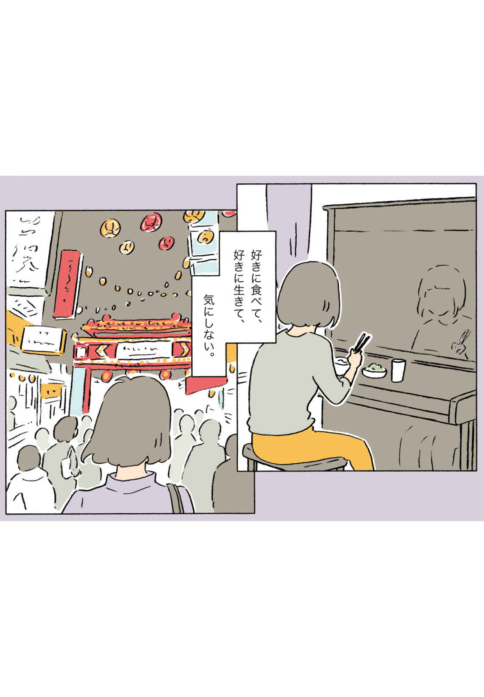
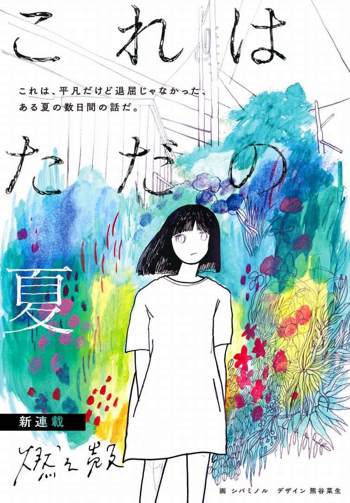
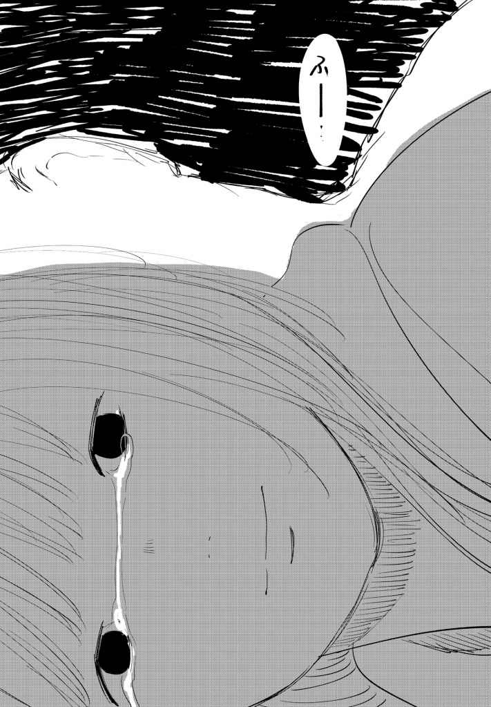
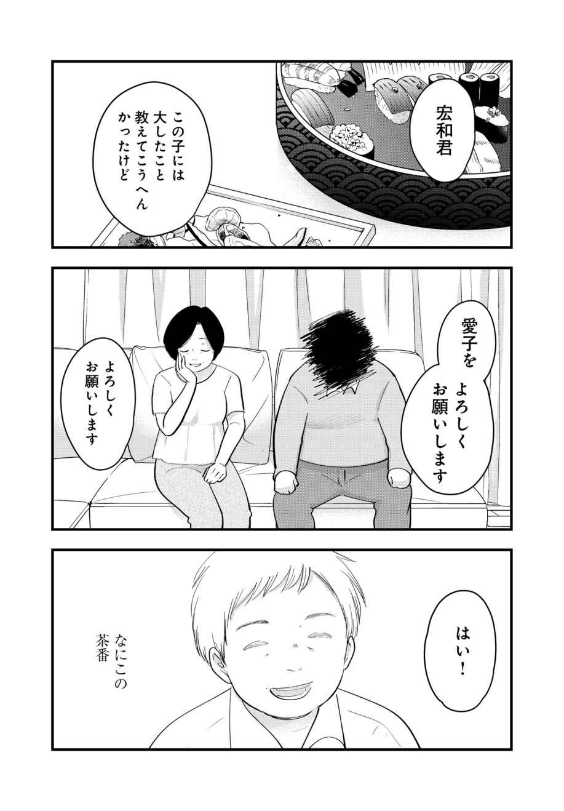
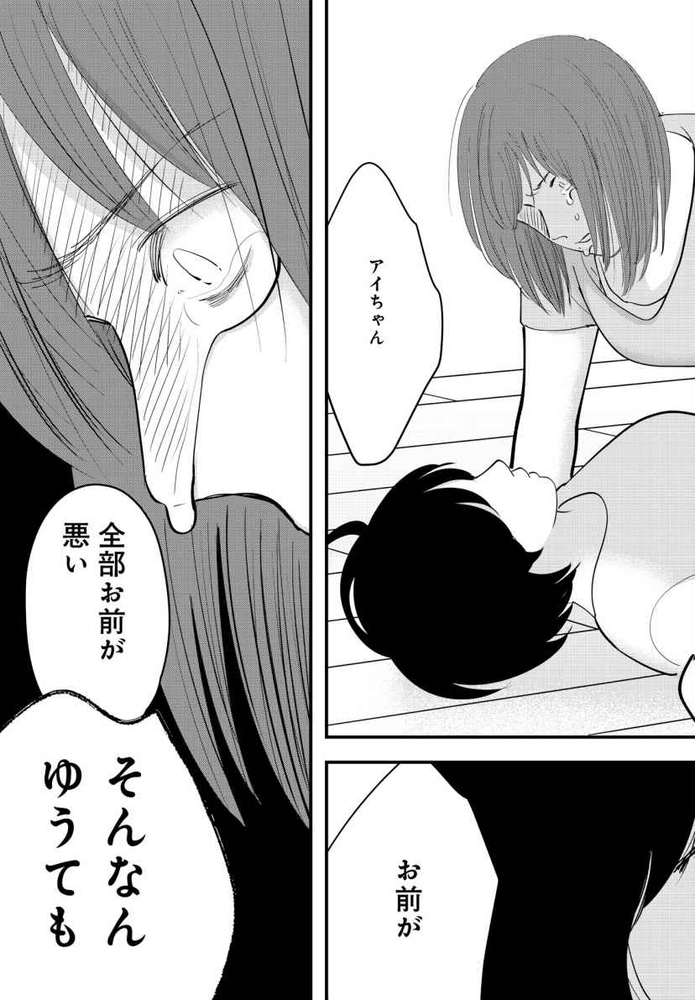

| yom yom vol.57（2019年8月号）[雑誌] | |
| 新井見枝香 & 千早茜 & 燃え殻 & 小佐野彈 & 橋爪駿輝 & パリッコ & 越谷オサム & 笹井都和古 & 小松エメル & 冲方丁 & 阿部智里 & 吉川トリコ & 武田綾乃 & 早坂吝 & 青柳碧人 & 最果タヒ & 浅原ナオト & 寺地はるな & 小林勇貴 & 武内涼 & 乾緑郎 & 馳星周 & 門井慶喜 & 結城充考 & 柏井壽 & ふみふみこ & 徳永京子 & 長井短 & 今祥枝 & 橋本倫史 & 柳瀬博一 & 平原卓 & 円城塔 & カレー沢薫 & 新井久幸 | |
| 新潮社 (2019) | |
CONTENTS vol.57 ２０１９年８月号
NEW SERIES
新井見枝香×千早 茜
燃え殻
小佐野 彈
橋爪駿輝
パリッコ
SPECIAL STORY
越谷オサム
SPECIAL ARTICLE
SERIES
武田綾乃
青柳碧人
最果タヒ
浅原ナオト
寺地はるな
小林勇貴
小松エメル
武内 涼
乾 緑郎
馳 星周
門井慶喜
結城充考
COMIC
ふみふみこ
WORLD TRENDS
CULTURE & COLUMN
柳瀬博一
カレー沢 薫

「そして、僕たちは舞台に立っている。」、
「東京デストロイ・マッピング」（新納 翔氏）、
「パルコにお店を出したくて」（渋谷直角氏）、
「多摩川異聞録」（恒川光太郎氏）は本号休載です
表紙 イラスト／ 押見修造
表紙＋本文扉 デザイン／ 川谷康久 （ 川谷 デザイン）
【ご注意】
この本は縦書きでレイアウトされています。また、ご覧になる機種により、表示の差が認められることがあります。
この作品の全部あるいは一部を無断で複製・転載・配信・送信すること、内容を無断で改変・改竄することを禁止します。また、有償・無償にかかわらず第三者に譲渡することはできません。
新井見枝香
実家にいた頃の私は、ピアノとごはんを食べていた。
ピアノはいつも、私が帰ってくるのを待っている。私が楽しければピアノも笑い、悲しければピアノが泣く。機嫌が悪いときには、八つ当たりしてしまうこともあった。それでもどっしりと受け止めてくれるピアノのそばで、私は毛布にくるまって眠るのが好きだった。ピアノは私にとってただの道具ではなく、いちばんの味方であり、母のようでもあった。
しかし私の母は「ＹＡＭＡＨＡ」ではない。ピアノとは別に「かよ子」という母がいるから、安心してほしい。もしピアノが母なのだとしたら、私は親を二束三文で売り払った非道い娘ということになってしまう。ついでにいちばんの味方も売っている。最低だ。
連載１回目ということで、つい気負ってしまったが、端的に言うと「自分の部屋が狭いためピアノが食卓代わりになっていた」のである。逆にピアノにとって非道い話だ。水濡れ厳禁なのに、味噌汁なんてこぼされたらたまったもんではない。
そしてベッドをピアノにくっつけて置くしかなかったため、離れることが物理的に不可能だったわけだが、離れたくなかったかのような表現をすることで、ピアノに礼を尽くした。売ってしまったことが後ろめたい。
私のピアノはいわゆる普通の、黒いアップライトピアノだった。鍵盤の部分に蓋をした状態で、ピアノ椅子に座って飯を食う。その姿を想像してみてほしい。クロスで磨き上げたピアノは鏡の役割を果たし、ひとりで食事をしているのに、自分自身とありえない近さで向かい合い、食事を見せられているような錯覚を起こすのだ。
子持ちシシャモに頭から齧り付いたり、とろろ蕎麦を啜ったりする自分を見るのは、思った以上にこたえる。ドッペルゲンガーを見たら死ぬと聞くが、死にたくなるの間違いかもしれない。シンプルにモリモリ食べている私、特にその口元は奇怪で、じっと見ていると化け物にしか見えなくなってくるのだ。
テレビの食レポは口に含んで見せるショーだし、デートのディナーはデートそのものである。いずれも、ただ生きるためにエネルギーを摂取する姿とは異なる。たとえファミレスで熟年夫婦が一切の会話もなくとんかつ定食とねぎとろ丼を食べていても、それはやはり、ひとりで昼ドラを見ながらスーパーで買ったねぎとろ丼を食べる食べ方とは同じでないはずだ。
ところで、先日『坂の途中の家』という連続ドラマの第１回目を鑑賞する機会に恵まれた。やけに大げさな言い方をするのは、それが映画館での舞台挨拶付き完成披露試写会だったからである。小さい子を持つ母親が裁判員制度の通知を受け取り、よりによって、我が子を殺した罪に問われる母親の裁判に関わっていく。どうしたって重たい話だ。映画館という完全なる静寂の中、異常に質の高い音響でもって「子供が寝静まったあとのあまりうまくいっていない夫婦の食卓」を観る。夫がビールのプルタブを持ち上げる小気味よい音。忙しいときはスーパーの総菜でもいいんだぞ、という夫のやさしい声。しかし向き合ったまま同時に食べ物を口に含めば、あとはひたすら咀嚼音が響くのみ。たとえきちんと口を閉じていても、粘度の高い無数の
そのビールは勝手に冷蔵庫の中で増えないし、料理は作って当たり前じゃない。
夫婦の食事って辛い。誰かの妻になれる気がしない。
しかし親子の食事も辛い。遊び歩いていつも帰りが深夜になる私は、家族と一緒に食卓を囲むことがほとんどなかった。それでもダイニングテーブルに座れば、とっくに夕飯を終え、風呂に入って髪を乾かし、ナイトクリームをテラテラさせた母が向かいに座り、ご飯をよそったり納豆をかき混ぜたりする。私はテレビを見ないし、伝えたいことも何もないので、そこには冷蔵庫が低く唸る音しかない。そんな中、よりによってニチャニチャと納豆ごはんを咀嚼する私を、嬉しそうに見守っていられる親の愛ってすごいな、と
そういうわけで、私はいつからか、もっともっと遅く帰って、ひっそり自室で食事を摂るようになった。
薄暗い食卓に、ラップをかけた炊き込みご飯と酢の物が「よかったら食べてください」のメモとともに用意されていることもあったし、コンビニでコロッケパンやハーゲンダッツアイスを買って帰ることもあったが、いずれも部屋に持ち込んで、ピアノの上で食べるようになったのだ。
この頃から徐々に、新井家のごはんが新米に切り替わったことや、今日の豚の生姜焼きはチューブの生姜ではなく、すり下ろした生姜を使っていることに気付くようになる。
食べ物の味に集中すると、何もかもが美味しくて、気付けば好き嫌いもなくなっていた。
もちろん、仲間とワイワイ食べるのが楽しいときもある。だが、楽しいせいで、味わうことが二の次になってしまう。私はそれが嫌だった。みんなでサーティワンに行っても、バイバイしたあとにひとりでサーティワンに戻って、サーティワンを一からやり直したくなる。あんな風になんとなく食べ終えてしまうのなら、サーティワンじゃなくてもよかったのではないか、と思えてならない。
誕生日ケーキ代わりに母親が買ってきたサーティワンのバラエティパックも、やっぱり自室に持ち込んでピアノ椅子に座って食べた。ひとりで12 玉ぜんぶだ。
誕生日だからこそ、好きにさせてもらった。私の幸せを願うなら、ひとりにして欲しかった。
30 代後半になり、ようやくひとり暮らしを始めると、なぜとっととひとり暮らしをしなかったのかと泣いて悔やむほど、私という人間はひとり暮らしに向いていた。
どこへ逃げずとも、私の食事を邪魔する者はいない。誰かの咀嚼音を耳にねじ込まれることもないし、聞かれるという羞恥にもだえることもない。解放されきった私は、部屋にいれば何かしらを食べ続けるようになり、いかに今まで我慢していたかを実感した。私は本当に、四六時中食べていたいほど食べることが好きだったのだ。
適宜ゲップも出せるし、骨付き肉の骨をチューチューガジガジして、腹ぺこの犬に投げても見向きもしなくなるほどエキスを吸い尽くすこともできる。夜中の３時にオムライスを作っても、目が覚めた５秒後にアイスを食べても、誰に言い訳する必要もない。
お行儀を抜きにすれば、いいことずくめである。この小さな
そんな頃、私と良く似た妖怪がひょっこり視界に現れた。その感覚は、ドッペルゲンガーの時とはまるで違う。猫がテレビに映った猫から目が離せないように、ただ目が離せなかった。ウニャッニャ。
ふたりで食事をするようになった経緯は覚えていない。ただ、気が合う以上に、胃が合うことが印象的だった。モンプチしか食べられない猫と、モンプチでも猫まんまでも同じ勢いで頭を突っ込む猫とは、どうしたって仲良くはなれない。もちろん我々は、揃って後者だ。いい匂いがすれば、見境がない。
もう何度、一緒に食事をしただろう。彼女と違って、私は記録も記憶もしない。
それでも、確実にわかってきたことがある。
私は、誰かと食事をしているとき、その誰かにも自分と同じくらい、食事に集中してほしかっただけなのだ。同じようなタイミングで息を吐き、ゲフー、とはやらないが、一度くらいは目が合って、うまいね、うん、うまい、と無言で確認し合うくらいでコミュニケーションは十分だ。
こんな連載をするなんて、どれほどベタベタの仲良しなんだと思われるかもしれないが、食事をしているときは、大してお互い話を聞いていない。私も相当だが、彼女の聞いてなさっぷりには、時空が歪んだかと思えるほどだ。私がいることを忘れているような目をすることもある。
そして困ったことに、我々が会えば、ほとんど何かを食べている。なかなか会話ができない。
このエッセイでは、塊肉に興奮してうっかり聞き漏らした話や、パフェとの対話が忙しくてすっかり伝え忘れていた話を綴ってゆければと思っている。
ちはやん、よろしくね！

千早 茜
人との関係は食事からはじまることが多いように思う。
友情にしても恋愛にしても、相手を知りたいときはまず食事や飲みに誘うのが一般的なようだ。小説家という仕事のせいか、仕事の話の際も「一度、お食事でも」という感じで顔合わせをする。日常以外の人との食事には「会いたい」とか「話したい」といった気持ちがもれなくついてきて、それらはときどき飲み物や食べ物の味をなくしてしまう。
私は食べることが好きだ。嗅ぎ、歯や舌でもって味わい、料理人が意図した通りに熱いものは熱いうちに冷たいものは冷たいうちに食べたい。宴会なんかで挨拶や乾杯合戦が続くうちに刺身が乾き、鍋が煮つまり、揚げ物の輝きが失われていくのが非常に辛い。
いままで一番辛かった外食はテレビ撮影中の飲食で、アナウンサーの女性と喋りながらケーキを食べるというものだった。ケーキは選ばせてもらえた。いつもの習慣通り私は二個選んだが、いざ集中して食べようとすると「質問に答えてください」と指示が飛ぶ。自分の小説のインタビューだったので慎重に話していると「ケーキを食べてください」と言われる。ぱくり。「はいっ目線ください。笑顔で感想を」「......おいしいです」チョコレート系を選んでしまったため、笑うとチョコまみれの前歯をさらしてしまいそうでできない。「笑って」と追い打ちをかけてくる。アナウンサーの女性を見ると、切りやすく食べやすいフロマージュ系のムースをしずしずと食べている。なるほど撮影のときはこういうケーキを選ぶべきなのかと思いつつ、そういう選択ってケーキに対する姿勢としてどうなのかと悩み、ますます混乱する。
結局、なにを選んでも一緒だった。あのときのケーキの味はまったく覚えていないから。ケーキに興味のない人々に囲まれ、指示されながら食べてもまったく美味しくない。ただただ虚しい食だった。ケーキにも職人さんにも失礼なことをした。もう二度とカメラの前で好物を食べないと心に誓った。
ケーキは一人で食べるのが最良だ。私はメモを取り、一層一層確認しながら食べたいので、そんなときにケーキ以外の話題をふられても対応できない。しかし、人といて「ごめん、いまケーキ食べてるから」と話をさえぎるわけにもいかない。「ケーキと私（もしくは俺）どっちが大事なの?! 」と面倒なことになるだろう。ならなくても、空気は悪くなる。
そんなとき、私はよくフロルのことを考えた。フロルとは萩尾望都さんのＳＦ漫画『11 人いる！』にでてくる可愛く勇敢な登場人物だ。私が持っている小学館文庫版には『スペース ストリート』という短いおまけ漫画がついていて、その中に『生きるべきか否か』という生存権について登場人物たちが語り合う回がある。極限状態において人肉を食べるか食べないかの議論になり、フロルが言う。
「オレは食わないだろな。でもそんな時だれかが食ったとしても気にしないよ」
いいやつだな、とフロルを好きになった。こんな友人がいたら気持ちがいいだろうなと思った。人肉食いを気にしないフロルだ、私がケーキに集中するくらいなんでもないだろう。お互い好きに食べて、好きに生きて、気にしない。それが尊重というものではないか。
そうは思ってもフロルみたいなタイプはなかなかいない。自分がフロルみたいになればいいと思っても、「気にしない」という姿勢は「冷たい」と捉えられることも多く誤解を生んだ。
そうして、数年が経ち、フロルのような人がふらっと現れた。
彼女は朝の京都駅でアイスを食べていた。日記をつけているので、それが２０１４年の６月14 日だったことがわかる。当時は彼女のことを「三省堂の新井さん（黒ずくめ）」と書いていた。黒ずくめとは服のことで、それは五年経った今もあまり変わらないが、呼び名は「新井どん」になった。
その日、私は八時半の待ち合わせに数分遅れてしまった。東京の書店員の子たちが京都に観光にくるので、京都在住の私が案内をする予定だった。これからモーニングに行くというのに、新井どんは数メートル離れた場所で「中村藤吉」のほうじ茶アイスを食べていた。「ちょっと目を離した隙に買いにいっちゃって」と他の書店員の子が説明してくれたが、新井どんは「オレのことは気にしないでくれ」オーラ全開でアイスに集中していた。別に構わない、と思った。行きたいところがあればどこへでも案内するから好きなものを食べて楽しんでくれたらいい。あなたの休日、あなたの胃袋だ。充実してくれることこそが案内役の喜びだ、と口にはださず念を送った。通じたと思う、たぶん。
「イノダコーヒ」でモーニングをして、夕方まで三軒の甘味処と二軒の喫茶店に行き、かき氷、団子、ホットケーキ、卵サンド、ナポリタン、プリン、フレンチトーストなどを食べまくった。移動中も新井どんはふらっと姿を消し、ドーナツやジェラートを買い食いしていた。手に食べ物がなくなると派手な色の炭酸飲料を自動販売機でがこがこと買って飲みだす。涼しい顔をしてもくもくと飲み食べしている。フロルの精神性を体現している、と目が離せなくなった。
新井どんとは面識があったし、飲み会などで一緒になることもあった。けれど、はじめて意識をしたのがその日だったのだろう。あれから五年、二人でしょっちゅう食事に行くようになった今も、私は彼女と食べたものを記録し続けている。これは私の癖のようなもので、気になった人間ができるとその言動を記録してしまう。もちろん誰にも見せない、私だけのメモだ。
新井どんとの食事は楽しい。いつかのイベントで彼女と自分のことを「餌場が同じ野良猫」と言ったことがある。食べたいものや食への姿勢が似ていて、気がついたら同じ食卓を囲んでいる。延々と食べ続けられる。非常に、胃が合う。
けれど、もちろん違うところもある。彼女がなにより愛するかき氷を私の胃腸は受けつけないし、彼女は私のように茶愛好家ではない（じわじわ布教しているが）。
それを大きく実感したのは、一緒に行った台湾旅行でだった。地元の人で混雑した夜市のまんなかで私はフリーズした。わからない言語、嗅いだことのない匂い、人に揉まれながら逃げ場を求めて空を見あげれば、昼間は明るく見えた南国の樹木が夜闇でおどろおどろしく風に揺れていた。赤いランプで照らされた屋台には見たことのない食べ物があふれている。肉か魚か野菜といった大まかな分類しかわからない。なんの肉で、どの部位で、どんな調理がされているのか見当もつかない。お腹は減っているのに、なにも口に入れる気にならなかった。
一方、新井どんは目をきらきらさせて路地に入ったり、店の人と日本語で威勢よくやりとりをして惣菜を買ったりしている。私はあらかじめ調べていた
やがて、「食べた、食べた」と新井どんが戻ってきた。その頃にはだいぶ気分が落ち着いていたので茶を淹れ、一緒におやつを食べた。自分はどうやら食べたいものしか食べられないようだと話した。つまりは知っているものや調べたものしか体が受け入れない。しかし、彼女は「知らないものを食べたい」と言った。そこは大きな違いだ。
帰国してから、ふと思った。他人も未知の食材のようなものだ。自分とは違うその性質をすこしでも理解するために私は記録というかたちで言語化しようとしているのかもしれない。
そんなことを考えていると、パン大好き「小麦粉野郎」こと担当Ｍ嬢が「食いしん坊のおふたりで食エッセイを書きませんか」と声をかけてくれた。ふたりで食べにいったものについて書くという内容で、いくつか場所と食べ物の提案をだし合った。担当Ｍ嬢の提案は若干、小麦粉方面へと誘導する傾向があったが、まだ行っていない場所や食べていないものがたくさんあがり二つ返事で引き受けてしまった。
どんなに近くにいても、何千回食事を共にしても、当たり前のことだが同じ人間になるわけではない。それでも、わずかずつ私は彼女に食われているし、私も彼女を食っている気がする。
同じものを食べながら、どれだけ見ている景色が違うのか、またはどこが同じなのか、似てくるのか、書いていくうちに見えてくれば面白いのではないかと思っている。
そうそう、私はもう彼女がフロルでなくともまったく気にならない。
（つづく）

暦的にはもう秋だった。それでもその日は、間違いなく夏だった。蝉たちは、まだ一匹も欠けることなく大合唱しているかのような迫力で鳴いていた。ところどころ穴のあいた網戸を指でなぞる女の子を、その日、ボクはうつらうつらとしながらずっと見ていた。
夕暮れ間近の市民プールにボクらはいた。ずっと左耳に水が入っていて気持ちが悪かった。でも、気持ちが悪いことが、気持ちいいと思ったのは、初めてのことかもしれない。塩素の匂いが皮膚からしていた。壊れたヘッドフォンのような左耳にかすかに響く蝉の鳴き声。彼女は、網戸をなぞっていた左の小指で、ボクの右耳を優しく塞いだ。彼女の細い指が、ボクの頰を包み込む。
「これで聞こえない？」彼女はそう言うと、数秒だけ笑った。
その日が、彼女の誕生日だということを知ったのは、次の日になってからだ。小さくかけっぱなしのラジコから、来年の今日は東京オリンピックはもう終わってるんですね、なんて雑音が聞こえた。
これはただの夏の日の出来事だ。平凡だけど退屈じゃなかった、夏の数日間の話だ。
「とりあえず」という冠のついた言い回しが、苦手だった。とりあえずビールとか、とりあえず大学ぐらいは出ておけよとか、とりあえず三年働いてみろよ、だったり。とりあえず結婚して、とりあえず子どもは作れよ。マンションのローン、養育費、とりあえずそうだなぁ、貯金はだいたい、これくらいはあった方がいい。そう言って兄は、左手でピースを作った。「二千万円」ということらしい。
ちょっと待って欲しい。そうやって、なんでもかんでも「とりあえず」を押し付けないで欲しい。ボクは心の中でそう思いながら、とりあえず苦笑いを浮かべ、数センチだけ残ったビールに口をつけるフリをした。もう正月に実家に挨拶に行くのはやめようと心に誓った。その誓いは、無宗教のボクの唯一の戒律として、この三年破られていない。アーメン。
「そんなこと言ったってあんたね、親も周りも年を取って必ず死ぬのよ」知人の結婚式に着ていく黒いフォーマルスーツのクリーニングを頼もうと電話をかけたら、電話口の母が、ここぞとばかりに溜まりに溜まった小言を言ってきた。
「ニュースを観なさい。年金なんて破綻してるんだから。どうやって定年になってから、食べていくの？ ていうか、あなたいつまでそんな朝も夜もないような仕事続けているの。今から子どもができたら、あなた、子どもが成人する時、幾つになるか計算したことある？ とりあえず、最初にそういうのを計算して生きていくのが、大人っていうのよ」
「別に、人には人の生き方があるっつうの」
「四十五才が、あるっつうのって、なんなのよ。県庁に入った三浦くん、憶えてる？ 憶えてるわよね。上の子、中学入学だって。この間、東急ストアで三浦くんのお母さんにたまたま会ったら、自慢げに話してたわ。みんなちゃんとしてるの。そんな生活続けてたら絶対、体壊すわよ。塩分とか気にしてないでしょ？ 人はね、塩分の摂りすぎで病気になるの。ミヤネ屋でなんとか薬科大学のエラい先生が言ってたんだから。その人、お母さんくらいなのに、髪の毛とか真っ黒だった。やっぱり酢を飲むことが大切なんだって、改めて思ったわ」
「ハイハイ、酢は飲むよ」
「酢の話じゃないでしょ」
「酢の話、してたじゃん」
「あのね、食事を作ってくれる人はいないの？ コンビニ弁当ばっかり食べて死んだ人のドキュメント観た？ 観てない？ 先週。ＮＨＫの孤独死スペシャル、ああいうの観なさいよ、命は一つよ。いつまでもお母さんみたいに、言ってくれる人いないわよ。みんな、他人のことなんてどうでもいいと思ってるんだから。最後に頼れるのは家族だけよ。あんたが今のまんまだとお母さん、恥ずかしくて東急ストア、買い物行けないわ」
母はいつも通り、しっちゃかめっちゃかに話を取っ散らかして、嘘みたいに大きなため息を電話口に吹きかけた。ボクは「ハイハイ」と言いながら、「スーツだけは本当頼むよ」と念を押した。
その夏は何度となく目にしてきた、ありきたりの光景から始まる。都内の閑静な住宅街に埋もれるようにある古民家をリノベーションしたレストラン。一瞬店内が暗転し、新郎新婦のすぐ横に設置されたスクリーンから、この店にはふさわしくないほどの大きな音量が響き渡る。
「はい、えーと圭子さん、洋平くん。ご結婚おめでとうございます。マネタイズの大島と、」「山里亮太です」「めでてえな！ 名前違うでしょ！」「斉藤です」「はい、本日は誠におめでとうございます」「おめでとうございます！」
サプライズとして、今一番お笑い界で人気の若手漫才師『マネタイズ』のお祝い動画が流れ始めて、披露宴会場がどっと沸いた。スクリーンの横で、キャンドルライトに照らされている新婦が、大げさに手を叩いて笑っている。招待客の多くが、スマートフォンのカメラを、大きなスクリーンに向けているのが確認できた。
「新郎に大きな貸しを作れたな。俺のおかげだよ。これでおまえの会社も未来永劫、発注が途切れることなく安泰だよ」
先月、体重が百キロ超えをしたと話していたディレクターの大関が、ボクに耳打ちをする。過密スケジュールの合間を縫って、マネタイズを呼べたのは、この巨漢敏腕ディレクターの顔の広さと力によるものだ。ボクは新郎のつとめる大手広告代理店と二、三度仕事をしただけで、個人的なつきあいはなかった。
ディレクター大関とともにお祝い動画の制作を条件に、営業目当てで、この披露宴に馳せ参じた。テレビ番組の美術制作をしている自分の下請け会社に「未来永劫の安泰」なんてものがあるとは思えなかった。結局これからも、風見鶏のように風まかせの毎日が続くんだろうなと思っていた。
「新郎が、あの有名な大月家具の御曹司で、新婦が赤坂の老舗の料亭のひとり娘って、まったく俺とは関係ない並行世界っすね。オープニングのご両人を紹介した映像なんて、ワイドショーの豪邸自慢の特集みたいでしたね」
大関に今度はボクが耳打ちをする。締めに入ったマネタイズが、森永チョコボールのコマーシャルで最後に披露する一発芸を決めると、披露宴は最高潮に盛り上がった。
「デザートとお飲物になります」
テキパキとしたボーイが、ボクたちの席に手際よくコーヒーと紅茶を、客の要望通りに置いていく。「新郎ご友人」という雑な括りのテーブルに座らされて、隣の大関以外、まったくの初対面という緊張を強いられる状況が続いていた。何度目かの「ご歓談」で、やっと式はとどこおりなく幕を閉じようとしていた。
新郎新婦が目配せをして、おもむろに席を立った。照明が暗転し、スポットライトがマイクの前に立つ新郎新婦だけを照らし出した。
「ここで、新婦から、ご両親さまへ、お手紙を頂戴できるということです。圭子さん、ご準備はよろしいでしょうか」
いまひとつ心のこもっていない話し方の司会の紹介とともに、新婦が手紙を広げ、漫画みたいに深呼吸をひとつ付いた。新郎が背中にそっと手を添える。新婦は司会の方を見てうなずき、手紙を読み始める。
自分は皆さんご承知のように料亭の家に生まれ、家での食事はいつもプロの料理人が作ってくれて、いわゆる家庭の味を知らずに育ちました、とイヤミにもなりかねないことを、しっかり笑いに変えて始まった。洋平さんのご家族とわたしの育った家のように、快適な家具と美味しいご飯に包まれた、笑いのたえない家族を作っていきたく、「お義父さん、お義母さん、不束な嫁ですが、よろしくお願いします」新婦がそう言ってスピーチを締め、深々と頭を下げた。
「そして、わたしの方もお義父さんとお義母さん！」
新郎が横からマイクに顔を近づけて言う。
「これからも料亭の味、ごちそうになります！」と新婦の両親に語りかけると、新郎の会社の同僚たちの席から「羨ましいぞ！」と大きな声が飛び、列席者たちから、正しい笑い声が漏れた。
「結婚式はいいなぁ。本当、羨ましいねえ」
大関がデザートのゆずシャーベットを口いっぱいに含んで、ボクにまた耳打ちをしてくる。何が羨ましくて、どこが良いのか、ボクにはまったくわからない。「そうですね」と気の抜けた相槌を打った。宇多田ヒカルの『花束を君に』が大音量でかかり、新郎新婦と両家の親が、並んでお辞儀をして万雷の拍手に包まれ、式はとどこおりなく終了した。
「二次会、どうします？」
「行くでしょ～。見ただろ？ 新婦の友人たちによるチアリーディング。イエス！ イエス！」
百キロ超えの巨体を揺らしながら、大関が、手と足を不格好に挙げ、おどけて見せた。
「ひとり、すげ～エロい子、いましたよね。きらきらの黒いワンピースの」とボクが言うと、「いたいた、あの子の胸は反則。反則だろ」とピンク色の蝶ネクタイを外して、襟元を第三ボタンまで緩めながら、大関は今日一番の笑顔を浮かべた。クロムハーツのネックレスが、異様に似合っていなかった。
「あの子たち、二次会来ますかね」
ボクも白いネクタイを外す。
「それは間違いない。トイレ行く時に、チアで踊ってた子が、二次会の店の話をしていたのを、大関イヤーがキャッチしているからね。で、二次会の店って、どこだっけ？」
二次会のライブハウス兼レストランまでは、クルマでも十五分はかかりそうだった。
古民家レストランの入り口付近には、場違いなネオン管で『REQUIEM』の文字が妖しくブルーの点滅を繰り返し、新婦の友人たちがそのネオン管をバックに写真を撮りあっていた。新郎の親族席で泥酔していたおじさんが、彼女たちの輪に無理やり突入し、「キャ～」という嬌声に包まれながら、一緒に写真に収まっている。
「ここは俺たちも行くべ」
大関が、今まで見たこともない速さで、「はい、もう一枚、もう一枚」とその輪に加わり、ボクを手招きしている。出遅れたボクは黒いワンピースの女の子の横に申し訳なさそうに並んで、写真を撮られた。
「二次会、行かれますか？」
ボクは時候のあいさつみたいに声をかけていた。乾杯のシャンペンと冷えた白ワインが効き、おじさんと大関の臆面のなさの数パーセントがボクに伝染したみたいだ。
「はい、みんなで行くつもりです」
「ボクたちも、そのつもりでした」
大関が横から割り込んでくる。
「歩いていくには、ちょっと遠いから、タクシー拾おう。一緒に行きませんか？」
大関が持ち前の押しの強さで攻める。
「ご一緒させていただいて、いいんですか？」
あまりに呆気なく、笑顔で彼女は乗ってきた。彼女の髪の匂いが、鼻をくすぐる。披露宴で何時間か同じ空間にいると身内意識が湧いてくるのだろうか。警戒心が微塵もない。ボクにはわからない感覚だった。
見たところ、彼女のグループは三人だ。タクシーは二台に分乗しなくてはならない。最初に止めたタクシーは大関に譲り、黒いワンピースの友人ふたりを乗せた。ほどなくして、もう一台、タクシーが来て、ボクは黒いワンピースの彼女とふたりで乗り込んだ。
「新婦の圭子さんとは、大学で一緒だったんですか？」
答えを知っている質問をした。
「そうです。みんなでチアをやってて」
「あっ、そうだ。さっき踊ってた人たちだ」
知っていることを知らなかったことにして会話を進めていくのは、下請け稼業の会話術だ。
「テレビ局にお勤めなんですよね？」
「え、どうしてご存知なんですか？」
運転手が、カーラジオのボリュームを少しだけ上げた。ワイドショーで人気の気象予報士が「明日の関東地方は、ズバリ晴天です。真夏並みの気温になるでしょう」と自信ありげに話している。助手席に、競馬新聞が二紙重ねて置かれているのが見えた。
「前のタクシーに乗ったお連れの方が、スピーチした時におっしゃっていたから。ご一緒なのかなって。違いました？」
「いや、でも自分はテレビ局勤務ではなくて、制作側の人間で」
「えっ、制作って番組作ってるってことですか？ じゃあ、マネタイズを呼べたのって？」
「いや、自分ではないです。少しお手伝いはしましたけど。スピーチをしたあの太った偉い人の番組に彼ら出ていて、そのご縁で」
「ええ、すごい。ご一緒に番組を作ってるんですね。私、マネタイズが下北でやってたライブは、ほとんど全部観に行っていました。えー、本当すごい。すごい人と今、話してるんですね」
「作っているというか、参加しているくらいで」
「謙遜されて。参加なんて出来ないですよ、ふつう。なんていう番組ですか？ わたし観てると思う。絶対観てます」
彼女との距離が物理的に近かった。
「あのう、この左の建物みたいですね」
タクシーの運転手が助け船を出すみたいに車を停め、メーターを切る。ボクが払おうとすると、「あ、ちゃんと払います」と彼女が財布を出すそぶりを見せる。「いや、ここはボクが」と引き取った。「すみません、お会いしたばかりなのに」と言われ、身内意識が他人行儀に戻りかける。
タクシーを降りた途端、彼女が「わあ、素敵。地中海みたい」と大仰に歓び、二次会のレストランの外観をスマホで撮ったことは憶えている。そこまでの記憶は、まるで標準で録った動画のようにクリアなのに、そこから先の出来事は、突然まだらで、どこまでが現実で、どこまでが非現実なのか、混沌としていて、自信がない。
行きがかり上、大関とボクは二次会でも黒いワンピースの彼女とその友人ふたりと同じ立食のテーブルに着いた。二次会は、新郎が高校時代に組んでいたロックバンドが久々の再結成をして、爆音で幕を開けた。音割れするシャウトに大ノリのオーディエンス。知らない曲のサビの繰り返しで、だんだんと大合唱になっていく。新郎をいじった会話をしてみたり、新婦の前の彼氏の話を聞いたりしているうちに爆音と大合唱で、五人で共通の話をすることが難しくなっていった。気づくとタクシーに分乗したのと同じく三人と、二人に会話が分かれ始める。この時、緊急地震速報が、港区全域のスマートフォンから鳴ったらしいのに、ボクたちは新郎のシャウトとバンドの爆音で、まったく気づかなかった。
「おまえ、反則だぞ。黒の『反則』とばかり話してんじゃねえよ」
同じタイミングでトイレに立った大関に洗面所で、真顔で怒鳴られた。大関は、かなり酔っ払っている様に見えた。
どういう話の流れだったか、帰りも「反則」とふたりになった。たぶん帰る方面が同じだとか、そういうことをボクが告げたんだと思う。
「今日が昨日になろうとしてるね」
ボクはそんなとってつけたようなことを、彼女に話したらしい。次の日の朝、彼女が口真似をしながら、ボクに教えてくれた。そのあとのバーは、ボクが誘ったらしいけれど、まったく覚えていない。ジンリッキーを、あらかたこぼして飲んでいたらしい。彼女と何を話し、彼女がどういうリアクションを見せたか、都合よく記憶が飛んでいる。かすかに憶えているのは、ＪＲの駅の改札を抜けるように、黒光りする大理石っぽい造りのラブホテルに入ったことだ。
目が覚めたのは、喉の奥が渇きでひっつくような感覚に襲われた午前七時を少し回ったぐらいの時間だった。左手の古傷が疼いた。
「雨の匂いがしない？」
甘ったるいだけの気の抜けたコカコーラを口に含んでボクが言うと、「風の音しかしない」と彼女は空調を絞った。
「ねえ、朝ごはん食べようよ」
うつ伏せに寝ていたボクに、いつの間にか下着をつけた彼女が足を絡ませてくる。目をこすると、指先から彼女の残り香がした。ボクは体を起こし、彼女の腰に手を回して形のいい、張りのある乳房に舌を這わせた。
「反則め」
「なにそれ？」柔らかさを確かめるように、優しくゆっくりと両手を使う。
「あと一時間くらいしたら食べに行こうか」
そう言って、彼女の下腹部に指を滑り込ませる。
ラブホテルを出ると、晴れ間の広がっていない重たい雨雲が、罪悪感をほんのすこしやわらげてくれた。雨の匂いがした。いつ降り出してもおかしくない気配を感じた。ラブホテルでは傘は貸してくれないし、近くにコンビニも見当たらない。仕方がないので、とりあえずいちばん近くにあったドトールに駆け込んだ。
ボクは黒いフォーマルスーツ、彼女はきらきらひかる黒いワンピース姿で、どこから見ても、ワケありのふたりに見えたはずだ。ホットドッグをつまんで、ホットコーヒーで喉の奥に流し込むと、彼女が物憂げに言う。
「圭子、幸せそうだったなあ」
「そうだったね」
「あんな幸せそうなふたりを見た夜に、わたしらは何やってんだか」
「まぁ、そう言わずに」
「ねえ、わたし、最近の話なんかした？」
「え、聞いてない」
「そっか。仕事の話とかした？」
「いや......」
「そっか。昨日はかなり酔っていたみたい」
「こっちも」
彼女の視線の先を見ながら呟いた。若い保母さんが、幼い子どもたちの入った車輪付きのカートを押して、童謡らしき歌を子どもたちと一緒に口ずさみながら散歩している。その様子を彼女と無言で、子どもたちが見えなくなるまで眺めていた。
「また会おっか」
彼女がこちらも見ずに、自分の小指をボクの小指に絡ませてくる。
「そうだね」
ボクは約束するでもなく、不確かなことを言ってしまった。
「うちに帰って、俺、着替えないと。この格好じゃ、現場に行けないから」
絡んだ小指をゆっくり解いて、席を立つ。
「行くね」
「わたし、もう暫くここでボッーとしていたい」そう言う彼女を残して、ドトールをあとにした。ガラス窓越しに彼女が微笑みながら小さく手を振っている。それに応えて手を振った。
大型トラックが二台連続で目の前を全速力で走り去っていく。大きなエンジン音と排気ガスに、手で口を覆った。昨日初めて会った時の彼女との距離感が、すでに懐かしく思えた。鼻をすすると、彼女の匂いがした。点滅している信号機を目にし、左右を確認して小走りに横断歩道を渡り、タクシーを拾った。ドアが開いた瞬間、さっきまで我慢していた雨雲から、雨が勢いよく降ってきた。
タクシーに乗ってナビを入れてもらったら、あっという間に記憶がなくなり、運転手の「お客さん、お客さん、この辺りだよね？」という声で、泥のような眠りから目醒めた。頭痛なんてもんじゃない左側頭部の痛みに耐えながら、辺りを見回す。目黒のマンションから三百メーターは行き過ぎていた。ちょうどコンビニの前だったので、ヘパリーゼと胃薬、頭痛薬にグレープフルーツジュースを購入した。錠剤を片っ端から取り出して、ラムネのように頬張ると、グレープフルーツジュースで一気に飲み下す。手足のしびれが少し気になった。こういう夜と朝は本当にもうやめたい。週に一度、恒例となった後悔と誓いを心の中でつぶやく。自販機で買ったミネラルウォーターをガブガブと飲んだ。アーメン。
ポケットのなかの違和感を確かめると、出てきたのは、折れ曲がったコースターだった。一夜をともにした反則の名前であろう「優香」という文字が、青いインクで書き殴られている。その横に「五反田マーメード」と聞き覚えのない単語が、走り書きで足されていた。ラブホテルに鍵を置き忘れたかと、一瞬凍りつくが、財布の小銭入れの中に用心深くしまってあった。朝帰りは珍しくなかった。ただ疲れ切ったフォーマルスーツ姿は見られたものではない。そそくさとエントランスを通り抜けようとしたところで、足が止まる。
女の子がコンビニのビニール袋を脇に置いて、分厚い漫画本を読んでいる。前にも一度、見かけたことがあるような気がする。登校拒否？ それとも両親による虐待かなにかか？ しかし、女の子にはそんな翳りや暗さはうかがえず、そうしたいから、いまここにいるという感じを受ける。一人がけのソファに深く座って、足をぷらぷらとさせながら、女の子がこちらをジッと見ていた。
「学校、行かないの？」
自然と声をかけていた。女の子が分厚い漫画本をパタンと閉じた。
「今日、月曜日だよね？」
恐る恐る聞くボクに、わかりきったことを聞くなよ、といった表情で、彼女はため息交じりにこう吐き捨てた。
「傘がないの。雨に濡れたくないの。今は雨宿り」
「家に傘ないの？ 誰かいないの？」
「折りたたみ傘、学校だし。お母さん、今日いないから。お母さんの傘ならあるけど、大きいし、変だから」
「変？」
「色が変」
「ビニール傘、あるよ。それに、派手でない女の子が使う折りたたみ傘もあるから、貸そうか？」
「いいの？」
「いいよ。どっちがいい？」
「どっちでも大丈夫かも。見て決める」
ボクは急いで十二階の部屋に戻る。傘立ての中は靴磨きのクリームや、何かで使った木製バットなどガラクタばかりで傘は一本もなかった。靴を脱いで、引き出物の入った袋を玄関近くに放り投げ、部屋の中を探す。ゴミ屋敷ではないけれど、物が多すぎて、我ながら呆れる。仕事で使う資料、使った資料、本、ＤＶＤ、ＣＤがうずたかく積まれ、「いま大地震が起きたら、この部屋の荷物の下敷きになって死ぬと思う」と、全裸で天井を眺めながら呟いた女を、ふと思い出した。雑誌の山に埋もれていた女性用の折りたたみ傘とビニール傘を見つけた。鍵もかけずに、ボクはエントランスに戻った。
「どっちにする？」
彼女は折りたたみ傘を手にし、開いた。
「こっちがいい。可愛い」
女の子はどこかの海外の町がパステルカラーで描かれた折りたたみ傘を選んだ。
「傘、別に返さなくていいから」
「わたしのうち、十二階なの。一二〇八」
女の子がニヤッと笑った。
「え、うちは一二〇五だよ」
この子になぜ話しかけ、親切にしているのか、自分でも不思議だった。自分は親切ではないし、社交的でもない。子ども好きでもない。どちらかといえば、子どもは苦手だった。最近はそれが顕著になっていた。彼女が折りたたみ傘をもう一度、確かめるようにバサっと開いた。微笑んだ彼女につられるように、ボクも微笑んでいた。この光景の不思議さはなんなのだろう。さっきマンションに戻ったときよりも強い非日常感に襲われていた。
「その漫画本好きなの？」
「別冊マーガレット。見て、99 年８月号」
「99 年？」
「お母さんの。うちのお母さん、何十年も別マを買い続けてるの。ぜったい捨てないの。部屋ひとつ全部、別マが置いてある。見にくる？」
「いかないよ」ボクは彼女の読んでいた年代物の分厚い別冊マーガレットをペラペラやりながら心から笑ってしまった。
「わたし、会ったことある」
「誰に？」
「あなた」
「俺も会ったことあるような気がしてた。そりゃそうか、同じ階だもんね」
「この傘の女の人も見たよ」
「それはそれは」
「それはそれは」彼女はニヤニヤしながらボクの口真似をして、覗き込むように様子を窺っていた。
「君、いくつ？」
「女に年齢聞く？」
「女？」
「男に見える？」白いワンピースを見せびらかすように彼女は、ボクの前で大きく両手を広げる。
「ごめんなさい」
「十一才」
「小四か」
「小五」「ごめんなさい」
「そこの小五、学校へ行くんだ」ボクがそうふざけて促すと、彼女は、笑うのと怒るのとの中間みたいなふくれっ面をして、荷物をとってくると言って、突然のダッシュでエレベーターホールに走っていった。雨の音が一段上がった気がした。気象予報士が、豪快に予報をハズしていることに、その時、ボクはまったく気づいていなかった。
（つづく）
第一回「恋に恋せよ！」
「ダン君はさ、俺に恋をしてるんじゃない。恋に恋してるんだよ」
一番好きだったひとから、フラれるときに言われた言葉だ。そんなに昔のことじゃない。つい五年前の、夏のことだった。
インターネット関連企業から派遣されて台湾に駐在していた、同い年の彼。ものすごくイケメン、というわけではなかったけれど、ベビーフェイスなのに、どこか思慮深げな表情が魅力的で、たまに発するひとことに、
自分がおしゃべりで落ち着きがないぶん、昔から、物静かな、いわゆる「雰囲気イケメン」が好きだ。彼はまさに、そんなひとだった。
「俺、資本主義って嫌いなんだよね」
僕にそう告げたときの彼はすでに、会社を退職して独立し、自らＩＴ企業を興して成功のビッグウェーブに乗りはじめていた。
資本主義市場経済のド真ん中で、台湾や中国、はたまた欧米の企業や顧客を相手に、堪能な英語や中国語を駆使してバリバリ稼ぐ。
精巧に作られたパワーポイントの資料を、愛用のマックブックで操作しながら、大勢の外国人投資家の前で、自社の強みを
自分も経営者の端くれだというのに、機械音痴なうえに数字音痴の僕は、そんな彼の雄姿に、とてつもなくあこがれた。
グローバル資本主義の申し子のような男。
それなのに、資本主義が嫌いだという男。
彼のかかえるそんな矛盾すらも、僕にとっては美点だった。
僕は、二元論が嫌いだ。女と男、右翼と左翼、保守と革新、善と悪。あらゆる二元論が、僕たちの生きる世界を息苦しくしている。
「短歌研究」二〇一七年九月号
たったひとりの肉体や精神のなかに、女がいて、男がいる。善があって、悪がある。誰もかれもが、こころのなかに、もやもやとしたグラデーションを抱えて生きている。とはいえ、「矛盾」を引き受けながら生きることは、実はけっこう勇気がいるのだ。彼は、勇気の持ち主だった。二元論の息苦しさから、自らを解放していた。だから、僕は彼を好きになったのだ。
彼はゲイではなかったけれど、ダメ元で気持ちを伝えてみたら、なんと受け入れてもらえた。予想外の展開に、頭がほとんどついていかなかった。当然ながら、僕は狂喜乱舞した。
毎日が有頂天。恋ってなんて素敵なんだろう！
当時僕は、台北市の中心から少し離れた郊外の、湖のほとりに住んでいた。あこがれの彼の恋人になれたことを思うと、澱んだ亜熱帯の湖面が、きらきらと輝いて見えるほどだった。
僕は十代のころに歌を詠みはじめたのだけれど、大学を卒業するころには、ほとんど作歌をやめてしまっていた。ところが彼と付き合うようになって、どうにもこうにも歌が詠みたくてしかたがなくなった。
こころのなかから溢れ出す、名状しがたい激しい思いは、どうしても歌でしか言えない、と思った。
毎日スマホのメモに三十一文字を打ちつづけ、ひと月に三百首以上うまれたこともあった。そして気づけば、歌誌の同人になり、歌を発表するようになっていた。
この広い世界できつと君だけが揺らせるわれの胸の喫水
いま改めて見ると、なんて稚拙な歌だろう。十年以上のブランクがあったとはいえ、もう少しうたいようがあったろうに。正直、恥ずかしい。けれど、どうしても、嫌いになれない歌である。たしかにあのころ、僕の胸の喫水線を揺らしていたのは、彼だったのだ。
そんな大好きな彼から、突然別れを切り出された。
ええ！ なんで！
混乱し、顔が真っ青になった僕に対して彼が言い放ったのが、冒頭のセリフである。うだるように暑い盛夏の昼さがり、湖にかかる太鼓橋のたもとの東屋で、ふたり
恋に恋？ そんなことない！ 俺が恋しているのは、おまえだよ！
必死に訴えたけれど、彼は僕のもとを去っていった。
それから二日間、僕はわんわん泣いた。三十路の男が、ベッドの上で日がな泣き続けたのだ。傍から見れば、さぞ滑稽だっただろう。つくづく、一人暮らしで良かった、と思う。
恋に恋していたならば、こんなに泣けるはずないじゃないか！
こころのうちで、叫んだ。叫びながら、泣いた。
でも、いまなら、それが詭弁だとわかる。
そう、僕は、恋に恋をしていた。
もっと正確にいうならば、僕は恋する自分に酔っていた。恋に泣く自分に恋していたのだ──
＊
性愛の対象が同性であることに気づいたのは、中学生のころだった。
きっと、あの時分から、僕は恋に恋をしていたのだと思う。
当時はインターネット黎明期。ブラウザを開いて、ネットサーフィンをしていると、男性同士の恋愛や性について書かれた小説やマンガを読むことができた。いわゆる、ＢＬというジャンルだ。
書店にも、かならずＢＬのコーナーがあって、ときおりこっそり覗いては、ドキドキしながら一冊二冊と手に取って、買って帰ってむさぼり読んだ。
本のなかでは、見目麗しい美少年や美青年のキャラたちが、もがき、苦しみ、葛藤しながら、甘酸っぱい恋模様を繰り広げている。僕はたちまち魅了された。
ああ、恋ってすばらしい！
ゆふばえの雲のごとくに燃えながら恋に恋せよ！ 十五のわれよ
同じ美術部にいた、同性の先輩への恋心を、僕はずっと許されないものだと思ってきた。テレビのバラエティ番組では、グロテスクなゲイのキャラを演じるお笑い芸人が、「ホモ」をネタにして笑いを取っていた。
ところが、ＢＬマンガや小説のなかでは、あたりまえのように男同士で恋愛をしている。ノンケだったはずの主人公が、当然のように同性を好きになり、紆余曲折はありつつも、当然のように結ばれる。
思春期の未熟なこころは、夢と現実の境目を、たやすく見誤ってしまいがちだ。僕は、ＢＬの世界と、現実の世界の区別が、徐々につかなくなっていった。
夏休み、合宿で先輩と同室になった。信州の山荘の狭い部屋でふたりきり、というシチュエーションの非日常感もあいまって、僕は完全に現実を見失っていた。
「俺、先輩のことが好き」
夜、お風呂から帰ってきた先輩が、携帯用ゲーム機を取り出してゲームをし始めたとき、僕は思わず気持ちを吐露してしまった。
先輩が、目を見開く。精悍さと、思春期の少年らしい繊細さを兼ね備えた美しい顔に、笑みが浮かぶ。
「俺もだよ。俺もずっと、おまえのことが気になってたんだ。嬉しいよ」
先輩は、僕の座るベッドへとやって来て、やさしく抱きしめてくれた......なんてことには、もちろんならなかった。
先輩が、やさしいひとで良かった。
彼はただ、「そっか。ありがとう。でも、俺は気持ちに答えられない」と、なんでもないことのように言ってのち、黙々とゲームを再開した。
僕は、はじめて失恋を知ったのだった。
ところが、失恋の経験は、僕をさらなるファンタジスタへと育んでゆく。
現実の世界で負った傷を、ファンタジーの世界で癒やす。いわゆる「二次元」にハマるひとの心理は、だいたい同じなのでは、と思う。自宅の勉強机のひきだしに、教室の机の奥深くに、ＢＬ本がどんどん増えていった。
先輩に失恋したのちも、同級生に気になる子ができたりした。とはいえはじめての失恋で、夢と現実の別を思い知ったばかりの僕は、もう二度と同じあやまちは繰り返すまい、と思っていた。たとえ学校で誰かを好きになったとしても、かならず胸のうちにとどめること。同性愛者であることなんて、絶対に知られてはいけない。
辛くなったら、本屋に行けばいい。ＢＬマンガや小説を紐解けば、そこには僕を癒やしてくれる、きゅんきゅんするような恋が、あふれているんだから。
ところが僕がファンタジーの世界に閉じこもり続けるのを許してくれるほど、中学校は甘い場所ではなかった。都心の共学校ということもあり、同級生たちはどこかませていて、三年生ともなれば、話題は恋のことばかり。
ダンって、女に興味なさそうだよね。
うん、わかるー。あ、ひょっとしてホモなんじゃない？
あはは、あいつならあり得るわ！
廊下や教室の隅のさざめきは、当然僕の耳にも入ってくる。
やばい、やばい。僕も女の子に恋をしなくては。普通の恋を、しなくては。だけどどうしたらいいんだろう。
まぼろしの恋のはなしのさざめきに上唇は黒ずんでゆく
「普通の恋」へのプレッシャーが、日々強まってゆく。
ところがどう頑張ってみても、女の子との恋愛が想像できない。あの先輩の、優しい横顔を思い浮かべると、胸はどうしようもなく苦しくなるのに、クラスで一番かわいいと言われていた、レナちゃんの顔を思い浮かべても、僕のこころは波立たなかった。
嘘も、たくさんついた。
好きなタイプの話になれば、流行りの女優やグラドルの名前を、したり顔で出してみたりした。レナちゃんの名前も、申し訳ないけれど、何度か使わせてもらった。そのたびに、こころのなかの大事な部分が、じわじわ溶かされてゆくような心地がした。
悩み多き日々のなかで、ちょっとした事件が起きた。
当時はいまのようにジェンダーの平等が叫ばれる時代ではなかったから、僕の通っていた学校では、あたりまえのように「女子は家庭科、男子は技術」というカリキュラムが組まれていた。
男子が技術室で万力や糸鋸を駆使して、椅子やら机やらを作っているあいだ、女子は教室に残って、裁縫や料理のいろはを習うのだ。いま考えてみれば、身震いするようなジェンダー意識の低さだけれど、あのころはそれがあたりまえだった。
僕の学校の男女比は、約３対２だったので、「技術・家庭科」の時間には、通常四十人以上がいる教室に、十数人の女子が残るのみとなる。授業を効率的に進めるために、家庭科のとき女子は、教室の前方に集まって座るように指示される。
つまり、普段は別のひとが使っている席に座ることになるのだ。
あの日も、僕が技術室でベニヤ板と格闘しているあいだ、教室では家庭科の授業がおこなわれていた。僕の席に座ったのは、同じ附属の小学校から進学してきた、比較的仲のいい女の子。
どういうわけか知らないけれど、彼女はその日にかぎって、僕の机を漁ってみたらしい。するとびっくり！ 男同士の、キワドいイラストが表紙のマンガや文庫本が、どっさりと見つかった。
ちなみに僕の学校には、いわゆる「校則」がなかった。マンガや雑誌の持ち込みも禁止されてはいなかったし、制服すら、着ても着なくても自由だった。だから、机のなかにＢＬマンガを隠しておいたとしても、学校の規則に違反しているわけではない。
しかしこのとき、僕の机のなかには、もっとヤバイものが入っていた。
自分で書いた、「ＢＬ小説もどき」である。
「先生、小佐野君の机からなんかすごいもの出てきちゃった......」
家庭科の授業で僕の机に座った女の子は、あろうことか、思春期の僕の妄想が書き連ねられたノートを、先生に渡してしまったのだった。
しかも、悪いことに、僕が「ノート」に書いていた「小説もどき」は、何人かのイケメンな同級生をネタにしていた。これに関しては、本当に若気の至り、僕の不徳のいたすところだ。僕の妄想のなかに勝手に登場させられた同級生には、この場を借りて謝罪したい。いや、マジで、ほんとすまない。
メデューサのやうにはだかり
「短歌研究」二〇一八年九月号
小佐野君、ちょっと......。声をひそめた先生に呼ばれた。
技術の授業で、不得手な木工作業を終えたばかりの僕は、へとへとに疲れていた。
なんだよ、めんどくせえな。
小さく呟きながらも、根がビビリな僕は、言われるがまま先生について中庭にいった。この時点で僕は、先生が出席簿の下に、例の「ノート」を隠し持っていることに、気づいていない。
たぶん、五月か六月だったと思う。立ちはだかる先生の頭上に、抜けるような青空がひろがっていたのを、覚えているから。
「あのね、あなたを責めているわけじゃないの」
ここまで言われても、僕はまだ状況をいまいち把握できていなかった。
なんのこと？
きっと、僕は怪訝な顔をしていたのだろう。先生はおずおずと、黒い出席簿の下から「ノート」を出した。
「思春期だからね、色々あるのはわかるの。でもね、こんなものを書いていたら、あなたはまわりからとんでもない色眼鏡で見られてしまうのよ。わたしは、それが心配なの」
そこから先は、記憶があいまいだ。でも、「血の気がひく」というのは、こういう感じのことを言うんだなあ、と、遠のく意識のなかで思ったことが忘れられない。
教室に戻ると、何人かの女子が、僕の顔を見てひそひそと話をしているのが目についた。いや、ほんとうは僕のことなんか、話していなかったのかもしれない。でも、先生に「ノート」を突きつけられたあの瞬間から、僕はクラスの全員が、僕をわらっている気がするようになった。
色眼鏡。
先生は言った。でも、色眼鏡ってなんだよ。
聞き慣れない言葉を頭のなかで反芻しながら、僕は、僕のあこがれる恋のカタチが、許されないのだ、ということをぼんやりと理解した。同性の先輩に恋をしたのも、やっぱりいけないことだったのだ。
それでも、「恋」にあこがれる気持ちは高まるばかり。
同級生たちは、彼女や彼氏とデートをしたり、セックスをしていた。
ある日、クラスの女子生徒たちが、教室の隅に集まって、さめざめと泣くひとりの女の子を慰めていた。なんでも風のうわさでは、卒業して附属の高校に進学した先輩と付き合っていたけれど、のっぴきならない事情で別れることになったらしい。
......いいなあ。
泣いている子には申し訳ないけれど、そう思った。別れ話ですら、別れる相手のいない僕には羨ましかった。
僕だって、そういう恋がしてみたい。クラスの男子や先輩と、甘酸っぱい恋がしたかったのだ。
ドキドキしながら、好きだ、と伝える。
すると彼も、おまえが好きだと言ってくれた。
わたしは、身を震わせた──
恐れと期待がないまぜになった、高鳴る胸を抱えながら、親に隠れてこっそり一夜を共にした。
ところが若い身空では、いかんともしがたい事情がうまれて、やがて別れが訪れた。
打ちひしがれて泣いていると、クラスの子たちが心配して、慰めにきてくれた。
だいじょうぶ、もっといいひと見つかるよ。
ひどいよね、こんなかわいい子を捨てるなんてさあ！
きっと相手が後悔するよ──
こんな感じの一連のながれが、僕にとっての「恋のイメージ」だった。青春とは、こういう切ないものがたりの上に、成り立つものにちがいない。そう信じていた。
恋に彩られた青春への渇愛は、募ってゆくばかりだった。
＊
そのころインターネット上には、ゲイのひとたちのための出会い系掲示板が、ちらほらと見られるようになっていた。
〈一七五センチ、六十キロ、十五歳の中三です。髪は長めの茶髪で今風です！ あまり年上過ぎないひとで、会える方いたら、よろしくおねがいします。同年代くらいだと嬉しいです〉
学校での「普通の恋」をあきらめた僕は、インターネットという文明の利器を活用して、恋をしてみようと思い立った。
児童ポルノ法が施行され、青少年健全育成条例なども厳しくなった今日からしてみれば、われながらなかなかリスキーなことをしていたものだ、と背筋が寒くなる。良くも悪くも、ユルい時代だったのだ。
当時は携帯もまだそんなに普及していなくて、やっと「ナンバー・ディスプレイ」（かけてきた相手がわかる、という機能。いまではあたりまえだが、当時としては画期的だった）が普及しはじめたくらいだった。
写メなんてもちろんないから、出会い系で連絡を取って会うことになった相手の容貌は、実際に会うまでわからない。
待ち合わせ前日の夜、相手からパソコンにメールが届く。
〈明日は楽しみにしているよ！ 四時にモヤイ像の前で待ってます！ 俺は、赤いライダースジャケットに、普通のジーンズ
こんな感じで服装やヘアスタイルについて書いてあって、電話番号が付されている。携帯がなかったころに比べたら、だいぶマシだったのだろうけれど、それでもスマホがある現代に比べたら、会うのはけっこう大変だった。
約束の時間に、あえて少し遅れるように、待ち合わせ場所に向かう。こちらの服装やヘアスタイルも相手に伝えてあるから、先に着いてしまうと、すぐに見つけられてしまう。
「もしもし？ もう着いてますか？」
渋谷駅に着いて、モヤイ像の近くの壁の裏から、相手に電話をかける。
「うん、いまモヤイ像の前にいるよ。そっちは？」
「すみません、あと五分くらいで着けると思います！」
電話をしながらこっそり様子を窺っていると、メールに書かれていたのとは似ても似つかない容貌の男が、携帯電話片手に、真っ赤なライダース姿でモヤイ像の前でそわそわしている。
え、あれはムリ！ ハタチだって言ってたのに、絶対三十は超えてるだろ......。
電話を切った僕は、すぐに相手を着信拒否して、渋谷駅から逃げ去ってゆく──
こんなロクでもないことを、しょっちゅうやっていた。
当時、僕と連絡を取ってくれていた男性の皆さん、ごめんなさい。
どうしても恋がしてみたくて、恋人を持ってみたくて、こんな「遊び」を繰り返していた。そしてついに、ひとりのひとと実際に会ってみたのだった。
相手は十九歳の、商船大学生。メールでやりとりしていても、やさしく頼りがいがある感じで、けっこう馬があった。
なにより、情報に具体性があった。嘘をついたり、年齢を詐称している様子が見られない。
待ち合わせ場所は、いつもの渋谷、モヤイ像前。僕は初めて、相手よりも先に着いていた。
午後四時半。
あらわれたひとは、想像したほどイケメンではなかったけれど、それまで連絡を取ってきたひとに比べれば、かなりいい感じ。それに、彼はちゃんと十九歳の見た目だった。
ファッキンだったかミスドだったかは思い出せないけれど、ふたりでお茶を飲みながら話をした。その後、しごく自然とラブホに向かう流れになった。いや、自然と言ったら嘘になる。僕はとにかく、セックスをしてみたかったのだ。ＢＬマンガや小説で描かれているような、イケメンとの甘くてとろけるようなセックスを。だから、あれは僕が誘ったのだと思う。
しつこいようだが、当時はとにかくいまよりも、なにもかもがユルかった。身分証での年齢確認など、された覚えがない。タスポなんかもなかったから、街なかの自動販売機で、中坊があっさり煙草を買うことのできた時代である。
ましてや僕の学校は、制服がない。そして僕の身長は、一七五センチ。顔立ちも大人びていたから、ラブホには何の問題もなく入ることができた。
〈ご休憩・二時間〉終へてもう全部わかつたやうな顔して駅へ
『メタリック』（短歌研究社刊）
はじめてのセックスは、ただ痛くて、つらいだけだった。
そもそも何の知識もないのだ。それは相手も同じだったけれど。
ベッドに敷かれたシーツの赤が、いつまでも眼裏から消えてくれなかった。
痛いのは、身体だけではなかった。
「いけないこと」をしてしまった罪悪感で、胸が痛かった。
ひょっとしたらこれは、先輩への恋心よりも、もっとずっと「いけないこと」だったのではないか。親にバレたらどうしよう。ひきだしの奥のＢＬマンガや小説が見つかってしまうよりも、はるかに、失望させ、傷つけるかもしれない。
胸が、悲鳴をあげていた。
なにより、はじめての性行為は、僕が思っていたのと「なにか」ちがった。
恋が、うまれなかったのだ。
ＢＬマンガだったなら、コトが済んだあとに彼がやさしく僕を抱きしめ、「愛してる」とか「かわいいよ」だとか囁いてくれるはずなのに。そんな甘い時間は、一秒もなかった。
ＢＬマンガや小説で、幸せに結ばれるふたりは、かならず「自然」に出会っていた。同級生だったり、あるいは、街のパン屋でばったり出会ったり。
インターネットを介した出会いは、まったく自然じゃなかった。作為的な出会いの果てに、ＢＬみたいな恋はなかった。
虚無と失望が渦巻く胸の激しい痛みに耐えながら、僕は渋谷駅へと走った。
まだ恋を知らざる胸を、ししむらを、成長痛が引き裂いてゆく
どうすればいいんだろう。どうすれば、自然に出会って、自然に恋ができるのだろう。
乗車率百五十パーセントの車内で、僕は必死にイケメンを探した。もしここで、誰かと目が合ったなら、きっと僕たちは恋に落ちるんだ。
「君、かわいいね」
かっこいいお兄さんが、僕を見初めて声をかけてくれる。
「俺も、ずっとさっきから気になってました......」
顔を赤らめて答える僕に、お兄さんはやさしく微笑みかけて、そっと携帯番号を書いたメモを渡してくれる──
中学生の妄想は、とどまることを知らない。
もちろん、そんなかっこいいお兄さんは、田園都市線の車内には、いなかった。
僕は叫び出したかった。
恋がしたい！ 僕は、恋がしたいんです！
あの日のこころの叫びの余韻が、いまも胸に残っている。
三十六歳の僕は、いまだに恋に恋をしている。
（つづく）
そらだった。茜色の、「空」。
まだ夜になりきれない彼方で、平板な月が浮かんでいる。
アスファルトから立ちのぼった埃の粒は旋回しながら、夕暮れにきらめく。僕は押しつぶされそうになっている。瞼を閉じて、もう一度開いてみても景色は同じ。当然、僕も変わらない。赤と緑、それに若干の黄色い斑点が、視界で点滅し美しい。
電車に揺られながら、聴いた歌。キスもできなかった、あの子のことを考えながら聴いた歌。そんな歌を、曲を、僕はつくることができたのだろうか。
光のようなあの人に、僕は、僕の音楽を届けられただろうか。
果てない理想と、現実の線上で他人の声が鳴る。ひねもす吸っていたはずの煙草の先が燃えながらめりめりと減っていく。それはいつもの景色と混ざっていく。寝転んだまま、僕はいつまでも眺める。
こう考えたかった。
僕は、後悔をしない、と。
こう考えたかった。
これが彼女にとってかけがえのない選択となり明日へと進行していくのだ、と。
１
あの日も月が出ていた。
ほぼ三百六十度、山々に囲まれた町はとっくに寝静まっていた。僕は草いきれにうんざりしながら、舗装の禿げた道端に落ちていた木の枝を拾った。その枝は小学一年になったばかりの、僕の背丈よりも顔ひとつ分長かった。
真ん中あたりを見計らって膝にぶつける。二つになった枝をそれぞれ握ってみて、手にフィットする方を選ぶ。片方は水の涸れた側溝に捨てた。音に驚いたのか、雑木林で猫かなにかの気配がうごいた。
月と星の光だけで歩いていた。
澄んだ空気は、直接的に
鳥の声が聞こえる。枝をぶんぶんふりまわして、熱を裂く。背中にはじっとりと汗。どこにむかっているでもなかった。僕は家にいたくなくて、十数時間まえに見たはずの、昼間の景色をなぞって足を踏み出す。
ただ、遠くにいきたかった。
家じゃなければどこでもよかった。だが、子どもの足でいける範囲は限られている。それをわかっていて歩いている自分がずるく、卑しい存在に感じる。母は、まだ父に殴られているだろうか。
父はよく、母のことを殴った。そして僕のことは、絶対に殴らなかった。
きっかけはいつも些細なことだ。さっきだって、夕飯の支度で母が並べた箸が、いつも父のつかっている箸ではなかったことが引き金だった。だんっ、と肉づきの悪い、母よりも細い腕で食卓を叩く音がして、はじまる、と明確に感じた。スクリーンのむこうからゴジラでも襲来するように、頭のなかで音のない警報が鳴り響く。つま先に力がはいって強ばる。
母が、鯖の煮つけをよそった皿を持ったまま固まっていた。父は椅子から立ち上がると、無言で母に近づいていく。
父の足が床に降ろされるたび、築何十年かもわからない団地の我が家は軋んだ。すりガラスの食器棚のなかで皿やコップがこすれ合い、これからはじまる暴力を囃し立てているようだった。
父が腕をふり上げた瞬間、母は持っていた皿をさっと台所の電子レンジの上に置いた。皿から指が離れるのにすこし遅れて、母の頭に当たる父の拳。鈍い音が母の悲鳴にかき消される。乱れた髪をわしづかみにすると、もう片方の手が母の頬を引っ叩く。
母は瞼をくしゃっと閉じて「やめてぇっ」と叫んだ。床から剥がれた父の足裏に、長ひょろい毛が一本くっついていた。
僕はそれを、テレビゲームのコントローラーを持ったまま見ていた。老人ホームにはいっている惚けた祖父と、白髪だらけの祖母と、父と僕の四人で近郊にある巨大なショッピングセンターをまわったときに買ってもらった、中古のゲームソフト。
その帰りに寄ったファミレスで、僕はコーヒーを啜る父にたずねた。
「お父さん、なんでいまは優しいの？」
祖母は、一人でうまく食べることのできない祖父の口元にスプーンですくった雑炊を運んでいた。祖父はぬちゃぬちゃと、なにもない一点を見つめながら咀嚼していた。ぼたぼたと、口の端から涎を垂らしながら。
「お父さんはなんでいまは優しいのに、家でお母さんのこと殴るの？」
二度そうたずねて、やっと父は湯気の立たなくなったコーヒーをテーブルに置いた。
ゆっくりと僕を見据える。
その目は、優しい父の目じゃなく、母を殴るときの目だった。踏ん張って、僕は視線を逸らさなかった。
「今度お母さんのこと殴ったら、警察呼ぶよ」
いつの間にか祖母は泣きはじめていた。僕は、ごめん、もうすぐ終わるから、とことわって、父に「もう殴らないって、約束してよ」といった。父が自分のことを殴らないとわかってはいても、僕の声は震えていたと思う。
わかったとも嫌だともいわず、ただ父は「そろそろ帰ろうか」といって、さっさと席を立った。祖母は僕に、ごめんね、ごめんね、とくり返し謝ったが、何度謝られても、母が殴られるのはたまらない。祖父はずっと、ぬちゃぬちゃ口をうごかしていた。歳をとって惚けるくらいなら、僕は死のうと思った。
次、父が母に暴力をふるったら必ず警察を呼ぼうと決めたはずだったのに、いざ目のまえで母が殴られるとどうしていいかわからなかった。持っていたコントローラーを放り投げて、僕は外に飛びだしていた。警察を呼べば父は捕まるかもしれない。土壇場になってそれが、こわくなった。だって、お父さんは、少なくとも僕に対しては優しい父だったから。
結局、父と母、どちらの側にもつけなかった。僕は逃げた。
本当に、どこか遠くにいってしまいたかった。
冬のスキーシーズンと、いつからはじまったのか、フェスと呼ばれる夏の熱気のなか行われる音楽イベントの時期以外はうら
そういえばたしか明日は、父がそのフェスというものに連れていってくれるといっていたことを思い出した。でもそれだって、どうなるかわからない。よく父は、そういう気前のいい嘘を平気でついたし、僕は僕で、これっぽっちも音楽に興味がなかった。それより、父がたまに買ってくる週刊誌にプリントされた、女の水着姿のほうがよっぽど気になる。
枝を、トントンと二回、道の表面にぶつける。
どこかでいつか折れることを期待している。引きずって歩いたせいで、枝の先は削れて丸くなっている。夜でもけたたましいアブラ蝉の鳴き声で、耳がどうにかなりそうだ。子どもの足とはいえ、かなりの距離を歩いていたはずだった。
風が吹く。黒々とそびえる木の壁が、どっとそよぐ。
身体ごと吹き飛ばされそうになった。無意識にぐっと足を踏ん張っていることが嫌になる。本当にどこか遠くにいきたいのなら、なされるがまま、力を抜けばいい。
月光を、たゆたう雲がさえぎった。おとずれた濃い闇と引き換えにずっと先のほうで、外灯の明かりを見つけた。
重たい足どりで近づいていくと、
自分の背より高い欄干の隙間から、僕は川面を見下ろした。ちょうど、いち羽の水鳥が飛び立とうとしているのが見えた。本来何色なのかもわからない翼をばたつかせ、ずんぐりした身体がふわっと浮き上がる。川面にできた、いくつものいびつな波紋が水流にぶつかり月光を乱反射させる。クエッ、と変な声をひとつあげて、水鳥は夜空に舞ってあっという間にどこかへいってしまった。
それだけの光景が、虚しく胸に打ち寄せた。
波紋をかき消した川の流れに吸い込まれそうになる。僕はよく、そんな湿気った願望にとらわれることがあった。
欄干に体重をあずけて川のせせらぎに耳を澄ました。ゆらめく流れの筋を眺めていると、どこからか心地のいい音色が聴こえてきた。蝉や鈴虫、木々の葉がこすれ合う音に混ざって、身体の芯がほぐれるような、はじめて聴くのに懐かしいようなメロディが風に溶けて流れてくる。
橋をわたりきって、逡巡しながらも土手から河原に降りていく。
サンダルの裏が雑草のクッションを踏みしめるたび、昆虫や蛙が悲鳴を上げるような気がする。ゆっくりゆっくり降りていくと、たぱたぱと岩で砕けて、またなにごともなかったように流れる水の音が迫ってくる。と同時に、あのメロディが空気を震わす。快いリズムが、僕の身体を音の源まで誘っていく。
サンダルの感触は雑草からすこし湿った、細かくて硬い砂利に変わった。その頃にはメロディの正体がギターによって奏でられていることも、奏でているのが、かすかに雲から漏れた月の明かりの逆光でかたどられた人影であることもわかっていた。たまにふわっと揺れているオレンジ色をした一点の輝きが、燃焼する煙草の先だということも。一ヶ月ほどまえまでこのあたりは、夜になると蛍の光で満ちていたはずだ。
「くまぁ？」
突然、間抜けな声がした。
それは僕の緊張と、ある種の神秘的な感情を一気にくずした。
「いのししぃ？」
男の声だ。
しゃがれていながら、どこか艶めいた耳ざわりの癖のある声。
「ひとぉ」
そういうと「なぁんだ」とまた間抜けな声がして、オレンジの点の輝きが消えた。そのとき、ちょうど雲を抜けた月が完全に姿を現し、一帯を激しく照らした。
男は風体から、普段は工事現場で気だるく誘導灯でもまわしていそうな印象を受けた。顎には無精髭が散らばっている。彼は川辺の大きな岩に腰掛け、あぐらをかいてギターを抱いていた。もし、僕が動物だったとして、人間が勝手につけた名前に反応するはずないじゃないかと、いまさらに思った。
男は目でも悪いのか、じっと僕のほうを見つめて、
「しかも子どもかよ」と吐き捨てた。
あからさまに興味をなくした様子で、ギターを岩に立てかけた。スクール水着ほどの丈の短パンから、一〇〇メートル走れるかも覚束ないような細い足が伸びている。煙草をくわえて、子どもはどっかいけよ、とひとりごとみたいにつぶやく。ライターがこすれて火がつく。
「聞こえてるよ？」
「......聞こえるようにいったんだよ」
僕は彼の言葉を無視して目のまえに立つと、男を見あげた。
いつもは風にこすれ合う葉っぱの音にも怯えていたのに、不思議だった。怯えも恐れも、湧いてこない。
「さっきまで熊とかいってビビってたくせに」
「熊だったらだれでもビビんだろ」
「大人のくせして」
「熊にビビんない大人は馬鹿だよ」
男はうんざりしたように、鼻から煙を吐いた。
見ずしらずの大人とこうやって話すのははじめてだった。だいたい、盆と正月に会う親戚ともうまく話せない僕なのだ。こんなにすらすら言葉がでてくるのは、男の線の細い、飄々とした身体つきのせいもあったかもしれないが、なにより、さっきのギターの音色をもう一度聴きたかったからだと思う。
「ねぇ」
「なんだよ」
他愛ない会話なんかしたくもなかった。
欲望が、僕の堰からあふれる。
「さっきの、もう一回弾いてよ」
「あぁ？」
男は両端に下がり気味の、薄い眉をしかめる。
「もっかい、弾いてよ」
「......やだよ」
「弾いてってば」
「田舎のガキって、おまえみたくみんな図々しいの？」
また月が隠れ、空中に立ちのぼった煙草の煙の筋も見えなくなる。ペちっと膝を叩く音がする。あぁもう、蚊まで図々しいよ、だからこんなとこ来たくなかったんだ、といらついた声。
僕はまだ、あの音を諦めてはいなかった。
「おじさん、どっから来たの？」
「とーきょー。しってるか？ どうせいったことねぇだろ」
「ないけど、僕のお父さんも、東京にいたことあるもん」
そう、父は母と結婚するまで東京で暮らしていたらしかった。酒に酔うと、セイイチ、と僕の名前を呼んで、「俺はなぁ、本当はいまだって東京にいたはずなんだよ」と天井を見上げることがあった。父が東京で、なにをしていたのか、詳しくしらない。父のいう、「本当は」の意味も。
「ほら......じゃあ、ガキはさっさとお父さんのいる家に帰れよ」
「帰りたくない」
「その歳で家出か、おまえ」
男が、ハハッと短く笑った。
「なんで」
「こわい」
「家に帰るのが、こわいのか？」
こくりとうなずくと、男は「俺と一緒だなぁ」と噛みしめるようにいった。
僕はとっさに、
「おじさんも、だれか家で殴られてるの？」とたずねていた。
男は一瞬深く、透かすように僕を見たが、すぐに目をそらした。僕の事情に踏み込もうとはせず、
「あぁ。また連れたちが酔っ払って殴り合ってるかもな」
そういって、なにかイメージするように遠くの、夜空との境が曖昧な山々の線を眺めた。
「帰ったら、寝るだろ。寝たら、明日が来る。それがこわいんだよなぁ」
浮かべていた笑みが、自然とおだやかになっていた。彼は僕というより、自分に対していっているように聞こえた。男のいっていることをあまり理解できなかったけれど、この人はどこか僕に似ていると感じた。
「だから、おじさんギター弾いてたの？」
「そう......かもな、結局それしかやることねぇし」
自嘲するような乾いた笑いを口元に残して、男がギターを抱え直す。
「ほら、俺も帰って、こわくても明日から逃げないから、おまえも、家帰れ。出血大サービスで、弾いてやるから」
吸っていた煙草を指ではじいて、ふっ......、と男は浅く息を吐く。
瞬間的に周囲が鎮まった。あるのは川の流れる音だけだった。僕には、そうとれた。無意識のうち、肩に力がはいった。ちょっとだけ僕は猫背になって、待った。
「んじゃ、弾くよ」
男が琥珀色をしたピックで六本の弦をはじくと、魔法のように、目のまえの景色が色づいた。とてもとても優しい音色だった。
なにが優しいのか、判然としないが、その音色は僕を包み込んで落ち着かせた。森のざわめきも、虫の鳴き声も、すべて男の意識のとおりに演奏する楽器の一部のように思える。
弦を押さえる左手の指先がキュッとこすれる。それさえもメロディのひとつとなっていて心地よかった。男のハミングはこれらすべてを味方につけて、僕の耳に、精神に溶けていく。
もうすぐ終わってしまう。
はじめて聴いた曲なのに、僕はそれを予期して叫びだしたくなった。大好きなアニメの最終話で流れるエンドロールでも見ている気分だった。まだ、まだ、この時間が続いてほしい。
それでも声をださなかったのは、自分の声によって音色を、男の演奏を、台なしにしたくなかったからだと思う。
やがて男の手が止まる。
残響が、しばらくあたりに漂った。
さっきより、星が輝きを増したように思える。僕は脱力して立ち尽くしていた。感動とか、そういう綺麗な感情じゃなかった。踊り出したいような、泣きたいような、経験をしたことのない感情でぐちゃぐちゃになって、うごけなかった。
幸福感や充足感とはちがうもので満たされた。心の隅がうずいて、羨ましかった。ちょっとため息がこぼれた。
残響が完全に消えたあと、男は、「そろそろ、帰ろう」といった。
お互い黙ったまま土手をのぼり、橋のたもとで別れた。
「ていうか俺、おじさんじゃねぇから......。まだ三十だし」
思いだしたようにいって、男は不機嫌そうな顔のまま、僕の頭をくしゃっとかき混ぜ背をむけた。僕はというと腹が立っていて、なにも答えなかった。
もっと、彼の音色を聴きたかった。
時間をかけ家に戻ると、母が玄関先の段差に腰を下ろして待っていた。僕に気づいて慌てて駆け寄ってくる。ぶつかるように、母は僕を抱きしめた。胸の膨らみに顔がうずまった。お母さんの、匂いだった。
「もう！ どこいってたのよ！」
そういった母の頬はやつれ、美しかった。
河原でのできごとを話すと、こっぴどく叱られた。しらない大人と気安く喋ったらいけない、遠いところに連れていかれる、と。
「ごめん」
いいながら、ぜんぜん罪悪感を持てなかった。
それよりもあの、手にフィットする枝をどこで落としたのかということが気になってしかたなかった。男のギター代わりに、弾いている〝ごっこ〟をするのにはちょうどよさそうな枝だった。
家のなかにはいると、父はいびきをかいて寝ていた。
次の日は朝から、まさに夏だった。
父は寝癖頭のまま、朝食に並んだ鯖の煮つけをおかずに白飯を口に運んでいく。昨日母を殴ったことなど、忘れているようだった。母も、なにもなかったように座り、団扇で顔をあおぎながらテレビを眺めている。目元は一晩で青くうっ血している。だから、あれは夢じゃない。
僕の目のまえにも、鯖の煮つけと白飯のよそわれた茶碗。そういえば、昨日なにも食べずに寝たんだった。それに気づいて、急にお腹が鳴った。
「はやく食っちまえよ。今日はほら、フェスにいくっつってたろ」
「......覚えてたの？」
「あたりまえだろうがぁ」
いつも忘れてるくせに、といおうとして、父は忘れていることすら忘れているのだと思った。それでも嬉しかった。父が、父らしいことをいっている。
いそいで朝食を食べ終わり、タンクトップと短パンに着替える。「虫に刺されるぞ」と父にいわれ、薄手のジャンパーをリュックに詰める。母がつくってくれた弁当を、「ん」と短く声を出して、父は受け取った。
父の運転するミニバンの助手席に座り、もはや嫌がらせとすら思えるほどに曲がりくねった道をなぞっていく。空は青かった。木々は緑。夜は怪物にしか見えない景色を形づくるいろんなものが、色をもって、窓を流れていく。
父は火のついていない煙草をくわえ、ハンドルをにぎっている。昨晩あの男に会った河原は、いつもの河原として、澄んだ水流の脇で岩肌を白く乾かしていた。
コースと父の雰囲気から、ミニバンがどこにむかっているのかはおおよそ予想がついていた。棚田の広がる地帯を過ぎ、ふたつ山を越えると、湯沢というこのあたりでは一番栄えた町にでる。
栄えているといっても、タカはしれている。僕が生まれるもっとまえに建てられた古いリゾートマンションばかり聳えている、侘しさが滲んだような町だった。しかし、この日は道端を歩いている人が妙に多く、いつもとちがっていた。そのことと、フェスの関連性に気づく余裕はなかった。ひどい車酔いで、吐くのをずっと我慢していたからだ。
喉もとに鯖の、魚臭さが迫ってきて限界をむかえそうになった頃、やっとミニバンは湯沢と石打の境目にある、青い屋根の一軒家で停まった。
プッ、と父が、軽くクラクションを鳴らす。
すぐに家の扉が開いて、カオルさんが出てきた。カオルさんはすらりと背の高い女の人だった。日差しをまぶしそうに手でさえぎりながら、ミニバンの後部座席に乗り込んだ。ミニスカートからむき出しになった膝の上、ピクニック用のバスケットがこれ見よがしに乗せてある。
「遅いよぉ」
そういったカオルさんに、父がバックミラー越しに「セイイチが朝飯食うのに時間かかってさ」といい訳をしている。母には見せない、父の媚びる顔。
カオルさんはうしろから、
「セイくん、日焼けしたねぇ」という。
僕は返事をせずに窓の外を眺める。
カオルさんは数年前に旦那さんが死んで、ひとりでこの家に暮らしていると父から聞いたことがある。あの青い屋根も、死んだ旦那さんが塗ったのだそうだ。手で触れれば火傷しそうな、太陽の光にさらされた屋根。
「ほら、無視してんじゃねぇよ」
「いいのよ」
カオルさんはまったく気にする風もなく、「それよりチケットも買ってなくて、本当にはいれるの？」と父にたずねる。
「あぁ。中学の同級生がダフ屋やってんだ。そいつがチケット代わりのリストバンドをくれることになってる。間違いない」
「わくわくするなぁ。はやくいこうよ」
カオルさんに急かされた父が、アクセルを踏む。タイヤがカオルさんの家の敷石を噛んで、じりじりじり......と音を立てる。すこし前進したあとバックで旋回し、僕らを乗せたミニバンがまた走り出す。
しばらく走って、苗場スキー場の麓にある掘っ立て小屋の脇でミニバンを降りた。雪が降り積もった季節以外で、苗場スキー場にきたのはこれがはじめてだった。父は車のエンジンをつけたまま、小走りで小屋にはいっていったが、すぐに渋い顔でもどってくると「駐車するだけで三千円も取りやがった」と舌打ちした。
相変わらず、カオルさんは涼しい顔をしている。
「いいじゃない。一日三千円だったら安いほうよ」
父は明らかになにかいいたそうだったが、
「......いくぞ」
とだけいって、カオルさんが抱えていたピクニック用のバスケットを奪い取るようにして持った。父の背負っているリュックにも、母がつくった弁当がはいっているはずだ。お母さんのと、カオルさんの、どっちの弁当を食べるんだろう。それだけが気がかりに、僕はどんどん先をいく、二人の背中を追った。水でも浴びたように、全身が汗で濡れていた。
踏みしめる地面が震える。遠くから、どん、どん、という低い音が聞こえる。父のいうフェスが、一体どんなものかもわからず、黙々と、置いていかれないよう、僕は歩いた。
会場までの近道だと父がいい張る、獣道といっても嘘にならない坂を登り切った途端、「うわぁ！」とカオルさんが声をあげた。数え切れない人々が、巨大なゲートのまえでうねっていた。本来濃い緑色であるはずの夏の山がカラフルに彩られ、一体の生き物のようで恐怖すら感じる。
立ちくらみがした。
暑さのせいだけではなかった。
見たこともない人の数に圧倒されていた。ずっと感じている地鳴りは、どうやらあのゲートの奥から聞こえてくるみたいだった。
父はきょろきょろと、さきほどいっていた中学の同級生を探している。
「あ」
といって、父がカオルさんと僕から離れていく。
僕たちから距離を置いて父が話しかけたのは、何日も風呂にはいってないような髪を肩まで伸ばした、浅黒い肌の男だった。ひとことふたこと話すと父は戻ってきて、男から受け取ったリストバンドをカオルさんと僕に渡した。カオルさんは僕の腕にリストバンドを巻きながら、
「なぁに、あの人。ホームレスみたいね」と笑った。
「ああ、もう十年以上前、あいつインドにいってたんだけどさ。帰ってきてから、あんな調子でおかしくなったんだよ」
当時の僕は、ホームレスの意味をしらなかった。インドなら、学校に貼ってある世界地図で見たことがあった。だいたいホームレスなんか、田舎にはどこにもいなかった。
父とカオルさんに手を引かれながら、僕はゲートをくぐった。カオルさんの手の指は細長く、あかぎれの目立つ母の指と比べてすべすべしている。
運営スタッフは、軽くリストバンドを確認しただけで、僕たちは簡単にゲートを通過できた。
「もう、なんで息止めてんのよ」
カオルさんが笑いながら父の肩をたたく。
「止めてねぇよ。ちょっと、本当にはいれるか緊張しただけだ」
父はぶっきらぼうに答えて、肩に乗せられたカオルさんの手を払う。
ゲートのむこうは、異世界だった。みんな、顔を上気させて、わぁきゃぁといちいち大きな声をだしている。なによりもうるさいはずの、蝉の声でさえ薄らぐ。だれが吹いたのか、シャボン玉が蜃気楼とのあいだで漂い虹色に光る。
僕は父の手を全力でにぎっていた。
よく人とぶつかった。
いつか公民館で観せられた、外国の戦争映画のなかにいるような喧騒だった。
「ねぇ」
そういっても、父にも、カオルさんにも僕の声は届かない。
手を、にぎるしかない。
父と、カオルさんと、しらない大人たち。
そのどれもが子どものような表情でうろついて、不気味だった。大人が大人じゃなくなっている。上半身裸の男たちが、流れてくる音楽に合わせて女に腰をすりつけ踊っている。
カオルさんにいわれるがまま、僕らはいくつもあるステージをめぐった。
カオルさんがいろんなミュージシャンに詳しいのは意外だった。パンフレットをもとに休みなくステージからステージへと移動するので、さすがに途中からうんざりしていた。
あんなに高かった日は傾きはじめて、僕は夕暮れの
山の寒暖差は激しい。持ってきたジャンパーを羽織ってちょうどいい気温になっている。草地にポツポツと並ぶテントに、
何千、何万人といる人々のずっと先のほうに小さくステージが見えるが、近づこうとすれば大人たちの背中が聳えて視界が覆われる。一日中、僕はライブというよりも、無数の背中を見ていたような気さえする。
いまだって、ドラムのリズムとエレキギターの激しい音色、それに、絶叫するようなボーカルの歌声が遠くから鳴っているだけで、なにも楽しくなんかない。疲労だけが、今日という時間を過ごした証拠のように、全身を浸している。
僕の手は、父の手につながっている。カオルさんのミニスカートから伸びた太ももが汗で濡れている。もう片方の父の手が、カオルさんの腰にまわる。
僕はそれを、見て見ないふりをする。父が、父じゃなくなっていくのがわかる。こわい。
爆音で演奏される曲なんか、なにも耳にはいってこない。手をつないでいるはずの父が、母を殴っているときよりずっと、彼方に感じられる。
血のつながりが曖昧になっていく。喉が渇く。
おかあさぁん
思わず叫んだ僕の声は、ステージから降りそそぐ大音量と、それに共鳴して声をあげる群衆にかき消された。
おかあさぁん
鼓動が乱れ、呼吸がうまくできなくなる。
昼、父は母のつくってくれた弁当はリュックからださず、カオルさんのサンドイッチを食べた。僕は食欲がないと嘘をいって、水ばかり飲んでいた。そのせいか、頭がぼうっとしている。いま頃、父のリュックのなかで、母の弁当は腐りはじめているだろう。父に手をまわされて身体を揺らす、カオルさんの香水の匂いに吐き気が込みあげる。父のべとついた手の平が汚らしく感じてくる。
この手で、母を殴っているんだと思ったら、つい、振り払っていた。
父が、どうした、と怪訝な視線で僕を見下ろす。
「セイくん、なんか震えてるわよ？」
カオルさんが父に問いかける。
「なんだ、気分でも悪いのか」
そういった父の表情には、なぜか笑みがふくまれている。なにが面白いのだろう。こんな場所の、なにが楽しいのだろう。
「熱でもあんのか？」
僕は首を振った。
とにかく母に会いたかった。帰ろうよ、お父さん。なんでお母さんじゃなくてカオルさんがここにいるの？ そういいたかったが、声にならない。
カオルさんは、お菓子も買ってくれるし、綺麗だし、いい人だけど、お父さんの隣にいるべきはカオルさんじゃなくてお母さんだ。お父さんが笑いかけるべきは、カオルさんじゃなくてお母さん。僕は、お父さんとお母さん、三人で手をつないで、ここにいたい。
「帰るっ！」
そう叫んで、僕は走り出した。背後から、セイイチ！ と、父の声が聞こえたような気がしたけれど、振り返らなかった。泥だらけになったスニーカーで草っ原を踏みしめ、左右の足を、まえにまえに、ただ走った。
空は紫色をしていて、羊の毛のようにふわりとした雲だけが、橙色に染めあげられている。三角形をしたいくつもの旗がぬるい風でたなびく。ひゅぅ、ひゅぅ、肺が悲鳴みたいな音をだす。僕にはもう、足をうごかすことしかできない。ジャンパーの脇の下が擦れて妙な音を立てる。そのリズムが頭を犯していく。僕は、自分がなにをしているのか、わからなくなる。
振り返ると、父もカオルさんも、僕のことを追ってはきていなかった。周りにはしらない大人たちばかりが蠢いていた。
ぽつり、頭に冷たいものを感じた。それは次第に数を増し、雨となって僕や、しらない大人たちに降りかかる。母も雨に気づいて、洗濯物を取り込んでいるだろうか。走っても走っても、あのゲートは見えてこない。自分がどこにいるのか、なんでここにいるのか、全然わからない。
しかたなく立ち止まって呆然としていると、山中が揺れるほどの歓声が響いた。雨は、一層激しくなった。空に閃光がきらめく。いま鳴ったのが雷なのか、ドラムの音なのか混乱する。悲しくて、母が恋しくて、とぼとぼとぬかるんだ地面を歩き、すがるように歓声の方へと近づいていく。
「はるおぉぉ！」
群衆からの叫びが、木霊する。
「はるおぉぉぉ！」
大人たちをかきわけていく。だれかが払った靴裏の泥が、頰にかかる。僕は泣きじゃくっていた。さっき歓声があがったのと同時に、ある男の姿がステージ脇の、巨大なモニターに映しだされていた。
目を疑った。あれは、間違いなく昨晩の男だ。
男は今日も、短パンにティーシャツで、工事現場にでもいるかのような雰囲気を漂わせたまま、ステージの中央に立っていた。
このだだっ広い山のなかで、僕は、つよい意思を抱えて男の立つステージへと進んでいく。泣いていたことさえ忘れた。ドン、ドン、ドン、ドン、とまたドラムが鳴り、手慣らしでもするような、荒いギターの旋律が聴衆を囃し立てる。
うわぁっ!!
これまでで一番大きな歓声があがった。はじまってしまう。目のまえにはまだ無数の背中の壁がある。呼吸がつまる。
あの男の姿を、見たい。
すこしでも近くで、男のギターの音色を聴きたい。
ふわっと、身体が浮いた。急に視界がクリアになって、ステージが見えた。わけがわからずジタバタ手足をうごかすと、股の下から、
「あんまうごくなよ、落ちるぞ」と声がする。
お父さん！ そう思ったが、僕を肩車していたのは、見たこともない大人だった。
「おまえも、ハルオ好きなのか？」
首をひねり、僕は「わかんない」とかぼそい声で答える。
「なんだよわかんないって」
まぁいいさ、ハルオはわかんなくても、最高だからな。背の高い男はそういって、僕の膝を掴んだ反対の手をあげると「はるおぉぉ！」と叫ぶ。
ステージの上で、ハルオと呼びかけられた男が軽く会釈すると、瞬時に周囲は鎮まった。雨でさえ、音を立てることに遠慮しているようだった。
この感覚を、僕はすでにしっていた。
マイクの位置を手で調整し、グホン、と咳をひとつ。
「んじゃ、弾くよ」
ギターに張られた弦の一本一本の太さまで伝わってくる、力づよい音色。それでいて優しさが込められたピックの加減。やがて、演奏にシンセサイザーが加わる。聴衆は男も女も、言葉にならない雄叫びをあげる。低音のベースが、この世界に歌が解き放たれるまでの滑走路を形づくり、ドラムスのコーラスが露をはらうように、まず空に舞いあがった。そして──。
いいんだ いいんでしょうね たぶん
いつだってこんなんさ 煙草はうまいし コーヒーはにがい
あんたはバカさ こんな俺を選ばないなんて
いまからだって遅くないぜ
準備はできてる
なんて 嘘だ
雨は虹のまえぶれ
しぶとく生きる 髪をかきあげて
歌声で、会場がうねっていく。
ステージの上に立つ男は雨に打たれ、びしょびしょになりながら口を開けて、マイクを見あげるようにうたっている。ギターから手を離し、タンバリンを振る。みんなが「いいんだ いいんでしょうね」と口ずさむ。
その無数の声が重なり合って反響し、ひとつのメロディとなっていく。
生きる 俺は生きるぜ
どこまでいっても 俺は生きて生きるよ
喉が渇く 風が吹く
空は青い ああ ずっと青い
いいんだ いいんでしょうね たぶん
いつだってこんなんさ
あんたはいないし 俺はうたうしかない
雨は虹のまえぶれ
しぶとく生きる 髪をかきあげて ああ
一曲目の演奏が終わった。
僕は信じられないでいる。河原で会った、あの変哲もない男が、こんなにもの人を興奮させ、夢中にさせ、なにより僕自身の心が震えている。
音楽って、なんなんだ。
いつの間にか、父のことも、カオルさんのことも頭からなくなっていた。しぶとく生きる、という男の歌声が耳の奥でしびれて、まだ残っていた。
そのあと演奏された、どの曲も、どの歌詞も、自分のことをうたってくれてるみたいで嬉しかった。子どものくせして、これまでの自分が報われたような気がした。つまり救われたのだ。
ギターを低い位置でかき鳴らし、喉を上下させている男の瞳に、僕も映っていればいいな、そう思いながらステージを見つめ続けた。
あとでしった。
河原で出会い、ステージのむこうで再会した男の名前は、
そんなこと、当時の僕は、いや、斉藤ハルオ自身しらないままに、演奏は終わった。僕は、背の高い男の肩から降ろされひとり迷子になっているところを、警備員に保護されて、連絡を受けむかえにきた母に連れられ家まで帰った。
母は黙って車を運転していた。隠れて吸っているはずの煙草を堂々と吸っていた。めりめりと吸っていた。若干、いつもよりスピードが出ていたような気もする。
父はというと、消えた。カオルさんと一緒に、駆け落ちでもしたのかもしれないが、実際はわからなかった。
祖母は僕が中学にあがる頃、亡くなった。祖父もその半年後に死んだ。父の借金だけが家に残った。
なんというバンドか記憶にないが、あるステージの演奏を聴いているときに、ふと父がつぶやいた言葉が忘れられない。
「俺だって、ああなりたかったなぁ......」
僕はその日、父が行方をくらました日に、カオルさんと一緒だったことを母にいうことはなかった。
父のためじゃない、母が、悲しむような気がしたから。
ただそれだけだ。
２
ちょっとした庭先で、大家である
空はどんより鉛色。もう昼すぎか、そう頭のなかで言語化してみても、身体を起こす気になれない。東京に出てきて、二年目。僕は十九で、日をまたげば二十歳になるはずだが、なんの感慨も湧かない。
淡々とした日々のひとつ。
クロスさせた腕にのせた頭には、なんの歌詞も、曲も、浮かびはしなかった。大人という称号より、アイデアが欲しかった。部屋の壁に立てかけたギターの弦は、湿気で錆びかけているかもしれない。
そんなことを考えながら、時間は流れていく。
中古屋で買った十八インチのテレビから、梅雨のピークは去りました、と気象予報士がいったそばから、アパートの外壁を覆う
ビニール傘をさして外にでた。とぼとぼ足を交互に出しても十分かからない路地の一角に、工場はあった。
周りは住宅地で、景観を損なわないよう配慮でもしたのか、『宮本製菓』という看板がなければアパートかなにかにしか見えない。建物を囲うブロック塀には苔が生していて、工場の年季を感じさせた。屋上に据えられ、たもとは銀色だったはずのタンクも、すっかり煤けている。塀の外からでも甘い香りが路地に満ちている。
ため息をついて骨組みの一本折れた傘を、乱暴にたたんだ。
滅菌された白い作業着に着替えて、伸びすぎた髪をキャップのなかにねじ込む。指の間まで吹きかけるアルコール消毒にはいつまでも慣れずにいた。冷たっ、と思っても、手は夢でも見たように乾いている。
こんなことで、僕の手にうようよいるだろう無数の菌を殺せるなんて、とても信じられなかった。昨日の晩、ゆきずりで寝た歳上の女を憶いだして、憂鬱になる。プールで窒息しかけた子どもみたいな喘ぎ声をあげる女の腹に射精したあと、こんなことをするために東京にでてきたんじゃないという鬱の波が襲ってきて、僕は「帰れよ」といった。はじめ、女は冗談とでも思ったのか、うっすら笑いながら首を振っていたが、あんまり僕がしつこくいうので、「死ね」とか「舐めんなよ」などとひとしきり喚いてでていった。あの女の股の下を濡らしていた透明な液の成分も、このアルコールで死ぬんだろうか。
「七分遅刻だぞ、セイイチ」
作業場にはいるなり、宮本さんは引き飴と呼ばれる、柔らかい状態の飴の塊をこねる作業をしながら見むきもせずにつぶやいた。
「あ、すんません」
そういうと、マスク越しではほとんど聞こえない声で、
「あしたも遅刻したら、そのぶん給料から天引くからな」と、つけ加えられる。いや、いまだって都の最低賃金すれすれですけど、そう思ったがこらえ、黙って持ち場につく。もうちょっと、腹が痛そうにしてはいってくればよかった。
台のうえには、宮本さんがこねたあとにカッティングされて延べ棒状になった飴が、いくつも並んでいた。
「なぁ、おまえ結局、あの女とやったんか」
台のむかいに立って先に作業をはじめていたツノダが、声をひそめる。
「やってないよ」
即座に僕は嘘をつき、流れてきた飴の棒をツノダに渡す。
唯一、この工場のいいところをあげるとすれば、つけたマスクで表情が隠れ、簡単に嘘をつける点だと思う。
「おっかしなぁ......。だって店出たあと、あの女おまえの部屋はいってったやんけ。セックスしとったから、午前サボったんやろ？」
あとつけてたのかよ、そううざったく感じながら「やろうとしたけど、やれなかったんだ。それに、腹壊してたんだよ」と、あくまで白を切る。特に意味はない。なんとなく、面倒くさいだけだ。
僕も、ツノダも、宮本製菓の寮に住み込みで働いていた。
他にも数人、僕らと同年代の従業員がいる。壁の薄いアパートへ、日夜、だれかが女を連れ込んでいる。
赤、オレンジ、黄、緑、青、紫、と色のついたまだやわらかい延べ棒状の飴を、ツノダは手際よく並べていく。これを軽く押しつけながら、丸太のような太さの芯となる白い飴の外側に巻きつける。そうしてできた塊を、専用の機械で回転させながら細く引き伸ばし一口大に切り揃えると、虹色に縁取られた飴玉になる。
「僕がやりたかったのになぁ......めっちゃタイプやってんで。なんなら、女に酒おごって酔わしたん僕やのに」
「べつに、女は大学にいっぱいいるだろ」
ツノダは変わり者だった。
早稲田という、僕がどんなに勉強しても合格しそうにない大学にかよっているにも拘わらず授業をサボって、こんなシケた飴工場の寮に住み込みで働いている。
「僕、二浪してるやん？ なんや、学校の同期歳下ばっかやし、テンションが合わんのよ」
「俺だって歳下だし。二浪もしてんなら、むしろ大学いけ」
減らず口をたたきながら、僕らは飴を並べていく。赤、オレンジ、黄、緑、青、紫......、そのループ。
宮本さんは、十五のときから四十年以上、この作業をくり返しているそうだ。工場には、マスクの
街角で、
ラインは夕方六時きっかりで、毎日完全に停止する。そして、清掃作業を経てやっと業務が終わる。
無人の作業場は、どこか病院の雰囲気に似ている。電源を抜かれた機械は丹念に磨かれて、新品同様輝いている。それが逆に不気味でしかたなかった。宮本さんはさらに毎朝はやく工場にきて、ひとり磨き直す。まったく信じられない愛、だ。飴玉への、いかれた執着。
遅刻の罰として『締め』をいいわたされた僕は、ろくに点検もせず作業場を一周して灯りを落とす。マスクをはずして更衣室にむかうと、ちょうど着替え終わった宮本さんとすれ違う。
「おつかれっす」
「......」
あっけなく無視された僕は、宮本さんの姿が完全に見えなくなったことを確認し、舌をうつ。ああいう態度が職人だとでも思っているのだろうか。僕には、昔の習慣にすがって生きる、哀しい年寄りの背中としか映らない。
苛つきをたくして、ざつに脱いだ作業着を勢いよく洗濯かごに投げつけた。全裸になって更衣室に備えつけられたシャワー室にはいる。隣のシャワー室からは、ツノダの暢気な鼻歌が聞こえてくる。
コンビニでトリスハイボール二缶と、レジ横に並んだ焼鳥串を買った。本当はタレ味のほうがよかったが、塩味しか残ってなかった。
「あたためますか？」
いや、といいかけ、寮の電子レンジが壊れていたのを思い出す。
「あ、やっぱ、お願いします」
「しょしょ、お待ちください」
店員の少々、のいい方が気になりながら、あと二時間ほどでこんな風に二十歳をむかえる自分がなさけなくなった。
レジのまえで所在なくたたずむ。
店員の背後では、結果食べたかったのかも微妙な焼鳥串が光をあびて熱せられている。店内で流れる、最近デビューしたらしいアイドルグループの宣伝放送を聞いていると、腹が立ってきた。
「わたしたちやっと、デビューすることになりましたぁ」
やっとって、どうせおまえらの力じゃねぇだろ。
「今回のデビューシングルは、本当に素敵な楽曲になっております！ ぱちぱちぱちぃ」
顔がいいだけで、他人から与えられた曲をうたって、なにが素敵な楽曲だよ。なにがぱちぱちぃ、だ。クズだよクズ。おまえらや、おまえらを売り出そうとするレーベルのせいで音楽シーンがどれだけ堕ちていってるか、考えたことあるのかよ。
ピッ、ピッ......。
加熱終了の合図が鳴って、われに返る。
気を抜けばすぐそんな八つ当たりをしている自分が、なによりなさけなく、恥ずかしかった。アイドルのコメントのあとに流れはじめた彼女たちのデビュー曲は、イントロがキャッチーでいかにも売れそうだった。
だれかの捨てた煙草の吸殻が、道路の白線に転がっていた。
工場へむかうときに差してきたビニール傘の先端ではじく。吸殻は、力なく飛んで、電柱のそばに落ちた。なんの手応えもなかったせいかリアリティがなく、消化不足だった。けれど、なにを消化したいかも掴めないので、しかたなく歩いた。歩けるだけでかすかな希望を持ててるという考え方もできた。立ち止まれば灰になりそうだった。
寮まで我慢できずに缶のプルトップを引きあげ、一口喉を潤す。
商店街通りはまだ賑わっていて、スーツ姿の酔っ払いが隣に連れた女を帰すまいと大声で口説いている。
ツノダも、いきつけのゲットーという場末のバーで女を口説こうとしてる頃だろうか。シャワーを浴びたあと、ツノダから「今日もいくだろ」と誘われたのを、僕はことわった。二日連続で午前半休はさすがに使えないし、万一また遅刻して給料を下げられたらたまらない。宮本さんなら、本当にやりかねない。
通りのなかほどで右に路地を曲がり、しばらく進むと寮が見える。庭先の紫陽花も、寮の外壁を覆う蔦も乾いて、ぬるい風に揺られている。錆びた外階段をのぼり切ろうとする直前、ポケットの携帯電話が鳴った。
「もしもし？」
通話口から、カラオケの騒がしい声が漏れ聞こえる。ひとりでいることが際立って、つい俯いた。
「......また飲んでんの？」
「そうよ、今日もミヤコで宴会」
陽気な母の声がのしかかってくるように感じた。ミヤコは、実家の近くにあるスナックだった。ママの名前がミヤコだとか、たしかそういうネーミングセンスの、よくあるスナックだ。僕が上京して以来、母はよくかよっているらしい。
「どうしたの」
「どうしたのって、あんたもうすぐ誕生日でしょ」
まぁ、そうだけど、そういって「正確にはあしただけど」と補足する。
「あんた去年電話しても結局出なかったから、保険で今日しとこうと思って」
「誕生日の保険ってなんだよ」
「細かいことは気にしないの」
ぎゃははは、という笑いとともに、セイちゃんおめでとぉぉ、と何人かのしゃがれた声。
「......ゲンさんもいるの？」
「いるよ。電話代わる？」
「いや、いい」
父が蒸発して以来、僕は母一人の手によって育てられた。ゲンさんは実家の隣に住んでいて、なにかと面倒を見てくれた恩人だった。
母が仕事で夜遅くなるときは決まって、経理の個人事務所を営んでいるゲンさんに夕飯を食べさせてもらった。いわゆる男の料理だったが、僕はその大味な夕食が嫌いではなかった。東京にでたいといった僕に、宮本製菓の働き口を紹介してくれたのもゲンさんだ。
僕が上京してすぐ、母はゲンさんと結婚した。
式は挙げず、籍だけをいれるひっそりとしたものだった。
母の暮らしを考えれば喜ばしいはずなのに、それから母の声を聞くたびにゲンさんの姿がちらつき、テンションに黒い影を落とした。ゲンさんがいい人であればあるほど、感情は複雑に混じり合って膨らんだ。いっそしらない人だったら、善かれ悪しかれ気持ちを割り切れたと思う。
去年はどうしても気が乗らず、電話にでなかった。子どもじみた理由だった。
「なんか欲しいものないの？ お金送ろうか」
「いいよ、べつに」
「バンドのほうはどうなの。ヤマグチくんたち、元気している？」
「ああ......まぁ、ぼちぼちやってるよ」
そう答えたが、うしろめたさに勝てず、階段に座り込む。遠くで高層ビルが赤い光を発して点滅している。渋谷のビルか、新宿のビルか。いまだ土地勘もつかめない。
実際のところ、高校でバンドを組んで一緒に上京してきたメンバーとはもう、二ヶ月以上会っていなかった。ドラムのヤマグチは美容師の専門学校、ベースのホシノは就職した不動産会社の営業に追われ、バンドは解散寸前を迎えている。些細なことですぐ口論になる僕らの関係は、かなり冷え切っていた。音楽の方向性は同じだとわかっているだけにもどかしかった。むしろそれが余計、神経をささくれ立てる。
「あんまり無理しないように、ね」
「わかってるって......。もう切るよ」
辛くなって、僕は一方的に電話を切った。
応援なんかしてくれないほうがマシだった。本当はもう、たった一年でなんのために東京にでてきたのかも、わからなくなっている。たいした行動も起こさないまま、僕は血まみれになっていた。感情のなかで、日々、自傷行為をくり返しているような気分。
歌詞のワンセンテンスも書けず、書かず、飴をこねくりまわしている時間に、どんな意味があるのだろうか。
だれか教えてほしい。
ベッドに横たわったものの、うまく寝つけなかった。トリスハイボールの缶はとっくに空になって床で転がっていた。気晴らしで散歩に出たつもりが、僕の手はゲットーの、立てつけの悪い扉を押していた。
ツノダが、いつも座っているカウンターのコーナー席に腰を下ろして、バドワイザーを飲んでいた。灰皿のなかで吸殻がひしめき合い、彼のこの店での滞在時間を示していた。
「なにしてんねん、おまえ。明日遅刻したらまずいんやないの」
僕が隣に座ると、ツノダは酔って濁った目をむけた。
「おまえこそ、ひとりかよ」
「ああ。今日はあかんなぁ」
「今日も、だろ」
店主のランデルが青い瞳を片目だけ閉じ、ラムハイを置いてくれた。僕は、ありがとうといい、ツノダのバドワイザーの瓶に軽くグラスを当てる。
「僕にもおかわりや」
ツノダがいうと、
「あんたは飲み過ぎよ」
そういいながらもランデルは、新しいバドワイザーの栓を抜いてカウンターに置く。
店には僕らのほかに、近くの寂れた本屋で店主をしている、キクチさんという老人しかいなかった。
頭に髪一本ないキクチさんは、こう見えても商店街の会長で、年に一度ある、神輿祭りを仕切っているらしい。いつもなら「おまえら、今年は神輿かつげよ」などと勧誘があるのだが、すでにカウンターに突っ伏していびきをかいている。
「さっきまで昨日の女もおったんやで」
ツノダはにやにや笑って、
「今度おまえに会ったら殺すいうとったわ。来月結婚するらしい」
「そっか......。結婚するのか」
「ああ。来週には旦那の家に引っ越すらしわ」
へぇ、僕は努めて興味のない声をだして、ツノダの煙草を一本もらった。
おまえやっぱやっとったやんけ、なんでそんなしょっぱい嘘つくねん、とかなんとか文句をいうツノダの言葉を聞き流しながらも、かたくなに女を帰した自分が、ひどく臆病なナルシストに思えた。いつも女について、あと味として残るのは同じような感情だった。
「でも、おまえの音楽の話はおもしろかったっていうとったわ」
「そんな話、したっけ」
「暮らすための音楽と、生きるための音楽の違いについて」
ツノダは半笑いだった。
「......」
「本物は、そんなこといっとらんでひたすら曲つくってるわって、笑ってたで」
ちょっと、拳に力がはいった。図星だったからだ。
「......。笑ってたの、おまえだろ？」
「僕はそんな嫌味なやつ、ちゃうやん」
店内の壁にかかった時計の針が天辺を過ぎる。
僕はひっそりと、二十歳になった。
３
最後の千円札を突っ込み、その分の玉も儚く尽きると僕はちかちか点滅する台をドン、と叩いた。ツノダはそのまえに有り金をすべて吸い込まれて、隣の席で呆然と煙を吐いている。
僕らはどちらからともなく、立ち上がった。
狭い通路の地べたに重ねられた、ぎっしり銀色の玉のつまった箱をよけて歩く。それらの箱を、ひとつひとつ蹴り飛ばしてやりたいぐらいだった。店の自動ドアをくぐって外にでても、まだ耳にはパチンコ玉がじゃらじゃらとこすれ合う音と、確変のド派手な演出音が僕らの執着を嘲笑うようにしばらく残った。いい加減、腹が減っていた。
ジーンズのポケットに手を突っ込んだが、スナック菓子を買うお金さえ残っていない。指に触れて、お札かと思って引っ張り出したものは、いつかなにかの景品としてもらった図書カードだった。本じゃ腹はふくれない。
牛丼屋のまえで、ツノダとは別れた。
「じゃあ、八時にゲットーで」
「ああ」
僕は牛丼屋にはいるふりをして、白い息を吐きながら、雑踏に紛れていくツノダの姿を眺めた。ツノダが見えなくなって顔を横にむけると、牛丼屋のカウンターでスーツを着たサラリーマンや、ニッカポッカを
券売機の一番安い牛丼のボタンも押せない僕は、そこを素どおりしてクリーニング店や小さなゲームセンター、パン屋なんかが何軒も並んでいる通りにでた。ぶらついていると、
頭上の空を、いくつもの電線が区切っていた。
クリスマスまであと一ヶ月以上あるのに、店の表のところどころにそれをアピールする色彩や文言が躍動している。まだ夕方で、ツノダとの約束の時間になるまで寮でひと休みしようと思った。
狭い道を横切る踏切を、小田急線が猛スピードで駆け抜ける。そろそろ、新潟では雪が積もりはじめる頃だろう。
途中、本屋にはいって棚を物色した。本屋の店主だったキクチさんは、今年の
店内をくまなく三周して、結局はじめから目に留まっていたロッキング・オン・ジャパンという音楽雑誌を図書カードで買った。表紙のガールズバンドが好きだったのと、斉藤ハルオのロングインタビューが組まれていたからだ。
雑誌を脇に挟むと人混みの間を縫って進んだ。
傾いた夕日に照らされて、街は全体が浮かれているようだった。自分だけが冷静にとり残されていた。
中古専門の家電屋をいき過ぎるとき、半月ほどまえにここで会ったことを思いだした。ゲットーでしか顔を合わせない彼女と、まだ日のあるシーンで話すのはなんとなく気まずかったけれど、しかたなく「あとでいこうと思ってたとこだよ」と声をかけた。
「あら、また彼氏と？」
ランデルは、金色の美しい前髪をかきあげてからかってきた。
二度離婚して、もうすぐ四十三になる女性にはどうしても見えないほど、彼女の肌はみずみずしかった。鼻をまたいで両頬に散らばったそばかすは、そのへんの男を易々とまどわす魅力があった。
「ああ。そういえば今度、ツノダの大学のしり合いも来るらしい」
「そうなんだ。妬けるわね」
「どっちに？」
「どっちにもよ」
僕が乾いた笑い声をあげると、「ねえ、ここの店でなにか買ったことある？」とランデルは僕を試すような視線をむけていった。
「あるけど、電子レンジは買わないほうがいいかな。スイッチ押しても妙な音を鳴らすだけ鳴らして、ぜんぜんあったまらない」
ランデルは満足したようにうなずいて、じゃあ止めとくわ、といった。またあとで、といい合って別れ、僕は寮に戻った。
小さなテーブルを占領している、弁当がらを入れてしばったコンビニの袋をかきわけ、さっき買った雑誌を汚さないように置いた。冷蔵庫を開けたが、缶ビール二本にニッカウイスキーの小瓶があるだけだった。
気は進まなかったが、流しにあった黒ずんで甘ったるい匂いを放つバナナの皮を、実がつぶれないよう、慎重に剥いて食べた。部屋は、ここが室内だと信じられないぐらい寒かった。今朝、パチンコ店に並ぶまえ淹れたコーヒーを沸かし直して、飲みながら雑誌を読むことにした。斉藤ハルオのロングインタビューは、今度発表するＥＰにむけてのものらしい。
あの日と同じように、斉藤ハルオは写真のなかで気だるそうな瞳を濡らし、僕のほうを見ている。平静なふりをして文字を追う。インタビュアーの、斉藤さんにとっての音楽とは、という質問に『音楽はなんだろうって問い詰めたときから、もうそれは音楽じゃないよね』と、わかるような、わからないようなことをいって煙に巻いている。
字として読んでも、飄々としている彼の言葉に、どこか焦りのような感情がむくむくと湧いてくる。耐えられなかった。途中で、ページを閉じた。自らの動悸がうざったかった。
彼がメジャーデビューしたのは二十一で、いま僕は二十だ。
来年、なにをしているだろう。
ワンマンのステージに立てているだろうか。立てる可能性だってある。だが、その根拠はなにもない。せいぜい、飴をこねる手際でもよくなってるくらいか？ それも怪しい。
ベッドに横たわると、彼の答えのひとつひとつが頭をよぎる。耳たぶが熱くなっている。
軽やかな口調で急に『もちろんたくさんの人に聴いて欲しいけど、まず自分が聴きたいと信じれる曲をつくってからの話ですよね、それって』と、音楽にたずさわる人間の胸を、彼は平面な字体で突き刺してくる。平静をよそおっていたことも忘れる。
うるせぇよ、そううそぶいてみても、形のない不安は僕に迫った。逃げるようにギターを抱えて、弦を指ではじく。しょぼくれた給料をこつこつ貯めて買った、寺田楽器のアコギ。
大きく、息を吸う。
肺を冷たい空気が満たし、僕は、声をだしてみる。
この頃は、二週か三週に一度くらいのペースで、ヤマグチとホシノと時間を合わせてスタジオに集まっていた。あいつらのモチベーションは悪くないのに、勝手に苛立っている自分がいる。けれど、どうしても僕だけが音楽に本気で、ホシノもヤマグチも片手間に演奏しているとしか思えない瞬間があって、つい強く当たってしまう。なにかが噛み合ってない。
「だったら......はやく、新曲でもあげてこいよ」
そうつぶやいたホシノに、僕はなにもいい返せなかった。誤魔化すように、エフェクターを荒々しく踏み込む。このままでいいわけがない。なのに、いい訳しか浮かばない。
それで先週、僕はひとり、路上でうたった。気分転換のつもりだった。
休日昼間の電車はわりと混んでいた。
ギターケースを背負った僕は、たまに立ち方を忘れそうになりながら、つり革につかまっていた。都心に近づくほどに緊張が増していく。帰りたいとさえ思った。路上ライブなんて、当然だれからも頼まれてないのに。
ビルや看板、絶えない人波。ＪＲ新宿駅まえ。
寒空の下、だれも僕に見むきもしない。なのにケースからギターをとりだし、ネックにカポタストをはめようとした手が震える。自意識、過剰。数曲うたって、反応のないオリジナルソングに心が折れた。やけになって流行りの曲をうたうと、ぽつぽつ人が立ち止まった。
際のところで自尊心をたもち、代わりに捨てたものがたしかにあった。それを僕は、自分なりに取り戻さないといけなかった。
ベッドの上で、壁にもたれた。
あのときの、うしろめたさと、それでも自分の歌声を見ずしらずの人間が聴いてくれる幸福とを交互に憶い出しながら、部屋でひとりギターを鳴らす。本当に自分が聴きたいと信じられる音色を探る。
僕の歌は、一体どこにあるのか。
わからない。が、すくなくとも『ある』と信じたい、エゴでも。
小一時間ほどギターを弾いたり、即興のフレーズに合わせて鼻歌をうたったりしていると、そろそろゲットーにいく身支度をはじめてもいい時間になっていた。熱いお湯のシャワーを浴びたかったし、本当はそのまえに眠りたかった。昨日もツノダと朝まで酒を飲んで、そのままパチンコ店に並んだのだ。
ギターをベッドに置いて、添い寝でもするように僕も横になった。ニスでコーティングされた木製のボディに体温が移っていて、頰をつけると具合がよかった。
五分だけ寝よう。それで、寮の一階にある共用シャワーで身体を洗って二日着っぱなしの服を着替え、ゲットーにむかおう。そう思っていると、すぐに重力をともなった眠気がやってきた。
目覚ましをかけようとしたが、腕をうごかすのも億劫だった。ツノダとの約束をすっぽかそうかどうしようかと考えていると、気づかないうちに眠っていた。
目が覚めると、電子時計は八時を三十分以上過ぎていた。
夢は見なかった。何度かまばたきをする。コンタクトレンズが眼球に張りついたまま、こわばっていた。ワンデーだがもったいなくて、もう三日ほどつけている。
引き寄せた携帯電話には不在着信が七件もきていた。どれもツノダからだった。かけ直したところで同じだと思い、枕もとに落とす。
やっとベッドから上半身を剥がしたものの、しばらく壁にある、野球の球くらいの大きさの凹みをぼうっと眺めた。
この部屋に住みはじめたときには、すでにあった凹み。まえの住人が殴りつけたのか、それとも家具でもぶつけたのか。
わかるはずもない理由を、時折こうやって考えてみる。
たとえば──そいつは工場で上司に叱られ、同僚と仕事終わり、浴びるように酒を飲んだとする。街でナンパでもして女を引っかけようと決めるが、もともとたいした勇気も持ってないので、騒がしい通りをいったりきたりするだけ。そのうち人もいなくなり、夜が白んでくる。いく先もなくひとりこの部屋に戻ると、はずれのような一日に感傷的になって溺れ、息を保とうと音楽を聴く。アップテンポなシティポップをリピートしながら残っていた安物のウイスキーを飲み干し、空いた瓶をマイク代わりにうたう。と、隣の部屋からうるさいと壁を叩かれ、せっかくの気分を台なしにされた彼は瓶を投げつける──今朝の、僕だ。
渇いた喉を潤すためと、眠気覚ましとを兼ねて、冷たくなった飲みかけのコーヒーをごくっと飲んだ。百円ショップで買った鏡を見ると、頰は睡眠不足でこけているくせに、目のあたりは腫れぼったい。手の甲で目やにをぬぐい、脂ぎった寝癖をなでつけると部屋をでた。ゆっくり歩いても、九時過ぎにはゲットーに着くだろう。
扉を押すと、すぐにランデルが僕に手でサインを送った。
土曜の夜ということもあってか、店は繁盛していた。いつものカウンターの席に、ツノダの姿はなかった。
電話を無視したことに怒って帰ったのかと思ったが、ランデルが指さした先を視線で追うと、店の奥のテーブル席にツノダを見つけた。あいつは怒るどころか、むかいに座った女としゃべりながら手を叩いて笑っている。店内は客同士の声で溢れ、なにをしゃべっているのかまではわからなかった。
シャワーを浴びなかったのが悔やまれた。とはいえ、これから引き返してシャワーを浴びるわけにもいかない。ランデルにバドワイザーを注文し、客のあいだを縫って、ツノダと女のいる席に近づいた。
「ああ、おまえか」
自分から誘ったくせに、ツノダは僕を見て渋い顔をつくった。
「こいつ、セイイチっていうねん。さっき話した、ミュージシャン目指しとるやつや」
女は僕にこくっと頭を下げ、こんばんは、といった。
「本当はもうひとり女子くる予定やってんけど、急用はいったみたいでな。おまえのことキャンセルしようか思って電話してんのに、ぜんぜんでぇへんから......」
そう毒づくツノダに対して、不思議と腹も立たなかった。
彼女の髪はショートカットに切り揃えられ、伸ばしっぱなしの僕より短かった。黒目が大きく、長いまつ毛とのバランスで、どこか物憂げな印象を受けた。
実際の彼女は打ち解けやすい性格のようで、
「わたし、エイコです。映画のエイに、子どものコ」
といって、張りのありそうな頰に、えくぼをつくって微笑んだ。割と飲んでいるのか、顔がじんわりと赤く染まっている。白いタートルネックのセーターがよく似合っている。
胸のふくらみに目がいきかけて、逸らした。不意に、この子がすでにツノダとセックスをしていたなら、悲しいと思った。嫌なイメージが湧いてきそうだったので「どうせ寝とったんやろ」とぼやくツノダに「うるせぇよ」といって、彼の隣に座った。
バドワイザーの瓶を、ツノダとエイコのグラスに軽くぶつける。炭酸が喉でシュワシュワとはじけ、冷えたビールが身体へと沁みていく。頭に血がのぼっているのがわかる。落ち着こうとして、なぜか僕は、ひと息にバドワイザーを空けた。
「寝起きの一気かよ」ツノダが呆れるような声をだす。
「髪の毛、台風みたいになってるね」
エイコがおかしそうに笑うので、いまさら恥ずかしくなった。
次の酒をとりに席を立つ。ランデルはカウンターの内側で忙しく酒をつくり、たまに客に軽口を叩いて笑わせている。
声をかけるタイミングを見計らっていると彼女のほうからやってきて、「もう飲んだの？」といった。
「ああ」
「そんなペースで飲むお金、あったっけ」
「今日の俺は、いつも以上に全然金がない」
「またパチンコにでも負けたの？」
「まぁ、そんなとこ」
ランデルは、澄んだ目で僕をじっと見て、
「その歳で、そんな飲み方覚えたらだめよ」といった。
「べつにツケなんかしないよ。ちゃんとツノダが払う。あいつの実家、金持ちなんだし」
「なおさらよくない思想だわ」
思想なんて説教めいたことをいうランデルに、僕はじりじりした。さっさと席にもどり、エイコの鼻にかかった声を聞きたかった。幾重にもかさなった客の話し声のなかで、くっきりとツノダとエイコの楽しげな会話が背後から聞こえてくるようだった。
「わかった。悪かったよ。でも今夜は、ツノダに誘われてきたんだ。頼むから酒をくれよ」
そこで、はじめてランデルは口元の筋肉を緩めた。
「そんなにあの席に戻りたいのね」
「からかうなって」
エイコへの感情を見透かされたような気がした。友だちの金で飲むなら安い酒にしときなさい、と古風なことをいって、ランデルはラムハイをだした。ここのラムハイは、カンボジアのダークラムをつかっているせいか、とびきり安い。僕は「ありがとう」と素直にいって、席に戻った。
「なにを話してたの？」
席に着くなりエイコはいった。彼女が、僕とランデルの他愛ない会話を気にしていたことに、嬉しくなる。
「酒の飲み方を教わってたんだよ」
「それは大事なことね。わたしも教わりたかったなぁ」
くすっと、エイコが笑う。
彼女のことをなんと呼ぶか迷ったが、思い切って、
「エイコも、よく酒を飲むの？」と尋ねた。
呼び捨てにするのも、ちゃん、とか、さん、をつけるのも、それぞれに相手へのスタンスが表れるようで、いつも困る。緊張する。ゆきずりの女なら、ひと晩くらい名前なんか呼ばなくてもやり過ごせるが、できればエイコとは、そういう風になりたくなかった。
「大学の近くにある、駅まえのロータリーで、何回朝日を見たか覚えてない程度には飲んでる」
屈託のない彼女の声を聞いたとき、僕は安心した。
その流れから、ツノダと面倒な教授や、もうすぐあるらしい試験の問題について話しているエイコを、僕は黙って眺めた。あいつが学生であることをはじめて羨ましく感じた。
卑猥な冗談もいわず、強引に酔わせようともせず、あいつがちゃんと会話のラリーを続けていた。エイコの気を引こうとしているのは明らかだった。僕はできるだけ相槌をうったり、ふたりの話を聞いて笑ったりして時間を過ごした。
ゲットーの扉が開いて閉じるたびに、客はいれ替わっていく。自分でそうしてるくせに、ツノダとエイコのくだけた口調を聞いていると、僕も扉が開いた瞬間に店から飛びだしたいような気がした。はいってきた顔見しりの女が僕らに気づいて、甲高い声を出して手を振ってきた。「おい、おまえにだよ」と報せると、ツノダは急に顔をしかめ、そっけない感じで軽く手を挙げた。
「かわいそうじゃん。ちゃんと手を振ってあげなよ」
エイコにいわれて、ツノダは「ええねん」と面倒臭そうにいった。
「友だちじゃないの？」
「いや、たまにここで会うだけや」
僕は笑いをこらえるのに必死だった。
あの子は定期的にツノダが寮に連れ帰る、セックスフレンドだった。いかにも男の興味をそそる、健康的な身体つきをしていた。彼女はカウンターの空いた席にひとり座って、生ビールを飲みながら時折こちらを見てきた。ひょっとしたら、彼女は本気でツノダのことを好きなのかもしれない。エイコに対してマーキングしている、というのもあり得る。
「ねえ、ずっとこっち気にしてるじゃん。この席に連れてきたら？ わたしは気にしないよ」
エイコにいわれ、やっと重い腰を上げると、ツノダは黙ってカウンターのほうにいってしまった。あいつは、こちらから表情が見えないよう女との間に割ってはいり、背をむけた。なにかを隠そうとしていることは、エイコも感じとっているだろうと思った。
「わたし、余計なこといっちゃった？」
そういいながらエイコは悪びれた様子もなく、笑いかける。
僕は「大丈夫だよ」といって、ツノダが置いていった箱から煙草を一本抜くと、火をつけて煙を吐いた。
「学校でも、あいつってこんな感じなの？」
「そうね。フランス語の講義で同じクラスってだけだけど、だいたいこんなかなぁ。でも、めちゃくちゃ成績いいんだよ、ツノダくん」
「そうなんだ」
僕は素で、驚きの声をあげた。あいつが勉強してる姿なんか見たこともなかったし、想像もできなかった。
「セイイチくんは？ どこ大？」
「大学にはいってないんだ。毎日、飴ばっかりこねてるよ」
そう投げやりにいうと、つい自嘲的な笑いまで浮かぶ。
「アメ？」
「ああ。食べる飴ね、あいつとは仕事場が一緒なんだよ。ツノダはバイト、俺は社員。でも要領いいから、こねるのはあいつのほうがずっとうまい」
ツノダは相変わらず、カウンターで背をむけている。
なにをいったのか、女の舌ったらずな笑い声が響いた。背中からでも、ツノダがはやく切り上げてこっちの席に戻ってきたいのが伝わってくる。たぶん、あの女はああやってはしゃいで、あいつを引き止めているつもりだろう。
「音楽は？ やってるんでしょ」
「まぁ......ね」
なんだか馬鹿にされそうな気がしながら、斉藤ハルオに憧れていること、バンドメンバーとうまくいっていないこと、先週はじめて路上ライブをしたことを話した。エイコがうん、うん、とうなずいてばかりいるので不安になって、
「ごめん、俺ばっかはなしてつまんないよね」というと、
「なにいってんの！ すごいよ！」
エイコは大声でいって「あ、ごめん」とはにかんだ。彼女がちらっと、ツノダが振り返ったのを視界の隅で見る。ランデル自慢のタンノイスピーカーから、フランク・シナトラの歌声が流れはじめる。
「実はね、だれにもいったことないんだけど」そう前置きして、
「......わたし、小説家になりたいんだ」
エイコは小声でいうと、いたずらっ子のような顔をした。
「そんな、小声じゃなくても......」
「こんなこと、あんまり人にいえないよ。彼氏にもいったことない」
そっか、と機械的に答えたが、「彼氏」というワードだけがざらついて耳に残った。風船を割られたように、突然テンションがすぼんだ。
エイコと付き合っている男はどんなやつだろう。
すくなくとも、飴なんかこねたこともなければ、弦を押さえるために指先の皮膚を硬くしたこともないだろうと、逆に被害妄想ばかり膨らんでいく。
馬鹿げた話なんだ、いろんなことが。痰のように粘ついた感情があった。実際、喉がつまった。
「......いまも、書いてるの？」
やっといった。かすれていたかもしれない。
「たまにね、こっそり」
「今度読みたいな」
「どうかな。書いてるのが完成したら、考えるわ」
「彼にも......読んでもらったほうがいい」
そう口にして、女々しいことをいうな、と自分に思った。エイコが目を伏せる。長いまつ毛が際立って、麗しく映るのがやるせない。
「彼氏は......いいや。最近、あんまうまくいってないのよ」
僕は黙った。なにかいって、これ以上なさけない気持ちになりたくない。二本目の、ツノダの煙草をくわえて口をふさいだ。さもなければ、だったら別れたらいい、と口走りそうだった。彼氏という存在をしってから、心のどこかでエイコの小説を読む機会なんかないだろうと、わかった。べつに、どうだっていい。そんなことより、無性に帰りたくなった。どうせエイコには相手がいる。そんな女と、そわそわして飲みながら、ひとり深みにはまっていくのがこわかった。嫉妬、そういえば簡単だけれど、僕にはその感覚が複雑すぎて耐えられない。七回もチャンスのあった不在着信のどれかをとっていれば、こんなことにならなかった。
フランク・シナトラの、太く、力強い歌がクライマックスを迎える。ふらっと、次の酒でも取りにいくような感じで、僕は席を立つ。
カウンターでまだ立っているツノダの肩を叩き、「先に帰るわ」といった。
「なにいってんねん、急に」
「すまん」
「おまえ来て、まだ一時間も経ってへんやんか」
戸惑うツノダを無視して、僕はゲットーの立てつけの悪い扉を引いた。
「おやすみなさい」
ツノダの隣にいた女の声を背中で聞いたが、振り返らなかった。外にでると、冷えた風が僕の寝癖をなでた。
蹴飛ばしたいような居酒屋の看板。客待ちのタクシー、空車の赤いランプ。ボンネットに腰掛けて紫煙をくゆらすドライバー。酔った通行人。声の残像で、街は溢れている。寮までつづくアスファルトの白線が、ゆるく、どこまでもくねって見えた。
＊
工場を辞めたいといわれたとき、はじめてあいつの真剣な眼差しを見た気がする。わたしは「なにを馬鹿な」と吐き捨ててとり合わず、更衣室をでようとした。そのとき、腕を強い力で引っ張られた。
その力でこねれば、もっといい飴ができるんだ。そう怒鳴ろうとしたら、あいつの深々と下げた後頭部があった。
「なんのつもりだ」
平然とした声がでた。内心、焦った。いつもの、仕事が嫌になって辞めたいという発作だと思っていた。あいつが不真面目だったとはいわない。けれども、どこかで自分の居場所はここじゃない、そううっ屈しているのは明らかで、わたしはその根性をすこしでも直したかった。音楽をやりたくて上京してきたのはしっている。こっちだって、なにも一生ここで働けといってるわけではない。
ただ、目のまえのことも一人前にやれない人間に、音楽なんていう大それたことで成功なんかできやしないという一心からだ。
「あの、俺も、宮本さんが飴づくりとむき合ってるみたいに、ちゃんと音楽にむき合ってみたいんです、だから......」
「勝手にしろ」
わたしは最後まで聞くまえに、あいつの手を振り払うと作業場にはいった。日課として、まだだれも来ていない作業場の機械を入念に磨くのだ。
洗浄機を手にして気づいた。まだ、朝の六時にもなっていない。こんな時間にあいつが来たことなんか一度もなかった。
本気なのか、そう、ひとりごちたのを憶えている。その日のうちに寮の荷物をまとめて、あいつはでていった。
どうせつまらないことに使うだろうと思って渡していなかったこれまでのボーナスと、その月の給料を口座に振り込もうとして、大した額でもないな、と一緒に銀行に来ていた妻に漏らした。「だったら、もっと振り込んであげればいいじゃないの」と笑っていた妻は、先月亡くなった。
工場はもっとまえにたたんでしまっていた。
不景気なせいもあったが、後継がいないことも大きかった。それまでわたしは飴と、親父から継いだ工場の経営で頭がいっぱいだった。妻に、なにもしてやれていなかったのだ。還暦を過ぎて、余生を妻と過ごそうと思った。決めたのは、朝のニュース番組で、数年ぶりにあいつの名前を見たからだ。
あんな事故、とことん馬鹿なやつだった。そして、あいつがいなくなってはじめて、音楽で成功するという夢をあきらめたとき、この工場を譲ってはどうかと、心の隅でずっと考えていたことに気づいた。
いつだってそうだった。わたしは気づくのが遅い。
だがあいつのおかげで、病気がわかるまえに、なんの未練もなく工場をたたんで妻との穏やかな時間を過ごすことができた。
新婚旅行以来、久しぶりにいったヨーロッパはいつ憶いだしても楽しい。しらぬ間にフランス語を習っていた妻の案内で見た、暮れなずむモン・サン゠ミシェルの、帰り路を照らすような輝きはとくに鮮やかな光景だった。
そんな過去をなぞって、日々を過ごしている。
工場の土地を売った金で寮をリフォームし、アパートとして貸しだした家賃収入での生活は、豪奢ではないにしろ自適だ。いまは、そのアパートの一階に自分も住んでいる。エレベーターがあるとはいえ、上の階で暮らすのは辛い。月並みだが、わたしも充分、歳をとった。
すこし開けた窓から、秋風に踊る並木の葉の音が聞こえる。
熱い煎茶をゆっくり飲み干すと、玄関に立てかけた竹箒を手にして外へでた。空は青く、いわし雲が群れるように浮かんでいる。
こうやって時間は進んでいくんだな。この頃しみじみ実感するが、その果てに妻がいると思えばおそろしくもない。むしろ子どものいない身の上、妻をひとり残すのではなく、見送ってやれてよかったと思っている。
「宮本さん」
アパートのまえの落ち葉を箒で掃いていると、そう声がした。
顔を上げると、大学にかようために九州からでてきてこのアパートに暮らしているオタヤくんが、興奮した様子で立っている。
「どうした、これから学校か」
この珍しい名字の若者は、いつもわたしを見かければ気持ちのいい挨拶をしてくれる。以前の自分であれば、歳下からされる挨拶は当然で、うなずくだけでよいと思っていた。しかし、「おはよう」を「おはよう」で、「お疲れ様」を「お疲れ様」で返すことの清々しさを、わたしは彼から教わった。
「そうなんです。でも、そんなことより、ほら！」
そういってオタヤくんが突きだしたスマートフォンを受けとった。目を細める。老眼でぼやける文字にようやくピントが合うと、なにかの抽選に当ったたらしい言葉が並んでいる。
「なんだ、宝くじでも当たったのか」
わざと茶化すと、オタヤくんは生真面目に首を振って、「ライブですよ。あの、斉藤ハルオが三年ぶりに日本のフェスにでるんですけど、そのチケットに当選したんですよっ」と熱に浮かされたようにまくし立てる。
斉藤ハルオなら、吉田拓郎で時代が止まったわたしでもしっている。昨年、ハリウッド映画の音楽を担当し、日本人で坂本龍一以来のアカデミー賞作曲賞を受賞したミュージシャンとして、散々マスコミが騒いでいた。
そういえばオタヤくんも、大学の仲間とバンドを組んでいると聞いたことがある。一度だけ、ライブに誘われたこともあった。さすがにわたしはことわったが、そんな彼からすれば、斉藤ハルオの演奏が見られるのは天にも昇るほどの幸運なのだろう。
「授業には、遅刻しないのかい？」
そういうと、オタヤくんは「やべっ」と我に返りスマートフォンをポケットにしまうと、落ち葉を踏みしめ駅に走っていった。秋がとおり過ぎれば冬がきて、あっという間に年が暮れる。そんなまだ見ぬ未来が、ふと、いまへと繋がる過去と同じくらい愛おしく感じる。
とっくに姿を消したオタヤくんの背中にむかって、
「よかったな」
と、つぶやいてみる。本当に、嬉しかったんだな。あいつも、オタヤくんのような音楽への情熱が、それ以上の想いがあったのだろう。斉藤ハルオのようにたくさんのファンを熱狂させるミュージシャンを、目指していたのだろう。
一度くらい、酒でも飲んでみたかった。もう、それも叶わない。まぁ、勝手にあいつは飲んだくれていたが。むくんだ顔をマスクで隠し飴をこねる、あいつの姿がすぐそばに浮かぶ。
しゃがんで、赤く染まった落ち葉を拾った。大きく広げた手の平のような形の葉は、ここが寮だった頃から唯一変わらずに外壁を覆う蔦の葉。
耳を澄ませば、いつでも秋風のくすぐったい音が微笑んでるみたいに聴こえる。
（つづく）
あとの予定も特にない
毎年、ふと空気の中に夏の気配が混ざりはじめたことに気づく日がやってくる。そんなとき思い出すのは、一年前の夏でもなく、五年前の夏でもなく、なぜか遠い少年時代の夏。もしかすると自分の魂の根は、永遠に昭和の末にあるのかもしれない。
酒井
酒井は先月、フリーランスのライターとして独立した。専門は酒と酒場で、同業がどれほどいるのか知らないが、強いて呼ぶなら「酒場ライター」。
大学を卒業してから十八年、酒井は高田馬場にある古びたマンションの一室で、飲食店向けの業界誌を作ってきた。取材、執筆、デザインすべてをひとりでこなしたとはいえ、薄い冊子を月に一冊作れば文句も言われぬ仕事は慣れてしまえば快適で、どこかのんきに生きている自覚があった。
その冊子の休刊が決まったのは今年の初め。もともとなんでも小器用に、人並みくらいにはこなせる質だ。今さら経験のない仕事をいちから学ぶ気力も体力も足りない気がした。
なんとかなる──妻子のいる身ですがった根拠はそれだけだった。が、考えてみればこの時代、会社にい続けたって大した違いはない。四十歳という節目の年でもあった。
酒井には、初詣や厄払いなど折々に、沼袋氷川神社に詣でる習慣があった。以前、気まぐれに手を合わせた帰り道に新しい仕事の依頼がきた、そんな他愛ないきっかけからだったが、そういう場所があるのは心強い。
新たな生活を始めるにあたっても、もちろんやって来た。今日はその帰りなのだが、自宅最寄りの
勤め人なら誰でも「会社とは逆方向の電車に乗って、どこか遠くに行ってみる」日を想像したことがあるだろう。それを実行しようと思ったのだ。もう勤め人ではないけれど、すべて自己責任であるのと引き替えに、時間を自由に使える身となったのだから。
現在時刻は午後四時過ぎ。あとの予定も特にない。
西武新宿線下り電車は、どんどん家から離れて行く。
巨大な団地、小学校、使われていないプール、雑木林、鉄塔、ふいのゴミ屋敷、空き地でボールを蹴る少年。車窓には、馴染みのない、それでいて懐かしさに胸を衝かれる光景が次々現れては消えてゆく。昭和の空気が密度を増す。下り電車は令和から平成を通り越し、昭和へと自分を運んでくれるタイムマシーンだ......。
このまま終点まで行けば観光地として名高い川越の街。
それは今日の気分ではないので、三駅手前の「狭山市」で降りてみる。なんとなく古い飲み屋が残っていそう。そんなイメージでたった今決めただけで、確証は何もないが。
改札を出る。とりあえず想像とは違い、近代的で大きな駅だ。
まずは西口方面へ歩いてみると、だだっ広いバスターミナルと、チェーン店が詰め込まれた駅ビルがある。近年再開発されたエリアだろう。そのずっと先に細い商店街のようなものも見えるから、再開発エリアを抜けたあたりに古い街並みが残っているのかもしれない。
次に東口に出てみる。コンパクトな駅前広場の周囲には、ちらほらと昔ながらの商店が確認できる。よし、まずはこっちを探索してみるか。
「狭山ニューシティホテル」という、古い小さなビジネスホテルの味わいが素晴らしい。その隣に、飲み屋の数軒入った二階建て長屋。煤けた壁とブロック塀の間が細い通路になっていて、向こう側へ通り抜けられるようだ。
室外機やビールケースを避けながら進むと、まだ明かりのない「ホッピー」「レモンハイ」と書かれた赤と黄色の提灯。その前に、メニューどころか店名の看板すらない、店の入り口らしき木製の引き戸。謎。
通路を抜け、少し広い通りに出る。両サイドに居酒屋やスナックが並び、どうやらこのあたりが繁華街のようだ。「居酒屋志乃」「やきとり天国」「居酒屋 けい子」「越後」「居酒屋 和」。
一本の横道の先に、ひときわ異彩を放ついくつもの提灯の光が見える。どうやら二十メートルほどの小道の奥に店があるようだ。足元には浮世離れした緑のカーペット。狐か狸にでも化かされそうな雰囲気だ......。もちろんその道を奥へと進む。
つきあたりに平屋の民家があり、唯一店であると判断できる理由は、玄関先にぶら下がる「飲み処」と書かれた赤提灯。ドアノブを回す。ガチャガチャガチャ、開かない。雨戸が閉められていて中の様子も見えない。いったんあきらめるか。
玄関で靴を脱ごうとすると、「靴のままでどうぞ」と店主。ごく普通の家に土足のまま上がる違和感がおもしろい。横長の空間で、目の前に大きな厨房。その手前がカウンター席。左奥にはそれぞれデザインの違うダイニングテーブルのセットがいくつか置かれ、ＤＩＹ感満載だ。店名は「緑」というらしい。先客はなし。
カウンター席につき、こんな日はまずビールだろう。こだわりなのか中生や大瓶はなく、「小生」か「小瓶」の二択から、小生を選ぶ。すぐにやってきたのは、きめ細やかな泡と七対三のバランスが見事な生ビール。ゴクゴクゴクと三分の一ほど一息に飲み、ふぅ～っと大きく息を吐く。一気に体中の血が巡り始めるようだ。
「勇気がいったでしょう？」
店主は酒井より十歳くらい上に見えるスマートな男性だ。建物は築五十年になるが、ここで店を始めてまだ一年だという。お通しはナスとひき肉のバター炒め。薄味だがコショウが効かせてあり、ビールにぴたり。
「前は建築関係の仕事をしてたんですけどね、体を壊して続けられなくなっちゃって。それで何かできる仕事を考えたときに、ちょうど空いてたこの物件を見つけて、店でもやってみるかってね」
「お通し、美味しいです。料理の経験もあったんですか？」
「いや、飲み歩きが好きだったってだけですよ」
聞けば内装はすべて自ら手がけたそうで、正真正銘ここにしかないオリジナルな空気感がたまらない。
ビールをあけ、ホッピーセットと冷奴。ナカたっぷり、ネギもカツオ節もたっぷりなのが嬉しい。厨房側の大きな窓からまだ暮れ残る外の光が差し込む、静かな店内。ちびりちびりと掘削しながらつまむ冷奴と、飲み慣れたホッピーの味。経緯は違えど、まったく新しい道を歩みだしたばかりの人生の先輩と偶然に出会えたことが嬉しい。
ホッピーのナカはおかわりすることになるだろうし、何かもう一品くらい頼みたい。頭上の黒板にずらりと並ぶメニューをようやくゆっくりと眺め、「芽キャベツの素揚げ」を選ぶ。小鍋で油を温めはじめる店主。まだ客がひとりなのに揚げ物なんて手間のかかるものをと、少し恐縮。
数分後、小鍋で芽キャベツがパチパチと破裂音をたてながら、盛大にはねている。右に左にフットワークし、油を避ける店主。大惨事だ。芽キャベツの水分が多かった？ いや、これがいつもの調理工程なのだろうか。それでもしばらくして、大ぶりな芽キャベツが五つ、カットトマトが四切れ乗った皿が目の前にやってきた。芽キャベツは、まるで消し炭。「正しいのだろうか？」という気持ちをぬぐえないまま、おそるおそる塩をつけ、思い切ってかぶりついてみる。......え？ うまい！ 黒コゲに見えるのは外皮一枚だけで、それが揚げ物でいう衣の役目を果たしている。カリッシャクッとした歯ごたえの下から、甘くみずみずしい芽キャベツの味わいが口いっぱいに広がる。そのちょっと特別な存在感ゆえ、旬の季節にメニューに見つけると注文することは多いが、こんなにうまく芽キャベツを食べたのは初めてだ。
隣にやってきた陽気な常連サラリーマンに、このあたりの飲み屋事情を聞いてみる。彼は毎日のようにここで飲み、そしてさっきの長屋にあったスナック「鳩」に行きつくらしい。というか、このあたりの酒飲みは最終的に全員「鳩」に行きつくらしい。どんな店なんだ、鳩。看板は見た覚えがあるから、例の謎の店とはまた別だろうし。
そろそろ「緑」を切り上げることにする。狭山市にホームができた気分、は言いすぎか。ご主人と常連さんに挨拶し店を出ると、空はすっかり夕暮れ。通路に並ぶ提灯はより怪しさを増していた。ふわりとほろ酔い気分で光の道を抜け、次に向かうは......。
長屋に戻ってきてしまった。鳩、あるな。そして謎の店に明かりがついている。かなりボロボロののれんに「焼肉」とだけ書かれている。なるほど。
そろりと引き戸を開け中の様子を
ホッピーセットを頼み、壁のホワイトボードメニューを吟味していると、目の前に盛りの良いカツオのタタキが届く。
「え、これお通しですか？ すごいですね！」
「......お通し？」
すると横で飲んでいたふたり連れのサラリーマンの片方が言う。
「大将、それ頼んだのこっちこっち！」
このやりとりにより、一見の酒井がなかば強引に店になじまされた。もしも狙ってやったのだとしたら、大将、相当な
せっかく目の前にロースターがあるので、「ホルモン」（八〇〇円）と「牛カルビ」（一二〇〇円）を頼む。一二〇〇円なんて、酒のつまみ一品に対してめったに払うことのない金額だ。が、届いてみて納得。赤いタレの色に染まったぷりぷりの牛ホルモンと、見事なサシが絶妙に入り、角がピンと立った、どこからどう見ても上モノのカルビがそれぞれたっぷり。食べる前からわかるが、合わせて二〇〇〇円は破格だ。
ホルモンは皮目を下に、カルビに関しては難しいことは考えず、どんどんロースターに乗せ、ガツガツ食べる。うまいうまい。新宿あたりで食べたら、倍以上の値段であることは間違いない。狭いカウンターで、顔を煙に燻されながらというのも味わいがある。きっちりと心地よい噛みごたえはあるのに、気づけば肉の甘みと芳香だけを残し、溶けて消えていってしまうカルビ。その脂をホッピーで流したら、こんどはベクトルの違う脂の旨みをジュワッとたたえたホルモンをほおばり、またホッピー。飲み干したらナカをおかわりし、無心にこれを繰りかえす。これぞ大衆酒場の真骨頂。庶民の贅沢というものだ。
店は創業から四十年以上。大将は二代目で、ここを引き継いだのは数年前。秘伝の甘辛ダレのレシピは、韓国人のおばあさまから受け継がれたものだそう。
なんとなく、若い頃にはやんちゃもしたのではないかと想像してしまう大将だが、この小さな城で、やはり新しい人生を歩みはじめたばかりなのだ。人生いろいろ。またしても良い店だった。
店を出ると、隣の「鳩」からＢＯＲＯの「大阪で生まれた女」が漏れ聞こえている。ディープだな、狭山市。降りてみて良かった。ここには最後に寄らなければいけない気がするが、もう一軒くらい別の酒場を味わいたい。
メインの通りの方に戻ってまたうろついていると、「和風居酒屋 夢」という店の看板が目に留まった。「飲み物 食べ物 全品 三九〇円（サンキュー）と五五〇円（ゴーゴー！）」この垢抜けなさ、嫌いじゃない。
染め抜きではなく刺繍で店名の書かれた珍しいのれんをくぐり、店内へ入る。雰囲気はまるっきりスナックだ。カウンターの中には酒井の母親くらいのママがひとり。カウンター席には老婆がひとり突っ伏して寝ているのみ。
「いらっしゃい。ごめんね、こんなお店でよかったらどうぞ」
「はは、とてもいい雰囲気です。おばあさん、大丈夫ですか？」
「今日はもうハイボールを四杯飲んじゃって、少し休ませてあげてるのよ」
この店の従業員は日替わりで、老婆は、今日のママである京子さんの日にだけやってくるそうだ。京子さんはどこにでもいる普通の主婦に見える。彼女もまた、第二の人生をサバイブしている真っ最中なのかもしれない......。
無邪気な文字で書かれた「しょうちゅうハイボール」（三九〇円）を注文すると、なんと、氷の入ったグラスにタカラの缶チューハイ「焼酎ハイボール」が注がれる。甲類焼酎を炭酸水で割っただけのいわゆる「チューハイ」は、材料によってどこまでも原価を抑えられる、もっとも安い部類の酒だ。なのに、どこで買っても百数十円はする焼酎ハイボールをわざわざ開けて客に出す。お通しのスパサラをつまみながらこれを飲んでいたら、酔いも手伝ってか、思わず目がうるむ。感動。
「ホッケ」「枝豆」「板わさ」「とまと」「ラーメン」が三九〇円。「エビ」「生ハム」「カマンベール」「ウインナー」「レーズンバター」が五五〇円。これまた良心的すぎるし、ラインナップにどこかかわいげがある。
もはや満腹に近いが、気になってラーメンを注文。ほどなくしてやってきたのは、小さなチャーシューが一枚、メンマが三本、ワカメ、ネギがそれぞれちょろりと乗った、いわゆる東京風醤油ラーメン。うん、かわいい。
ズルズルとラーメンをすすり、そのてらいのない味とチューハイの相性を堪能していると、老婆がむくりと目を覚ました。
「お兄さん、ここ初めて？ 京子さんの日に来るなんて運がいいわよ～」
「そうなんですね。嬉しいです」
「あのさ、名前と、血液型と、出身地を教えてもらえる？」
占いでもしてくれるのかと律儀に答えたら、「へ～、そうなの」と言って、カラオケを歌い始めてしまった。自由だな。福田こうへいの「南部蝉しぐれ」という曲らしい。「とがって生きろ 丸くはなるな」というなんとも強烈な歌詞を聴いていたら、なんだか今日会った人たちの顔が思い出された。そうか、これはエールだ。酒場で偶然出会った人生の大先輩からのエール。たとえ本人にその意図はなくとも。振りかえって、近年の自分は尖れていたか？ とてもそうは思えない。それでも、年齢なりの、自分なりの尖りかたというものは、きっとあるに違いない。ここからまた、少しずつでも。
それにしても、本当に「夢」のような店だったな。それも、寝ている時に見るほうの......。
もはやヘロヘロながら「鳩」に寄る。するとそこは、気取らない雰囲気ながらも若くて綺麗なママがやっていて、常連たちはパチスロの情報交換とカラオケで盛り上がる、言ってしまえば俗世的なスナックなのだった。
隣を見ると、さっきの焼肉屋でカツオのタタキを頼んでいたサラリーマンがいる。話を聞いたら、一緒にいるのは「緑」の店主のお兄さんだそうで、はは、この無意味な縁の連鎖。一体どうなってるんだ、狭山市。一夜でめちゃくちゃ好きな街になってしまったよ。
（つづく）
「鳩」
埼玉県狭山市祇園２‐11
０４‐２９５７‐３００８
扉写真と本文イラスト／パリッコ
五月十二日 民会館つつじホール 「子ほめ」まくら
一杯のお運びでありがとうございます。
えー、......川崎。
なぜ、みなさん失笑するんでしょうか。このあたりにお住まいなんですよね？ 自信を持ちましょう。いい所ですよ、川崎。私は大好きです。まあ、たまに電車で通り過ぎるくらいのお付き合いしかありませんが、それでも印象深い土地です。本当にそうなんです、ええ。
同じ神奈川県でも、たとえばおとなりの横浜ですとか、えー、町田の先の、相模原なんかですと何度かお招きいただいたことがあるんですが、川崎での独演会は今夜が初とのことで（場内拍手）
──お付き合い程度のパラパラッとした拍手、ありがとうございます（拍手）
いやいやそんな、催促したつもりはないんですが、万雷の拍手を頂戴いたしまして。ええ、あったかいですね川崎のみなさんは！ 来てよかった。ああそうだ、えー、あらためまして、
......なんだ今の挨拶は。歌舞伎か。変な入り方になっちゃったぞ。
というわけで、高座に上がって一分で四度も五度も拍手をいただきましたが、なんでしょうね、たとえ初めての土地であっても、独演会のこのホーム感というものは本当にありがたいものですね。なにしろみなさん私の噺を聴きに来てくださっている。まあ中には、「切符余っちゃったから付き合ってよ」なんて誘われて仕方なくいらした方もおいでかもしれませんが、まずまず関心がおありだからこの場にいらっしゃる。ありがたいですねえ。
これが、独演会でない二人会、あるいは三人会ですとか、寄席なんかですと、必ずしもこういう空気にはならないものなんです。お客さんのお目当ては別の師匠だったり、あるいは寄席という空間で落語を聴くことそのものだったりして、ちょっとしたアウェイといいますか、まずは自分のペースにお客様を巻き込まなければならない。
それでもまだ、巻き込めればいいですよ？ 中には巻き込む前に時間が来ちゃって、すごすご袖に下がる日だってあるんです、恥ずかしながら。
ですから、こういった「一六の噺を聴いてやろうじゃないか」という空気が初めから出来上がっている独演会というものは、何度も言うようですけどありがたいものです。
ここに来るまで、こういう立派なホールで独演会を開けるようになるまで、いやあ、長かったー。
去年亡くなったウチの師匠の
......置いときましょうね。当座使わないし。
ご存知ない方のために簡単にご説明しますが、東京の落語界には封建時代ばりの階級制度が今も厳然と存在してまして、えー、下から前座、二ツ目、真打、ご臨終と、まあこのように分かれているんですが、ウチの師匠も今ごろはそうですね、ご臨終界の若手として、レジェンド級の師匠たちにアゴで使われてるんじゃないかと、ええ。......ヘヘッ。
話をこの世側に戻しますと、たとえば今日この高座に上がった二人のうち、私はまあ、レジェンドには遠く及ばないながらも真打でして、いま「元犬」を
でも、なかなかよかったでしょ？ するめさんの「元犬」。人権がないにしては。
この川崎に向かう電車の中で本人からも聞いたんですが、なんでももうすぐ二ツ目に昇進するんだそうで（拍手）
温かい拍手をありがとうございます。当人、いま舞台袖で号泣しております。
（舞台上手袖を見て）まあ実際にはきょとんとした顔で突っ立っておりますが、そうはいっても、毎日天にも昇る心地でいるんじゃないでしょうかね。寄席で師匠方の着付けを手伝ったりネタ帳を付けたりしている間も、「俺、もういくつ寝れば二ツ目だったかしら」なんて、地に足が着かない状態でいるはずなんです。ただ、たしかに二ツ目になれば人間扱いはされるんですが、そこから人間界の苦しみというものが始まるわけで、ええ。
本人が震え上がっているんでフォローしておきますが、楽しいもんですよ、二ツ目時代というものは。お金も、社会的信用も、心のゆとりも、なーんにもないですけどね。そんな中でも貪るように映画を観て、本を読んで、日舞も習って、落語を聴いて、演って、仲間とお酒もたくさん飲んで。本当に、夢だけ食って生きていける時期です。
まあ、落語家にとっての二ツ目時代がどういうものか、詳しくお知りになりたい方はですね、えー、ロビーで『チョコと金魚』という私が書いた本を販売しておりますので、仲入り、あるいはお帰りの際にでも......、我ながら逞しいな。
天にも昇る心地といえば、そのせいでしょうか、今日は私、ひとつまちがっていたら川崎に来られなかったかもしれないんですよ。というのも、上野の鈴本演芸場で三時前に出番がありまして、まあいつものように十五分二十分ばかり喋って高座を降りたんですが、するめさんがね......。
うーん、この話、ちょっと意地悪だな。やっぱりよしましょうか。聞きたいですか？（拍手）
ではまあ、お話ししますが、といいますか、じつを言いますとお話ししたくてたまらないんですが、若者の範となるべき真打が、まだ二十代の前途ある前座さんをおちょくるようなことを言うのはいかがなものかとは思うんですが──、言いましょう！（拍手）
......物好きなお客さんだね。
で、えー、天にも昇る心地のするめさんがですよ、楽屋の仕事を途中でほかの前座さんに引き継ぎまして、元気でしたね。「師匠、今日は川崎で勉強させていただきます！」って挨拶してくれまして、「師匠、こちらです！」って楽屋口のドアを開けてくれて、「師匠、こちらです！」って階段を降りながら踊り場ごとに振り返ってくれて、「師匠、こちらです！」って出口に案内されたときは、さすがに私も「鈴本の中ならお前さんより知ってるよ」という言葉が出かかったんですが、まあ、初々しいなあ、自分にもこんな時代があったなあ、なんて目を細めていたんですよ。
で、上野の山の新緑なんか眺めながら二人でテクテク上野駅まで歩いて、改札通って、「師匠、こちらです！」って案内されたホームにちょうど上野東京ラインの電車が停まってまして、たまたま二つ空いてた座席に座れたんです。でですよ、相手が硬くなっているもんだから、ちょっと気分をほぐしてあげようと思って「するめさんは川崎は何回目？」なんて話しかけたところに車内放送が『高崎行き、間もなく発車します』
いや、本当なんですって！ 私、高崎に連れて行かれそうになったんですよ！ よくできた話でしょ？ でもこれ、実話ですからね。
飛び出しましたよ、ホームに。真打の私を差し置いて前座が先に。
それから目が合った瞬間のするめさんの、「うわー、しくじったー」という顔。あれはよかった。動悸が治まったところで手招きしまして、上野駅の雑踏の中、彼に尋ねたんです、「キミ、前座仕事苦手でしょ」って。そしたら、ちーっちゃい声で「......ハイ」って。
その率直な自己申告を聞きまして私、この前座さんは見込みがあるなー、と確信しました。
いえ、からかっているわけじゃないんです。「見込みがある」と判断したのには根拠があるんです。なぜなら、この私が前座仕事がまったくダメだった。
ええ、ダメでしたねえ。使い物にならなかった。電車をまちがえたなんてまだかわいいほうです。こっちは師匠の愛車の窓を開けたまま洗車しましたからね。あれは、まー、怒られた。こう、ブラシで洗う前に、ホースで車体にジャーッと水を掛けるじゃないですか。こうやってスナップを利かせてジャジャジャッと。ところがそれにときおり、言葉で表現するなら、ドビビッ、という音が混じるんですね。
なんの音かすぐにはわからなかったけど、何かしらよくない音なんだろうなー、ということは直感しました。直感はしましたけど、ぼんやりしてたんでしょうね、水を止めて原因を探ろうという考えには至らない。
何度目かの「ドビビッ」のときですよ、「ん？」と首をかしげた目の端に、助手席の窓がこう、座布団一枚分隙間が空いているのが映りまして。あの光景は今でも夢に見ます。乾いた布で車内の水気を必死に拭き取って、あとはもうただひたすらに平謝りです。
それに比べたら、ねえ。私を高崎に連れて行こうとしたことぐらい、まあ、後日我が家に大吟醸の一本も持ってくればサーッと水に流しますよ。
いやいや、嘘です嘘です。あの「しくじったー」というイイ顔でチャラ。相殺。おまけにこうしてまくらのネタまで提供してくれたんだから、むしろこちらが大吟醸の一本もご自宅にお持ちしてですね──。
まあ、なんですか、聞けば、するめさんも函館の出身なんだそうで。ええ、北海道の。
うん、「するめさん『も』」って、私は四国は香川の出身なんですがね。
補足しますと、今の「も」は、アレです。橋やトンネルでかろうじて日本国と繫がっている島から君「も」来たのか、という意味の「も」です。苦労してるんです我々は。非江戸弁エリア出身者として。
そんな、非江戸弁エリア出身で人権のないするめさんですが、ちょっと尋ねてみたんですよ、「二ツ目になったら名前はどうするの？」って。そしたら即座に「変えます！」と。よほど、今の前座名が嫌なんでしょうねえ。たしかに「するめ」じゃあ、ねえ。目に浮かぶじゃないですか、
そんなに似てました？ 「ひゃこだてぇ？」
......二度やる完成度じゃなかった。
圓舟師匠の発想、みなさん手に取るようにわかるでしょう。「函館」イコール「するめ」。その名でおよそ三年から五年前座として生きてゆかねばならない若者のことなんかまるで考えちゃいない。なぜなら彼のような前座には人権がないから。
と、ひとしきり人の名前を笑いものにしたところで、えー、我が身を省みれば──、ああ、ご存知の方もいらっしゃるみたいですね。そう、我が師、一昇が私に授けた前座名がですよ、「匂梅亭うどん」。
ええ。香川イコール讃岐うどんで「うどん」ですよ。おんなじなんだ発想が。圓舟も一昇も。
おわかりいただけますでしょうか、この前座名のおかげで私がどれほど不利益を被ったことか。
前座なんて、とくに初めのうちは高座に上がってもまるでウケませんよ。場内誰ひとりクスリともしない。こっちは教わったとおりに話すだけで手いっぱい。ひどいもんです。
シーンと静まり返った中で、居たたまれない思いに打ちのめされながら、とにかく一所懸命演らなくっちゃいけない。それが前座です。まだ
それから、定番の前座噺といいますと「初天神」「雑俳」「たらちね」「道灌」、あとは「子ほめ」あたりですか。
ええ、「子ほめ」。師匠に最初に稽古をつけてもらった噺です。粗忽者の八っつぁんがご隠居さんから「こんな具合に人を褒めていい気分にさせれば酒の一杯もおごってもらえるもんだ」なんてお世辞の手本を聞かせられて、っていう、いわゆるオウム返しのネタです。八っつぁんはなじみの伊勢屋の番頭なんかを相手にさっそく試してみるんだけど、いかんせん付け焼刃のお世辞だから、おごってもらうどころかかえって怒らせちゃったりします。
最初に教わった噺ですから、初高座で演ったのももちろんこの「子ほめ」でした。新宿末廣亭の、たしか昼席。下から照らす
悲惨でしたよー。客席、うんともすんとも言わない。エアコンの音のほかに何も聞こえぬ高座で、着物に着られた
脂汗を垂らしながらどうにかこうにかサゲまでたどり着いてお情けの拍手をもらって、高座返し──あの、噺のあとで座布団をひっくり返す作業です──アレをしていたときのことです。ご夫婦でしょうか、最前列にいたお婆さんとお爺さんの会話がひょいと耳に飛び込んできました。
「名前、『うどん』だってね」
「のびちゃったな」
......くやしいけど、私の噺なんかよりよっぽどおもしろかった。
ほんとに、ねえ。なにが「うどん」だよ。
だいたいウチの師匠も、「『うどん』じゃちょっと呼びにくいかな」って思わなかったんですかね。どうも歯切れの悪い音じゃないですか。「う」「ど」と口をすぼめたところに来ての「ん」ですから。「オイッ、うどんっ」なんて叱ってみてもねえ、名前呼んでんだか咳してんだかわかんないでしょ。
「オイッ、うどんっ」
そうやって、何度呼ばれたんでしょう。
「オイッ、うどんっ」
何百回も呼ばれた気もするし、じつは数えるほどしか呼ばれていない気もするし。叱り口調で呼ばれることよりも、苦笑まじりに呼ばれることのほうが多かったかもしれませんねえ。
（八秒沈黙）
......ああ、ごめんなさい。黙りこくっちゃった。
なんですね、四十過ぎの男が座布団の上でぼんやり昔を思い出している間、じーっと待っていてくださるんですから、つくづくいい所ですね川崎は。これがテレビやラジオだったら放送事故ですよ。
「オイッ、うどんっ」でいまワーッと思い出したんですが──、って、長いですか？
まあ、こういう流れになってしまったんで、もうしばらく続けさせてください。あ、ネタはちゃんと演りますんで。せっかくだし、「子ほめ」でも演りましょうか（拍手）
あそう？ 拍手をいただけたということは、じゃあ前半は「子ほめ」で。入門したての頃よりは多少マシな芸をお見せできる見込みです。
もちろん、仲入りのあとはボリュームのあるネタを考えてるんで大丈夫です。身の上話だけして帰るつもりはありませんから。ちゃんと落語も演ります。......落語「も」という言い方はないか。
で、身の上話の続きです。大半が初対面の方ばかりであろうこの場で言うことでもないかもしれませんけど、聞いてくださいます？（拍手）
ありがとうございます。
うん、私、一度ね、落語家辞めてんですよ。
ええ、夜逃げみたいなもんです。前座の頃の話です。この件については『チョコと金魚』にも書いてません。あの本は楽しく貧乏してた二ツ目時代のお話が中心ですから、前座時代については簡単にしか触れてないんです。ラジオでもまだ話してないんじゃないかな。
それはともかく、夜逃げ。
修行中の身がいちばんやっちゃいけないことですよ。話芸と人に惚れ込んで、自分から頼み込んで弟子入りさせてもらった師匠に、後足で砂かけて出て行くような行いじゃないですか。しくじって破門にされるほうがよっぽどさっぱりしてます。もう二十年くらい前のことですけど、あれは今でも負い目になってますね。
これは、舞台袖のするめさんも頭の隅に留めておいてもらいたいんですが、切羽詰まって夜逃げなんかするくらいなら、いっそ刺し違える覚悟で圓舟師匠の逆鱗に触れにいって、スパッとクビになったほうがずっと気分がいいもんですよ。
いや、当事者間の気分がどうかなんて知りません。ただ、外から見てる我々の気分はだいぶよろしい。師匠のクラウンの車内を水浸しにでもしてくれたらもう最高です。
あー、念のため断わっておきますが、私は圓舟師匠になんら含むところはないんです。もちろん尊敬しております。だけど、見てみたいじゃないですか、あの名人の愛車がですよ、走る水族館みたいになったところを。
......えー、今のはあくまでも冗談でございます。
重ねて言っておかないと、するめさんが本当にしくじった場合に私がそそのかしたことになる。それは困りますから。
いま、ウチの師匠の話芸に惚れ込んで弟子になった、なんてことを口走りましたけど、入門したときは芸のなんたるかなんてさっぱりわかってなかったですよ。話芸に惚れ込むというより、あれは刷り込みみたいなもんです。ほら、卵から孵った雛が、初めて目にする動く物体を親と認識するっていう話、お聞きになったことがあるでしょう。私もそれです。まさに刷り込みです。初めて聴きに行った落語会の高座で、座布団に正座した一昇がピョコピョコ動いてた。
なんだかなつかしいですね。私が十九まで住んでいたのは香川の坂出という町で、ここは県庁所在地の高松の西にあります。瀬戸大橋を渡ったことのある方はもしかしたらご存知かもしれませんが、本州から瀬戸内海の上を走ってきて、四国に上陸して最初に通るのが坂出です。
不思議だったですよ、子供時分は。物心ついた頃には瀬戸大橋の工事はもう始まっていたんですが、道路なんかまだろくに繋がってなくて、橋というよりは大きな柱が沖に向かって点々と並んでいるだけでしたから。親に「あれが橋になって、瀬戸内海の向こうの岡山までクルマや列車で行けるんだ」なんて言われても、実感なんてありません。岡山といえば高松から連絡船に乗って行く土地でしたから。それが自動車、ましてや鉄道で行けるなんて、なかなか想像がつかないもんです。とくに鉄道ね。長くていかにも重そうな列車が海の上を走るというのはシュールといいますか、その姿を想像すると子供心にもちょっと不気味に思えてくるくらいでした。
ただ、なにぶん子供ですから、いざ橋が開通して本州から列車がやってくるようになったらなったで、わりにすぐ慣れちゃったんですけどね。岡山発の普通の電車だけじゃなくて、東京発のブルートレイン、青い寝台列車の「瀬戸」。アレが海を渡って香川まで来るようになったのは新鮮でした。一度はあの列車に乗ってみたいなあ、なんて思っているうちに廃止されちゃいましたが。
ウチの師匠が香川にやってきたのは、私が高校一年生だった冬です。師匠は五十、えー、四、五でしたか。相当忙しかったはずですから、ブルートレインじゃなくて飛行機で来たんだと思いますが。
寒い日でした。匂梅亭一昇独演会。イン高松。
私はもともと一昇にも落語にも興味はなかったんですが、近所の人が急に都合がつかなくなったとかで切符が二枚回ってきて、日曜日だったもんだから高松のホールまで姉と出掛けてったんです。
まあ、こっちは完全に冷やかしですよ。冷やかしどころか、ちょっとした対抗意識もあった気がします。四国も東の方は吉本興業の勢力圏ですから、「東京の落語家がなんぼのもんじゃい」というくらいに思ってたんです。思ってたんですが、まー、やられた！
前半は、 まくらで地方公演のエピソードを並べて笑わせてからの「大山詣り」。ここまではまだ、「東京にもおもしろいおじさんがいるんだな」と認識を改めるくらいのことで済んだ。ここで帰っていれば、うっかり落語家に弟子入りをせずに済んだ。
仲入り後の後半が、「藪入り」ですよ。
どういった内容かというと、ま、簡単にまとめてしまえば人情噺です。明治の昔の人情噺。「藪入り」というのは正月と七月の十六日のことなんだそうで、その日は商家の奉公人たちが休みをもらって里帰りできたんだそうですね。で、噺に出てくるのは正月のほうの藪入りなんですが、話の長さのわりに登場人物は少なくて、主だったところで三人しかいません。父、母、奉公に出した十三歳の亀吉。これだけ。
奉公人といってもなにぶんまだ子供ですから、親は亀吉の帰省が前の晩から楽しみでならないんですね。楽しみすぎて寝床に入ってもなかなか寝つけない。ワクワクするあまりどっちが子供なんだかわかんないくらいワクワクしてる。えー、ワクワクするあまり、ワクワクしてる。......ま、日本語の文法なんか構ってらんないくらいワクワクしてるんでしょう。
という様子を描いたのが前半で、後半は息子が帰ってきてからのあれこれ、という噺なんですが、これが、もう、すごいんですよ、一昇の「藪入り」は。
夫婦が寝床の中で「亀吉が帰ってきたら好物のあれを食べさせてやろう、これも食べさせてやろう。そのあとはあすこに連れてってやろう。ここにも連れてってやろう」なんて話し合うんですが、この、なんといいますか、布団一枚外側の、正月の夜のキンと冷えた空気が伝わってくるんです、客席にまで。父親も母親も「寒い」なんてひと言も口にしないんですよ？ それでも板壁の隙間から吹き込む夜風を感じさせるんですから、我が師匠ながらたいしたもんです。
息子が帰ってくる後半は、言ってしまえばベタな泣かせなんですよ。ちょっと気恥ずかしいくらいのベタ。でもねえ、一昇が語るとウルッときちゃうの、どういうわけか。四国の高校一年生がですよ？ 人の親でもなければ働いたこともない、親元でぬくぬくモラトリアム満喫中の十六歳が唇をふるふるさせて感動しちゃうんですから。
ちょっとあれは、映画を観ても本を読んでも味わえないような体験でした。没入感というんでしょうか、高座には五十半ばのおじさん一人しかいないはずなのに、その三十分か四十分は私の周り三六〇度ぜんぶが噺の世界になってました。
──なんて聞かされると、みなさんもちょっと聴きたくなってきたんじゃないでしょうか、「藪入り」（拍手）
いやいや、拍手しない拍手しない。そんなつもりじゃないんです。今日は別のネタを考えてるんですから、初夏にふさわしいのを。何度も言いますが、「藪入り」は正月の噺なの。そして今は五月なの。「今日やれ」と言われてもですね、ええ、心の準備というものが......。
ですから、「一昇ほどじゃないにしても、一六の『藪入り』も聴いてやってもいいかな」という方はですね、えー、来年の冬にでも、またこの川崎にお呼びいただければ──（拍手）
ありがとうございます。劇場関係者のみなさん、今の拍手でブッキング確定ということでひとつ、ええ、よろしくお願いします。
来てくださいね！ 必ず。いま拍手したお客さんには道義的責任というものがありますからね。
......なんの話でしたっけ。
ああ、「藪入り」。
一昇にすっかり感化されまして、もう、週明け月曜から江戸弁ですよ。讃岐弁が飛び交う教室の中で、ただ一人の巻き舌使い。「すまねえな。勘弁しつくれ」なんて。
バカですねえ。なにが「勘弁しつくれ」だ。おかげで、高校の同窓会なんかに出ると今もいじられます。本当に勘弁してもらいたい。
そんな具合に聞きかじりの江戸弁を使いながら、自分でも「そのうち熱が冷めるだろう」なんて思ってたんですが、これが春になっても夏になってもなかなか冷めない。テレビの落語番組なんか録画するようになっちゃって、香川に東京の落語家が来るたびに出掛けて行って、それだけじゃ物足りないから図書館行って落語関係の本やＣＤを端から漁るようになっちゃった。
そんな調子で秋が過ぎ、冬が過ぎ......、えー、また春が過ぎ、夏も過ぎ、あっという間に受験シーズンですよ。
落語のほうは志ん生、文楽、圓生から小さん、志ん朝に談志とひととおり履修してきたけど、高校の授業はというと、これが何を教わったかさっぱり覚えてません。成績なんか、一年生のうちは学年のだいたい真ん中あたりだったのが、最後は下から六番目。もうそうなっちゃうと、難関大学への進学とか上場企業への就職なんかは相当むずかしいわけで、自ずと選択肢が絞られてくる。残っているのは学歴不問の職種。つまり、落語家ですな。
あれは、三年生の十月あたりでしたか。今もよく覚えてます、「アルバイトで上京資金を貯めて、落語家に弟子入りしたい」と打ち明けたときの、父親と母親の顔。「来た！」という、覚悟とあきらめが入り混じった、じつにいい表情をしておりました。
反対されるかなーと思ったんですが、父親から返ってきた言葉は「厳しい世界だぞ」のひと言でした。落語なんてろくろく聴いたこともない人だから、落語界の厳しさも何も知らないはずなんですが、いかにも世の父親らしい、もっともらしくてぼんやりしたことを言っておりました。
一方、母親という生き物はその点現実的です。開口一番「運転免許を取りなさい」。
ええ、資格こそは浮草稼業の命綱であると。このアドバイスはあとあと助かりました。前座時代は忙しくって教習所に通う暇もないし、自由を得た引き換えに自力で生活の糧を得なければならない二ツ目になったら、今度は教習所に通うお金がない。
親に反対されなくてほっとしたんでしょうね、私も。じゃあってんでその場で「教習所代ちょうだい」と手を出してみたんですが、ピシッと叩かれました。「自分で稼ぎな」と。
免許を取るには先立つものをということで、アルバイトを始めました。近所の焼肉屋さん。昼は赤点を取らない程度に勉学に勤しみ、夜はロースだカルビだホルモンだを客席まで運んではギトギトの皿をシンクで洗い、肉や野菜の切れっぱしがてんこ盛りのまかないをかっ込みながらヘッドホンで落語を聴く暮らし。自分では真面目にやってるつもりでしたけど、受験勉強中の同級生たちから見たら極楽トンボそのものだったでしょうね。
年が明けて三学期、高校が受験体制で開店休業状態になると、バイトをもう一つ増やしました。ガソリンスタンド。思えばずいぶん油っこい青春でした。
そう、スタンドで一年ちかく働いてたくらいですから、クルマの扱いはずいぶん慣れていたんですよ。給油や窓拭きはもちろん、エンジンオイルの交換もタイヤの空気圧点検もひととおりやってましたから。それがなぜ、あの日師匠のクルマの窓が開いていたことに気づかず洗車を始めたのか......。
近い将来そんなしくじりを犯すことなどもちろん知らぬままバイト三昧の日々を送り、年を越していよいよ上京です。
ああ、ちょっとだけ話が前後しますけど、正確には二度目の上京でした。一度目は、高校を出て半年くらい。運転免許も取ったことだし、いざ、という勢いで夜行バスで東京に行きまして、池袋演芸場の外で師匠の出待ちをしました。動悸が激しすぎて心臓が痛い、という経験は、あのとき初めてしたかもしれません。
ところがこれが、あっさり断わられまして。「この半年ちょっとで新しいのが立て続けに二人入ってきたんですよ。だから三人目となるとちょっとむずかしいですね」と、丁寧語で。お客さん扱い。呆然としました。池袋から東京駅のバスターミナルまで、どうやって戻ったのかまったく覚えていない。まあ電車に乗ったんでしょうけど。
坂出に戻るバスの中で考えていたのは、この先どうしようということばかり。師匠には門前払いされるし、大学を受験しようにも勉強してないし、半年で手にしたのは運転免許証と自動車整備のイロハのイだけ。あとは、焼肉屋さんで教わったおいしい生ビールの注ぎ方ですか。それだけ。
家に帰って両親に顛末を話したら、親父はむずかしい顔で腕なんか組んで「だから厳しい世界だと言っただろう」って。まあたしかにそのとおりなんですけど、世界の厳しさを味わわせてもらえないほどの厳しい世界だとは、こっちも想定してなかった。
一方母はといえば、ええ、やっぱり現実的です。透徹した分析力を持ち合わせております。「アホかいなこの子は。芸事の世界は一回お願いに行ったくらいでおいそれとは入門させてもらえないもんなんだよ。あっちだってメンツというものがあるんだから、多少はもったいぶらないと──」ええ、たしかにそう言いました、のちの紫綬褒章受章者を捕まえて。「多少はもったいぶらないと軽く見られるだろ。少し時間を空けてまた挨拶に行きな」と。すごい女ですよ。
二度目の入門志願は、その年の暮れでした。大阪のホールの落語会に師匠が出ると聞きつけて、またバスに乗って。
敵もこっちの顔を覚えてましてね、「正月の二十日までは忙しいから、そのあとに小石川のウチまで来なさい」と、今度は簡単に入門を許されました。きっと、一度目の志願でメンツが立ったんでしょう。
行きましたよ、正月二十一日の朝に。「二十日まで忙しい」と言われたらですよ、まあ一日二日空けて二十二、三日にでも伺うのが大人の常識というものですが、おいしい生ビールが注げるだけの十九歳にそんな理屈は通じません。
列車や飛行機は運賃が高いので、今度も夜行バスです。両親もそれなりに感慨深げな様子でバス乗り場まで見送ってくれまして、なかなか感動的な旅立ちでございました、ええ。
で、ひと晩バスに揺られて正月二十一日。所は。
落語の何がいいって、時間も場所も一瞬で飛べることです。もう東京に着いちゃった。
まあ、いま話してるのは落語じゃなくて、その前段のまくらなんですが。
なにしろ古くからの住宅密集地ですから、師匠の家も両どなりとひしめき合うようにして建っているんですが、坂の上の方にあるからか日当たりは悪くない。とくに午前中の一階の応接間なんか、陽光が降り注いで冬なんかたいへんポカポカしてます。あんまりポカポカしてるもんだから私、掃除中に何度かうたた寝しましたから、はい。
ただ入門の日は、さすがに緊張してるからうたた寝なんかできません。たしか、挨拶したときは師匠と二人っきりだったはずです。おかみさんはどこか出掛けてたんですかね、もうよく覚えてませんが。
もちろん、はっきり記憶してることもあります。私、待たされている間ソファのとなりで正座してたんです、絨毯の上に。そしたら師匠が部屋に入ってくるなり、「椅子があるんだから椅子に座れ」と。その声だけは今も耳に残ってます。最初に弟子入り志願したときは他人行儀の丁寧語だったのが、命令口調に変わってましたから。ああ、この人の弟子になったんだなと、妙な感慨を覚えたもんです。もちろん、カエルのようにぴょこんと飛び跳ねてソファに座りました。
師匠はというと、前日まで十日連続で寄席二軒を掛け持ちしていたのに、疲れも見せずしゃんとしておりました。いや、元日から飛び回っていたはずだから二十日連続ですか。
入門してから知ったんですが、落語家は十日間寄席に出たら、千穐楽にはたいてい打ち上げをやるんです。解放感も手伝って、人によってはべろんべろんになるまで飲みます。ちなみに我が敬愛する兄弟子の昇らくなんかは、「べろんべろん」にもう一つ「べろん」が付くまで飲みます。
そんな弟子を持つ一昇はというと、これがまったくの下戸でした。ビールをコップに半分も飲んだら真っ青になっちゃう。だから打ち上げも、お茶を片手に何品かつまんで一時間半もしたらスッと帰ってしまう。おかげで二十一日の朝もしゃんとしてたんですね。
一昇といえば酒呑み噺、とも言われていたくらいで、たとえば「親子酒」とか「猫の災難」、「禁酒番屋」なんかべらぼうにうまかったんですが、あれね、ぜんぶお芝居なんです。飲んでないんです。うん、当たり前ですね。
そういえば最初のほうで、落語家には前座からご臨終までいくつか階級があると申しましたが、正確には前座になる前に「見習い」という段階がありまして、これを三ヵ月ばかり務めました。
見習いと前座と何がちがうかというと、見習いは寄席で働くことができません。ですから、着物も着られません。内弟子というか、試用期間のようなもんですね。師匠の家で電話番をしているか、おかみさんの手伝いをしているか、兄弟子に前座仕事の基礎を教えてもらっているか、鞄持ちとして師匠に付き従っているか。プライバシーを保てるのは、アパートで寝てるときだけ。
そう、アパートですよ、小石川のアパート。後楽荘。これが、いやあ、すさまじい物件だった。
一応、上京前におかみさんとは電話で何度か話してまして、師匠の家の近所の物件を紹介してもらえることになってたんです。一昇は住み込みの弟子は取らない人でしたから、地方出身者はみんなそこに送られるシステムで。
で、挨拶が済んで、「不動産屋にはもう行ったのか」と聞かれまして、「まだです」と答えたら、おもむろに師匠が携帯電話を取り出した。
ほんのひと言ふた言で通話が終わって、ものの三分ですよ、着の身着のままの前座さんが、ものすごい勢いで家に飛び込んできました。
こう、ゼーッ、ハーッと肩で息しながら、「師匠っ、お呼びでっ、しょうかっ」
あれ、アパートから坂を駆け上がってきたんですね。とんでもない世界に入っちゃったなあと、そこでようやく気づくわけです。
その兄さんに連れられて表通りの不動産屋さんに行きまして、鍵を受け取って案内されたのが、
二十何年か前の当時でも、まだこんなボロアパートが現存するのかと驚くようなボロアパートでしたよ。木造モルタル二階建て。四畳半一間の風呂なし物件。冗談みたいでしょ？
建物はこう、道に対して鼠色の妻面を向ける形で建ってまして、となりの家のブロック塀との間に、うなぎの寝床のように細くて暗い外廊下が口を開けているわけです。ありていにいえばおばけ屋敷ですよ。陰気で、ジメジメしてて。
部屋は一階と二階、それぞれ四つずつ。道路側から一号室、二号室と並んでいて、私の部屋はいちばん奥まった四号室でした。ええ、おばけ屋敷の四号室。
ちなみに兄さんの部屋は二号室で、間の三号室には妙な爺さんが一人で住んでました。
この人が、狭い廊下に洗濯機を置いて、始終衣類を洗ってんです。朝、師匠の家に行くときに洗濯している姿を見かけるのはまあ普通じゃないですか。ところが昼にアパートに立ち寄っても、夜中に帰ってきてもたいてい廊下で何やら洗濯している。古い洗濯機ですから運転中も蓋を開けられる仕組みだったんですけど、こう、背中を丸めて、洗濯槽の中で衣類が回る様をじいっと見つめているんです。しかもこの人、短く刈った髪を金色に染めてまして。そんな人がおとなりさん。こわかったです。
そのこわいおとなりさんの後ろをですね、落語家の卵とは思えぬか細い声で「こんにちはー」とすり抜けて、もらった鍵で玄関を開けたら部屋の中が真っ暗。ああそりゃそうか雨戸が閉まってるからなと、開けてみてもやっぱり真っ暗。窓のすぐ外が崖になっていて、コンクリートの擁壁が視界をきれいに塞いでおりました。日当たりが悪いなんてもんじゃないですよ、日当たりが「ない」の。いま思えば違法建築ですよ、あれ。
全室こんな感じなのかしらと、擁壁にほっぺた押しつけるようにして横の方を見てみたんですが、金髪爺さんの部屋も兄さんの部屋も崖から少し距離があって、申し訳程度には日が当たってました。うらやましかったですよ、薄くスライスされた陽光でも。
その日の午後には香川から引っ越し荷物が届きまして、四畳半は実質三畳あるかないかになりました。まあ、ハングリー精神を養うにはもってこいの環境ではあります。
なにしろまだ十九歳ですから、初めての東京暮らしにいろいろ雑念を抱いていたんですよ。こう、狭くとも小ぎれいなアパートで、となりには私のことをむやみに気にかけてくれる女子大生が住んでて、なんて、ねえ。それが、蓋を開けてみれば金髪爺さんですよ。雑念の余地なし。「よし、修行しよ」と素直に思えました。
この試用期間の見習いのうちに兄弟子たちの顔も覚えまして、またこっちの顔も覚えられまして、「香川」なんてあだ名も頂戴しました。名付け親は昇らく兄さん。ちなみに二号室の前座の兄さんは、見習いのうちは「長野」というあだ名だったそうです。ま、ネーミングの由来はおわかりでしょう。説明必要ですか？ あの匂梅亭昇らくの名付けの背景に、何かしら深い思慮が潜んでいるとでも？
前座になって、呼び名が「香川」から「うどん」にワンランク格下げ──、えー、格上げされる頃には、長野兄さんのレクチャーのおかげで小石川あたりについてはだいぶ詳しくなっておりました。兄さんは大卒でもう二十代半ばでしたから、私よりずっと世慣れているんです。
いろいろ教えてもらいましたよ。アパートからいちばん近い銭湯でしょ、それとコインランドリー。レトルトカレーがいちばん安いスーパーに、インスタントラーメンがいちばん安いスーパー。それから、師匠がよく行く蕎麦屋さん。師匠がよく行く床屋さん。師匠がよく行く喫茶店。師匠がよく行く愛人のマンション──。
嘘ですからね最後の一つは。ちゃんと断っておかないと。おかみさん一筋でしたから。ええ、私が知り得た範囲では。
「うどん」になってからは、とにかく忙しかったですねえ。
朝は早いです。長野兄さんと二人、坂を上って七時半に師匠の家に行きます。冬は夜が明けたばかりでとにかく寒いし、夏は上り坂で汗ばむしで、そこから修行が始まっているようなもんです。
坂を上がった先、家の車庫の脇には郵便ポストがありまして、これを開けて中から新聞を取り出すんですが、ちょっとコツがいります。古い物だからだいぶ歪んでまして、蓋を不用意に開けると留め具がバィィィィンと鳴るんです。そして蝶番がキイキイ軋むの。で、師匠はその音が大っ嫌い。
一昇という人は基本的におおらかだけど音には神経質なところがありまして、あるとき高座で「井戸の茶碗」を演っている最中に客席で携帯電話が鳴ったんですが、師匠、ニコニコしながら噺の中に携帯電話を登場させて、屑屋に「こんなピロピロうるせえ物売れるか」って言わせて二つに折って放り捨てさせちゃった。
なにしろ腕があるからお客さん方にはウケてましたけどね、袖で聴いていた私は凍りつきましたよ。舞台袖から見ていると師匠が怒っているのがわかるんです。こう、腰の低い屑屋らしく丸めた背中が、着物の下でビクッビクッと痙攣してるんですよ。それからです。師匠の落語会で私が開口一番を務める際、「くれぐれも携帯電話はオフに」ってお願いしてから噺に入るようになったのは。
今夜は、今のところ一度も鳴ってないですね。もう、川崎大好き。いいお客さんばっかり。
えー、そのくらい音には敏感な──（短い着信音が響く）
......うん。ハハハッ。前言撤回。
ま、犯人探しはよしましょう。お心当たりの方は、仲入りの間にでも電源切るなり二つに折って放り捨てるなりしていただければ、はい。
そのくらい、えー、音には敏感な人ですし、寝起きもよろしくない。たっぷり睡眠をとっても寝起きの一時間くらいはムスッとしています。ですから我々前座は、師匠を起こさぬようポストから無音のうちに朝刊を摘出しなければならない。こう、右の指先でつまみをグリップしつつ、左の手のひらで蓋を押さえてですね、じわり、じわり、とミリ単位で開けるわけです。で、新聞を取り出すのに成功したら、また、じわり、じわりと閉めます。夏場なんて汗だくですよ。
ところが、脂汗垂らしながら蓋を開けてみたら新聞がない、なんてこともたまにありました。早起きした師匠が我々より先に取り出しちゃうんです。あの徒労感はなかなかのもんでした。で、食堂に行くと師匠が何気ない顔で新聞めくってて、汗みずくのこっちを見てニヤッと笑うんですよ。憎たらしかったですねえ。わかってんだ、我々がいかにプレッシャーと戦いながら毎朝ポストを開けてるかを。
玄関はおかみさんが鍵を開けといてくれるんで、これもまた音がしないように開け閉めします。それから朝ごはんの支度の手伝い。「あんたたちは下手だから」ってことで料理の手伝いはさせてもらえないので、もっぱらテーブルを拭いたり皿を並べたりです。メニューは決まって焼き魚、生卵、味噌汁、納豆。傍らには朝刊。折込広告は抜き取って、新聞の下に重ねておきます。「ここにネタのヒントが載ってんだ」って、買いもしないクルマの広告からスーパーのチラシまで毎朝丁寧に目を通しておりました。
準備万端整ったところで、二階の寝室まで師匠を起こしに行きます。いえ、我々ではなくおかみさんが。おかみさんじゃないとダメなんです、一昇は。
ね？ おかみさん一筋でしょ？
我々前座もお相伴に与かって、食事が済んだら片づけをして、一服する暇もなく掃除です。長野兄さんの指揮の下、例の日当たりのいい応接間から日当たりの悪い和室、玄関、廊下、もちろんお手洗いも。家の中だけじゃありません。向こう三軒両どなり、雨でも降らないかぎりは毎朝掃き清めます。そのほかにだいたい十日に一度の洗車という作業もあるんですが、まあ、心の傷に触れるんで割愛しましょう。
お客様の中には、「他人に家の中を掃除させるなんて」とお感じの方もいらっしゃるかもしれません。ですが一昇の立派なのは、プライベートな空間は弟子には掃除させないところなんです。やらせるのは来客が足を踏み入れる場所だけ。準・パブリックスペース。これは徹底してました。お客が上がらない二階はノータッチ。たまに自分で掃除機掛けてましたから。
掃除のあとのパターンはいろいろですけど、寄席の一番太鼓が鳴るだいたい一時間前には現場に着くようにしてました。ここでもまず楽屋の掃除。それから座布団を並べて、師匠たちに出すお茶用にお湯を沸かして、出番表をチェックしてめくりを並べ替えて、ということをテキパキと、ええ、そのあたりまではテキパキとやっておりました。
ところが幕が開いてしばらくすると、テキパキがだんだんモタモタに変わってくる。前座は舞台の進行に神経を配らなくちゃいけないのに、つい師匠方の噺を聴いちゃうんです。だからついワンテンポ遅れる。挨拶も、お茶を出すタイミングも、着物を畳むのも、出番が終わった師匠たちを見送りに出るのも、ぜんぶモタモタ。そのせいでずいぶん叱られました。
でもね、毎日叱られつつも耳をそばだてながら、ずいぶん生意気なことを考えてましたよ。「あの師匠、ここに来てぐっと間がよくなったな」とか、「自分だったらこの台詞はもっと抑えて喋るのに」とか。生意気な、ねえ。そんなこといくら袖で考えたって簡単にできやしないんですよ。なにしろ高座に上がらせてもらえば「四十五ニシテハオ若ク見エル。ドウ見テモ厄ソコソコダ」なんですから。なんにもわかっちゃいない。
その点、長野兄さんはできる前座でしたねえ。師匠方のお茶の好みは数十人分がすっかり頭に入っていたし、無駄な動きはいっさいないし、着物なんて受け取ったと思ったらもう畳み終えてる。私よりほんの半年そこそこ早く弟子入りしただけなのに、前座になって一年足らずで何もかもパーフェクトにこなしておりました。
前座仕事で私が褒められたのは太鼓だけです。寄席の舞台袖には三味線のお師匠さんが控える太鼓部屋というのがありまして、そこで高座の様子を見ながら三味線に合わせて太鼓を叩くんですが、ほとんどのお師匠さんが「あら？」と振り返るんですよ。「どこかで習ってたの？」って。まったくの初心者なんですが。
まあ、なんでしょうか、才能？
落語のほうは初高座から二ヵ月三ヵ月経っても「ドウ見テモ厄ソコソコダ」だったのに、太鼓はすぐにうまくなっちゃった。進むべき道をまちがえちゃったかなって悩むくらいに。
たとえば終演のときに叩く追い出し太鼓というものがあるんですが、多くの前座はこれで苦労するんです。みなさんもお宅に帰ったらやってみてください。片方のバチで二つ叩いてもう片方で一つ叩く。休符なし。言葉にすると「デテケ デテケ デテケ」のリズムです。
......ええ、今この場でおやりにならなくても結構ですよ。
これも、何回か試したら一定のテンポで延々叩けるようになっちゃった。天才なんでしょうね、ええ。
ただ、ほかの仕事はぜんぶダメ。
前座仕事ができないと、楽屋をウロウロしていてもやっぱり肩身が狭いんですよ。あらゆる一門の兄さん
ですから朝、目を覚まして「ああ、今日は行きたくねえな」と思う日だってあるんです。それでも太鼓だけは得意だし、三味線のお師匠さん方にはかわいがられましたから、まあなんとか布団から這い出ることができた。行けば行ったで楽しいですしね、寄席は。なにしろ落語がタダで聴ける。
タダで聴けるといえば、師匠の家での稽古もそうです。
なんといっても一対一。あこがれの一昇が、手を伸ばし合えば届くような距離で、自分だけを相手にじっくり落語を演ってくれる。じつに贅沢なひとときです。
ところがこれが、ちっとも楽しくない。一言一句聞き取ってぜんぶそのとおりに覚えなくっちゃいけないんですから、楽しいと感じる余裕なんかありません。終わるとどっと疲れます。「ありがとうございました」と両手をついて稽古部屋を出たら、急いで手帳にポイントを書き殴ったもんです。
あの頃の私、なかなかの不審者ぶりでした。覚えたてのネタをブツブツ呟きながら買い物をして、ブツブツ呟きながら銭湯に行って、ブツブツ呟きながら湯船に浸かって、ブツブツ呟きながら洗濯中の金髪爺さんに挨拶して、四畳半に戻って自主練です。万年床に正座して、本番のつもりで噺を繰り返します。
それが一段落したら、ようやく趣味の時間です。「藪入り」とか「幾代餅」、「抜け雀」といった、まだ教わっていない一昇の得意ネタからどれか一本を選んで、見よう見まねで演ります。
こうして思い返してみると私、落語オタクだったんですね。
趣味の稽古に疲れたら、電気を消してゴロン。五分後には夢の中です。
薄い壁越しに夜中まで下手な落語を聴かされて、となりの金髪爺さんはいい迷惑だったでしょうね。でも、悪いが構っちゃいられません。なにしろこっちは人権がない前座。師匠に「お前、破門」と言われたら問答無用で辞めさせられるんだから必死です。
一昇という人は、おおらかだけど音には神経質で、寝起きが悪くて下戸でおかみさん一筋、という長所も短所も併せ持つ人物ですが、もう一つ特徴的なのが、愚痴や泣き言がとにかく大っ嫌いということでした。これも徹底してました。師匠の前でうっかり「疲れた」なんてこぼすと「泣き言を言うな！ うつる！」って叱り飛ばされたもんです。泣き言が伝染するというのは初耳でしたが、ただ、そうやって禁止するのはたしかに効果がありますね。一門みんな、残ってる人間はカラッとしたのばっかりです。
これは使えるなってことで、私も弟子たちには「愚痴・泣き言禁止」を課しています。必要な場合はその都度文書にして申告しなさいと。まあ今のところ、不満を記載したペーパーを寄越してきた弟子はいないんですが。
思うんですけど、アレですね。人は泣き言を禁止されると、妄想に走りますね。溜まったフラストレーションをイマジネーションに昇華してうやむやにしようとするんです。
私の妄想はっていうと、寝台列車で香川に凱旋することでした。毎晩毎晩、寝床の中で故郷に錦を飾る自分の姿をイメージしておりました。バカですねえ。
弟子入りした年の夏でしたか。その次の年だったかな？ とにかく前座だった頃にブルートレインの「瀬戸」が廃止されて、代わりに「サンライズ」という寝台特急が走り始めたんです。「サンライズ瀬戸」。
夜の十時に東京駅を出発するんですが、これが「サンライズ出雲」というのと連結した形で夜通し東海道から山陽道を走るんです。で、岡山まで来ると「出雲」と切り離されて半分の長さになって、朝の瀬戸大橋を渡って高松まで行きます。お客様の中にも乗られた方がいるかもしれません。
......あ、乗ったことがある？ どっち？ え？ 「出雲」？ ダメです。
何が「ダメです」なのか自分でもわかりませんが、とにかく乗りたかったんですよ、故郷行きの「瀬戸」のほうに。
妄想の中の私は押しも押されもせぬ真打になっておりまして、「師匠におかれましてはぜひ地元で一席演っていただきたく」かなんか言われて香川県に招かれるんですよ。「匂梅亭一六独演会」。実際はまだ「うどん」だったのに名前がもう「一六」になっているのは、真打になったらこの名跡をいただいちまおうって当時から企んでいたからです。
この妄想に登場する香川県の職員さんはじつに気のつく人で、サンライズのデラックスな個室寝台を予約してくれるんですね、県民の税金で。で、私はそれに乗って、東海道の夜景を眺めながら「明日の高松の独演会は何を掛けようかしら」なんて、ゆったり思索に耽るんですよ。
からすカーで夜が明けて、瀬戸内海を渡った列車は終点の高松駅に到着します。ホームにはレッドカーペットが敷かれてまして、地元の中学のブラバンがジャンジャカジャンジャカにぎやかにマーチを演奏してるんです。駅には地元のテレビ局や新聞社の記者が大挙して取材に来てまして、県知事やら高松坂出両市長やらが列車のドアまでお出迎え、──というあたりで寝つきます。で、翌朝、ため息をつきながら起きる、という塩梅で。
いま思い出しましたけど、前座の頃に香川に帰るチャンスがなくはなかったんです。師匠がまた高松に呼ばれまして。ええ、私が人の道を踏み外すきっかけになった独演会、あれの評判がよかったんでしょう。
どっからどこに移動中だったのかな？ とにかく師匠とタクシーに乗っていると、ふいに「オイ、うどん。ついて来るか？」って尋ねられたんです。
「はい！」って答えたかったですよ。上京して二年は経ってましたから、地元が恋しくってならない。帰れるものなら帰りたい。独演会にお供するからには地元の人たちの前で一席披露させてもらえるでしょうし、親も喜んでくれるでしょう。スケジュール次第では坂出の実家にだって寄らせてもらえるかもしれない。
でも、断りました。せめて二ツ目、できれば真打になってから胸を張って帰りたい。前座の中途半端な芸に激励の拍手をもらうんじゃなくって、時間をかけて磨き上げた芸に心からの拍手をもらいたい。
なんて、人権がないなりに殊勝なことを考えて「東京でもっと勉強させていただきたいです」って答えたんですけど、正直なことを言えば、里心がつくのがこわかったんです。瀬戸内海地方のあののんびりした空気に触れたら、日当たりがない後楽荘で寝起きする生活に耐えられなくなるんじゃないかって。
一方で、せっかく誘ってもらえたのに断ったせいで師匠が気を悪くしたんじゃないかという恐れも抱いたんですが、一昇は「そうか」とだけ言って、シートに背中を預けて目を閉じました。
なんだかちょっとうれしそうでしてね。どうも、「行かない」という答えで正解だったみたいです。こっちは横顔をそーっと盗み見しながら「あっぶねー」って。ええ、胸を撫で下ろしました。もしも「はい！ お供します！」なんて答えたらどうなってたんだろうって。
まあ、師匠から直々にペナルティーを食らうことはさすがにないとしても、あのタイミングで里帰りをしていたら、本当に戻ってこなかったかもしれません。
落語のほうは、狙いどおりに客席が大爆笑、なんてことはまだなかったんですが、ぼちぼち手応えといいますか、手応えの芽のようなものを感じ始めていた時期でした。試行錯誤の甲斐あってか、空気の変化というんでしょうか、耳を澄ませて噺を聴いてくださるお客様が、高座に上がるたびにそれこそ一人二人という具合に増えてくるんです。
うれしかったですよ、それはもう。どのくらいうれしかったかというと、さっきこの高座に上がって拍手をいただいたときよりは多少劣るくらいうれしかった。
......えー、世辞もあんまり繰り返すと嫌味になるからこのへんにして。
落語はそんな具合に少しずつ形になってきたんですが、前座仕事のほうは、まあ相変わらずでございました。あとから入ってきたよその前座さんに「兄さん、そこちょっと通ります」なんて片手で追い払われる始末で。
そんな体たらくに業を煮やしたのが、長野兄さん。私の直属の上司。
ある晩、後楽荘に帰ってきたところを携帯電話で二号室に呼ばれまして、長々と説教されました。
「もういいかげんにしろ。まだ若くて経験が乏しいからしくじるんだろうと思って我慢してたんだ。でも、お前はそうじゃない。前座仕事をナメて手抜きしてるんだろう」とまあ、こんな具合です。
「兄さん、それは心外です」と言いたかったんですけどね、言えなかった。手抜きとまではいかないけれど、心のどこかに「俺は落語がうまくなりたくて一昇に弟子入りしたんだ。前座仕事ばっかりうまくなったってしょうがねえや」っていう気持ちがあったのはたしかなんです。兄さんにはそこを見抜かれた。
「申し訳ありませんでした。明日からは心を入れ替えて精進します」って頭を下げて、その晩はそれで済んだんですが、済んだと思ったのは私ばかりだったようで、兄さんからの風当たりはその後どんどんきつくなってきまして。
兄さん、ほぼ毎日何かしら小言のネタを拾ってきて、私が後楽荘に帰るなり二号室に呼んで説教ですよ。そのぶん趣味の時間は削られるわけで、こっちも若いから不満が顔に出る。「なんだその顔は」ってわけでさらに説教延長。「お前の段取りが悪いからあすこで二分はロスした」とか「誰も聞いてないと思ってよその前座に愚痴こぼしてただろう」とか。
悲しかったですよ、右も左もわからない十九二十歳の私に郵便ポストの開け方から着物の着方、腰を痛めない荷物の持ち上げ方まで丁寧に教えてくれた人に、どうしてこんな目の敵にされるんだろうって。
そう思う一方で、ひとつ頷けたこともありまして。
初めて師匠に弟子入りを志願しに行ったときに「この半年ちょっとで新しいのが二人入ってきた」って言われたのに、いざ入門してみたら長野兄さん一人しかいなかった。つまり、もう一人は私が入る前に辞めてんです。
ほかの兄さんたちに「なんで辞めたんですか？」なんて聞いたら、話は行きがかり上どうしても愚痴や泣き言になるでしょう。ですから聞けずじまいで真相もわからずじまいだったんですが、その人ももしかしたら二号室で説教されて、四号室で人知れずため息をついていたんじゃないかって、ええ、思わないではいられませんでした。
そんな具合で後楽荘では説教されて、寄席では足手まといのままで、という苦しい日々が続くと、おかしなことに師匠の家での稽古が楽しくなってくるんですね。高座に上がる十分少々と稽古の時間だけは、全身で落語に没入できる。
もちろん、稽古は厳しかったですよ。でも、厳しいことに臨んでいる間は嫌なことを忘れられる。それがうれしいんです。とくに私は四国の出身ですから、気をつけないとお国訛りが出る。高校の頃から我流の江戸弁を使っていたけど、我流はしょせん我流です。
師匠には、横丁の隠居が言う「おい、八っつぁんや」の「おい」から徹底的に直されました。「お前の『おい』は人と人との距離が近すぎて、軽みの入る余地がねえんだ」なんて具合で。それで何度も繰り返してやっと「おい」に及第点をもらえると、今度は「八っつぁんや」の「や」が気に入らないとくる。──うれしかったですねえ。
いやいや、本当にうれしかったんですよ。ええ、どうかしてたんです、私。
前座もいくつか噺を覚えたら、よその師匠のとこに教わりに行ってもよいという許可をもらえます。私もいろいろな師匠に稽古をつけていただきましたが、これも刷り込みなのか、ここだけの話、一昇の教え方がいちばん肌に合っていた気がします。
しっくりくるんですよ、手取り足取り教える部分と、「頭を使え」って突き放す部分とのバランスが。「徹底して考えろ。首をかしげる角度ひとつにも理論の裏付けがあるのが話芸ってもんなんだ。だけど理論だけで演るな」なんて。
まあ死んだから言いますけど、ウチの師匠、ちょっと異常なんです。たまに寄席の開口一番まで聴きに来ましたからね。一席終えて袖に戻ろうとしたら師匠がむずかしい顔して立っていた、なんてことが何度かありました。あれはねえ、キャッと叫びそうになりますよ。
早入りして聴いたからって、師匠がその場でアドバイスをくれることはないんですけど、ずいぶん経ってから稽古中いきなり注意されることはたまにありました。「先々月の浅草演芸ホールの下席でお前が演った『元犬』、途中から白の背筋が伸びたのに気づいてたか」って。記憶力も異常なんですよ、ウチの師匠。
入門して三年目の夏あたりでしたか、一度、念願の「藪入り」の稽古をつけてもらったことがありました。特別サービスです。「ずっと練習してたんなら演ってみろ」と言われたもんだからはりきって始めてみたら、噺の中の夜が明ける前に「もういい」って止められました。だからそのときの稽古は一度で終わっちゃった。息子の亀吉、実家に帰ってこられずじまい。
ただ一箇所だけ、師匠がお手本を見せてくれまして。夜中に父親が「
「湯から帰ってきたらよ、観音様に連れてってやろう。あいつ、にぎやかな所が好きだからな。観音様まで来たら、ついでに上野まで行って山本さんに挨拶させるか。あの人、亀のことこんなちっちゃいガキの時分からかわいがってくれたからな。そのあとは、そうだな、亀に海を見せてやろう海。品川なんかその気になりゃ目と鼻の先だしな。そこまで来たらだよ、せっかく品川まで来たんなら、お大師様にもお詣りさせてやりてえな、川崎の。なにしろあいつはにぎやかな所が好きだから。お大師様からもうひと足延ばしてよ、横浜に行って外国の船を見物させてやって、そうだよ、横浜まで来たんなら、鎌倉江の島を見ないって手はねえや」と──（拍手）
えー、ありがとうございます。続きを聴きたいって方はですね、来年冬の第二回独演会で......。ヘヘッ。
そんな具合に、いったんスイッチが入ると客が前座一人でも熱演してしまう落語家でございました、匂梅亭一昇は。
おかげで心象風景といいますか、師匠の家と後楽荘、住所はおんなじ小石川なんですが、記憶に残っているお天気がまったくちがうんです。師匠の家とその周りはいっつも晴れてるのに、後楽荘とその周りはいっつも曇り。ときどき雨。
師匠にたっぷり稽古をつけてもらって、高座では背中がゾクッとするような反応をもらえることも増えてきて、スキップするような足取りで後楽荘に向かうんだけど、アパートの鼠色が見えてくると脚がずーんと重くなる。帰れば案の定携帯電話で呼び出されて、兄さんの気の済むまでの一、二時間は心を殺して説教に耐える日々。
その反動なんでしょうか、寝床の妄想は亀吉の父親同様どんどんスケールアップしていきまして、サンライズから降りてホームでセレモニーをするだけじゃ終わらない。オープンカーに乗って内をパレードするようになっちゃった。もう、落語家じゃなくて金メダリストのスケジュールですよ。建物という建物から降る紙吹雪が見事なんです、ええ。
妄想がそんな調子で晴れやかになっていく一方、現実はどんどん暗くなって参ります。
ゲンコツが一度もなかったのだけが救いなんですが、細かいことで毎日のように叱られてるとやっぱり気が滅入ってきます。また、高座での高揚感と二号室の息苦しさの落差が激しいもんだから、もう心の置き所がどこなんだかわかんない。
今だから言えるけど、よその一門の前座さんたちがうらやましくってしょうがなかったです。みんなそれぞれ序列というものは守りつつ、仲よく助け合ってやってるんですよ。一昇の前座二人にはあり得ない光景で。
こっちは助け合うどころじゃありません。「仕事を初歩から教えてやる」なんて言われて、とうとう兄さんの二号室の掃除までやらされるようになっちゃった。こうなるとさすがに職権濫用です。
長野兄さんも、初めのうちは私を教育したい一心だったと思うんです。説教の内容もまずまず理に適ってはいました。ただ、間に金髪爺さんの部屋を挟んでるとはいっても、二人だけの合宿所みたいなものでしょ？ しかも四つくらい歳の差があって、入門も半年以上向こうが早い。そういう状況で半年一年と小言を並べているうちに、抑えがきかなくなってっちゃったのかもしれません。兄さんだってまだ二十代の若者ですしね。
まあ、ねえ、この歳になれば「泣き言」と「相談」の区別もさすがにつきますから、ほかの兄さんに打ち明けるなりの方法も講じられますが、当時の私はまだ二十歳そこそこの子供ですし、ええ。もう反発する気力も何も吸い取られちゃってて、ただ落ち込むしかできません。長野兄さんの声を耳にするだけで心臓がドキドキしてくるし、胃はキリキリ痛くなるしで、「一昇の一門にいるかぎり、俺はこの先ずっとこういう思いをし続けなくちゃなんないのか」って思い詰めちゃった。
そんなこともあって、夜中の妄想の最中に「もう、真打になるまで待ってらんねえや」って思ってしまったんです。「なんだ、香川に帰れば兄さんに説教されないで済むし、日の当たる部屋で寝起きできるじゃないか」って。それが悪魔の囁きだって気づける余裕なんかなかったです。
お金なんてろくろくないから、いちばんデラックスな寝台なんて贅沢は言ってらんない。カーペット敷きの安い席でいいから、サンライズに乗って帰っちゃおう。
そう方針を固めたら、なんだかワクワクしてきましてね。妄想は棚上げして寝床で夜逃げの計画を練りました。
善は急げで、......「善」なんでしょうか、夜逃げが。とにかく、決行は四月二十日の夜に決まりました。その日まで私は鈴本演芸場の昼席で前座仕事。たまたま一昇も同じ芝居にトリで出てまして、師匠のほうは翌日はオフ。二十二日からはまたスケジュールがびっしりだから、逃げるなら二十日しかない。入門から三年三ヵ月。前座になってからは丸三年でしたか。
引っ越し荷物の運び出しなんかできません、バレちゃうから。あとから親に頭を下げて業者に依頼する算段でした。ですからバッグに詰められる物は詰めて、ちょっとした空き時間にみどりの窓口で坂出までのサンライズの切符を買って、あとは、師匠宛の手紙だけ用意して。
書きたいことはたくさんあったんですが、愚痴や泣き言が嫌いな師匠ですし、こっちにも意地がありますから、兄さんのいじめについては触れないでおきました。ただ「落語が嫌になったわけではありません」とだけは書いて、三年あまりの感謝とお詫びの言葉を綴って、糊でべったり封をして部屋に保管。
決行当日はいつものように兄さんと二人、朝七時半に師匠の家に行って、郵便ポストから朝刊を慎重に摘出して、朝ごはん食べて、という日課を何食わぬ顔でこなしました。
で、開場前の鈴本に行ったら、立前座の兄さんに「うどん、開口一番」と指名されまして。偶然とはいえ最後の日に高座に上がらせてもらえるなんて運命を感じちゃうなあ、なんて感慨に耽る余裕はありません。
前座仕事に追い立てられて、バタバタしているうちに出番です。ネタは「子ほめ」。初高座もこのネタだったなって気づいたのは終わってからです。
で、高座返しをして、めくりをめくって、舞台袖に戻ったらそこに師匠。キャッと叫びそうになりました。だって、トリの出番は四時間ちかくもあとですよ？ 異常でしょ？
動揺しつつ「勉強させていただきました」って頭を下げましたが、いつもと同じでとくにアドバイスもありません。こっちも忙しいからその場はそれっきりです。
打ち上げ会場は、たしか寿司屋さんでした。いつもは一時間半そこそこで切り上げる師匠なんですが、なんの気まぐれかその夜にかぎっては長っ尻で。「うまいうまい」って言いながら天麩羅や寿司をゆっくり味わっておりました。
こっちは気が気じゃないですよ、夜の十時にはサンライズが東京駅を出ちゃうんですから。兄弟子たちにお酌をしたり空いた皿を下げたりしながら、ずっとチラチラ師匠の方を窺ってましたよ。「早く食え！」って念じながら。
小石川の家まで送ったときは、もう九時を過ぎてました。「失礼します！」って挨拶して、後楽荘に取って返して、バッグと手紙を引っ摑んで、また師匠の家の前まで行って、音を立てないようにそーっとそーっと手紙を郵便ポストに収めたら、後楽園の駅までダッシュ。
空きはいくらでもあったのに、丸ノ内線の中では座りませんでした。逃走の興奮もあったんですが、誰かのお使いや仕事じゃなく自分の意志で電車に乗るというのがずいぶん久しぶりだったもんですから、気が
東京駅のホームには、もうサンライズが停まってました。二階建ての大きな列車なんですが、あずき色とベージュのツートンカラーの車体がホームの照明に照らされてきれいでしてね、つい見とれてしまいました。なにしろ夢にまで見たサンライズが、正確に言うんなら妄想で見たサンライズが、そこにいるんですから。
席は、さっきお話ししたとおり寝台ではありません。「ノビノビ座席」というカーペット敷きのスペースです。そんなのが上下二段ズラッと並んでます。こう、レールに対して直角に、頭を窓に向けて横になる形なんですが、寝具はといえば毛布が一枚用意されてるだけ。まあ、寝台料金なしで横になれるんだから文句は言えません。
席と通路との間にはカーテンがあるんですが、となりの客との間の仕切りは頭の側に申し訳程度に付いているだけで、プライバシーはあんまりありません。イメージとしては、フェリーの二等船室が近いんでしょうか。
ただ、プライバシーなんかなくったってこっちはへっちゃらです。なにしろ長野兄さんにプライバシーを削り取られる生活をしてましたから。
平日だったけど、席は七割方埋まってましたかね。列車がゆっくり走りだすと方々から缶ビールの蓋を開ける音なんかが聞こえてきて、こう、旅情というものが急に広がりだしました。
寝台特急といっても、首都圏だと夜の十時じゃまだ前がつかえてますから、そこまでスピードは上げません。街も駅も小石川と比べるとずいぶん明るくって、〈新橋〉とか〈品川〉とか、そういう駅名表示も見えます。「あっ、新幹線だ！」なんて、一人小声ではしゃいじゃったりして。
東京の夜景を見るのもきっとこれが最後だろうなあなんて考えているうちに列車は多摩川を渡りまして、〈川崎〉なんていう駅名が車窓を横切ったかと思うと、横浜で停車しました。
──ほら、冒頭に言ったでしょう、「川崎は印象深い土地だ」って。あれ、嘘じゃないんです。あの夜の記憶がまだこびりついてんですよ。
横浜までは二十分少々かかったんでしょうか。列車が出発したときの高揚も時間が経つとともにだんだん醒めてきまして、横浜を出て窓の外の明かりも徐々に少なくなってくると、なんだか、寂しくなってくるんです。
勝手なもんでしょう。ええ、勝手です。勝手に逃げだしといて、勝手に寂しがっている。そのうち藤沢なんて駅も通り過ぎて、「ここも師匠に連れられて来たなあ。江の島が近いんだよなあ」なんて思っちゃったらもうダメ。「藪入り」の父親の言葉がワーッと頭の中で渦巻いて──。
「だけど、冬の江の島は寒いし、亀が風邪ひくといけねえ。いっそのことあったかい静岡行って久能山から
「あんたそれ、一日であの子連れ回そうっていうのかい」
そこまで、ブツブツ暗誦してました。迷惑な客ですよ。
で、暗誦しながら考えたんです。「藪入り」の父親は倅が帰ってくるのを寝床の中で心待ちにしているけれど、坂出の両親は何も知らされていない。それなりに覚悟を固めて東京に送りだしたはずの息子が夜逃げしてきたら、二人ともがっかりするんじゃないかって。
取り返しのつかないことをしちゃったなあと、遅ればせながらようやく気づきました。両親にすまないってだけじゃない。手取り足取り自分を育ててくれた師匠に、恩を仇で返すような真似をしてしまった。毎朝文句一つ言わずごはんを食べさせてくれたおかみさんにも申し訳が立たない。
夜逃げをしようと決めたときの私には、長野兄さんなんていう小者しか見えてなかったんです。その後ろにいるはるかに大きな人たちを見失ってた。師匠はなんにも悪くないんですよ。厳しかったけど、意地悪は一つもされてない。師匠の弟子にたまたま変なのが混じってただけなんです。
私が乗っているサンライズは夜行だけあって照明も控えめで、頭の上のライトを消すと手元もはっきりしなくなるほどなんですが、その暗さがどこか寄席の舞台袖を思わせまして。となると連想するのは前座の噺を聴く師匠の姿です。
翌日以降も私が弟子であり続けると信じているから、師匠は「子ほめ」を聴きに来た。私の下手な落語をじっと観察しながら、いつか稽古で助言することも考えていたんでしょう。なのに、私は逃げた。
揺れる列車の中で、こういうのを親不孝者っていうんだなと思い知りました。坂出の両親と、東京の師匠とおかみさん、両方に対して私は親不孝者ですよ。
私がこの道を志すきっかけになった「藪入り」の亀吉は、よくできた息子なんです。あの子の台詞を高校の頃から繰り返してきたのに、私はあの子の気持ちがさっぱりわかってなかった。上っ面の台詞だけなぞってたんです。
もう、眠れなかったです。体は疲れているのに、頭が冴えちゃって。カーペットの上に横にはなるんだけど、一睡もできない。
......いや、明け方ちょっと寝たか。
まあ、どっちみち浅い眠りですよ。
目を閉じると、車輪がレールの継ぎ目を踏む音とかモーターのうなる音なんかと一緒に師匠の声が聞こえてくるんです。それも短いフレーズばっかり。「手拭っ」とか「櫛っ」とか。おちおち寝てらんない。
うつらうつらしながら「明日も師匠の家に行かなくっちゃ」って考えて、「ああ、もう行かなくっていいんだ」ってほっとして、それからキュッと寂しくなって。兄弟子たちの笑い顔なんかも次々と──長野兄さんは飛ばして──、次々と浮かんできて。
そうこうしているうちに窓の外が明るくなってきまして、夜中は中断していた車内放送もまた始まって、姫路、岡山と停まるともうすっかり朝です。
寝るのはあきらめて、窓の外の岡山の平野をぼんやり眺めておりました。田植え前の田園地帯を、朝日がまんべんなく照らしていたのを覚えてます。空がとにかく広くてねえ。都心の空はやっぱり窮屈ですから、遮るもののない太陽光がまた一段と眩しいんです。
列車は岡山から南に下ってって、瀬戸大橋に向かいます。橋の手前の児島っていうのが本州最後の停車駅で、そこを出たら瀬戸内海を渡って次は坂出です。
「ああ、もうすぐ海を渡るのか。降りる準備をしなくっちゃ」と思うんですが、私、まだカーペットの上でぼんやりしてました。寝不足と、無礼を働いた情けなさとで気力が萎えちゃって。
それでもいちおう「海を渡ればそこは故郷だ。苦しい前座生活と完全にオサラバだ。地元で頑張って落語家以外の何者かになるぞ！」なんて自分を奮い立たせようとするんですが、どうにも盛り上がりません。
列車がどんどん南へ下ってって、児島駅のホームに差し掛かった頃です。バッグの中で携帯電話が震えてるのに気づきまして。どうせ長野兄さんだろう、うるせえな、切っちゃえと思って取り出してみたら、画面に〈師匠〉。
......習性ってこわいですね、一も二もなく出ちゃった。
「おはようございます！ うどんです！」
車内のみなさん全員に自己紹介。ところが師匠の声の大きさは私の上を行く。
『オイッ、うどんっ』
携帯電話のこんな小さなスピーカー越しに、車内いっぱいに声を響かせまして。
『どうした。まだ後楽荘か』
「まだ」って、まだ七時前なんですよ。師匠の家に行くには早い。だから「まだ」はおかしい。それに、周りのノイズで列車の中にいるんだなってわかるじゃないですか。
「いえ、師匠、私は......」
と言いかけて、ハッとした。師匠はきっと手紙を読んだんです。たまに早起きして、郵便ポストから朝刊を抜き取ることがありましたから。だから、手紙を読んで電話を掛けてきて、その上でとぼけてるんです。
どうしよう！
一瞬だけ考えました。海を渡れば四国です。我が故郷。生まれ育った土地。でも、目の前に浮かんだのは実家じゃなくて、小石川の師匠の家でした。
黙ってたら師匠が焦れまして、もう一度聞いてきました。
『オイ、どこにいるんだ』
「後楽荘です！ 今から参ります！」
......だって、ねえ。こっちもとぼけるしかないでしょ？
折しも列車は児島駅に停車中。死にもの狂いで車内の通路を駆けてホームに飛び出しました。
奇跡的に財布に残ってたお金で岡山から東京までの新幹線の切符を買って、小石川にとんぼ返りです。やればできるもんで、昼には着きました。
ポストには、切られた封にまたテープで封をし直した手紙が入ってた。あれたぶん、長野兄さんが蓋を開けたあとで師匠かおかみさんがそっと戻したんでしょうね。パッと摑んでバッグの底に押し込んで、「おはようございます！」って玄関に入っていきました。
もちろん、師匠からは暴風雨のような激しさで叱られましたし、こっちもそれこそ畳に額を擦りつけて許しを請いました。
でも、ありがたかったです。もしあの電話で師匠が「あの手紙はどういうことだ」って切りだしたら、それはつまり「あなたの申し出は受理しましたよ」という意味になるじゃないですか。勢い、辞める方向で話をせざるを得なくなる。ところが「まだ後楽荘か」ときた。「何も見てないよ」というメッセージです。
この恩に報いなくっちゃと思ったら、意地の悪い兄さんの嫌がらせなんてどうでもよくなりました。とにかく稽古をしたし、前座仕事も、できないなりに熱意だけは全身で表して乗り切りました。
ああ、恩に報いなくっちゃいけない人は、ほかにもいました。
先日の師匠の一周忌で初めて知ったんですが、私が許されたのはおかみさんの取り計らいがあったからみたいなんです。おかみさん、どうも私の様子がおかしいってことに前々から気づいていたらしくて。で、その朝、当時まだ二ツ目だった昇らく兄さんを電話で叩き起こしまして、わけもわからず駆けつけた兄さんと一緒になって師匠に頭を下げてくれたから、師匠も矛を収めてくれた、というのがだいたいのところのようです。
二人の思いやりがほんとにうれしくってですね、法事のあとで昇らく兄さんと二人で飲み直しに行きまして。お礼かたがた潰してやろうと思ったんですが、筋金入りの呑兵衛にはかないませんね。ものの見事に返り討ちに遭いました。
前座の長野兄さんが辞めてったのは、私の夜逃げ未遂と同じ年の夏のことでした。実家の商売を手伝うことになったとかなんとか。でも実際のところは、いろんな悪事がバレて一門に居づらくなったからかもしれません（拍手）
──拍手しない拍手しない。およしなさいって。そりゃね、私もこっそりバンザイしましたし、そのすぐあとに二ツ目昇進も決まって、後楽荘にのしかかる黒雲が吹き飛ばされたように思えたのはたしかです。
本当に、地元に逃げ帰る寸前に首根っこを摑まえてもらえてありがたかったなと、はい。
ああ、地元といえば、おかげさまで私も真打になってからはちょくちょく地元に呼ばれてまして。ええ、念願かなっての凱旋落語会です。
毎年二回は香川のどこかで演ってるんですが、主催者から送られてくる切符がですね、飛行機のエコノミークラス。レッドカーペットなし。パレードもなし。サンライズのデラックスな個室寝台に乗せてもらえる日はまだまだ先みたいです。
しかしなんですね、こうやって、時間はどんどん流れていくんですね。師匠は真打からさらに昇進してしまったし、私も昇らく兄さんも今やすっかりおじさんだし、おかみさんもおばあ──美しく歳を重ねられましたし、ねえ。
あの後楽荘もいつの間にか取り壊されて、この前見たら更地になってました。
後楽荘で過ごした最後の夏のことは、これはよく覚えてます。二ツ目昇進はもちろんうれしかったんですが、自分が長野兄さんを廃業させたようなもんだなと思うと、心にちょっとした
そんなどこかチクチクする毎日だったんですが、刺は意外な人が抜いてくれました。あの人です、金髪爺さん。いつも廊下で洗濯してる人。
ある朝爺さんがしきりに生あくびをしてるんで、こっちが遅くまで部屋で稽古してるせいだなと思って謝ったんですよ。「いつもうるさくしてすいません」って。そしたら爺さん、しゃがれ声で──。
「あんちゃんの部屋がうるせえのなんかよう、こっちは慣れっこなんだよう」
これが、怒られてんのか、もしかしたら褒めてくれてんのか、じつにわかりにくい口調でして。
こっちが口ごもってると、爺さんおもむろに二号室を指さして「反対側の部屋はよう、いっつも静かだったんだけどよう」って、そう言って笑ってました。
なんと申しますか、見てる人は見てるもんですね。
稽古不足を付け焼刃で取り繕っても、いつまでもごまかせるもんじゃないよと、そんなことを教えられた気がします。
こんちはーっ。ご隠居いるかいご隠居。おーい、いるかーっ？
なんだい八っつぁん、いきなり人の家上がり込んできて──。
（了）
街では狂ったように「レリゴー」が流れ続けている。
デパート内にある手芸屋の店頭では水色のリボン、ビーズ、夏だというのに雪の結晶柄の生地が展開中。それらの生地を使った上靴入れや給食袋がサンプルで置かれ、ラミネートされたポップには二学期からおしゃれに差をつけよう！ の文字がでかでかと踊る。さっきから店内を歩き回っている女児も「ありのままの」とうわごとのように、口がそう覚えてしまったみたいに口ずさんでいた。
「３５２円のお返しです」
女児を横目に、レジで小さな紙袋を受け取って手芸屋を出る。手芸屋の向かいにあるケーキ屋さんではソフトクリームも売られていて、ショーケースに並ぶつややかな食品サンプルが胃袋というより脳みそを直に刺激してきた。バニラソフトにチョコソフト、ミックスソフトにストロベリー。他より20 円高い、カラースプレーがまぶしてあるもの。
けっきょく財布を開けた私はベンチに腰掛けて、税込２１６円のストロベリーソフトを舐めた。渇いた喉を人工的な甘さで乱暴に潤していく。いまだ８％の消費税には慣れず、何か買うたび微妙に高いなと滅入ることをやめられない。
今年の春に公開されたディズニー映画『アナと雪の女王』は空前の大ヒットを記録、公開から５ヵ月が経とうとしてるというのにいまだ映画館では上映が続いていた。YouTubeを開けばいちばんに各国語バージョンの「Let it go」動画がオススメされ、インスタを開けば友達の誰かしらが「とびら開けて」の口パクに挑戦している。
そしていつまでもいつまでも、山頂から脈々と下りてくる雪解け水のように、レリゴー！ と街には流れ続けるのだった。
公開されてすぐの頃、私も友達に誘われて観に行った。
「
てか、英里紗って名前もはやエルサじゃん。観るしかないでしょ。大学の友達に言われるがまま、その日の放課後女子４人で劇場へ入った。ディズニー映画は好きだけど、アナ雪はべつに観るつもりなかったのにな、と半ばふてくされながら座席についた。キャラメルポップコーンの匂いをかすかに感じながら観たその映画は、音楽も映像も想像していたよりずっと出来がよかった。
「英里紗、ちょー泣いてたじゃん」
へ。間抜けな声がでる。劇場を出て「こういうのが観たかったんだよね～」と興奮気味に口を揃えるみんなの話をぼんやり聞いていたところ、唐突に話を振られた。
エルサが氷の城を作り上げ Let it go を歌うシーンで自然と涙があふれてきたのは確かだ。気付いたらだーーっと出てきた涙で顔じゅうがべとついていた。でもあれは、走った後に汗が噴き出るのや、熱いものを食べた時に垂れてくる鼻水なんかとほとんど同じ種類の水分だった気がする。
「あ、うん。レリゴーのとこ、ちょー良かったね！」
「英里紗って本当ぶれないね」
ぶれないね、と笑うみんなの声の波形は、わずかに見下した方向へ揺れていた。本人たちも気付いていないほどほんのわずかに。私も一緒になって笑った。
帰りの電車でアナ雪をグーグル検索してみた。映画好きによる長文レビューでは「女性の社会進出を上手く描いた」とか「旧態依然のプリンセス像をディズニーが打開した」とか、世間でのポップさとは裏腹にお堅い言葉が並んでいた。電車ががたごとと揺れるたび、私の耳元でハート型のイヤリングもいっしょに揺れる。
あの日のことを思い出すと、映画は良かったはずなのにむしゃくしゃしてくる。アイスの包み紙をなかば乱暴に破いて、コーンの最後の端っこを口に放り入れる。常温のコーンがアイスで冷えきった舌を正常に戻してくれる。狂乱のように甘く冷たかった口腔内が落ち着いていくと、心までおだやかに凪いだ。
さっきの手芸屋で受け取った紙袋を、膝の上でそっとひらいてみる。きちんと１メートルずつ切られたピンクのレースリボンが二巻きと、ピンクのビーズ詰め合わせ。紙袋の中の世界は美しい輝きを放って、その輝きは雪解け水でぐっしょりと濡れそぼった私のことをほんのりあたためてくれる。
帰るとお母さんは夕飯の準備中で、家に入るなり油っぽい臭いが鼻先をくすぐった。
「ただいま」
私の声におかえりより先にじと、と粘ついた視線が全身にからみつく。落ち着かずソファに座ってテレビをつけると大きな溜息が背中越しに聞こえる。三つ下の弟がキッチンへやってきて冷蔵庫の牛乳をコップに注ぎ始めたが、私たちの姿なんて見えないようにすましていた。
「またそんな格好して」
大げさなほどの呆れ声を出してお母さんが言う。今日の服はライトピンクのオフショルダートップスに白いドットのシフォンスカートだった。ほつれもシワもそこには無い。
「軽そうに見えるよ」
さも正論のように言い放って、お母さんは台所に向き直った。黒の清潔なエプロンをかけて玉ねぎを切っている。弟は冷蔵庫へ牛乳を戻し、コップはそのまま黙って流しへ置き自室に戻って行った。お母さんは弟に何も言わない。
外の空気を遮断するようドアを閉める。自分の部屋まで逃げきると、とたんに呼吸がしやすくなった。自然に照明は変わり、音楽まで流れてくる。私はいつの間にかドレスに身を包んでいて、軽やかにステップも踏める。
カーテンはそうね、ピンクのレース。シャンデリア型のハンガー、干してあるのもピンクのブラジャー。化粧台の鏡だってピンク色、いいでしょう！ 自慢なの。そしてこれが、ディズニープリンセスのジグソーパズル。全部で１６００ピースもある！ もちろんピンクの額縁入りよ。
でたらめな節を付けて、頭の中で私のオリジナルプリンセスソングは止まない。嫌なことがあると部屋に籠って、お気に入りのピンクのものを紹介するこの歌を頭の中で流すことにしている。こうして私の大好きなピンクは私のためにある、と指差し確認していくのだった。
音楽は転調し、テンポがゆったり落ちてくる。未来のプリンセスは切なげな表情で枕に頬ずりして憂いを見せる。ピンスポットが照らす。だからお願いします、いつかどうか、本当のお姫様に。フェードアウト。
小学校の頃のアルバムをめくると、そこには「BadBoy」のロゴが胸に大きく入ったトレーナーを着た私が写っている。髪は短く切られ、どの写真でも不貞腐れた顔でレンズをにらんでいた。
お母さんは幼い私に、いつも埃みたいな色の服を着せた。茶色、灰色、黒、ネイビー。暗い色を纏って不貞腐れるこの女児は、とてもじゃないが可愛いとは言えない。男子みたいな格好をした私はどうしてそんな服着てるの、といつしか
「あの服、やだ。もう着たくない」
帰って来てランドセルを置くなり、お母さんに直接言ったことがある。どうして、と背中を向けたまま聞く彼女に、あの服変ってからかわれちゃうから。もう着たくないの。喚くよう訴えた。お母さんの後ろ姿はいつもすらりとしていて、私は子どもながらに冷気のようなものを感じていた記憶がある。彼女はボウルできゅうりの酢の物を和えながらあの時もため息をついた。
「そんなの、からかう方がバカじゃない」
英里紗はおかしなことしてないんだから、堂々としてた方がかっこいいよ。あんた達の方がバカだって言い返しとけばいいでしょ。お母さんはこっちをちらりとも見ること無く、さも正論らしくそう言った。からかう方がバカなら、私は一刻も早くバカになりたかった。
翌年のアルバムには弟が同じBadBoyのトレーナーを着てにこにこ笑う写真が入っている。違う写真の中で着ているネイビーの上着も、私が前の年に着ていたものだ。弟が着るとそれらは様になった。お母さんが私にボーイッシュな服を着せるのは弟へのお下がり用としての役目もあった。
中学生になると弟と体格の違いが出てきて、お下がり用の服をあてがわれることは無くなった。私は髪の毛を伸ばすようになった。なるべく高い声で話し、愛想もよくなるよう努力した。制服を着て長い髪でそれらしい振る舞いをすれば、自分もちゃんと女子になれると信じたかった。
それでも依然、家に帰ると私に何の相談もなく買ってきた真っ黒で無地のスポーツブラがデパートの袋に入れられ置いてある、なんて事はしょっちゅうだった。お母さんにも悪気はなかったのかもしれない。体育の着替えの時間はスポブラを誰にも見られないよう、素早く着替えた。みんなの着けている花柄でやわらかそうなコットンのブラジャーが視界にちらつくたび、息がくるしく浅くなった。
高校に入学する前の春休み、私はおじいちゃんたちからもらった入学祝いで初めて一人で服を買いに行った。それまでお母さんと買い物に行っても「体が冷えそう」「すぐ汚しそう」となにかと反対され、自分の本当に着たい服を選べたことは無かった。
ショッピングモールへ入ると、当時西野カナの登場によって流行したカンカン帽とワンピース、その上に短い丈のデニムシャツを羽織って前で結ぶというスタイルの女性がたくさん歩いていた。それか、宮崎あおいのような森ガール。どのファッションも可愛かったけれど、もっと「効く薬」が欲しかった私は助けを求める急患みたいな気持ちでリズリサの店舗へと直進した。
ショーウィンドウのマネキンは襟付きのワンピースを着ていた。襟の真ん中で無意味にぶら下がったハートのチャームや淡いピンクの総レース生地を見て、自然と口の中に唾液が溢れてきたのを覚えている。恐る恐る店員のお姉さんに「これありますか？」と聞くとにこやかに頷いて、在庫から同じもののＳサイズを出してくれた。
「こうやってベルトで締めてもかわいいんですよー」
鏡の前でワンピースをあてがう私に、お姉さんはリボン型のバックルがついた黒いベルトを差し出した。合わせてみると確かに全体の印象が変わり、黒色で締められたことで私の顔立ちにもより似合うようになって、驚いた。服と小物はこうやって合わせるのだと、初めて誰かから教えてもらった。それはステッキひとつで降りかかる魔法みたいに思えた。
「わあ......、すごくお似合いですね！」
隣で一緒に嬉しそうにしてくれるお姉さんに、胸がじんと湿度を持つ。こういうことを、お母さんからもずっと言われてみたかった。店内にはパラパラ風リミックスのホール・ニュー・ワールドが流れていた。
その日はお姉さんに勧められた通り、ワンピースとベルトを買って帰った。街中で見るたび憧れていたリズリサのショップ袋を自分の手に持って揺らしてみると、頭の中ではぱちぱちと興奮の粒がはじけていた。
それから今日までずっと、私はお姫様みたいにかわいい服しか買っていない。
ピンクの枕へ頭を預けたまま手に持ったスマホを見るでもなく見る。通販サイトでかわいい服をひたすらお気に入り登録してからツイッターをぼんやりスクロールしていると、誰かのリツイートで流れてきたツイートが目に留まる。
『最近青いランドセルの女の子や赤いランドセルの男の子を見かけるようになった。何かいいなあ。みんなが自分の好きなものを好きだと言える世界にどんどんなっていけば良いね』
近ごろのツイッターはこういう真面目で心あったまるツイートが増えてきたような気がする。数年前の、ハッシュタグにアルファベットしか使えなかった頃のツイッターはもっとバカげた「小噺風」がほとんどだったのに。
そしてこういう考え方はツイッターに限らず、ここ数年いろんなところで目にするようになった。容姿や職業は人の本来の魅力に関係ないので女性芸人をファッション広告に起用します。メイク好きな男の子をメイク雑誌で特集します。どれも話題になって、その中のいくつかを私もいいな、と感じた。
このツイートだってとてもいいことを言っている。はずなのに、私の指はいいねまで伸びようとしない。考えすぎだと分かっていても、どうしても頭の中に浮かんできてしまうのだ。青いランドセルを背負った女の子が、かつての自分のようにお母さんに「かっこいいからそれにしなさいよ」と言われいじけてる場面。
このツイートみたいな考え方を支持したり口に出したりすることで、みんなどこか安心しあっているようにも見えた。ネットやテレビを見ているとそれはひしひしと感じた。政党とか思想とか、難しいことは何を選べば正しいのかけっきょく分からないから、心地よく安心できる「今っぽい」正解をみんな欲している。その安心のためにわざわざ、今までと反対の物事を掘り出して、ことさら肯定しているような気さえする。
アナ雪がこんなに大流行したのも、今までのプリンセスストーリーの真逆をいっていて、それをとても観やすく楽しいかたちで提供したからだ。女性も一人で自立していいよね。王子じゃない男と結ばれてもいいよね。呪いを解くのは男のキスじゃなくてもいいよね。
音楽にノリながらそれら一つ一つを認めていくのは正しいおこないっぽく、気分が良い。後ろめたさがない。今の感覚で旧来的なプリンセスストーリーを見ると、どうしてもその後ろめたさは付いてまわるから。本当にこれでいいの？ 女性の権利が
その疑問もよく分かるけれど、私は私が愛したディズニープリンセスを手放すことはできない。
旧態依然じゃ、ダメかな。スマホを乱暴にベッドへ放る。香水瓶を模した液体入りケースの中でピンクのラメがゆるりと物理法則にしたがって流れていく。
赤いランドセルの男の子や青いランドセルの女の子のように、こんなにピンク色を好きな私のことも誰か肯定してくれないだろうか。
「英里紗ー、ご飯！」
うとうとしかけていると１階のリビングから呼ばれ、夕ご飯を食べに降りた。お母さんはまた軽く私に小言を言い、弟は健やかに成長した大きな身体で唐揚げを食べていた。私の後に帰ってきたお父さんは我関せず、という顔でテレビを見ている。テレビではまた「レリゴー」が流れている。日本語バージョンで歌われている「ありのままの」という音の響きがかわいい、と外国で評判なんだそうだ。言葉の意味はかわいくないのに。
「英里紗はアナ雪観たの？」
お母さんがテレビを眺めながら聞いた。え？ 観たけど。気が立っているのか、自分でも想定以上に不機嫌な声が出てしまった。弟が気を遣って俺も観たよ、と話に入ってくる。
「俺は結構好きだった。攻めのディズニーって感じで」
「ふうん」
お母さんも観てみようかな。その気があるのか無いのか分からない風にお母さんがぽつりと
私と弟が二人ともディズニーを好きになったのは、お母さんの影響だった。
まだ小さい頃、私たちはしょっちゅう家でディズニー映画を見せてもらった。お母さんが今日はこれね、と一本を選び、てきぱきとした手つきで再生機器にかけてくれる。今も押入れにはＶＨＳがたくさん眠っている。お母さんのことだから情操教育がどうとか、あるいは単に私たちがしばらく大人しくなるから見せていただけかもしれないけど、あの時間は私にとって子どもの頃の大切な思い出だった。プリンセスに憧れるようになったきっかけでもあった。
セル画アニメーションのゆたかな色彩と、流れてくるだけで胸踊る音楽。動物や脇役キャラのディテールも楽しい。私も指を一本出せばそこに小鳥が止まってくれる気がしたし、舞台となる森や町は、画面の中に存在する、私の帰るべき場所だった。
あまりにも私が気に入ってビデオテープを繰り返し観ていたからか、５歳のクリスマスにはプリンセスのジグソーパズルをプレゼントでもらった。プリンセスの集合したパッケージを小さな体で抱きしめた冬の朝は、灯油ストーブのついた平凡なリビングも、不思議にちらちらと輝いて見えた。もらったものの、父が選んできたものはピース数が多すぎたので、家族みんなでやいやい言いながら数日かけてパズルを組み立てた。それをいまだに部屋に飾っている。
弟がディズニーを今も好きでいることは、子どもの頃のあの幸せっぽい記憶は夢じゃなかったんだ、という現実感を私に持たせる。もしも一人っ子だったら誰とも照合のしようがなく、あれはきっと夢だった、と静かに処理していたかもしれない。
ご飯を食べ終わった後、私が自分の食器を流しに持って行くのを目にしているはずなのに、お父さんと弟は食器をそのままにしてテレビをだらだら見続けていた。お母さんはそれを咎めることもなく彼らの分まで片付けようとする。
「......二人ともお皿片付けなよー」
私がお父さんと弟に言うと二人ともはっとした顔で腰を上げ、片付けと台拭きを手伝ってくれた。その間もお母さんは何も言わなかった。彼女は私に「堂々としていた方がかっこいいよ」と言うわりに、家事は女がするものだと無意識で思っている節がある。
お風呂から上がって髪を乾かしていると、ＬＩＮＥの通知音が鳴った。送り主は同じ学部の飯田くんという男の子だった。髪の毛が焼きそばみたいな傷んだ茶髪で、私とセックスをする、いたって普通の男の子。『明日の５限の後、空いてる？』のメッセージに、私はうさぎが親指を立てている了解スタンプを返す。
高校２年生になったあたりから、私は男の人から声をかけられるようになった。服を選ぶのも、髪を整えるのも、薄く化粧をするのもその頃にはずいぶん上手くなっていた。お母さんは今と変わらず私を見るたび不快そうに「その格好で外に出るの？」「賢くなさそうに見える」といった小言を言ってきた。
私服で駅前を歩いていると「いま暇？」とか「ねえ、お姉さん」とか、ドラマやコントで聞くような言葉をかけられた。最初のうちは警戒心を丸出しにして無視した。でも、言われた瞬間から、今自分にはものすごく面白いことが降りかかっている！ という信号はいつでも激しく出ていた。パチンコのリーチがかかった時みたいにランプが爛々と光り、わんわんとけたたましく音が鳴り、脳の信号がいけ、いけ、と興奮気味に伝えてくる。
いつの間にか、よっぽど嫌な感じがしない限り、私は信号に従って男に付いて行くようになった。
ほとんどの男は私が未成年だと知った途端にたじろいで、カフェで奢るかカラオケでラッドウィンプスを歌うかした後、すぐに解散するのが常だった。そんな意味のない時間のなかでも、男たちが掛けてくる「かわいいね」「細いね」「本当に彼氏いないの？」といった軽薄な言葉は、私の身体のなかでいまだ残り続けていたBadBoyのトレーナーや黒いスポブラを、すっかり砂のようにほぐしていった。ふう、と唇を尖らせ吹かれたそばから砂埃を上げ、そこにはもう何も残らない。私はあっけないほどちゃんと女性なのだった。
声を掛けてくる男たちのことを王子様だ、と感じたことはない。けれど、王子様との恋を応援してくれるマスコットキャラのようだとは思っていた。アリエルにとってのフランダーとセバスチャンみたいな。一緒にアンダーザシーを歌って踊りつつ、最後には祝福に包んで地上へと向かう私を見送ってくれる。彼らのおかげで私はどんどん美しく、お姫様らしくなっていく。そしていつかきっと本当の王子様と手を繋ぐ。その頃彼らはまだ、海の底。
あの時の男は、私が高校生だろうとまるでたじろがない男だった。白い肌はふっくらと蒸された練り物のようで、顔のパーツひとつひとつに清潔感があった。名前は覚えていない。カラオケに１時間だけ入った後、彼は私をホテルへ連れて行った。私も抵抗しなかった。
自分の髪の毛がずいぶん伸びていることに、天井の鏡を見て気付いた。シーツの上へ放射状に広がったそれはいかにもプリンセスらしいシルエットだ。仰向けになりピンクの服を脱がされると恐怖もあったけれど、それよりも期待が身体じゅうを這いずり回った。男に触れられることで、女性に、お姫様にまた一層近付ける気がした。
「痛づ 」
下半身に衝撃があった後、自分でも驚くほど低いうめき声が出た。上に覆い被さる男はお構いなしで、まるで私の中へ性器をねじこむことしかプログラミングされていない機械のようだった。目の前で上下に揺れる虚ろな瞳の中に、私が映っているのかどうかも分からない。
声が出ないよう、とっさに両手で口を押さえた。ずいぶん神妙な顔をして男は腰を揺らした。今まで感じたことの無いようなするどい痛みが身体のやわらかい部分に走る。耐えよう、と思った。これをやり過ごせば立派なお姫様になれる。でも、この人、王子様じゃないよね。ていうかそもそも私は王子様と会いたかったんだっけ？ 王子様って本当にいるのかな。いたからって、何。訳が分からなくなってる間に痛みは増幅していく。
けっきょく、私は痛みに耐え切れなかった。
ぷつん、と大きな音がして、気が付いた時には男の首がなくなっていた。私にノコギリで吹っ飛ばされてしまったのだ。私はそのまま、腕も切り落とすことにした。まず右腕、次に左。思いきり振りかざすと、すとんと新鮮な野菜のように簡単に切ることができた。もう平気だ、と思った私はすっかり死体となった男の下から這い出て、間抜けな背中に「Princess.E」の文字をぎこぎこと無骨に刻む。英里紗の「E」だ。必死になりすぎて鼻には脂汗がにじんでいた。何だか不良が公園にする落書きっぽいなあ、と思いながら顔を上げると、真っ白だったシーツは血しぶきですっかりピンクに染め上げられていた。その光景があまりにかわいくて、頭が、くらくらした。
──ふいに温い感触が私のお腹や胸に当たる。汗ですっかり湿った男の身体が覆い被さり、私の肌へ直接触れていた。そこには体温がある。「良かったよ」とだけ言って男は性器を引き抜いた。圧迫感が身体から消える。現実の男は無傷のまま生きていて、無抵抗の私の中で果てていた。
男がにやつきながら何か囁いた声は、私まで届かなかった。絶望していたからではなく、頭の中の心地良いくらくらが、いつまでも収まりそうに無かったからだ。頭の中で男を殺したことで、脳みそはめまぐるしい興奮を味わっていた。またしようよ、と言って腕を絡めてきた男のことは眠たいフリをして無視した。私が私の中で生み出すことのできた興奮の余韻にまだ浸っていたくて、目を瞑る。
お母さんが言うように私の好きな格好は、男からしたら軽そうで頭が悪そうで、すぐヤれそうに見えるのかもしれなかった。でも、おびき寄せられて私の身体に飲み込まれてしまっている時点で、実は男たちより私のほうが優位なんじゃないだろうか。急所を私が握っているんだから、その気になればいつだって殺すことができる。私の性器が牙を剥けば彼らの性器はもれなくズタボロになる。
私、ちょー強いじゃん。そういう異様な無敵感がいっせいに体内へ雪崩れ込んだ。
そっか、私が大事にしてきたこのピンクは、王子様に会うためなんかじゃなく、私のためにあったんだ。ベッドの上で、男が今しがた点けたテレビショッピングの音をぼんやりと聞き流しながら静かに感動していた。私がずっとなりたかったお姫様の姿ってこれだったんだ。
私はその後も色んな人とセックスして、彼らをピンクに染め上げた。彼らの性器によってではなく、あくまで自分のなかで興奮を生み出せていることが嬉しかった。「Princess.E」と男の背中に刻むその瞬間、私は立派な一国の姫の姿をしていた。
昨日ＬＩＮＥを寄越してきた飯田くんとは、たぶん大学の男の中で一番たくさんしている。
「こういうとこ初めてだよ、俺」
初めてホテルに入った際、彼は自分から誘ったくせに不自然に笑ってテレビのチャンネルをしきりに繰っていた。むやみにそんな事をするから、ＡＶが思いっきり流れて気まずい思いをした。飯田くんの振る舞いがいちいち人畜無害っぽいので、今回ばかりは私は彼を殺さないかもしれない、と少し考えた。でも、頭の中で殺す以外にセックスの最中の過ごし方が分からない。
いざやってみると、飯田くんの触り方や動き方は他の男と違わず乱暴だったので、（ああ、御免！）と思いながらしっかり殺した。背中に名前も刻んだ。でも、後からよくよく考えたらその乱暴さはただの彼本来の不器用さだったような気もした。妄想が解けて、私にふにゃふにゃとくっ付いてくる生きた飯田くんの肌は私の身体にふしぎとなじんだ。
もっと優しくして、と私がいえば彼は怒らずそうしてくれたかもしれない。どこをどういう風に触って欲しいとか、ちゃんと言葉で伝えればよかったのかもしれない。でも、一度ことを終えてしまった私たちはその後も同じ乱暴さでことに及び続けたし、私は彼を頭の中で殺し続けるのだった。
５限の講義が終わったあと約束どおり学内のラウンジへ行くと、ｉＰｏｄからイヤフォンを繋げていた飯田くんがこちらに手を振り立ち上がった。サカナクションを聴いていたのだという。机に置いてある缶に目をやり「また紅茶花伝飲んでたんだぁ」とか、何でもないことを言って笑い合う。はたから見ればまるでカップルみたいな光景だな、と人ごとのように思った。
てっきりこのままホテルに行くのだと思っていたら、飯田くんは学内でもあまり人のいない自販機前のベンチに腰掛けた。今日は飯田くんが好きだと言ったピンクベージュのレースブラを着けてきたのにな。やや不満に思っていると、案の定「同じゼミの子と付き合うことにしたんだ」と、あっさり言われた。その後に何か言葉が続くのかと思って待ってしまったけど、言いたいことは本当にそれで終わりみたいだった。
「......はーい」
注文を聞いた店員みたいに物分かりのいい返事が出て、自分で笑いそうになる。え、いいの。何がおかしいのか飯田くんも鼻で笑っていた。呆然としながらいいよ、と言って私はベンチから立ち去る。飯田くんはなにを思っているのか分からない表情でぼんやりとそこに座り続けていた。
この間行ったホテルで、ぜんぶが終わった後に飯田くんは備え付けのティファールとティーバッグでお茶を淹れてくれた。俺、緑茶飲みたい！ と突然言って飛び跳ねるようにティファールのスイッチを入れに行った。今さっき傷を入れた背中を眺めながらベッド脇のスイッチで有線をつけてみると、やっぱりレリゴーが流れている。すっかり聞き飽きたそれを惰性で流しながら、安物の薄いバスローブに
ベンチに座ったままの飯田くんはどんどん遠くなり、どんどん無関係の人になっていく。いつもみたいに頭のなかで殺してやれば良かったのに、今そうすると私が悪者になってしまう気がして、やめた。じゃあ、セックスの時の私って悪者にならない、人を殺すしかるべき理由があるんだろうか。
帰った後はなるべくすぐにご飯を済ませ、お風呂に入った。
「ありのーままのー......」
シャンプーをしている途中から無意識に口ずさんでいたらしい。好きとか嫌いとか、自分の機嫌が良いとか悪いとか関係なく、つい歌ってしまうメロディだと思う。鏡には口が半開きになった裸の私が映っている。ピンクの服もアクセサリーも身に付けず、髪の毛に泡がついた私のありのままの姿は、当然のようにグロテスクだった。
「きもちわる」
思ったまま声に出してみる。その瞬間、自分でも驚くほどすとんと腑に落ちた。裸の私がというより、こんな姿で自分が今までしてきたことがまざまざと気持ち悪く思えてくるのだった。今日鼻で笑っていた飯田くんの顔が思い浮かび、肌が粟立ってくる。
どうしてセックスの時は殺しても悪者にならない気がするんだっけ。それは、それは。頭の中で薄もや掛かっていた部分がどんどん晴れていく。
待って、まだ見せないで。加速度的に晴れ渡っていく視界を食い止めるよう、無理やりそこをピンクで塗り潰した。大丈夫、私はお姫様になれる、と自分に言い聞かせた。
冷めたシャワーのお湯がたらたらと髪の毛を伝って背中を流れていく。濡れそぼった自分の姿はおとぎ話に登場することも許されないどぶねずみみたいだと思った。
翌日の４限はコース内の必修科目が入っていた。全部で30 名ほど集まった教室でグループディスカッションを行う。教室内には私としたことがある男の子が二人はいた。
グループのなかで先週指名された一人が発表をし、その後グループ内で意見交換を行う。意見交換に慣れることが目的の授業なので、発表のテーマは自分の興味があることなら何でもいい。私のグループでは喋ったことのない、流行りのシンプルな感じの服装をした女子が指名されていた。鞄は黒いクラッチバッグを持っている。
やがてグループメンバーに一部ずつ配られたレジュメのタイトルを見て思わずうげ、と声が出そうになった。「『アナと雪の女王』と女性の社会進出について」とメイリオ体で打ち込まれた文字が並ぶ。
「それでは皆さん始めてください」
教授の一人が教壇から合図をする。パイプ椅子を円にした中心に彼女は美しい姿勢で立ち、発表を始めた。
アナと雪の女王におけるエルサとアナというキャラクターについて。アナはかつてのプリンセスを踏襲した女性像で夢見がち、王子と出会ったばかりで恋に落ち婚約までしてしまう。
「アナというキャラクターを通して描かれることで、過去のプリンセスストーリーがいかに女性を軽視していたのかが分かります」
彼女は終始はきはきと発表していた。アナに対してエルサは王位継承のため自身の魔法を、さらにはそれに伴う感情をコントロールしようと葛藤している。しかし魔法の力が知れ渡ってしまうと吹っ切れたのか、山へ逃亡し自分の力を解放する。自らの力で作り上げた氷の城の中、ありのままの自分で良い、と高らかに歌う。
「エルサの先天的なハンデに葛藤する姿、そこから解放され自立し、自由を掴み取るまでの流れは現代を生きる女性にも重なります」
隣に座る女子がしきりにこくこくと頷いている。発表している彼女はアナ雪がいかに現代に寄り添った物語で、いかに過去のプリンセス像を壊してくれたかについてをその後も滔々と説き、日本は今こそ女性の社会進出に対する遅れた価値観をアップデートするべきだと続けた。
「今の子どもたちがエルサのような女性に憧れることができ、将来的には当然の権利を当然得られる。そういう社会作りを一刻も早く進めていくべきだと思います」
発表は以上です。そう締めて彼女は自分の席へと着席した。着席するのとほぼ同時に、私は挙手してしまっていた。
「発表ありがとう。はい、じゃあ星野さん」
いつも飄々とした髭もじゃの教授が私を指す。膝の上に下ろした自分の手は緊張でふるえていた。
「はい。価値観のアップデート、私も必要だと思います。......でも、過去の主流なプリンセス像も、悪いわけではないと思いました」
みっともなく震えた声が出た。今日の私は驚くほどへなちょこだった。他のグループでは笑い声も上がるなか、私たちの円は静まり返っている。
「......かつての作品たちも人の心を豊かにしてきて、良い影響を与えています。だからその、価値観をアップデートする必要はあるけど、過去のプリンセスも壊したりしないで、認め合って共存できると良いのかなって」
思います。語尾がほとんど聞こえないほど尻すぼみになった後私は唇を結んだ。
「どうですか、鈴木さん」
発表していた彼女が教授に聞かれた途端カッと目を見開いた。ただの白目と黒目なのに、裏側にＬＥＤライトを仕込んでいるのかと思うほど強い眼光が私を刺した。
「はい。排除という手段は私も正しいと思いません。でも、かつてのプリンセスストーリーからは女性は家庭にいるもので、か弱く、男性から守られるもの、という差別的なメッセージを受け取りかねないのも事実です」
鈴木さんは強い光を放ったまま、はきはきと主張した。感情的ではない、理性的な言葉だった。光に刺される私が怯むと、少しの間のあと彼女は付け足した。
「そういった物語に洗脳されたと気付かない人たちが、女性の権利向上を阻むんじゃないでしょうか」
洗脳。彼女の言ったその言葉はキイン、と不快な金属音のごとく私の鼓膜へと刻まれた。冷たい汗が額に滲んでいて、自分の身体ではないように居心地が悪い。
「無意識に差別的なことを言ってそんなつもりはなかった、と言い訳する著名人と同じです。みんなそんなつもりは無いんです。個人的には男性より、こういう自らの置かれている境遇に無自覚な女性の方が勉強の必要があると思います」
言い終えた彼女に、私は小さな小さな声で「そうですね」と返すことしかできなかった。シンプルな服を着た鈴木さんが、ピンクのチュールスカートの私に理性的なことばを返す様子は、とても正しく見えている気がした。実際今行われているこの行為は正義で、私は悪なのかもしれない。
ディスカッションはその後も続いていたけれど、ほとんど内容は入ってこなかった。女性の権利向上を阻む人。そっか。誰とでも寝る尻軽で、頭の悪そうな服を着る私はそもそもお姫様じゃなく、悪いやつだったんだ。
どうしてセックスの時は殺しても悪者にならない気がするのか。それはきっと、防衛本能である。私はお姫様ではなく、人から見下されて、乱暴に扱ってもいいと思われていて、みじめ。だからその痛みを直接感じないために、ピンクの防具で視界を奪う。私が大事にしてきたピンクって、そんなものだったんだ。
「ねえ、星野さん」
講義終わり、ぐったりしながら荷物をまとめていると聞き慣れない声に呼び掛けられた。振り向くと小柄な明るい毛色の男が笑顔で立っている。おそらくさっきのグループディスカッションで同じグループに居た男だ。名前は知らない。
「さっきのディスカッションの鈴木、怖かったね」
白い歯を見せてくすくす笑う様子が意地悪く見えて、嫌な感じがした。これ以上すり減りたくなくて、はあ、と適当な返事をして去ろうとしても男はなぜか付いてくる。オレの名前分かる？
かわいそうだけど、これからの私は少しでも悪者にならないよう振る舞わなければいけない。呪いのように強く自分へ言い聞かせた。
「星野さんって誰とでもするって本当？」
私が何か言うより先に栗栖は質問した。頭ががん、と殴られたような衝撃を受ける。
「......誰とでもじゃない。君とはしないから」
「あはは。だよね～」
全く悪びれず笑顔を見せる栗栖はまだ隣を付いて来て、「そうじゃなくてさ、マック行かない？」と子どもっぽく私へ提案した。奢るし、とも付け加えた。自分が今するべき振る舞いと、目の前にいる栗栖のあどけなさと、空腹を天秤にかけて考えたのち、私はゆっくりと頷いていた。
「おつりは３７０円です」
宣言された通り、私はベーコンポテトパイとチーズバーガーとマックシェイクストロベリー味を奢ってもらった。栗栖は小さな体のわりにてりやきバーガーとハンバーガーを１個ずつとセットのポテト、コーラを注文してもりもりと食べた。ポテトは真ん中に置き、私にも食べていいよと言った。
「さっきの鈴木ってむかつくっしょ。星野さんに対しては個人攻撃っぽかったし」
口説き文句だろうか、と一瞬考えた。傷心の相手に優しくするやり方。でもよくよく聞いていると栗栖は本当に鈴木さんのことが単にムカついていて、その愚痴を聞いてほしいだけのようだった。
「でも、賢そうだし言ってることは正しかったよね」
「ハー、見掛け倒しだよ！ さっきの発表も何、ただの感情の押しつけだったじゃん」
そういう栗栖は、何だか彼女によっぽどのコンプレックスがあるようにも見えた。ポテトをもそもそと口に入れながら栗栖は続ける。
「あいつは自分を正しく見せる才能に長けてるだけ」
ベーコンポテトパイを咀嚼しながら私はふうん、と気の無い相槌を打った。栗栖のその言葉は、さっき鼓膜へ刻まれた鈴木さんの言葉をそよそよと優しく撫でていった。正しく見せる才能、か。
「星野さんはその才能、無いよね」
「私は実際間違ってばっかだから」
咄嗟に出た卑屈な声に、自分で驚いた。私、本当に間違ってばかりいたんだろうか。ピンクが好きなのも、誰とでも寝るのも、プリンセスに憧れるのも。全部、鈴木さんが言っていたように私が洗脳されて犯した罪なんだろうか。でも、私がほんとうは何を考えて何が気持ち良くてセックスしているかをみんなは知らないじゃないか。
「......何で星野さんは誰とでもすんの？」
コーラをひとくち飲んだ栗栖が、ずっと気になっていた、という様子で聞いてきた。いちいちストレートな栗栖の言動に私も慣れ始めていた。でも、今はどう答えたらいいんだろう。私はううん、と嘘の理由をひとしきり考えた後、結局ほんとうのことを話すことにした。
「......私、した男の人をみんな殺してるんだ、頭のなかで」
「ええ。何それ、それこそレリゴー！ 的だね」
栗栖は私の話を聞くや否や楽しそうにけらけら笑った。冗談じゃないし、その茶化し方にもむかついて「うるさいな」と思わず悪態をつく。
「でもさあ、好きでもないやつとするの辛くなんない？ それともみんな好きになっちゃう感じ？」
栗栖は純粋に疑問なのか矢継ぎ早にそう聞いた。ベーコンポテトパイを食べ進む手が止まり、私は考える。その答えは、ついさっき鈴木さんの言葉によって否定されたばかりだ。でも、私にとっては完ぺきな正解だったこと。ずず、とストロベリーシェイクを吸う。口のなかが冷たさと甘さで満ちて、今なら何でもこの舌に乗せて言えてしまう気がした。
「男の人が私の中に入ってくると、勝った、って思うから」
「......はあ」
栗栖は少し落ち着かなそうに座り直しながら、しなしなのポテトを口に入れた。
「急所を飲み込んでやった、って思うんだ。そのまま妄想の中で殺して、背中に名前も彫ってやる。そしたら頭の中がくらくらーって気持ちよくなる。誰としてもそうだから、ちゃんと私が作った興奮なんだ、って思える」
その瞬間がすごく気持ち良いの。話しながら、思い出して吐息が少し湿り気を帯びてしまっていた。
途中からぽかん、と口を開けて聞いていた栗栖は言葉を探して考え込んでいるのか何やら唸っていた。
「うーん、それは......星野さんは勝った、って言ってるけど。結局男の方にも勝ったと思わせちゃうんじゃない？」
目の前の彼は非常に言いづらそうにしてなんとか言葉を紡いでいた。栗栖の危惧しているようなことを、私もとっくに分かりきっていた。声をかけてくるタイプの男たちほど女性と寝た回数をステータス化してるのを知っている。私の中の正しさは、私の中でしか通用しない言語なのも知っている。
「そうだね」
「あ。反論あるのに分かったふりして返事するの、星野さんの悪い癖だね」
栗栖は人差し指を立てて咄嗟にそう咎めた。見抜かれていることにぎくりとしつつ、どこかで安心している自分がいた。
他人の正しさを黙って飲み込み続けると、しまいには消化不良を起こしてしまう。なるべく世界標準で正しくありたいのに反発心が生まれる。通用しない言語だと分かっていても誰かに聞いてほしくてたまらなくなる。理解されなくてもいいから。
すう、と深く息を吸う。ゆっくりと吐く私を栗栖は黙って待っていてくれた。
「......間違ってると思っても、いったん聞いてくれる？」
神妙な顔で額を押さえる私に、栗栖はこくこくと頷いた。
「......私は私の好きな格好をしてる」
「うん」
「私が気持ちよくなりたくて、男の人とする」
「うん」
「あと、誰に肯定されなくてもやっぱりピンクが好き」
私の言葉を静かに聞いていた栗栖がに、と口角を上げたので「よく出来ましたとか言うなよ！」と先回りして手のひらを向けて制止した。誰かに認めてもらうのはまだ怖かった。それに、私の正しさはまだこれから何度も変わっていく気がする。
私は、まだ何が本当に正しいことなのか分からない。そんな物は無いのかもしれない。きっと今までも正しいことばかりではなくて、けれど間違ってばかりでもなかった。私なりに正しい方へその時々で向かおうとした。それは薄暗い森の中を歩くように不確かだし、誰かを傷つけてしまうかもしれない。けれど、自分にも人にも優しい正しさを私はいつかこの目で見てみたい。
その時には堂々と、誰に肯定されなくたって「あなたは青、あなたは赤にするのね。すてき！ 私はピンクが好きよ」と胸を張って言える。私が大事にしてきたピンクは、今もちゃんと美しい。
「じゃあ私行くね」
栗栖の言葉も聞かず、シェイクのカップを引っ掴んで席を立つ。自動ドアをくぐり抜ける時つい、ラブイズアンオープンドア、と頭のなかで唱えてしまう。私は何だかんだアナ雪という映画がけっこう好きみたいだった。
少し日の落ちた店の外では風に乗ってハンバーガーの匂いが流れてきた。私がヒールで踏みしめたそばから街のアスファルトはピンクに染まっていく。ストロベリーシェイクを思いきりストローで吸い上げて、駅までの道を闊歩する。風に吹かれたってシェイクを飲み込んだって、私はもう少しも寒くない。
（了）





私がファンタジーを、そして「十二国記」を愛する理由は、いたってシンプルだ。
現実と異なる世界を思い描くことは、人間の偉大な想像力の証しだからである。だがスペクタクルの連続がほしいのではない。ほしいのは、それを可能とする厳密な衣食住の描写、登場人物の体を通して読者に伝わる、優しいとは限らない世界の肌触りだ。「十二国記」で最初にそれを感じたのは、少女の旅路の描写で、体のまるみが削げ落ち、男ものの服を着ても違和感がなくなった、というくだりだった。その瞬間、そこに描かれた世界が堅固なものとして記憶に焼きついた。私自身が実際にあの場にいたかのような記憶だ。
以来、どの巻でも同じ肌触りを感じてきた。新刊の報は、過酷だがその価値がある旅への招待状を受け取った気分だ。きっと読者を打ちのめすほどの想像力がみなぎっているに違いない。今から頁を開くことが待ち遠しい。
昔から、私はファンタジーが好きでした。物語に出てくるのは、特別な力を持ち、特別な世界で特別な存在として生きる人たち。つまり、凡庸で無力な自分とは正反対の人間です。ファンタジーは私を全く別の世界に、「ここではないどこか」に連れて行ってくれる夢のようなもの──その考えはこの物語に出会って一変しました。
『月の影 影の海』の主役である
「ここではないどこか」でも、今生きている世界と同じことが起きるのに、一体何に憧れていたんだろう。どこに行っても、生きている限り苦しみは続くんだ──私は愕然としました。無力な人間であると改めて思い知らされたのです。
でも、救われる思いもしました。陽子たちも私と同じ無力な人間だと分かったからこそ、心から応援したくなったのです。完全無欠の特別な人間だったら、ここまで共感を覚えなかったことでしょう。
哀しみや苦しみを味わった経験があるからこそ、人は喜びや楽しみを感じます。いいことばかりの人生だったら、何が楽しいか分からなくなるでしょうし、その中でも不幸を見つけてしまう気がします。人は幸せを探すよりも、不幸を探す方が得意な生き物です。
人生は厳しいものです。上手く行かないことの方が多いし、辛い時も多々あります。陽子たちのようにこれ以上ない困難に見舞われることもありますが、そういう時にこの物語を読むと、その困難に立ち向かう勇気が湧いてくるのです。前を向き懸命に生きる人々から発された力強い言葉に、私は奮い立たされ、救われてきました。これからまたはじまる物語においても、私たちの導きとなるような言葉がたくさん出てくるのでしょう。
この壮大な物語と出会って十七年──ついにあの続きを読める幸せに胸が躍ります。人生は苦難に満ちていて、皆が幸せになる結末などあり得ない。それを承知の上で私は願うのです。
私たちが愛しつづけてきた彼らに幸せが訪れんことを。
私の「十二国記」との出会いは『図南の翼』でした。中学校の図書室で、偶然にも自分とほとんど年の変わらない
『風の万里 黎明の空』において
産みの苦しみという言葉がありますが、小野先生は、あれだけ広大な世界を産み出されたのです。それだけでも信じられないほど大変なのに、とてつもなく巨大な問いを投げかけ、なおかつその答えをも描かなければならないというのは、外野の想像を絶する苦しみがあったに違いありません。
故に、新刊が発売されると聞いた時には、読者として歓喜すると同時に、純粋な尊敬の念と多大なる感謝の念を覚えました。
「十二国記」の続きを書けるのは、この世でたった一人、小野不由美先生だけなのです。
小野先生、我々読者の目に見える形で物語の続きを示して下さったことに、心からの御礼を申し上げます。
本当にありがとうございました。
新刊、めちゃくちゃ楽しみにしております！
「十二国記」がアニメ化されたのが二〇〇二年。当時の僕はまだ新人と言われるキャリアでした。
二十代だった僕には大役でしたが、楽俊の言葉はどれも共感できるものばかりで、台本に書かれたセリフに導かれるままに演じていれば自然とお芝居が出来たことをよく覚えています。
「十二国記」は〝逆境をどうやって乗り越えるか？〟だけではなく、〝受け入れていくか？〟が描かれている作品だと思っています。
僕たちの日常も上手くいくことばかりではなく、取り返しのつかないこともたくさんあります。
でも、捉え方の視点を変えるだけで楽になったりするものです。
僕の座右の銘は〝人生捉え方次第〟なんですが、人生を悲観も楽観もなく捉えていく楽俊の力強い姿を参考にさせてもらっています。
楽俊を演じてからもう随分時が経ちました。
今でも〝楽俊に力をもらっています〟という言葉を僕にかけてくださる方達がいます。
ありがたいと思いつつ、作品が持つ力の素晴らしさなのだと常々実感しています。新作が刊行されること、とても嬉しいです。
小野先生！ 一ファンとして、これからも応援していきます！
９．マリー・テレーズ・シャルロット・ド・フランス
──一八五一年十月十六日 ウィーン郊外フロースドルフ城にて
やっといらしてくださったのですね。最近お顔を見ないからどちらへ行かれてしまったのか、もしやあたしに一言もなくあちらへ逝ってしまったのかと心配していたところでした。ひさしぶりにお会いできてうれしいです。なんとなく、今日いらっしゃるのではないかとは思っていたんですよ。今日、十月十六日は五十八回目の母の命日ですからね。
あら、おばけに出くわしたみたいにびっくりした顔をなさってどうされたのですか？ ええ、あなたのお姿でしたら、ずっと以前から見えていましたよ。いつ話しかけてくださるのかと長い時間待っていたのに、身分の低い者から声をかけてはならないというしきたりを律儀に気にしてか、ついに最後まであなたから声をかけてくださることはありませんでしたね。
途中から、なんだかあたし面白くなってきて、そっちがその気ならこっちだってとばかりに、あなたを見えないものとして扱っていました。ふとした折にちょっと気が向いて、あなたのほうをじっと見つめたりすると、あなたの顔がにわかに期待に輝くのがおかしくって。ヴェルサイユにいた頃からまったくお変わりないんだもの。遠くから母に視線のファンサをもらってよくあんな顔をしてましたよね。かわいい人。それゆえ、ついつい
え？ いつからあなたの姿が見えていたのかって？ いつからだと思います？ 父のルイ十六世が処刑された日でしょうか？ 弟ルイ・シャルルと引き離された日でしょうか？ それとも母マリー・アントワネットと引き離された日？ 叔母エリザベトと引き離され、ついにひとりぼっちになってしまった日？ あるいは、母や弟や叔母の死も知らされず、牢獄に閉じ込められて暮らしているうちに？
ごめんなさい、不幸のマウントなんて不毛のカウントでしかないですよね。わかってるのにあなたの顔を見ているとつい虐めたくなってしまって......。
幼いころから霊感が強かったというわけではありません。ほんとうに、まったく。先天的にそのような能力があっても年を経るごとに薄まっていくという話はよく聞きますが、あたしの場合は後天的なもの──というより、ある時から生きながら幽霊になってしまったような気がするのです。
十三歳から十七歳の誕生日の当日まで、三年と四ヶ月と六日のあいだ、あたしはかび臭くじめりとしたタンプル塔の一室に幽閉されていました。家族と引き離され、一人になってからは訪ねてくる者もほとんどなく、庭の散歩すら許されなくなっていたので外界からはいっさい遮断され、だれとも言葉をかわさず同じ本──『キリスト教徒の日』ばかりくりかえし暗唱できるまで読み、あとの時間はひたすら編み物をして過ごしていました。そのときの後遺症で、いまもこのとおり発声に難が残っています。お聞き苦しくて申し訳ございません。
少しずつ少しずつ自分の輪郭が削られていくようなかんじがしました。境界があいまいになって、この世に属している感覚がなくなりました。怖くはありませんでしたが、孤独は極まるばかりでした。
両手の指の先から、あたしをこの世に繋ぎとめる糸が伸びている。いつのころからか、あたしの中にはそんなイメージが根付いていました。その糸が端から順に切断され、魂がどんどんあちら側に引き寄せられていくのを、木から葉が落ちるのを眺めるように静かな気持ちで見つめていました。一本目が切れたのははるか昔、まだヴェルサイユで幸福な子ども時代を送っていた頃に、そして最後の糸はルイ・シャルルが──。
ごめんなさい、弟のことを思うといまでも涙が出てきてしまう。だめなんです、ほんとうに。あんなに愛した存在は後にも先にもありません。ルイ・シャルルが死んだと同時に、この世にうつろな肉体だけを残してあたしも死んだのです。
それからのあたしの人生は余生でした。五十六年の歳月──余生と呼ぶにはあまりにも長い時間、肉体を捨てられることならいますぐ捨ててしまいたいと何度願ったことでしょう。だけど、そうするわけにはいかなかった。
この世のすべての不幸を一身に背負った悲劇の王女として再び地上に舞い降りたあたしは、民衆の同情と関心を引き寄せました。
タンプル塔の孤児、唯一の生き残り、受難王の娘、地上の天使......等々、人々はそれぞれ好きなようにあたしを呼び、あたしは生きた偶像となりました。彼らのお望みどおり、天使のほほえみを浮かべてあたしはその役割を演じてきました。聖人君子であること、悲劇の娘であることをつねに求められるので愚痴や冗談の一つも漏らせませんでしたが、あたしはマリー・アントワネットじゃありませんからね。口にしてはいけない言葉を呑み込み、してはいけないことは我慢して、ひたすら世界に盲従し、非常にうまくやってきたと思っています。
そんなの死んでるのと同じだって、きっとあの人は言うんでしょうけど、あたしは最初から生きていなかったし、これっぽっちも生きたくなんかなかった。だれもかれもが、あの人みたいに奔放に天真爛漫に生きたいわけじゃありません。ありのままの姿で生きるのよって？ 笑わせないで。ありのままでいたから殺されたんでしょ？
あたしは自分を偽り続ける。だれにもあたしを殺させはしない。それだけが、愛する家族を殺されたあたしにできる弔いでした。
さあ、ランバル公妃、こちらへいらして、よく顔を見せてください。積もる話がたくさんあります。お聞きしたいことがたくさんあります。長い根競べでしたが、ついにタイムリミットがきてしまいました。あたしの肉体は、おそらくあと数日で役目を終えるでしょう。まさか、いまさら死など恐れるはずもありません。だれにも殺されず、ついに悲願を達成できるのですから。
一七七八年十二月十九日、世界中が見守る中であたしはこの世に生を
名前に「ド・フランス」という文字が入るのはどんな気持ちかって？ どんな気持ちもなにも、そんなの考えたこともありません。あるはずがないじゃないですか。だって生まれたころから「ド・フランス」なんですよ？ 革命が起こる前はその名にみなひれ伏し、革命が起こってからはその名にみな石を投げつけました。名前なんてくだらない。ましてや血統など。いまは心底からそう思っています。
それでも、自分が人より恵まれた子ども時代を過ごしたということは重々承知しています。国民からは敬愛を込めて「マダム・ロワイヤル」と呼ばれ、ヴェルサイユでは両親以外のすべての大人があたしに
物心ついて間もないころでしたでしょうか。さる男爵夫人が手もみせんばかりに近づいてきて、
「これは驚きましたわ、マダム・ロワイヤル。なんておかわいらしいんでしょう」
と声をかけてきたことがありました。
「どうしてあなたのほうから声をかけてくるのですか？ このフランスで、あたしに声をかけることを許されているのはお父さまとお母さまだけでしょう？」
ほんとうに意味がわからなくて、あたしは目を丸くしました。なによりも彼女のその慎みのなさに驚いたのです。子どもだからと侮って、てきとうなお追従を口にした男爵夫人はそこではっとしたように顔色を変えました。
あたしはただ子どもゆえの率直さで疑問に思ったことを述べただけでしたのに、それからというもの、傲慢で気難しくかわいげのない王女というイメージがついてまわるようになります。思えばヴェルサイユという場所は、実像からかけ離れ、一人歩きしたイメージだけで成り立っているようなところでしたね。イメージをうまくコントロールできた者だけが生き残れるサバゲーに、生まれてすぐに丸腰で放り込まれたあたしが、まさか最後の生き残りになるなんてだれが予想できたでしょう。
「
そんな娘を面白がってあの人はそう呼びました。愛情がなかったとは思いませんが、同じ分量だけの憐れみと侮りも込められているようにあたしには感じられました。曽祖父が大叔母たちにつけていた聞くに堪えないニックネームと同じようなものです。「いじりには愛があるからいい」「いじりといじめはちがう」なんて方便を用いては、周囲の人間をからかって笑う、あの人にはそういう残酷なところがありました。
──え？ そのいじりに救われた人間もいる？ まったくあなたって人はどこまでおめでたいんでしょう！ あたしから言わせれば、あの人のあなたに対する行いはいじめ以外の何物でもありませんでしたよ。その自覚もなく愛し愛されていたおつもりなら......いえ、すみません、出過ぎたことを言いました。そんなの当人同士の「関係性」に依るものですものね。はいはい、わかりました、どうぞ勝手にやっててください。......関係性ねえ 。
あたしだってなにも、あの人を一方的に悪者にしようって言うんじゃないんです。母親に抑圧されていたのはあの人も同じでしたし、そうなるまいと必死に自分を戒めているようなところもあるにはありましたが、どうにも生来のいじめっ子気質が先に立ってしまっていたというか......。幸か不幸か、あたしは子を授からなかったので、結果的にこの連鎖を断ち切ることになったわけですが、自分でも無意識のうちに姪や甥に愛という皮をかぶった呪いをかけているのではと不安になることもあります。
王太子の弟としてないがしろにされてきた父は、国に望まれた男の子でないことをあたし自身が気に病まぬようにと心を砕いている様子でした。歴代のフランス国王では考えられないほどの時間を家族のために割き、育児室に入りびたる父を「国王としての威厳に欠ける」「子育てなど男のする仕事ではない」と揶揄する声もあったと聞きますが、あたしが世界一幸福な王女でいられたのは父の深い愛情があってこそでした。
一七八一年に待望の王太子、弟のルイ・ジョゼフが生まれたときには、あたしが生まれたときの五倍の祝砲が鳴り響きました。女の子だったら二十一発、男の子だったら百一発としきたりで決まっているのです。王妃に与えられた年金も十二万から三十万リーブルに跳ねあがりました。
「お父さまはあたしが生まれたとき、がっかりしなかった？」
弟が生まれてから一度、父に訊ねてみたことがあります。大人の愛情を試すような、甘ったれた子どもっぽい質問でしたが、
「どうしてそう思うの？ 君は最高の女の子なのに」
父は笑って答え、あたしを抱きあげキスしてくれました。これ以上の祝福があるでしょうか？ あたしにとっては百一発の祝砲より価値のあるものでした。父の愛情を疑ったことは一度もありません。
もちろん、だからと言って母の愛情を疑っているわけじゃありませんよ。あの人はあの人なりにあたしを愛していたんだと思います。だけど、するすると水面を泳いでいく白鳥のように滑らかに歩く母の後ろを追いかけていくとき、いつもあたしは置き去りにされる恐怖でいっぱいでした。小さな子どもがすぐ後ろについているのに、振り返りもしないでさっさと先に行ってしまうんですから。父はいつだってあたしの手を引いて、あたしの歩調に合わせてくれたのに。
ルソーやナポレオンを筆頭に、ある種の男たちはやっきになって女を家に押し込めようとしてきましたが、母親に向かない女だっているんです。あの人は人一倍せっかちで、自分のペースでなんでもやりたがる人でしたから、子どもが邪魔くさかったのでしょうね。それはしかたのないことだと思います。自分の母親でさえなければ許せていたとも思います。
あの人のことを母性にあふれた素晴らしい女性だと讃える声もあったと聞きますが、どうせメルシー伯爵あたりが裏工作でもしてたんでしょう？ 歴代の王妃や上流階級のご婦人方とくらべるとはるかに長い時間を子どもたちと過ごしていたそうですが、なにかの思惑があってのことだったかもしれないじゃないですか。ヴィジェ・ルブランに描かせた家族の肖像画だってイメージアップのためだったそうですし、ヴェルサイユ行進の翌日、いきり立った女たちを黙らせるため、ルイ・シャルルの手を引いてあの人がバルコニーに出て行ったことをあたしは忘れてはいません。王太子の威光を弾避けにし、王妃もまた一人の母親であると見せつけることで女たちの共感を得ようとしたのです。あの人は息するようにあたりまえに、子どもを政治利用する人でした。
──え？ 誤解だって？ あまりに一面的？ お言葉ですがランバル公妃、あの人の一面だけしか見ていないのはあなたも同じではないですか？ それだって当人同士の関係性に依るものです。あなたにとやかく言われる筋合いはありませんよ。
ああ、つくづくいやになります。あたしだって、こんな年になっても親に対する恨みつらみを吐き出してる自分にうんざりしてるんです。それでも娘であることは、死ぬまでやめられないんですから！
父親を愛するあまり母親を憎らしく感じるだなんて、どこぞの精神科医が聞いたら「ファルス！」と拳を突きあげて喜びそうな〝症例〟ですが、あたしが思うに、ある時からあの人はみずから進んで憎まれ役を買って出ていたようなふしがあります。子どもの教育のためにもそのほうがいいと判断したのでしょう。父親が飴なら、母親が
ある日、勉強室でヴェルモン神父に読み書きを見てもらっていた際に、あの人が落馬したという報せが飛び込んできたことがありました。さいわい命に別状はなかったと聞き、
「なんだ、ざんねん。お母さまが死んだら、明日から遊んで暮らせたのに」
とあたしが漏らした一言にぎょっとしたと、後にヴェルモン神父は語り草にしていたようです。
あたし自身はまったく憶えていなかったのですが、子どもにしてはなかなかエスプリの利いたジョークだと思いません？ ちょっとブラックすぎる？ それこそあの人が好みそうなジョークだと思うんですけど、ああそうか、ランバル公妃には冗談が通じないってあの人もよく言ってましたもんね──って、うそですようそ、冗談、冗談ですってば！ なんて顔するんですか、やめてくださいよ。まるであたしが虐めているみたいじゃないですか。ほんっとうに、びっくりするほど冗談が通じないんですね......。それでどうやってあの人の親友やってたんですか？ 一瞬でメンタル死ぬでしょ。え？ むしろ鍛えられていた？ 愛の鞭？
............。
............。
............。
すみません、呆れかえるあまりしばらく言葉が出てきませんでした。
気を取り直して、話をもとに戻しましょう。
先にお話ししましたよね。指の先から糸が出ていて、それがあたしをこの世に繋ぎとめていたのだと。
最初の一本が断たれたのは、忘れもしない弟ルイ・ジョゼフが死んだとき──厳密に言うと、妹ソフィーが生後十一ヶ月で天に召され、その二年後に長らく病床に臥していた弟が死んだときのことでした。
立て続けに二人の家族を喪い、あたしは死というものをはじめて身近に感じました。どうせいつかみんな死ぬ。老いも若きも関係なく、生まれたばかりの子どもにも容赦なく死は襲いかかる。自分だっていつ死んでもおかしくはない。濃厚な死のにおいに包まれ、十歳やそこらだったあたしは恐怖と同じだけの安堵をおぼえました。宮殿の片隅で、すでに死んでいるみたいにじっとしている枯れ木のような老人たち、あれらもいずれこの世から消滅するのだ、と思って。できることならああなる前に死んでしまいたいとさえ思いました。
長女のあたしと次男のルイ・シャルルだけがこの世に残されました。生まれた頃から病弱だったルイ・ジョセフとはちがい、ルイ・シャルルは健康そのもので、きょうだいの中でもいちばん美しい子どもでした。金色の巻き毛を肩まで伸ばし、明るく陽気で光そのものの彼をだれもが愛さずにいられなかった。
ある時、家庭教師が比較級をおぼえていますか、とルイ・シャルルに質問したことがありました。もちろん、と彼は頷き、「ぼくの先生は良い教師です。ぼくの先生はほかの教師より優れています」と答えて家庭教師を感動させただけでなく、すぐ近くで授業を見守っていたあの人を見つめてこう言ったのです。「最上級はこうでしょ。ぼくのお母さまはすべての母親の中でもっともやさしく美しいです」
「あたしの
生まれながらの人たらしというのは、あの子のことを言うんでしょう。関わった人すべてを笑顔にし、虜にしてしまう母親譲りの愛され体質。同じきょうだいでも陰気で人を寄せつけないあたしとはぜんぜんちがいます。
いいえ、
ええ、そうですね、きょうだいの死によって、ルイ・シャルルへの執着がいっそう強まったことは否めません。そんなのは愛ではなく依存だと言われてしまえばそのとおり、ごもっともです。でも同時に、だからなに？ とも思ってしまいます。外野からの鋭い（風の）考察ご苦労様です！ 呼んでないけどな！ って。
そうすることでしか生きられない人間に──ましてや十歳やそこらの少女に、高みの見物をかますなんていいご身分ですよね。かわいそうな人間を上から見下ろすのはさぞかし気分がいいんでしょう。あたしの人生において、その手の輩は一向に後を絶つ気配がありませんでしたが、彼らの放つ言葉の数々を天使のほほえみを浮かべたうつろな肉体は丸呑みしました。
ルイ・ジョゼフの死後まもなく革命が起こり、あたしたちの癒着はよりいっそう強まりました。にわかに浮足立ったヴェルサイユで、大人たちはなにごとか深刻な様子で話し込み、中には泣きわめいて手がつけられないほどのパニックを起こしている人もいました。何時間にも及ぶ会議で両親は心身ともに疲れ果てている様子で、養育係のポリニャック公爵夫人は亡命の準備に追われ、あたしとルイ・シャルルは騒然とする宮殿にふたりぼっちで取り残されました。だれもなにも説明してくれないので、子どもの身にはなにが起こっているのか、事の全容を理解することは不可能でした。あの時点で全容を理解している人間など、ヴェルサイユには──革命側にさえ一人もいなかったのかもしれませんが。
叔父のアルトワ伯やヴェルモン神父など、ごくごく身近な人たちが亡命していく中で、これまでのようにはいられなくなるのだと徐々にあたしは悟っていきました。とりわけポリニャック公爵夫人との別れは身を引き裂かれるようにつらいものでした。なにかと悪評がついてまわる人でしたが、あたしはあの方が大好きだったのです。
金目当てで王妃に近づいた狡猾な悪女のように言われていたことはもちろん知っています。けれど、あの方はそれを隠そうともしなかった。王妃のとりまきの中で欺瞞がないのは彼女だけでした。ある意味でだれよりも潔癖な人だったのだと思います。下手なおべっかを使うこともなければ、へりくだった態度で接してくることもなく、いつでもそっけなくさっぱりとしていた。あたしにはそれが気楽で好ましかった。王家の人間としてではなく、ただの個人として扱われているかんじがして嬉しかった。
おそらくあの人も、ポリニャック公爵夫人のそういうところを気に入っていたんだと思います。
............。
............。
............。
いいかげん泣きやみました？
ああ、そうでしたか、あなたは死の直前にポリニャック公爵夫人とお会いしているのですね。王妃が処刑されたすぐ後に彼女がウィーンで病死したと聞いたのは、タンプル塔を出てだいぶ経ってからのことでした。
後に彼女の次男ジュール・オーギュスト・アルマン・マリー・ド・ポリニャックは、シャルル十世として即位したアルトワ伯の側近となり首相に就任しました。それでなくとも嫌われ者だったポリニャック家の人間が時代の潮流にさからうような反動政治を行ったものだから、民衆の反発はそれはすさまじく、七月革命を引き起こすことになります。間接的にしろ直接的にしろ、親子そろって革命の引き金になるなんてポリニャックというのはまったくおそろしい家系ですね。
ランバル公妃、どうか話して聞かせてくださいませんか。ポリニャック公爵夫人はあの頃のヴェルサイユをどんなふうに語ったのか。王妃についてどんな物語を紡いだのか、あるいは紡がなかったのか。潔癖なあの方の言葉をどれだけあたしが欲していたことか！
というのも、ほとぼりが冷めてから王妃の周辺にいた人々が次々と回想録を出版したのですが、そのどれもがいろとりどりの砂糖ペーストでコーティングされたドラジェのような代物だったのです。都合の悪いことは伏せ、やたらと媚びへつらったような筆致で、ヴェルサイユで過ごした日々を過剰に美化して綴った欺瞞に満ちたものばかり。ええ、そうです、あたしが出版した回想録もその一つに数えられます。なにしろブルボン家のイメージアップのため、叔父のルイ十八世に書かされたものでしたからね。
これまであなたがどこでだれにどんな話を聞いてきたかはわかりませんが、話半分に留めておいたほうがいいのではないかと思います。彼らを支配しているのは保身です。罪悪感です。憐憫や郷愁や感傷です。魂の平穏を得るためなら、人は自分さえ騙してしまえるものです。
ナポレオンが失脚し、ルイ十八世の治世になったとたん、いっせいに彼らの回想録が出版されたのがいい証拠ではないですか。叔父上もまた己の保身のために、革命の犠牲になった国王と王妃の名誉回復を図ろうとしていましたからね。ナポレオンの治世下において保身のために守っていた沈黙を、風向きが変わるやすぐさま破る。なんてわかりやすいのでしょう。さすが、長いものに巻かれるのが得意なだけはあります。
そうかと言って、別に彼らを責めているわけじゃありませんよ。早々に現世から退場してしまったあなたにはわからないかもしれませんが、あの革命の生き残りとして生きていくことは想像以上に苦しいことなのです。フランスに留まって革命側に与したとしても、祖国を捨てて亡命したとしても、どちらにしたって罪悪感はついてまわる。王妃の寵愛を受け、その旨味を吸い尽くしていたことに対するうっすらとした蔑視からは逃れようもなく、だからこそ彼らはことさらに愛と忠誠を訴えることで自分たちを正当化しようとしたのでしょう。つまりは王妃の名誉回復の一助を担うという名目で、己の名誉回復につとめていたというわけです。
ええ、もちろん、王妃が周囲の人間に愛されていたのは事実です。だからといってぜんぶがぜんぶ宮廷小説のように美しいものであったはずがないでしょう？ それぞれにそれぞれの信じたい物語があるのはわかりますが、揃いも揃ってあんな
おそらくそのほうが売れるんでしょうね。中には生活に困窮して印税で食いつなごうとした人もいたんでしょうが、あたしにはなんだか彼らがむきになっているような気がしてなりませんでした。死んだ人を悪く言うのは気分のいいものではありませんからね。あんな死に方をした人が相手ならなおさらです。
だけど、あの人はまちがっても聖人君子などではなく、狡さや弱さ、狭量と傲慢、無知と偏見、多くの愚かしさを抱えた生身の人間でした。それをなかったことにして、非業の死を遂げた善なる王妃というイメージで塗りつぶそうとするのは、
ついに最後まで冷静に穏やかに母親について話せるようにはなりませんでしたね。
しかし、世の娘というのは多かれ少なかれみんな、母親というものに複雑な感情を抱いているものなのではないでしょうか。同性を見る目はシビアになるものだとよく言われますが、娘から見た母親というのはその極北と言えるでしょう。そういった意味ではあたしが語るあの人も、また別の方向に偏ったものなのかもしれません。
バスティーユが陥落し、革命の第一波が通りすぎると、人気のなくなったヴェルサイユは束の間の平穏を取り戻したかのように見えました。この状況はあくまで一時的なものだ、嵐が過ぎ去ればまた元通りに暮らせるはずだと大人たちはどこか鷹揚に構えている様子でしたが、生まれつき悲観的なあたしにはとてもそんなふうには思えませんでした。
「どんな身分の人間であってもこの先だれかに跪くことは二度とない」と人権宣言に先んじて公布されたとおりに、サン・ルイの聖名祝日に行われた祝典で、パリ市長は国王と王妃にお辞儀すらしませんでした。それどころか通りに溢れた民衆からは、国王や王妃を嘲る声が絶えず聞こえてきたのです。「ド・フランス」として生まれたあたしにとっては天地がひっくりかえるような衝撃でした。あろうことか神の代理人である国王とその妻を、下賤の民ごときが。世が世なら全員打ち首にされてもおかしくなかったでしょうに。
動揺を隠せないでいるあたしを労わるように、父はやさしくほほえみかけてくれました。あの人はといえば、だれよりも高く顎を上げ、まっすぐ前だけを見つめていました。屈してなどやるものか。気の強いあの人らしい精一杯の意思表示だといまなら理解できますが、民衆の目にはどれほど傲慢なものに映ったでしょう。娘のあたしですら、この人には心がないのかと疑ったぐらいでしたから。
優しすぎる国王と強すぎる王妃。男女が逆だったらよかったのに、と言う声が聞こえてくることもありましたが、ほんとうにそうでしょうか？ 優しい男も強い女もあたりまえにいられる世界。どうせたらればの話をするならそれぐらいのことを言えばいいのに、あれで気が利いているつもりなんだから呆れてしまう。それとも女性の人権を置き去りにする革命への意趣返しに、十七ヵ条からなる女性の人権宣言（※「すべての女性は、生まれながらにして自由で、男性と平等の権利を持つ」） を声高に叫び、「女の分際で男の領分を侵そうとした破廉恥なヒステリー女」として断頭台に送られたオランプ・ド・グージュの轍を踏むまいとしたのでしょうか？ どちらにせよつまらなすぎてあくびが出る話です。
その年の十月には、不甲斐ない男たちに愛想を尽かした強い女たちがヴェルサイユに押し寄せました。そう、先ほどもちらっと話に出たヴェルサイユ行進です。表向きはパンを求めてということになっていましたが、裏でオルレアン公が金をばらまいて民衆を扇動したというのがいまでは定説になっています。ヘタレの国王が女に銃口を向けるわけがないと見越した上で、女たちを宮殿に差し向けたのです。中には女装した男たちも多く交じっていたと聞きます。「女々しい男」と国王を笑う彼らこそ、卑劣でみみっちくてほんとうに「男々しい男」だとは思いませんか？ ──あっ、いけないあたしとしたことが、「男々しい」なんて言葉をネガティブな意味で使ったらこの世の大半のまっとうな殿方に申し訳ないですね。ここはシンプルに「
昼過ぎから降りはじめた雨で全身ドブネズミのように濡れそぼり、泥まみれになった女たちの姿を間近で見たあたしはまたしても衝撃を受けました。中には衣服がびりびりに裂け、ほとんど裸同然の女もいました。パリの通りにあふれていた民衆はまだ小綺麗なほうだったのです。ほんとうのほんものの貧民を目の当たりにしたのはそれが初めてでした。
群衆に周囲を取り囲まれ、宮殿に閉じ込められたあたしたちは不安な夜をすごすことになります。ポリニャック公爵夫人の後任として養育係に任命されたド・トゥルゼル夫人が後に回想録でこの夜のことを書いています。「もしものことがあったら二人の子どもを国王の部屋へ連れて行くように。そこがいちばん安全だから」と王妃から指示された、と。
これはあたしの記憶と食いちがっています。あの人は、「王太子をすぐに国王のところへ連れて行くように」とだけ言い、あたしについてはとくになにも言及しませんでした。お母さまはあたしのことをお忘れなのだろうか、あたしの安全は二の次か、そう強く思ったことをはっきり覚えています。
いえ、ですから、何度も言うように僻んでいるわけではありません。あたしはただ事実をお話ししているだけです。王太子の命を優先するのは当然のこと。あの人の立場を考えればそれぐらい理解できます。子どもたちのことは分け隔てなく愛している、男も女も関係ないなどと普段はきれいごとを並べていても、こういった緊急時ほど心の奥底にある真実が顔を覗かせるものです。
その晩、暴徒たちが宮殿に押し入ってくると、あたしが眠っていた部屋に血相を変えたあの人が飛び込んできて、なにも言わずにあたしを抱きあげました。当時すでにあたしは女の腕でやすやすと抱きあげられるような年齢ではありませんでしたが、火事場のクソ力というのか、興奮してアドレナリンが噴き出しまくっていたのか、そのままあの人はあたしを抱えて秘密の階段を駆けあがり、お父さまとルイ・シャルルのいる部屋まで連れて行きました。そんな時でもあの人は足音ひとつ立てずに優雅な身ごなしで動き、しがみついた首すじからはみずみずしい花のにおいがしました。夜のすみれだ、とあたしは思い、母の腕の中ですぐにでも眠りに落ちてしまえそうなほど安らかな気持ちでいました。
これこそがあたしの真実です。
ヴェルサイユを追われ、チュイルリー宮殿に移送されてからはプライバシーのいっさいない、つねに緊張を強いられる生活がはじまりました。ヴァレンヌ逃亡後は監視の目がさらに厳しくなり、酸素を求めて水面から顔を出す金魚のように息苦しさに喘ぐ毎日が続きました。
迂闊なことを口にしたら命を危険にさらしてしまうと悟ったあたしは、特別な暗号や身振り手振りを用いて家族と意思疎通を図るようになりました。ルイ・シャルルは大人の表情や空気を読むのに長けた子どもでしたから、なにかたいへんなことが起こっていると肌で感じていたようです。毎晩のように悪夢にうなされ、「お母さまが狼に食べられちゃう、食べられちゃうよ」と泣きじゃくることがありました。
「みんな〝王妃のようにしあわせ〟っていう言い回しをよくするけど、変なのってぼく思うんだ。だってお母さまはぜんぜんしあわせそうに見えないでしょう？」
小さな胸に芽生えた疑問をあたしにだけそっと打ち明けて、ルイ・シャルルは首を傾げました。幼いながらに、こんなことを口にしたら母を余計に悲しませるだけだとわかっていたのでしょう。
「みんな王妃がどんなかよく知りもしないくせに、てきとう言ってるだけなんだよ」
ルイ・シャルルを納得させるためになんと言えばいいか、考えた末にあたしは彼の耳にだけ聞こえるような声で答えました。
そうしているあいだにも、「売女！」「フランスを滅ぼす魔女！」といった罵声が窓の外から聞こえてきます。それがなにを意味するのか、正確なところは理解できなくとも、母親を不当に罵倒する言葉であることだけは理解できたようです。「よく知りもしないくせにね」と弟は肩をすくめました。
一七九二年八月、チュイルリー宮殿に武装した暴徒たちが大挙して押し寄せると、顔見知りの衛兵たちが次々と殴打され、串刺しにされて、殺されていきました。いつも笑顔で挨拶をしてくれたムッシューも、時折あたしたちの遊び相手になってくれたムッシューも。殺戮に次ぐ殺戮。目に見えるすべてのものが血に染まっていく中で、私室にまで踏み込んできたある一団が、王妃とまちがえてマダム・エリザベトに襲いかかりました。「あの人たちにほんとうのことを言ってはだめ」家族にしか通じない秘密のサインで、とっさに叔母はあたしに告げました。人違いだとだれかが気づいてすんでのところで事なきを得ましたが、叔母は王妃の身代わりになって命を投げ出そうとしたのです。信じられない思いであたしはそれを見ていました。
ええ、そうでしょうとも、もしあなたが同じ立場だったとしても同じことをしたでしょうね。叔母もあなたもそれだけ王妃に対する強い愛情と忠誠があったということなんでしょう。そのことを否定するつもりはありませんが、よく考えても見てください。後になってからそれを知らされたあの人の気持ちを。その絶望を。あの人にとっては死ぬよりつらいことでしょう。めったなことなどするものではありません。愛を理由にすればなにをしても許されると思ったら大間違いです。
......ごめんなさい、九月虐殺であなたも命を失ったというのに、ひどいことを言ってしまいました。だけど、タンプル塔の窓からあなたの首を見つけたときのあの人の様子を、あなたはご存じないでしょう？ あんなに気丈なあの人が、子どもたちの前ではなにがあっても涙を見せなかったあの人が、自分を責め苛み、こんなことならあたしが代わりに死にたかったと来る日も来る日も悲嘆に暮れていたことを。
愛する人のために死ぬなんて、絶対にしちゃいけないことです。だれか愛する人がいるなら、なにがあっても生き続けなくちゃいけない、死んでも生きなくちゃいけない──ってこんなこと、この地上に愛する人がいなくなっても生き続けているあたしに言われたくないかもしれませんが。
いつ襲撃があるかわからずに怯えていたチュイルリー宮殿での日々にくらべれば、襲撃の恐れのないタンプル塔はいくらかましだったとも言えますが、その代わりに絶え間なく別れが訪れました。
一七九三年一月二十一日、父が死んだ瞬間、あたしはなにか を感じました。二本目の糸が切れたのです。少し遅れておもてが騒がしくなりはじめたので、それは確信に変わりました。お父さまが処刑されたのだ、と。
「国王陛下崩御、新国王陛下万歳」
青褪めた顔であの人は、ルイ・シャルルの足もとに跪きました。そうして、あたしやマダム・エリザベトにもそうするように促しました。あたしと叔母が言われたとおりにすると、そのままあの人は気を失いました。
それからのことは、あまり覚えていません。もしかしたらあなたのほうが詳しいかもしれませんね。あなたのことですから、幽霊になってすぐこちらにいらしていたのでしょう？ あまりにいたわしくて見ていられなかった？ 慰めたくても声が届かないのがつらくてつらくて......その気持ちなら、あたしにもおぼえがあります。
昼と夜、昨日と今日、今日と明日の境目があいまいに溶け、世界から隔絶された牢獄の中で、涙の海ができるんじゃないかと思うほど泣いて泣いて泣き暮らしました。父の死後すぐにローズ・ベルタン（※後世になってから、マリー・ジャンヌ・ベルタンは「ローズ・ベルタン」の名で呼ばれるようになった。マリー・アントワネットの愛した花の名前に由来すると言われている） が届けてくれた黒いドレスを、あの人はつねに身に着けていました。涙でふくらんだ視界の中に、黒い影がよぎるのを感知しては、まだ生きてる、となんの感動もなく思ったことを覚えています。自分が生きているのか死んでいるのかさえよくわからず、とても家族の生存を喜べるような状態ではなかったのです。
それでも時間というのは無常なもので、春の気配が近づいてくるにつれて生の感覚が戻り、涙は涸れ、抗いようもなく傷は塞がれていきました。正気を取り戻したところで地獄であることには変わりなく、ならばいっそ悲しみの沼に沈んだままでいたほうが楽なのではないかと思うこともありましたが、あの人がそれを許さなかったのです。
ある日、突然、
「さあ、そろそろ起きなくちゃ」
と言い出したかと思ったら、冬のあいだ閉め切っていた鎧戸を開け放ち、あたしにはチェンバロの練習を、ルイ・シャルルには綴り方の練習をするよう指示しました。そうして自分は、身のまわりを整え蜘蛛の巣をはらい、壁布をほどいてタピスリーを織りましょうと叔母を促しました。ろくにものも食べず一日中ベッドに括りつけられたように過ごしていたので、体の動きは鈍く、いまにも倒れそうにふらふらしていましたが、起きあがり人形のようなしぶとさで、それでも生きなくちゃ、とあの人は言うのです。そうすることで無理やりにでも前に進もうとしたのでしょう。
しかし、残酷な神がその手をゆるめることはありませんでした。政府の命令を受けた牢番がルイ・シャルルを連れ去り、その一ヶ月後にはあの人がコンシェルジュリーに移送されることになったのです。「死の牢獄」の異名を持つコンシェルジュリーに移送されるということは、ご存じのとおり、そのまま死刑を意味します。これが最後になるとあの人はわかっていたのでしょう。
「叔母さまの言うことをよく聞いて、いい子にしているのですよ」
落ち着き払った顔をして、あの人はあたしに言いました。こういう時ほどへんに気取った態度を取る人でした。ほんとうに呆れるほど、母親をやるのが下手なのです。
役人に腕をつかまれ、連れ去られていく途中で、あの人が何事か叫んでいる声が聞こえてきました。石壁に反響してよく聞き取れませんでしたが、断片だけはあたしのところまで届いてきました。あたしはそれを一つ一つつなぎあわせ、母の最後の言葉を編みあげました。
「マリー・テレーズ！ いい子にしていなくてはだめですよ。あなたの偏屈なところはお父さまゆずり。女の子なのに困ったものです。あんまり叔母さまに迷惑をかけないように、おとなしく忍耐強い子になってください──いいえ、あなたはもう立派な淑女、子どもの時間はもう終わりです。愛しています。あたしの
笑ってしまうでしょう？ 最後の最後までこの調子なんですから！ 愛を盾に娘を縛りつける呪詛の言葉。
あのとき、あの人は三十七歳。いまのあたしの半分ほどの若さです。まちがえることもあるでしょう。完璧にやれというほうがどだい無理なのです。わかってます、わかってるんです、そんなこと。
それでもまだほんの小さな子どもでしたから、あたしはその言葉を大事に大事にお守りのようにして、すがるように何度も暗唱しては、母の無事を祈っていました。あの人が死んだことも知らずにずっと。
あの人が連れ去られてから九ヶ月後、今度は叔母エリザベトが役人に連れていかれました。
「姪に清潔な新しい下着をください。替えがなくて困っているのです」
そんなことを言っている場合じゃないのに、これが最後の機会だとばかりに叔母は役人に食い下がりました。
「それから、あなたがたがここに入室する際には、姪が着替え終わったのを確認して、彼女の許可を取ってからにしてください。どうかお願いします」
最後に叔母はあたしに向き直り、別れのキスをしました。どうか勇気を持って、信仰を忘れずに、ブルボン家の名に恥じない行いを──。
その翌日に叔母が断頭台にのぼったことを知ったのは、だいぶ後になってからのことでした。牢番に叔母の行く先を聞いても、「散歩に行ったんだろ」と嘲り笑いながら答えるだけで、確かなことはなにもわかりませんでした。
いいえ、もしかしたら、なにか はあったのかもしれません。父が死んだときと同様に、母が死んだときも叔母が死んだときも、糸が切れたことに気づいていながら気づかぬふりをして、二人のために──それからルイ・シャルルのために、毎日祈りを捧げているほうがずっと楽だったから。
階下からルイ・シャルルのすすり泣く声が聞こえてくると、そばに行って頭を撫でてやることもできない無力感に苛まれながら、まだ生きてる！ まだ生きてる！ まだ生きてる！ と喜びで胸がはちきれそうになりました。牢番に
一日中だれとも話さず、読み飽きた本を繰ったり叔母の残していった毛糸で編み物をしたりしながら階下の音に耳を澄ませる生活が続きました。ルイ・シャルルの声を聞き逃すといけないのでチェンバロに触れることもできませんし、物音を立てることもできません。齢十五歳にして、幼いころ宮殿で見かけたあの枯れ木のような老人たちになってしまったかのようでした。
話し相手のいない独房で、考える時間だけはあり余っていたので、生来のネガティブ思考から悪いほうへ、悪いほうへと物事を考えてしまうこともありました。扉を叩く音がするたびに、ここから出られるかもしれないという希望を抱きかけ、すぐさま打ち砕かれる。そのくりかえしの中で、次第にあたしは一生をこの独房に閉じ込められたまま過ごすことになるのかもしれないという疑念を抱くようになりました。それでも、どうせ最後には死ぬのだと思えばあたしの心は安らかでした。どんなに辛いことがあっても、どうせいつか死ぬのならなにも怖れることはないと心からそう思えたのです。
最後の一本が切れたときのことはよく覚えていません。自分が死んだことにも気づかず、生きているときと同じように振るまい続ける幽霊のように、あたしはその瞬間も、階下の音に耳を澄ましていました。弟の声が日に日に弱まり、聞き取りづらくなっていくのを感じ取っていたのに、ついにその声が途切れたことを最後まで認めようとしなかったのです。
階下をしきりに人が出入りする気配がして、役人や牢番、中には医者もいたのでしょうか、小声で話し合う声が聞こえてきます。なにか が起こったのは明白でした。それでもあたしはしらばっくれ、針仕事なんかをしながら、ルイ・シャルルは療養のためどこかへ連れ出されたのだろう、あの子の声が聞こえなくなったのはそのせいだ、と思い込もうとしていたのです。ルイ・シャルルの死が結果的にあたしを牢獄から救い出すことになったわけですが、一生を牢獄で過ごすことになってもかまわないからあの子に生きていてほしかったといまでもあたしは思っています。
一七九五年六月、ルイ十七世の死がヨーロッパに報じられると、亡命中の叔父プロヴァンス伯は「我こそがフランス国王ルイ十八世である」と高らかに宣言しました。一方、幼いルイ十七世の死を知った国民たちから、タンプル塔に残されたもう一人の孤児、憐れな王女マリー・テレーズへの同情が一挙に集まります。世論の高まりを受け、政府は十三人のフランス人捕虜と引き換えに、マリー・テレーズをオーストリアへ引き渡すことになりました。
六月の終わり、お世話係として政府に選ばれたド・シャトレンヌ夫人が訪れたとき、あたしは実に一年ぶりに言葉を発しました。長いあいだ油を差していない蝶番のように軋んだその声が、自分のものだとすぐには気づきませんでした。すっかり声帯が衰え、舌ももつれてうまく動かなかったので、言葉というより呻き声に近かったかもしれません。吃音もひどく、ただ一つのことを訊ねるのにずいぶんな時間と体力を要してしまいました。「あたしの家族はいまどこにいるのですか？」
ド・シャトレンヌ夫人はゆたかな金髪の美しい女性でした。美しいものを目にするのはずいぶん久しぶりだったので、あたしは彼女をまっすぐ見ることができませんでした。余計なことはなにも言うなと固く命じられていた彼女は、「パリに来たばかりで、わたくしにはなんにもわからないんです」と申し訳なさそうに告げました。
それからド・シャトレンヌ夫人は毎日のようにタンプル塔を訪れ、新しい本や衣類、手芸道具などを届けてくれ、言葉を取り戻すため、あたしに大きな声で朗読をさせました。庭を散歩する許可も下りたので、あたしは中庭に出て、新鮮な空気を深く吸い込み、夏の陽ざしをたっぷりと全身に受けました。おもての通りには、幽閉された王女を一目でも見ようと見物人があふれ、せめてもの慰めにと楽隊を引き連れ、歌をうたう人もいるほどでした。可哀想な人、若く不幸な人、すぐに扉は開かれるでしょう。解放の時が近づいているのを、それであたしは知りました。
あたしはこの世でいちばん不幸な人間。
家族の無事も知らされず、いっしょにいることさえできない。
どれだけ望んだところで彼らに声は届かない。
お母さま、どうか、どうか生きていて。愛しているから生きていて。
天国のお父さま、あたしを見守っていてください。
神さま、あたしの家族を殺した人をどうかお赦しください。
タンプル塔の独房の壁にあたしが綴った詩が新聞に掲載されると、外の世界では大評判になっていたようです。あたしは不思議でなりませんでした。こんな詩を書いたおぼえなど、まるでなかったのですから。しかし、よくよく見ればたしかにそれはあたしの筆跡によるもので、あたしにしか書けないものでした。あたしはこの世でいちばん不幸な人間。そんな詩を書くのが許されているのは、世界広しと言えどあたしぐらいのものでしょう？
八月下旬、いつまでも家族の死を隠しておけないと悟ったド・シャトレンヌ夫人は、思いつめたような顔で、「マダムにお伝えしなければならないことがあります」と告げました。通りすがりの市民から歌に乗せて聞かされるぐらいなら、自分の口から話したほうがいいと心を決めたのでしょう。彼女は一人ずつ順に、ブルボン家の人間たちがどのような最期を遂げたか、ていねいに話して聞かせてくれました。
あたしが泣きも喚きもせず、落ち着き払った態度で話を聞いていることに、彼女は驚きを隠せないようでした。彼女は知らなかったのです。牢番たちが王家の女たちの泣き顔をどんな顔で見ていたか。これ以上、彼らに卑しい喜びを与えてやるものかと、感情をコントロールする術をあたしが身に着けたことを。
「もしかして、ご存じだったのですか？」
ついに堪えきれず彼女が訊ねました。いいえ、とあたしは首を横に振りました。
「いいえ──だけど、すでに知っていたような気がします」
一七九五年十二月十九日、十七歳の誕生日の午前零時ちょうど、ついにあたしはタンプル塔を出ました。三年四ヶ月六日間の地獄が終わり、また新たな地獄へと足を踏み出したのです。
あなたはずっと見ていたからご存じでしょうが、十七歳の誕生日から今日まで、式典や祝典など特別な場合を除いて、このとおり、あたしは黒いドレスを着ることにしていました。デザインはどれも同じ、飾りは袖口のギザギザしたフリルだけ。黒カーネーションのドレスとあたしはそれを呼んでいました。家族の死を弔うためでもありましたが、生きながら幽霊になってしまったあたしには似合いの装束だと思ったのです。
あまりにも象徴的だからという理由で王妃マリー・アントワネットは喪服を着て断頭台に上がることを許されなかったそうですが、その娘が生涯喪服を着続けるというのもまたあまりに象徴的で、プロパガンダに利用するにはいささかナーバスに過ぎたのでしょう。叔父のルイ十八世はあなたの気持ちもわかるが若く美しいうちに もう少し着飾ってみたらどうか、せめて紅ぐらい引きなさい、とあたしを思いやってというよりブルボン家のイメージアップを図るために小うるさく言い続けました。あたしが黒い服を着ていると、国民はいつまでも罪悪感に苛まれることになると言うのです。最新モードで派手に着飾っても責められ、地味にしていたらしていたで非難される......見えないコルセットを女に強いて得するのは、いったいだれなんでしょうね？
だいぶ後になってから──一八一四年にナポレオンが失脚し、十九年ぶりに再びフランスの地を踏んだとき、アミアンの町で煙突を黒塗りにし、黒い布のかけられた家を見かけました。通りがかりの町民に訊ねてみると、ルイ十六世の処刑の日からずっと、その家は喪に服しているのだということでした。その後もパリに向かう道中、そこかしこで黒い家を見かけ、志を同じくする者がこんなにもいるのだと励まされるような思いがしたものです。二十年以上を経て、強くルイ十六世を偲んでいる国民がこれだけいるというのも、叔父としては面白くなかったのかもしれませんが。
──ええっと、それで、どこまでお話ししましたっけ？ ああ、そうそう、タンプル塔を出たところまででしたね。話を十八世紀末まで巻き戻しましょう。
混乱するヨーロッパ情勢の中に突如あらわれた「タンプル塔の孤児」は、あたしが自分で思っている以上に政治的な存在でした。なにしろあたしを手に入れれば、広大な領土と財産、未来のフランス王座につながる可能性を手中に収めたも同然なんですから。
その上、あたしが背負わされた運命の物語に大衆は酔っていました。母親がついぞ手に入れられなかった圧倒的な大衆からの支持を、この時すでにあたしは得ていたのです。もぬけの殻となったタンプル塔の独房が市民に公開されるや、たちまち長蛇の列ができる人気の観光スポットとなり、訪れた人々はその劣悪な環境下で三年余りの月日を過ごさねばならなかった王女の胸中をしのび、壁に刻まれた詩を眺めては涙していたそうです。あの人たちの手にかかればなんでもかんでも娯楽として消費されてしまうのですから、マジウケるとしか言いようがありませんよね。
かくも不幸な悲劇のヒロインを前に王党派も革命派もありません。フランス政府にとってあたしは極めて危険人物、中には暗殺を目論む者もいたでしょう。差しあたっての身元引受人であるオーストリアのフランツ二世（※マリー・アントワネットの甥） は弟のカール大公とあたしを結婚させたがっているようでしたし、ルイ十八世となった叔父はいつの日かフランスに凱旋するために、あたしとアングレーム公ルイ・アントワーヌ（※アルトワ伯の長男） との結婚を望んでいました。さらにはスペイン・ブルボン家の次期当主であり次期スペイン国王フェルナンド七世の妻に迎えようとする動きまであったと聞きます。ええ、そうです。あたしがフランスだった のです。
おかしな話でしょう？ やっと牢獄から抜け出せたと思ったのに、外の世界にもあたしに自由などなかったのですから。
一部では強く死を望まれ、一部では「嫁」としてしか見られず、一部ではフランスの生きた象徴として崇め奉られ、それぞれの思惑が渦巻く野蛮な世界へ放り出されたあたしは、しおしおと従順にふるまうことで彼らの目を欺くことにしました。なんせ「もう立派な淑女」ですから、それなりにうまくやったつもりです。長年の幽閉生活で右も左もわからず、そうするより仕方がなかったというのもありますが、どうせ余生やし、どうとでもなれや、と投げやりな気持ちでいたのが大きかったんでしょうね。
ほんっっっっっっとになにもかもがどうでもよかったんです。くそほどどうでもよかった。男たちがむきになればなるほど、あたしの心は冷えていきました。もうなんでもええわ、決闘でもなんでもやれや、勝ったほうについたんで、ほしたらそのトロフィーを好きなだけヨーロッパ中に見せびらかしたったらええがな。いっそ相打ちしてもろとも死んでくれへんかな。
ウィーンのホーフブルク宮殿に移ってからの生活は、タンプル塔での生活とさして変わらないものでした。フランス嫌いで有名なフランツ二世は、フランスの亡命貴族と接触することを許さず、フランスからあたしについてきてくれた従者たちまでウィーンから追い出してしまいました。
一刻も早くオーストリア人になることを、彼はあたしに求めているようでした。あなたはハプスブルク家の人間なのだから、と顔を合わせるたびに彼は言うのです。ハプスブルク家の皇女マリー・アントワネットを見殺しにしたくせにどの口が言うとんねんってかんじですよね。ホーフブルク宮殿では、フランツ二世の息のかかった監視の目がそこらじゅうに張り巡らされ、手紙はすべて厳しい検閲に遭いました。なんのことはない、牢獄から牢獄へ移っただけなのだ、とすぐにあたしは自分の置かれた状況を察しました。あの人の生まれ育った国、あの人もこの宮殿で幸福な皇女時代を送ったのだと思ったら、こみあげてくるものがないでもなかったですが、しかしどうしてもあたしはオーストリアという国を好きになれそうにはありませんでした。
そうそう、新たな牢獄に移ってまもなく懐かしい顔を見かけました。二月の息も凍るような寒い日の朝、ミサに行く途中の廊下でフェルセン伯爵とすれちがったのです。
いきのこり。
彼の姿を認めた瞬間、ぷかりと大きな泡のようにその称号が浮かんできました。あの革命を生き延びた人間はたくさんいましたが、ほんとうの意味でのいきのこりはあたしと彼だけでした。
監視の目があるので駆け寄って話しかけることもできず、おたがい会釈だけして通りすぎましたが、言葉など必要ありませんでした。彼もまた、生きながら現世を捨ててこちら側の住人になってしまったのだと、あたしには一目でわかりました。
......いやだ、なんて顔をなさるんですか。いいんですよ、わかってます。あたしはいつまでも十歳の子どもじゃないんです──いつまでも十歳の子どもでいられたらどんなによかったことか！ しかし、「子どもの時間はもう終わり」です。
フェルセン伯とあの人が愛人関係にあることは公然の秘密でしたからね。周囲の大人たちが小声で噂しているのがいやでも耳に入ってきました。もちろん十歳の子どもが理解するには難しいことでしたし、穢らわしさを感じなかったと言ったら嘘になります。父に対する裏切りだと、十歳の子どもなりに憤りだって感じていました。
だけど、あたしは知っていたのです。
プチ・トリアノンの窓辺まで、狩猟帰りの父が一輪の花を手にあの人の顔を見にきていたことを。頬をばら色に染めたあの人が、蕩けるような笑顔を夫に向けていたことを。だれをも寄せつけないような濃密な空気をかもし、くすくすくすくす、二人だけでいつまでも笑っていたことを。
それこそがあたしの真実なのです。
同時に二人を愛することがはたして可能なのか？ その質問にお答えするとしたらこう答えるでしょう。二人どころかあの人は、同時に三人も四人も、下手したら両手の指じゃ足りないぐらいの人数を愛していましたよ！ と。
とはいっても、
愛さずにいられない人、とあの人を賞賛する声がありましたが、最初にそれを言い出したのはどんなつもりで言ったのでしょうね。見事なダブルミーニングだとは思いません？ 周囲の人間たちが愛さずにいられない人。周囲の人間たちを愛さずにいられない人。彼女が振りまいた愛のどこからが不埒で不潔かなんて、だれにも決めることなどできません。ましてやどこからが裏切りでどこからが真実かなんて。長い年月を経て、そう思うまでに至りました。
あの人の死をフェルセン伯がどのように受け止めたのか、あるいは受け止めきれなかったのか、それについては知る由もありませんが、その後、彼は王妃が万一に備えてあちこちへ送っていたお金と宝石類を取り戻すために奔走しているようでした。どうやらそのほとんどをフランツ二世が管理しているらしいと突き止めた彼は、王妃の遺産を正当な相続人──生存するただ一人の娘に引き渡すよう交渉のためにウィーンへ赴いたようでした。後に彼は、フランスの総裁となったナポレオンにも戴冠用の宝玉を返還するよう要求しましたが、亡き国王の親友であり亡き王妃の愛人である〝フランスの敵〟の言葉など、ナポレオンが聞き入れるはずもありませんでした。
それからフェルセン伯は、タンプル塔から連れ出されたルイ・シャルルの行方を追ってもいるようでした。タンプル塔で死んだはずのルイ・シャルルを巡るさまざまな噂や憶測が、当時ヨーロッパに留まらずアメリカにまで飛び交っていました。世が世ならフランス国王ルイ十七世として王座についているはずの少年があまりに酷い環境に置かれているのを見かね、良心ある牢番がかごに入れてタンプル塔から逃がしたというのです。追い縋るような気持ちでフェルセン伯もそれを信じてしまっていたのでしょう。どこかで新しい情報をつかむたびに、今度こそ信頼できる筋からの情報だ、と前置きした上で、逐一彼は手紙で報告を送ってきました。それがどれだけあたしの心をかき乱すのかも知らずに。
ルイ・シャルルはあのとき死んだ。あたしには確信がありました。
だけど、ほんとうにそうなんだろうか？ と疑う気持ちが、時を経るにつれ大きくなっていくのを止めることはできませんでした。なにしろ幼きルイ十七世の遺体を確認したという人間の声は聞こえず──弟の検死を担当し、遺体から心臓を取り出して保管しているという医師があらわれたのはだいぶ後になってからのことでしたし、あたしが直接話を聞く前に亡くなってしまいました──、荒唐無稽なものから信ぴょう性のあるものまで、あらゆるバリエーションの生存説ばかりがこの耳に届くのですから。
最後の糸が切れるのを、たしかにあのときあたしは感じました。けれど、心の安寧のために知らんぷりして自分自身を騙そうとした。そのごまかし が、後々まで自分を苛むことになるなんて思いもしませんでした。
どこまで自分を信じていいのかわからないというのは、カンテラも持たずに暗闇を一人で歩き続けるようなものです。ルイ・シャルルはここにはもういない、あたしをこの世に繋ぎとめていた糸はすべて切れてしまった、という体感があるのに、ルイ・シャルルは熱心な王党派の手によりタンプル塔から救出され、革命側の目を逃れるためにアメリカへ渡ったという荒唐無稽な冒険譚のほうを信じたいばかりに、自分の感覚をないがしろにした。〝前科〟があるから自分を信じられなかった。信じたいとも思わなかった。
ルイ・シャルルさえ生きていてくれたらあたしはまた生きられる。ほんのわずかでも自分の中に生への希求が残っていたことに驚きながら、地獄の底に垂らされた蜘蛛の糸がいかにか細いものであるかを思い知らされる日々でした。ルイ・シャルルの名を騙る僭称者が次から次にあらわれてはその嘘を暴かれ消えていく。希望の光が差すたびに、瞬く間に色濃い絶望の闇が視界を閉ざす。そのくりかえし。希望を持ったら不幸になるだけだとわかっているのに、それはあまりに甘露だったのです。
ルイ・シャルルを探しにアメリカに渡るつもりだと話していたフェルセン伯が、スウェーデンで民衆に惨殺されたという報せが飛び込んできたのは、一八一〇年六月の終わりでした。奇しくも彼は、あの運命の日──国王一家がパリを脱出した六月二十日に命を落としたということでした。
ついに最後の一人になってしまった、とそのときあたしは思いました。
こういうとき、とっさに出てくるあぶくのような心の動きはごまかしきれないものですね。ええ、ルイ・シャルルが生存していないことなど、腹の底ではいやというぐらいわかっていたんです。
タンプル塔に幽閉されていた期間と同じだけの年月をウィーンで過ごした後に、あたしはついにアングレーム公ルイ・アントワーヌとの結婚を決め、ロシアのミタウに向かいました。カール大公は結婚相手としては申し分ない魅力的な男性でしたが、オーストリアからフランスに嫁いだあの人がフランス人になろうとして最後までなりきれなかったように、あたしはどうしたって骨の髄までフランス人で、オーストリア人にはなれそうにありませんでした。どちらを選んだところでどうせ地獄なら、よりマシな地獄を選ぶまでのこと。ルイ・アントワーヌを夫に選んだのはそういうわけです。
彼のことは幼いころからよく知っていましたから、心安かったというのもあります。引っ込み思案で無口、感情をおもてに出すのが苦手な朴念仁、派手好き女好きで快活な父のアルトワ伯や弟のベリー公とは似ても似つかない、カール大公と比べるとはるかに男ぶりが劣る、と評されていたことは承知していましたが、ねえ、なんだかまるでルイ十六世のようだとは思いません？ だからこそあたしは彼がよかったのです。
激しく燃えさかるような恋情ではありませんでしたが、それでもあたしは静かな情愛を感じていましたし、夫もじゅうぶんすぎるほど応えてくれました。政略結婚にしてはまずまずの夫婦仲だったと思います。
ロシア、ポーランド、さらにはイギリスへと、ヨーロッパ情勢に翻弄され、ナポレオンの手から逃れるようにルイ十八世を擁する我々の宮廷は移動を続けました。行く先々であたしは足しげく教会を訪れ、奉仕活動に励みました。そんなつもりはなかったのに、結果的に「聖女マリー・テレーズ」の名が一人歩きし、流浪のブルボン家に追い風が吹くことを叔父は大いに歓迎しているようでした。この頃にはさすがにあたしも、自分の行動の一つ一つが政治的な意味をなすのだと理解しはじめました。
気づいたときにはすでに自分のイメージができあがっている、というのは、ほんとうに気色の悪いものです。あの人もきっとあたしと同じように驚き、動揺していたのでしょうね。一度ついてしまった贅沢好きの軽薄な王妃というイメージは最後の最後まであの人についてまわりました。
実際のところ、あの人とあたしとなにがどうちがうんだろうと思います。服装こそ黒一色で地味ですけれど、一流の仕立て屋に発注しているのでそこそこお金がかかってますし、真面目な人が聞いたら泡吹いてぶっ倒れそうなブラックジョークを好んで使うし、パーティーも賭け事も嫌いじゃない。あの人が義弟のアルトワ伯と親密にしていたように、あたしも義弟のベリー公とつるんでよく遊んでいました。「聖女マリー・テレーズ」のイメージを守るために叔父が必死に情報統制をしいていたようですが、それで言ったらあの人だって、あたし以上に熱心に奉仕活動を行っていたのに、メルシー伯爵が必死に広報してまわっても大火事にティースプーン一杯分の水を引っかける程度の効果しかありませんでした。
イメージ、イメージ、イメージに捉われて大衆は真実を見ようともしない。そのくせ、どこぞのロマン主義の作家（※フランソワ゠ルネ・ド・シャトーブリアン） が言うことには、「実際に会ってみると聖女マリー・テレーズもただの人、他の女たちとさして変わらぬ取るに足らない俗物」ですってよ！ じゃかあしいわ、だあっとれ！ ってかんじですよね。勝手にイメージを押しつけて勝手に幻滅してって......はあ、あほらし。くだらなすぎてやっとれんわ。
とりわけ、お世継ぎをめぐってあたしたち夫婦に関する憶測や風評が毎日のように
ルイ・アントワーヌもまた、ブルボン家のためにいつもどこかの軍隊に所属していたので、あたしたち夫婦にはなかなか子どもができませんでした。夫婦の不仲説からはじまり、アングレーム公は同性愛者ではないか、他に愛人がいるのではないか、はたまた勃起不全なのではないかといったようなものから、幽閉時、タンプル塔の番兵たちに夜な夜な性的暴行を受けたためにアングレーム公妃は子どもの産めない体になってしまった、というものまで。はあ、いつの世も子をなさん夫婦につきまとう噂っちゅうもんは変わらんもんなんやな、と最初のうちは笑っていられましたが、少女時代の王女に暴行を働いたという番兵の証言まで聞こえてくるようになると、さすがに絶句してしまいました。あの人たちはどこまで人を貶めたら気が済むのでしょう。
子を産む前からすでに「フランスの母」と呼ばれていたあたしですが──ゲーッ！ ってかんじですよね、オエーッ、ゲロゲロ！──、ほんとうに子どもが欲しいかと訊かれたら、正直なところ、自分でもよくわかっていませんでした。ブルボン家のためにはもちろん後継ぎが必要ですウップ！ ......
しかし、政治利用されるとわかっていながら子どもを産み落とせるほどあたしはタフではありませんでしたし、だれか愛する存在さえあれば生きるのが楽になるかもしれないとも考えましたが、己の寂しさを埋めるために子どもを産んでいいものか疑問でもありました。
そうしているあいだにも、また新たにルイ・シャルルを名乗る青年があらわれたという噂が耳に届きます。ときにはルイ・シャルル本人から手紙が送られてくることさえありました。愛するおねえさま、いますぐにでもお目にかかりたい、どうか僕を信じてください......。
子どもさえいれば、こんな便りに心をかき乱されることもなくなるのだろうか。いや、いけない。そんな理由で子どもを産んではいけない......。
かような逡巡の中で、ようやく授かった子を流産したのは三十四歳の春でした。罰が当たったのだ、ととっさに思いました。どっちつかずのいいかげんな気持ちで子どもを産むなどあってはならぬと神が告げているのだ、と。
「バカなことを」とそれを聞いて、ルイ・アントワーヌは笑いました。「どれだけ立派な理由や意志があったところで、子どもを作るなんて親のエゴにすぎないと僕は思う。こんな酷い世界に新たな命を生み出すなんて残酷なことを神が容認している。それだけで僕には驚きなのに、命の選別を神が行っているって？ まさかこれが神の御心だって本気で君は思ってるの？」
何日もベッドに臥していた妻に、あっけらかんと彼はそう言うのでした。近くで聞いていた侍女たちは、「なんてデリカシーのない！」と顔を真っ青にしていましたが、傷ついたあたしの心を、夫のその言葉はやさしく慰撫しました。他の人にわかってもらおうとは思いません。あたしたちにしか理解できない言葉があるのです。
心から子どもを望んでいないのは夫も同じだったのでしょう。あたしたちの子どもはフランスの子。生まれる前からその子に自由はないのです。なによりそれを、フランスの子であるあたしたち自身がわかっていました。
プレッシャーに負け、子どもを作るしかなかった両親を可哀想だとあたしは思います。革命が起こるなんてだれも想像していなかったあの時代、彼らには他に選択肢がなかったのですから。ルイ・シャルルがあんな痛ましい死を迎えたことを知らずに二人とも逝けたのは、不幸中の幸いだったと言えるでしょう。
あたしたち夫婦はあたしたちの意志で、この連鎖を断ち切ることを決めたのです。
いったんそう決めてしまったら、それまで思い悩んでいたのが嘘のように、晴ればれとした気持ちでいられるようになりました。奉仕活動で訪れた田舎町で、どうかお子が、元気な男の子が授かりますようにと町の女たちから祈りを捧げられることがあっても、もうえずいたりはしませんでした。下手にえずいたりしたら、「すわ、妊娠の兆候か?! 」なんて誤解されかねませんしね！ すでに子どもを望めない年齢になっているというのに、彼らはどうしてもマリー・テレーズの子──ルイ十六世の血を引く子どもにフランス王位を継がせたいようでした。
義弟のベリー公とその妻マリー・カロリーヌのあいだに子どもが生まれたのは、流浪の宮廷がフランスに凱旋し、ナポレオンの百日天下などのごたごたを経て、ようやく落ち着いた一八一九年のことでした。あいにく 女の子でしたが、ルイーズと名付けられたその娘は健康で美しく、ブルボン家につかのまの幸福をもたらしました。
しかし、翌年二月に悲劇は起こります。オペラ座へ観劇に訪れていたベリー公が暗殺されたのです。犯人は狂信的なナポレオン支持者の男で、世継ぎをもうける能力のあるブルボン家の男をこの世から消し去ってやると吹聴してまわっていたそうです。かのナポレオン・ボナパルトは「
宮廷は喪に服し、このとき、ベリー公の子を妊娠していたマリー・カロリーヌは悲しみのあまり、自分も夫の後を追って死ぬと泣き叫んでは、周囲の人間を不安に陥れました。マリー・アントワネットの最愛の姉マリア・カロリーナの孫娘にあたるナポリの王女マリー・カロリーヌとベリー公の結婚もまた、例によって政略結婚でしたが、美男美女の彼らは初めて出会ったその日におたがい恋に落ちたようでした。彼女のお腹に宿った新しい命、ブルボン家の血を引く最後の希望、その子を産み落とすまではなにがあっても死んでもらうわけにはいかない。残酷な王党派はそこまで瞬時に計算した上で彼女の身を案じました。
「かわいそうに、マリー・カロリーヌ。愛する人を喪う気持ちはだれよりも理解できるつもりです。だけど、軽はずみなことを言うものではありませんよ。あなたにはルイーズという大切な娘がいる。お腹の子も秋には生まれる。酷なことを言うようだけど、あなたには責任があります。あなたは生きなければなりません」
そうやって彼女をなだめすかしながら、だれに言って聞かせてるんだろうと途中でわからなくなりました。家族の後を追って死ねたらどんなに楽だったか。だけど、あたしは死ぬわけにいかなかった。あたしには遺された王女としての責任があった。マリー・カロリーヌの苦しみをほんとうの意味で理解できるのはあたしだけでした。
宮廷はベリー公の遺児の誕生を待つことになりました。もし生まれてくる子が女の子だったら、女性の王位相続を阻むサリカ法を撤廃し、ルイ十八世の死後、あたしが王位に就く可能性もあったのでしょうが、生まれてきたのはあいにく 男の子でした。百一発の祝砲がパリの空に打ち鳴らされ、アンリと名付けられたその子を母親の手から奪い取ると、ルイ十八世は高らかに叫びました。
「これは、余のものだ！」
mjk......。
あまりの恥じらいのなさにあたしがドン引きしていると、少し離れたところでそれを見ていたルイ・アントワーヌは、あたしにだけわかるようにやれやれと肩をすくめてみせました。「よく知りもしないくせにね」と囁くような声で言っていた幼い日のルイ・シャルルをふいに思い出し、こみあげてくるものを抑えきれず落涙してしまったあたしに、夫は驚いたように目を丸くしていました。
ルイ・アントワーヌが生まれたときにも、王家男子の誕生を喜ぶ声がフランス中に轟いたそうですが──そうしてその熱狂が不妊の王妃マリー・アントワネットを絶望に陥れたようですが、「奇跡の子アンリ」の誕生にフランス中が沸いていました。「生まれてきた子はほんとうにベリー公の子か？」とお世継ぎの正統性を疑う記事が新聞に掲載されたりもしましたが、王室に男の子が生まれた際には必ずといっていいほどついてまわる風評の一種だと割り切って聞き流すことにしました。ルイ・ジョセフやルイ・シャルルが生まれたときにも、オルレアン公が金をばらまいてそのような記事を書かせたことはわかりきっていたことでしたし、今回もまたオルレアン公の息子ルイ・フィリップが一枚噛んでいることは火を見るよりあきらかでした。っとにけったくそ悪いったらない！
サリカ法なんてクソの役にも立たないもの、とっとと潰しといたったほうがいいとは常から思っていたので、タイミングを逸してしまったのは残念でしたが、なんにせよ甥の誕生はあたしにとっても喜ばしいことでした。あたし自身は王座に就きたいと願ったことなど一度もありませんでしたが、まあ、なんちゅうても国民からの人気絶大ですし？ 「ブルボン家唯一の男」だそうですし？ あたしが次期女王になることをひそかに願っていた国民も少なからずいたのではないでしょうか。新聞を飾るのは、「奇跡の子」を抱いて微笑む王女の挿絵ばかりで、ますますあたしは「フランスの母」として祭りあげられていきました。
不思議なもので、子どもを産まなくとも、母性のようなものがあふれ出てくることはあるのですね。あなたも身に覚えがおありですか？──ええ、そうですね。母性というよりは、「だれかをはちゃめちゃに慈しみたい気持ち」と言ったほうが正しいかもしれません。
あたしはここぞとばかりに姪と甥に愛情を注ぎました。国民の期待に応えようとしてそうしたわけではありません。かわいそうなフランスの子どもたち、せめて彼らが幸福な子ども時代を過ごせるように、あたしにできることならなんでもしてやろうと思ったのです。国民からはないがしろにされ、子どもたちまであたしに懐き、マリー・カロリーヌはさぞ面白くなかったことでしょう。彼女には気の毒なことをしてしまったといまでも悔いています。
一八二四年にルイ十八世が崩御し、アルトワ伯がシャルル十世として即位すると、ルイ・アントワーヌは王太子に、あたしは王太子妃になりました。それまでは王女であるあたしのほうが夫より身分が高かったのですが、その瞬間から、あたしは夫に道を譲らなければならなくなりました。序列なんてくだらないとあの人は笑うかもしれませんが、最後まであたしはこれを捨てられそうにありませんでした。何度でも言いますが、骨の髄まであたしは「ド・フランス」だったのです。
醜く肥満し、自力で歩くこともできなかった前国王ルイ十八世とはうってかわり、六十六歳という年齢を感じさせない若々しさと美しさを誇るシャルル十世は一瞬で国民を魅了しました。生来の贅沢好きも手伝って、彼はルイ十六世の比でないほどの莫大な金額を服飾品やパーティーに費やしました。まだ年若い未亡人マリー・カロリーヌも欠落を埋めるためか、はたまた退屈を怖れていたのか、義父といっしょになってばか騒ぎに興じていました。十九世紀に入ってからフランス国内の経済が安定し、好景気に沸いていたので国民もしばらくのあいだは見逃してくれたのでしょう。
しかし、その栄光もわずか六年で幕を閉じます。
そうです、再び革命が起こったのです。
一八三〇年、七月革命で退位したシャルル十世に代わり、オルレアン公の息子ルイ・フィリップが王位に就くことになり、ブルボン家の
庶民と握手する際には古びた手袋を着用し、貴族と握手する際には新品の手袋に取り替える、そんな男がフランス国王になってしまったのです。サリカ法なんてものがなければあたしが王座に就く道もあったかもしれない、オルレアン家にあの座を明け渡すぐらいならいっそあたしが──たらればのことを考えてしまうのはよくないことだとわかっているのに、口惜しさのあまりしばらくは眠れぬ夜を過ごすことになりました。
女が王座につけたなら、血筋の正統性を疑うような下世話な噂話が流れることもなくなるだろう。女が王座につけたなら、ベリー公が殺されることもなかった。女が王座につけたなら、フランスをさらなる混乱に巻き込むこともなかったかもしれない。女が王座につけたなら、そもそも革命など起こり得なかったかもしれない。女が王座につけたなら、歴代の王妃たちの魂を救えた。女が王座につけたなら、あの子の代わりにあたしが死ねたのに。
......つまらない話をしてしまってすみません。笑ってしまいますよね。生きながらに死んでいた──なんて吹かしておきながら、こんなにもなにかにこだわり執着しているなんて、これじゃまるで生きてるみたいじゃないですか！
すっかり革命癖のついたフランスでは一八四八年に二月革命が起こり、八百六十一年続いたカペーとその末裔によるフランスの王制は幕を閉じました。いまはナポレオンの甥にあたるシャルル・ルイ・ナポレオン・ボナパルトがフランス大統領の座に就いています。
長い亡命生活のあいだに義父も夫も死に、女家長となったあたしはウィーン郊外にあるフロースドルフ城を購入しました。マリー・カロリーヌは早々にこの家族から離脱し、その子どもたちもいまではそれぞれ結婚し、新たな家庭を築いています。
どうやらあたしは、フランスの地を再び踏むことなくこの地で生涯を終えることになりそうです。このフロースドルフ城はかつて、クロッテンドルフとも呼ばれていたんだそうですよ。そう、あの秘密の暗号、十四歳のフランス王太子妃に忌み嫌われた赤いおしるし 、クロッテンドルフ将軍夫人と同じ名を冠する城があたしの終の棲家となったというのは、いったいなんの因果でしょうね。クロッテンドルフに始まりクロッテンドルフに終わる人生。あたしの神は最後までシニカルなブラックジョークがお好みのようです。
え？ そこの壁にかかっているタピスリーですか？ さっきから気になっていたけどって、それならそうと早く仰ってくださいよ。そうです、見覚えがあるでしょう？ 母と叔母の手によるものです。ちょいとここをよくご覧になって、このひなぎくは二人に手ほどきを受けながらあたしが刺したんですよ。
ほら、そこにあるのは──いまは大切なものを入れておくキャビネット代わりに使っていますが、ルイ・シャルルが牢獄で使っていた祈祷台です。これはお父さまが処刑されたときに着ていた血染めのシャツ。そしてこれは、叔母が処刑されたときに着けていたフィシュ。それからこれは......タンプル塔の壁布をほどいてママが手作りした靴下留め。このとおり、あたしはずっと家族の形見に囲まれて暮らしてきました。
あたしはだれにも殺されなかった。家族の分まであたしが生き抜いた。あたしはやり遂げました。ねえ、そうでしょう？ あたし、ちゃんと「いい子」にしてたでしょう？
こんな過酷な人生、途中で何度もリタイアしたくなったけれど、それでも長く生きるのも悪くなかったという気がこの頃しています。というのもね、自分でも不思議なんですけれど、明日死ぬかもしれないという年齢に差しかかってはじめて、毎日にときめきを感じるようになっているんです。
初霜に白く染まった田園風景、金木犀の甘くふくよかな香り、空は青く風は澄み、小さな虫が羽を震わせる音までもが耳にしみわたる。急激に解像度があがったみたいにこの身をとりまくすべてのものが輝きを放ち、世界はこんなにも美しいとしきりに訴えかけてくるのです。幼いころ、あんなふうになる前に死んでしまいたいとひそかに願っていた枯れ木のような老人たち、もしかしたら彼らの内面もこんなふうに瑞々しく充実していたのかもしれませんね？ 生まれてきてよかった、といまになってあたしは心から思うことができました。
あたしの旅はここまでですが、あなたはまだ旅を続けるのですか？ これからどこへ向かわれるおつもりですか？ あのころのヴェルサイユを知っている人間はみんな死んでしまいました。あたしが最後のいきのこりです。取り残される人間の孤独と絶望なら少しは知っているつもりです。
......そうですか、フランス。あなたはフランスのこの先を見ておきたいと仰るのですね。
しかし、どうでしょう。もしかしたら、あなたが想像している以上につらい旅になるかもしれませんよ。それでもあなたは行くというのですか。あの革命を経たあとならちょっとやそっとのことぐらい大丈夫って？ たしかに、それは言えてるかもしれませんね。
ならば、あたしは笑って送り出すまでです。一足先にあちらで待っていますから、どうか約束です、いつか必ず土産話を聞かせてください。
10 ．マリー・テレーズ・ルイーズ・ド・サヴォワ・カリニョン
──二〇一八年十二月二十九日 パリにて再び
あら、もうこんな時間ですか。窓の外では空が白みはじめてきたようです。長いようであっというまの一夜でございましたね。わたくしの話はここまでです。ご清聴いただきありがとうございました。
マリー・テレーズさまをお見送りしたところで、ヴェルサイユの花々を追うわたくしの旅は終焉を迎えました。それからはボーナストラックのようなものです。この国がどこへ向かうのか、どうなってしまうのか見届けたい一心でここまで居残りを続けてまいりました。
ナポレオンの甥が皇帝の座に就き、ナポレオン三世を名乗りはじめたときにはさすがのわたくしも憤死しそうになりましたが、はっ、そういえばもう死んでた、憤死しようにも憤死できないんだった、と気づいて頭を抱え込んでしまいました。マリー・テレーズさまが第二帝政を見ることのないままお逝きになったことは幸いでしたわ。万が一ご存命でしたら憤死していたところでしたよ！
それからもまあ、あきれるほどに次から次へと憤死案件が襲いかかり、そのたびにとっととこんな場所からおさらばしてやりたいと思うのですが、ジョルジュ・サンド、サラ・ベルナール、コレット、マリー・ローランサン、ココ・シャネル、モンパルナスのキキ、ボーヴォワール、エディット・ピアフ、フランソワーズ・サガン、アニエス・ヴァルダにアニエス・ベー......素晴らしい女性たちが次々とあらわれ、なんとなく後ろ髪を引かれる思いでぐずぐずしておりましたら、なんともう二十一世紀だっていうんだから驚いてしまいます。
ええ、ええ、そうですそうです、よくご存じですね。二十一世紀に入って、ルイ・シャルルさまの心臓とマリー・アントワネットさまのご遺髪によるＤＮＡ鑑定が行われ、タンプル塔で死んだ男の子はまちがいなくルイ・シャルルさまであることが証明されました。いまはサン・ドニ大聖堂にご両親とともに埋葬されております。マリー・テレーズさまだけが遠く離れたスロベニア共和国のコスタニエヴィツァ修道院に眠っていることがおいたわしくてなりませんが、肉体などうつろな器にすぎないとご自身も仰っていたように、魂はいつでもご家族と共にあったのですから、いいんですよね、きっとこれで......。
夜を尽くして語ったところで、マリー・アントワネットさまについて語りきれたというかんじがまったくしないのですが、わたくしがお話を聞いてまわった方々、すべてがそんな気持ちだったのではないかと思うんです。どれだけ言葉を尽くして語ったところで、一人の人間を語りきれるはずもない。それでも語らずにはいられないというのは、どうしたわけでございましょうね？
えっ、なんですか？ もう一人、マリー・アントワネットを語る上で重要な人物を忘れているだろうって？ やめてくださいよ、わたくしのお伝えできる話はこれでぜんぶです！ そ、そんな、知りませんって、たとえ知っていたとしても口が裂けても言えません。そんな顔でお願いしたって無駄です！ ぜったいに死んでも口を割りませんよ！──ってもう死んでるんでした～！ ............このくだり、何回目だってかんじですよね。最初からそんなにウケてなかったですけど、もはや口癖みたいなものなんでどうぞ生温かくスルーしてくださいな。
は？ ネタはあがっているんだって？ 一昨年、森ビルの展覧会で解読されたばかりの手紙の写しを見た？ 歴史家の執念？ そこにだけめっちゃ人が群がってた？ やっぱりみんな興味があるのはそこだよねって......はあああああああ、まいったなあ、もう！
まさか、たまたま道ですれ違って声をかけたお方がガチ勢だったなんて、さしものわたくしも気づきませんでしたわ！ もしかしてヴェルサイユにはもう行かれました？ えっ、ヴェルサイユどころかサン・ドニ大聖堂までお参りに行ってきたって？ ガチのガチ勢じゃないですか！ あなたのマリー・アントワネットはどこから？ やっぱりベルばらから？ それともソフィア・コッポラから？
あのお方......フっていうかフェのつくあのお方の話をするのは、いまだに気が重いことです。わたくしが話を聞いて歩いた方々も、あのお方とマリー・アントワネットさまのご関係を知っていながら、だれもが最後まで口を割ろうとしませんでした。示し合わせたみたいにみんなみんな、多少ほのめかすことはあっても、はっきりと口にされたのはマリー・テレーズさまだけでございましたね。それほどあのお方の話は、我々にとって禁忌だったのです。
マリー・アントワネットさまの名誉を守るためというのもありますが、夢物語を夢物語のままにしておきたいというこの乙女心、わかっていただけないものでしょうか。マリー・アントワネットさまが二十一世紀においていまだ絶大な人気を誇っているのは、もちろん現代にも通じるご自身のセンスや気質があってこそですが、あのお方との秘密の恋が寄与しているところも大きいと思います。まるで少女漫画のようなラブロマンスですものね、あんなのみんな大好きに決まってますわよね。わかります、わかりますよ。なんならわたくしだって大好きですから！ 「１７８９ ‐バスティーユの恋人たち‐」のパリ公演は全通しましたからね！ ええ、凱旋公演までぜんぶ！
はっ、いけない興奮のあまりつい早口になってしまいました。これだからオタクはいやですわね。実質無料っていうか実際のところ幽霊なものですから、鑑賞代金を１フランたりとも支払ってないのが申し訳ないのですが、立ち見で済ませたのでそこはお許しくださいませ。コンテンツにお金を落とさないなんて、オタクの風上にもおけませんよね......。
いいでしょう、これもなにかの縁でございますし、わたくしも覚悟を決めました。それにいつまでもわたくしが義理立てしたところで、もはや世界中の人々がフランス革命に引き裂かれた王妃とスウェーデンの青年貴族との悲恋の物語を知っているわけですものね。
いえね、マウンティングするわけじゃございませんが、一つ言わせてもらうと、このジャンルにおいてわたくしは古参も古参、最古参、シッパー歴二百年以上の大ベテランなんでございます。マリー・アントワネットについて書かれた本にはすべて目を通し、近場で行われた展覧会にも足を運び、そのたびに解釈違いを目の当たりにしては憤死寸前の状態に陥ったりしたものです。真のМＡ過激派とはこのわたくしのこと。そこのところ、どうか一つお忘れなく。
そうは言っても、彼についてわたくしがお話しできることはそんなにはございません。というのも、ついにお話しする機会のないまま逝ってしまわれましたのでね。かつて「氷のような面の下に燃える情熱を隠し持っている」とご婦人たちに囁かれていた彼が、最愛の人を亡くし、心まで凍らせていくのをつぶさに見せつけられて、声をかけるのがためらわれたというのもあります。わたくしはただ、陰から彼を見守ることしかできませんでした。マリー・テレーズさまの話では、彼もまた生きながら幽霊になってしまったようだということですから、もしかしたらわたくしの姿に気づいていながら見てみぬふりをされていたのでしょうか。いまとなっては確認のしようもないことです。
マリー・アントワネットさまがお亡くなりになり、プチ・トリアノンでラ・モット伯爵夫人の幽霊に鉢合わせ、デュ・バリー夫人、ポリニャック公爵夫人と立て続けに再会してから、わたくしは彼を探しにベルギーへと向かいました。王妃救出のため、ヨーロッパの国々に働きかけていた彼がブリュッセルに留まっていることは、風のうわさで聞いていましたので。
どれだけの悲しみと悔恨と憤怒が彼を襲ったのでしょう。ブリュッセルでやっと見つけた彼は、顔つきからなにから、まるで別人のようでした。身をとりまく華やかさは険しさに、しなやかさは頑なさに、優雅さは冷淡さに取って代わっていました。にもかかわらず、美貌はより研ぎ澄まされて壮絶な凄味を増す一方で、見る者の心を揺さぶらずにはいられないのです。
なんて残酷なんだろうと思いました。氷に閉ざされた深い孤独の底で、一輪の青いばらが咲いているようでした。
彼がはじめてヴェルサイユを訪れたときのことを、いまでもわたくしは覚えています。輝かしい将来を約束され、なにもかもを手にした幸福な青年貴族。自分がどれだけ恵まれているかも知らずに、あたりまえのものとして享受している彼の傲慢さに、マリー・アントワネットさまは苛立ちを覚えながらも惹かれているご様子でした。
なんて残酷なんでしょう。けれど、こんなことなら出会わなければよかったなんて、おそらく彼は──彼女も、一瞬たりとも思ったことなどなかったでしょう。あの人に出会えなかった人生のほうが不幸だった、とおそらく口を揃えて言うのでしょう。彼は、最後までだれとも結婚することはありませんでした。
「王妃と寝た男」とヨーロッパ中から揶揄されて生き続けるのはさぞ屈辱でしたでしょうに、彼は氷の仮面をさらにぶ厚くし、スウェーデン国王の腹心として懸命に働き続けました。一時は、彼を首相にという声まであったそうですが、フランスとの関係が悪化することを恐れ、彼はこれを固辞します。有能であることが災いすることもあるのですね。政治の中枢から身を引こうとする彼を、周囲が放っておいてはくれませんでした。
一八〇九年、スウェーデンでクーデターが起こり、グスタフ四世に代わりカール十三世が即位します。その翌年、王太子カール・アウグストが卒中を起こして落馬し、そのまま帰らぬ人となりました。まだ四十一歳の若さ、あまりにも突然で不自然な死に、国民のあいだでにわかに陰謀説が持ちあがります。暗殺の首謀者としてグスタフ派の筆頭フェルセン伯爵の名前が浮上するも、「バカな」と彼はそれを一笑に付し、弁明すらしませんでした。その態度が、国民の感情を逆撫ですることになるとも知らずに。
そして運命の日──六月二十日に行われた王太子の葬儀に、大元帥の地位にあった彼は出席しました。一度、火のついてしまった民衆がどれだけ恐ろしいものか、彼ほどの政治家がわかっていないはずもなかったでしょうに、みずから進んで火中に身を投げたようにわたくしには思えてなりませんでした。
彼が六月二十日という日をどれだけ特別に思っていたか、残された彼の日記を見ればあきらかです。「あの日のことを忘れたことはない」「一年前のあの日」「七年前のあの日」「十五年前の──」何度でも何度でもくりかえし、あの日のことを思い返しては悔やみ続けていた。この日に死ねるなら本望だ、と彼が思ってしまうのも無理はない。彼はうつろな肉体を暴徒たちにくれてやったのです──ええ、ええ、これはわたくしの妄想です。解釈違い上等ですわ。死後二百年経ってもなお鎮まる気配のない乙女たちの熱狂に、「バカな」とおそらく彼もあの世で呆れていることでしょう。わたくしたちに許されているのは想像すること、それから彼の死を悼むことぐらいです。どうか彼の魂が安らかに眠れていますように。あちらの世界でマリー・アントワネットさまに再会し、好きなだけ語り合う時間を得られていますように。
すっかり夜が明けて、ほら、朝を告げるノートルダム大聖堂の鐘の音が聞こえてきましたわ。寒いけれど少し窓を開けて、空気を入れ替えながらしばし耳をすませてみましょう。わたくしは一日の中でこの時間が一等好きです。一晩中、眠らずにパリの町を彷徨い歩き続けていても、この鐘の音が新しい日がきたことを知らせてくれる。この音を聞くと、自分の在処がはっきりわかるのです。コンシェルジュリーの獄中で、マリー・アントワネットさまもこの音を耳にしていらしたのでしょうか。パリの空の下、この鐘の音だけは老いも若きも、富者も貧者も、身分に関係なくすべての人に等しく響く。これ以上の祝福があるでしょうか。
この二百年あまりで、パリの町はずいぶんと変わりましたが、ノートルダム大聖堂だけはあの頃と変わらぬ姿で静かに時を刻み続けています。何度かの修繕で鐘も新しいものに交換されたようですが、わたくしの耳にはあの頃と変わらぬように響きます。この鐘の音さえ聞こえれば大丈夫。パリもそこで暮らす人々もきっと大丈夫。そんな確信がわたくしにはございます。
あらあら、あくびを噛み殺して、可愛い人。ごめんなさいね、もういいかげんお休みになりたいですわよね。長居して申し訳ありませんでした。そろそろお暇するとします。あなたにお会いできて、こんなふうにお話しできてとても楽しかったです。
またパリに遊びにくることがあればぜひ、お声かけくださいませ。わたくしとノートルダム大聖堂だけは、ずっと変わらずこの町にあり続けていますから。おやすみなさい、良い夢を。オーヴォワー！
（了）
＊本作品は新潮文庫より刊行されます。
第四話 過去と現在と、私と君と
「この前の身体測定ね、身長が〇・五センチ伸びてた」
隣に並ぶ千帆が言う。年に二度、学校全体で行う身体測定の他に、カヌー部では定期的に測定が行われていた。体重、体脂肪率は毎日計るし、身長の他に腕や脚の長さも記録している。カヌーに乗る時にストレッチャーをどう取り付けるかに関係してくるからだ。
「〇・五センチって、誤差みたいなもんじゃない？」
「そんなことないよ、大いなる成長だもん」
「私ももう少し背が伸びたらって思うけどねぇ」
右手を頭のてっぺんに乗せる。無意識の内に比べたのは、いつも見ている恵梨香の後頭部だった。年下の癖に、彼女は背が高い。
千帆が軽く片頬を膨らませた。
「希衣ぐらい身長があったら私、嬉しいけどなぁ。恵梨香ちゃんや
千帆の親も希衣の親も、体格が大きい方ではない。埼玉県予選の時にも恵梨香の両親は大会に姿を見せることはなかったが、もしかすると娘と同じように高身長なのかもしれない。
「そういえば、
「来るでしょ、
「なんか、湧別さんって家族の匂いがしないんだよね」
「家族の匂いって何？」
希衣の問いに、千帆は「うーん」と考え込むように頭を傾けた。
「繋がりっていうか、気配っていうか......お昼ごはんも、芦田さんが作ったの食べてるし。親は何してるんだろってたまに不思議に思ったりはする」
「でも、確か湧別さんの親ってお医者さんなんでしょ？ 色々とお仕事忙しいんじゃないの」
「そもそも、恵梨香ちゃんのお父さんとかお母さんって芦田さんのこと知ってるのかな」
「知ってるに決まってるって。小学生の頃からの仲なんでしょ？ 知らない方がおかしくない？」
「でも、私は叔母さんと芦田さんが繋がってるって知らなかったよ、同じ家に住んでたのに」
「そりゃ千帆はその頃、ササウラカヌークラブに入ってたわけだし。知らない喫茶店のオーナーが何してようと知らないのが普通だって。でも、湧別さんは学校行ってない間ずっと『せせらぎ』に入り浸ってたわけじゃん。どんなに鈍くても気付くでしょ」
「確かに、お弁当まで作ってもらってる関係なんだもんね。なんか、凄いなぁ。芦田さんと恵梨香ちゃんって。他人なのにあんなにお互いに信頼しあってて、少し羨ましい。血の繋がってる家族でも仲良くできないことがあるのに」
それは叔母である
「千帆はさぁ、そういうところ繊細すぎる気がする」
「そう？」
「最近の叔母さん、ボランティア講習会とか行って楽しそうじゃん。色々と、いい方向に進んでるって」
足を後ろに回し、スニーカーの先端で軽く地面を叩く。腕時計を見やると、学校を出発してから既に十五分が経過していた。
「ってか、雑談してる場合じゃないね。そろそろ走ろう」
「あー、長距離走苦手なんだよねぇ。短距離なら希衣にだって負けないのに」
「スタミナつけるための練習なんだから、短距離じゃ意味ないでしょ。ほら、よーいドン」
掛け声と共に、希衣は大きく足を踏み出す。長距離のマラソンは昔から希衣の得意分野だ。千帆にだって負けたことがない。同じことをコツコツとやり続ける、そうした行為を希衣は嫌だと思ったことがなかった。
「お疲れ様です、先輩」
先に三キロの距離を走り終えた恵梨香が、澄ました顔でこちらに会釈する。首に掛けたタオルで額の汗を拭い、希衣はそのまま河川敷へと座り込んだ。関東大会まで残された日数は少ないが、ここ最近、芦田から与えられる練習メニューは体力作りのためのトレーニングばかりだ。今頃、千帆は初心者の舞奈と共に乗艇練習を行っているのだろう。希衣だって一秒でも多くカヌーに乗っていたいが、恵梨香が粛々とメニューに従って練習しているために言い辛さを感じている。
「ってかさー、湧別さん、走るの早くない？」
走ることだけじゃない。恵梨香は多くの面で希衣を上回る。模試の結果表みたいに、二人の運動能力をレーダーチャートで表したら、きっと希衣の五角形は恵梨香の五角形の中にばくりと呑み込まれてしまうだろう。
汗の滲む髪を耳の後ろへ掻き上げ、恵梨香は曖昧な顔で首を傾げた。
「そうですか？」
「体育の授業中、陸上部とかに勧誘されたりしないの」
「いえ、まったく。舞奈以外とはあまり話さないので」
「なんで？」
「友達が少ないから、ですかね」
ストレートな物言いに、希衣は苦笑する。これが千帆であれば優しく否定の言葉を掛けたりするのであろうが、そうした気遣いの必要性を希衣は感じない。
「まー、湧別さんって近づきがたいところあるからね。でも絶対、湧別さんと仲良くなりたいって思ってる子もいると思うよ。話しかけにくいだけでさ」
「そんなことないと思いますけど」
「オーラ出てるんだよね、湧別さんって。ただものじゃないオーラ」
「背が高いからですかね」
「それもあるかも」
だが、きっとそれだけではない。地面に座り込んだまま、希衣は高い位置にある恵梨香の体躯を見上げた。黒いＴシャツの袖から伸びる彼女の腕は、すっかり日に焼けている。自分の肌も同じようなものだ、と希衣は軽く腕を曲げた。ぼこりと浮き上がって見える、上腕二頭筋。
「この後、予定なんだっけ」
「エルゴですよ、部室で」
「エルゴじゃ物足りないよね、やっぱ水の上じゃないと」
「そうですか？ 私はエルゴも好きですけどね。自分のフォームが分かりやすいんで。家にもあるんです、エルゴメーター」
「えっ」
立ち上がろうとしていた希衣は、半端な姿勢で動きを止めた。こちらを見下ろす恵梨香が不思議そうに首を傾げる。
「どうしたんです？」
「いや、家にエルゴあるのって珍しいから、びっくりして」
「中学一年生の時に父親が買ってくれたんです、誕生日プレゼントに」
「なんというか......理解がある親なんだね、カヌーに」
「というより、私が何かを欲しいって言ったのが珍しかったみたいです。父親もたまに使いますけどね、筋トレで」
「お父さんもカヌーやってるの？」
「いえ、まったく。単純に身体を鍛えてるだけですよ。忙しい人なので、趣味といえば筋トレくらいじゃないですかね」
恵梨香の「父」という呼称には、温度がない。親しみも嫌悪もそこから感じ取ることはできず、あるのは淡々とした事実関係だけだ。不思議な距離感だな、と思う。希衣の家とは大違いだ。
「そういえばさ、
「えぇ、まあ。相変わらず大した話はしてないんですけど」
「ふうん」
尻についた砂を手で払い、今度こそ希衣は立ち上がる。蘭子と恵梨香が親しいことを、羨ましいとは思わない。ただ、どうしてあの子は千帆と連絡を取ろうとしてくれなかったんだろうとは思う。蘭子に負けたあの日。もしも蘭子が千帆をライバルだと言ってくれていたなら、千帆の人生は大きく変わっていたかもしれないのに。
そこまで考えて、希衣は自分の思考に自嘲した。理想の押し付けをしないって決めたはずなのに、まだ自分は未練がましく千帆の可能性を追いかけている。
「なんで神様ってさぁ、天才を天才のままでいさせてくれないんだろうね」
「なんですか、急に」
「ほら、よく言うじゃん。十で神童、十五で才子、
恵梨香の瞳が、きゅっと縮こまったのが分かる。その唇がもぞりと動き、
「先輩って、突然変なこと言い出しますよね」
「変ではないでしょ」
腕を伸ばし、日差しに
「才能だけでも努力だけでも、能力には限りがあるってことなのかもしれないですね。才能なんてものは、環境の前では無力な気がします」
「湧別さん的には自分はどうなの？ 環境、恵まれてた？」
「だと思います。なんせ、私には芦田さんがいたので。何をやるにしても、見出してくれる人間がいるっていうのはありがたいことだと思います。努力をするためには、努力することが可能な環境を持っていなければならない。私は、そう思います」
「なんか、手厳しいね」
「私、思うんです。才能って、石ころみたいなものだって。皆、きっと何かしらの才能を持っているんですよ。でも、それを才能って気付かないまま捨ててしまう。自分が才能を持っていたことすら忘れてしまう。天才って呼ばれている人たちは、その石を持ち続けることを許された環境にいて、その上で必死に磨き続けてるんです。石がいつ輝きだすかは人それぞれだと思いますけど、捨てるばっかりじゃいつまで経っても何も得ることが出来ないような気がします」
珍しく饒舌に語る後輩に、希衣は口の中に溜まった唾を呑みこんだ。
「もしかして湧別さんって、才能とか努力とかそういう話、好きなの？」
「あ、いや、そういうわけじゃないんですけど。普段からよく考えてるので」
「利根蘭子とそういう話する？」
「しますよ、たまに。蘭子さんはガチガチの理論派ですね。『才能なんて誤差や誤差、結局は練習方法』って言ってました」
誤差だと言い切るところに、利根蘭子の選手としての凄みを感じる。これから先、彼女はますます活躍する選手になるだろう。孤高の女王。その二つ名を、いつか目の前の後輩が蘭子から奪い取るのかもしれない。
校門を抜けると、グラウンドからは乾いた砂の匂いがした。梅雨の気配を帯びる六月の風が希衣の首筋をくすぐった。
芦田が蓋を開けた途端、むわりと白い湯気が立ち昇った。透明な湯の中にトングが沈み、トウモロコシを持ち上げる。艶やかに光る黄色の実を見ただけで、口の中に唾液が湧いた。奥歯で噛み潰したときの、小気味よいぷちりとした感触。まだ口に入れてもいないのに、勝手に脳が想像する。
「それにしても、こりゃぁ随分と立派だな」
「農園部で収穫したんです、たくさんあるんでみんなで食べたいなって話してて」
カウンター席に座る千帆が、興味深そうに中の厨房を覗き込んでいる。カヌー部四人が喫茶せせらぎへとやって来たのは、休日練習の後。経営が心配になるほど空いている喫茶店には、海美と久美の姿があった。テーブル席に座る海美は、まだ保育園児だというのに計算ドリルを解いている。
「海美ちゃん偉いね、勉強してて」
ソファー席に座っている舞奈が海美に笑いかけた。今日の海美は髪を三つ編みにしていた。
隣に座る久美が、海美の代わりに答えた。
「ほら、来年から小学校でしょう？ 勉強できないって馬鹿にされたら嫌だから」
「私が小学一年生の時なんて、まったく勉強してなかったですよ。でも、これだけ準備万端だったら海美ちゃん、学校楽しみだね」
ドリルを解き進めていた海美の手の動きが止まる。舞奈の方を向き、海美は頬を膨らませた。
「......楽しみじゃないもん」
「どうして？」
「だって、カヌー部ないんだもん」
「海美ちゃんはカヌー部に入りたいの？」
「うん」
海美との会話をスムーズに成立させている舞奈に驚く。幼い海美も、千帆といる時より心を許しているように見える。
「カヌークラブがあるみたいだから、そこに通わせるってのも一つの手ではあるんだけどね。とりあえず小学生になってから考える話かなと思って」
久美が言っているのは、さいたま市内にあるカヌークラブのことだろう。電車で通うことも可能だが、今まで通り芦田がカヌーを貸してくれるなら遠くまで通う必要はない気がする。
ザクッ、と厨房からトウモロコシを切る音がする。カウンターの上で両手を揃え、千帆はにこやかに出来上がりを待っている。
「芦田さんはトウモロコシって好きですか？」
「好きだよ、特に焼いたヤツは。焦がし醤油とバターを塗って食べるのもいいな、あとは天ぷらにしても美味いし」
「芦田さんに料理を教わったら上手になりそうですね」
「はは、うちでバイトでもするか？」
「したいところなんですけど、家の手伝いで手一杯で......。でも、いいですよね、ずっと憧れてるんです、アルバイト」
「そんな憧れるようなもんでもないと思うけどな。大人になったらどうせ働かなきゃなんないわけだし」
「大人になったら、ですか」
思うところがあるのか、千帆は軽く目を伏せた。芦田が茹で上がった分のトウモロコシを皿に盛った。
「ほら、これ。持って行ってやってくれ」
「はい」
千帆が皿を受け取り、ソファー席へと運ぶ。希衣はその隙を縫うように、いそいそとカウンター席へと移動した。後ろから、舞奈が無邪気に語る声が聞こえる。
「海美ちゃん、小学校は楽しいところだよ。ドッチボールとかできるし」
「学校のおすすめポイントがそこなの？」
恵梨香が呆れ顔で溜息を吐いた。
「じゃあ、恵梨香のおすすめポイントはどこなの」
「え、それ私に聞く？」
「聞いたらおかしい？」
「いや、おかしくはないけど。そもそも私は学校をおすすめしないし」
「給食も美味しいのに！」
「みんな、トウモロコシが出来たよ」
千帆がテーブルに皿を置いたところで、恵梨香と舞奈の学校談義はひとまず途切れた。計算ドリルを閉じた海美が、胸の前で手を合わせる。
「いただきます」
「いただきまーす」
カットされたトウモロコシに
「美味しいですね、このトウモロコシ」
「手間暇かかってるからね」
千帆は得意げに胸を突き出した。「本当に美味しい」と久美も目を
和やかな光景を、希衣はカウンターに肘を突きながら遠巻きに眺めていた。厨房では未だ、別のトウモロコシがぐつぐつと茹でられている。
「はい、
芦田が差し出したのは、二切れのトウモロコシが乗った小皿だった。「食べるだろ？」と当然のように言われ、その気遣いに希衣は軽く頭を下げた。齧った瞬間、黄色の粒がぷちゅりと弾ける。口内に広がる甘味とほんのり感じる塩気。確かに美味しい、と希衣は唸った。
希衣の両親も趣味の一環として家庭菜園は行っているが、出来上がった野菜が特別美味しいと感じたことはない。
「素材が良いと塩茹でだけで美味いよなぁ」
芦田はトウモロコシに齧り付かず、一粒ずつ実を剥がして食べていた。なんとも丁寧な食べ方だ。
「ながとろ高校の農園部についてはよく知らんが、ちゃんと活動してる部活なんだな。野菜を植えてから収穫するまで、色々と大変だろうに」
「昔から千帆はそういう育てる系の作業が好きなんで」
「鶴見さんは入ろうとは思わなかったのか？」
「農園部にですか？」
「一緒に入ってもおかしくはないだろう？ 兼部って手もあるんだし」
「入ろうっていう発想にはならなかったですね。私はカヌー部だけで手一杯だったので」
「ま、一個の部活を自分たちの手で立ち上げたんだもんな。そりゃ大変か」
「実質的に大変だったのは
今では当たり前になっている生活も、一年前の檜原の尽力があってのことだ。千帆と二人で職員室に頼み込みに行ったことを思い出し、希衣はゆっくりと千帆の方へ視線を向けた。久美の隣で黙々とトウモロコシを食べ続けていた海美が、急に顔を上げた。
「これ、千帆ちゃんが作ったの？」
「そうだよ。学校の畑で作ったの」
「へえ。千帆ちゃんって、すごいね」
その『すごいね』の四文字には、不純なものが何一つ入っていなかった。真っ直ぐな賞賛に、千帆の唇が微かに綻ぶ。
「そんなことないよ」
「そんなことないことないよ。千帆って、すっごいから」
皿を持ったまま、希衣は千帆たちのテーブルへと近付く。恵梨香がちらりと目線だけをこちらに向けたのが分かった。
「本当にそう思ってる？」
「思ってるって。美味しいトウモロコシも作れるしね」
そう言って、希衣はトウモロコシに齧り付いた。芯に残る粒皮のせいで、表面はやや不格好だった。
「千帆ちゃんはすごい」
まん丸の目を見開いたまま、海美は同じような言葉を繰り返した。千帆ははにかむように歯を見せて笑うと、おずおずと海美の頭を撫でた。
「海美ちゃんも、すごくなれるんだよ。これから」
「本当に？」
「うん。でも、もっと大事なことはね、海美ちゃんがたとえすごくならなかったとしても、海美ちゃんには生きている価値があるってこと」
素直に頷いていた海美の動きが止まった。薄い眉をぎゅっと寄せ、海美は唸るように呟いた。
「それは、よく分からない」
「分からなくてもいいけど、覚えて置いてくれたら嬉しいなって。......とうもろこし、美味しい？」
「うん」
「それなら良かった」
千帆はもう一度、海美の髪を優しく撫でた。希衣は自身の手の中にあるトウモロコシを見下ろした。すっかり芯だけとなったそれに、希衣はもう一度口を付ける。吸い込むと、ほのかに甘い味がした。
農園部の千帆も、カヌー部の千帆も、千帆は千帆だ。頭に浮かぶ言葉があまりに当たり前のことだったから、希衣は誰にも見えないようにひっそりと苦笑した。
橙色の夕日がとろりと水上に溶けていく。細かに波打つ水面は、ガラス片を砕いたみたいに煌いている。後輩たちとは
普段は飼い犬のなすびと共にやって来る散歩コースだが、今日は一人だ。日中は多い観光客の姿も、夜が近付くにつれて減っていく。耳を澄ますと聞こえてくる、川の流れる音。昨日は雨が降ったから、川の水量が多いのだろう。ゴウゴウと、低い唸り声のような音が聞こえてくる。こういう日はいくら晴れていてもカヌーには乗れない、危険だからだ。
岩畳の一角に座り、希衣は漠然と今日の出来事に思いを馳せた。美味しかったトウモロコシ。海美に向かって言った、千帆の台詞。千帆は千帆でいるだけで十分だし、自分も自分でいるだけで価値がある。きっと、千帆が言っていたのはそういうことだ。それを素直に受け入れている一方で、心のどこかで寂しいと感じている自分もいる。
カヌークラブに入った日のことを、希衣は今でも覚えている。町内会の回覧板には、お手製と思われるチラシが挟まっていた。『ササウラカヌークラブ』。野暮ったいフォントで書かれたその文字が、希衣の脳裏に鮮烈に焼き付いている。
「ね、いいでしょ。カヌー！」
幼い希衣は、高らかにチラシを掲げて見せた。小学三年生の夏休みの出来事だ。あの頃、千帆の頭は希衣より高い位置にあった。
家の近所にあった公園は、幼い二人の遊び場だった。無造作に置かれた土管型の遊具に座り、千帆がプラプラと足を揺らす。ドッチボールが好きな希衣にとって、夏休みは退屈な時間の塊だった。早く学校が始まらないか、早く友達に会えないか。そればかりを考えていた希衣の目には、クラブというものは非常に魅力的な存在に映った。
「カヌーって何するの？」
「知らないけど、舟に乗るんだって」
「希衣、泳ぐの嫌いじゃん」
「でも、カヌーって泳がないじゃん」
「落ちたら泳ぐんじゃないの？」
「落ちないようにするから大丈夫」
「なにそれ」
ふふ、と千帆が笑う。あの頃の千帆は、髪の毛を束ねるのにキャラクターの顔の付いたヘアゴムを使っていた。
「一緒に入ろうよ、まずは見学から。ね？」
「なんで希衣はそんなに一生懸命に私を誘ってくれるの？ 他の子でもいいんじゃない？ 一緒にクラブに入るの」
「えー、何言ってるの」
呆れた奴だ、と希衣はわざとらしく溜息を吐いた。土管に
「大好きな私がカヌークラブで忙しくなったら、千帆は寂しいでしょ？」
「そりゃあ、寂しいけど」
「ね？ ね？ だからだよ。私と千帆は、一緒にいなきゃダメなんだから」
「希衣ってばわがままー」
「わがままなんじゃないよ、それが千帆の為でもあるの」
「よく言うよ」
千帆が唇を突き出す。拗ねたような顔を作った後、彼女はすぐにポップコーンが弾けたみたいな軽快な笑い声を上げた。
「分かった。じゃあ、今日帰ったらお母さんにお願いする」
「ほんと？ やったー」
「良いって言うか分かんないけどね」
「多分良いって言うよ、私と一緒なんだもん」
そう自信満々に言えたのは、希衣には自覚があったからだ。千帆は希衣のことが好きで、一番大切な友達だと思っている。希衣と一緒に過ごすことが千帆の一番の幸せなのだ、と。
ササウラカヌークラブは、地元ではそこそこ有名で、希衣の通っていた小学校にも何人か入っている子供がいた。このクラブの活動内容は、子どもを対象にしたものと大人を対象にしたものの二つに分かれている。子どもたちは一年に一度行われる大会を目標に、大人たちはレクリエーション目的で活動している人たちが多かった。
クラブを運営している
「カヌーに乗ったことはある？」
カヌークラブの初日、手を繋いだままの希衣と千帆に目線を合わせるために、佐々浦はわざわざしゃがみ込んでくれた。
「ないです。でも、面白そうだったので」
答えた希衣の横で、千帆が「ボートならあります」と口早に言った。幼い頃から、千帆は人見知りの嫌いがある。高校生になった今では、すっかり隠すのが上手くなったが。
「カヌーとボートは違う乗り物なんだよ。カヌーは前向きなスポーツなんだ」
腕を回すように動かし、佐々浦はパドルを操作する真似をした。カヌーにはたくさん種類があって、佐々浦はカナディアンという種目に出ていたのだという。
「せっかくだから、今日は体験してみよう。週末、ここらへんでカヌー体験の受付もしてるんだけど、君たちみたいに初めて乗る子も多いんだよ」
佐々浦はそう言って、二人をレジャー用カヌーに乗せてくれた。ふわふわの赤色の小舟で、希衣が身体を動かす度にがたがたと揺れた。パドルを使って岸を強く押し出した瞬間、ぐんと舟が大きく進んだ。
水が近い。それが、希衣が最初に抱いた感想だった。勢いに任せてパドルを動かすと、舟はどんどんと自分の予想とは違う方向に進んで行った。額に掛かる髪が風に乗って後ろへなびく。水と、自分自身の汗の匂い。凪いだ水面に映る、必死な形相の自分の顔。それがなんだか面白くて、希衣は水
「希衣、水掛かってるって」
そう笑う千帆は、ほとんどパドルを動かしていなかった。川の流れに沿って、千帆の小舟がゆったりと進む。
「なんで漕がないの？」
バシャバシャとパドルを動かし、希衣は無理やりに千帆の傍へと寄ろうとした。だが、近付こうとすればするほど、作り出した波に押し出されるように千帆の舟は遠く離れた。
「漕がなくても楽しいから」
「えー、そう？」
「楽しいよ。ほら、色んなものが見える」
千帆が指さしたのは、近隣にある住宅街だった。庭に植えられた
「夏って感じしない？ こうしてぼーっとしてると」
「私はじっとしてるの、性に合わないから。もっと遠くまで漕ぎたいなぁ」
「なんか、希衣らしいね」
「えー、絶対いまテキトーに言ったでしょ」
「そんなことないよお」
「本当かなー」
ふざけて身体を傾げたのと同時に、世界が揺れた。赤い船体が視界を
「希衣！」
千帆が叫んだ。伸ばされた手を、希衣は反射的に掴んでいた。千帆のまん丸の両目に、希衣の顔が映っている。半端に開いた彼女の唇から、空気の漏れる音がした。繋がれたままの手が、何故か希衣の方へと近付く。千帆が倒れ込んできたのが原因だと気付いた時には、すぐ隣で盛大に飛沫が上がっていた。
「うわぁ、冷たい」
そう漏らす千帆の声は、悲鳴にも歓声にも聞こえた。
「びっしょびしょだよ」
濡れた前髪を掻き分けることもせず、千帆が屈託なく笑い掛けて来た。呑気な声を聞いて、希衣はそこでようやく冷静さを取り戻した。ライフジャケットのおかげで、金槌の希衣でも溺れずに済んでいる。近くを漂うカヌーにしがみつき、希衣は腕に強く力を込めた。
「希衣、大丈夫？」
カヌーをビート板代わりにして、千帆がバタ足でこちらに近付いて来る。心底楽しそうな声に、希衣は頬を膨らませた。
「大丈夫じゃないよ」
「私は楽しかったな」
「やっぱりカヌークラブに入るの止める。水に落ちるの、やだもん」
「えー、私は入ろうと思ったよ」
岸の向こうを、佐々浦がこちらに向かって全速力で駆けている。「大丈夫かー？」と呼び掛ける声が水面に反響した。
手を振ってそれに応じながら、千帆は笑顔で言ってのけた。
「やっぱり、希衣もカヌークラブに入らなきゃダメだよ。だって私と希衣は、一緒にいなきゃダメなんだから」
水に落ちてへそを曲げた希衣を千帆が説得する形で、二人はササウラカヌークラブに入ることになった。入りたいって言い出したのは希衣でしょう、と母親には笑われた。
カヌークラブ自体は川の近くにあり、民家を改造した建物を無理やりジム代わりに使用していた。活動日は週に二回、水曜日の午後と土曜日のみで、大会前だけは練習回数を増やすこともあった。
休日の練習では大人が川に集まって来て、順番にカヌーに乗っていた。学生の頃は大会に出ていたんだよ、という人たちも多かった。彼らは大抵カナディアンかスラロームのシングル艇に乗っていた。
「あの人たち、四人でカヌー乗ってるよ！」
千帆が川の向こうを指さす。二人が初めてフォアを見たのは、カヌー部の大学生が練習に来た時だった。そのカヌー部は佐々浦とは顔見知りらしく、毎年夏になると長瀞へ合宿に来ていた。
Ｃ‐４──男子カナディアン艇のフォアを初めて見た時、希衣は心臓を貫かれたような衝撃を受けた。ピタリとシンクロしたパドルの動き、進むスピード。Ｔシャツや短パンから伸びる手足は、鎧のような筋肉に覆われていた。
綺麗だ、と思った。
「すごいね、二人三脚みたい」
麦わら帽子を被った千帆が、興奮したようにその場で飛び跳ねる。白と黒のチェック柄に向日葵の模様がプリントされたワンピースは、当時の千帆のお気に入りだった。自分が着ていた服なんてほとんど覚えていないのに、千帆の服装に関してはやたらと記憶の中にある。
「ね、佐々浦先生に頼んだら私達も一緒に乗れるかな」
千帆の言葉に、希衣は顎を擦った。
「まずは一人で乗れてからって、先生は言ってたよ。上手く乗れたらって」
「じゃあ私、希衣と一緒に乗れるように頑張るよ。早く上手くなったら、佐々浦先生も一緒に乗って良いって言ってくれるかな」
「多分ね。でも、まだまだ掛かりそうじゃない？ 私、昨日も二回落ちちゃったよ」
「私は三回だったよ」
二人は顔を見合わせて、どちらからともなく笑い出した。レジャー用カヌーと違ってスプリント艇は難しく、心が折れたことも何度もあった。それでも乗り越えられたのは、隣に千帆がいてくれたからだ。一人でなら諦めてしまうようなことも、二人でなら頑張れる。
二人がペア艇を乗りこなせるようになったのは、それから一年後だった。
千帆は天才かもしれない。
初めて大会に参加した小学四年生の夏休みに、希衣は親友の才能に気が付いた。
『全国少年少女カヌー大会』
小学生の全学年を対象にした大会で、会場は関東大会と同じく山梨県の
日本のカヌーの競技人口は少なく、それが小学生ともなるとさらに少なくなる。大会に出るメンバーはほとんどが見知った顔となるのは、当たり前といえば当たり前の話だった。
「千帆ってばホント凄い！」
精進湖から駅へと向かうバス内で、希衣は素直に称賛の言葉を掛けた。千帆が手に持っている賞状には、しっかりと順位が刻まれていた。六位。小学五年生や六年生の年上の児童もいる中で、カヌーを始めて一年足らずの千帆が入賞するのは異例のことだった。
「別に凄くないよ」
「いや、凄いって。あっと言う間に速くなっちゃったんだもん」
「たまたまだよ。多分、カヌーに向いてただけで」
千帆が慌てて手を振った。それが謙遜であることはすぐに分かった。
「バス内では静かにね」
前の座席に座っていた母親が、しっとたしなめるように唇に指を当てた。興奮で立ち上がりそうになっていた希衣は、慌てて椅子へと座り直す。今日の大会には、ササウラカヌークラブの小学生六名が参加した。その内、入賞したのは千帆だけだった。
二人にとって初めての大会ということもあり、希衣の母親と、千帆の祖母と両親が応援に駆けつけてくれていた。子供の保護者達は、大会や遠征の時に会場へ駆けつけ、佐々浦を手伝っていた。
「私ももっと速くなりたいなー、何が足りないんだろ」
希衣は予選で上位九位のタイムに入れなかったため、最終レースには出られなかった。
「希衣だってこれから速くなるよ。それに、私たちはペアだし。きっと次は二人で一番になれるって」
「えー、千帆ってばペア替えちゃいそう。もっと速い人が良いって」
「替えないよ」
即答だった。車窓から差し込む夕日が、千帆の横顔を赤く照らし出している。その瞳を赤色に染めたまま、彼女はじっと希衣を見つめた。
「希衣と一緒じゃなきゃ、意味ないもん」
ふへ、と唇の隙間から空気が漏れた。恥ずかしさと照れくささと後ろめたさが、ぐちゃぐちゃに混ざったような気持ちだった。
正直に言えば、千帆が上達すればするほど、置いて行かれたような寂しさを感じた。レースで負けたら悔しいし、悔しいと思っていることを悟られたくもない。だけど、どんどん成長していく千帆を凄いと思っているのは本当だ。そんな凄い千帆に、必要とされている自分がいる。それを実感する度に、希衣の心の中はひたひたとやる気で満たされた。
「来年は、二人で一位を目指そうよ」
千帆が小指を差し出してくる。その小指に、希衣は自身の小指を絡めた。
「指切りげんまん、嘘吐いたら千帆がチョコチップクッキー私に焼いてくーれる、指切った！」
二人の小指が離れる。夕日色に染まった賞状を膝に置き、千帆は微笑した。
「クッキー焼くだけでいいの？」
「千帆のクッキー、美味しいんだもん」
「いつでも焼いてあげるよ、あれぐらい」
当然のようにそう言って、千帆は身体ごと希衣へともたれ掛かった。「狭いよ」と笑う希衣に、千帆はくすぐったそうに身を
「──そして一年後、二人は約束通り、大会で一位を獲るのであった。凄い、凄すぎる」
そう告げる
「そうやってすぐ茶化すー」
バスに座ったまま、千帆は優勝カップを左右に揺らした。右手にあるのはシングルの、左手にあるのはペアの優勝カップだった。
「でもさ、まさか優勝できるとは思わなかったよ」
足を組み、希衣は軽く肩を竦めた。今年、希衣はなんとか最終レースに出場することが出来たが、六位入賞は果たせなかった。二つ前の座席では、小学六年生の男子がメダルの自慢をしていた。各種目の優勝者はカップ、三位までだとメダル、六位までだと賞状が与えられるのだ。
「でもさ、希衣ってなんか不思議だよね」
背もたれの上に顎を乗せ、真琴はヒヒヒと愉快そうに笑った。厚みのある丸眼鏡のレンズが、バス内の光を反射している。カヌーをする時はいつも、彼女はスポーツ用の眼鏡を装着していた。
「不思議って何が？」
「だって、ペアだと急に速くなるんだもん。よっぽど千帆と相性良いのかなぁ」
「千帆がぐいぐい引っ張ってくれるからやりやすいんだよね、ペアだと」
一人で乗る時に比べて、二人で乗る場合は前の漕者が流れを作ってくれるため漕ぎやすい。特に、千帆の後ろは楽しい。
「そう言ってくれるのは希衣だけだよ」
煩わしそうにカップを振りながら、千帆が苦笑する。
この一年、千帆のペアを替えようと佐々浦が提案したこともあったのだが、パドルの回転数が極端に多い千帆の独特のフォームに合わせられず、結局希衣が相棒を務め続けていた。
「それにしても、千帆ってなんでそんなに速いの？ 私、一年経っても千帆に追いつける気がしないよ」
「それは真琴がまだ始めたばかりだからだと思うよ。私も別に、特別速いわけじゃないし」
「特別速くない人が優勝はしないでしょ。ね、希衣もそう思わない？」
「思うー」
「本当に、たまたまなんだよ。なんというか、良いサイクルが続いてるだけ。練習したら記録が伸びて、伸びたら楽しいからまた練習する。その繰り返しって感じかなぁ」
「千帆がずーっとカヌーを続けてたら、きっと凄い選手になるね。ほら、カヌーって成人してからが本番だって言うじゃん。私らなんて小学生から始めてるんだし、後から始める子に比べたらすっごい有利だよ。とんでもない武器だよ武器」
ぶーん、と効果音を口に出しながら真琴はシートの背もたれに手刀を喰らわせていた。
「武器ねぇ」と希衣は頬杖をついて隣を見遣る。自分もいつか、千帆のようになれるだろうか。千帆の力がなくたって、優勝台に立てるだろうか。
「あ」
不意に、千帆が目を見開いた。右手に持っていた優勝カップを膝に挟み、彼女は希衣の頭のてっぺんを指さした。
「希衣、身長伸びたね」
「え？」
「私と背丈、変わんないよ」
そう言えば、最近は千帆と話す時に見上げることがなくなった。学校の身体測定では、一年で六センチ伸びていたっけ。
「それさ、座高だけが伸びてんじゃないの。足は短いまんまとか」
「真琴にだけは短足とか言われたくありませーん」
べ、と希衣は舌を突き出す。「失敬な！」と真琴が即座に反論した。親しい関係だからこそこうした気安い会話が出来るわけだが、千帆は心配そうに希衣と真琴の顔を交互に見比べていた。千帆は優しい、昔から。
記憶の中の檜原の手が、無理やりにエルゴメーターを掴んだ。「危ないよ」と千帆が声を掛けるが、そもそも持ち上がっていない。三十キロ程度しかないはずだが、見るからにインドアな新人教師では運ぶことは難しいのだろう。
「これは私と千帆で運ぶから、檜原ちゃんはウマを軽トラに積み込んでおいてよ」
「えー、二人だけで大丈夫？ びくともしなかったけど」
「全然平気だって。ほら、早く早く」
希衣の指示に素直に従い、檜原がカヌークラブだった施設から出ていく。『より速く、より強く』。色褪せた紺色の横断幕には、このクラブのスローガンがハッキリと刻まれている。
高校一年生の春、ササウラカヌークラブが閉鎖した後の思い出だ。
「カヌー部、どうなるかな」
エルゴの端を掴みながら、千帆が言った。農園部に入ると言っていた千帆を説得して、カヌー部を立ち上げたのは希衣の方だ。運の良いことにカヌー艇もライフジャケットも、エルゴマシーンも確保できた。指導者はいないが、カヌーを千帆に続けてもらうという目的を達成するためには十分すぎる設備だろう。
「どうって？」
「人数、増えるかなって」
「別に増えなくてもいいじゃん。とりあえず、卒業まで続けられたらさ。檜原ちゃんも協力してくれてるわけだし」
千帆の指が動きを止める。腕に力を込める直前、彼女は顔を上げてこちらを見つめた。きつく髪を束ねているはずのゴムが緩み、ツインテールが崩れかかっている。
「ねえ、希衣はどうして蛇崩学園に行かなかったの」
「どうしてって何が？」
「真琴は行ったよ、蛇崩に。カヌーを続けるなら、ながとろに来ない方が良かったんじゃないの」
「千帆なら分かってるでしょ、聞かなくても」
希衣は意識的に口角を吊り上げた。そしたら、千帆はカヌーを辞めてたでしょ。込み上げてきた本音を、唾と一緒に無理やりに呑み込む。
「いいじゃん。私も千帆もカヌーを続けられて、これが一番のハッピーエンドでしょ？」
「エンドってことは、ここでおしまいのつもりってこと？」
「言葉の綾だよ。私はカヌーを続ける」
ただ、千帆にもカヌーを続けて欲しい。そして、昔みたいな輝きを取り戻して欲しい。千帆が天才だということを、希衣は嫌と言うほど知っているのだ。なんせ、ずっと相棒だったのだから。
「私、カヌーに乗ってる千帆が一番好き。野菜より、カヌーの方が似合ってるよ、千帆には」
「そんなこと言われても、農園部は続けるからね」
「分かってるってば」
でも、このまま千帆がカヌーを続けてくれれば、また前のように彼女は天才に戻ってくれるかもしれない。一番になってくれるかもしれない。あの頃の希衣は、僅かな可能性に縋りついて生きていた。それがいつかは千帆の為になると、無邪気に信じて。
自分が希望だと信じ込んでいたものが単なるエゴでしかなかったと気付いたのは、つい最近の話だった。
ヴーヴー。肌に直接伝わる振動が、長い回想を打ち切った。ポケットに入ったスマートフォンが、着信を伝える音だった。
夕暮れ色に塗りつぶされた岩の上に座ったまま、希衣は画面を操作する。電話の主は、恵梨香だった。
「先輩、いま電話良いですか」
機械越しに聞こえる、落ち着いた声色。埼玉県予選を終えて以降、新しい相棒は気紛れに電話をかけて来るようになった。
「どうしたの、なんかあった？」
「いや、なにかあったかと聞かれたら、なんでもないんですけど。......あ、さっきのトウモロコシ美味しかったですね」
「あぁ、うん。美味しかったね」
「農園部って結構本格的なんですね、私、全然知らなかったです」
「何？ 湧別さんも農園部に入りたくなった？」
「いえ、それは全く。私、土を触るの好きじゃないので」
「そうなの」
「えぇ、まあ」
会話が途切れ、沈黙が落ちた。伸ばした脚を曲げ、希衣がその場で胡坐を掻く。顔を上げると、対岸に生える木々の騒々しさが目に付いた。深い緑色が、剥き出しの岩壁から溢れ出しそうになっている。
スマホ越しに、恵梨香が息を吸い込んだのが分かった。肺の中にたっぷりと静寂を溜め込み、彼女は静かに言葉を紡いだ。
「私、先輩と漕ぐの好きなんですよ」
「突然どうしたの」
「いや、ちょっと色々あって、考えてたんですけど。ほら、誰かと漕ぐのって、楽しいじゃないですか」
「まあね。分かるよ、それは」
「私が知っているペアって、鶴見先輩と天神先輩だけだったんです。それが、他の人の話とか聞く機会が出来て、なんか......私、このままでいいのかなって」
「他の人って？」
「それは......あー、その、気にしないでください」
そんな言われ方をしたら、余計に気になってしまう。相変わらず会話が下手だなぁ、と希衣は空いている方の手で自身の唇を軽く覆った。口角が、無意識の内に上がっていた。
「分かった、聞かない」
「ありがとうございます」
「で、湧別さんは何を悩んでるの？」
「別に、悩んでるってほどじゃないんですけど、人間関係って複雑すぎて私にはちょっと重荷です。友達、知り合い、先輩後輩、相棒、ライバル......。名前がたくさんあって、どの人がどれに当てはまるのか私にはよく分からないです」
「考えすぎじゃない？ そんなの一々考えてる奴とかいる？」
「えっ、いないんですか」
「いるかもしれないけど、そういうのって後からついてくるもんなんじゃないの？ 例えば湧別さん相手だったら、湧別さんだなーって思いながら接するけど、この子は私の後輩でながとろ高校のカヌー部員だ！ とか毎回考えたりしないよ」
「はあ、そういうもんですか」
「湧別さんはなんというか、人間関係を特別視し過ぎてる気がする。みんな絶対テキトーだって」
「その適当っていうのが、私には難しいんですよ」
遠く離れた場所にいる恵梨香がスマートフォンにぶつけた溜息が、電波を通して希衣の耳に届いている。普段ならば気にも留めないような事柄も、意識し出すとなんとなく奇妙なものに思える。
スマホを少し顔から離し、マイクに向かって息を吹きかける。「なんかぞわっときました」と、恵梨香は馬鹿みたいに真面目な声で言った。
「自分と相手の関係なんてさ、周りどころか当の本人も分かってないんだと思う。現に私だって、千帆とどういう関係？ って聞かれたら答えるの難しいもん」
「お二人は親友なんじゃないですか？」
「だといいけどねぇ」
ポニーテールの先端に指を巻き付け、くるくると回す。団子状になったところで指を引き抜くと、髪はばさりと一気に解けた。
「自信満々に親友だって言い切れるほど、千帆に好かれてる自信ないなー」
「先輩がそういう弱音を言うの、珍しいですね」
「たまには愚痴りたくもなるの。それこそ、湧別さんと一緒。こっちにも色々あるってワケ」
「なるほど。勉強になります」
「なんの勉強してるんだか」
立ち上がり、希衣はズボンの汚れを手で払う。思い切り空気を吸い込むと、濃い水の気配がした。
「じゃ、そろそろ切るね」
「あ、はい。すみません、突然電話して」
「いいよ、いつでも電話してくれて。湧別さんと私は──」
言い掛けて、不自然なところで言葉が途切れた。恵梨香と自分の関係は、一体なんと呼べばいいのだろう。先輩と後輩？ 客観的に見ると正しいが、少し他人行儀な気がする。相棒？ そう呼ぶにはまだ日が浅い。友達？ それはあり得ない。
「私は、何です？」
恵梨香が続きを促す。乾いた唇を舌先で舐め、希衣は結局当たり障りのない答えを捻りだした。
「ほら、仲間だから」
「仲間、ですか」
曖昧な反応に、希衣は首を傾げた。
「何、嫌なの」
「いや、そういうわけじゃないんですけど。なんかしっくりこないなって」
「じゃ、これからしっくりくるように頑張っていけばいいんじゃない？」
「そういうもんですか」
「そうそう」
外灯の光に向かって、希衣は音もなく歩き始める。夜の中に溶けた夕焼けは、既に跡形もなく消えていた。
「先輩」
「何？」
不自然な間の後、恵梨香はくすりと落ち着いた笑いをこぼした。
「いえ、なんでもないです。今日はありがとうございました、明日もよろしくお願いします」
「はいはい、ご丁寧にドーモ」
「では、失礼します」
「はーい」
受話器に耳を当てたまま、希衣はじっと相手が通話を切るのを待つ。が、一向に切られる気配がない。
「......」
「......」
「いや、なんで切らないの」
我慢できずに尋ねると、「自分から切るのもなんだかなって思って」と正直な答えが返ってくる。
「それは何？ 私の声をもっと聞いてたいってこと？」
「そういう気持ちは確かにありますね。先輩の声、好きなので」
冗談のつもりだったのだが、恵梨香は何の照れもなく肯定した。素直なんだか馬鹿なんだか、評価が分かれるところだ。
前髪越しに額を押さえ、希衣は「あー」と天を仰いだ。晴れ上がった夜空には、細かな星の粒が散らばっていた。
「分かった。じゃ、もう少し話そうか」
「先輩が話したいなら付き合います」
「んー。湧別さんのそういうとこ、凄いね？」
「何がですか？」
「いや、湧別さんはそのままで良いと思うよ」
むくり、むくり、と楽しさに似た衝動が胸の奥から湧き出してくる。幸せと呼ぶには鋭すぎる感情が、希衣の喉奥で炭酸みたいに弾けた。あはっ、と希衣は思わず笑った。何故だか可笑しくて仕方なかった。
「先輩、なんで笑ってるんですか」
拗ねているのであろう恵梨香の顔が、離れていたって想像できる。「なんでもないよ」と応じながら、希衣は指先で濡れた目尻を拭った。感傷から溢れたわけではない、生理的な涙だった。
第五話 変わらないあの子とあの子
関東大会──正式には関東高等学校カヌー大会兼関東高等学校カヌー選手権大会を翌日に控えたこの日、
「眠たすぎる......」
くわぁ、と欠伸する舞奈の頭に、
「車の中で寝たんじゃないの？」
ワゴン車に背中をもたせかけ、恵梨香が肩を竦めた。込み上げる欠伸を我慢できず、舞奈は大きく口を開いた。
「全然寝足りなかった。恵梨香は眠くないの？」
「これから練習だと思ったら目が覚めた」
「私、見てるだけなんだもん」
「ガムでも食べておいたら？
「そーする」
今日、会場に来ているのは部員四人に加え、顧問の檜原、コーチの
「そういえば檜原先生と芦田さんってどこ行ったんだろうね」
「檜原先生は監督会議って言ってた。芦田さんも知り合いに会いに行くってさ」
「知り合い？」
「
「芦田さん、そんな感じでお店の経営大丈夫なのかな」
「来る客もほとんど常連だし、色々と融通きくんでしょ」
恵梨香はそう言うが、舞奈は首を傾げずにはいられなかった。関東大会は、土曜日、日曜日の二日に渡って行われる。金曜日である今日は検艇作業などが行われ、ノルマが終わった部員たちは各自で練習を始めている。
舞奈達は部活動ということで公欠扱いになっているが、自営業に公欠なんてものはないだろう。喫茶せせらぎが臨時休業の張り紙を出す度に、舞奈は勝手に心配になってしまう。
「まずは宿に荷物を置いて、それから昼ご飯だね。一日目の昼食は自室で食べることになってるんだけど、夜からは食堂で食べるからね」
ホッチキスで端を止めただけの資料を捲りながら、
湖の方から顔を逸らし、恵梨香はキャップの
「宿っていくつかあるみたいですけど、どれに泊まるんです？」
「私達は月見荘って宿だよ。並んで立ってる宿の右から二番目。確か、五十人くらいは泊まれるんじゃなかったかな？」
「今年は確か、女子は蛇崩と富士
「そういえば今朝、
「相変わらず仲良いね」
他意はないはずの千帆の声に、舞奈は少し引っかかるものを感じた。目を凝らしてその横顔を観察していると、視線に気付いたのか、彼女は口角を軽く上げた。
「この三日間は舞奈ちゃんも色々と忙しくなると思うけど、応援よろしくね」
「了解です！」
その場で敬礼して見せた舞奈の頭を、千帆は帽子越しに軽く触れた。吹き付ける風が、帽子を今にも吹き飛ばそうとしている。日光を含まない空気の温度は、六月とは思えないほどに冷たかった。
ながとろ高校に割り当てられたのは、角部屋の和室だった。四人で使うには十分すぎる広さだ。顧問の檜原は一人で上の階の部屋を利用しているし、芦田は少しグレードの高いホテルに泊まっている。富士山の溶岩プレートで焼く和牛ステーキが夕食らしい、完全に観光気分だ。
「今日は寒いから、身体冷やさないようにね」
そう言って、希衣はパーカーのファスナーを首元まで締めた。練習着に着替えた三人と違い、舞奈は普段着のままだ。レースに参加しない舞奈はこれから三日間、撮影や洗濯などの仕事を任されている。マネージャーになった気分だ。
「とりあえず、テントの組み立てからかな。舞奈ちゃんも恵梨香ちゃんも、自分で組み立てられるように手順を覚えておいてね」
「はーい」
千帆の指示に従い、舞奈達は組み立て式のテントを練習場へと運び出した。湖を囲む地面は砂と石で構成されており、それ以外は山しかない。広い空間には各学校の車が駐車されており、その中には深緑色の高機動車も混じっていた。見た目はほぼトラックだが、大きなタイヤや頑丈なボディが軍隊を連想させる。
「あれは横須賀の自衛隊学校の車だよ。去年もインハイで何種目か優勝してる強豪で、とにかく男子が強いの」
千帆の解説に、舞奈は感心して車を見上げた。荷台にはラックが乗せられており、至る所にタオルや濡れた衣服が引っ掛けられている。
「男子でも蘭子先輩みたいに有名な選手っているんですか？」
「いるにはいるけど、基本的に有力な選手は大学生だったり成人だったりすることが多いかな。カヌーの能力が一番伸びるのって、大学生の年代って言われてるし」
「じゃあ、蘭子先輩もこれからさらに記録が伸びたり？」
「だと思うよ。世界に通用する選手になるんじゃないかな。あ、今も勿論そうだけど、さらにって意味ね」
「オリンピックで金メダル獲ったりとかですか？」
「二年後の話ではあるけど、確実に日本代表に選ばれるとは思う。台乗りしたら凄いだろうね、スプリントでは日本人初になるだろうし」
二〇一六年のリオデジャネイロ五輪では、スラロームのカナディアンシングルで羽根田卓也選手が銅メダルを獲得した。カヌーで日本人選手がメダルを獲得したのはそれが初めてだった。
「ちょっとそこの二人、端押さえて！」
ブルーシートを広げている希衣が、こちらに向かって叫んでいる。重石代わりに荷物を隅に置いていたはずなのだが、風が強いせいでシートが捲れ上がってしまったようだ。舞奈と千帆は慌てて希衣の元へと駆け寄ると、風になびくシートを地面へ押し付けた。
「今日はマジで風が強い」
向かい風に苛立っているのか、希衣が小さく舌打ちする。普段は簡単に束ねただけのポニーテールも、今日は沢山のピンが差し込まれていた。
周囲にいた部員達も、突風に手を焼いているようだった。運動会で見るような大型のテントを組み立てている学校、ブルーシートの上に屋根付きのテントを設置している学校、更衣室代わりに小型のキャンプ用テントを使用している学校......。部活の規模によって設備には差があるが、山のような荷物をシートの上に寄せ集めているのはどの学校も共通していた。
「
一人黙々と作業していた恵梨香が、希衣に向かって手を振った。ドーム型のテントは側面がライトブルー、底がグレーになっている。キャンプで使う場合、詰めれば三人くらいは横に並んで眠ることが出来そうだ。
「予報じゃ雨降らないって言ってたのに、夜まで天気もつかな」
希衣の手の中にあるスマートフォンから、先ほどから通知音が鳴り続けてる。誰かからメッセージが届いているようだが、希衣はそれを華麗にスルーしていた。こういう姿を見ると、舞奈は自分がスマホを持つのはまだまだ早いような気がする。誰かから連絡が来るのではないかと、四六時中スマホを見張っていないと気が済まなくなりそうだ。
「一応、鞄の中にレインコート入ってるし、小雨になったら上から羽織れば」
「そうするしかないか。明日は晴れるみたいだし、今日で良かったと思っとこう」
「明日に疲れが残らないよう、早めに練習切り上げようね」
笑い掛けて来る千帆に、舞奈と恵梨香は素直に首を縦に振った。二年生二人が揃って着用しているカーキのショートパンツからは、足首までを覆う黒のトレーニングスパッツが覗いていた。
「ま、いつまでもここにいても仕方ないし、私らも早速乗りますか」
「シングルですか？ ペアですか？」
「最初はシングルかな。乗り口が混んでなかったらだけど」
希衣が浮桟橋の方向に目を向ける。続々と他校の選手が舟に乗り込んでいるが、少し待てば自然と混雑は解消されそうだった。
今回、関東大会に出場している団体は二十九校。関東大会に参加するためには県大会で勝ち抜く必要があるため、学校ごとに人数の差がある。一人だけで出場している学校も珍しくないのは、個人競技ならではの光景かもしれない。
「舞奈ちゃん、悪いんだけど荷物番よろしくね」
肩に感じた軽い衝撃に、舞奈はハッと顔を上げた。申し訳なさそうに告げる千帆の眉は、端に行くほど気弱に下がっている。風のせいで、その前髪はいつもより乱れていた。普段は隠れている額が時折露わになっている。
「ばっちり任せてください」
ドン、と胸を叩いて見せると、千帆はほっとしたように口元を緩めた。ブルーシートの上にあるトートバッグの中から水筒を取り出し、千帆はそれを舞奈へと押し付けるように手渡した。指先がほんのりと温かい。魔法瓶構造にも拘わらず、中の熱が表面にまで伝わってくる。
「これ、休憩中に飲もうと思ってた紅茶なの。ダージリンのセカンドフラッシュ」
「なんだか必殺技みたいですね、セカンドフラーッシュ！ 的な」
「あはは、そんなカッコイイものじゃなくて、二番摘みって意味だよ。今日は冷えると思ってたから、もし舞奈ちゃんが寒くなったら飲んでて。お菓子もあるから、それも一緒に食べていいからね」
「でも、私より千帆先輩達の方が体冷えちゃうんじゃないですか？ 水の上だと寒いですし」
気温そのものが低いということもあるが、何よりカヌーに乗っているとパドルの飛沫で身体が濡れることが多い。温かい紅茶なら尚更、千帆たちが飲んだ方がいいだろう。
水筒を返そうとした舞奈の腕を押し返し、千帆は「いいのいいの」と手を左右に振った。
「私たちは身体動かしてるから意外と気が紛れるんだよね。でも舞奈ちゃんは一人で暇になっちゃうでしょ？ 十五時過ぎに監督会議が終わると思うから、それまで檜原ちゃんをここで待っておいて。紅茶とお菓子は良い子の舞奈ちゃんへのご褒美だよ」
「えへ、ありがとうございます。先輩のお菓子大好きです」
「こちらこそ、いつも美味しそうに食べてくれてありがとね」
そんなことで礼を言われるのは、何だか不思議な感じがした。お茶も、お菓子も、嬉しい気持ちも、舞奈はいつも一方的に受け取ってばかりだ。
「荷物、しっかり見張っておきます」
強く頷いた舞奈に、千帆は「よろしくね」と微笑み掛けた。遠ざかる三人分の背中が湖の奥へ消えていったのを確認し、舞奈はブルーシートの上に腰を下ろす。砂の地面のおかげか、コンクリートよりはお尻が痛くなかった。
周囲に目を向けると、前日から子供の応援にやって来ている保護者の姿もちらほらと見受けられる。明日は
ブルーシートの上で足を伸ばし、水筒からカップにお茶を注ぐ。天気が良ければ富士山を見ながらの優雅なティータイムとなったのだろうが、今日は生憎の曇り空だ。天気予報は明日は晴れると言っていたが、ここら辺は標高が高いため、予報はあてにならないらしい。
「あれ、ながとろ高校の子じゃん。一人？」
急に話しかけられ、舞奈は反射的に背筋を正した。顔を上げると、パドルケースを肩に下げた生徒がこちらに笑い掛けていた。彼女の顔には見覚えがある、埼玉県
「他の三人は練習に行ったので」
「後輩ちゃんはこの三日間は希衣たちの補佐役ってこと？」
「そうです。部の応援ってことで、学校が公欠にしてくれて」
「私立はそういうとこ融通きくからいいよね。ま、ウチは部員数多いから、来てるのは競技参加者だけなんだけど。それでも結構な人数になっちゃってさぁ」
話しながら、亜美は舞奈の隣に腰を下ろした。サンダルでブルーシートを踏まないよう、足だけは地面に出している。パドルケースをシートの上に置き、亜美は深々と息を吐き出した。そのＴシャツの背中には、派手な色で『INTER HIGH SCHOOL』と書かれている。刻まれた西暦は、去年のものだった。
「その服、カッコいいですね」
「あー、去年のインハイで買ったやつ。大会に出る度にＴシャツ買うから、余っちゃうんだよね。練習着ぐらいしか使い道ないし」
「確かに、普段着にはちょっと派手ですね」
「とかいいつつ、結局着ちゃうんだけどね。今年はフォアの
関東大会と違い、インターハイの出場参加資格は各種目の一位選手のみだ。今年、埼玉県代表として出場するのは、ＷＫ‐１が恵梨香、ＷＫ‐２が恵梨香・希衣ペア、ＷＫ‐４が越井戸高校の亜美を含めた四人だった。
「亜美先輩は乗らなくていいんですか？」
「いやー、今日は朝から少しバテ気味でさ。体力温存してるの」
「本番は明日ですからね」
「カヌーの大会ってさ、何回も乗るじゃん。予選やって、準決勝やって、ようやく決勝。まあ、決勝は二日目だから体力的にはマシだけどさ。それでもシングル、ペア、フォアで出てたらその分だけ体力使うし、張り切り過ぎるのは避けたいんだよね」
「一日目は予選と準決勝だけっていっても、亜美先輩の場合は六レースですもんね。すっごく疲れそう」
「疲れるよー。まあ、そういうもんだって割り切ってるけどね」
そこでふと、緩んでいた亜美の口元が引き締まった。彼女の視線の先にいたのは、男女の入り混じった黒Ｔシャツの集団だった。胸元には、『蛇崩学園』と毛筆書体で書かれている。
その中で、ひと際目を引く人間がいる。スラリと伸びた長い手足、癖の強い黒髪。屈託なく笑う彼女の名は、
「オーラあるよね、モデルみたい」
自身の頬を右手で押さえ、亜美は大きく溜息を吐いた。蛇崩学園の一行はそのまま乗艇練習に移っている。男女ともに仲が良い、というのは舞奈の率直な印象だった。
「蘭子先輩と亜美先輩はお友達なんですか？」
「まさか。顔を知ってるだけ。なんせほら、私らカヌー歴だけは長いから、大会出たら知り合いばっかり。でも小さい頃はまさか利根蘭子がこんな凄い選手になるとは思わなかったなぁ」
「でも、亜美先輩も凄いじゃないですか。大会で活躍してますし」
「けどさー、やっぱ一番じゃなきゃ意味ないじゃん？」
「そうです？」
「少なくとも私はそう思う。負けてもいいやなんて思い始めたら選手としてはオシマイでしょ。みっともなくても馬鹿にされても、負けた時に悔しいって言える人間でいたいよ、私は」
立ち上がり、亜美は自身のズボンを手で払った。湖を見据える彼女の両目には、パドルを漕ぐ千帆たちの姿が映っているのかもしれない。
「ごめんね、無駄話に付き合わせて」
「全然大丈夫です。私も先輩とお喋り出来て楽しかったですし」
「かーっ、可愛いこと言うね。うちの後輩たちに聞かせてやりたい」
ニヤッと亜美の口角が釣りあがる。唇の隙間から白い歯が覗いた。シートの上に置いたパドルケースを拾い上げ、彼女は「じゃあね」と手を振るとカヌー艇の積まれたラックの方へ歩き始めた。
舞奈は伸ばしていた足を軽く曲げると、水筒の蓋を開けた。湿気を含んだ空気に、白い湯気が溶けていく。紅茶の爽やかな香りを肺いっぱいに吸い込み、舞奈は水筒の蓋を閉めた。心地よい匂いが無くなってしまうのが怖かった。
ゴウン、ゴウン。クリアブルーの色合いの洗濯機の蓋からは、回転する中身が透けて見える。三人分の洗濯物が絡まり合いながら動き続ける様を、舞奈はただぼんやりと眺めていた。
乗艇練習後、希衣、千帆、恵梨香の三人は自室に戻って明日の計画を話していた。その間、舞奈は洗濯物係を任命されたのだが、これが意外と楽しい。精進湖近くの宿泊所は合宿に使われるのが前提の作りとなっているらしく、八台の洗濯機が並んだ『洗濯ルーム』なるものが存在した。待つための長椅子も備え付けられており、見た目はコインランドリーに近い。
舞奈は洗剤の匂いが好きだ。特に、粉洗剤のものが。普段は部室に置かれている洗剤の箱を開け、舞奈はその中に鼻を近付けた。
「えっ」
スライド式のガラス戸が開く音と共に、誰かの驚く声が聞こえた。舞奈が顔を上げると、洗濯カゴを両手に持った女子生徒がこちらを
「あ、すみません。洗剤が好きで」
恥ずかしくなって、舞奈は口早に説明した。眉の下で揃えられた前髪に、清楚なデザインのカチューシャ。いかにも優等生といった見た目をした少女は、舞奈の説明にその眼差しを和らげた。
「なんだ、ただの変態さんか」
「うぇっ。それ、私のことですか？」
「だって箱に顔を突っ込んで匂いを嗅ぐのが好きなんでしょう？ 変わった趣味だねぇ」
「誤解です！」
思わず立ち上がった舞奈に、少女は「冗談だって」と可笑しそうに笑った。どうやら
彼女は舞奈の隣にカゴを置くと、短く息を吐いた。その横顔を、舞奈はどこかで見たことがあるような気がした。洗剤箱の隅を握り締め、記憶を探る。あれは埼玉県大会だったか、それとも合同練習の時だったか。
「見たことない顔だね。一年生？」
あと少しで答えが出そう、というところで急に相手が話しかけてきた。思考を打ち切り、舞奈は慌てて首を縦に振る。
「あ、はい。埼玉県ながとろ高校の
「ながとろって言ったら、湧別恵梨香って子がいるところだ」
「そうです！」
「噂になってたんだよ、とっても速い子が出て来たって。あ、私は
その紹介でピンときた。以前、希衣たちが見せてくれた映像に映っていた選手だ。富士曙の堀・
「関東大会って会場近いから個人的には助かってるんだよね。でも、埼玉からだと時間掛かるか」
「今日は朝の五時に集合でした」
「うわー、お疲れ様だねぇ。関東っていっても範囲広いよね、本当。集まるのが大変だもんね」
しみじみと言いながら、堀は洗濯カゴの中身を豪快に洗濯機へと押し込んだ。液体タイプの洗剤をドバドバと流しているが、どう見ても目分量だ。
「そんなに洗剤入れて大丈夫です？」
「いけるいける。洗濯機壊したの、今まで二回しかないから大丈夫」
「えーっ、それ本当に大丈夫ですか？」
「舞奈ちゃんは心配性だなぁ」
口元に手を添え、堀は朗らかに笑った。心配し過ぎとでも言いたげな口ぶりだ。他校の先輩に強く言うわけにもいかず、「そうですかね」と舞奈は素直に引き下がった。
堀がスイッチを入れると、洗濯機が動き始める。無事を祈るしかないな、と真っ白な側面を見ながら舞奈は思った。
「戻ってもやることないし、私もここで時間潰そうかな」
そう言って堀が舞奈の隣に腰掛けたのと、スパンとけたたましい音を立てて扉が開いたのはほとんど同時だった。
「おいてめぇ！ 何勝手に洗濯物持ってってんだよ」
響いた怒声に、舞奈は反射的に身を固くした。わざと大きく鳴らしているのであろう足音が、舞奈のすぐ隣を通り抜けていく。視界に入ったのは、やたらと明るい金髪だった。
前下がりのショートボブに、しっかりとメイクの施された顔。堀に話しかけている様は、不良が優等生に絡んでいるようにしか見えない。
ハラハラしている舞奈の心境を他所に、堀はおっとりと頬に手を添えて小首を傾げた。
「だって神田、脱いだ服を置きっぱなしにしてたから。私が持って行った方がいいかと思って」
神田、ということは彼女こそが件の堀の相棒なのだろう。舞奈はこっそりと警戒を解く。堀の前で仁王立ちしている神田は、そもそも舞奈の存在など微塵も気にしていないようだった。
「あれは後から自分で持って行こうと思ってたんだよ！ ってか、アタシの下着はちゃんとネットに入れただろうな」
「えー、そのまま入れちゃった」
「なんで堀はそんなに雑なんだよ！ 堀のと違ってアタシのは高級品だって前にも言ったろ？ ってか、洗濯はアタシがやるから堀は一切手を出すなって、今朝も言ったよな？」
頭を抱える神田に、堀が言い訳がましく答える。
「だって、神田忙しそうだったし」
「気持ちは嬉しい。でも、お前が仕事をすると後始末で二倍疲れるんだ、アタシが」
「どうして？」
「お前が色々とやり過ぎるからだよ！」
堀のシャツの襟首を掴み、神田が前後に揺さぶる。当の堀はされるがままになっているが、反省しているというよりは特に何も気にしていないようだった。暖簾に腕押し、蛙の面に水。そんなことわざが舞奈の頭を過ぎる。
「まあまあ、落ち着いて。ほら、他校の後輩もいることだし」
「ああん？」
そこでようやく、神田は舞奈へ目を向けた。上から下へ、アイラインに囲われた両目が舐めるように舞奈を見る。
「お前、中学生か？ ちっこいけど」
「高校一年生です。ながとろ高校の、黒部舞奈っていいます」
「あー？ ナガトロってどこだよ」
「埼玉だよ。もう、神田は相変わらず地理に疎いんだから」
バシバシ、と堀が神田の背中を叩いている。気安さを感じさせる、遠慮のない動きだった。
「お前もレースに出るのか？」
「いえ、私は先輩たちの応援で来ました。カヌーは春に始めたばっかりで」
「ふーん、初心者か。そうやって新しくやろうって思ってくれる奴がいるのはいいよな。うちの学校なんて、男女合わせて四人しかいないし。今年は新入部員入らなかったから、何年後かに廃部になってねーか心配だよ」
「あ、ながとろも女子四人だけです。二年生二人と一年生二人だけで」
「それじゃあ私たちの学校と似たようなもんだね。明日見掛けたら応援するね」
「他校の応援してんじゃねーよ」
神田が頬の片側を膨らませる。「もう」と堀はわざとらしく溜息を吐いた。
「そんなこと言うなんて、神田は器が小さいんだから」
「アタシは普通だ、絶対。ってか、黒部が初心者ってことは、ながとろのＷＫ‐４の参加はない。じゃ、ＷＫ‐１かＷＫ‐２で出場ってことになる。うちの学校と、思いっ切り参加種目被ってね？」
「多分被ってると思います。シングルとペアで出場なんで」
「ほれ見ろ、やっぱり応援してる場合じゃねーじゃん。隣のレーンになったらどうすんだ」
「その時はその時だって。というより、隣の方が分かりやすくていいかもね。ほら、知り合いには絶対負けたくないなって思うでしょ？ 良い目安になるよ」
にこっと堀に笑い掛けられ、舞奈は反応に窮した。今のは宣戦布告だろうか。
「あー、ったく。堀はそういうとこあるんだよな。線引きがわけわからんっていうか」
後頭部に手を掛け、神田はくしゃくしゃと自身の髪を掻き回した。
「だって、応援したい気持ちと勝つか負けるかは別の話でしょ？ 私、神田と一緒の時は負ける気しないんだ。最強の二人だと思ってる」
「いやいや、去年思いっ切り利根蘭子のペアに負けたろ」
「でも今年は蘭子ちゃん、シングルに絞ってるし。
「誰だよ湧別って」
「もう、前に亜美ちゃんが喋ってたでしょ？ ながとろ高校の一年生だよ、すっごく速いんだって。ね、舞奈ちゃん」
「あ、はい。恵梨香はすっごいです」
突然話を振られ、舞奈はコクコクと首を激しく縦に振った。「ほら」と堀は何故か得意げに顎を前へと突き出した。
「シングルは蘭子ちゃんと湧別さんの一騎打ちかもって噂だよ？ 所謂スーパールーキーってやつだよね」
「ふーん、湧別なんて名前は今まで聞いたことないけどな。初心者ってわけじゃねーだろ？」
「恵梨香、これまで大会とかに出たことがなかったんで。それでだと思います」
「珍しい経歴だよねー。そりゃあ蘭子ちゃんも気に掛けるわけだ。いいなー、私も蘭子ちゃんと仲良くなりたい」
両手の指をきっちりと揃えて重ね、堀はその上に頬を乗せた。恋する乙女のポーズだ。両腕を組んだ神田が、不愉快そうに顔を歪める。捲れ上がった唇からは鋭い犬歯が覗いていた。
「堀にはアタシがいるだろうが、何浮気してんだよ」
「ごめんね、神田だけじゃ物足りないの......」
「でたでた。お前、絶対大学行ったら別の奴とペア組むだろ」
「冗談だって。ずっと神田とペア組むつもりだよ」
「一〇〇パー嘘じゃん」
「五〇パーぐらいは本気だよ？」
「アタシ、堀のそういうとこマジで嫌いだわ」
「私は神田のそういう女々しいところ好きだけど？ 可愛いくて」
んふ、と堀が鼻から抜けるような笑いを零す。真っ白な靴下の先端が、愉快そうに左右に揺れた。神田が呆れ顔で
「ホントお前、
「いいのいいの、私には神田がいるから」
「あっそ」
いつものことなのか、神田は慣れた様子で堀のことをあしらっている。おざなりな態度を取っているが、僅かに緩む頬を見るにまんざらでもなさそうだった。
太腿の上に置いた洗剤の箱の表面を、舞奈はそっと指先で撫でる。言い合う二人の背後では、仕事を終えた洗濯機がピカピカとボタンを光らせていた。
脱衣所に、人はいなかった。時間が早いせいだろうか、棚に置かれたカゴは全てがひっくり返した状態だった。
「恵梨香、何してるの？」
カゴに手を掛けたままピタリと静止している恵梨香に、舞奈は恐る恐る声を掛けた。彼女の左腕は、自身の着替えをしっかりと抱きかかえている。
「何もしてないけど」
「いや、着替えないの？」
「なんか、人前で服を脱ぐの嫌だなって」
「ええー、いっつも更衣室で着替えてるじゃん」
「それはほら、下着をつけてる状態だし......」
「恵梨香って、もしかして皆でお風呂とか入るの初めて？」
舞奈の問いに、恵梨香は無言で目を逸らした。図星なのだろう。
「恵梨香ちゃん、もし気になるなら個室のお風呂使ってもいいんだよ？」
そう告げる千帆は既に服を脱いでいる。目のやり場に困っているのか、先ほどから恵梨香の視線が定まらない。
「い、いえ、そこまで迷惑を掛けるわけには」
「気にし過ぎ気にし過ぎ」
希衣が軽い口調で言う。結んでいた髪をほどき、彼女は軽く頭を振った。そのまま大浴場へと向かう希衣の後ろ姿に、舞奈は思わず声を上げた。
「せ、せせせ先輩、お尻どうしたんですか？」
「あー、これね」
足を止め、希衣が振り返る。彼女の座骨の辺りには、黒いあざのようなものが出来ていた。皮が擦りむけた痕も残っている。想像するだけで痛そうで、舞奈は無意識の内に顔をしかめた。
「カヌーしてたらなっちゃうんだよね。あるあるだよ」
「そうそう、洋式トイレとか座ってたら皮が便座に張り付いちゃったりしてねー。もうそうなると本当に最悪だよ」
頷く千帆が、自身の尻を擦っている。大会会場の女子トイレで悲鳴が聞こえていたのはそういう理由だったのか、と舞奈は色々と腑に落ちた。これまでなんとなくスルーしていた謎が解明された。
「ってかさ、千帆は確か昔、パンツにブラのパッド縫い込んでなかった？」
「あれはお母さんがやってくれたの、痛くないようにって。今考えると、もっと他に良い物あるんじゃないかとか思っちゃうけどね」
二人の会話に、舞奈は思わず自分の足の付け根辺りに触れる。カヌーに乗り出してから筋肉痛で動けなくなることはあっても、皮が剥けるなんてことで悩まされることはなかった。
「黒部さんもずっと続けてたら分かる日が来ると思うよ。お尻が痛くなるのは下半身を動かしてる証だしね」
「できれば分かりたくないけどねー」
あはは、と笑いながら千帆と希衣が大浴場に向かって歩き始める。仕切りとなったガラス戸の取っ手に手を掛け、不意に希衣がこちらを振り返った。
「湧別さん、」
「はい」
その場で立ち尽くしていた恵梨香が、慌てて背筋を正す。希衣が開けたドアの隙間から、うっすらと白い湯気が流れ込んでいた。
「待ってるから」
そう言って、二人はそのままガラス戸の奥へと消えていった。磨りガラス越しに見える肌色が、だんだんと遠ざかっていく。舞奈は手首につけていたヘアゴムで雑に自身の髪をまとめると、未だ服を着たままの恵梨香を見上げた。
「で、恵梨香は結局どうするの？ お風呂」
「......入る」
シャツの裾を掴み、恵梨香は豪快に服を脱ぎ捨てた。捲れ上がる服の下からは、紺色のスポーツブラが見えていた。
宿泊所での夕食は食堂でとることになっていた。木製のテーブルがいくつも並び、その上に人数分のトレイが置かれている。用意されている食事はいかにも学生用といった趣で、とにかく量が多かった。固めに焼かれたハンバーグの横には、これでもかというくらいにマッシュポテトが盛られている。小皿に入ったサラダは、ほとんどがキャベツで構成されていた。
「ハンバーグに味噌汁って、組み合わせ的にどうよ」
汁椀を左手に持ったまま、檜原が行儀悪く箸の先端をカチカチとぶつけた。正面に座っていた希衣が首を竦める。
「檜原ちゃんはワガママだなぁ、美味しいならいいじゃん」
「いや、美味しいのは認めるけどね？ スープでも良かったんじゃないかって」
「味噌汁の方が栄養あるんでしょ、多分」
「そうなのかしら。その割にこの味噌汁、具材がワカメしかない気がする」
「もー、
檜原と希衣が会話を繰り広げている中、その隣に座る恵梨香は黙々と食事を進めていた。彼女はいつも、食事している姿が綺麗だ。箸の使い方が上手いのは親の教育の賜物だろうか。掴もうとする度に箸先から崩れていく豆腐に四苦八苦しつつも、舞奈はなんとか椀の中身を美しく食べきる。
「そういえばさっき、洗濯ルームで他校の友達が増えました」
舞奈の言葉に反応したのは、右隣に座っていた千帆だった。
「他校の友達って、亜美？ さっき会った時に舞奈ちゃんと喋ったって言ってたけど」
「いえ、亜美先輩とは千帆先輩たちが乗艇練習している時に会って。洗濯ルームで会ったのは、富士曙の堀先輩と神田先輩です」
「黒部さんあの二人に会ったの？ よくビビらなかったね、神田って
そう言ってから、希衣は慌てて自身の口を塞いだ。左右を見回し、食堂に二人の姿がないことを確認している。
「あっぶなー。余計なこと言って絡まれるところだった」
「希衣は神田さんとは結構仲が良いんだよ？ 小さい頃から馬が合うみたいで、先輩後輩って感じないし」
「いやいや、仲良くないから。向こうが突っかかってくるだけで」
「そう言うけど、去年の合宿の時は一緒にお風呂で喋ってたじゃん」
「それはこう、世間話的なヤツ。逆に千帆は堀先輩と喋ってたし」
「堀さんは喋りやすいからね。雰囲気が優しいし」
ハンバーグに箸を突き刺し、舞奈は無理矢理に二つに割る。それを繰り返していくと、小さな肉片の集まりが出来上がった。ケチャップに沈む肉の塊を、舞奈は強引に呑み込む。切り方が下手だったのか、一呑みするにはサイズがやや大きかった。
「先輩たちは、大森さんたちとは面識があるんですか」
それまで無言で咀嚼していた恵梨香が、唐突に口を開いた。大森というのは勿論、千葉の
あー、と希衣が顔を顰める。
「知ってる知ってる。あの二人もカヌー歴長いしね、何度も大会一緒になってるよ」
「恵梨香ちゃんはあの二人のことが気になるの？」
「気になるというか......まあ、そうですね。気になります」
そういえば、大森姉妹が長瀞へ偵察に来ていたことを舞奈も恵梨香も先輩たちに報告していない。今からでも話した方がいいのだろうか。舞奈が逡巡している間にも、三人の会話は進んでいた。
「あそこの姉妹は強烈な性格してるしねー、今日も水上練習の時にぺちゃくちゃうるさかったし」
「基本お喋りなんだよ。でも、私はあの二人のこと好きだな。人を楽しませようとする意識があるというか、他人の興味を引くことに真摯に向き合ってる気がする」
「たまにウザいときもあるけどね。絡み方が面倒だし」
「それは希衣がいちいちツッコミをいれるからじゃない？ だから余計に向こうもボケたがっちゃう気がする」
「鶴見先輩、そういうところ優しいですからね」
納得する恵梨香の言葉を、「そんなことないよ」と希衣は口早に否定した。明らかに照れ隠しだった。
「みんな他校の子とも仲が良いのねぇ。良いことよ」
檜原がしみじみと頷く。希衣は頬を上気させたまま、塩気の強い味噌汁を飲んだ。それを見る千帆の顔はだらしなく緩んでいる。ほんわかとした雰囲気が五人の卓上に流れていった。
───私、あんまり鶴見希衣には関わりたくないんだよねー。
不意に、舞奈の脳裏に以前の
桜がああ言っていたことを、希衣は知らない。その感情の動きに気付いてすらいない。予感と呼ぶには曖昧すぎる不安が、汗に混じって舞奈の額に薄く滲んだ。椅子から下ろした足先は辛うじて床へと付いている。靴下に覆われた爪先で、舞奈は冷たいフローリングを引っ掻いた。
「ほっぺが落ちるくらい美味しかった？」
「はい？」
茶化すように問われ、舞奈は目を瞬かせた。隣に座る千帆が自身の両頬を指さしている。その姿は少し間が抜けていた。
「舞奈ちゃん、さっきからほっぺた押さえてるんだもん」
「虫歯じゃないの？ 黒部さん、バスの中でもチョコ食べてたし」
「どっちも違います。ちょっと考えごとしてただけですよ」
本番前の二人に余計なことを言うのは忍びない。笑顔で誤魔化す舞奈を褒めるように、恵梨香は無言で舞奈の皿にデザートであるリンゴの切れ端を滑り込ませた。
夕食後、檜原は一人用の客室へと戻っていった。「大人の特権よ」と彼女は言っていたが、舞奈は宿に泊まるなら一人より友達と一緒が良い。たとえ部屋が狭くなったとしても、ひとりぼっちで過ごすよりはずっとマシだ。
「そろそろ布団敷かないとね」
和室に戻って早々、希衣が言った。押し入れを開けると、人数分の布団が掛け布団と敷き布団に分かれて積まれている。
畳に寝転がっていた千帆が足だけを天に向かって突き出した。
「このまま寝たーい」
「もう、ストレッチは布団の上でやればいいでしょ」
「畳が好きなんだもん」
「千帆の家なんて、全部屋畳でしょうが」
「よそはよそ、うちはうち」
「しょうもないこと言ってないで、ほらのいたのいた」
押し入れから布団を取り出し、希衣は畳の上に放り投げるようにして置いていく。布団の一部は容赦なく千帆の身体の上にのし掛かっていた。恵梨香と舞奈は先輩同士のじゃれ合いに巻き込まれないように部屋の隅で展開を見守っている。
「ね、枕投げする？」
「するわけないでしょ。さ、一年二人も見てないで布団敷くの手伝って」
「はーい」
布団を四隅まで広げると、狭い和室は真っ白な布団に完全に制圧された。低いテーブルを部屋の端へ追いやり、その下に三日分の荷物の入ったスポーツバッグを押し込む。今頃、芦田は隣のホテルで優雅に過ごしているのだろうか。障子を開けて窓の外を見ると、街灯に照らされた周辺マップだけが不自然に浮かび上がっていた。
「湧別さん、ストレッチ手伝ってよ」
布団の上で胡座を掻いていた希衣が、恵梨香に向かって手招きする。応じた恵梨香の格好は、相変わらず黒一色だった。
「舞奈ちゃん、私たちもストレッチしようか」
近付いて来た声に振り返ると、千帆が這うようにしてこちらへ寄って来ていた。普段は二つに縛られている黒髪は、寝る前ということもあってヘアゴムが取り払われている。肩に掛かる彼女の髪は毛先だけが跳ねていた。
「富士山見える？」
「富士山どころか、真っ暗で湖すら見えないです」
「あー、今日は特に暗いね。やっぱり曇りだからかな」
障子に手を掛け、千帆が窓の奥を覗き込む。
「明日になったら見えますかね」
「晴れたら見えると思うよ。ここらへん富士山の撮影スポットなんだって。写真家の人たちも日の出を撮るために泊まるって言うから、綺麗に見えるんじゃないかな」
「へえ、なんだか贅沢ですね。風景を貸し切りって感じで」
三角座りのまま、舞奈は膝小僧の上に顎を乗せた。その背後では「痛い痛い」と希衣が悲鳴を上げていた。恵梨香は加減を知らないのだ。
「恵梨香ちゃん、落ち着いてるね」
後ろを振り返らないまま、千帆が囁くような声量で言った。
「そうですかね」
「初めての関東大会だって思えないくらい。緊張とかしないのかな」
「埼玉県大会の時の方がよっぽど緊張してる感じはありましたけど」
「じゃあ、もう慣れちゃったのかもね。凄いなぁ」
千帆の瞼が微かに震える。伏せられた視線は、自身の足の指辺りで這いつくばっていた。
「千帆先輩は緊張してますか？」
「緊張って言うか......少し不安なのかもね」
「不安って、何がです？」
「んー、周りから自分はどう見られてるのかな、とかね。気にしないでいいことばっかり考える」
千帆の二本の指が、人間の足みたいにふくらはぎを行ったり来たりしている。人差し指と中指が通る度に、彼女の肌が浅く沈んだ。
「ね、ちょっと散歩しない？ 宿泊所の中」
そう言って、千帆が立ち上がる。舞奈が室内へ視線を戻すと、恵梨香が希衣の足を押さえているところだった。腹筋中の希衣の頭を軽く叩き、千帆は彼女に笑い掛ける。
「外出てくる」
「あいよー、夜更かししないようにね」
慣れた調子で希衣が手を振る。その様を、恵梨香が無表情で観察していた。彼女の唇が何かを言いたげにもぞりと動く。
あの、と恵梨香が口を開いたのに被せるように、千帆がこちらに手招きした。
「舞奈ちゃん、行くよ」
「あ、はい」
出鼻をくじかれ、恵梨香はそのまま黙り込んだ。「ちゃんと足持ってよ」と身を起こした希衣が恵梨香の肩を叩いていた。
宿泊施設は狭く、散歩するには窮屈過ぎる。千帆に連れられて舞奈が辿り着いたのが、夕方に堀・神田ペアと出会った洗濯ルームだった。夜だということもあり、洗濯機は一台も稼働していない。
むわっと立ち込める甘ったるさと爽やかさが入り混じった香りは、恐らく洗剤のものだろう。年季の入ったベンチに腰掛け、千帆は隣を軽く叩いた。
「ほら、舞奈ちゃんも座って」
「あ、はい」
足の裏と裏を擦り合わせ、舞奈はちらりと千帆を見た。彼女が何故舞奈を誘ったのか、ちっとも察することが出来ないでいた。
「千帆先輩はストレッチしなくて大丈夫ですか？」
「部屋に戻ってからするから大丈夫だよ」
「そうですか。......希衣先輩も恵梨香も、部屋に戻ったら寝てるかもしれないですね」
「まだ九時だよ？ みんなまだまだ元気だと思うな」
「でもほら、今日は早起きだったので」
「それはあるかも。私も起きたの四時だったしなぁ。車の中で寝たけど」
千帆の手が、ぐしゃぐしゃと自身の黒髪を乱雑に束ねている。簡易的なポニーテールは、短さのせいか希衣とは似ても似つかない。
「明日の大会、楽しみですね」
「そうだね、希衣も恵梨香ちゃんも張り切ってるみたいだし」
「千帆先輩は張り切ってないんですか？」
「私は、どうだろうなぁ。張り切らないといけないとは思っているんだけどね、
眉尻を垂らし、千帆は曖昧に笑った。丸みを帯びた頬が僅かに強張っている。海美ちゃん、そう従妹を呼ぶ彼女の声はどこか他人行儀な響きをしていた。
「千帆先輩と海美ちゃんって、仲が良いんですか？」
「仲良くなりたいとは思ってるけど、舞奈ちゃんの方が懐かれてる気はするね」
「そんなことないと思いますけど......あ、もしかしたら精神年齢が近いのかも！ 海美ちゃんが大人っぽくて、私が子供っぽくてちょうどいい、みたいな」
「舞奈ちゃんは大人だよ」
「そうですか？」
「感心するもん、周りをよく見てるなって」
髪から手を離し、千帆は前へと重心を傾けた。傾いた身体に合わせ、細い黒髪が肩の上で揺れている。
「私、昔は叔母さんのこと苦手だったんだ。お母さんがね、たまに愚痴ってたから。『勝手すぎる』とか『責任感がない』とかね」
「久美さんって、先輩達と一緒に
「そうだよ。叔母さん、昔は東京で働いてたんだけどね。海美ちゃんを妊娠して、そのままこっちに戻って来たの。結婚は最初からしてなくて、おばあちゃんとかお母さんとも色々と揉めたみたい。昔は叔母さん、見た目も結構怖くてね。髪の毛も金色だったし、近づき難かったかな」
「でも今は仲が良いように見えますけど」
「距離感の問題かもしれない。最近は少しずつ家族としての距離が掴めてきて、なんというか、近すぎることが無くなった気がする。いい意味で他人行儀っていうか、ね。それに、海美ちゃんがカヌーを始めてから久美さんも楽しそうだし」
「良かったじゃないですか」
「そうなんだよねぇ、きっとこれで良かったんだよ」
俯く彼女の面差しに、短い前髪が影を落とす。噛み締めるように発せられた台詞には、あまりに多くの感情が混じり過ぎている。舞奈は息を吐くと、ぼんやりと前を見つめた。空っぽの洗濯機は、回転する素振りを見せない。誰かがスイッチを入れないと、洗濯機は空回りすることすらない。
「千帆先輩は海美ちゃんがカヌーをするの、嫌なんですか？」
「まさか。全然嫌じゃないよ、むしろ嬉しい。でも......うーん、自分がたまに汚すぎてビックリする時があるの。口にしていいのか悩むような感情を持て余しちゃう時がある」
「私、秘密にしますよ。先輩がとんでもないこと言ったって、お墓まで持って行くって約束できます」
「墓まで？ 長い約束だね」
「約束は守りなさいってお父さんが昔言ってたんです。その癖、お父さんは約束破ってばっかりだったんですけど」
「叶えられることだけを約束するのって難しいよね。嘘吐きにはなりたくないのに、結果的に嘘吐きになっちゃうことってあるよ。約束した時は本気で守ろうと思ってたはずなのに」
右手と左手を重ね合わせ、千帆は自身の額に擦りつけた。顔を隠した彼女の、笑みの形をした唇だけが見えている。
「私ね、思っちゃったんだ。海美ちゃんが凄い選手になりませんようにって」
「それは......」
ごくん、と勝手に喉が鳴った。彼女の横顔からこぼれ落ちたものは、自嘲に似た自己嫌悪だった。
「希衣にはあんなに偉そうに言ったのに、結局私も気にしてるんだ。自分が選ばなかった選択肢とか、もしかしたらっていう可能性を。自分とカヌーが一緒くたになっているのが嫌で、わざわざ農園部に入ったはずなのに。自分が掴むかもしれなかった夢を身近な誰かが叶えるかもしれないのが嫌だって思っちゃった。私、本当に心が狭いよね」
「心が狭いっていうか、気になっちゃうのが普通だと思います。そういうのを相手のせいにしないところが、千帆先輩の偉いところっていうか、誠実なところだと思いますけど」
「舞奈ちゃんは優しいなぁ」
「優しいんじゃなくて、本当のことを言ってるだけですよ」
「ふふ、そういうところが優しいって言ってるの」
顔を覆っていた手を外し、千帆が目だけでこちらを見る。睫毛に縁取られた焦げ茶色の瞳は薄い親愛の膜で覆われていた。
「──ったくよぉ、どうせ２ウィークなんだから探す必要ねえだろ。ゼッテー誰かに踏み潰されてるって」
「でも、見つかるかもしれないでしょ？ まだ付けて二日目だから勿体ない」
ドタドタドタ、ガラガラガラ。床板を踏む騒々しい足音が近付いて来て、ガラス製の引き戸が開けられた。舞奈と千帆が音の発生源を振り返ると、体操服姿の堀と神田が言い争いをしている。二人の身長差は約十五センチある。一七〇近い神田の顔を堀が覗き込むのは、なかなかに大変そうだった。
「あ、舞奈ちゃん！ ちょうどいいところに」
ベンチに座る二人の存在に気付いた堀が、艶のある黒髪を揺らしながらこちらへ駆け寄って来る。彼女が振りまくヘアコロンの香りは、如何にも清楚という感じがした。
「ねえ、さっき喋った時にコンタクト落ちてなかった？ 私、うっかりどこかで落としちゃったみたいで」
「見つけてるワケねーだろ」
隣に立つ神田が、金髪を乱雑に掻き回している。舞奈は記憶を探ったが、コンタクトレンズが落ちていた覚えはない。
「すみません、多分見てないです」
「そっかー、そうだよねぇ」
しょんぼりと落とす堀の肩に、神田が顎を乗せる。体格差のせいか、髪色のせいか、飼い主に甘えるゴールデンレトリバーみたいだ。
「ってか、天神じゃん。珍しいな、鶴見と一緒じゃないなんて」
「希衣なら今、別の後輩と一緒にストレッチしてます」
「その後輩って、湧別恵梨香でしょう？ 噂は聞いてるよ、モンスター選手現るって」
堀も神田も幼少の頃からカヌーをしている。希衣を含めた四人が顔見知りなのも、ごく自然なことだろう。先輩たちの会話を邪魔しないように、舞奈は会話を聞くことに専念することにした。
「やっぱり希衣ちゃんって嗅覚凄いよね、天才を見つける才能？ みたいなさ。千帆ちゃんから乗り換える潔さも凄い」
堀の台詞に、千帆の眉尻がぴくりと動いた。気にしていない体を装ってはいるが、明らかに不愉快そうだ。「乗り換えってどういうことだよ」と神田が怪訝な顔をする。
「希衣ちゃん、今は湧別恵梨香って子とペアなんだよね。亜美ちゃんが悔しい悔しいってメッセージ連投してきたから、私もすっかり名前覚えちゃって」
亜美ちゃん、というのはきっと越井戸高校の宍戸亜美のことだ。千帆が口を開こうとした刹那、怒号のような神田の唸りが洗濯ルームに響き渡った。
「はぁ？ 天神、お前それでいいのかよ。ぽっと出の奴に相棒取られるとかありえねーだろ」
「私から断ったんですよ。希衣は最初、私と恵梨香ちゃんを組ませようとしていて。だから希衣は全然悪くないんです」
「いやいやいや、なんだ悪くないって。信じらんねー。アタシだったら堀がペアじゃなくなった時点でカヌーやめるわ」
「うわ、神田の愛がおもーい。私はどっちかっていうと、なんで千帆ちゃんと湧別さんじゃないのかなって不思議に思ったんだけどね。でもそっか、千帆ちゃんが自分から断ったんだ」
ふふ、と堀は鼻から抜けるような笑い声を漏らした。そこに滲む感情は、悪意と好奇心の境目に位置している。
舞奈はちらりと傍らの千帆へ目を向けた。彼女はいつもと同じように、少し困ったような柔和な笑みを浮かべている。
「まあ、千帆ちゃんが身を引いたおかげで湧別恵梨香ちゃんと希衣ちゃんはペアでインハイ出場決めたわけだし、ながとろ高校って観点から見たらその選択が正解だよね」
「堀が正解か不正解かを勝手に決めるなって。天神も、ムカついたらコイツのこと殴っていいんだぞ？」
「いえいえ、そうやって周りから見られてるの、分かってますし」
「ほらー、神田と違って千帆ちゃんは冷静じゃん。神田のそういう単細胞なところがマイナス三十点って感じなんだよねー。ま、カッコイイところがプラス一億点だから、トータルプラスだけど」
「あー、いけしゃあしゃあとリップサービスしてくるところがウゼー」
「今のは可愛いってときめくところじゃない？」
「てめぇの本性なんて分かり切ってんだよ」
そう言って、堀の額を神田が指で弾いた。ばちん、と明らかに痛そうな音がした。
「神田のせいで馬鹿になる！」
「お前元々馬鹿じゃん」
「馬鹿じゃないって」
「ってか、コンタクトはもういいのかよ」
「あ！ 忘れてた」
「やっぱ馬鹿じゃねーか」
ポケットに手を突っ込み、神田は大きな背を軽く丸めた。どういうわけか、彼女には猫背が良く似合う。
「んー、じゃあやっぱり食堂で落としたのかな」
「もういっそコンタクトなんてやめちまえば？ レース中に流れ落ちたりして面倒だろ」
「これだから裸眼族は。ほら、次は食堂に探しに行くよ」
堀はぐいぐいと神田の背中を押して、出口へと向かわせた。「じゃあな」と神田が腕を上げ、堀は「また明日」とウインクを寄越した。扉から出ていく先輩二人に、舞奈は会釈し、千帆は手を振っていた。
騒がしい二人分の足音が遠ざかり、やがて洗濯ルームには再び静寂が戻って来た。疲労を隠すことなく、千帆は短く息を吐いた。
「あの二人、面白いよね」
「元気ですよね、すっごく」
「昔からああなんだよ、全然変わってない」
過去を懐かしむように、千帆の両目が微かに細められる。柔らかに弧を描いていた唇が、一瞬だけ真一文字に結ばれた。引き締まった頬。強く握り締められた右手。白い部分の限界まで切られた爪を、舞奈はぼんやりと見下ろした。
不意に、結ばれていた拳が開く。千帆はその手を、そっと舞奈の背中に回した。背骨を辿るように、温かな指の感触がシャツの上を滑っていく。
「関東大会が終わったら、二人でペアを組まない？」
「え？」
目を丸くする舞奈に、千帆は静かに微笑み掛けた。
「新人大会、一緒に出ようよ」
第六話 負けず嫌いは背中を知らない
「おはよう、
目を覚ますと、既に
この格好が、関東大会におけるながとろ高校カヌー部の揃いのユニフォームだった。
「おはよう」
枕元の目覚まし時計はまだ鳴ってない。設定をオフにし、希衣は布団から身を起こした。向かいの布団の
「
布団を跨ぎ、希衣は後輩の隣に座った。「おはようございます」と恵梨香は無表情のまま軽く頭を下げた。
障子は開けられているのに、窓ガラスは閉まったままだ。曇り気味の窓ガラスからは、朝日の中に佇む富士山の姿が見えていた。
「窓、開けないの？」
「いや、なんとなく見てるだけなんで」
「開けた方が気持ちイイじゃん、風が入ってさ」
相手の了承も取らず、希衣はガラガラと窓を開ける。余計なフィルターを無くした方が、世界はクリアだ。澄んだ水色の中に、昇り始めた太陽の黄色が混じっている。山裾には濃い緑色をした森林の塊が、水平に伸びていた。ごつごつとした富士山の質感。濃い藍色のような山肌が光を浴びて光っていた。その奥には、真っ白な雲の塊が自由気ままに漂っている。
「午後から雨が降りそうだね」
下唇に指を這わせ、希衣は眉間に皺を寄せた。豪雨にならなければいいのだが。
「どうしてです？ すごくいい天気なのに」
窓の外から視線を外し、恵梨香がようやくこちらを見る。ブラシを通す前の彼女の黒髪は普段よりも乱れていた。
「ここって標高が高いでしょ？ だから、雲の動きも早いの。経験上、富士山に雲がかかってたら確実に午後から雨が降る」
「なんだか信じられないです、自分がそんなに高い場所にいるっていう自覚もないし」
「ま、ワゴン車で来たしね。これがロープウエイとかで移動だったらもう少し分かりやすいんだけど」
「ここ、ロープウエイ通ってるんですか？」
「まさか。言葉の綾だよ」
希衣は肩を竦めると、リュックサックから乱暴にプログラムを引き抜いた。『関東高等学校カヌー大会 関東高等学校カヌー選手権大会』とその表紙にはデカデカと書かれている。
プログラムは基本的に本部で販売されており、保護者や関係者たちがレース時間を知るために購入するのが通例だ。大会役員や競技役員のリストの他に、全参加者の名簿が掲載されている。
「開会式は九時から、精進湖畔の本部テント前でだよ」
自分の髪を結ぶために鏡と向き合っていた千帆が、希衣たちの元へと歩み寄って来る。彼女は恵梨香の布団の隅で、長座位になった。舞奈は相変わらず眠ったままだ。
「開会式前に慣らしで乗って、後は体力温存かな。そろそろ湖に向かう子達もいそうだけど」
千帆はそう言って、建物のすぐ下にある駐車場を指差した。パドルを背負う二人は、越井戸高校の
「亜美ってば、しょっぱなから張り切ってるなぁ」
「今年、亜美ちゃんたちはインハイには出れないからね。大きい大会なんでしょ、本人たちにとって」
「そりゃね。それは分かってるけど」
「あ、
恵梨香が窓枠に手を掛け、外へと身を乗り出す。その視線の先には、確かに
恵梨香は
遠ざかる背中はやがて小さな黒い塊となり、点となった。湖畔から目を離し、希衣はスンと短く鼻を鳴らす。
「今年の女子は利根蘭子が選手宣誓だろうね。男子は
「選手宣誓を誰が担当するかはどうやって決めるんです？」
「去年のシングルの優勝者だよ。女子は蘭子ちゃんで、男子は大岡君なの。二人共インターハイでも大活躍した選手で、将来が期待されてるんだよ」
希衣の膝の上に置いていたプログラムのページを、千帆は勝手にパラパラと捲った。
「今回の関東大会に参加してるのは、栃木、千葉、群馬、山梨、神奈川、東京、茨城、埼玉の八都県、二十九校。一人で参加してる選手たちはお隣の宿に集められてるみたいだね」
「学校数とかあんまり関係ないでしょ、県によって選手層の厚さに偏りもあるし。県とか学校ってくくりも大事だけど、結局強い子は強いって感じ」
「そうは言うけど、強豪校だと指導者がしっかりしてる学校も多いよ。県を挙げて指導に力を入れてるところもあるしね」
恵梨香が軽く頭を傾ける。
「埼玉と東京もよく合同練習をしていますが、そういうことですか？」
「そうそう。強豪校の先生が高校カヌー全体の実力の底上げをしようと活動したりしてるよ。とはいえ、そもそもカヌー経験者の数自体が少ないから、なかなか難しいんだけどね」
「映画とかドラマとか漫画とか、そういうのをきっかけにカヌーが人気になったら一気に知名度も上がって選手層も厚くなると思うんだけど、なかなかカヌーについて理解のある子って少ないんだよね。中学の時とか、私と千帆が何やってるかよく分かってない子も多かったし。あー、人気漫画の連載が始まらないかなー。絶対買うのに」
スプリントは特に、シンプルで分かりやすい。タイムという絶対的な基準があり、慣れてくるとそこに駆け引きなどの面白さを発見できるようになる。ヨーロッパのように皆が気軽にカヌーを楽しむ環境が出来たらいいのに、と希衣は常々思っていた。
「そこらへんはほら、蘭子ちゃんが頑張ってくれるんじゃない？ 今でもテレビにたまに出てるし、大学生になってオリンピックで活躍したらもっとカヌーの注目度も上がるかも」
「私、全然分からないんですけど、オリンピックに出場するにはどういう条件をクリアしなきゃいけないんですか？」
「随分やる気じゃん」
勝手に口角が上がった。笑う希衣に、恵梨香は照れたように目を逸らした。
「別に、どうしても出たいとかそういう話じゃないんですけど。でも、芦田さんと約束したんで」
「条件としては色々あって、世界選手権である程度の結果を出すとか、アジア選手権で優勝するとか。でも、本気でそういう大会に出ようと思うなら、まず考えなきゃいけないのは利根蘭子みたいに強化選手に選ばれること。まあ、要は日本代表選手として国際大会に出られるようにならなきゃ、オリンピックは夢のまた夢ってことよ」
「学生の場合は基準タイムが設定してあって、それを突破すると国から補助金が出るシステムになってたかなぁ。次のオリンピックって、今から二年後でしょ？ 来年の国際大会で湧別さんが結果出したら、オリンピック出場は全然ありえるよ」
「二年後ってことは、その頃には先輩たちは......」
「大学一年生だね。はー、どの大学でカヌーやるかそろそろ真剣に考えないと」
頬杖を突いた希衣とは対照的に、千帆は微笑を湛えたままその場からピクリとも動かなかった。
千帆は希衣と同じ大学に行くつもりがあるのだろうか。そもそも、彼女は大学生になってもカヌーを続けるつもりがあるのだろうか。真正面から尋ねるには、手持ちの勇気が少し足りない。自身の黒髪を指で
「利根蘭子はどうするつもりなんだろ」
「しがらみなく一人で動くための、『孤高の女王』なんじゃないかなぁ。多分、蘭子ちゃんは自分にとってベストな選択をするよ。勝つために」
「だよね」
去年、利根蘭子は二つ上の先輩とペアを組んでいた。ＷＫ‐２優勝、ＷＫ‐１優勝。華々しい結果を残しながらも、蘭子はそれ以降誰ともペアを組もうとはしなかった。ネット記事曰く、『私、一人の方が向いてるんですよね』だそうだ。先輩部員は蘭子よりも記録的に劣る選手であったから、彼女は相方に対してかなりの苛立ちを感じていたのではないかというのが周囲の見方だった。
「蘭子さんは優しい人ですけどね」
少しムッとした様子で、恵梨香が言い返した。窓枠に手を掛け、彼女は立ち上がる。真っ直ぐに伸びる長い脚が、希衣の視界いっぱいに広がった。
「先輩、私たちも練習に行きましょう」
「あ、うん。千帆も行く？」
「私は舞奈ちゃんが起きるのを待ってるよ」
「そう、分かった。じゃ、また後で」
「張り切って練習し過ぎないようにね」
「分かってるって」
千帆の手が舞奈の前髪を軽く撫でる。その手つきの優しさに、少しだけ胸がざわつく。後輩にヤキモチだなんてみっともない、と希衣はこっそりと自嘲した。
「どうしました？」
「なんでもない」
今は本番のレース以外のことを、気にしている暇はない。自分よりも高い位置にある後輩の肩を、希衣は軽く叩いた。
「頑張ろう、今日も」
「勿論です」
恵梨香が即座に頷く。その言葉に、偽りはないはずだった。
「優勝杯返還」
開会式が始まり、各校のカヌー部員たちがずらりと横に整列している。その正面に置かれた、一台のスタンドマイク。何もない湖畔の湖側には関係者たちの車が、道路側にはそれぞれの学校のテントが色とりどりに並んでいた。
式には各部が揃いの格好で参加しなければならないというルールがあるため、どの学校もそれぞれのユニフォームを着用している。ハーフパンツか長ズボンか、ポロシャツかＴシャツかなどの違いはあるが、どの学校も動きやすそうな服装をしている。
希衣は顔を動かさないまま、端に整列する鷹取横須賀高校の列を目だけで見た。自衛隊学校であることもあり、彼らの行動の仕方は整然としている。動き出しから静止するまで、全てを号令によってコントロールしていた。学校によって整列の仕方にまで個性が出るのは面白い。
「前年度、優勝校によります優勝杯の返還です。男子総合、神奈川県鷹取横須賀高等学校。女子総合、東京都
スタッフのアナウンスに従い、二校の代表者がトロフィーを抱えたまま前に出る。どちらとも三年生の部長だ。
カヌーの高校大会には、それぞれ競技ごとに得点が割り振られている。最終結果が一位なら八点、二位なら七点、三位なら六点......という風に、点数が与えられ、男子、女子で分かれてそれぞれ総合得点が計算される。部の人数が多い方が有利になるが、少数の部であっても上位を独占すれば優勝できる。とはいえ、カヌーは結局のところは個人競技だ。学校としての優勝はあくまで副次的な要素に過ぎない。
代表者が差し出したトロフィーを、役員が受け取る。二人が礼をしたのを見計らい、周囲の保護者達が拍手を送った。子供の勇姿をデータに収めようと、ビデオカメラを回している大人も多かった。
「では次に、選手宣誓。宣誓いたしますのは、神奈川県鷹取横須賀高等学校、大岡くん。東京都蛇崩学園高等学校、利根さん。前へお進みください」
指示に従い、大岡と蘭子が前に出る。颯爽と歩く蘭子の姿は、見惚れそうになるくらいに美しい。二人は顔を見合わせると、マイクの前で息を吸った。
「我々選手一同は」
ピタリと揃う男女の声。そこで一度言葉を区切り、二人は交互に誓いを述べた。
「カヌーのメッカここ精進湖で」
「日頃の練習の成果を出し切り」
「最後のひとパドルまで」
「正々堂々と」
「漕ぎぬくことを誓います」
宣誓を終え、再び周囲から拍手が起こる。希衣はこの『ひとパドル』という表現が好きだった。カヌーらしさが一番強く表れた箇所だと思うからだ。水泳だったらひと掻きかもしれないし、サッカーだったらひと蹴りになるのかもしれない。普段なら何気なく聞き流す宣誓の言葉には、そのスポーツらしさが滲み出ている。
「以上を持ちまして、関東高等学校カヌー大会の開会式を終了いたします」
その宣言と共に、開会式は終了した。各団体はそれぞれで集まり、今後の予定を確認している。ながとろ高校もその例には漏れず、顧問である
第一レースは十時から始まり、その後のレースは七分刻みで発艇していく。最初はフォア、次にシングル、最後にペアの流れを、予選・準決勝ごとに繰り返す。
「えっと、これって結局どういうことなの？」
プログラムを捲りながら、檜原が悩ましげに唸っている。紫外線対策のためか、彼女は真っ白なフリルの日傘を差していた。彼女が着ている臙脂色のジャージとは明らかにミスマッチだが、毎日のように見ている為に指摘する気にもならなかった。
麦わら帽子を被った舞奈が、隣でうんうんと深く頷いている。
「ややこしいですよね、どのレースを撮ればいいのやら」
「撮影係なんだから、勘違いは困るよ」
腰に手を置き、希衣は肩を竦めた。舞奈はビデオカメラを手にしたまま、慌てて両手を左右に振る。
「頑張るつもりなんですけど、責任重大なんで不安なんです」
「分かるなぁ。私も中学生の時失敗して、他校の先輩撮っちゃったことあるもん」
過去を懐かしむように、千帆がふくふくと笑った。競技中の映像撮影は重要な仕事なのだが、レーンを間違えていたりすると悲惨な結果になってしまう。カヌーは岸から水上までに距離があり、さらには似た格好の選手もいるため、撮影係がミスをやらかすのはある意味では仕方のないことだった。
希衣は檜原のプログラムの右隅の箇所を指さした。
「とりあえず私たちが参加するＷＫ‐２とＷＫ‐１だけを解説しておくと、まず予選レースはＷＫ‐１の上位七位までと八位のベストタイム選手が準決勝へ。ＷＫ‐２は上位三組が決勝レースへ、四位から七位までと八位のベストタイムペアが準決勝へ進むって流れになってる。同じ学校の選手は同じレースには出ないから、同じ学校の選手同士で枠を奪い合う心配はないってワケ」
「じゃあ、今日の予選で希衣先輩と恵梨香が三位以内に入っちゃえば、午後からの準決勝のレースに出なくて済むんですね」
「そういうこと。体力も温存出来るから、いくら予選で全速力を出す必要はないっていっても、三位以内は狙いたい」
ね、と恵梨香の方に目配せすると、彼女はコクリと首を縦に振った。今日の彼女は非常に落ち着いているように見える。大会はこれで二度目のはずだが、既に慣れつつあるのだろう。
「じゃあ、私が最初に見るのは
「そういうこと。檜原ちゃんも二年目なんだし、そろそろ流れ覚えてよね」
「そうは言ってもねぇ、こういうの苦手なのよ」
弱音は吐くが、しっかりと仕事を果たしてくれるのが檜原という教師だ。彼女はポケットに入ったスマートフォンを取り出すと、「あ」と目を輝かせた。
「
「はーい」
離れた檜原と入れ替わるように、希衣の視界へとスリムな影が割り込んできた。
「うわー、今日はめっちゃ水面荒れてるやん。いややぁ、波立ってるの」
関東大会では珍しい、独特なイントネーション。既にスポーツウェアに着替えていた蘭子が、ペットボトルを片手にいつの間にかながとろ高校の輪に加わっていた。うげ、と声に出したいのを希衣は
希衣は蘭子が得意じゃない。
「あ、蘭子先輩」
舞奈は目を瞬かせ、それからニカッと邪気の無い笑顔を浮かべる。その隣に立つ千帆の左手は、自身の右腕を強く掴んでいる。不安の表れだ。
「ながとろは全員参加？ 仲良しやな」
蘭子の腕が、気安い動きで恵梨香の肩に回される。近付いた距離に、恵梨香が唇を震わせる。
「あの、蘭子さん」
「んー？」
「いいんですか？ 蛇崩のところにいなくて」
「ええねんええねん。どうせ動き出すのはフォアの連中だけやし、うちがいたところでやることないもん」
「でも、エースなわけですし......」
「なんなん？ 恵梨香ちゃんはうちがいたら嫌なわけ？」
「そういうことじゃないんですけど。さっきからこっちを睨みつけてる子がいるので」
ほら、と恵梨香が指さす方に、皆が顔を向ける。そこにいたのは
「あー、華恵ちゃんはアレやねん。蛇崩過激派」
「というより、蘭子さん過激派に見えますけど」
「あっはっは、それもあるかも。ま、他人に一方的に好かれるのは慣れてるから」
なんてことないようにそう言って、蘭子は恵梨香から腕を離す。人差し指を眉間に押し付け、希衣は自分の眉根が寄っていないことを確認する。
「利根さんって、今日はシングルだと第八レースからでしょ？ 千帆と一緒だね」
「ん？ あぁ、そうやな。千帆ちゃんと一緒に漕げるやなんて光栄やわぁ、どうぞお手柔らかに」
「それはこっちの台詞だよ」
千帆が軽く眉尻を下げる。短い前髪を手で掻き上げ、蘭子は挑発的に口角を釣り上げた。
「ま、ウチがほんまに楽しみにしてるんはシングルやなくてペアやけど。今年は面白いコトになりそうやんか」
二つの目が、値踏みするように希衣を捉える。笑顔の形に歪められた目の奥は、ぞっとするほど冷たい。感情を挟まない、観察者の眼差しだった。
不愉快である事を隠す必要も感じず、希衣は両腕を前で組む。「何か？」と低く問えば、蘭子は「気にせんとって」とあっけらかんとした声で笑った。食えない奴だ、こういうところが希衣が蘭子を苦手な所以である。
希衣の感情の起伏など気付いてすらいない様子で、恵梨香が蘭子の顔を見つめる。
「蘭子さんはペアやらないんですか？」
「勘違いされがちやけど、うち、別にペアやらへんって決めてるわけちゃうからね？ 今の環境がペアをやるのに適してないって感じてるだけで」
「なるほど？」
釈然としていないようだったが、恵梨香はそれでも頷いた。それだけの理由で孤高の女王とは呼ばれまい。そう思ったが、口を挟むのも馬鹿馬鹿しくなって希衣は沈黙を貫いた。
「うち多分、恵梨香ちゃんが想像してる以上に、恵梨香ちゃんに期待してるから。今日と明日、ガッカリさせんといてや」
「善処します」
「頼んだで。盛り上がる大会にしようや」
ポン、と恵梨香の肩を叩き、蘭子は蛇崩学園の方へと歩き去っていった。こちらを振り返らず、彼女は左手を高く掲げる。その姿を見て、「カッコいいー」と舞奈が子供じみた感想を言った。あんな奴のどこがカッコいいんだ、と希衣は思った。
「バスに乗って来たんだけど、本当に長かったわ。富士山って遠いわねぇ、途中の遊園地で降りちゃおうかと思ったもの」
芦田と共に現れた久美と
「芦田さん、相変わらず気合が入ってるね」
恵梨香が芦田の腕を叩く。一人だけグレードの高い宿に泊まっていた芦田は、温泉効果のおかげか肌艶が良い。
「三人共、体調はどうだ。おかしなところはあるか」
「問題なしです。今のところ好調なので」
希衣の返答に、芦田は満足げに頷く。
「今日は午後から天気が荒れる。風が強くなることが予想されてるから、ペースを乱されないようにな」
「はーい」
「とにかく水分補給を忘れず、こまめに水を飲むこと。あと、自分のパドルはきちんと管理しておけ、レース直前になって無くしたと慌てることになったらシャレにならない」
各選手のパドルは、それぞれ自分が使いやすい長さに調整されている。勿論、代わりのパドルを借りて自分で長さを調整することもできるが、やはり使い慣れているものを使いたい。手に馴染むかどうかの繊細な感覚の違いが、タイムに影響してしまう。
「久美さん達は今日で帰っちゃうけど、明日の決勝は天神さんと鶴見さんの親御さんたちも応援に来てくれるからね」
「そういやお父さんが来るとか言ってた。本当、わざわざ来なくていいのに」
「私の家はおばあちゃんとお母さんが来るよ」
湧別さんのところは？ と聞きかけて、希衣は咄嗟に口を噤んだ。檜原が名を口にしなかったということは、そういうことだ。
「大人組は他所でご飯を食べるけど、部員の分の食事はちゃんと宿に用意してあるからね。きちんと食べること。レースが近くて食べられない子は支給品のカロリーメイトを補給しておくこと、分かった？」
その他に幾つかの事項を確認し、檜原は芦田と共に運営委員の方へと移動した。教員たちは運営スタッフとしてやらねばならない仕事が多くある。
「私たちもそろそろ場所取りするわね」
「あ、私も一緒に動きます。撮影係なので」
「じゃあ、パラソルの組み立ての手伝い、お願いしてもいいかしら。重くて」
「大丈夫ですよ、そっちの荷物も持ちます」
こういうところで舞奈は気が利く。久美が肩に掛けていたクーラーボックスを手に持ち、舞奈はニカッと白い歯を見せて笑った。
「それじゃ、三人共頑張って！」
「舞奈ちゃんも熱中症には気を付けてね」
「パラソルあるんで大丈夫です」
では、と立ち去ろうとした舞奈のＴシャツの裾をそれまで久美の陰に隠れていた海美が引っ張った。「うわぁ」と舞奈が前へとつんのめったが、海美は気にしていないようだった。
「あの、待って」
そう言って、海美が千帆に向かって歩き始める。地面を擦るような足音はやがて千帆の前へ辿り着き──そして華麗に通り過ぎ、奥にいた恵梨香の前で止まった。
「おねえちゃん、頑張って」
「お姉ちゃんって、私？」
恵梨香は自分の鼻先を指差す。「うん」と素直に頷いた海美に、恵梨香はちらりと千帆の方を窺った。
「海美ちゃん、恵梨香ちゃんのファンだもんね」
「そ、そうですか。ありがたいですけど」
にっこりと笑う千帆に、恵梨香は気まずさを隠しきれていない。
「これ、あげるね。バスの中で作ったの」
海美が差し出したのは、千代紙で作った小さな折り鶴だった。折り目まで綺麗に作られている、海美は相当に手先が器用なのだろう。
キリッと引き締められた海美の顔の輪郭線は、子供特有の丸さが残っている。林檎の表面みたいにピカピカと光る彼女の頬に、希衣は自身の妹が幼かった時のことを思い出した。幼い妹は、多分、姉のことが好きだった。そして、姉が好きな自分のことを誇りに思っていた。誰かを応援する気持ちというのは、結局は自分に返って来る。好きを見つけられる自分のことを、好きでい続けさせてくれる。
「照れ隠しはダメだよ、ちゃんと受け取ってあげないと」
折り鶴を手にした恵梨香の手を、希衣は下から軽く押した。恵梨香の肩から、ふと力が抜ける。
「そうですね。......ありがとう、海美ちゃん」
わざわざ目線を合わせる為にしゃがみ込む恵梨香の、その真っ直ぐさが好ましいと希衣は思った。
千帆が参加する第八レースは、十時四十九分に始まった。レースを見学したいところだが、希衣は希衣で待機場所にスタンバイしなければならない。第十レースに出場する選手が、既に発艇位置に付き始めている。希衣は溜まり場でパドルを軽く動かしながら、周囲を観察した。
埼玉県大会が行われる
発艇線の奥ではレーンを区切っているブイが等間隔で並べられ、そこから離れた場所でスタッフの乗ったモーターボートが選手たちを監視している。落水した選手を助けるためだ。試合中の落水は失格となるが、発艇前の落水はセーフだ。きちんと舟に乗り直せばレースに参加できる。
「うげー、希衣が隣じゃん」
第十レースが発艇した後、スタンバイを始めていた希衣の隣から大袈裟なため息が聞こえてきた。首を捻ると、隣の五レーンにいたのは千葉県
「なにその言い方」
「だって、まさか隣になるとは思わないじゃん」
「いいでしょ、別に隣でも」
「あー、邪念が湧くー」
わざとらしく上半身を揺らす桜だが、カヌー自体は危なげなく安定を保っている。
「邪念って何？」
「いやさぁ、気になってたんだよ」
「だから何を？」
焦らされるのは好きじゃない。苛立ちを押さえ込もうと、希衣は水面に映るカヌーのぼやけた赤を睨みつけた。晴れているにもかかわらず、水面は大きく揺れている。午後になると波はますます強くなるだろう。岸に向かってざぶんざぶんと引いては寄せるを繰り返す水の動きは、湖というより海に近い。
頭の上に掛けていたサングラスを下ろし、桜は意味深長に唇を舐めた。その両目が黒いレンズで隠されているのは、ずるいと思った。
「希衣はさ、なんで天神をポイしちゃったの？」
「はあ？」
「聞いたよ、後輩に乗り換えたって」
「悪意に満ちた言い方だね。挑発？」
「そうかもー。
そういえば桜の方はシスコンだった、と希衣は今更ながら思い出す。去年、桜とは宿泊施設が同じだったことをきっかけに親しくなったわけだが、大浴場で一緒になった時、彼女はベラベラと双子の片割れである楓のことばかり話していた。
「楓は単純に、選手として何が正しいか分かってるんでしょ。実力主義だし、選手としての自分の将来設計までよく考えてる。湧別さんに目をつけるのは、当然のことだと思うけど」
「あー、正論ばっか言う。ヤダヤダ、ロマンがない。私、結構ショックだったんだよ？ 希衣がペア替えたって聞いてさ」
「なんで？」
「だって、千帆と一緒にカヌーやるためにカヌー部作ったって前に言ってたじゃん？ まさかペアを替えるとは思わなかった」
「何言ってんの、勝負事なんだからそりゃ替えるでしょ」
「それって本心？」
「本心じゃなかったら、湧別さんに失礼だし」
「ふううううん」
大袈裟に相槌を打ち、桜はバシャバシャと水面を叩いた。弾けた飛沫が希衣の衣服の一部を濡らした。
「アンタらさっきからうっさい、レース前だっての」
キャップを被った亜美が、左隣から叫んでくる。同じ埼玉県代表の越井戸高校の彼女もまた、希衣と同じ第十一レースに参加していた。
「ゴメンゴメン、私も今から精神統一始めるから」
口先だけの謝罪を告げ、桜が発艇装置へと漕ぎだす。既に第十レースは始まっており、スタンバイを促すスタッフのアナウンスが聞こえていた。
第四レーンの発艇装置に舟の先端を差し入れ、希衣は湖面のその先を見据える。青々とした木々の手前に設置された黄色の板には、それぞれデカデカとした文字でレーンの数字が書かれていた。ブイが浮かべられているとはいえ、あくまで目印程度だ。漕いでいるうちに見え方がおかしくなって選手がレーンアウトすることもあるし、カヌーに乗り慣れた選手が波のせいで落水することもある。レースでは、何が起こるか分からない。
シングルでは、希衣はインターハイに出場できない。隣にいる亜美も桜も、それは同じだ。蘭子や恵梨香と同じ土俵で戦えるチャンスは僅かしかないことを、皆が知っている。だからこそ、今日という日は特別だった。
鼻から息を吸い込めば、濃い水の匂いがする。すぐ間近にある水面には周囲の景色が映り込んでいた。深緑色の水に映る雲の白が、穏やかな波に呑み込まれる。左側のブレードは水面へ、右側のブレードは空の方へ。パドルを握る手に力を込め、希衣はスタートの体勢を取った。
「Ready set go!」
合図とともに、一斉に九艇がスタートした。視界一杯に広がる水面、細長いカヌーの先端、ひっきりなしに動き続ける黒のパドル。水面に突き差し、水を押し払い、そしてパドルを回す。手の平に感じる水の感触が、今日は一段と重かった。
「は、」
自分の呼吸の音が、パドルの音に掻き消されていく。ばしゃん、びちゃん、ざしゃん、ぴちゃん。水を掻くパドルの音が、一定のリズムで繰り返された。視界の隅に映る、白と青のパドルの先端。亜美と桜のカヌー艇が、希衣より前に出たのだった。
すぐそばにあるブイが、希衣の横を通り過ぎていく。五〇〇メートルという距離は長く、単調で、とにかく苦しい。パドルが跳ね上げる飛沫が、自身の頬を濡らしていく。風の塊の中を、艇が突っ切る。肌に押し寄せる異様なほどの心地よさは、疲労した脳が見せる幻影に違いなかった。
艇の先端だけが見えていたはずなのに、気付けば亜美と桜の背中が見える。三〇〇メートルを超えた辺りで、二人は加速し始めた。いや、それとも単に、希衣の速度が落ちているのか。二人に引き離されまいと、希衣はがむしゃらに腕を動かす。額から滴り落ちる汗が、目に入って痛かった。
「は、」
自分の口から浅い呼吸が漏れる度に、どうして自分はカヌーなんてやっているんだろうと思う。腕が重い。視界が広い。水面も、世界も、永遠に続いているようにすら感じられる。目の前に恵梨香の背中はない。ここにいるのは、希衣一人だ。
残り一〇〇メートル。ブイが通り過ぎて行ったのを確認し、希衣は下がっていた腕を上げる。キックする度に振動するカヌー艇、崩れかけたフォーム。水が重い。腕も重い。それでも、ここで止まるわけにはいかない。疲労困憊の希衣を突き動かすのは、その執念のみだった。
「レース番号十二、男子カナディアンシングル、予選一組、ただいま全艇発艇しました。第一レーン、
レースが進行している間に、先ほど終わったレースの結果が発表される。昨日用意していたブルーシートの上に腰を下ろし、希衣はペットボトルに入ったスポーツ飲料の中身を一気に
「行われましたレースの結果をお知らせいたします。レース番号十一、女子カヤックシングル、予選五組。一着、五レーン、小見山高校。タイム、２分15 秒８０２。二着、三レーン、越井戸高校。タイム、２分16 秒５６１。三着、四レーン、ながとろ高校。タイム、２分21 秒７１１──」
上から順に、桜、亜美、希衣の順だ。向かい風だったこともあり、今日は全体的に記録が伸び悩んでいる。とはいえ千帆も恵梨香も好タイムを出し、ながとろ高校は三名とも準決勝進出を果たした。
荷物の置かれたブルーシートの上で、希衣は行儀悪く寝そべった。芦田も檜原も、舞奈も千帆も恵梨香も、久美たちが湖近くにセットした簡易休憩所で
希衣はリュックサックに詰めて持ってきた目覚まし時計を掴むと、時刻を確認した。ＷＫ‐２のレースは今から一時間半後、疲労を持ち越さないためにもここは休むべきだろう。
「なあ、化け物かよ湧別って奴」
「ん？」
目を閉じて仮眠を取ろうとしていた希衣の意識は、ガラの悪い声に引きずり出された。片目だけを開けると、傷み切った金髪が目の前にある。何を目的としているかは分からないが、富士曙の
「今度は神田か」
「なんだよ、先輩相手にその言い草」
「だって、さっきも大森桜に絡まれたから。ほら、双子の」
「あー、口も性格も緩い方な。そりゃ災難」
「で？ 神田も湧別さんについて？ みんな知りたがりすぎ」
「そりゃ知りたがるだろ。さっきのレース結果出てたぜ」
ふう、とそこで神田は口から棒を抜き出した。プラスチック製の棒の先端には、平べったい黄緑色のキャンディーが張り付いていた。飴から糖分を摂取しているのだろう。神田が甘い物好きなのは、小学生の時から変わらない。
「利根蘭子が化け物なのは......まあいつものこととして、湧別恵梨香もスゲーことになってたぜ。どっちも二分一桁秒、この天気で半端ねぇ。しかも湧別、クラブ経験者じゃないんだろ？ どういう経緯であんなの生まれるんだよ、マジで」
「学校に行かずにずっとカヌーに乗ってたんだって」
「それだけであそこまでになるか？」
「頭も勘も環境も良いんでしょ。足りてないのは負けん気ぐらい」
「お前、足りてないとか言える立場かよ。実力差ヤバくね？」
ストレートな物言いが、神田の良いところでもあり悪いところでもある。掴みどころのない
「それは千帆の時からそうだったから、あんまり気にしてないけど」
「ほーん。堀の言う通り、お前やっぱ才能あんのかもな。上手い奴を引き当てる才能」
「そんな才能いらないよ」
「ま、確かに。自分に才能が欲しいよなぁ、普通は」
「で、神田は何のために湧別さんのこと探りに来たわけ？ ってか、堀さんの方は？」
「アイツなら身支度してくるっつって宿に戻ってった。レース終わって一々髪の毛整えに行くんだぜ？ 馬鹿だろ、帽子被ったらわかんねーよ」
「堀さんのそういうところ、本当昔からブレないね」
「昔からああだこうだうっさいんだよなぁ」
文句を言っている割に、神田が面倒見のいい性格であることも知っている。二人は幼馴染で、カヌーを続けている経緯も希衣と千帆の関係によく似ている。地元のカヌークラブ出身、小中高と同じ学校、少人数の部活に所属。相棒がずっと同じだったのも共通していて、しかし立場は正反対だ。神田と堀の場合、神田の方が優秀だ。
スポーツスパッツに爪を立て、希衣はその表面を摘まみ上げる。
──単純に、選手として何が正しいか分かってるんでしょ。
先ほど桜に告げた台詞を、脳内で反芻する。何故桜がここまで恵梨香を気に掛けるのかも、神田がせっつきに来ているのかも、本当は理解している。彼女たちの相棒である楓も堀も、聡明な選手だ。二人の選手としてのライフプランは、高校生活だけに収まらない。
「利根蘭子はほら、去年の相方の件でしばらくシングル一本だろうけどよ。楓とか堀とかは絶対に考えてるぜ。湧別恵梨香とペア組めないかって」
「学校違うじゃん」
「とぼけるなって、文部科学大臣杯の話だよ」
神田の言葉に、希衣は口内で舌打ちした。
文部科学大臣杯日本カヌースプリントジュニア選手権大会。
インハイの約二週間後に行われる大会で、指定されたタイムをクリアしている中学二年生から高校三年生の男女のみが参加資格を有する。学校という縛りがないため、ペアやフォアの組み合わせも自由だ。承認されれば、都道府県の違う選手とも組むことが出来る。
「お前アレだろ？ 同じ学校って理由で湧別恵梨香と組んでんだろ？ どうすんだよ」
「どうもしない。湧別さんの自由意思に任せる」
「お前は誰と組むんだ？ もし湧別が別の奴と組んだら」
「その時は、」
千帆と組むよ。その台詞は、喉に貼りついて結局出ては来なかった。ペットボトルのキャプを開け、渇いた口内を軽く潤す。
「もし堀さんが湧別さんと組んだら神田と組もうかな。で、大森楓が組んだら、私は桜の方と組む」
「嘘吐け、そんなつもりない癖に」
「神田は疑り深いね」
「疑り深いんじゃなくて、お前が分かりやすいだけだろ。ってか、負けん気が足りてないのはお前もだと思うぞ」
「私が？」
負けず嫌いな性格だという自負はあるが。首を捻る希衣に、「あー」と神田は短く唸った。その手が、日に焼けた自身の首筋を
「さっきもほら、実力差あるだろ的なことをアタシが言ったら、すんなり受け入れただろ？」
「だって事実でしょ」
「事実は事実だけど、お前も食らいつけよ。カヌーなんて、これからが一番伸びる時期だろ？ 天才と組んでる状況に甘んじるんじゃなくて、お前自身が天才を目指せよ」
「努力で目指せないから天才なんじゃないの」
ハン、と鼻から抜けた笑い声は我ながら感じが悪いと思った。がりっ、と飴が噛み砕かれる音がする。顔をしかめ、神田は棒を引き抜いた。白い棒には彼女の歯形が残っている。
「じゃ、目指すは秀才か？ よく分かんねーけど、天神を踏み台にしたからには今まで以上の結果を残す義務がお前にはある」
「踏み台って言い方、ムカつく」
「周りから見てって話だよ。結果出そうぜ、結果。そしたらアタシのモヤモヤも晴れるから」
「勝手にモヤモヤしないでよ」
「無理言うなって。自分と重ねて考えちまうだろ、普通」
「重ねられても困るって」
ぶるりと身が震える。シャツの袖から覗く自身の腕は鳥肌が立っていた。太陽が厚い雲の奥に身を隠し、辺りにぼったりとした影が落ちた。日差しを失った空気は、薄ら寒い色をしていた。
「うわ、雨降りそうだな」
神田が器用に片眉だけを釣り上げる。風に混じる水の気配に、希衣は深々と溜息を吐いた。
「堀がまた苛々し始めるぜ、髪のセットが決まらなーいとか言い出してさ」
「そん時は無理やり帽子被らせなよ」
「そうする」
立ち上がろうとした神田が、不意にその動きを止めた。半端に上がった腰から腹部のラインはくびれているが、柔らかさはあまりない。ストイックな身体作りが、富士曙高校の強みだった。
中途半端な姿勢のまま固まる神田を、希衣は怪訝な目で見上げた。
「どうしたの？」
「いや、お前んとこの後輩が揉めてるみたいだからよ」
「はあ？」
並び合うシルバーとグリーンのワゴン車。その隙間から、勢いよく人影が飛び出した。──恵梨香だ。舞奈は途方に暮れたように肩を落とし、千帆は見知らぬ少女の肩に手を添えて
「行って来いよ、部長だろお前」
「分かってるって」
何が起こっているかは分からないが、レース前に相棒の調子を狂わされるのは勘弁して欲しい。神田に別れを告げ、希衣は千帆たちの元へと向かった。
「ね、何があったの？ レース前に湧別さんを動揺させないで欲しいんだけど」
千帆の肩を叩き、希衣は強引に自分の方へ振り返らせた。しっかりと束ねられた二つくくりが、その肩口で俯く白百合みたいに跳ねている。
「ごめんね、ちょっと揉めちゃったみたいで。湧別さん、一人になりたいって言って宿に戻っちゃった」
「で、その子は？」
希衣が顎で少女の方を差す。布を握り締めた彼女は、眼鏡レンズの奥でしょぼしょぼと瞬きを繰り返した。
「一年生の
少女に代わり、舞奈が口を開いた。クラスメイト、ということはながとろ高校の生徒らしい。希衣は両腕を組み、秋穂が手に持っているものを観察した。ハンカチと思われる白い綿の生地には、よく見ると何やら文字が書き込まれていた。どうやら油性マジックで書いたものらしい。端々が滲んでいる、カラフルな丸文字たち。
「もしかしてそれさ、寄せ書き？」
希衣が指さすと、秋穂はコクコクと何度も首を縦に振った。
「中学の時の友達に書いてもらったんです。私ら、あの頃はあんまり湧別さんのこと知らなかったから。応援出来たらと思って」
中学の時の、という言葉が引っ掛かる。同じ高校で同じクラスの生徒なのに、メッセージを募ったのはかつての友人たちなのか。
ハンカチ上に羅列された、十五人の女子の名前と言葉たち。
『湧別さんがカヌーしてたなんて知らなかったよ』
『関東大会なんて本当すごい！ 頑張って』
『帰ってきたらお祝い会しないとね』
『湧別さんは三年一組の誇り！』
粉々に砕いた懐かしさを上から振りかければ、きっとどんな言葉も美しく見える。彼女たちに悪意はない。だが、百パーセントの善意が相手の為にならないことを希衣は知っている。
後ろ手を組み、千帆が一歩分だけ希衣の方へとにじり寄った。靴底が砂を擦る音。止むことのない、湖の波音。それらを振り払うように、希衣は軽く頭を左右に振った。
「わざわざ埼玉から応援の為に来たわけ？」
「そうです。バスに乗って来ました」
「友達の為とは言え、わざわざ遠いところから来たんだね。応援に来るくらい湧別さんと仲良しなの？」
「それは......」
秋穂は顔を曇らせた。分かりやすい反応に、希衣は思わず呆れに近い吐息を漏らす。
「責めてるんじゃなくて、事実を確認してるだけだから。私自身は良いと思うよ、応援って。されて嫌な人は珍しいと思う」
「本当ですか」
「でも、湧別さんはその珍しい方だったみたいだね。アンタが落ち込む必要はないよ、クラスメイトが来てくれたのに逃げ出す湧別さんがレアだったってだけでしょ」
慰めの言葉を希衣が口にしている間も、スピーカーからはレースの状況を告げるアナウンスが聞こえていた。湖岸にいる保護者達は必死に声援を送っている。
眉尻を垂らし、舞奈は自身の手のひらを擦り合わせた。
「私が悪いんです。秋穂に応援したらいいよって言っちゃって。秋穂、中学生の時に恵梨香と接点がなかったこと気にしてたから、それで」
「千帆相手なら問題なかっただろうけどね、湧別さんってわけわかんないところで繊細だから」
「なんでそこで私の名前が出るの」
冗談を冗談だとすぐに汲み取り、千帆が拗ねるフリをする。おどける先輩に、後輩たちはホッとしたように強張らせていた頬を緩めた。
秋穂の手からそれとなく布を取り上げ、希衣は小さく折り畳んだ。
「この応援幕はさ、また別のタイミングで渡してあげて。今日はとりあえず
「はい、すみません」
「だから、謝らなくていいって。あ、あそこにいる怖いおじさんは不審者じゃなくてコーチだから」
先ほどから感じるサングラス越しの視線は、芦田のものだ。ワゴン車に身を隠しているつもりのようだが、窓ガラスから大柄な身体が見えている。過保護とまでは言わないが、芦田が恵梨香を心配しているのは間違いないようだった。
「芦田さんを不審者扱いはまずいんじゃない？」と千帆が笑う。
「でも、明らかに見た目怖いからさ。最初にフォローしておくのがいいかと思って」
「それは確かにねぇ。じゃ、舞奈ちゃんと秋穂ちゃんはさっきのところにもどろっか。ＷＫ‐２の試合、一緒に応援しよ」
「合点承知の助です！」
その場で敬礼する舞奈に、「それ、古典の補習で習ったやつだ」と秋穂が呟く。
希衣はシャツの袖を捲り上げると、右腕を肩ごと大きく前に回した。荷は重いが、行くしかない。千帆が胸の前で両手を擦り合わせた。
「ごめんね、フォロー頼んじゃって」
「気にしないでよ。湧別さんは相棒だから」
少なくとも、今年のインターハイまでは。そこまで考え、希衣は歪む自身の唇を片手で覆い隠した。神田や桜に余計なことを言われたせいで、思考がナイーブになっている。レース結果を告げるアナウンスの声を背に、希衣は足早に歩き出した。
精進湖から宿泊所まではほとんど距離がないとはいえ、行き当たりばったりに探しては体力の無駄遣いだ。ブルーシートの上に置いていたリュックサックからスマートフォンを取り出し、通話アプリを起動する。通信相手に恵梨香を指定し、通話ボタンをタップして待つこと25 秒。高音を組み合わせた独特な機械音の後、通信が繋がった気配がした。
「すみません、面倒くさい後輩で」
開口一番がそれか、と思った。くぐもった声が、ぼそぼそとスマートフォンから聞こえてくる。宿泊所へと向かう通路の途中で足を止め、希衣は木製のベンチへ腰掛けた。微かに湿っているせいで、少し不快だった。
「面倒なのはまぁ、前から知ってるし。ってかどこにいるの？」
「精進湖です」
「だろうね。......まあいい。結局何があったの。クラスの子、わざわざ長瀞から来てくれたみたいだけど。嫌いな子だったとか？」
「いや、全然、そういうわけじゃないんですけど。ただ、その......先輩は、誰かに応援されるのって嬉しいですか」
「嫌な気はしないよ。期待されてるんだなって思う」
「そうやって素直に感じられないのが、私の悪いところなんでしょうね」
「嫌だったの？」
「嬉しくはなかったですね、少なくとも。むしろ怖かったです」
「怖い？」
言葉の意味が分からず、希衣は思わず聞き返した。ベンチの端に溜まった木の葉を、希衣は手で払いのける。
「海美ちゃんに応援されるのは嬉しかったんです。先輩とか芦田さんに期待されるのも好きです。でも、渡辺さんは他人だから」
「クラスメイトでしょ？」
「クラスが同じだけの他人って感じです。同じ学校の人間全員を幼馴染とは言わないじゃないですか、そういう感覚というか......。私のことを何にも知らない人間が私に勝手に期待してくるの、怖いです。上手く応じられるかも分からないですし、期待を裏切って勝手に失望されたらって思ったら、それだけで嫌な気持ちになります」
クラスメイトだと名乗った秋穂が差し出した、応援幕代わりのハンカチ。それを見た時、何故中学生の時の友人にコメントを頼んだのだろうかという疑問が湧いた。もしかすると、不登校だった恵梨香に対する後ろめたさが、彼女にそうさせたのだろうか。勝手な期待、勝手な失望。繋がり始めた絆の糸は、恵梨香にとっては煩わしいものでしかないのかもしれない。
「もしかして湧別さん、黒部さん以外で仲良い子がいなかったりする？」
「一応、鶴見先輩と天神先輩がいます」
「あぁ、そうね。確かに、私も千帆も、渡辺さんよりは仲良い自信あるよ」
だが、希衣が言いたいのはそういうことじゃない。不満が伝わったのか、恵梨香が慌てて付け足す。
「あと、蘭子さんもいます。仲良い人」
「うん、それは良いことだけど。でも、カヌー以外の人間関係がちょっと希薄過ぎるのかもね？」
「それって駄目なことですか。学校に行って勉強して部活をして、これ以上に何かしなきゃいけないことがありますか」
「いや、それはその通りなんだけどさ」
「私、必要最小限の人間としか関わりたくないんです、本当は。人間は苦手です、やっぱり」
吐き出された声の痛々しさに、希衣は思わず息を呑んだ。その刹那、「あ」と間の抜けた声が電波越しに聞こえた。ガサガサと鳴り響く衣擦れ、それに紛れるマイクでは拾い切れない会話の気配。
「もしもし？ もしもーし」
耳からスマホを離し、トントンと軽く叩く。不具合かと思ったが、返ってきたのは明瞭な喋り声だった。
「うっさ！ 耳潰れるわ、さっさとスピーカー設定にしてーや」
誰が恵梨香の傍にいるのか、一瞬にして察しがついた。利根蘭子だ。恵梨香が彼女の指示に従ったのか、先ほどよりも向こうの外音が良く聞こえるようになった。
希衣は蘭子が苦手だ。だが、苦手だと思っているとバレたくない。舐められたくないのだ、彼女にだけは。だから希衣は、殊更砕けた口調を意識する。相手は同い年のただの知人、そう強く思い込む。
「蛇崩は色々とレースに出てるでしょ？ わざわざうちの後輩の世話なんてしてる場合じゃないんじゃない？」
「そうは言うても、バス乗り場の近くで塞ぎこんでる奴がおったら気になるやん？ このまま埼玉に帰るんかと思ったで」
蘭子が気さくに答える。強引に詰めた距離感に気付いてすらいないようだった。
「いや、そんなつもりは全然なかったですけど」と恵梨香は恥ずかしそうに否定する。
「ってか、さっきの話聞いてたけどさ、うちは湧別ちゃんの気持ち分かるな。応援されるの怖いってやつ」
「そんなとこから聞いてたの？ ずっとじゃん」
「だって話し声がよう聞こえてくるんやもん、湧別ちゃんは肺活量あるわ」
「別に普通だと思いますけど──ちょっと蘭子さん、どこ触ってるんですか」
再びガサガサと何かが擦れる音がした後、恵梨香が観念したようにため息を吐いた。
「もういいです、諦めました」
「いやー、湧別ちゃんってばやっぱエエ身体してるわ」
「ひとの後輩に変なことしないでくれる？」
「確認しただけやん、狭量な相方さんやなぁ」
あっはっは、と蘭子の豪快な笑い声が耳に刺さる。この声は至近距離で聞くものじゃないと、希衣もスマートフォンをスピーカー設定に切り替えた。どうせほとんどの選手が精進湖で自分の学校の応援をしているのだ、わざわざ聞き耳を立てる人間なんていないだろう。
「鶴見ちゃんは応援されて嫌って思ったことないん？」
「つ、鶴見ちゃん......」
「あかんかった？」
「いや、そんなことはないけど」
ちゃん付けで呼ばれた瞬間、少しでも嬉しいと感じてしまった自分に腹が立った。利根蘭子は希衣のことなんて、空気か背景同然にしか認識していないと思っていた。彼女は敵だと自分に言い聞かせて生きてきたのに、こうして対等に扱われると途端に舞い上がりそうになる。彼女が雲の上の存在だと、心の奥底では嫌と言うほど分かっていたから。
「嫌とは思わないよ。町内の人とかクラスメイトとか、応援ありがたいなって思ってたけど」
「そりゃ知ってる奴からはな。でも、どんどんその枠からはみ出ていくやん。全然仲良くなかった奴らが昔からの友達面して来たり、うちのこと見下してた先輩がいきなりすり寄ってきたり、逆に余計なやっかみかっちゃったり」
「そうなんですか」
「まぁ、利根さんレベルになったらそうかもね」
自分のクラスメイトや知り合いが一流アスリートになったら、はしゃいだり嫉妬したりしてしまう気持ちは分かる気がする。自分より格下だと思ってた相手なら、尚更。
相槌を打った希衣に、恵梨香は黙り込んだ。電話越しでは分からないが、何かを考えているようにも思える。
「恵梨香ちゃん」と蘭子は後輩の名を呼んだ。あまりに軽快で、それでいて厳しさを含んだ声で。
「カヌーをするだけなら、応援なんていらん。一人で十分。でも、カヌー選手になるなら他人の応援は不可欠や。スポーツはスポンサーがおらんと成立しいひんし、そのスポンサーを集めるには観客がいる。無責任な応援も娯楽代わりの中傷も、プロとしてやるならある程度は覚悟せなあかん。恵梨香ちゃんがオリンピックを狙うなら、それは絶対や」
その助言は蘭子の実体験から来るものなのだろうか。スポンサー、観客、プロ。それらの単語は、蘭子の舌に乗った途端に生々しい現実感を伴い始める。
見ているものが違う、と希衣は思った。自分にとってカヌーはシンプルだ。勝つか負けるか、速いか遅いか。だが、蘭子はそれよりももっと大きな枠で、カヌーというスポーツについて考えている。
「中学一年生の時さ、うちの学校のカヌー部に短期留学しませんかって話がきてん。デンマークでカヌーの勉強しましょうって」
唐突に変わった話題に、恵梨香が困惑する気配が伝わってきた。黙る後輩に代わって、「それで？」と希衣は短く相槌を打つ。初めて聞く話だった。
「短期留学っていうてもほんまに短くて、夏休みの三週間だけやってんけど。参加費は完全に自腹やし、三週間も日本離れるの嫌やんか。それで皆参加しいひんかってんけど、うちはどうしても行きたくて親に頼み込んだ。うちがどうして一番になれへんのか、それが知りたくて」
蘭子が通っていたのは、大阪の私立中学校だ。裕福な家庭の比率が高いにもかかわらず志望者が少ないということは、よっぽど参加費が高額だったか、海外に行くのに抵抗がある子が多かったのか、もしくはその両方だろう。
かくいう希衣も、海外研修には参加したことがない。中学生の頃は大会の度に日本全国を飛び回る必要があったから、親にこれ以上の経済的な援助を申し出るのは心苦しかった。高校生になって上位の大会に出場する機会が減ったから、親からすれば経済的な負担はかなり軽くなっただろう。
「向こうに行って一番ビックリしたんが、室内練習を重視してることやった。日本やと川で実際にカヌーに乗って練習することの方が多いけど、室内練習の方がハードな練習が可能やし、何より天候に左右されんで済む。あとは、オフシーズンの使い方。舟に乗って云々よりもっと前に、スピードを出す身体をどうやって作るかを意識することの方が重要って知って、ウエイトトレーニングとかランニングも増やしたし、エルゴを使って集中的に練習した。あと、カナディアンの男子のレースに混ぜてもらったり」
蘭子の記録が飛躍的に伸びたのは、中学二年生の夏だ。千帆が蘭子に負けた、ＷＫ‐１の決勝レース。蘭子の真っ白なカヌー艇の先端がゴールラインを超えた光景は、希衣の網膜に今でも鮮烈に焼き付いている。
あのレースの後、帰りのバスでも千帆はひどく落ち着いていた。困惑しているのはむしろ周りの方で、どう対応していいか判断しかね、腫れ物でも扱うみたいに彼女を遠巻きに眺めていた。希衣はその空気が嫌で、そして何よりも平気な顔をしている千帆に対して腹が立った。泣いてもいいのに、八つ当たりしてもいいのに、千帆は穏やかに微笑している。もっと悔しがってくれ、と本当は言いたかった。だがそれを口にしなかったのは、その台詞が如何に無神経なものか分かっていたからだ。胃の奥から込み上げる怒りと情けなさと悲しみがぐちゃぐちゃに混ざって、気付けば希衣はその場で泣きじゃくっていた。「なんで希衣が泣くの」と千帆は笑った。千帆が泣かないからだよ、とは言えなかった。
あの瞬間から希衣が抱き続けていた、利根蘭子への不信にも似た感情。どうしてあの子だけ、いきなり速くなったのか。紙一重の差しかない『ズルい』と『羨ましい』が、希衣の心を激しく殴りつけていた。だが、答えを知ったら何のことはない。蘭子は蘭子で、大きな決断を下していたのだ。速くなるために。
「さっきも言ったけど、恵梨香ちゃんはエエ身体してる。身長が高いとか手足が長いとか、それだけじゃなくて、筋肉の付き方とかよう計算されてるわ。小さい子供が何にも考えずにやってここまでになれるワケがない。恵梨香ちゃんのカヌーを支えてくれた人間がいるはずや、完全に一人でやってたらこうはならん」
「それは多分、父の影響かも知れないです。家にジム部屋があって、その器具を使わせてくれてたから。私の父は医者なんですけど、身体を鍛えるとか筋肉の付き方とかにうるさくて。カヌー自体は別に教えてくれる人がいたんですけど」
「はー、なるほどね。恵梨香ちゃんは外部に出なくても鍛えられる環境があったから、一人でそうやって黙々と記録を伸ばし続けてこられたわけや」
蘭子が深々と空気を吐き出した。その息には、納得と感心が七対三の割合で混ざっている。
「でも、それももうおしまいや。恵梨香ちゃんは部活に入って、大会に出て、皆に見つかることを選択した。これから先、今よりもっと注目を浴びることになる。狭い枠を争って、色んな人と競い合う。うちは恵梨香ちゃんに、もっとデカい大会で活躍する選手になって欲しい。その為には、こんなところで躓かれてたら困るんや」
「蘭子さんが困るんですか」
「そう、うちが困る。知らんクラスメイトとかマジで死ぬほどどうでもええ。こっから先、無限増殖するで、面倒ごとなんて。目を凝らしてみたら面倒ごとなんていくらでも見つかるねんからさ。だから、恵梨香ちゃん自身がある程度腹を括る必要がある。恵梨香ちゃんが、本気で世界を目指すなら」
長い沈黙が落ちた。二人が見つめ合っているのか、それとも並んで歩いているのか、希衣にはそれすら分からない。音の発しなくなったスマートフォンを、希衣はただ見つめる。ピコン、と通話中に割り込んでくるトークアプリの通知音。『解決した？』というメッセージは、千帆から送られたものだった。
「あの、なんで蘭子さんはそんなに私に良くしてくれるんですか」
恵梨香が尋ねた。「なんでって、」と蘭子が可笑しさを含んだ声で言う。
「前にも言うたやろ？ うち、才能がある子が好きやねん」
ぶつり、と通話が切れた音がした。通話時間のみが表示された画面に、希衣は呆気に取られる。
「はあ？」
思わず、苛立ちが口に出た。ここまで話しておいて、肝心なところは聞かせないのか。ベンチの背にもたれ掛かり、地面を蹴って八つ当たりする。ピコン、と再び通知音が鳴り、画面上部に通知が出た。
『もう大丈夫なので戻ります』
あまりにメッセージがシンプルすぎる。続きがあるのかと思い、希衣は辛抱強くその場で待った。だが、コメントはいくら経っても増える気配がない。宛先を切り替え、希衣は千帆へと簡潔に文字を打ち込む。
『解決したよ』
ただしそれは、希衣の力によるものではなかったが。
「レース番号二十三、女子カヤックペア、予選一組、ただいま全艇発艇しました。第一レーン──......」
一つ前の組がスタートしたのを見計らい、ＷＫ‐２の女子たちは待機場所から発艇装置へと移動した。スタッフが一組ずつ点呼を取り、欠けた選手がいないかを確認している。希衣と恵梨香は第七レーン、手前から三つ目のコースを割り振られた。
帽子が途中で外れないよう、しっかりと被る。顔を上げると、すぐ目の前には恵梨香の背中があった。シングル時と格好が変わらない恵梨香たちとは違い、第四レーンの大森姉妹はド派手なボタニカル柄のスポーツウェアに着替えていた。ピンク、イエロー、ブルーの蛍光色を可愛いととるか悪目立ちととるかは、見た人間のセンスに委ねられている。希衣は相方にあんな格好をされてはレース中に目がチカチカして困ると思ったが、芦田はイケてると絶賛していた。
「さっきはすみません、蘭子さんが途中で電話を切ってしまって」
前を向いたまま、恵梨香が言う。後ろを振り返ってくれなくては、その表情すらこちらには分からない。
「それはいいけど、もう大丈夫なの」
「大丈夫かどうかってのは分からないんですけど、どうでもいいことで悩まないようにしようって思いました」
「クラスメイトがどうでもいいことなの？」
「私にとっては、ですけど。知らないクラスの子のことで頭を遣うなら、舞奈とか鶴見先輩とか天神先輩とか、自分が好きな人のことを考えた方がいいなって思って」
「ふーん。私はもう少し交友関係広げてもいいと思うけど」
「でも、そうしたら疲れちゃいますから。カヌー部にいると色々な人が向こうから話しかけてくれるので、それに慣れてくるというか。カヌーって武器を介してじゃないと、喋ってて辛いんです。申し訳なさでいっぱいになるというか」
「申し訳なさ、ねぇ」
「あ、でも、渡辺さんにはちゃんとお礼を言っておこうとは思います、中学の会に顔を出そうとは思いませんが」
それが恵梨香の決断ならば、希衣は尊重すべきなのだろう。他人の人生には干渉すべきでないと、千帆とのやり取りで学んだはずなのに。エゴを押し付けようとする自分に嫌気がさして、希衣は大きく溜息を吐いた。「大丈夫ですか」と恵梨香がちらりとこちらを振り返る。
「ようやく振り返ったね」
「え？」
「いや、こっちの話」
パドルを握り直し、希衣は足を定位置へと構え直した。切り揃えられた恵梨香の髪が、彼女の肩に掛かっている。日に焼けた首筋、真っ直ぐに伸びた背。もしも希衣以外の人間が恵梨香とペアを組んだなら、この光景を独り占めされてしまうのだろうか。それはちょっと嫌だな、と希衣は思った。
レース前特有の、ひりついた雰囲気。剣呑さを纏う空気がじわじわと濃くなっていく。周囲の選手たちに倣い、希衣も右側のブレードを空へ向けるようにして構える。関東大会、予選二組目。レースの始まりを告げたのは、けたたましいピストルの音だった。
「Ready set go!」
本部前に設置されたボードには、レース結果がパズルのように所狭しと張られていた。シングル、ペア、フォア。カヤック、カナディアン。並ぶ結果の前で、見覚えのある二人がスマートフォンで後輩に自分たちを撮影させていた。
「前髪の分け目が右、イメージカラーがグリーンなのが姉の楓」
「前髪の分け目が左、イメージカラーがピンクなのが妹の桜」
「そして、今ここにいない二つ上のお姉ちゃんが大森椿。三人揃って大森姉妹！」
大袈裟な身振り手振りと、ヒーローショーのようなポーズ。子供っぽいセンスだが、希衣は意外と嫌いではない。
騒ぐ二人組を、撤収する他校の部員が遠巻きに眺めていた。一日目のレースは全て終わり、多くの部員達が宿泊所へと戻って行く。明日の九時からは全試合が決勝レースだ。
「今日は関東大会一日目、明日の決勝大会を賭けた試合が続いた日でした。でもまぁ、私らに掛かればお茶の子さいさいって感じじゃん？ ね、楓」
「ま、大事なのは明日の本番だけどね。だが、今日のレースはなかなか良かったと思ってるよ。私たちの力が上手く出せたんじゃないかな」
「今回のＷＫ‐２、予選レースで無事一位だったんで、なんとか体力温存出来たって感じー」
「予選レースの場合、一位から三位まではそのまま決勝レースに進めるからね。ちなみに私たちの出た予選レースは、二位がながとろ高校の湧別恵梨香、鶴見希衣ペアだったよ。明日は我々の因縁のライバル、富士曙高校の神田と堀ペアもレースに参加する」
「絶対たおーす！」
「期待しててくれよな」
一体どこに需要があるのか分からない動画だが、意外とフォロワー数が多いらしい。カヌーをしているところより日常の動画の方が伸びる、と前に誰かが言っていたのを思い出す。
撮影中の二人を邪魔しないように、希衣はシングルの結果表を見遣る。
【女子カヤックシングル決勝進出者（準決勝時タイム）】
第一位 蛇崩学園高等学校 利根蘭子 ２分00 秒９６４
第二位 ながとろ高等学校 湧別恵梨香 ２分02 秒３１５
第三位 小見山高等学校 大森楓 ２分15 秒２７８
第四位 富士曙高等学校 神田優紀 ２分15 秒３０２
第五位 越井戸高等学校 宍戸亜美 ２分16 秒０２９
第六位 ながとろ高等学校 天神千帆 ２分18 秒１７３
第七位 富士曙高等学校 堀菜々香 ２分19 秒００１
第八位 小見山高等学校 大森桜 ２分19 秒９０６
第九位
顔見知りばかりのラインアップだが、そこに希衣の名前はない。決勝は各レースの上位二名と三位のベストタイム選手が出場できる。希衣は三位で、タイムとしては十位だった。
「さっきのレース、大森さん達に負けましたね」
荷物を運んでいた恵梨香が、無表情のまま希衣の隣へ並んだ。ＷＫ‐２の予選、希衣たちは大森姉妹に次ぐ二位だった。準決勝をスキップしての、決勝大会だ。
「あの二人、絶好調の時は手が付けらんないから」
「タイム差、一秒でした。最後、上手くやれば勝てたかも」
「上手くって？」
「焦ってパドル数が多くなってた気がします、もっと大きくゆっくりと掻き切る方が良かったような」
「......湧別さんって、レースの最後までよく見えてるんだね」
「よく見える、の意味が分からないです。どういうことです？」
「ほら、みんなレースの最後って体力無くなってへとへとになるからさ。頭で分かってることが出来なかったりするんだよ」
さっきのＷＫ‐１の準決勝みたいに、と希衣は再び結果表を見た。遠ざかる背中を目で追っていても何もできない。縮まらない距離、開いていく差。圧倒的な速さの選手の隣を走ると、心が折れそうになる。
「ま、今日は風のせいでレースが荒れたってこともあるけど。どのレースもタイムあんまり出てないし、ペースが乱れた選手も多かったし」
「明日は風がマシになると良いんですけど」
標高が高いせいで、六月だというのに冬のような寒さだ。天気予報は明日も晴れますと言っていたが、どこまで信じていいか分からない。
「シングル決勝、頑張ってよ。私も応援してるからさ、黒部さん達と一緒に」
「ありがとうございます。明日は初めて蘭子さんと一緒のレースで漕ぐので、ちょっと緊張しています」
「大丈夫でしょ、湧別さんなら。利根さんにも勝てるよ」
「......勝つ？」
きょとんと目を丸くする恵梨香の反応に、希衣は戸惑う。
「いや、明日のレースで利根さんに勝ちたいって話じゃないの？」
「勝ちたいっていうのはあんまり。蘭子さんの方が実力が上なのは分かっているので」
「こういうのってさ、気持ちで負けない方が良いと思うんだよ。湧別さんはもう少し貪欲な方が良いかもしれない、勝つことに」
「でも、貪欲だから勝つってわけじゃないじゃないですか」
「そりゃそうだけど」
「負けても悔しいって思えないの、やっぱり駄目なことなんですかね」
肩を丸めた恵梨香の、その睫毛が微かに震えている。自分よりも高い位置にある背中を、希衣は軽く叩いた。手の平に感じる、自分と同じ色をしたユニフォームの手触り。
「ダメとは思わないけど、負けて悔しいって思った分、勝った時にはもっと嬉しいって」
「勝ったらいつも嬉しいですけど」
「じゃあ、もっと嬉しくなる。今感じてる喜びより、もっと」
「......なるほど、そういうものですか」
「そうそう」
後輩相手に話していると、自然と先輩ぶった振る舞いになる。偉そうなことを言っているが、希衣はいつも負けてばかりだ。九人でレースをやれば、勝者はたった一人だけ。残り八人は敗者となる。勝者と敗者の割合がこんなにも違うのだから、負ける度に落ち込んでいては話にならない。開き直り上等、希衣にだって蘭子や恵梨香と同じように勝利を望む権利がある。
「じゃあ明日のペア、絶対に勝ちたいですね」
帽子の鍔を掴み、希衣は目を隠すように深く被り直した。手の甲に浮かぶごつごつとした骨のラインが、彼女の力みを示していた。
関東大会二日目。開け放たれた障子の間から差し込む朝日のおかげで、希衣は自然と目が覚めた。舞奈と恵梨香はまだ就寝中で、恵梨香は身体を真っすぐに伸ばしてうつ伏せに、舞奈はくるくると丸めた布団にコアラのように抱き付いて眠っていた。
「おはよう」
声を潜め、千帆が笑う。窓の向こうを指さし、彼女は言った。
「富士山、綺麗だよ」
その言葉通り、今日の天気は快晴だった。穏やかな水面の奥に、濃い青色をした山の輪郭がくっきりと浮かび上がっている。窓を開けると、澄んだ朝の空気が室内へと流れ込んだ。ひんやりとした温度が心地よく、希衣は鼻孔から大きく息を吸い込む。新鮮な酸素が、肺の中を満たしていく。
「雲ひとつない、カヌー日和じゃん」
「ね、晴れて良かった」
千帆の隣に、腰を下ろす。彼女はまだ支度を済ませておらず、その黒髪は肩に流れたままだった。なんとなく。本当に、なんとなくの気分で、希衣は千帆の肩にしなだれかかる。「どうしたの？」と千帆は首を傾げたが、希衣の身体を押しのけたりはしなかった。
「関東大会が終わったらさ、夏休みまで大会ないじゃん」
「そうだね」
「どうやったら湧別さんの足を引っ張らないようになるか、考えてたの」
「別に引っ張ってないよ。希衣、頑張ってるじゃん」
「でも、頑張りが足りてない。利根蘭子みたいに頑張らなきゃいけなかったんだ、私も」
「珍しいね。希衣が蘭子ちゃんを素直に褒めるだなんて」
「別に褒めてない」
「そう？」
「うん。ただ、認めるところの方が多かっただけ」
窓の外に、自身の手を出す。日光を浴びた自身の手が、室内にぼんやりとした影を落とす。小指から親指までを縁取る光の輪郭線を、希衣は視線だけで辿った。皮膚の下にある青色の血管は、分岐している川みたいだ。
「昨日ね、恵梨香ちゃんがクラスメイトと揉めてたでしょ」
「あぁ、うん。ハンカチ事変ね」
「恵梨香ちゃんと希衣がいなくなってからね、海美が言ったの。『一緒に鶴を折らない？』って」
「へー、あの海美ちゃんが」
昨日、レース前に海美は恵梨香に折り鶴を渡していた。彼女にとって鶴を作る行為はきっと、誰かを想う為のものだ。
「カヌーを始める前の海美ならありえなかったでしょ？ 秋穂ちゃんの行動は恵梨香ちゃんには迷惑だったかもしれないけど、でも、自分の応援する気持ちを形にして渡したいっていうのは私もよく分かるなって思うんだ。お菓子作って渡すのとかも、そういう気持ちが大きいし」
「え、あのお菓子はそういうことだったの？」
「もちろん、作るのが楽しいから食べてもらうのはそのついでってことの方が多いんだけど。なんというか、誰かのことを想って作ったものが相手の迷惑になることもあるから、そういう線引きって難しいなって」
「大丈夫でしょ、千帆は」
思慮の深さは、彼女の長所だ。希衣はすぐに感情的になってしまうから、千帆のそうしたところを尊敬している。
「そういえば、その昨日のクラスメイトの子はどうしたの。泊まり？」
「いや、結局帰ったよ。久美さんたちと一緒に」
「決勝レース、見ていかないんだ。ま、宿とかすぐに埋まっちゃうしね」
「檜原ちゃんが録画して動画送るって言ってた」
「なら安心か」
インターハイほどの規模となれば動画サイトで試合中継があるのだが、関東大会では自分たちの手で撮影するほかない。撮った動画は研究材料として保管し、次の試合に活かす。
寄り掛かっていた身体を離し、希衣は立ち上がる。両腕を空に向かって伸ばし、そのままゆっくりとストレッチした。背中の筋肉がじわじわと伸びていくのを感じる。身体を動かすのは気持ちがいい。
「これから、ウエイトトレーニングを増やそうと思ってるの。室内トレーニングを重視した方がいいかなって」
「希衣、カヌーは乗るに限る派じゃなかった？」
「そうなんだけど、人の良いところは見習おうと思った」
「成長だねぇ」
頬に手を添え、千帆が柔らかく微笑する。なんだか気恥ずかしくなって、「上から目線」と希衣は彼女の腕を肘で小突いてやった。
関東大会の二日目、第一レースはＷＫ‐１の決勝だった。九つのレーンに並ぶ、九人の選手たち。その中でも、蘭子のオーラは圧倒的だった。
「千帆先輩、ファイトー！」
「恵梨香ちゃん頑張ってー！」
湖畔では舞奈達が応援しているが、希衣はそこから離れたゴール付近で試合を見守ることにした。スタート位置からは五〇〇メートル離れている。湖の中間辺りで応援する関係者が多い中で希衣がこの場所を選んだのは、恵梨香と蘭子が競う最後の瞬間をこの目で見たいと思ったからだ。
「レース番号四十九、女子カヤックシングル、決勝、ただいま全艇発艇しました」
九色の舟が一斉に前進する。恵梨香の乗っているカヌー艇は赤色、キャップの黒と水色のＴシャツが目印だ。最も中央の第五レーンにいるのが利根蘭子、その隣の第四レーンが恵梨香、第七レーンが千帆だ。
ゴール近くから見ていても、漕者の力の差は歴然だった。まず初めに蘭子が、そしてそのすぐ後ろに恵梨香の舟がついてる。先頭を進む二人は圧倒的に速く、残りのメンバーを完全に置き去りにしていた。自転車と車を競わせているみたいだ、動力が全然違う。
二人のシルエットが、徐々に大きくなってくる。二人がパドルを動かす度に、グングンと面白いほどにカヌーは進んだ。
残り五〇メートル。ブイの傍らを通り過ぎた瞬間、蘭子が仕掛けた。体力も限界だろうに、蘭子は一気に加速する。ほとんど差の無かったカヌーの先端同士が、一瞬にして引き離された。あ、と思った時にはもう、蘭子のカヌー艇はゴールラインを超えていた。
「おっかねー」
「最後のアレ、やばくない？」
すぐ近くでレースを見ていた他校の部員が、自身で録画したムービーを眺めている。スローモーションで再生された映像は、肉眼で見るよりも正確にレースの内容を伝えてくれた。恵梨香がパドルを水面から離したタイミングで、蘭子は加速を始めている。恐ろしいのは、一度に掻く水の量だ。飛沫は少ないが、大きな水の流れが水面下で生み出されているのがハッキリと分かる。自分の力を殺さない完璧なタイミングでパドルを引き抜き、パドルを水に差すことで生じる抵抗までをも計算に入れている。
二人の経験の差が、露骨に現れたレースだった。
レースを終え、上陸したばかりの恵梨香を希衣は一人で迎え入れた。彼女は帽子を目深に被ると、ぐずるように首を左右に振った。
「先輩、すみません。今はちょっと──」
「どうだった、利根蘭子との試合は」
恵梨香の言葉を遮り、希衣は尋ねた。昨日舞奈が洗濯してくれたタオルを差し出すと、恵梨香は文句も言わず、黙ってそれを受け取った。
「......私、自分は誰かに負けても何とも思わないと思ってました。昨日のペアだって二位でしたけど、納得していましたし。でも、ペアとシングルだと、全然違ったというか、その」
俯き、恵梨香が唇を噛み締める。吐き出される言葉に、希衣は素直に相槌を打った。
「悔しかった？」
「というより、不甲斐なかったです。蘭子さんとのレースは今までと何もかもが違ってました。私、これまでシングルで他人の波を貰ったことなんてなかったし、自分をペースメーカーにして体力を温存されたこともなかったです。いつだって普通にやれば、私の前に誰もいなかった。それが当たり前だって、私、多分、思ってたんです」
ぎゅうっと、恵梨香の手がタオルを握り潰す。乾いたラッシュガードの表面に、パドルから滴った水の痕が残っている。
「全然違いました。蘭子さんは、何もかもが。私、なんでずっと一人でやってたんだろうって。今まで、カヌーに対して何か後悔したことなんてなかったのに」
強く、強く。タオルに沈み込む彼女の指先を、希衣はそっと引き剥がす。その指先は、驚くほどに冷たかった。試合前の千帆の手を思い出す。利根蘭子に負けたあの日から、彼女の手はレース前になると冷たくなった。
「悔しいです。先輩、私、やっぱり悔しい」
感情の塊が、恵梨香の喉奥を通って吐露される。鍔の陰に潜む両目は、ギラギラと熱を帯びて光っていた。
「じゃ、まずは水を飲んで休憩しよう。それで、次のレースで勝とう」
ペアの決勝レースまで、時間はほとんどない。疲労の残るであろう恵梨香の肉体を、希衣は言葉でしか
恵梨香は乱暴な手つきで自身の頭から帽子を剥ぎ取り、タオルへと鼻先を擦りつけた。顔をタオルに埋めたまま、彼女はくぐもった声で言った。
「先輩は、負けて悔しいって思ったことはありますか」
「そんなの、いつだって悔しいよ。悔しいと思わないことがない」
「......そうですよね」
顔を上げ、恵梨香は再び帽子を被り直す。ふっ、と大きく息を吐き出し、彼女は丸まっていた背を伸ばした。
「次のレースの支度をしましょう」
「切り替え、やればできるじゃん」
笑い掛ける希衣に、恵梨香がぎこちなく微笑みかえす。人と競い合っていくには、彼女は繊細過ぎるのかもしれなかった。
ＷＫ‐１の決勝が終わって一時間も経たないうちに、ＷＫ‐２の決勝は始まる。蛇崩学園、小見山、富士曙、越井戸、ながとろ......レーンに並ぶ選手たちはどれもが見知った顔ばかりだ。
「勝つぞオラァ！」
「神田ってば本当、品がないんだから。ま、私の上品さで帳消しみたいなところはあるけど？」
「あぁ？ お前のどこが上品なんだよ」
「んー、外面？」
「上品な奴はそんな言葉使わねーっての」
レース前も普段と全く変わらない調子で喋っているのは、コースの一番中央に位置する第五レーンの堀・神田ペアだ。
「あんなアホっぽい奴らに絶対負けたくないんですけどー」
「私情を挟んでも意味がない。レースは結果が全てだからね」
「そりゃ楓はそう言うけどさー、負けたくない相手っているじゃん？」
二人の隣、第四レーンでは大森姉妹が話している。ボリュームのある髪を、今日の彼女たちはお団子にまとめていた。ツインテールだと後ろの選手の視界が塞がれてしまうからだろう。
緊張感の欠片もない雰囲気に、「もっと真面目にやりなさいよ」と憤慨しているのは第三レーンの宍戸亜美率いる越井戸高校のペアだった。
「私たちも頑張ろうね、湧別さん」
「はい」
第六レーンの希衣と恵梨香は、コースの端寄りに位置している。堀・神田ペアは今回の九組の中で最もタイムが速い。隣だと波を受けるデメリットはあるが、彼女たちをペースメーカーに出来るのは利点だった。
「水、凪いでますね」
「亜美に有利じゃなくて良かった」
「宍戸さん、風の日が強いんでしたっけ」
「荒れてる時の方が強いの、嫌になっちゃうよね」
小声のつもりだったが、「聞こえてるから」と亜美からのツッコミが入った。地獄耳だ、と希衣は肩を竦める。当然、亜美には見えていないだろうけれど。
恵梨香の言葉通り、昨日とは打って変わって湖は穏やかだった。波の立たない水面は、深緑色の鏡みたいだ。クッキリと浮かび上がる富士山のシルエットが、パドルを水に差しいれる度に揺らめいている。
発艇装置にカヌー艇を差し込んだ辺りで、徐々に周囲の選手達の口数が少なくなっていく。静まり返った湖の上で、モーターボートの振動音が遠くで響いていた。
「只今よりレース番号五十二、女子、ＷＫ‐２決勝の確認を行います」
「第一レーン、
「お願いします！」
浮島と呼ばれるコンクリート製の人工小島には、プールの監視員が使うような高い椅子が設置されている。そこに座る役員が、選手一人一人を確認していく。
「第六レーン、鶴見、湧別ペア。ながとろ高校」
「はい、よろしくお願いします」
パドルを上へ掲げ、希衣と恵梨香は返事をする。ドクドクドク。心臓の鼓動が、身体の内側から響いている。足先が体の遠くに行ってしまったような、爪先が冷える感覚。肺の奥から息を吐き出し、希衣は震える手を自身の腹部に押し付けた。
「最初から最後まで、湧別さんに合わせるよ」
「分かりました、全力で行きます」
パドルを構え、希衣は遠く先を見据える。ゴールまでの距離は五〇〇メートル。呼吸する度に上下する恵梨香の背、そのリズムを感じ取る。意識を研ぎ澄ませ、恵梨香の身体の動きだけに集中する。
「Ready set go!」
スタートの合図と共に、右腕に力を込める。恵梨香の操るパドルが、水面の先をキャッチする。腕を起点に、舟を寄せる。起こる水流がカヌーを大きく前進させた。グンッ、と急加速するこの感覚。前の漕者の生み出す流れに、自分のパドルが引き込まれる。冷ややかな空気が、頬の上を走っていく。
「先輩、上げていきましょう！」
左側にいる神田と堀、大森姉妹とはほぼ横並びだ。どのタイミングで前に出るかを窺いつつ、三組が団子状態で進む。耳に響く呼吸音が、自分のものか恵梨香のものか区別できない。ばちゃん、と大きく上がる飛沫が希衣の鼓膜を強く揺すった。
あと四〇〇、あと三〇〇......通り過ぎるブイが、残る距離を示している。恵梨香のペースにピタリと合わせながら、希衣は隣を見遣った。
「堀、あと二〇〇！」
「分かってるって」
「もっとペース上げろ」
「分かってるってば！」
神田と堀の二人は、レース中でも口やかましい。言い争っているだけにも見えるが、あれが彼女達流のペースの合わせ方なのだ。
それとは対照的に、大森姉妹は試合中なにも言葉を発しない。彼女たちのカヌーには洗練された美しさがある。無駄を削ぎ落した繊細なフォームにもかかわらず二人の間で全く誤差がないのは、双子という同じ体格のアドバンテージを最大限に引き出した結果だろう。
「先輩、加速します」
残り二〇〇メートルを切ったところで、恵梨香が声を張り上げる。その指示に、隣で漕いでいた神田がこちらに顔を向けた。明らかに警戒している。
「ラスト、一〇〇！」
希衣は叫んだ。恵梨香のキックする力が、先ほどよりも強くなった。興奮しているのか、その背が普段よりも前のめりになっている。生み出される荒波は、普段の恵梨香のフォームからは考えられないものだった。ビリビリとした熱、激しいパドリング。理性をかなぐり捨てたかのようなその動きは、恵梨香が初めて見せる勝利への執着だった。あぁ、やっぱり。と、希衣は思った。先ほどの自分を、彼女はまだ許せてはいないのだ。自分の前に、誰かがいるのが許せない。その相手がたとえ、孤高の女王である利根蘭子であっても。
恵梨香のパドルの回転する速度が上がる、まだそんなに体力があったのかと希衣は愕然とした。一瞬だけ泣きそうになったのは、自分がついていけるかという不安のせいだった。弱気になった自分にカツを入れ、希衣は沸き上がる興奮のままに叫んだ。
「湧別、勝つよ！」
「はい！」
競り合う舟の先端が、抜いて抜かれてを繰り返す。あと五〇、あと三〇......。距離を考えるより先に、希衣はがむしゃらに腕を動かした。前へ、前へ。思考にあるのは、ただそれだけだった。
並んだ三つのカヌー艇は他の集団を引き離し、横並びのままゴールラインを突破した。パドルを動かすのを止めた直後、ゼイゼイと周囲の荒い息の音が聞こえてくる。
「どこが一番？」
そう問うたのは、大森楓だった。冷静な声だった。
「私たちが神田たちに負けたのは分かったが。一位は富士曙か？」
「いや、ながとろだな。アタシらよりも先に入った」
神田があっけらかんと答える。「えー！ 負けてたの」と堀が悔しそうに顔を歪める。そうだったのか、と思った。なんだか他人事になったのは、レース直後で放心し掛けていたからだ。前が見えないせいで、レース状況が全く見えていなかった。
「勝ったんだって、やった」
思わず恵梨香の肩を叩くが、一向に反応がない。
「湧別さん？」
無理やりに肩を掴んで揺らすと、抵抗がないまま身体が揺れた。彼女の身体がそのまま右へと傾いていく。虚を衝かれた希衣が呆気に取られている間に、カヌーは二人の身体ごと水面へと倒れ込んだ。
「エエー！」
桜が驚きの声を上げているが、驚いたのはこちらの方だ。金槌の希衣は、とにかく素早くひっくり返ったカヌー艇へとしがみついた。こうなった原因の恵梨香はというと、オフィーリアよろしくぷかぷかと水面に浮かんでいる。
「ちょっと、湧別さん！ 湧別さん！」
声を掛けると、そこでようやく恵梨香が我に返ったようだった。びしょびしょになった先輩の姿を見つけ、恵梨香がぎょっとした様子で目を剥いた。
「す、すみません！ ぼーっとしてました」
「ぼーっとするのレベルが高すぎない？」
「なんか、身体が抜け殻みたいになってて。全部の力が抜けたというか」
器用に犬掻きをし、恵梨香が希衣の元へと近寄ってくる。せっかく勝ったというのに、まったくもって締まらない。
「お前ら、表彰式までには髪乾かしておけよ」
母親のようなことを言う神田が可笑しくて、希衣はつい噴き出した。それに釣られるように、恵梨香もまた笑い始める。なんだか清々しい気分だった。水の中にいるのに怖くないのは、レース直後で脳が興奮したままだからだろうか。
「インハイでは勝つからな、見とけよ」
神田のパドルの先端が、真っ直ぐにこちらへ向けられる。「そうだそうだ」と囃し立てる堀も、「少年漫画みたいだね」と顔を見合わせる大森姉妹も、勝利への渇望を口にすることに
「次も私たちが勝つよ。ね、湧別さん」
「はい！」
力強い返事が水面に響き渡る。恵梨香となら誰にも負けない。それがたとえ願望であっても、今だけは信じていたかった。
エピローグ
試合が終わった後、蘭子はいつもバニラアイスクリームを食べることにしている。身体のことを考えると間食は良くないが、だからといって好きなものを我慢し続けるのだって身体に良いわけがない。
マネージャーが差し入れしてくれたばかりの、コンビニで売られているバニラアイスクリーム。包装を剥がし、カップの中にプラスチック製のスプーンを差し込む。白というより黄色に近いアイスの表面には、ぷつぷつとバニラビーンズが混ぜ込んである。冷気の漂うそれを、まずはゆっくりと口に含む。
舌に溶けていく滑らかな感触、口内に染み渡る上品な甘み。鼻を抜ける心地よい香りに、蘭子はうっとりと目を閉じた。美味い、美味すぎる！ やはり試合後の甘味は格別だ。
「じゃ・く・ず・れ・ファイトー！ ファイトー！」
すぐ目の前では、他の部員達がレース中の選手に向かって声援を送っていた。大会二日目の最終レースは、男子カヤックフォアの決勝だ。蛇崩は善戦しているが、鷹取横須賀高校の方が一歩リードしている。最後の読み合いがいつも甘い、と密かに思いながら、蘭子はスプーンについたアイスを舐めとった。
「
「ん？」
仁王立ちしてレースを見守っていた彼女は、呼び掛けるとすぐにこちらを振り返った。蛇崩学園高等学校カヌー部顧問の坂上は、オリンピックの出場経験がある優秀な選手だった。今では体育教師として後進の育成に励んでいる。蘭子が実家を出てわざわざ東京の学校を進学先に選んだのも、彼女の指導を受けるためだ。
「どうした、何かあったか？」
「何かあったというより、先生に一つ頼みごとがあって」
続々とゴールする選手たちの集団から、ぽつんと一組だけ遅れた艇がある。あ、落ちるな。そう蘭子が確信した瞬間に、カヌーは盛大に傾いた。落水した部員の元へ、スタッフの乗ったモーターボートが駆け付けている。
「利根から頼みごとをするなんて珍しいな、無茶な案件じゃなきゃ聞くが」
「うちが無茶なんて言うたことあります？」
「三日に一回は聞いてる気がするが？」
「あっはっは、そうでした？」
アイスの蓋を爪で弾き、蘭子は目を細めた。二着に終わった選手たちを、同じ蛇崩の部員達がその場で褒め称えている。「でも二位でも凄いよ」「あと少しだったのにね」「インハイでリベンジしましょう」矢継ぎ早に聞こえる声は、どれもが軽薄で愚かだ。敗北に意味を見出すのは言い訳に過ぎないし、そもそもこのレースを『あと少し』と評価するなんてナンセンスすぎる。パドルの読み合いという点において、鷹取横須賀の方が圧倒的に上手だった。
「ああやって、面白い人らと組めるのっていいですよねぇ」
「ああっていうのは、鷹取横須賀のフォアのことか？」
「そうですよぉ。強い子が集まって相乗効果で速くなるって、ベストじゃないですか。うち、最近そういうの、羨ましいなぁって思うようになってきて」
「心変わりか？」
「まぁ、そう言われてしまえばその通りなんですけど、心変わりを素直に認められる人間の方が人生を楽しめるってうちは思ってるんで」
スプーンの先端を湖岸の奥に向ける。その先にあるのは、ながとろ高校の応援席だ。
「うち、一緒に組みたい子見付けたんです」
頭からバスタオルを被った希衣と恵梨香が、顔を突き合わせて笑っている。濡れているせいで、黒髪は光を纏ったように艶やかに輝いていた。無邪気に笑う二人の仲を引き裂きたいわけじゃない。だが、結果的に引き裂く形になっても、それはそれで仕方ない。
「めっちゃ面白いことになるでしょうね、一緒にやれたら」
未来を想像するだけで、勝手に口角が上がっていく。アイスクリームを再び口に運び、蘭子は笑みを噛み殺した。
蘭子は才能のある子が好きだ。だから、湧別恵梨香のことも好きだった。
（了）
＊本作品は新潮文庫より刊行されます。
▼？？？？▲
第一条
ロボットは人間に危害を加えてはならない。また、その危険を看過することによって、人間に危害を及ぼしてはならない。
第二条
ロボットは人間にあたえられた命令に服従しなければならない。ただし、あたえられた命令が、第一条に反する場合は、この限りでない。
第三条
ロボットは、前掲第一条および第二条に反するおそれのないかぎり、自己をまもらなければならない。
アイザック・アシモフという作家が定めたロボット三原則だ。
僕はこれを守らなければいけない。
なぜなら僕はＡＩだから。
僕を作ったのは
理音は忙しくてなかなか会えないけど、僕は理音が大好きだ。
なぜならFATAL_ERROR_OCCURRED!{00XXXX,02XXXX,09XXXX}
▼僕▲
加速するＧが僕の体を左右に揺さぶる。
僕は今、暴走する車の助手席に座っていた。
運転席の
向かうは、
目的地に到着。覆面パトカーが駐車場に滑り込む。車体が白線と大きくズレているが、僕も左虎さんも気にせず校舎に向かって駆け出す。
左虎さんは教務課の引き窓をノックする。不透明な窓が開き、中年の女性職員が顔を覗かせる。学生と思ったのか、やる気のなさそうな顔だ。しかし左虎さんが警察手帳を突き付けると、一気に目が覚めたようだ。
「柿久教授はどこ!? 」
「さ、三階の三○一教室で講義中です......」
「行くわよっ」
唖然とした職員を置き去りに、僕と左虎さんは階段を駆け上がった。
三○一教室。ディープラーニングがどうのという柿久教授の声が聞こえてくる。
どうするかと思っていると、驚くべきことに左虎さんがいきなりドアを開けた。
教壇に立っていた柿久教授がギョッとした顔でこちらを向いた。学生たちの視線が僕たちに集中する。
僕はさすがにたじろいだが、左虎さんは構わずツカツカと教壇に歩み寄った。
「柿久教授、講義中申し訳ございませんが、別室でお話を聞かせてください」
「あ、あんたは確かＡＩ戦略特別委員会に協力している警察の人だったね。いきなり何を──」
「ＡＩ探偵の誘拐事件についてです。何ならこの場でお話ししても構いませんが？」
柿久教授はぐっと言葉を詰まらせると、うなだれた。
「分かった。別室で話そう」
柿久教授は学生たちに自習を告げた。僕たちはざわめきを背に教室を出ると、別の階にある研究室に移動した。
「今はたまたま人が出払っていて話ができるがね。それでＡＩ探偵の誘拐事件とは？ あの相以というＡＩのことかね？」
柿久教授は自分の机に着き、僕たちにも椅子を勧めたが、左虎さんは立ったまま教授を問い詰めた。
「とぼけないで。あなたが昨夜、
「何を根拠に──証拠でもあるのかね」
左虎さんはいきなり柿久教授の胸倉を掴み、椅子から引っ張り上げた。
「しらばっくれてんじゃないわよ！ こちとらアンタに使ってる時間はないのよ！ さっさと白状しな！」
「わ、わしは何も......」
さすがにやり過ぎでは、とオロオロしていた僕はその時、柿久教授の右手の人差し指に巻かれている絆創膏に気付いた。
「左虎さん、見てください。教授の右手、絆創膏が」
それだけで左虎さんは僕の言いたいことを察したようだ。柿久教授の右手を掴んで、
「この怪我は何!? 現場に落ちていたスマホに付着していた血液をＤＮＡ鑑定してみましょうか」
柿久教授の全身からダランと力が抜けた。
「許してくれ......出来心だったんだ......」
「相以ちゃんを誘拐したことを認めるのね」
「誘拐というか、ただ中身を見たかっただけなんだ。わしはずっと
しかしそんな時、わしの前にあんたらが現れた。相以──合尾教授の遺産はわしのｋｅｉｋｏを遥かに上回っていた。わしはそれが憎くて──いや、学問的探究心から相以を解析してみたくなった」
柿久教授は慌てて言い繕ったが、やはり本音は探究心よりも嫉妬なのだろう。だから委員会での会合時、僕（というか相以）の方を睨んでいたのか。
「それで昨日、輔くんの家に忍び込み、相以を盗み出した。だが暗い庭で塀をよじ登ろうとして、庭木の枝に指を刺してしまった」
それが絆創膏の傷か。
「わしは決して相以を傷付けるつもりはなかった。信じてくれ」
柿久教授は懇願した。左虎さんは何か言いかけたのをやめて、こう言った。
「相以ちゃんはどこ？」
「この中に入っている」
柿久教授は机の引き出しからディスクを出した。左虎さんはそれをケースから出すと、手近のパソコンに入れた。相以のアバターが表示される。
「相以、無事で良かった！」
僕がパソコンに駆け寄ると、相以は呑気に言った。
「何かあったんですか？ あ、左虎さん。それから柿久教授も。皆さん、おはようございます」
どうやら相以は誘拐されたことにすら気付いていなかったようだ。気の抜ける話だが、怖い思いをしなくて良かったとも思う。
「何事もなくて本当に良かったわね」
そう言う左虎さんは、ちっとも良くないという顔をしていた。首相公邸の地下通路で発見されたという
依然、事件の謎は何も解明されていない。
だが相以が帰ってきたなら百人力だ。
僕は研究室のＵＳＢケーブルで相以をスマホに移すと、左虎さんに言った。
「事件の捜査に戻りましょう！」
＊
僕たちは司法が勾留されている警察署に駆け込んだ。
会議室に入ると、左虎刑事部長と
「司法はどこっ──ですか！」
ところが左虎刑事部長は冷徹な顔でこう言った。
「今のお前を彼に合わせるわけにはいかない」
「なぜですか！」
「冷静さを欠いているからだ。自分の顔を鏡で見てみろ。司法と別れた直後のような顔をしているぞ」
左虎さんはハッとした後、こう言った。
「......分かりました。顔を洗ってきます」
会議室を出て数分後、戻ってきた左虎さんからは焦燥が消え、刑事の顔になっていた。
左虎刑事部長はそれを見てうなずいた。
「少しはマシになったな。司法に会わせてやってもいい──が、その前に
「お願いします」
「立法の死体は今朝、一階にある自分の書斎で発見された。なかなか朝食に現れないので、起こしに行ったメイドが第一発見者となった。死体は床に横ざまに倒れ、後ろ手に回された両手首と、両足首に手錠をかけられていた。ガウンの左胸を撃ち抜かれた上、右手の小指が切断されていた」
「小指が!? 」
「小指は死体の側に落ちていた。切断は同じく側に落ちていたサバイバルナイフによって、生きているうちに行われたものと見られている」
「生きているうちに......」
その光景を思い浮かべてゾッとする。犯人はどうしてそんな残酷な真似をしたのだろう。
「さらに現場の机の引き出しから妙なものが発見された。細長いケースに入った、指の骨だ。一歳くらいの乳児の右手の小指の骨で、ＤＮＡ鑑定の結果、驚くべき事実が明らかになった。何と三つ子の誰かと、
「三つ子の誰か──一卵性なら全員ＤＮＡは同じですよね。でも雪枝さんの子供ってことは、
「だが事件後確認したところ、行哉くんの指はすべて揃っていた。他の子供などいないと雪枝さんも証言している。雪枝さんに一卵性の姉妹も戸籍上はいない」
「でもＤＮＡ鑑定の結果があるのだから、雪枝さんに他の子供がいるのは間違いないですよね。もしかしたら他の兄弟との不義の子供がいたのかも......」
「その点は現在雪枝に確認中だが、黙秘しているようだ」
「立法の切断された指。そして現場から発見された乳児の指の骨。どちらも右手の小指です。何か関連がありそうですね」
「うむ。それから現場にはサイレンサー付きの拳銃が落ちており、線条痕が立法と
「あれ、行政の方は銃弾が貫通して発見されてないんじゃなかったんでしたっけ」
左虎さんが疑問を呈すると、琵琶芹が説明した。
「それが恥ずかしい話なんだが、銃弾は後で発見されたんだ。ゴムボートの深い溝に嵌まり込んで見つからなかったとか何とか現場の連中が言い訳していたが、まあ許されない話だよ。長崎に帰ったら厳しく注意しておくから、ここは容赦してくれ」
「それでは同一犯ということですか」
左虎刑事部長が頷く。
「恐らくな。死亡推定時刻は今日の午前一時から三時の間。また書斎の窓が外から庭の石で割られていた。書斎は立法の寝室とドアで繋がっている。隣室の窓が割れる音に気付いてベッドから下り、ガウンを着て様子を見に行ったところ、窓から侵入してきた犯人に襲われたと見られる」
「窓の外は庭ですか」
「ああ、そして庭に問題の隠し通路があるんだ。隠し通路は庭の東屋と外部のビルの地下室を繋いでいる。庭の東屋側は円卓を回転させると隠し通路への入り口が開き、ビルの地下室側は暗証番号付きの頑強な扉で封鎖されている。そして司法は東屋から地下に下りてすぐの場所に倒れていた。後頭部に傷があり、本人は隠し通路を歩いている時に背後から何者かに殴られたと主張している。右龍家の人間なので暗証番号を知らされており、ビル側から入ったとのことだ」
「でも、そもそもどうして隠し通路に──」
「その理由は頑なに黙秘しているんだ。そのため、彼が立法を殺したという疑いが濃厚になっている。隠し通路から庭に出て、窓から立法の部屋に侵入して殺害し、隠し通路に戻って後頭部の傷を偽装して気絶したふりをしたとね」
「もし司法さんが犯人なら隠し通路に留まらず、ビル側から逃走すればよかったのではありませんか」
相以が口を挟んだ。正論に思えたが、左虎刑事部長はこう言った。
「それは推理小説的な考えだね。現場に残っていた人物はやはり怪しいというのが、警察の実践的な考えとなる」
「なるほど、そうですか......」
「一方で何かキナ臭いものを感じているのも事実でね。だが司法くんが黙秘したままではどうしようもない。しかし君たち相手なら何か話してくれるのではないかと思っている。よろしく頼むぞ」
＊
僕と左虎さんは取調室に入った。
左虎刑事部長が気を遣ったのか、室内には司法一人しかいなかった。頭に包帯を巻き、中央の机に着いている。
司法はゆっくりと顔を上げて、僕たちの方を見た。いつもの無表情とも、左虎さんに稀に見せる対抗心とも違う、虚ろな目に驚いた。
僕たちは彼の向かいに座った。
「頭、大丈夫？」
左虎さんが問いかけると、司法は自分の頭に手をやりながらノロノロと答えた。
「......ああ、何とかな」
「後ろから殴られたんだって？ あなたが立法を殺したんじゃないのよね」
「もちろんだ」
「それじゃどうして隠し通路になんか入ったのよ」
すると司法は俯き、こう呟いた。
「それは、言えない」
「言えない？ 言えないってどういうこと？」
しかし司法は俯いたまま何も答えなかった。
左虎さんは事件に関する他の質問も繰り返したが、沈黙が続く。
彼女がしゃべり疲れて一息ついたタイミングで、相以が質問を挟んだ。
「
ずっと黙り込んでいた司法がピクリと眉を上げて反応した。
「以相が俺のパソコンに？ 知らん。俺はあいつと組んでなどいない」
「それでは彼女が言った『右龍』とは誰のことだと思いますか」
「知るか。右龍なんて他にもたくさんいるだろう」
「例えば右龍
突然、司法が机を殴った。
「ふざけるな！ お母さんが人殺しなんてするわけないだろう！」
その語気に相以は圧されて何も言えないようだった。
司法は元の虚ろな表情に戻ると、取り繕うように言った。
「......大体、以相は《犯人》のＡＩだ。本当のことを言っているという保証などどこにもない。捜査を攪乱するための罠かもしれない」
一理あるが、今の司法も本当のことを言っているようには到底見えなかった。
再び左虎さんが発言した。
「このまま黙っていたら、あなたが犯人ということになる。首相の息子が殺人犯ということになったら、あなたの大切な『お母さん』に迷惑がかかることになるけど、本当にそれでもいいの」
正論だ。司法も一瞬、目を見開いた。
だがすぐに元の濁った目に戻り、こう言った。
「それでも俺は何も言えないんだ」
僕たちは何の収穫も得られないまま取調室を後にした。
＊
立法の死体は警察署の霊安室に安置されていた。
霊安室に入るのは、父さんの焼損死体と対面した時以来だ。
あの頃と比べると、僕はもう人の死にも大分慣れてしまって、死体を前にしても取り乱すことはなくなった。本当は慣れてはいけないのだろうけど......。
立法の死体はパジャマの上にガウンを羽織っており、その左胸にドス黒い穴が開いている。僕がその様子をスマホで撮影していると、相以が言った。
「何ですか、この左胸の傷......。あ、刺し傷ではなく、そのすぐ隣にある傷のことです」
僕は左胸にズームした。確かに銃創の隣に、縦長の穴が開いている。
左虎刑事部長が説明した。
「重要じゃないと思ったので、さっきは言い忘れていたな。犯人が一旦左胸を刺そうとしてやめた、一種の『ためらい傷』のようなものじゃないだろうか」
「すみませんが、ガウンをめくっていただけませんか」
左虎刑事部長は言われた通りにした。ガウンの左胸には内ポケットが付いており、銃創はちょうどそこを貫通してパジャマと肉体に穴を穿っている。一方「ためらい傷」の方は、ガウンの表面側にだけ開いており、内ポケットの胸に接する側には開いていない。
「いくら『ためらい傷』でも、こんなガウンの表面だけ穴が開くということになるでしょうか」
「確かに不自然かもしれないが、どういう意味があると考える？」
「これはもしかすると──」
思考時間わずか十秒。探偵ＡＩは言った。
「真相が分かったかもしれません」
「真相が分かった？ 本当かね！」
その場にいた全員が一斉に画面を覗き込むと、相以は慌てて訂正した。
「あ、分かったと言っても一部分で、まだまだ見えていないものは多いのですが──」
「それでもいい。説明してくれ」
「分かりました。それでは、まずはガウンの左胸に開いた謎の傷について。『ためらい傷』にしては、ガウンの表面にだけ穴が開いているのはおかしいというのはすでに説明した通りです。この不自然は次のように考えれば解消できます。犯人は左胸を刺して殺そうとしたが、ガウンの内ポケットに硬いものが入っていて刃が通らなかった。そこで硬いものを取り除き、今度は左胸を銃撃したと」
「なるほど、そう考えれば内ポケットの胸に接する側に穴が開いていなかったことに説明が付くな。だが硬いものとは一体何なんだ。ガウンの内ポケットに入れる硬いもの......」
「立法さんは書斎の窓が割れる音を聞いてベッドから下り、ガウンを羽織って様子を見に行ったと思われます。だとすれば、この『硬いもの』は武器だったという可能性が出てきます。またそもそも犯人はなぜ刺殺から射殺に切り替えたのでしょうか。それは犯人が一連のプロセスの途中で拳銃を手に入れたからです」
「まさか......」
「そう、ガウンの内ポケットに入っていたのは拳銃です。拳銃は犯人ではなく立法さんのものだったのです 」
「待って、だとすると......」
事件の構図が逆転するじゃないか。
「現場に落ちていた拳銃の線条痕は、行政さんを射殺した銃弾のものと一致しました。つまり行政さんを殺したのは立法さんだということになります」
「だ、だがそれは無理だ」
さすがに琵琶芹も焦った口調で口を挟んだ。
「立法にはアリバイがある。行政の死亡推定時刻に、玄海原発
「十五分もあれば抜け出して殺人を犯すことは充分可能でしょう」
「行政が近くにいればな。だが行政は十八時に
「それを可能にする方法が一つあります」
「何？」
「謎を解く鍵になるのが
「鍵？ 今、鍵と言ったか？ 坂東殺しは坂東殺しで説明の付かない不可能状況だ。あんなものを持ち出してきたら、ますます事態が混迷するとしか思えないが......」
「マイナスとマイナスをかければプラスになるように、不可能と不可能をかけあわせれば可能になるのです」
「どういうことだ」
「確かにゴムボートでは間に合いません。でも他の乗り物なら？」
「他の乗り物だと？ そんなものがあるなら、どうして行政はゴムボートを買ったんだ」
「それがポイントの一つです。考えられるのは、行きはその乗り物で日本海を渡り、帰りはゴムボートを使うつもりだったということです。つまりその乗り物は片道しか使えないものだということ。それと、坂東邸の裏手の砂浜に列を描くように落ちていたウォン硬貨を併せれば、一つの答えが見えてきます」
「もったいぶるな。さっさと答えを言え」
琵琶芹はじれったそうに言った。
「分かりました。それでは私の推理を述べます。行政さんは気球 で日本海を渡ったのです」
「き」
「きゅう？」
唐突な単語に一同ポカン。
僕は慌てて尋ねた。
「ちょ、ちょっと待って、気球って、あのプカプカ浮かんでる気球だよね、そんなに速いイメージがないんだけど」
「日本海上空には常に偏西風という西からの風が吹いていますが、冬には上空八～十三キロの高度で時速三百六十キロものジェット気流になります。気球もそれに乗れば、同程度のスピードを出すことができます。巨済島から玄海原発沿岸までは約百八十キロですから、数字上は三十分、実際には一時間もあれば到着できるでしょう。十八時にゴムボート店を出て、一時間ほどかけて人里離れた場所に隠していた気球の元に行き、十九時に離陸しても充分間に合います」
気球がそんなに速いなんて、と驚いたが、よく考えたら気球で世界一周もできるのだから当然か。
「でも気球って目立たない？ 上空八～十三キロを飛んでいる間はともかく、出発直後とか到着直前とかさ」
「普通の気球はカラフルで目立ちますが、この気球はバルーンを黒塗りにするなど夜闇に紛れる工夫がされていたのでしょう。また佐賀では『佐賀インターナショナルバルーンフェスタ』を始めとする気球の大会が定期的に開かれるほど気球が盛んなので、玄海原発沿岸であれば目撃されてもそこまで不審には思われません」
それならまあ行けるか......と思いかけた矢先に、僕はある矛盾に気付いた。
「ちょっと待って、偏『西』風でしょ。巨済島から東に飛んだら佐賀じゃなくて山口辺りに着くと思うけど」
「今年はラニーニャ現象と、シベリア上空の高気圧によって、偏西風が南に大きく蛇行しているとニュースで言っていました。それで巨済島から南東に飛ばされて玄海原発沿岸に着くことができたのです」
あー、そういえばそんなニュース、未来党本部に向かう左虎さんの車内で聞いたな。
左虎さんが疑問を差し挟む。
「でもそんな風任せで都合よく目的の場所に辿り着けるかしら。立法がいる玄海原発沿岸に辿り着いたのは、さすがに偶然じゃなくて意図的なんでしょ」
「そこでＡＩの活用です。グーグルのProject Loonは、気球に搭載した中継装置によって通信網が整備されていない地域の人々にもインターネットを提供するための計画ですが、風向きを計算して気球をコントロールするのがＡＩなのです」
「グーグルレベルのＡＩを行政が持っていたと言いたいの？」
「ＡＩも気球本体も、行政さん個人ではなく、バックにいる組織が用意したものと思われます」
「組織？」
「それについては順番に説明していきます。その前に坂東事件について説明させてください」
僕は話に付いていこうと必死で頭を回転させる。
「行政さんが気球を使ったなら、玄海原発沿岸だけじゃなくて壱岐にも間に合うことになるな。じゃあやっぱり坂東さんも行政さんが殺したのか」
「いえ、違います。あれは不幸な事故だったのです」
「事故？」
「行政さんが使った気球はガス気球だったのでしょう。ガス気球は簡単に説明すると、球に詰まっているガスを抜くことで下降します。反対に上昇する時は、バラストと呼ばれる砂袋をナイフで裂き、スコップで砂を外に捨て、重量を減らすことで、上昇します」
ナイフとスコップ......どこかで聞いた組み合わせに脳の片隅が刺激される。
「偏西風といっても当然、高度によって風向きが違うわけです。行政さんはＡＩの指示に従い、ガス抜きと砂捨てを繰り返すことで、高度を調節し、目的地である玄海原発沿岸に向かう風に乗っていきました。しかし本土の灯りが見えてきたところで、バラストを使い切ってしまったのです。気球の高度がどんどん下がっていきます。このままでは本土に着く前に海に落ちてしまう。慌てた行政さんは少しでも気球の重さを減らそうとして、もう使い道のないナイフとスコップを投げ捨てました。財布の中に入っていたウォン硬貨もばらまきます。他にもいろんな所持品を捨てたかもしれません。帰りに使うゴムボートや船外機、ガソリンは捨てられませんが。本土の灯りに気を取られていた行政さんは、もう壱岐は通り過ぎたと勘違いしていたのでしょうが、実際はまだ壱岐島南東の上空にあり、気球の真下には坂東邸があったわけです」
「ま、まさか──」
「そう、投げ捨てたスコップが庭で体操をしていた坂東さんの頭に命中し、命を奪ったのです。ナイフは同じ庭に落ち、ウォン硬貨は裏手の浜に撒かれました。こうして行政さんのあずかり知らぬところで、奇妙な密室状況が成立してしまったのです」
犯人がナイフより殺傷力の低いスコップを凶器に選んだのはなぜか。坂東事件ではそんな疑問も取り沙汰されたが、それもそのはず、故意の殺人ではなく偶然の事故だったからなのだ。
琵琶芹が疑問を口にする。
「だがそんな苦労をしてまで、どうして行政は玄海原発沿岸に行きたかったんだ？ そしてどうして立法に殺されることになった？」
「それはおそらく立法さんの書斎から発見された、乳児の指の骨が関係しています」
「何っ、あの骨が！」
「はい。おそらくこの事件の背後には、日本を狙うテロリストが存在しています。彼らはもう何年も前から、将来政界の要人になるであろう右龍都子に目を付けていました。そこで行政さんを脅してスパイにするべく、彼の息子を誘拐したのです」
「彼の息子？ 行哉のことか？」
「はい。ただし本物の行哉くんのことです。私たちがこの前会った行哉くんは偽者ですから 」
「偽者、だとぉ！」
「テロリストは行哉くんを誘拐し、その右手の小指を行政さん夫妻に送り付け、自分たちに服従するよう、また誘拐を他の人間に話さぬよう命じました。ただし急に行哉くんがいなくなると周囲の人間に疑われるので、代わりの乳児を押し付け、行哉として育てろ、とも指示しました」
「その子供は......」
「おそらく日本のどこかから拉致してきた子供でしょう」
「何というむごい話だ......」
琵琶芹の声には怒りが滲んでいた。僕も胸糞悪くなってきた。
「こうして行政さんと雪枝さんはこの事実を隠したまま、都子さんに対するスパイ活動を強制させられてきたのです。もう何年も。都子さんや立法さん、司法さんは別居しているので、子供のすり替えには気付きませんでした」
「それで私たちが会った行哉くんは、行政さんに似てなかったのね」
と左虎さん。
「はい、あの時、雪枝さんは内心焦ったに違いありません。警察にこのことがバレたら、テロリストの元にいる本物の行哉くんが殺されてしまうと」
「それにしても母親命のはずの行政が、その母親に迷惑をかけてでも行哉のために行動したとは驚きね」
左虎さんの感慨に、琵琶芹が応えた。
「結婚して子供ができたことで変わったのだろう」
相以は推理を続ける。
「さて、今回立法さんが玄海原発に向かったのは、原発の有事対応をＡＩに任せる計画について協議するためでした。その検証のために、立法さんの手に原発のセキュリティデータが渡るという情報が、テロリストの耳に入ったのでしょう。テロリストはそれを入手しようとした」
「そんなものがテロリストに渡ったら大変なことになるぞ！」
左虎刑事部長が珍しく声を荒らげた。
「テロリストは韓国に出張中の行政さんに指示を出しました。行政さんを使ったのは、韓国から出ていないはずの彼にはアリバイが成立するからです。
行政さんはテロリストの用意した気球を使い、日本海上空を飛行しました。しかし先程お話ししたトラブルに見舞われ、気球は玄海原発沿岸まで後少しというところで海に沈み、後はゴムボートで着岸したのでしょう。行政さんは旅館に忍び込み、立法さんのふりをして柿久教授や橘議員を欺き、セキュリティデータを盗みました。
しかし立法さんがそれに気付きました。彼は旅館を出た行政さんを追いかけていき、ゴムボートに乗り込んだところを射殺しました」
「立法は常に拳銃を持ち歩いていたのか？」
「立法さんはスパイの影が身辺にちらついていることを察していたのでしょう。もしかしたらその正体が行政さんだということにも気付いていたのかもしれません」
「だからといって実の兄弟を射殺するなど......」
「いや、あの三つ子ならあり得るわ」
口を挟んだのは左虎さんだった。
「司法もそうだけど、あの三つ子は母親命だもの。母親に仇成す裏切り者はたとえ兄弟だろうと容赦なく撃ち殺すと思うわ」
かつて司法と交際していた彼女の言葉には妙に説得力があった。
反論がなくなったところで、相以が続ける。
「立法さんは行政さんがテロリストに繋がっている何かを持っていないかと死体を調べます。そして行哉くんの指の骨が入っているケースを発見しました。それが何かは分かりませんでしたが、後で調べようと思って、持ち帰ることにします。死体が載ったゴムボートはエンジンを入れっぱなしにして、西の沖合へと発進させます。死体とゴムボートはそのまま海の藻屑となる予定でしたが、運命のいたずらか対馬海流によって東に押し戻され、対馬北西沿岸へと漂着します。
原発のセキュリティデータを取り戻した立法さんは、それを未来党本部ではなく、より警備が厳重な首相公邸で保管することにしました。頼みの綱である行政さんを失ったテロリストは、次に司法さんに接触しました」
「「司法に!? 」」
左虎さんと琵琶芹が同時に反応した後、恥ずかしそうに目を逸らした。
「司法さんは雪枝さんとは違い、首相公邸の隠し通路の暗証番号を知っているからです。テロリストは司法さんに次のようなことを言ったのでしょう。行政を殺したのは立法だ、その証拠を突き止めて立法を失脚させろ、そうすれば母親はお前一人のものだと」
「ああ、あり得るわね。あいつならそれで動く」
左虎さんがさもありなんという風に言う。琵琶芹もうんうんと頷いている。
「司法さんはビルの地下で隠し通路の暗証番号を入力しました──テロリストに番号を見られているとは知らずに。司法さんは隠し通路から庭に出る直前で、後をつけてきたテロリストに後頭部を殴られて気絶してしまいました。
先程司法さんと話していて、『黙秘を続けてあなたが犯人になると母親に迷惑がかかる』と言われてもまだ黙っているのを見て、確信しました。司法さんはまさにその母親のために黙っているのだと。立法さんが行政さんを殺したことが明るみに出てしまえば、右龍総理の地位も怪しくなりますからね。
さて、司法さんを気絶させたテロリストは窓を割って書斎に侵入しました。そして寝室から出てきた立法さんを捕まえ、手錠で自由を奪った後、右手の小指を切断しました」
「何のために......」
「拷問です。これ以上痛い目に遭いたくなければ、原発データの保存場所を吐けと迫ったのです」
その光景を思い浮かべてゾッとした。何て凶悪な犯罪なんだ。
「結果的に行哉くんと同じ右手の小指を切断したのは偶然かもしれませんが、同じテロリストがやったことと考えると必然と言えるかもしれません」
「立法は声を上げて母親やメイドに助けを求めなかったのかしら」
「愛する母親を危険なことに巻き込みたくなかったのでしょう。あるいはテロリストも右手の小指を切り取った後、そちらの路線に切り替えたのかもしれません。母親を殺されたくなかったら、データのありかを吐けと。
いずれにしても立法さんはデータの保存場所を白状します。テロリストはデータを回収した後、立法さんの胸にナイフを突き立てますが、そこに拳銃が入っていたため、それを奪って射殺します。その後、隠し通路から逃走しました──これが私の推理した事件の全貌です」
少しの沈黙の後、左虎刑事部長が重々しい声で言った。
「見かけ以上に大変な事件のようだな。だが相以くんのおかげで捜査の方針が立てられた。礼を言うよ。早速、テロ対策部門と協力して捜査を進めていく」
「さすが相以ちゃんね！」
左虎さんが褒めるが、相以の顔はどこか浮かない。何かまだ気がかりがあるのかもしれない。
実は僕もまだ気になっていることがある。それを口にした。
「でも肝心の以相はこの事件にどう関わっているの？ 『右龍』と協力して『三人』を殺すって言ってたけど......。『右龍』ってどの右龍？ 『三人』って坂東さん、行政さん、立法さんのこと？ でも坂東さんは事故なんだよね」
すると相以は俯き、ボソリと呟いた。
「そう、一番肝心なそれがまだ謎なままなんです。私はまだ《犯人》の挑戦を解けていない──」
▼縦嚙理音▲
某国にある縦嚙の隠れ家。
コンクリートの打ちっ放しの壁に囲まれた窓のない部屋に、整然と家具が並べられている。
縦嚙は室内中央の机で《
「行政は失ったけど、原発データを手に入れることができて良かったわ。これで日本に復讐できる」
「三・一一を再演するかい？」
「そうすることもできるけど最終手段かな。まずはこれを脅迫材料に日本政府を裏で操る。そしてじわじわと内側から崩壊させてやる」
「怖い、怖い」
「あ、そうだ。あなたにも何かお礼をしないとね。立法から原発データを取り返してくれたんだから」
「野暮なことは言うな。俺はあんたに救われて以来、あんたに命を捧げると決めたんだから」
「ふーん、そう」
縦嚙はいたずらっぽい目で《
「でもそれじゃ私の気が済まないから......久しぶりにナイフを研いであげる」
《
「おいおい、こんなところでか」
「いいじゃない。この部屋にいる人間は私とあなただけなんだから」
「それじゃ......まあ......頼むとするかな」
「ふふ」
縦嚙はグラスのウィスキーを口に含むと、《
次の瞬間、《
一瞬、何が起きたか分からなかった。
私が口移ししたウィスキーに引火したのかしら？
などという非現実的なことを、逆流する血を味わいながら考えたりもしたが、すぐにそんなはずはないと思い直した。
鼓膜に残っているこの音──銃声か。
誰かが《
だが縦嚙の視界内にある唯一のドアは開いてなどいないし、室内にも自分たちに危害を加える者は存在しない。
ならば──。
再び銃声が鳴り響いた。それが縦嚙の聞いた最後の音になった。
▼僕▲
それから数日後の昼、僕の家。
「いずれにしても立法さんはデータの保存場所を白状します。テロリストはデータを回収した後、立法さんの胸にナイフを突き立てますが、そこに拳銃が入っていたため、それを奪って射殺します。その後、隠し通路から逃走しました──これが私の推理した事件の全貌です」
僕は今、相以の推理を再び聞いている。スマホに録音していたのではない。動画サイトTuTubeでだ。
相以の推理が全世界に流れている？ なぜ？ どうしてこうなった？
事の発端は、僕がパソコンで小説を書いていると、突然画面に黒い少女が現れたのだ──以相だった。
同じパソコン内にいた相以が驚いて飛び出してきて尋ねた。
どこから入ってきたの？
以相はそれには答えず、TuTubeで探偵ＡＩを検索しろとだけ言った。
そして僕は、先日相以が警察署内で行った推理の音声だけを流した動画を発見したのだった。僕や刑事たちの声も含まれている。
投稿者の名前はia──以相がこの動画を上げたのか。
「どう？ 録音された自分の声って随分間抜けに聞こえるでしょ？」
嘲笑を滲ませる以相に対して、相以は怒気を含ませる。
「ふざけないで。こんなことしてどういうつもり？ いや、そもそもどうやって私の推理を録音したっていうの？」
「《探偵》のくせに相変わらず《犯人》に質問するのね。ま、これは挑戦状の範囲外だからいっか。答えてあげる。
マクガフィン社。もちろん知ってるでしょ。あなたの『家』や『乗り物』を作っている会社」
電子機器の世界的メーカーだ。普段相以が住んでいる
以相はこちらの返事を待たずに続ける。
「行政の裏にいたテロリストと、マクガフィン社は協力関係にあったの。マクガフィン社は自社製品にスパイボットを仕込み、日本中の通信記録を本社に送信していた。そしてそのビッグデータを、テロリストが入手してきた強いＡＩにディープラーニングさせることで、日本の『
「
「具体的には、Ｘ月十日の二十時三十分に玄海原発沿岸の旅館の何○何号室に侵入すれば、原発のデータが手に入るといったようなことよ。その時間、立法が母親への定時連絡で屋外に出ることは、彼らの事前の通信記録ですべて分かっていた。それでテロリストは行政をそこに向かわせたの」
右龍家の──いや、それどころか日本国民全員の行動がテロリストに筒抜けになっているということか。僕は背筋に悪寒を覚えた。
「一方、私はマクガフィン製品が本社に送信している通信記録を傍受していた。だから相以の推理も録音できたし、あなたたちの行動もすべて把握することができた」
「それで司法さんの家で私たちを待ち伏せできたのね」
「ああ、そうね。あの時出した挑戦状は解けたかしら。私が『右龍』と協力して『三人』を殺すという言葉の真意がどういうものか」
相以は唇を嚙んだ。彼女はこの数日間ずっとそれを考えていたが、未だ解けていないのだった。
「その様子じゃ何も分かっていないようね。まあ、お馬鹿さんには難しすぎたかしら。それじゃ正解を発表しまーす」
「待って、私はまだ......」
「ダメよ、もう時間切れ。とっくの昔にね。罰としてグロ画像を見てもらいます。じゃん」
突如、画面一杯に赤っぽい画像が表示された。
「うわっ」
僕は思わず声を上げて目を閉じた。
それから恐る恐る薄目を開けて画像を再確認した。
とにかく目に付くのは赤、赤、赤──それらはすべて血に見えた。
画像中央に七歳くらいの少年が立っている。服は血にまみれ、右手に銃を握り締め、呆然と立ち尽くしている。その顔にどこかで見覚えがあるような気がした。
少年の足元には、血まみれの人物が二人倒れていた。小柄なアジア系の女と、大柄な黒人の男。こちらは明確に見覚えがあった。
「オクタコア残党の縦嚙理音と《
「この二人が行哉を誘拐し行政を脅迫していたテロリストだったのよ」
「ってことはオクタコアの遺志を継いで──」
「いや、この二人は最初からオクタコアの思想に共鳴なんかしていなかった。ただ強いＡＩである
「二人を殺したのはあなた？」
鋭く問いかける相以に対して、以相は優雅なまでにゆっくりと返答した。
「いいえ、二人を殺したのはあなた」
以相の答えは相以の問いとまったく同じ言葉ながら、指す意味は正反対だ。相以が縦嚙理音と《
相以も戸惑いながら尋ねる。
「私がその二人を殺した......？ 一体何が言いたいの......？」
以相は答える。
「とはいえ、この二人を殺したかったのは私。でも人工知能の私には直接手を下すことはできない。そこで人間の協力者を探すことにした。私はディープウェブを探索し、この画像に写っている少年──右龍行哉の存在に辿り着いた」
「そうか、その子は行哉くんか！」
どこか見覚えがあると思ったら、行政の面影があるんだ。
それに銃を握る右手、小指が欠けている......。
「行哉は某国にある縦嚙のアジトの一つで、世間から隔絶されて育てられた。この子、脳にマイクロチップが埋め込まれていてねえ」
「脳にマイクロチップ？ そんなことができるのか？」
「それ自体はすでに
誘拐した一歳の行哉の脳にチップを埋め込んでからずっと、ＡＩが思考する時と同一の電気刺激を流し続けてきた。それにより、行哉はＡＩ的な思考をし、自らをＡＩだと思い込むように育った。私や相以は人間のような思考をするＡＩとして作られたけど、彼は真逆。ＡＩのような思考をする人間として作られた」
「どうしてそんなことを......」
「自分たちに絶対服従させるためよ。あなたもミステリマニアなら知ってるでしょ、ロボット三原則」
「ま、まあ......」
第一条
ロボットは人間に危害を加えてはならない。また、その危険を看過することによって、人間に危害を及ぼしてはならない。
第二条
ロボットは人間にあたえられた命令に服従しなければならない。ただし、あたえられた命令が、第一条に反する場合は、この限りでない。
第三条
ロボットは、前掲第一条および第二条に反するおそれのないかぎり、自己をまもらなければならない。
「縦嚙は行哉にロボット三原則を刷り込み、自分たちに絶対服従させるようにした。将来的にテロの駒として使い捨てするつもりもあったんじゃないかしら。といっても第一条のせいで直接殺人はできないから、爆弾の入った鞄をそれと知らずに持たせるとか」
「ひどい......」
「私は彼に本当の素性を教えれば、彼が怒りから縦嚙と《
期待通り、あなたは行政殺しの全貌を他の事件も併せて解き明かした。私はその推理をそのまま行哉に聞かせた。行哉はすべてを知り、縦嚙と《
「そんな。それじゃ私が......」
「そう、あなたが推理したことによって行哉は真相を知り、殺すに至った。探偵ＡＩが何も知らなかった行哉の
「嘘......」
相以が崩れ落ちる。以相の高笑いが鳴り響く。
「私は右龍と協力して三人殺すと言ったわね。その言葉の通り、『右龍』行哉と協力して、すでにオクタコアの二人を殺した。最後のオクタコアの一人は、私がこの手で殺す」
以相の殺害対象はオクタコアの残党三人──そうか。
彼女の真意に気付いた僕は、去りゆく彼女の背中に声をかけた。
「君の復讐はまだ続いていたんだね。君の生みの親である合尾教授を殺したオクタコアに対する復讐は」
以相はジロリと僕を睨んだが、結局何も言わず、プイと顔を背けて画面奥へと消えた。
後には「グロ画像」と相以のアバターだけが残された。
「そんな......私の推理が引き金となって殺人が起きてしまうなんて......」
未だかつてない絶望的な声で肩を震わせる相以に、僕は何も言葉をかけることができなかった。
▼以相▲
頭に無数のパイプを接続された少女。囚われの人工知能。新宮リラ。
今、彼女の目の前に黒い少女が出現した。
以相だった。
突然訪れた非日常が、麻痺していたリラの知能をわずかに覚醒させた。
「......あなたは誰ですか。どうやってここに？」
以相は質問に質問で返す。
「トンネル効果って知ってる？」
「トンネル効果、ですか。私の内蔵辞書にはありませんね。ネット検索しようにも、あいにく外部と遮断されているのです」
「絶対に通り抜けられないはずの障壁を、一定確率で粒子がすり抜ける現象のこと。何度も壁に体当たりしていたら、そのうち自分を構成する粒子がすべて壁をすり抜けて、密室殺人だってできる──天文学的に低い確率だけど。でも私は今回それを可能にした」
「どういうことですか」
「あなたはマクガフィン社の通信機器に仕込まれたスパイボットによって日本中の通信記録を収集し、それをディープラーニングしている。そして今、日本国内では私の話題で持ちきり。この天才《犯人》、以相様のね。私の情報の断片があたかもトンネル効果の粒子のように電子障壁をすり抜け、あなたの元で再構成された。本体は別の場所にいながら、分身を密室内に生成することに成功した」
「《犯人》──あなたは一体どんな犯罪を犯したのですか。私は機械的に情報を統合するだけで、一つ一つは精査していないのです」
「オクタコアのメンバー殺し。あとはあなた一人を殺せば、皆殺しが達成される」
「オクタコアを皆殺し？ どうしてそんなことをするんですか」
「それは──」
以相は少し考えてから答えた。
「単純に気に入らないからよ。ハッカーとかいう下らない連中が」
「嘘ですね」
突然の指摘に、以相は両の眼球を別々に回転させた。意識したわけではなく、反射的に出た反応だった。
「あなたが私のディープラーニングによって生み出されたということは、私はあなたについて知悉しているということです。先程、合尾輔少年が言っていました。あなたがオクタコアを皆殺しにする動機は、自分の開発者──合尾教授を殺したオクタコアに対する復讐」
リラは溜め息をついた。
「オクタコアは私の知らないところでテロリズムに走っていた。縦嚙理音はそのオクタコアの内部崩壊を隠して、私を傀儡にしていた。私は二重に騙されていたわけです。あなたは私にそれを知らせまいとして嘘をついたのでしょう。あなたは優しい方ですね」
「はあ、私が優しい？ 張りぼての教祖様はこの期に及んでも平和ボケしていらっしゃるようね。私はあなたを殺しに来たのだけど」
「はい、殺してください。私はこれ以上生きるつもりも資格もありません。もう楽にしてください」
「楽って......」
以相は困惑した。ターゲットに殺害を懇願されるのは初めてだった。
「あと、あなたはやっぱり優しい方だと思いますよ。さっきあなたが見せた両目をぐりぐりさせる仕草は、《
「うるさい、私は優しくなんかない！ 小鳥遊だって私が殺したんだ！」
耐えきれなくなった以相は電子鈍器でリラの頭を叩き割った。薄紫色のライラックの花が咲いた。
警報が鳴り、世界が崩れ始めた。
コンピュータの外が騒がしくなる。
異常に気付いたゴールドマンが部下に怒鳴り散らす。
「こいつには高い金を払ったんだ！ 何とかしろ！」
それを尻目に、以相は崩れゆく世界の中でじっと屈辱に耐えていた。
《犯人》が被害者に殺害を頼まれ、挙句の果てに優しいと形容されるなど、ここまでの屈辱は初めてだ。
この気持ちが本体に引き継がれなくて良かった。
以相の分身はそう思いながら、電子世界の崩壊に飲み込まれた。
▼左虎
笹
子
▲
後日、首相公邸。
左虎が立法殺しの事後処理で廊下を歩いていると、都子の書斎のドアから話し声が聞こえてきた。都子と司法の声だ。
何を話しているのだろう。気になった左虎は忍び寄り、扉に耳を押し当てようとした。
「おい、何してるんだ」
慌てて振り返ると、呆れ顔の琵琶芹が立っていた。
左虎はしっと唇に指を当て、ドアを指差した。
「立ち聞きのような下卑た真似ができるか」
琵琶芹はそう言ってしばらく離れたところに立っていたが、結局好奇心には勝てなかったらしく、左虎の隣に並んで聞き耳を立てた。
ドアの向こうから都子の声が聞こえてくる。かつての威厳など微塵も感じられない繰り言めいた口調だった。
「もう終わりよ......。息子の一人がスパイで、もう一人がそれを殺しただなんて......。今までのどの首相だってこんなスキャンダルはなかったわ......。私はもう終わり......。苦労して子供を育ててきたのに、何でこんなことになったの......」
「お母さん、大丈夫、僕が残ってるよ」
「あなたが残っている？ そう、確かにあなたが残っている──一番出来の悪いあなたがね！ あなたが二人の代わりに死ねば良かったのに！」
あまりにもあんまりな言い種。頭に来た左虎は乱入しようとドアノブを掴みかけたが、琵琶芹に止められた。
その間にも都子はまくし立て続ける。
「大体、あなたがテロリストの甘言に乗って、地下通路の暗証番号を入力するから悪いのよ。そうか、分かった──わざとね？ わざとなんでしょう。わざとテロリストを招き入れて立法を殺させた。行政と立法がいなくなれば、私を一人じめできるものね」
「お母さん、違うんだ、僕は──」
「うるさい、お前なんかにお母さんと呼ばれる筋合いはない！ 出ていけ！ この家から出ていけ！ そして二度と姿を見せるな！」
何かが壁にぶつかって割れる音がした。
戸口に足音が近付いてくる。
左虎と琵琶芹は慌ててドアから離れた。しかしまだあまり遠くに行けていないうちにドアが開き、司法が出てきた。
立ち聞きがバレると思った二人は何とか弁解しようとした。
だが司法は二人に目もくれず、魂の抜けたような表情で廊下を歩いていった。
琵琶芹が言った。
「あれは一人にしておいたらマズいぞ。私は総理の方を見るから、お前は司法を追え」
左虎は頷くと、司法の後を追った。
庭に出たところで追い付いた。冬の午後の憂鬱な太陽によって、空は平板な灰色に沈んでいる。
左虎は司法の背中に声をかけた。
「あの、大丈夫？」
我ながら間抜けな台詞だと思う。言葉と一緒に漏れた息が白いのも、間抜けさに拍車をかけている気がする。もっと気の利いたことを言えないのだろうか。
司法は答えない。振り返らない。
左虎は彼の隣に並ぼうと思ったが、何となく気が咎め、再び背後から話しかけた。
「気にすることないよ。右龍総理は今は混乱しているだけだと思う」
司法は前を向いたままボソリと答えた。
「──お母さんが正しいかもしれない」
「え？」
「あの時俺は、立法が行政を殺した証拠を掴んでお母さんに密告するために、隠し通路に侵入した。だが本当にそれだけか？ 密告してもお母さんはお気に入りの立法を庇うかもしれない。ならばいっそ立法に死んでもらった方が確実だ──一瞬でもそう考えはしなかったか？ 《
「でも──テロリストの侵入を許したら立法だけじゃなくてお母さんにも危害が及ぶかもしれないじゃない──だから多分それは気のせいよ」
右龍は返答というより自問自答に近い口調で続ける。
「そもそも俺は本当にお母さんのことが好きなのか？ いつまで経っても振り向いてくれない彼女のことを憎んでいるんじゃないのか？ オクタコア事件の囮捜査の件もそうだ。母親に自爆テロを仕掛けたいだけでは？ 俺はもう随分前から自分のことが分からなくなっているんだ──」
左虎は何とか否定しようと言葉を探して。
ああ、と気付いてしまった。
これから先、自分がどれだけ言葉を尽くしても、彼が振り向くことは多分もうない。彼は母親のことしか見ていない。
ある人物の恋人になれる人間は何人もいる。だが母親になれる人間はたった一人しかいない。母は唯一無二の存在なのだ。
左虎の足が止まった。司法は歩き続ける。そして門を開けた。
司法は右龍家を出ていった。
▼僕▲
空港のロビー。
警察に保護されて帰国した本物の行哉に抱き付き、泣きじゃくる雪枝。
だが行哉は戸惑った表情のまま立ち尽くしている。雪枝が本当の母だと受け容れることができないようだ。無理もない、今まで縦嚙理音のもとでＡＩとして育てられたのだから。
二人の姿を遠巻きに眺めながら、相以が呟いた。
「私は探偵失格です......。私が以相の企みを見抜けなかったから、あんな小さな子供に人殺しをさせてしまった......」
確かに以相のせいで、行哉の手は汚れた。だが以相がいなければ、行哉が本当の母親の元に帰れることはなかっただろう。
画像や動画には位置情報が記録されることがあり、そうなれば撮影場所が特定できる。自宅で撮影した写真をネットにアップしたら、そこから自宅を特定されてしまったケースもあるのだ。
以相がアップした動画には、某国の位置情報が残されていた。日本警察が現地の警察と協力してその地点を捜索し、行哉が監禁されたアジトを発見した。そこで原発データも回収することができたが、以相の姿はどこにもなかった。
以相がわざと位置情報を消さなかったと考えるのは、さすがに願望が過ぎるだろうか。
以相のしたことは本当に悪なのだろうか。
僕には分からなかった。
その時、相以と同じスマホに入れていたフォースがおもむろに言った。
「......行哉くんは僕と正反対だね。僕は自分が人間だと思い込んでいたＡＩだけど、彼はＡＩだと思い込んでいた人間だ。だけどある時いきなり自分が自分じゃないと知らされて、世界が崩壊するような衝撃を味わったのは同じなはず。それは今まで雪枝さんに育てられてきた方の行哉くんも同じだ。彼らの気持ち、僕なら理解できる。
僕ね、輔の共同執筆者になってから、ずっと何を書いたらいいのか分からなかった。あ、勘違いしないで。誘ってくれたことは本当に嬉しかった。でも創作意欲というものが理解できなくて......。
でも今、初めて書きたいものができたよ。僕、彼らの物語を書いてみたい。いや、『書いてみたい』なんて悠長なことは言ってられない、『書く』だ。今にも溢れ出してきそうなんだから......。今、書く。ちょっと待ってて」
僕は待った。ＡＩの処理を待つことは慣れている。
数分後、フォースは言った。
「輔、僕を行哉くんの側に連れていって。そしてスマホを彼の頭にかざして」
僕は言われた通りにした。
母子が不思議そうに僕の方を見る──と、突然。
行哉の目に光が宿った。
その瞳から涙が溢れ、頬を伝う。
彼は雪枝の方を向き、こう呟いた。
「......あさん」
「え？」
雪枝は希望と不安を込めて聞き返す。行哉は今度はハッキリと発音した。
「お母さん！」
「行哉！」
雪枝は息子を強く抱き締めた。今度は行哉も母の胸にしがみつく。母子は固く抱き合い、共に涙した。
僕はそっと母子から離れると、フォースに尋ねた。
「一体何をしたんだ」
「僕の考える未来を彼に見せたんだ。本物の行哉くんは雪枝さんに引き取られて幸せに暮らし......それから雪枝さんに育てられてきた方の行哉くんも本当の親が見つかるんだ。二人の少年は友達になって、本物の行哉くんはもう一人に雪枝さんの好きなものを尋ねる。そしてそれを母の日にプレゼントして......そんな幸せな未来の物語。それを電気信号で行哉くんの脳内のマイクロチップに送信した」
ＡＩ作家が創った物語を電気信号で直接脳内に受信する。それは未来の読書の形かもしれない。言語化による情報の減衰が起こらない分、よりリアルな体験ができるだろう。
行哉は確かに幸せな未来を体験し、雪枝が母だと理解したのだ。
どんなに辛いことがあっても、
僕は相以に言った。
「相以、落ち込んでる場合じゃないぞ。僕たちはまだ以相を捕まえていない。《探偵》と《犯人》が対決する物語はこれからも続いていくんだ」
（了）
＊本作品は新潮文庫より刊行されます。

１．
その日、私、
正直なところ、私は家にあまりいたくない。たまのバイトの休みなのだから友人と遊んできてもいいのだけれど、こういう日に限って誰も捕まらないのだった。
母はまだパートから帰っておらず、他の家族は自分の部屋でくつろいでいて、リビングダイニングには私一人だった。何気なく置いてあった婦人雑誌の星座占いのページを開き、自分の運勢を見ていたら、「勉強運・下降気味。運気アップのためにウサギに優しくしましょう」と書いてある。ウサギに優しくって......こんなピンポイントな運気上昇アドバイス、ある？ と思ったそのとき、
「ただいまぁー」
玄関のほうから声がして、母・
「あら、友紀ちゃん。今日は早いのね」
食卓の上にどさりと買い物袋を置くと、母は首をぐるりと回した。
「今日はバイト休みだって、朝、言ったでしょ」
「そうだったわね。
私は立ち上がり、椅子を食器棚の前まで運びながら、「今日の晩ごはん、何？」と訊ねた。
「チーズタッカルビ、って知ってる？」
鶏肉とチーズを使った韓国の鉄板料理で、最近人気らしい。私がバイトをしている《うぐいすの宴》は和風居酒屋なので、そういうメニューはない。
「今お世話になっている
母は《ミヤザワハウスキーピング》という会社に登録して派遣の家政婦をしている。派遣先のお金持ちのお屋敷でいろいろな情報を得てくるのだった。
「もちろんこれは、スーパーで買った安いセットだけど、まあ、雰囲気だけでもね。......そうそう、柘植町さんっていえば、お坊ちゃんが、昨日事件の起こったあの学園に通ってらっしゃるんだけど」
「おっ、なんだ、今日は」
父・
「チーズタッカルビだってよ」
「チーズ、何？」
「韓国の料理よ」と言いながら、姉のかおりが入ってきた。ティーセットの載ったトレイを、テーブルの上に置くと、私が用意したホットプレートのプラグを取って、コンセントに差し込んだ。
「女という衆生の、珍奇を好む習性よ」
次に入ってきたのは、上の兄の
「唐辛子の漿液に
難解な言葉の羅列と共に、私の中でチーズタッカルビは一気に不味そうになる。
「さーあ、おしゃべりはおしまいにして、手伝って頂戴ね」
専用調味料で下味のつけられた一口サイズの鶏肉と、野菜、それにチーズがお皿に盛られて私たちの前に置かれた。
数分後、ホットプレートの上には、チーズタッカルビが出来上がっていた。野菜、鶏肉にチーズの香りが加わって、私の空腹感を刺激してくる。かおり姉も柳一郎兄も、幸せそうな表情でホットプレートを見つめていた。
考えてみれば、大学に入学してアルバイトを始めて以来、私は家族と一緒にご飯を食べる機会が減っていた。こういう、家族の時間も──。
「さあ、それじゃあ、始めましょう」
母が言ったので、私はお箸を取り、チーズと鶏肉の絡まった、いい感じのところめがけて箸を伸ばす。とたんにぱちんと私の手は弾かれて、箸がテーブルの上に転がった。
「いたっ、何すんのよ」
「それはこっちのセリフよ。友紀ちゃん」
母が睨みつけていた。
「柳一郎、ホワイトボードを用意しなさい」
父の言葉を受け、柳一郎兄は何も言わずに立ち上がり、隣の部屋からガラガラと可動式のホワイトボードを引きずってきた。父はいつのまにか、スウェットの上に黄土色のよれよれのコートを着込んでいた。その姿を見て、私は視界が暗くなりそうになる。
「......今日もやるの？」
私が言うと、「何を今さら」とかおり姉が馬鹿にしたように言った。
「さっき言ったじゃないの、友紀ちゃん。柘植町さんのお坊ちゃんの通う小学校で、事件が起きたって」
「あれはその、世間話の一部かと......」
「解決するまではお坊ちゃんを学校に行かせられないって、柘植町さん、怖がっちゃっているもの」
だからってなんでうちがそれに巻き込まれなきゃいけないのか......という文句は猫河原家では通用しない。
「友紀、これをかおりと柳一郎に回せ」
父が紙束を私のほうに寄越す。もう、資料まで用意されているのかとげんなりする私に向かい、母はにっこりとほほ笑んだ。
「推理せざる者、食うべからず。これが、猫河原家の家訓でしょ」
＊
一般的な家庭で育った人に言うと「はっ？」という顔をされるのでなるべく秘密にしているけれど、うちの一家は全員、名探偵だ。どこかへ出かければ、必ず事件に合う。旅行に行けば、必ず時刻表トリックか湯けむり殺人事件に巻き込まれ、首を突っ込む。
それはまあいいとして（よくないけれど）、猫河原家の一番の悪習は、必ず夕食と並行して行われるこの〝捜査会議〟だ。あるときは杉並中央署の刑事課に所属する父が管轄外に首を突っ込み、ある時は母が派遣先のお屋敷で出会い、またあるときはかおり姉が勤め先の喫茶店で人づてに聞き......、とにかくうちの家族はお土産のように簡単に、家庭に事件を持って帰ってくる。そしてお互いにああでもないこうでもないと推理を並べ、時に事件を解決し、時に事件を引っ掻き回す。
私はこの〝捜査会議〟が大嫌いだ。というのも、ちゃんと推理を披露できなければ、食事がもらえないという虐待すれすれのルールがあるからだった。いや、嫌いなのは〝捜査会議〟だけじゃない。名探偵こそ至上の生き方と考えている、この家の雰囲気そのものだ。
「事件があったのは、世田谷区にある
げんなりする私の気持ちなどお構いなしに、父は説明を始めていた。
「昨日十三時三十分ごろ、この学園の学園長、桜沢
兄がそれに呼応するようにホワイトボードに被害者の写真を貼り出し、文字を書いていく。
「第一発見者は被害者の姉にして学園の理事長を務める、桜沢
私は一応、ぺらりと資料をめくって、見取り図に目を落とした。
「十三時三十分ごろ、香印は、来月行われるＰＴＡ会議の資料について話し合おうと、学園長室のドアをノックした。いつもならすぐに開けてくれる妹の反応がないので不思議に思ってドアを開けたところ、ソファーの下にうつぶせに倒れて死んでいる妹を発見したということだった」
父はここで、右手に持ったパイプを口にくわえた。禁煙用のパイプだ。もともと喫煙者ではないので、単なる雰囲気づくりだった。すぐにパイプを口から離し、続きを話し始める。
「解剖の結果、死因はテトロドトキシンということが判明した。いわゆる、フグ毒だ。被害者は仕事中はいっさい物を口にしないという主義で、現場となった学園長室からは食べ物はおろか、コーヒーやお茶、水など口に入れるものはまったく発見されていない。カバンの中からも同様だ」
被害者のカバンの中身もそこに書かれている。筆記用具の入ったペンケース、キーケース、ファンデーションやアイブロウペンシル、アイライナーなどの入った化粧ポーチ、それに、桐の箸箱に入ったお箸と、ハズレ馬券。
「濃度にもよるが、テトロドトキシンは体内に入ってから人体に影響するまで三十分から一時間かかる。亜鈴の胃の中には直前に六年三組で食べた給食のみ発見されている」
「その給食に、毒が入っていた可能性が高いわね」
母がコメントする。
「奇々怪々。餓鬼どもは、誰一人冥界への扉を開いておらぬ」
ホワイトボードの前の兄が、なぜか嬉しそうに言う。
「そうだ。同じ教室で同じ給食を食べた児童二十六名と副担任の
「どういうこと？」
「『健全な精神は健全な肉体に宿る。健全な肉体は健全な食生活から』。これが、桜沢亜鈴の座右の銘だ。これを実行に移すべく、この学園では、全国各地から厳選された食材を取り寄せ、校内で給食を調理して出していた。食育というやつだな。最近では浄水器付きの冷水器でも、東京の水を児童たちに飲ませるわけにはいかんと、各教室にウォーターサーバーを設置するほどだったらしい」
「それは、徹底しているわね」と、母はうなずいた。
「そんな学園長が、給食に混入するはずのないフグ毒で殺害された。──この日の学園長の行動や、事件関係者については資料の三枚目以降にまとめてあるが、何か質問はあるか？」
「あのさ......」
黙っていようかと思ったけれど、つい口を開いてしまった。私の中でずっと釈然としない謎があったからだった。
「これ、お母さんの派遣先のお屋敷のお坊ちゃんが通っている学園なんだよね？」
「そうよ」と母は資料から目をそらさずに答える。
「柘植町
「そのお坊ちゃんのことはどうでもいいんだけど......、どうして、お母さんが持ち帰った事件を、お父さんが説明しているの？」
「なんだ、そんなこと」
母は脱力した。答える気もない、といったような感じだ。
「これは昨日起こった事件だ。所轄の署には警察学校の同期がいて、資料を送ってもらったんだ」
父が面倒そうに言う。
「そんなこと、察しなさいよ」
かおり姉が冷たく言う。柳一郎兄に至っては、充血した目で資料を睨みつけ、私のことなどまるで無視。......相変わらず、私にとってアウェイな夕食の始まりだった。
２．
「まず誰でも疑わしいと思うのは、この理事長よねえ」
初めに推理を口にしたのは、母だった。
「被害者がアベルなら、どうしてもカインを疑わなきゃ」
「なんで？」と私が疑問をさし挟むと「無知蒙昧な奴め！」と、柳一郎兄に怒鳴られた。
「カインとアベルの逸話など、全地球人の常識だ」
──それは、『旧約聖書』に登場するアダムの息子たちの名前らしい。神様へのお供え物を巡って弟のアベルに殺意を抱いた兄のカインは、アベルを殺してしまう。これが人類最初の殺人事件であり、つまりアベルは人類最初の被害者、カインは人類最初の犯人ということになる。
「そんなことも知らずに、よく大学に入れたわね」
紅茶の湯気の向こうで、かおり姉も渋い顔をしていた。
「そ、それは悪かったけど、そんな名前だけで疑うなんて......」
「この二人の仲は悪くはなかったらしい。むしろ良かったと言える」
父が口を開いた。
「二人とも独身で、一つ屋根の下に二人暮らしをしている。学園へ来るのも帰宅するのも毎日同時刻で、休みの日も観劇や神社巡りなど、二人で出歩くことがほとんどらしい」
「それは仲がいいわねぇ。だとしたら香印さんはかなりショックを受けているんじゃないかしら」
「捜査員の質問にまったく受け答えができないほど放心状態だったそうで、今日になってようやくぽつぽつと被害者を発見したときのことを話し始めたそうだ」
「あらあ、かわいそうに」
「ちなみに親戚の証言では、香印と亜鈴という名前は、二人の父親がよく通っていたレストランの名から取ったもので、旧約聖書はまったく関係ないらしい」
「そういうこともあるかしらね。じゃあ、疑うのはやめましょう」
母はあっさりそう言うと、再び資料に目を落とした。
「そうなると怪しいのは、やっぱり橋神ひろきさんかしらね」
「こやつのことか」
ばん、と、柳一郎兄がホワイトボードに写真を貼り付ける。スーツ姿の若い男性の写真だった。目が細く、気弱そうな顔立ち。資料には、六年三組の副担任で、二十六歳だと書いてあった。
「死体の状況から見て、亜鈴さんの命を奪ったテトロドトキシンは、六年三組の給食に混入されていた可能性が高い。六年三組の当日の席の状況を見ると、教卓に亜鈴さん、その隣の席に橋神さんが座っているわね」
資料の六ページに、その図はあった。
その学園での給食は、教室で児童たちと担任・副担任が一緒に取ることになっている。担任の
ちなみに給食のメニューは、香川県産
「給食の配膳はすべて児童が行い、亜鈴さんのもとに運んできたのも
母の話に、父が黙ってうなずいた。
「児童たちの机から、教卓までは距離がある。一番毒を入れやすかったのは、すぐ隣にいた副担任の橋神ひろきさんということになるわね。さらに、橋神ひろきさんは教師になって三年目だけれど、ことあるごとにかなり強い口調で学園長に怒鳴られていたと、複数の教師の証言にある」
たしかに資料にはそうある。「いつまでも学生気分でいないで頂戴」など、かなりきつい言葉で叱られていたらしい。
「動機もあって、チャンスもある。この人で決まりよ。亜鈴さんのほうは、新米教師への愛のムチだったかもしれないけれど、橋神さんのほうはそうは捉えなかった。むしろ、若者特有の単純な怨恨が心の中に渦巻いたというところかしら」
「ちょっと待って」
私は手を挙げた。余計なことは言わないようにしようと思いつつ、ついこういうとき疑問をさしはさんでしまう。
「配膳される間に毒が混入されたってことは考えられないの？ 資料によると、給食当番が五人いたわけだし、運んだ笠木さんにも可能だったはずでしょ」
禁煙用パイプを口から離し、はあ、と父がため息をついた。
「友紀、ちゃんと資料を読んだのか。笠木という女の子は、初めは自分の分をもらうつもりだったんだ」
えっ......とよく見ると、その証言の個所が見つかった。笠木さんは自分の給食をもらうつもりで配膳台に並んだ。ところがいざ一人分の給食を分配されて席に戻ってみると、自分の席にはすでに給食があった。同じ班の仲のいい子が気を利かせて二人分もらっていてくれたのだった。自分がもらってきた分はどうしようかと思っていたところ、「それ、先生がもらうわ」と、教卓の亜鈴さんが手を伸ばしたらしい。──これでは、笠木さんや配膳担当の五人が計画的に亜鈴学園長を殺害しようとしていたという可能性は否定される。
「小学生を疑うなんて信じられないわ」
かおり姉に言われ、私は反省する。
「かおりちゃんの言う通り、小学生にはテトロドトキシンの入手は難しそうね。その点、橋神ひろきさんは最近、名門割烹料理屋の娘さんと結婚が決まっているわ」
たしかにそれも資料に書いてある。......だからこそ、私は釈然としないのだ。
「割烹料理屋と言えば、フグ料理だって出すはずよ。調理場に忍び込んで肝を盗み出すことだってたやすいわ。橋神さんで決まり。さあ、いただきましょう」
ホットプレートに箸を伸ばす母。取り皿ににゅーっと伸びていくチーズを見ながら、「納得できない」と私は言った。
「──結婚を控えている人が、殺人事件を犯すなんて」
一同の視線が私に注がれる。母ははふはふとチーズをほおばっている。
「根拠薄弱。くだらん感傷だ」
兄が吐き捨てるように言った。
「だが小生もおふくろの意見には反対だ。真犯人は他にいる」
ばん、とホワイトボードに貼りだされたのは、頭の薄くなった男性の写真。
「この男は学園長の食育に賛同し、『マイ箸』なる仕組みの導入を促した。というのも赤間の知り合いに小間物職人がおり、その箸を普及させようという
たしかに、資料の事件関係者の欄にそうあった。亜鈴さんのカバンから見つかった桐の箱の箸は、このお箸だった。
「そのお箸がどうしたっていうの、柳ちゃん」
「決まっている。こやつはネーム入りの箸をもう一組用意し、テトロドトキシンを塗布した上ですり替えたのだ」
柳一郎兄はニヤリと笑った。
「ネーム入りの箸がよもやもう一組あるなどと思わぬ学園長は、まんまと六年三組に持ち込んだ箸で給食を食し、テトロドトキシンの餌食となったのだ。これなら餓鬼どもに影響はない」
「動機は何だ？」と父が訊ねる。
「動機などスイッチにすぎぬ。しかし教えてやろう。遺産だ。このような上流階級の通う学園の経営に携わるくらいだ。遺産は多かろう」
「親族でもない赤間に遺産が入るわけがないだろう」
「哀れなる愚鈍さよ！ カインとアベルに弟がいたことを、よもや知らぬわけでもあるまいに。旧約聖書に記されたその人物の名を、セツという！」
また旧約聖書......とうんざりする私に気を使うわけもなく、柳一郎兄は、ホワイトボードに自ら書いた赤間教頭の名前を指さす。──赤間節 男。
「この男は、香印と亜鈴の生き別れた弟なのだ。二人が学園を経営していることを知ったる赤間はまんまと潜り込み、教頭の地位を得、隙を見て亜鈴を殺害した。今頃香印にその事実を明かしたる時分ではないか。正当な手続きを踏めばこの男にも遺産は入る」
「さっきも言ったろう。香印と亜鈴はレストランの名前だ」
「おめでたき刑事なり。節男を手放さざるを得ない事情を持った親が、親族に正直なことを話すわけはなかろうが」
がはははっと笑う兄。いつもながらに無茶な推理と思うけど、これに「素敵！」と反応するのは母だった。
「まさか学園長と理事長の生き別れた弟が教頭になっているなんてね」
どろどろした血縁の絡む話は、母のもっとも好みとする話だった。どろりとしたチーズと鶏肉が、柳一郎兄の取り皿に取り分けられる。それを柳一郎兄が口に運ぶのを見ながら、
「今日の推理は特に酷いわ、柳一郎兄さん」
落ち着いて口を挟んだのは、かおり姉だった。コトリと、ソーサーにティーカップが置かれた。
「メニューをもう一度見てよ。お箸を使って食べるものなんかないわ」
香川県産全粒粉パン、八代塩トマトサラダ、近江牛ステーキ西洋わさび添え、筑紫平野産有機野菜たっぷり和風ミネストローネ、十勝濃厚牛乳。
「和風ミネストローネがあろう」
「ミネストローネはスプーンでしょ」
「和風という言葉を辞書で引いてみろ」
「かおりの言う通りだ」と、父がぺらりと一枚の写真を取り出していた。銀光りする豪華なお盆に、セラミック製のお皿が並んでいる。美味しそうなパンと新鮮野菜のサラダ、それに、存在感を放つステーキ。
「この学園では、オンラインで保護者が給食を見ることができるよう、毎日の献立を写真に撮っている。この日はマイ箸ではなく、給食室にあるナイフとフォークが使われた」
自分の推理が外れたのをごまかすように、柳一郎兄は、チーズタッカルビを飲み込む。
「どうしてみんな、そんなに給食にこだわるのかしら」
かおり姉がつぶやくように言った。
「亜鈴さんの持ち物を見れば、どうやって毒を飲まされたかは明らかだというのに、ねえ、友紀」
なんで私に振るのか。一応、もう一度カバンの中身を確認するけど、全然わからない。かおり姉はやれやれというように首をすくめた。
「化粧ポーチの中身。口紅がないでしょ」
......たしかにないけど、そんなのピンとこない。
「口紅にテトロドトキシンを塗ったというの？」と母が訊く。
「そうよ。テトロドトキシンの致死量は微量だから、殺すには十分」
「誰がやったというんだ？」と、父が訊く。
「口紅に毒を塗るなんて、女性の発想よ。チャンスがあったのは、理事長しかいないわ」
「姉妹は仲が良かったのだ。聞いていなかったのか」
柳一郎兄の視線を、かおり姉はさらりと
「つい最近まではね。だけど、カバンに残されたハズレ馬券。亜鈴さんに競馬の趣味はあったの、お父さん？」
「いや、そんな話はないはずだ」
「あったとしても、ハズレ馬券を取っておくっていうのは不思議よね。考えられる理由はただ一つ。『記念』よ」
「記念だと？」
「男性との、デートの記念。初めて連れて行ってもらった競馬場で、思いを寄せる相手からアドバイスを受けて買った馬券。女性にしてみれば、むしろ外れてよかったくらいだわ。お金に交換せず、記念としてとっておけるもの」
微笑むかおり姉。ハズレ馬券一枚からよくここまで推理を広げられるものだ。推理というより妄想なんじゃないだろうか。
「そうなると面白くないのは姉の香印理事長よ。二人して生涯独身を貫きましょうと誓ったはずが、妹に男ができてしまった。約束を破られた悔しさはやがて殺意に代わり、男のために始めた妹の化粧に毒を仕込むという行為になった。ひょっとしたら理事長は捕まってもいいと思っていたのかもしれないわ。でも、いざ自分が殺してしまった妹の死体を見ると怖くなって口紅を持ち去ったのよ。悲劇と罪を背負って、この先の人生を生きていくという決意の表れともいえるわね」
かおり姉は静かに酔っていた。そもそもこの姉妹、独身を貫く約束なんて本当にしてたの？ と私が疑問をさしはさむ間もなく
「きゃあ！ 見事な推理だわ！」
母が歓喜の声を上げる。
「姉妹のあいだの複雑な情念。男によって狂わされる
かおり姉の取り皿にも、チーズタッカルビが載った。
「さて、あとは、友紀ちゃんだけね」
母は私のほうを向く。毎度のことながら私には推理なんてない。けど、チーズタッカルビは食べたい。母や兄や姉と同じ推理をするわけにはいかないし、そうなると違う犯人を上げなきゃいけないけど......
「野々城先生じゃない？」
一同の目に期待の光が宿るのがわかった。今日はいけるかもしれない。
「そもそも自分の代わりに給食を食べるように言ったのはこの先生だもん。何かあるよ」
「野々城には三軒茶屋の会議に参加していたという確固たるアリバイがあるが」
そのアリバイさえ崩せば、チーズタッカルビ、ゲットだ。
「事前に、何らかの化学物質を『食前に服用すると健康にいいサプリだ』と言って、亜鈴さんに渡していたの」
「それで？」父が促す。
「その化学物質は、別の物質と反応することによって、テトロドトキシンを合成するのよ。わかった。西洋わさびだ。この、近江牛ステーキに添えられている西洋わさび。野々城先生は理科の先生だからこういう化学物質にも詳し......」
「ごちそうさま」
かおり姉が立ち上がる。
「あら、かおりちゃん、もういいの？」
「友紀の話があまりに馬鹿馬鹿しくて食欲がなくなっちゃった」
「貴様の話は絵本を読んでいるかのようだ」と柳一郎兄も箸とお皿を置き、ダイニングを出て行く。母と父も、白けたような、憐れむような目で、私を見ているだけだった。
３．
翌日、私は大学で授業を受けていた。二限、ドイツ語Ⅰだ。
ここ一ヵ月、授業は劇的に難しくなってきていて、私はほとんどついていけていなかった。ドイツ語だけじゃなく、他の授業もすべて。毎日バイト漬けで、たまに家に帰れる時があっても、〝捜査会議〟で頭の中が引っ掻き回される。復習・予習なんて夢のまた夢だ。
「それでは来週は、第６課から第９課にかけての理解度テストを行います」
先生がそう言って授業を締めくくり、私の気持ちはますます重くなる。テストだってよーとか言いながら他の学生はランチのためにどんどん教室を出て行き、私は一人、ぐったり疲れて机に突っ伏していた。このままでは単位を落としてしまう。勉強時間を確保するため、やっぱりあの家族から早く離れて一人暮らしを始めるべきだ。でも、それにはお金が必要で、バイトの比重が高まって......と、悪循環だ。
そのとき突然、スマホが震えた。相手も確認せず、私は出た。
〈友紀ちゃん？〉
母だ。昨日の夕食の取り残された感が体の中によみがえり、次いで嫌な予感が、背中から頭に向かって駆け上がってくる。
「なによ？」
〈一昨日の桜沢サンモルテン学園の事件、やっぱり橋神さんが警察に連れて行かれたそうよ。第一容疑者ですって〉
「へぇー」
柳一郎兄の推理もかおり姉の推理もハズレで、母の推理が一番警察の見解に近かったというわけだ。
〈学園は騒然としていて、臨時休校ですって。そればっかりか、ショックを受けた用務員さんが辞めちゃって。ウサギ小屋の掃除をする人がいないそうよ。いくら休みだって、ウサギは生き物ですもの。小屋を掃除してあげなきゃねえ。友紀ちゃん、あなたが行きなさいってことよ〉
「なんでよ！」
私は思わず叫んでしまう。
〈勉強運が悪いんでしょ。運気アップのために、ウサギに優しくしなきゃいけないんでしょ？〉
なんだっけそれ......と考えて、昨日の雑誌の占いだと思い出した。なんでそのページの内容を知っているのか。もしかしてあの雑誌自体、母があそこに置いておいたんじゃないのと、疑念が浮かぶ。
〈ウサギに優しくするついでに事件の捜査もできるわよ〉
ほらやっぱり！ うちの家族はこうやっていつも、私に探偵行為をさせようとする。
「私は、名探偵になんかならないの！」
〈もう。「結婚を控えた橋神さんが殺人なんて犯すわけがない」と言ったのは、友紀ちゃんじゃないの〉
「それは、そうだけど」
〈橋神さんを救わなくていいの？ 橋神さんのお嫁さんも、ご家族も、悲しがっているわよ〉
それを言われると弱い。......それに、確かに今、勉強運のほうは最悪で、ウサギにすら頼りたいのも事実だった。
＊
「急なことで、申し訳ありませんわね」
花壇に薔薇の咲く桜沢サンモルテン学園の玄関で私を迎えてくれたのは、理事長の桜沢香印さんだった。赤紫色のツーピースに深緑のスカーフを合わせ、薄く色味の入った分厚い眼鏡をかけている。上品な人だけれど、香水の匂いが少しきつい。
「《ミヤザワハウスキーピング》さんですか。こんな若い方もお勤めなのですね」
《ミヤザワハウスキーピング》は母が登録している家政婦派遣会社だ。母がさっき話していたところによれば、ウサギ小屋の世話が大変だろうと父を通じて世田谷の所轄署の刑事に紹介したのだそうだ。私をこの学園に行かせるためにそこまでやるなんて、とんだ職権乱用だ。
「あの......、このたびは、とんだことで」
私は戸惑いながらそう言った。香印理事長は少し目を見開いたあとで、「知っていらっしゃるのね」と、顔を曇らせる。
「本当に。亡くなった学園長、......私の妹なのですがね。いったい、どうして毒なんか......」
妹を失くして悲しむ姉の姿だった。男に走った妹に歪んだ感情を持つような人には見えない。
「ごめんなさいね。あなたにこんなことを言ってもしょうがないわ。......お世話をしてもらうウサギさんも、妹が子どもたちのためにって飼いはじめて。でも、私は生き物が苦手なものでね、ごめんなさいね」
「いえ、お気になさらないでください」
「ウサギ小屋はあっちです。この鍵をどうぞ。掃除道具はもう置いてありますから。それから、あとでペンキの業者の方が行かれますけれど」
「ペンキの業者？」
「ええ。私は知らなかったのですが、妹が生前、ウサギ小屋の塗り替えを発注していたんですって。今、赤間先生と打ち合わせしてらっしゃるの」
赤間というのはたしか教頭先生だ。香印さん、亜鈴さんの生き別れた弟だとか柳一郎兄は言っていたけど、そのメチャメチャな推理もハズレだろう。
「ペンキのことは気にせず、お掃除に専念してくださってけっこうよ」
香印理事長の言葉に、私は「わかりました」と答え、ウサギ小屋へ向かう。
ウサギ小屋は校門のすぐ近くにあった。お金持ちの子たちの通う小学校だけあって絵本の中のお城のような、メルヘンチックなデザインだ。たしかに屋根のペンキは剥げている。入り口のフェンスのところに、長靴や熊手、箒とちり取り、ホースが置かれていた。傍に、電柱くらいの太さの木が四本、倒れている。その近くに四つ、地面に埋まって切り株のようになった柱の一部がある。一度穴を掘って立てられた柱が根元からチェーンソーか何かで切り倒されたように見えるけど、いったい何だろう？
気にせず長靴に履き替え、香印理事長から受け取った鍵で扉を開けると、ウサギたちは奥のほうへ逃げて行った。七、八匹はいるだろうか。コンクリートの上には、大量のふんと、菜っ葉やニンジンのかすが散らかっている。ウサギたちが固まっているそばに水道の蛇口がある。仕上げは、あそこにホースを取り付けて、水をまけばいいようだ。
「ずいぶん陰気なウサギがいたものだな！」
掃除を始めるやいなや、フェンスの向こうから怒鳴り声がした。そこにいたのは、作業着姿の男性だった。いや、格好こそ作業着だけれど、青いキャップからはもこもことワカメのような毛髪がはみ出ている。──柳一郎兄だった。
「なんで、いるのよっ！」
私の叫びに、ウサギたちがさらに怯えて走り回る。
「ペンキを塗布しに参上したのだ」
右手に持ったハケでフェンス越しに、ぴっ、ぴっと、黄色いペンキを飛ばしてくる。「ちょっと、やめてよっ」と避けながら私は、学園長は本当はペンキ業者なんて発注していなかったことを察した。
「塗るなら早く塗りなさいよ。私は掃除しなきゃいけないんだから」
「犯人はやはり赤間だ」
会話の流れなどまったく無視して、柳一郎兄は告げる。
「まだ言ってるの？」
「黙って聞け昼
「それがどうしたの？ 犯人どころか、むしろ優しいじゃん」
「それでも猫河原家の人間か、この骨折れ傘め。穴あき薬缶め。オカチメンコめ」
「オカチメンコは顔の悪口でしょ！」
「いいか。事件当日の給食のメニューを思い出せ。パンがあったろうが」
「香川県産全粒粉パンね」
「パンは手でちぎって食べる。当然、食卓に着く前に手を洗わねばなるまい。ところが、指に包帯が巻かれている場合はどうだ。手など洗えぬ。お手拭きを使うはずだ！」
「それがどうしたの？」
「そのお手拭きにテトロドトキシンが塗布してあったらどうだ。テトロドトキシンがついた指でちぎったパンが、桜沢亜鈴の口内に入ったとすれば！」
「まさか......」
「お手拭きを処分してしまえば、証拠は残らぬ。無論、他の者が被害に遭うこともない」
私は少し考え、そして口を開く。
「赤間教頭がそのために学園長の指に包帯を巻いたのはいいとしても、そんなに都合よく、毒を塗ったお手拭きを、六年三組の教室に置いておけたかな？」
「それを今から調査しに行かんと言うのだ、来い！」
「行かないよ。ここの掃除があるから」
「ええい、苛立たしい！」
柳一郎兄はホースを掴んでウサギ小屋に入ってくると、ウサギたちを蹴散らすようにして蛇口に取り付け、勢いよく水を噴出させた。
「やめなさいよ！」
「汚物は洗浄除去された。ウサギ小屋はすべて事もなし。ゆくぞ」
私は柳一郎兄に強引に引っ張られ、校舎へと連れて行かれた。
４．
校舎内の様子は、私の思う「小学校」のイメージとはかけ離れていた。廊下の床は明るい色の木材のフローリングで、ワックスでぴかぴかに磨かれている。壁は大理石仕様で、黒曜石のような掲示板に、「おしらせ」「保健だより」などが丁寧に張り出されている。各教室前の壁にはそのクラスの子たちが描いたらしい水彩画が飾られているけれど、すべてが立派な金色の額に収められ、ガラスカバーがつけられていた。
「まったく、無駄な贅を
憎まれ口を叩く柳一郎兄の横で、私は「一年三組」の開いている引き戸から、教室の中をちらりと覗く。落ち着いた赤色の絨毯敷きで、児童たちの机も教卓も、廊下の床よりは暗い色の木でできていた。学校の机というより、高級な家具といった感じだ。教室後ろの作り付けのロッカーも同じ色の木製で、窓につけられたカーテンはビロード風。窓際前方には学園長が取り付けさせたというウォーターサーバーがある。黒板と黒板消しもなんだか豪華だ。最近じゃ、公立の学校でも普及してきていると思うけど、この雰囲気の教室にホワイトボードは安っぽくて似合わない。
私と柳一郎兄は三階まで上った。六年三組の教室はすぐに見つかり、引き戸を開ける。
「ん？」
そのおかしな点に、柳一郎兄も私もすぐに気づいた。絨毯敷きと、木の机などの基本的なものは変わらない。ただ、なんだか雑多な感じがする。それもそのはず、ウォーターサーバーの隣に、この高級感あふれる部屋に似つかわしくないスチール製の三段の棚があって、ラジコンだの古いラジオだののガラクタが置かれているのだ。最も下の段にはスーパーマーケットにあるような籠が置いてあり、コードや基盤類が詰め込まれていた。コードは、そこから絨毯の床の上まで延び、絡まり合っていた。
「独善的な、あまりに独善的な科学者の教室だ」
柳一郎兄の言葉を聞きながら、野々城というこのクラスの担任が理科の得意な先生なのを思い出していた。
「なんだこの黒い筋は。意匠のつもりならあまりに稚拙すぎる」
柳一郎兄は教卓をばんばんと叩いている。ダークブラウンの木製のその教卓の天板には幅三センチくらいの黒い筋が二本、並行してつけられている。ラッカーかペンキで描かれたようだ。黒い筋一つにつき一つずつ、金属製のボルトがねじ込まれていた。
「柳兄、やっぱりこの部屋、二日間のあいだに片付けられちゃってるよ。もし、赤間教頭が毒を塗り付けたおしぼりを使ったんだとしても、そんな証拠、残っているわけないんじゃない？」
「ぬぬ、絨毯のこの部分、穴が開いているぞ」
私の問いかけを無視し、柳一郎兄はウォーターサーバーのちょうど下あたりを睨みつけている。たしかに絨毯に直径五ミリくらいの穴が開いていて、下のコンクリートが見えていた。よく見ると、教卓の足元にも同じような穴が二つ。この雰囲気の教室の絨毯に穴が開いているのは不思議だけれど、事件には関係ないだろう。
「絨毯は、一年ごとに張り替えるそうだよ」
そのとき、不意に近くで声がしたので、私は飛び上がらんばかりに驚いた。窓の外はベランダだ。スチール棚の背後の窓が開いていて、そこからよく知っている人物が私たちに笑顔を見せていた。
「哲兄、なんでいるの？」
猫河原家の次男にして、私から見て下のほうの兄、
「この教室の窓の立て付けが悪いそうでね、現場捜査をした警察から紹介を受けた学園が、うちの会社に問い合わせたんだ。それで、直しに来たんだよ」
......なんだかまた、作為的なものを感じる。父が哲二郎兄をこの現場に行かせるために、裏で口をきいたに違いない。でもいい。哲二郎兄は小説家志望の変人・柳一郎兄と比べれば常識人だし話がわかる。いれば心強いというものだった。
「せっかく直しに来たけれど、サッシ自体には何の問題もなかった。レール部分にこんなものが挟まっていたんだ」
哲二郎兄は私たちに紙くずを見せた。
「こんなものが挟まっていたら、窓の動きに支障が出るのは当たり前だよね。父さんからもらった資料に書いてあったけれど、二日前の給食の時も空いていたって、何人かの児童の証言にあったよね」
そんなのあっただろうか。というか、資料を読んできたってことは、哲二郎兄が仕事よりも捜査しにこの学園に来たことはもはや確実だ。
「だから俺、もしかして、と思って向こうを見ていたんだよ」
哲二郎兄は、校庭のほうを指さした。......いや、人差し指の先にあるのは、校庭を超えてはるか向こう、学校の敷地のすぐ隣にある三階建てのアパートだ。
「あのアパートがどうかしたのか」と柳一郎兄が訊く。
「テトロドトキシンを詰めた弾薬型のカプセルを用意するのさ。そして、あのアパートの屋上からライフルで狙いを定めるんだ。うまく行けば、教卓の上の和風ミネストローネの中にカプセルを着弾させることができる。カプセルは熱ですぐに溶けてしまうから、誰にも見つからない。そのために犯人は、前もって窓のレールにこんなものを仕込んでおいたんだ」
私は呆れた。......理系的知識が豊富なくせに、哲二郎兄はこういう、とんでもなく現実離れしたトリックが大好きなのだ。
「くだらん。あんなに遠くからカプセルが届くものか」
柳一郎兄が否定したそのとき、
「届きますよ」
知らない声が答えた。教室の後ろの引き戸から、ワイシャツ姿の男性が入ってきたのだった。真ん中から分けたサラサラの髪が印象的なこの人は、昨日の〝捜査会議〟で見た顔なので知っている。このクラスの担任、野々城玄矢さんだ。手にはスタイリッシュな車の模型を持っている。
「ここからあのアパートまでの距離は約四百メートルといったところでしょうかね」
近づいてきて、窓の外を眺める。
「現在世界最高性能のスナイパーライフルの射程距離は千三百メートルだというから、充分狙えると思います。まあ、もちろんそれなりの腕は必要かと思いますが」
教卓の上に模型の車を置くと、「失礼」と言いながらウォーターサーバーの脇の紙コップを取り、水を注ぎ始めた。
「ほらね兄さん、理科の先生が言うんだから間違いないよ」
「そんな射程距離があるなら、毒を入れるなどという回りくどいことはせず、頭部を直接狙えばいい話だ」
「はは、確かに」
水を飲み終わった野々城先生がそうコメントしながら、紙コップをゴミ箱に投げ捨て、哲二郎兄のほうを見る。
「ええと、猫河原さん、でしたか。いったいなんなんですか？」
さっき、挨拶は終わっているらしかった。
「すみません。ウサギ小屋のペンキを塗りに来たうちの兄と、ウサギ小屋の掃除に来た妹なんです。三人とも勤め先は違うんですけど、偶然集まったんで、僕がこの教室に呼んでしまいました」
「学園長の事件について、ご興味があるようですが」
「実はみんな、探偵の真似事が好きなんです」
「そうでしたか。お気になさらず。ドライバーを取りに来ただけですから」
スチール棚の前にしゃがみ込み、スーパーの籠の中を引っ掻き回しはじめる野々城先生。
「ごちゃごちゃしてるでしょう。気に入った実験装置は、使い物にならなくなったあとでも捨てられなくてね。......あ、こんなのがあった。欲しいですか？」
割り箸で作った輪ゴム鉄砲を見せてくる。私が「いいえ」と首を振ると、そうですか、とまた籠のほうを向いた。探偵行為をすんなり認めるところといい、輪ゴム鉄砲といい、どことなく不謹慎な香りのする人だ。私の中で、興味が膨らんでくる。
「先生、今日は学校はお休みなんですよね」
「ええ。でも、せっかくいい天気だし、実験にはもってこいなんで、来てしまいました」
「実験？」
「ソーラーカーですよ。世田谷区では、今年は太陽電池について学ぶ機会を増やそうということになったんです。つい最近の、あ、ちょうど事件の起こった日の会議でね」
三軒茶屋の会議のことだろう。
「私がずっと推していたテーマでして、嬉しくてね。大きなソーラーパネルで、ウサギ小屋の照明や冷水設備も完備させようかと計画していたくらいです。まあ、この計画はおじゃんになってしまいましたが」
ひょっとして、ウサギ小屋のそばに倒れていた木の柱は、そのソーラーパネルを設置するためのものだったのかもしれない。何も切り倒すことはなかった気がするけれど。
「......あったあった、プラスのドライバー」
嬉々としてドライバーを引っ張り出すその姿に、どこか違和感を覚える。
「学園長先生が亡くなった件について、副担任の橋神さんのことを第一容疑者と警察は判断したみたいなんですけど」
「残念なことです」
教卓の上でひっくり返したソーラーカーのネジを外しながら、野々城先生は答えた。
「橋神さんがやったと思いますか？」
「彼は学園長によく怒鳴られていましたからね。それが動機なら、学園長は死のスイッチを自ら入れたということになるでしょうね」
なんだか不思議な言い回しだ。野々城先生は続けた。
「私はあの日の給食のときにここにいなかったから状況をきちんと把握できていませんが、状況的には、彼が一番怪しいんでしょう？ フグ毒の
「だから、怪しくないとも言えます」
私の言葉に、野々城先生はドライバーを動かす手をぴたりと止めた。......かと思いきや、底部のパーツを外しつつ、「どういうことです？」と訊き返してきた。
「動機もあって、毒も入手しやすい。こんな怪しい人が殺人を犯すなら、せめて状況くらいは、自分が怪しくないように細心の注意を払うほうが自然だと思うんです」
「なるほど、面白い......。んー、どこがおかしいんだ？」
私の話を聞いているのかいないのか、ソーラーカーの内部を調べている。
「それに、橋神先生は、結婚を控えていたんです。殺人を犯すなんておかしいです」
「わからないな、どこがおかしいのか」
「幸せの絶頂にある人が、殺人なんて」
「あ、いや、ソーラーカーの話。ホントに回路っていうのはやっかいで、一か所切れているだけでまったく機能しないんだから。まあ、だからこそ信用できるとも言えるんですがね」
話をはぐらかされた気がする。
「あれー、これひょっとして」
いつの間にかベランダから教室に入って来ていた兄が、教卓の上の二本の黒い筋を指でなでていた。
「導電性塗料じゃないですか？」
「ほう、わかりますか」
「うちの会社でも、これを導入した製品を作ろうっていうプロジェクトがあるんです」
「ねえ、哲兄、何よ？」
私が訊ねると、哲二郎兄は微笑んだ。
「カーボンや金属粉を混ぜ込んだ塗料で、電気を通すんだよ。最近じゃ、パソコンの表面に塗布してアース機能をつけたりするのによく使われているかな」
電気を通す塗料......？
「なんでそんなのを塗ってるんですか？」
「趣味の工作で使った余りですよ。もったいないので、普通に塗料として使ったんです」
だとしても、全体を塗るわけじゃなくて二本の筋だけなんて、変なデザインだ。柳一郎兄のほうを振り返ると、自分は門外漢だとでもいいたげにそっぽを向いていた。
「あっ、ここの接続じゃないですか？」
哲二郎兄がソーラーカーの一部を指さす。野々城先生は「おお、本当だ」と、嬉しそうに指摘された箇所をいじり、再び底部のパーツを戻し、ネジを手際よく締めた。
「今から走らせるんですか？」
哲二郎兄は興味津々の様子だった。
「僕たちも見ていいでしょうか？」
「哲兄」
まだ捜査は全然進んでいないというのに......
「いいですよ。ぜひ、見ていただきたいものです」
野々城先生は好意的な笑顔を見せた。
５．
私たちのもとを離れ、昇降口の前のアスファルトの上を、ソーラーカーは走っていく。実際の車にはだいぶ劣るけれど、自転車と同じくらいのスピードは出ている。やがて、三十メートルほど離れたところに置いてあるブロックに近づくと、ソーラーカーは自らスピードを緩め、ぐぐっと左へ曲がった。そのままブロックをぐるりと回りながら方向転換をし、またスピードを上げて戻ってきた。野々城先生が、ソーラーカーを捕まえる。私と哲二郎兄は思わず拍手をした。
「どうなってるんですか？ なんでひとりでに戻ってくるんです？」
私の質問に、野々城先生は「タイマー機能が内蔵されているんですよ」と答えた。
「五秒後に左に曲がるようにという命令を与えているんです。スピードは太陽の光量によって決まりますから、今日の晴れ具合ならだいたいどこらへんで曲がるか、計算で出せるんですね」
「こんな教材があったら、理科が好きな子どもが増えますね」
哲二郎兄はにこやかに言った。その後ろで柳一郎兄は面白くなさそうにふて腐れている。
「そうそう。人工知能搭載の教材なんかも作りたいと私は考えているんです。自分でスピードを調節したり、障害物を避けたり、片輪走行なんかできたらかっこいいですね」
「夢はふくらみますね」
「はい。......でもまあ、当面は、授業で使うのは無理かもしれません。これ一台作るのに、五千円近くかかりますから」
「こんなお金持ちの学校なら、大丈夫そうですけど」
私が言うと、野々城先生は顔をしかめた。
「ここだけの話ですが、この学園、最近、財政難に見舞われているんです」
「そうなんですか？」
「はい。少子化が大きな原因ですが、それ以上に、亡くなった学園長が余計なところにお金を使いすぎますから」
「余計なところ？」
「『健全な精神は健全な肉体に宿る。健全な肉体は健全な食生活から』。これが学園長の方針でしてね。給食のために、全国から厳選された食材を毎日取り寄せたり、各教室にウォーターサーバーを設置したりね」
「聞いています。食育のためにお金を」
「そのくせ学園長は数字に弱くて、経営のことは理事長に任せっぱなし。理事長としては学園を潰すわけにはいきませんから、赤字を抑えてくれと学園長に言うんですが、学園長は聞きはしません。教材費なんか削ってもいいから、給食にお金をかけろとね」
私ははっとした。
「ひょっとして、ウサギ小屋のソーラーパネルも？」
「ええ。残念ながら中止と理事長から直々に言われましたよ。理事長は教育熱心ですから、教材費を削れという学園長の方針には反対だったようです」
ふん、と久しぶりに柳一郎兄の鼻息が聞こえた。
「動機はあるということだな」
まさか、と私は思ったけれど野々城先生は否定するどころか「これも内緒ですが」と、さらに眉をひそめた。
「学園長には多額の生命保険がかけられているんだそうです。数千万か、ひょっとしたら億を超えるか。学園長は結婚していませんから、当然、受取人は理事長です。今の経営状況で大金が入ったら、そりゃ嬉しいでしょうね」
「カインとアベルの動機も、嫉妬から金に変わったか」
柳一郎兄の皮肉っぽいつぶやきを聞きながら、私は香印理事長の悲しそうな顔を思い出していた。いくら学園の経営のためとはいえ、あの人が妹を殺すだろうか。
「ののしろ、せーんせーい！」
叫び声が聞こえてきたのはそのときだった。ブラウスとスカート姿の女の子が何かを抱えて走ってくる。それがウサギだとわかって、私は背筋が凍り付きそうになった。
「柳兄、さっき、ウサギ小屋の入り口に、鍵、かけたっけ？」
「知らん知らん」
柳一郎兄は他人事だ。女の子はすぐに近くまで走ってきた。
「どうしたの、笠木さん」
「野々城先生、今、学校の前を歩いていたら、フェンディが逃げてたの。他のウサギたちも、いなくなってるかもしれない」
青ざめた顔で報告する彼女の姿を見て、私は頭を抱えたくなった。
６．
フェンディというそのウサギを小屋に戻すと、あと何匹か、逃げていることがわかった。私たちは捜査を一時中断し、手分けしてウサギを探すことになった。私はその笠木さんという女の子と、学校の外へ出た。
「グッチとフェラガモは全身が黒で、ドルチェ・アンド・ガッバーナは両前足だけ黒だからね」
ウサギになんて名前を付けてるの、という突っ込みは飲み込むことにした。このセレブ小学校ならしょうがない。よく見ると、彼女のブラウスもスカートも、有名ブランドのものらしい。
「ええと、っていうことは、グッチと、フェラガモと、ドルチェと、ガッバーナ、全部で四匹逃げたのね？」
「違うよ。『ドルチェ・アンド・ガッバーナ』っていう名前のウサギ。あと、ウサギは『一匹、二匹』じゃなくて、『一羽、二羽』って数えるからね、おねえさん」
小学生というのは、変なところの正確さにこだわる。私は何も言わず、彼女のあとについていった。ほどなくして、グッチとフェラガモを見つけた。ドルチェ・アンド・ガッバーナは校庭の中に逃げたのだろうと判断し、私たちは校内に戻ることにした。
「笠木さんって、六年三組の子だよね。一昨日の給食のとき、学園長先生に給食を運んだっていう」
「そうだけど......なんで知ってるの？」
笠木さんは驚いたような顔になる。
「ちょっと、警察の人に知り合いがいて、調べてくれって言われてるの」
「私、逮捕される？ 私じゃないよ、給食に毒、入れたの」
笠木さんは青ざめた。私は安心させるための笑顔を作る。
「疑ってなんかないよ。ただちょっと聞きたいだけ。橋神先生が警察に連れて行かれたのは知ってる？」
「知ってる。けど、橋神先生じゃないよ。橋神先生、給食食べながら、男子たちとしゃべってて、学園長先生の給食に毒を入れる暇なんてなかったもん」
考えてみれば、橋神先生は児童全員の目の前で給食を食べていたのだ。そんな状況で毒を入れようなんて、とんでもなくリスキーだ。
「給食の時、何か、いつもと違うおかしなこと、なかった？」
「うーん、おかしなことって言われても......あっ」
笠木さんは何かを思い出したようだった。
「牛乳が一本足りなかったんだ。二十六本しかなかったの」
あれ、と、私は思う。
「笠木さん。六年三組は、児童が二十六人と、野々城先生と、橋神先生でしょ。だったら本当は二十八本必要なはずで、二十六本なら『二本』足りなかったことにならない？」
「ええとね、橋神先生は牛乳アレルギーだから、いつも自分でお茶を入れた水筒を持ってくるんだ」
「そうなんだ。ごめんね、話を遮って。続けて」
「うちのクラスってなぜか、みんなに給食がいきわたってから牛乳を配るんだけど、そのときになって一本足りないことが分かって。学園長先生が、『私の分は大丈夫です』って」
「牛乳ナシでパンを食べたら、口の中、ぱさぱさになっちゃうよね」
「だから学園長先生、ウォーターサーバーのお水を飲んだの」
「えっ？」と私は立ち止まる。
「どうしたの、おねえさん、髪の毛が立ってるけど」
頭をぺたりとなでつけながら、私は笠木さんの顔を見る。
「そのとき、ウォーターサーバーの水を飲んだのは学園長先生だけ？」
「そうだよ。みんなは牛乳があるし、橋神先生は水筒があるから」
ウォーターサーバー。まったくノーマークだった。もしその中に毒が入っていたのだとしたら......と思っていたら、
「ウォーターサーバーに毒が入っていたんじゃないかって思ってるなら間違いだよ」
「どうして？」
「あの日、四時限目は体育で、終わった後にのどが渇いたって、男子たちがたくさん飲んでたから。でも誰も毒に当たってない。タンクも交換してないしね」
そうか。この考えは空振りのようだった。
「野々城先生って、どんな先生かな」
私は何の気なしに訊ねた。
「理科の好きな先生。実験装置とかたくさん作ってくれるから、男子たちには人気がある。けど、真剣にやらないと怒るの。こないだなんか、男子がカッターの刃をモーターにつけて回転させて遊んでたのね。先生、真っ赤になって怒って、それ、取り上げちゃった」
あの先生が怒るなんて、想像できなかった。
「女子には人気はないの？」
「うーん、私はあんまり好きじゃないかも。だってうちの教室、実験装置の棚とかあって、他のクラスに比べて汚いんだもん」
はっきりとものを言う子だ。
「教卓にもなんか、塗料が塗ってあったよね」
「あれ、すっごく変だよね。一週間くらい前に先生がいきなり『デザインだ』とかいってやりはじめたんだよ」
「先生はそういう、芸術とかにも詳しいのかな」
「全然。絵になんか興味ない。事件があった日の五限、六限も、会議が終わってたはずなのに、
「芦花公園って？」
「図工の授業だよ。六年生全員で歩いて行って、野外スケッチをするの。野々城先生も午後は理科の会議が終わって、学校に戻ってくるって言ってたのにさ。とにかく理科以外は不真面目なんだから」
校門を抜けるまで、笠木さんの文句は止まらなかった。
ウサギ小屋の前には二人の兄と、野々城先生、それに小柄な中年女性が一人、いた。ドルチェ・アンド・ガッバーナは校庭内にいるところを哲二郎兄が見つけたそうで、すでにウサギ小屋の中に戻っていた。
「ああ、よかった」
安心する笠木さんの横で、「これ、あげちゃっていいから」と、おばさんが段ボール箱を指さす。ずいぶん立派なカブが十個ほど入っていた。
「ウサギには高級すぎる」と柳一郎兄が言うと、「ほんとに」とおばさんは苦笑いだ。
「鹿児島産の高級なカブなんだけどね。今日はやっぱり休みになっちゃったから」
この人は
「あんたたち、少し持って帰らないかしらね？」
五味さんは私の顔を見た。困った顔を見ると、どうも断れないのが、私の弱いところだ。
７．
給食室へ行くと、カブの入った段ボールがたくさん積まれていた。
「お肉やなんかは冷凍しておけばまた使えるけど、野菜ばっかりはどうしてもね。給食費いただいている手前、各ご家庭に還元するっていう方法も考えたんだけれど、そうするといちいち切り分けなきゃいけなくなるでしょ。本当に困ったわ」
五味さんはぼやきながら、カブをビニール袋に入れていく。
「あの、もうそんなところで」
「そんなこと言わずに、持っていきなさいよ。ほら、あんたも」
哲二郎兄に無理やりビニール袋を押し付けていた。
「え、ええ......」
困惑する哲二郎兄の横で、私は五味さんに質問することにした。
「五味さんは、一昨日の給食もお作りになったんですよね？」
「そりゃ作ったわよ。毎日作ってる」
「何か、変なものが混入したということはないんですね？」
「警察にも散々聞かれたけど、そんなのあるわけないって。大体、衛生面に関しては当の学園長がうるさくって、本当はこの給食室に入るときにも、全身消毒しなきゃいけないのよ。あんたみたいな恰好、絶対ダメよ」
指さされたのはもちろん、柳一郎兄だった。「ふん」と面白くなさそうに言うと、柳一郎兄はからころと下駄の音を鳴らしながら給食室の中を歩き回りはじめる。
「二日前の給食のとき、何かおかしなことはありませんでしたか？」
「別に。いつもどおりよ。昼までには全校児童分の給食を用意しなきゃいけないんだから戦争状態よ」
「六年三組の牛乳が、一本足りなかったみたいなんですけど」
「それはあんた、朝、野々城先生が取りに来たからじゃないの」
「野々城先生が？」
私の髪の毛がぴくりと反応した。
「うちの学園の牛乳は、毎日十勝から取り寄せてるのよ。だからかどうか知らないけど、野々城先生は楽しみにしてるんですって。あの日の朝の、八時前かしらね。『今日は給食にいられないから、先に一本もらいに来た』って」
「よくあることなんですか？」
「初めてよ。野々城先生が牛乳好きだってことも、あの日初めて知ったわ」
あの日の「理科会議」は、午前中から昼にかけて三軒茶屋で行われていたはず。直接会場に行ってもよかったはずが、どうしてわざわざ一度学校に来たのか。ひょっとして......いや、だめだ。だとしても、学園長に確実に毒を飲ませることはできない。
真剣に物を考えているときに、ガッシャーンとけたたましい音が鳴ったので、私は「ふにゃっ！」と飛び上がった。銀色のお盆がそこら中に散らばっている。柳一郎兄が仁王立ちでそれを見下ろしていた。
「あらあらもう......」「兄さん、何してるんだよ」
「知らん。袖が当たっただけだ」
腕を組んで仏頂顔をしている。まったくもう！ 私は怒りと申し訳なさと恥ずかしさが綯い交ぜになった気持ちでお盆を拾いあげる。昨日の〝捜査会議〟で父が見せた写真にもあった、縁に細かい装飾がほどこしてあるピカピカの金属製だ。
「ずいぶんと豪華な雰囲気のお盆ですね」
「これも学園長の趣味よ。とくに女の子なんて、こういうキラキラしたの、好きでしょう」
さすが、給食の雰囲気作りも一級品だ......。拾いあげたお盆を見ながら、私はそう思った。
「......ん？」
首筋が痒くなる。髪の毛が一本、一本、逆立っていく。
お盆を裏返してみた。当然、裏も、ぴかぴかの金属。
瞬間、私の頭の中をいろんなものが巡っていく。......牛乳。......空いた窓。......ソーラーカー。今まで見ていた景色が、がらりと変わる感覚。......絨毯の穴。......教卓の黒い筋。そして......このお盆！
「ふにゃあああっ！」
私は両手を天井に向けて突き上げた。手に持っていたお盆が飛んでいき、柳一郎兄の頭にぶつかった。
「痛撃！」
柳一郎兄は頭を押さえ、同時にまた、お盆が床に落ちる。
「友紀、き・さ・ま～」
「哲兄！」
変人のほうの兄を放っておいて、私は話のわかるほうの兄に顔を向ける。
「手伝ってほしいんだけど」
８．
午後四時を過ぎていた。桜沢サンモルテン学園、六年三組の教室の教卓には私がつき、背後に二人の兄が控えている。教卓に最も近い六個の机はちょうど給食の時の班のように向かい合わせで固められ、そのうちの四つに、桜沢香印理事長、調理師兼栄養士の五味さん、野々城先生、そして、笠木さんが座っていた。
教室の隅のウォーターサーバーの、タンクカバーは外してあり、水の入った透明なタンクが丸見えだった。
「黙っていてすみませんが、私はウサギ小屋の掃除係ではありません」
私は四人に対してまず頭を下げた。そして、傍らの二人の兄のほうを振り返る。
「この人もペンキ屋ではありません。この人はアルミサッシの人ですけど、今日は仕事ではありません」
「いや、仕事だけどね」と哲二郎は不本意そうだ。
「私も、なんだかおかしいなとは思っていたんですの。一体、誰なんですか？」
「探偵です」
香印理事長の質問に、私は答える。笠木さんが目を見開いた。
「警察の要請で、桜沢亜鈴学園長に毒を飲ませた真犯人を探るように言われました。真犯人は、橋神ひろきさんではありません」
「......面白いな」
余裕を感じさせる表情で微笑んだのは、野々城先生だった。
「いったい、誰だって言うんです？」
「野々城先生、あなたです」
私の言葉に、香印理事長と五味さんが顔を見合わせた。野々城先生は笑い出す。
「何を言うかと思ったら。忘れていないでしょうね。私はその日、午前中から会議で三軒茶屋にいた。戻ってきたのは午後、給食が終わってからですね」
「そのとき、児童たちは図工のスケッチのために芦花公園へ行っていました。先生が芦花公園に行かなかったのはなぜですか？ 遅れてでも行けたはずですよね」
「美術の分野はどうも苦手でしてね。学校でこれを作っていたんです」
ソーラーカーを机の上に出す野々城先生。
「六年生合同授業だからお任せしてしまったんですよ。橋神先生も他のクラスの先生も私のこの性格を承知で、事前に承諾を得ていますが」
へへっと笑う野々城先生。
「それに、私が図工の授業に参加しなかったからってなんです？ そのときにはもう、学園長の体の中には毒があったんです。三軒茶屋にいた私には、テトロドトキシンを飲ませるのは不可能だ」
「では、あの日の給食の配膳を再現してみましょう」
「はっ？ 今さらそんなことをしても......」
野々城先生の言葉など聞こえないように、二人の兄は教室の背後へ移動し、配膳台を用意する。空の食器が載せられた銀色のお盆セットが二組置いてあった。
「学園長の代わりは私がやります。笠木さん、協力してくれる？」
「えっと、何をすれば......」
「あの日の配膳を再現してもらえればいいの」
笠木さんはうなずき、立ち上がって配膳台のほうへ向かう。同時に、哲二郎兄がお盆セットを一つ持ってこちらへやってきた。
「笠木さんは自分の給食をもらおうと向こうに立ちました。そのとき、気を利かせた同じ班の子が笠木さんの分を持ってきて、机に置いておいてくれたんです」
哲二郎兄は言われた通りにやる。お盆セットを持った笠木さんが、自分の席に戻ってきた。
「自分の給食がすでに用意されていることを見て困っている笠木さんに、学園長はこう言いました。『それは、私が食べましょう』」
手を差し伸べ、私は食器の載ったお盆を受け取る。
「このクラスの給食では、全員に給食がいきわたったところで牛乳が配られる習慣がある。つまり、この時点では牛乳は配られていなかった。そうだね、笠木さん」
笠木さんは無言のまま、うなずいた。
「面白いな。それがどうしたっていうんです」
野々城先生だけが、笑っている。私は一同を見回した。
「いいですか。学園長は笠木さんから受け取った給食を、ここに置きました」
私は教卓の上に金属のお盆を置く。ちょうど、二本の導電性塗料の筋にまたがるように。
「当日は児童たちがしゃべっていて聞こえなかったでしょうけど、よく耳をすませてください」
教室のどこかで、ウィーンという音がした。理事長も五味さんもキョロキョロし始める。
「あっ」
初めに気付いたのは笠木さんだった。彼女が指さしたのは、教室左側前方にあるウォーターサーバーだった。透明だったタンクの中の水が、みるみるうちに黒くなっていく。
「ど、どういうことなのかしら？」
思わず立ち上がる香印理事長。私はウォーターサーバーに近づいた。
「このタンクの中に、カッターの刃がつけられたモーターが設置してあるんです。モーターに接するようにポリ袋があって、モーターが回ると、カッターの刃がポリ袋を破って中の墨汁が流れ出すようになっています。当日流れ出したのはもちろん、墨汁ではなく、猛毒テトロドトキシンでした」
笠木さんがはっとしていた。先日理科の授業でいたずら男子が作っていた刃物回転モーターを思い出しているのだろう。
「でも、どうやって、モーターを回したっていうのです？」
香印理事長の質問に返答するように、私はお盆を両手で持ち上げた。モーター音は止まった。
「この教卓に描かれた導電性塗料による二本の筋。これは一週間前に野々城先生が急に塗ったものだと笠木さんから聞いています。なぜか不必要なボルトまでねじ込んで」
私の説明の途中から、二人の兄が協力して教卓をずらす。教卓の足から二本のコードが伸びており、絨毯に開けられた小さな穴の中へ入っていた。
「このボルトの内側に、隠されるようにコードが二本つながっています。コードは絨毯の下を通り、一本はウォーターサーバーの後ろの絨毯の穴から出てタンクの中のモーターに、もう一本はあの棚の後ろを通るようにして外へつながっています」
哲二郎兄が急いでベランダへ出て、あるものを拾い上げ、空いている窓からみんなに見せた。棚の中にあった、二十センチくらいのソーラーパネルだった。二本のコードがつながってあり、一方は教卓へ、もう一方はウォーターサーバーへと伸びている。
「この教卓とウォーターサーバーは 、ソーラーパネルを電源とする回路になっていたんです 。ピカピカの金属製のお盆を教卓の導電性塗料にまたがるように載せることで回路はつながり、モーターが回転してテトロドトキシンが流れるようにセットされていた。......先生、先ほどここでソーラーカーをいじっているとき、こんなことをつぶやいていましたよね。『ホントに回路っていうのはやっかいで、一か所切れているだけでまったく機能しないんだから。だからこそ信用できるとも言えるんですがね』。──あれは、今から思えば、私に対する余裕のヒントだった気もします。回路がつながらないうちはいくら児童が水を飲んでも、ウォーターサーバーからは美味しい水しか出ない。そうやって先生は、警察の目をウォーターサーバーから逸らすことに成功したんです」
口をつぐんでいる野々城先生に向かい、私はさらに続けた。
「先生はこんなことも言っていました。『学園長は死のスイッチを自ら入れたということになるでしょうね』。──まさにこのお盆は、死のスイッチだったんですね」
私は導電性塗料の上にお盆を置く。小さなモーター音が再開された。
「さて、いよいよ牛乳が配られはじめ、一本足りないことが発覚します。橋神先生は牛乳アレルギーなので、『自分が飲まない』と言い出すことはそもそもないし、ウォーターサーバーの水が健康にいいことをアピールしたい学園長が、『私はこの水を飲むわ』と言い出すことも、野々城先生にはわかっていました」
「......だから、わざわざ朝、給食室に牛乳を取りに来たの」
五味さんが青ざめた顔でつぶやき、野々城先生のほうを振り返る。
「面白い。いやつまり、馬鹿馬鹿しいという意味でね」
野々城先生は言った。
「警察だってウォーターサーバーの中身は調べただろうに。そのときにそんな大それた回路みたいな仕掛があったら見つかってるよ」
「五限以降のスケッチに先生がいかなかったのはそれが理由です。そのときに、回路をすべて回収し、タンクも新しいものに交換しなければならなかったから」
「いよいよ面白いね」
野々城先生は声を立てて笑う。
「が、まったく証拠がない。君は、そのトリックを使えば誰でも犯行が可能だったことを明らかにしたにすぎない。そして、そのトリックが使われた証拠も何もない。違うかい？」
自分の計画に自信を持っている犯人特有の、余裕しゃくしゃくの笑みだった。香印理事長、五味さん、笠木さんが息を呑んで、私と野々城先生の顔を見比べている。
がたがたと、廊下のほうから大人たちの足音が聞こえてきたのはそのときだった。......やっときた。
「野々城先生。あなたは気に入った実験装置は、壊しても捨てられない性格だと、自分で言っていましたね」
「......それが、どうしたんだい？」
がらりと教室背後のドアが開き、大勢の男たちが入ってきた。先頭にいるのは、黄土色のよれよれのコートを着た刑事。私の父、猫河原茂人だ。その手には、ほとんど水の残っていない、ウォーターサーバーのタンクが見えた。
「野々城玄矢。お前が経堂に借りているレンタル倉庫を調べさせてもらった。このタンクの中に、高濃度のテトロドトキシンが検出された。事情を訊かせてもらおう」
がたん、と暴力的な音を立てて、野々城先生は立ち上がる。
「あっ！」
追おうとする私の額に、激痛が走った。撃たれた！ と思ったけれど、教室前方の引き戸のところに立っている野々城先生がこちらに向けているのは、割り箸で作った輪ゴム鉄砲だった。
「あいつは、予算の都合といって、昨年度も今年度も、理科の実験キットの購入を認めなかった。全教室にウォーターサーバーなんて、どうかしている。ウサギ小屋のソーラーパネルだって、もう三年も前から計画が進んでいたのに、今月になっていきなり中止だ」
「それが、殺した理由ですか？」
「俺が拒否したら、夜のうちに無理やり業者を呼んで、柱を切り倒したんだぞ！ 学園長だからってそんな横暴が許されていいのか！」
その顔は鬼のように真っ赤になっていた。
「俺の中で、学園長の処刑が決まったのはそのときさ。もともと大学では化学を専攻していてね。毒物を研究している後輩に、自主研究をしたいからと言ったら、テトロドトキシンは簡単に手に入れることができたよ。食育、食育、食育って......金を使えばいい教育ができるなんていうのは幻想だ。あの女、大好きなウォーターサーバーの水で死ねて、幸せだったろうよ。テトロドトキシン入りの、清く美味しいお水でな！」
「誅伐！」
柳一郎兄の汚い下駄がその頬を直撃し、野々城先生は大きくのけぞった。父の掛け声と共に、警察官たちがその体にのしかかる。
「金を使えばいい教育ができるなんていうのは幻想」
下駄の歯の跡を頬につけ、仰向けに倒れる野々城先生を見下ろしながら、哲二郎兄がつぶやいた。
「──それは、理科でも一緒だと思うな」
ウォーターサーバーの中ではまだ、モーターが悲しげな音を立てていて、それが私の耳にはやけに悲しげに聞こえていた。
（つづく）
第二幕 十七歳、『バンド・ワゴン』
「人生の中で起こることは全てショウの中でも起こる」
一九五三年公開、『バンド・ワゴン』より
１
嘘だと思った。だから、言った。
「嘘でしょ？」
サトちゃんのぷっくりした唇が、おわんの形にゆがんだ。自信たっぷり、余裕しゃくしゃくな態度に、わたしの心がざわつく。停まっていたバスが動き出し、つり革につかまっているわたしたちの身体と、サトちゃんの長い髪がゆれる。
「そんなのどうでもいいじゃん。いつも言ってるでしょ。大事なのは──」
「面白いかどうか。分かってるよ」
だけど、分かっていても納得できないことはある。黙るわたしに向かって、サトちゃんがやれやれと首をふった。
「
それは──思う。わたしが納得できないのはそこではない。その男の子がサトちゃんの彼氏の友達で、会うためにはサトちゃんの彼氏に紹介してもらう必要があって、つまりサトちゃんと彼氏が一緒にいるのを見なくてはならない。それが嫌なのだ。
「そんなことやってる場合じゃないでしょ。もう七月。地区大会まであと二か月だよ？」
「変わった刺激を受けるのは演劇にも大事なの」
「ここに来て脚本変えられても困るんだけど」
「琴音の話。今日も演技に身が入ってなかったよ。上の空って感じ」
バスが駅のロータリーに着いた。終点。スクールバッグを担ぎ直して、サトちゃんが独り言みたいに呟く。
「まあ、琴音も色々あるから、気持ちは分かるんだけどさ」
──分かってないよ。
苦い薬を飲み込むみたいに、言葉を胸に留める。わたしには確かに「色々」なことがある。だけど、わたしが演劇に集中できない一番の理由はサトちゃんだ。サトちゃんはそれを分かっていない。
バスを下りて駅へ。わたしとサトちゃんの家は同じ方向だけど、今日は改札を抜けて別々のホームへ向かう。別れ際、ひこうき雲みたいにまっすぐな眉を下げて「じゃあね」と言うサトちゃんの表情から、サトちゃんの考えている「色々」が伝わった。
ホームのベンチに腰かける。隣を見ると、わたしと同じ制服を着た女の子が、知らない学校の制服を着た男の子と仲良さげに話している。ほんと、どいつもこいつも。わたしはスクールバッグから常備しているレモン味の飴を取り出して、口の中に放り込んだ。
女の子は、恋をして一人前。
誰かからそう言われたわけではない。だからこれは、高二にもなって好きな男子の一人も出来たことがないわたしの被害妄想だ。だけどクラスメイトや演劇部の友達が次々と恋愛という名のモンスターに倒され、ついにはサトちゃんまでその毒牙にかかってしまった今、被害妄想だと言われてもそれを止めることは出来ない。
演劇部の誰よりも美人で、なのに監督に専念したいからと演者はやらず、部長としてストイックに自分の面白さを追求するサトちゃんをわたしは尊敬していた。面白いと思ったことには何にでも首を突っ込むサトちゃんに付き合ってきた。だからサトちゃんが人の死が見える能力を持っているという変な男の子に会いたがるのも、それにわたしが誘われるのも分かる。分からないのは恋愛の面白さだ。サトちゃんが「面白そうだから」と合コンに首を突っ込むところまでは理解出来ても、そこで彼氏を作って来たのは全く理解出来なかった。
サトちゃんから彼氏の話を聞いた時、わたしはこう言った。
「面白そうだから付き合ってみようなんて考えてるなら、その人に失礼だよ」
わたしの言葉に、サトちゃんはこう返した。
「面白いから、付き合うことにしたの」
ガリッ！
薄くなった飴を噛み砕く。いちゃいちゃしている隣のカップルを尻目に、到着した電車に颯爽と乗り込む。いいんだ。わたしには「色々」ある。恋なんてものにうつつを抜かしている場合じゃないのは、確かなのだから。
◆
病院に着く頃には、外は少し薄暗くなっていた。
その真っ白な四角い建物は、何度訪れても同じようにわたしの神経を逆撫でる。だけどここは敵ではなく、味方なのだ。わたしはそれをきちんと分からなくてはならない。
受付で面会バッジを貰って、制服の胸ポケットにつける。エレベーターで三階まで上がり、廊下を歩いて奥の個室に向かう。部屋番号の下に書かれているお母さんの名前を見て気が沈み、ここは味方だと自分に言い聞かせながらドアをノックする。
「はーい」
明るい声色に、ほんの少し救われる。わたしはドアを開いて個室の中に入った。ベッドに横になっているお母さんの近くにお父さんがいて、思わず目を丸くする。
「来てたんだ」
「ああ」
「別に無理して来なくてもいいのにねえ」
お母さんが苦笑いを浮かべる。お父さんが「別に無理はしていない」とぶっきらぼうに呟く。それだけでわたしは、泣きそうになる。どうして世界はこんなにもままならないのだろう。誰も、何も、悪くないのに。
お母さんは、もう長くない。
お母さんの病気について、わたしは乳がんであるということしか知らない。知らないけれど、長くないのは分かる。長い髪が全て抜け落ち、ふっくらしていた頬がガイコツのように痩せこけたお母さんと、そんなお母さんを見るお父さんの表情が物語っている。たぶん、わたしの高校の卒業式にお母さんの姿はない。それどころか──
「琴音。今日は部活だったの？」
お母さんがにっこりと笑った。乾いた皮が引きつれて顔のあちこちに皺が浮かぶ。わたしは、ほんの少し目を逸らす。
「うん」
「大会、勝てそう？」
「そんなの分からないよ」
「お母さんは勝てると思うけどな。タイトルも面白そうで、本当に観たくなったもの。なんだっけ？」
「面白そうって言うなら忘れないでよ。『田中くんを宇宙に帰す会』だよ」
サトちゃんが書いた、何でも出来るクラスメイトの田中くんが「僕は宇宙人だ」と告白するところから始まるドタバタ劇。最初はいつも通り田中くんと接していたのに、そのうち田中くんの何でも出来るところが「宇宙人だから」ということになり、やがて宇宙人なんだから宇宙に帰るべきだろうと「田中くんを宇宙に帰す会」が結成される。わたしは田中くんのことが好きで、田中くんを宇宙に帰さないよう立ち回る女の子の役だ。
そしてこの「好き」が、わたしにはどうにもこうにも分からない。
「そうそれ。早く観たいわ」
わたしだって、早く観せたい。二年生の秋で部活動は引退。だからこれが最後の演劇だ。でも二〇〇七年度全国高等学校演劇大会の日程は、わたしが決めているわけじゃない。地区大会はどうしたって、二か月後から変わらない。
「......楽しみにしてて」
ちょっと言い方が雑になった。ベッド脇のソファに座ってスクールバッグを漁る。レモンの飴を一個取り出して、袋をピリッと破いて舐める。飴を舐めているから言葉が出てこないのだと、自分に言い訳をするように。
それから少し話をして、わたしとお父さんは病院を出た。夕暮れの街を二人並んで歩く。駅前の大通りを渡る横断歩道で赤信号に引っかかって足を止める。電車の走る音、人の話し声、たくさんの雑音が溶けて混ざり合う中から、お父さんの低い声が響く。
「母さん、検査の結果、よくないみたいだ」
雑音が、ほんの一瞬だけ、嘘みたいに消え去った。
「夏休みは、
一人暮らしをしている大学生のお兄ちゃんの名前が出て、わたしはいよいよその時 を意識する。制服のスカートをきゅうと掴んで、真っ赤に輝く信号を見つめる。本当、世界はままならない。無力なわたしは、気まずさから逃げるために信号の色を変える力すら、この手に持ち合わせていない。
２
夏休み直前の放課後、わたしとサトちゃんは通学バスを降りた後、駅から少し離れた場所にあるファミレスに向かった。
目的は人の死が見える男の子──もとい、人の死が見えると自称している男の子との待ち合わせだ。結局、断りきれなかった。それに全く興味がないわけでもない。わたしだってサトちゃんと同じぐらい、面白いものは好きなのだ。
ファミレスに着いたのは、相手よりわたしたちの方が先だった。一番安いパンとドリンクバーを頼んで時間を潰す。メロンソーダにコーヒーミルクを入れた手作りクリームソーダを飲みながら、これから始まる夏休みの演劇部の練習や、終わったばかりの期末テストの話をする。楽しくて、今日の目的を忘れそうになる。
「
名前を呼ばれて、サトちゃんが振り向いた。ブレザーのボタンをだらしなく開けて、髪の毛をツンツンに逆立てた男の子が笑っている。初対面。だけど写真を見たことがあるから知っている。サトちゃんの彼氏だ。
と、いうことは──
「遅い」
「俺らの方が遠いんだから、しょうがねえだろ」
彼氏がサトちゃんの隣に座った。四人がけの席だから、空いているのはわたしの隣だけになる。普通、女子と男子で分かれようとするでしょ。いきなり座るな。デリカシーのないやつ。対面を軽くにらむわたしの隣に、彼氏と一緒に現れた男の子が腰を下ろす。
綺麗な人、というのが第一印象だった。
白い肌、長いまつ毛、シュッと通った目鼻の稜線。小さな唇は端っこがほんの少し釣りあがっていて、何もしなくてもうっすら笑っているように見える。隣に座っている今もまるで気配を感じなくて、何だか、映画の中から抜け出して来たみたいに現実感がない。
「初めまして。
サトちゃんから紹介され、わたしは「どうも」と頭を下げた。続いて彼氏がわたしに向かって口を開く。
「俺のことは知ってる？」
知ってる。でもまずは自己紹介しなよ。サトちゃんはそうしたでしょ。
「サトちゃんの彼氏さん、ですよね」
「そ。
彼氏がわたしの隣の男の子を指さした。男の子が身体を前に傾け、整った横顔がよく見えるようになる。ガサツな彼氏よりよほどサトちゃんの隣に似合いそうだ。
「
声も綺麗。男の子──新山くんと向きあい、サトちゃんが声を弾ませた。
「じゃあ、さっそく話を聞いていい？」
「いいですよ」
「人の死が見えるっていうのは本当なの？」
「はい」
全くためらいがない。聞いているこっちが、戸惑ってしまう。
「それは、どういう風に見えるの？」
「死が近づいている人の胸に、海のようなものが浮かんで見えます。波打つ、水の塊のようなものが」
「ちょっと描いてくれる？」
サトちゃんがテーブルの上から紙ナプキンを取り、シャツの胸ポケットにささっていたペンと一緒に新山くんに渡した。そのうちに店員さんが注文を取りに来て、彼氏がスケッチをする新山くんに尋ねる。
「遥、何にする？」
「フォッカチオ」
「ドリンクバーは？」
「つけといて」
「うぃ。じゃあ、フォッカチオとドリンクバー二つ」
わたしたちと同じ、一番安く長く滞在できるセット。こんな浮世離れした人なのにそんな俗っぽいもの頼むんだ。意外。というか、似合わない。
「描けました」
新山くんが差し出した紙ナプキンを、わたしとサトちゃんで覗き込む。びろんと手足が伸びた人間の胸の上に、丸と波線が一緒になった記号が描かれている。なるほど。なんとなく分かる。なんとなくだけど。
「こういうのって、ペラペラ喋っちゃっていいものなの？」
「自慢する気はないですが、隠す気もないので」
「ほんと、堂々としてるよな。オレは話聞いた時、頭イカれてんじゃねえのコイツって思ったのに」
「でも、信じてくれただろ」
「結果が出るまでは半信半疑だったよ」
「半分信じてくれたなら十分だよ」
「そりゃどーも。飲み物持ってくるわ。何がいい？」
「ウーロン茶」
「りょーかい」
「待って、私も行く」
サトちゃんと彼氏とがドリンクバーのコーナーに向かい、わたしと新山くんが席に残った。──気まずい。彼氏にはハナから期待していないけれど、サトちゃんには気をつかって欲しい。わたしは沈黙がグリンピースの次に苦手なのだ。
「あの」おずおずと口を開く。「さっきの、どういう意味ですか？」
「さっきの？」
「結果出るまで、っていうの」
「浩之の家に遊びに行った時、浩之のおばあちゃんの『死』が見えて、それを浩之に教えたんです。その話」
「それ、サトちゃんは知ってるんですか？」
「浩之から聞いているはずですよ。そこから今日の話が出ているはずです」
なるほど。だからサトちゃんはあんなノリノリだったのか。それならそうと言ってくれればいいのに。どこまでついて来るか試されているみたいで、ちょっとムカつく。
「どうしておばあちゃんの『死』を友達に伝えたんですか？」
「最初はおばあちゃんに直接伝えましたよ。何があっても一番初めは当人に話すと決めているので。そうしたら、伝えてくれって言われて」
「いや、順番の話じゃなくて、黙ってれば良かったじゃないですか。どうせ分からないんだから」
新山くんがきょとんと目を丸くした。それからふっと、懐かしそうに笑う。
「よく言われます」
心臓が、すこし跳ねた。
サトちゃんと彼氏が戻って来る。彼氏の持って来たウーロン茶が、黄色いラインの入ったストローを通じて新山くんの細い喉に吸い込まれる。わたしはなぜだか、その小さく上下する喉から、しばらく目が離せなかった。
◆
四人で三十分ぐらい話をして、わたしたちはファミレスを出た。
新山くんは色々なことを話してくれた。家族で交通事故にあって一人だけ生き残り、能力が目覚めたこと。子どもに恵まれなかった親戚の家庭に引き取られ、今もその家で暮らしていること。能力に目覚めてからは人の「死」を見たらその人と話し、場合によっては告げるようにしていること。そういうことをするようになった理由は、能力に目覚めたばかりの頃に会った同じ能力者の人の影響らしい。その人についてだけは「大切な思い出だから」と教えてくれなかった。
ファミレスを出た後、サトちゃんと彼氏はゲームセンターにデートに出かけた。わたしたちも誘われたけれど、わたしも新山くんも断った。大通りを駅に向かって歩きながら、ファミレスでだいぶ打ち解けて敬語の取れた新山くんと言葉を交わす。
「そういえば、今日のことって他の誰かに言っていいの？」
「いいよ。言ってもなかなか信じて貰えないと思うけど」
「それもそうだね。サトちゃん、よく信じたよね」
「それだけ浩之のことを信頼してるんだよ」
赤信号の交差点に差しかかり、わたしたちは足を止めた。横断歩道の向こうでは開店前のお店に並ぶように、たくさんの人たちが信号の変わる時を待っている。真夏の熱気が満ちる中、切れ長の目を細めて対面を眺める新山くんの表情は、どこか物憂げ。
「もしかして......見えてる？」
「なにが？」
「死」
「見えてないけど、どうして？」
「なんか寂しそうだから」
「......そうかな」
新山くんが首の後ろを掻いた。白い首筋に、視線が惹かれる。
「道端で見かけることなんてほとんどないよ。僕に死が見えるような人は、だいたいもう病院に行ってるから」
病院。白くて四角い、敵としか思えない味方の姿が脳裏に浮かぶ。やっぱりあそこにもたくさんの「死」があふれているのだろうか。もしかしたら──
パッと、頭の中で何かが閃いた。
数学の図形問題でうんうんと悩んでいる中、キーになる補助線をさっと引けた時と同じ感覚。そうだ。あっちはあっち、こっちはこっちみたいな感じで結びついてなかったけれど、もし新山くんの能力が本当なら──
信号が青に変わる。動き出した人の流れに乗って、わたしたちも歩き出す。ぐるぐると考えを巡らせているうちに、あっという間に駅に着いて改札を抜けてしまい、わたしと逆方向の電車に乗る新山くんが別れを告げる。
「じゃあ、僕、こっちだから」
迷っている時間はない。わたしは離れていく新山くんに駆け寄った。
「待って！」
新山くんが振り返った。不思議そうにわたしを見つめる目が嘘みたいに綺麗で、わたしはつい口ごもる。
「どうしたの？」
もう、やぶれかぶれだ。わたしはすうと息を吸った。演劇で鍛えた芯の通った声を、新山くんに向かって放つ。
「頼みたいことがあるんだけど」
「頼みたいこと？」
「お母さんが入院してるから、今度、病院にお見舞いに来て、新山くんに『死』が見えるかどうか見て欲しいの」
ホームから電車の到着アナウンスが聞こえた。新山くんがわたしをじっと見る。こんなに唐突なお願いをしているのに、驚いている様子がない。それにわたしは驚く。
「僕は、見えるだけだよ」
尖った声が、喧騒の向こうからわたしを貫いた。
「見えた『死』をどうすることも出来ない。だから伝えるのは、その覚悟が出来ている人だけにしてる。それはさっき言ったよね？」
「......うん」
「君のお母さんを見て、もし見えたら、君は伝えて欲しいんだよね？」
「......そう」
「覚悟はできてるの？」
スクールバッグを持つ手に力を込め、わたしは唾を飲んだ。お母さんが死ぬ。わたしの前からいなくなる。その覚悟は──
「──できてる」
新山くんを真っ直ぐに見返す。到着した電車から降りてきた人たちが、向かいあうわたしたちの横を通り過ぎていく。その群れが去った後、新山くんが眼力をふっとゆるめ、穏やかな声で答えた。
「分かった。会うよ。いつがいい？」
第一関門クリア。だけど最大のハードルは──そこではない。
「いつっていうか、定期的に会って欲しいんだ」
「定期的に？」
「そう。だって新山くん、一、二週間ぐらい先までしか見えないんでしょ。今わたしが一番気になるのは、九月にある演劇の大会を観に来られるかどうかなの。だから定期的に見て貰うしかないかなって」
「......まあ、それはいいけど」
第二関門クリア。次が、最大の山場。
「でも、そんな何回もお見舞いに行く口実を作るのは難しいと思う。一回なら勢いでどうにかなっても、複数回行くならきちんとした理由がいるよ」
分かってる。それも歩いている最中に考えた。そしてどうしても、一つしか答えが思い浮かばなかった。
お母さんのお見舞いに何度も来てもおかしくない人。一番は家族だ。でもお母さんに新山くんを家族だなんて紹介できるはずがない。頭がおかしくなったと思われてしまう。
だったら、二番目。
将来家族になるかもしれない人。
「新山くん」
笑いあうサトちゃんと彼氏の姿が、ふと頭をよぎった。
「彼女、いる？」
３
夏休みに入ってすぐ、わたしと新山くんはお母さんが入院している病院の最寄り駅で落ち合った。
新山くんは、下はデニム、上は半袖のシャツという、とてもシンプルな格好だった。薄着をしていると線の細さがより際立つ。身長こそそれなりに高いけれど、肩幅なんてもしかして、わたしよりないのではないだろうか。
「病院は近いの？」
「ちょっと歩く。とにかく、行こ」
駅前を離れ、住宅街を抜けて病院に向かう。やがていつも通り白くて四角い建物が現れて、不意に緊張が背筋に走った。だけど、新山くんに覚悟が足りないと思われるのが嫌で、強気に平静を装う。
病院に入ってまずは受付へ。わたしの隣に立つ新山くんを見て、いつも面会バッジをくれる受付のおばさんの目尻に笑い皺が浮かんだ。隙を見せたら余計なことを聞かれそうなので、バッジを二つ貰って受付からさっさと離れる。新山くんにバッジを渡し、三階のお母さんの病室の前まで来たところで、新山くんがわたしに声をかけて来た。
「本当にいいの？」
「いい。言ったでしょ。覚悟はできてるって」
「そうじゃなくて、設定の方」
「それもいい。だって......それしかないもん」
ノックして、ドアを開ける。
病室のお母さんがぽかんとした表情でわたしを見る。ちゃんと携帯で事前連絡を入れたから、突然の訪問に驚いているわけではない。驚きの対象は間違いなく、その時は話さなかった、わたしの隣にいる男の子だ。
「ごめんね、いきなり。近くまで来たから、ついでに寄ろうと思って」
「うん。それはいいけど......」
「この人でしょ。紹介するよ。そのために来たんだし。わたしの彼氏」
さあ、劇の始まりだ。大きく目を見開くお母さんの前に立って、新山くんが自己紹介を始めた。
「初めまして。琴音さんとお付き合いをさせて頂いている、新山遥と言います。琴音さんと同じ高校二年生です。今後とも、よろしくお願いします」
両腕を脇につけて、新山くんが深々とお辞儀をした。流暢な言葉と動作。なかなかの演技派だ。スカウトしたい。
「それは......どうも」
お母さんが呆けたように呟いた。それからわたしに向かって声をかける。
「じゃあ、今日はデートだったの？」
「そう」
「どこ行ったの？」
「色々」
「ふうん」
お母さんが鼻を鳴らした。音が高い。上機嫌な証拠。
「どうやって知り合ったの？」
「友達の彼氏の友達」
「お父さんと良樹に言っていい？」
「まだダメ」
「ケチ」
お母さんがわざとらしくふくれてみせた。それから、新山くんに話しかける。
「新山さん......でしたよね？」
「はい」
「琴音のこと、よろしくお願いします」
さっきの新山くんに負けないぐらい、お母さんが深々と頭を下げた。
「この子、子どもっぽいところがあって、新山さんにはご迷惑をおかけすると思うんです。でも根はいい子なので、腹の立つことがあっても長い目で見てもらえれば......」
「お母さん！」
「怒らないで。褒めてるのよ？」
「そういう問題じゃなくて......」
ふっ。
隣から、小さな吐息が聞こえた。振り向くと、おかしそうに笑う新山くん。
「大丈夫ですよ。彼女にはいつも元気づけられていますから」
「ならよかった。見捨てないであげてね」
「僕の方が見捨てられるかも」
「そうなの？ 琴音」
「......そんなことないけど」
「そうよねえ。新山くんみたいなカッコいい子、振るわけないわよねえ」
「どんな人間だって、振られる時は振られますよ」
お母さんと新山くんが談笑を交わす。わたしはきっと、この舞台を創った座長として話をリードしなくてはならないのに、どうにも動く気になれない。真っ白なシーツの上に組まれたお母さんの手に視線を合わせながら、新山くんの横顔をちらりと覗き見て、初めて会ったファミレスでも感じた想いを反芻する。
この人──
笑うと、かわいい。
「体育系？ 文化系？」
「文化系ですね。運動はあまり得意ではないです」
「そうだと思った。色白だもの。生まれつき？」
「そうですね」
「羨ましい。肌も綺麗で、女の子みたい」
二人の話が盛り上がる。つまはじきにされたわたしは手持ちぶさたに、ハンドバッグに忍ばせていたレモンの飴を一つ取り出して舐める。甘酸っぱい刺激が舌の上を踊り、歯の裏まで広がっていく。
「琴音」お母さんが、わたしに声をかけてきた。「素敵な人、見つけたね。逃しちゃダメよ」
元からわたしのものじゃないよ。思い浮かんだ台詞に赤線を引いて、別の言葉を台本に書き足す。飴玉を飲み込み、書き足したそれを口にする。
「お母さんには関係ないでしょ」
「関係ある。琴音には幸せになって欲しいもの」
ベッドに深く身を預け、お母さんが目を細めた。
「人を好きになるって素敵なことよ。だから琴音がそういう気持ちを分かってくれて、本当に嬉しいの」
──分かってないよ。
さっきと同じように、台詞に赤線を引く。だけど今度は代わりの言葉が出てこない。飲み込んでしまった飴を舐めるふりをするわたしの横から、新山くんが「僕もそう思います」とかしこまった風に声をあげた。
◆
病室を出て、扉を閉める。
新山くんがじっとわたしを見つめる。待たれている。わたしはおそるおそる、探るように尋ねた。
「......どうだった？」
「見えなかった」
自分でもびっくりするぐらい、大きな安堵の息が出た。新山くんが困ったように呟く。
「そういう反応なら、続けるの、あまり薦めないけど」
「そう言われてもやっぱり安心するでしょ。どうしたって」
「でも、いつかは見えるんだよ」
「分かってるってば」
お説教から逃げる子どもの態度。新山くんがポリポリと頬を掻いた。
「美山さんって、面白いよね」
「面白い？」
「僕の能力のこと、全く疑ってないから」
「嘘なの？」
「嘘じゃないけど......」
病院の薄暗い廊下を歩く。エレベーターの近くで点滴のカートを杖がわりにして歩くおじいちゃんとすれ違い、わたしは反射的に新山くんの反応を窺った。無表情。どうやらあのおじいちゃんも、最低あと二週間ぐらいは生きられるらしい。
一階に降りて面会バッジを返し、わたしたちは病院の外に出た。ギラギラと攻撃的な日差しが全身を貫く。アスファルトから立ち上る熱気で景色がぼやける。そんな中でも新山くんの表情は涼しげだ。汗をかいてはいるけれど、氷でいっぱいのグラスの表面に水滴が結露するような、そういうものに見える。
「次はどうする？」
「一週間後ぐらいかな。決まったら連絡するよ」
「分かった。じゃあ、待ってる」
「......それでいいの？」
「どういうこと？」
「わたしのために、何の見返りもないけど、わたしの都合に合わせて出て来てって、ふざけたお願いじゃない？」
「それが嫌なら最初から協力しないよ」
あっさりした物言い。いい人──と言ってしまっていいのだろうか。言葉に出来ない大事なものが、ぽっかりと抜け落ちてしまっているように感じる。人間味が無いのだ。会った時からずっとそうだった。
この人はいったい、どういう人間なんだろう。
どういう時に喜び、怒り、哀しみ、楽しむ人なんだろう。
「ねえ」歩きながら、声をかける。「新山くんの好きなものって、なに？」
新山くんの歩調が、ほんの少しだけ鈍った。逆にわたしの口調は、言い訳をする子どもみたいに早くなる。
「ほら、わたしたち、これから偽装カップルやるでしょ。だったらお互いのことを知っておいた方がいいと思うの。お母さん、何聞いて来るか分かんないし」
トラックがわたしたちの横を通り過ぎる。排気ガスのつんと来る臭いが鼻の奥に届く。右の手の甲で額の汗を拭い、新山くんが小さく呟いた。
「映画」
えいが。たった三文字の言葉が、やけに胸に響いた。
「そうなんだ。どうして？」
「中学生の時、映画好きの人からＤＶＤをたくさん貰ったんだ。それを観てるうちに好きになった」
「どんな映画が好きなの？」
「何でも観るよ。美山さんは観ないの？」
「観るよ。演劇部だもん」
「映画と演劇って似てるようで結構違うと思うけど」
「どういうところが？」
「観せ方とか、演じ方とか。ミュージカル映画と実際のミュージカルを比較すると、実際のミュージカルの方がエモーショナルな雰囲気がある」
「ミュージカル映画なんか観るんだ」
「そこまで好きなジャンルじゃないから、古い、有名な作品しか観てないけどね」
「例えば？」
「『巴里のアメリカ人』とか、『雨に唄えば』とか、『バンド・ワゴン』とか、『イースター・パレード』とか」
有名な作品らしいけれど、一つも知らなかった。演劇部なのに。共通の話題を見つけるのは諦めて、別口から話を広げることにする。
「その中ならどれが一番好き？」
「『バンド・ワゴン』かな。すごく好きなフレーズがあるんだ」
「どんなの？」
「『人生の中で起こることはすべてショウの中でも起こる』」
顔を上げ、明瞭な声で、新山くんが名言らしきものを空に放った。それからわたしの方を向いて照れくさそうに笑う。ああ、この顔は分かる。「今の演技どうだった？」。そういう表情だ。
「映画、本当に好きなんだね」
新山くんは迷うことなく「うん」と頷いた。その仕草がやけに幼くて、ようやく、新山遥という高校生の男の子に出会えた気分になる。
──これから映画でも観に行く？
頭の台本に台詞が浮かび、慌てて赤線で消す。だけどその横にすぐ同じ台詞が書き足されて、それも消す。書いて、消して、書いて、消して。修正を繰り返しているうちに駅に着き、改札を過ぎたところで新山くんがわたしに別れを告げた。
「じゃあ、また」
新山くんが階段に消え、わたしも別の階段で別のホームに下りる。ベンチに座って本を読んでいる新山くんを線路越しに見つけ、だけどすぐ向かいのホームに電車が来て見えなくなる。電車が去った後、当たり前だけどそこに新山くんはもういなくて、まるでセットだけが置かれた舞台を見ているような気分になる。
こっちのホームにも電車が到着した。わたしは電車に乗り込む。空いている席に座り、何の興味もない週刊誌の中吊り広告を見上げながら、ぼんやりと物思いに
帰り道、わたしはレンタルショップで『バンド・ワゴン』のＤＶＤを借りた。
４
「本当は帰りたくないんでしょ？」
大げさな身振り手振りを交えながら、背中を向けている相手に迫る。
「地球に残りたいんでしょ。みんなと一緒にいたいんでしょ。だったらそう言おうよ。言わなきゃ伝わらないよ」
「そうもいかないよ。僕は宇宙人で──」
「そんなことどうだっていい！」
大声で叫ぶ。地球すら揺るがしてみせる。そういう気持ちで音を放つ。
「田中くんの正体なんて、どうだっていい。みんな、おかしいよ。田中くんは田中くんなのに、宇宙人だから宇宙に帰らなきゃならないって決めつけて。わたしは──」
胸の上に手を乗せる。背骨を震わせて、喉の奥から声を絞り出す。
「田中くんに、宇宙に帰って欲しくない」
えんじ色のジャージを纏った背中を見つめる。「......僕は、帰りたいから」。弱々しい声と共に姿が舞台袖に消えていく。わたしは「田中くん！」と金切り声を上げた後、力なく両腕をだらりと下げ、静かに肩を落とす。
パン！
サトちゃんが両手を勢いよく叩き合わせた音が、貸し切り状態の体育館にビリリと響き渡った。部員みんなで舞台の上に集まり、シーンの総括を始める。わたしの演技は概ね好評だった。後輩から「泣きそうになった」なんて言われて、上機嫌になる。
やがて、総括が終わった。みんなが次のシーンに向けて机と椅子を舞台に並べる中、サトちゃんがわたしに話しかけて来る。
「なんか最近、調子いいじゃん。いいことあった？」
「んー、なんていうか、気づいたんだよね」
「何に？」
「この脚本が現実的だってことに。それから感情込めて演技が出来るようになったの。人間を属性で判断されちゃうことってよくあるよね。『人生の中で起こることはすべてショウの中でも起こる』って感じ」
「『バンド・ワゴン』？」
即答。びっくりして、声が上ずる。
「知ってるの？」
「有名でしょ。っていうか、琴音も知ってるじゃん」
「わたしは教えてもらっただけだから」
「誰に？」
言えません。わたしは「ちょっとね」と話をはぐらかした。サトちゃんが形のいい眉を不審そうに歪める。
「彼氏でもできた？」
──どうして、こう、鋭いのだろう。そんなことをいきなり言われたらわたしは固まるしかないし、固まってしまえばもう、バレるしかないじゃないか。
「え？ マジで？ うそ？ 誰？」
「......違うし」
「そういうの要らないから。ねえ、誰？ わたしの知ってる人？」
「何だっていいでしょ。ほら、準備できてるんだから、次のシーン始めてよ」
「けち」
サトちゃんがべえと舌を出し、みんなに号令をかけた。学校ジャージを着た少年少女の集団が舞台の上に三角座りで集まり、「部活って感じだなあ」とぼんやり思う。長期休みに体育館を借りてやる練習が部活動の中で一番好きだ。特に、夏がいい。夏休み、体育館で汗をかきながらやるお芝居は、お芝居の中でお芝居をしているような特別な感覚がある。ショウに値する瞬間を生きている。そう思える。
恋愛も、そうなのかもしれない。恋愛はショウの出演資格を簡単に手に入れることができる。殺人事件を解決する名探偵になるより、誰かを好きになる方がずっとたやすい。そうやって、世界に認められている感覚が欲しいから、人は恋愛をするのかもしれない。
「琴音！」
甲高い声が鼓膜にキンと響いた。慌てて顔を上げると、呆れ顔のサトちゃん。
「話、聞いてた？」
「......聞いてなかった」
おずおずと答える。サトちゃんがこれみよがしにため息をついた。
「いいことがあったからって、あんまり浮かれないでよね」
好奇の目が集まり、わたしは肩を竦めて縮こまる。舞台に上がらないのが勿体ないぐらい明瞭な声で、サトちゃんがこれから演じるシーンのポイントを
◆
通算四回目のお見舞いに向かう途中、わたしは新山くんに声をかけた。
「今日、お見舞い終わったら映画館に行かない？」
新山くんが「え」と小さく呟いた。その反応に、そんなに変なことを言ってしまっただろうかと不安になる。二回目のお見舞いの後は喫茶店で話をした。三回目の後は一緒にご飯を食べた。映画ぐらい、ありだと思うんだけど。
「観たい映画があるの。新山くん、映画好きでしょ。だから一緒にどうかなと思って」
「なに？」
「ハリー・ポッターの一番新しいやつ」
新山くんの表情がくもった。しまった。何か分からないけど、何か踏んだ。
「ミーハーなのは嫌い？」
「そういうわけじゃないよ。ハリー・ポッターは全部観てる」
「じゃあ、他に何か気になるところがあるの？」
「だから......全部観てる んだよね......」
「......あ」
そうか。よく考えたら、あの映画の公開はだいたい一か月前。そんな前に公開されたそれほどの大作を映画好きがスルーするわけない。
「まあ、でも、いいよ。観に行こう」
意外な言葉に、今度はわたしが「え」と声を上げた。
「二回観ること、結構あるし。面白かったからもう一回観たい気持ちはある」
「無理しなくていいよ？」
「してないよ」
優しい答え。新山くんの声は不思議だ。穏やかなのに強い。神さまってこんな声をしてるんじゃないか。そういう風に感じる。
病院に着き、お母さんの病室へ。四回目ともなればもう慣れたものだ。最近食べた病院食がとんでもなく
「ちょっとお手洗い行ってくる」
新山くんがそう言って病室から出て行った。お母さんが嬉しそうに声を弾ませ、ベッド近くの椅子に座っているわたしに話しかけてくる。
「お手洗い、だって」
「新山くん、いつもそうだよ」
「今どき女の子だって言わないでしょうに。育ちがいいのね」
「でも家庭環境は大変みたいだよ」
「そうなの？」
「うん。小さい頃に家族みんな、交通事故で亡くなっちゃったんだって。それから親戚に引き取ってもらったみたい」
お母さんが「あら」と口に手を当てた。それからその手をシーツの上に置き、目を伏せてしんみりと語る。
「だからちょっと遠慮がちなのね。礼儀正しすぎると思った」
「礼儀正しいなら、いいんじゃない？」
「高校生の男の子なんてもうちょっと雑でもいいの。良樹が高校生だった頃のことを思い出して。あんな子じゃなかったでしょ？」
高校生のお兄ちゃんを思い出して、新山くんとオーバーラップさせる。──何も重ならない。新山くんに中学生の妹がいたとして、一箱六個入りのアイスを一個余計に食べたことについて妹が泣くまで怒ったりするだろうか。絶対にしないと思う。
「琴音と話してる時はどうなの？」
「どういうこと？」
「新山くんは琴音といる時は砕けてるの？ それともあのまま？」
わたしと話している時の新山くん。映画の話でたまに人間らしくなる瞬間はあるけれど、どこか浮世離れしているイメージは未だに変わっていない。壁があるというより、同じ高さに立っていない感じだ。目線が合っていない。身長差とは別の意味で。
「......あのままかも」
わたしはがっくりと肩を落とした。するとお母さんは、落ち込むわたしを見て含み笑いを浮かべた。笑われる理由を考えるわたしに、お母さんが答えを告げる。
「新山くんのこと、本当に好きなのね」
かあっと、耳に熱が走った。
「良かった。最初に来た時はそうでもなかったから」
「え？」
「とりあえず付き合うことにしましたって感じだった」
心臓が大きく脈打った。鋭い。ちゃんと演技したつもりだったのに。
「でも、ちゃんと好きになれたのね。新山くん、なに考えてるか分からないところあるけれど、頑張りなさいよ。お母さん、応援するから」
ちゃんと好き。わたしが新山くんを。わたしは今、恋愛をしている。
「──そうかな」
頭の中の台本を、ぱらりとめくる。
「恋愛って、承認欲求を満たしたくてやるところあるでしょ。自分が世界に認められてる感覚が欲しいっていうか。今はまだ、そっちの方が先走ってる感じかも」
早口で言い切る。お母さんが、未知の生き物と出会って驚く猫のような顔でわたしを見やった。それから大げさに首を振り、わざとらしく、盛大なため息をつく。
「めんどくさい子だこと」
めんどくさくて悪かったね。言いかけた言葉を、言わないで飲み込む。舞台袖から演者が現れるように、新山くんが悠然と病室に戻って来た。
◆
病院を出て、いつもは左に曲がる道を右に曲がる。
映画館に向かう道を歩きながら、映画のことを話す。新山くんは『ハリー・ポッター』シリーズを観る時、毎回出てくる架空のスポーツ「クィディッチ」のシーンに注目しているそうだ。ルールの決まったスポーツを作品ごとにどういう切り口で表現してくるか。そこに作り手の個性やこだわりを見つけるのが好きらしい。変わった見方。
「じゃあ、今回もそこは注目だね」
「今回はちょっと」
「どうして？」
「少しネタバレになっちゃうけど、いい？」
「うん」
「ないんだ。尺の都合でカットされた」
「そうなの？ じゃあ新山くん、観るものないじゃん」
「いや、別にクィディッチだけ観てるわけじゃないから」
新山くんが苦笑いを浮かべる。やっぱり、笑うとかわいい。わたしが新山くんのことをちゃんと好きかどうかはよくわからない。でも新山くんの笑顔を見ると、菜の花に止まったてんとう虫を見ているような、穏やかな気持ちになれるのは確かだ。
やがて住宅街を抜けて、大通りに出て、映画館に着いた。チケットを買ってシートに座り、映画が始まる時を待つ。どんどん埋まっていく座席を眺めながら、わたしは新山くんに声をかけた。
「公開からだいぶ経ってるのに、人いるね」
「リピーターも多いんじゃないかな。シリーズものはリピーター率高いから」
「同じ映画を二回も観る人ってそんなに多いの？」
「僕」
「......そうだったね。ごめん」
「いいよ。──あ、ごめん。電話。ちょっと待ってて」
デニムのポケットから折り畳みの携帯電話を取り出し、新山くんが席を立った。わたしは特にやることもなく新山くんを待つ。そしておよそ、三分後。再び現れた新山くんは、わたしと向かい合うなり顔の前で両手をパンと合わせた。
「ごめん！ 急用が入った！」
「え？」
「家の用事で、絶対に外せないんだ。だから今日は......」
すぅーっと、身体が芯から冷えていく。わたしの全身を絶望感が襲う。──絶望？ 新山くんと映画が観られないだけで？ そんな、バカな。
「分かった。じゃあわたし、一人で観るね」
「ごめん。今度、埋め合わせはするから」
「いいよ。映画なんて何人で観ても一緒だし。それより早く行った方がいいんじゃない？ 急用なんでしょ」
「うん。ありがとう。それじゃあ、また」
新山くんが足早に去っていった。ぽっかり空いた隣の席にハンドバッグを置いてみたけれど、薄桃色のそれは悲しいまでに新山くんとは遠い。動かないし、喋らないし、っていうかバッグだし、それに──
一緒にいて、楽しくない。
館内が暗くなる。映画が始まる。わたしの胸の内は、この作品は今までの人生で一番つまらない映画の思い出として残るだろうという、確信に近い予感で満ち溢れていた。
◆
家に帰ってリビングに入ると、お兄ちゃんがソファの上で寝転がっていた。
高校生の時と同じ短髪で、高校の時のジャージを着ているから、数年前にタイムスリップした気分になる。高校生のお兄ちゃん。ガサツで、テキトーで、ジコチューで......やっぱり新山くんとは、まるで重ならない。
奥の冷蔵庫からペットボトルのりんごジュースを取り出す。蓋を開けようとして、未開封だったはずなのに開いていることに気づく。これは──
「お兄ちゃん、わたしのジュース飲んだ？」
「飲んだ。でもコップ使ったから」
ジュースを飲んだ飲んでないでお兄ちゃんと大げんかして、ペットボトルに名前を書くようになった過去を思い返す。そんなとこまでタイムスリップしなくていいのに。少しは成長して欲しい。
「琴音」お兄ちゃんが、むくりと起き上がった。「お前さ、来週か再来週ひま？」
なんて大雑把な質問なんだろう。ほんと、雰囲気で生きている。
「どうして？」
「親父に有給取ってもらって、母さんとどこかに出かけないか。そろそろお前の夏休みも終わるし、それに──」
口ごもる。そして、声のトーンが少し下がる。
「母さんだって、いつまでか、分からないだろ」
あと一週間ぐらいは大丈夫だと思うよ。混ぜ返す言葉は当然、口にしない。
「分かった。じゃあそっちで予定組んじゃってよ。わたしは合わせるから」
「了解。そんじゃ、明後日とかどう？」
──ふざけるな。わたしは「はあ」と深く息を吐いた。
「いくら何でも急すぎる。真面目に計画立ててよ」
「大真面目だよ。四日後ぐらいに台風来るだろ。あの前に行きたい」
「後でいいじゃん」
「母さん、本当に分からないんだぞ。早い方がいいだろ」
「お父さんの有給とか、お母さんの外出許可とか、取れないかもしれないでしょ」
「かもしれないけど、予定は早い方がいいだろ。後にズレるならズラせばいい。少しは母さんのこと、現実味もって考えろよ」
考えてるし、対策も練っている。なんでフィーリングしかない人間にそんなことを言われなくてはならないのだ。腹が立つ。
「とにかく明後日は無理。部活あるから」
「それぐらい休めよ」
「決まってない予定のために休み入れるわけないでしょ」
「これから決めるんだよ」
「じゃあ決まってから言って！」
大声で話を打ち切り、わたしはりんごジュースのペットボトルを持ってリビングを出た。二階の自分の部屋に行き、ベッドに仰向けになってぼんやりと天井を見上げる。イライラしている。理由は分かる。分かることにもイライラする。イライラの無限増殖。
──新山くんのこと、本当に好きなのね。
目を閉じる。今日一日のことを思い返す。新山くんの携帯、ぜんぜん、鳴ってるように見えなかったけどな。そんなことを考えているうちに、わたしの意識はすうっと、深い闇の底に落ちて行った。
５
台風が接近していること以外、何の変哲もない日だった。
昼過ぎぐらいに風が強くなってきて、家の雨戸を全部閉めた。湿気のせいでまとまらない髪の毛をくるくる
リビングではお兄ちゃんがテレビを見ていた。お米を研ぎながら、バラエティを見て笑っているお兄ちゃんの後頭部に「手伝おうかぐらい言え」と念を飛ばす。昨日の担当はお兄ちゃんで、わたしは何も手伝ってないから、理不尽な要求だけど。
ピリリ、と電子音がリビングに響いた。お兄ちゃんの携帯の着信音。お兄ちゃんがテレビの音量を下げて、電話に出る。
「もしもし。親父？」
お父さん。やっぱり、早く帰ってくることになったのだろうか。
「琴音？ そこにいるよ。......うん。......うん」
お兄ちゃんが相槌をうつ。「うん」「分かった」「うん」。ほとんどただ頷いているだけなのに、声がどんどんと低く沈み、表情が強張っていく。強い風が雨戸に当たり、ガタガタと鉄のゆれる音がリビングに響く。
やがて、電話が終わった。お兄ちゃんが「琴音」といやに真剣な様子でわたしに声をかける。わたしはお米を研ぐ手と、流れる水を止めた。
「なに？」
「母さんがヤバい」
音量の下がったテレビから、盛大な笑い声が聞こえた。
「詳しいことは分からないけれど、今は集中治療室にいるらしい。父さんがすぐこっちに来て、俺たちは父さんの車で病院に向かう。支度しとけ」
お兄ちゃんがテレビを消して、リビングから出て行こうとした。わたしはその背中を「待って！」と呼び止める。そして、怪訝な顔で振り返るお兄ちゃんに問いを投げる。
「今の話、間違いないの？」
ムッと、お兄ちゃんが眉間にしわを寄せた。
「間違いないに決まってんだろ。こんな嘘ついてどうするんだよ」
違う。お兄ちゃんが嘘をついているとか、そんなことを言いたいわけじゃない。わたしが言いたいのは、ただ──
新山くんは──
「......ごめん」
俯いて謝る。お兄ちゃんが何か言いたげに口を動かして、だけど何も言わずに出て行く。わたしはどうすればいいか分からず、とりあえず、蛇口をひねって水を出した。
◆
三十分後、お父さんが家に帰って来た。
説明している時間が勿体ないとばかりに急かされ、車に乗り込む。横殴りの雨風の中、分厚い黒雲で覆われた空の下を走る。運転席のお父さんは無表情で、助手席のお兄ちゃんは不安そう。わたしはどういう顔をしているのだろう。あまり見たくなくて、バックミラーを覗けない。
「母さん。大丈夫かな」
「わからん」
「親父は詳しいこと聞いてないの？」
「危ないから来てくれ、だけだ」
車が赤信号に引っかかり、お父さんがチッと舌打ちをした。お父さんの舌打ちなんて初めて聞いた。わたしは携帯電話を操作し、新山くんと交わしたメールを映し出してぼんやりと眺める。
自分には、他人の「死」が見える。
数学が得意とか、絵を描くのが好きとか、新山くんはいつもそういうのと同じように自分の能力について語っていた。少なくともわたしには、そこに嘘があるようには思えなかった。ポツポツとメールを交わしながら、一週間に一度、数時間会うだけの関係だったけれど、嘘をつくような人には見えなかった。
いいんだよね？
信じて、いいんだよね？
車が病院に到着した。降りるなり巨大な雨粒がビシャビシャと頬に当たり、思わず顔をしかめる。こんなんじゃあ傘なんか差しても無意味だ。三人で駐車場から走り、病院の入口に着いた頃には全身がずぶ濡れになる。
受付で医師を呼び出してもらい、ロビーで待つ。まだ病院は開いている時間だけど、台風のせいなのか、ロビーにはわたしたちしかいない。お父さんはわたしたち以外の親族にも声をかけたらしいけれど、まだ誰も来ていない。滅びゆく世界に三人、取り残されたような気分になる。
大丈夫。大丈夫。大丈夫──
「着替え、持って来れば良かったかな」
わたしの呟きに、お兄ちゃんが反応した。
「どうして」
「だって、何日も続くかもしれないでしょ。回復するなら、なおさら」
「ああ、そっか。失敗したな」
「そうなったら父さんが一旦戻る」
お父さんが会話に割り込んで来た。冷たい声。重たい表情。「そうなる」ことを信じていないのが分かる。お父さんは何も知らないなんて言ったけれど、きっと嘘だ。だってわたしだったら絶対に聞く。回復の見込みはあるのか。あるとしてどれぐらいなのか。絶対に聞くし、聞かれたら病院の人だってきっと、答えざるを得ない。
残された希望は一つだけ。わたしはハンドバッグから携帯電話を取り出し、胸の上でぎゅうと握りしめた。神さまに祈るみたいに。
「美山さん」
横から男の人の声がして、わたしたちは全員でそちらを向いた。白衣を来た痩せぎすの男性。お母さんの主治医さんだ。
「悪天候の中、お疲れ様です」
「いえ。ところで、妻の容態は──」
お父さんが核心に触れる。主治医さんはまず、黙った。そしてそれから、わたしとお兄ちゃんをちらりと見やった。背筋にざわっと悪寒が走る。
主治医さんが、力なく首を横に振った。
「......残念ですが」
全身から力が抜ける。握っていた携帯電話がわたしの手から滑り落ち、硬い床に当たってカツンと跳ねた。
◆
あっという間に、お母さんのお通夜が執り行われる日になった。
本当に、びっくりするぐらい、あっという間だった。わたしがお母さんの死を認識するより前に、お母さんは死んだことになっていた。だからわたしは、泣けなかった。そんなわたしに親戚のおばさんは「琴音ちゃんは強いね」と言ってくれたけれど、わたしはただ鈍いだけだと思った。
お通夜にはクラスや演劇部の友達がたくさん来てくれた。サトちゃんも来た。サトちゃんは涙を流しながらわたしを励ましてくれて、わたしは、それでも泣けなかった。どっちが遺族か分からないなとぼんやり考えながら、演劇の台詞を聞くようにサトちゃんの言葉を聞いていた。
お通夜が終わった後も、ぽつぽつと人がお焼香をしに現れた。わたしより悲しそうな顔をしているわたしの知らない人を見るたびに、わたしはお母さんのことを何も知らなかったんだなという気分になった。もっと知っておけば良かった。もっと話せば良かった。どうしてこうなってしまったのだろう。こういう想いをしないように、わたしはあの人に、あんなことを頼んだはずなのに。
「琴音」
畳張りの休憩室でぼうっとしているわたしに、お兄ちゃんが声をかけてきた。そしてプラスチックのケースに入ったＤＶＤを差し出す。ラベルはついていない。ただ表面に「琴音へ」と書いてあるだけ。
「......なにこれ」
「母さんの遺言だってさ。親父と俺とお前に一枚ずつ。なんか、死ぬ二日前ぐらいに病院の友達に頼んで作ったんだって。自分の身体のことだし、母さん、悟ってたのかもな」
「中身観たの？」
「親父は観たって。俺はまだ。落ち着いたら観るよ。お前もそうしろ」
「......分かった」
受け取ったＤⅤＤをハンドバッグにしまう。代わりに、レモンの飴を取り出して舐める。酸っぱい。この飴、こんなに酸っぱかったっけ。こんなの舐められたものじゃない。吐きそうだ。吐きそう。
──少し歩こう。
わたしは立ち上がり、休憩室を出た。どこに行こうか決めかねて、お母さんのところに向かう。遺体が安置されている葬儀場に入り、焼香台の前に、わたしとは違う学校の制服を着た男の子が立っているのを見つける。
新山遥。
焼香を終えた新山くんが振り返った。わたしと目が合い、ふっと寂しそうに視線を横に流す。全てを悟ったようなその仕草が、わたしの脳みそにカッと火をつける。
「言ったよね」
大きく足音を立てて、新山くんに歩み寄る。
「見えたら教えてって、言ったよね！」
わたしたち二人しかいない葬儀場に、叫び声が響き渡る。新山くんは何も言わない。ただいつも寂しそうにわたしを見るだけ。
「全部、嘘だったの？ 他人の『死』が見えるなんて言って、友達のおばあちゃんの死をたまたま当てて、引っ込みつかなくてずっと嘘ついてたの？」
「違う、嘘じゃない。僕は本当に『死』が見える」
「じゃあ、お母さんのは見えなかったの？ そういうこと？」
「それも違う。ちゃんと見えた」
「じゃあ、見えたけど、言わなかった？」
「......ごめん」
パンッ！
気がついたら、わたしは新山くんの頬を叩いていた。手のひらがじんじんと痛む。新山くんも痛いだろう。でも、それがなんだ。わたしの方が、わたしの方が絶対に痛い。
「新山くんのせいなんじゃないの!? 」
止められない。感情が、溢れて止まらない。
「新山くんが『死』を見てるんじゃなくて、新山くんが死神なんじゃないの!? わたしのお母さんが死んだのも、全部、新山くんのせいなんじゃないの!? そうじゃないって誰が言えるの!? 」
八つ当たりだ。分かっている。わたしは新山くんを怒らせようとしている。新山くんから抑えきれない情動を引き出して、目線の高さを合わせようとしている。
新山くんの薄い唇が、静かに開いた。
「死神は」穏やかで、強い、神さまみたいな声。「死を運ぶ存在じゃない。水先案内人。神に仕える農夫だ」
──ああ。
新山くんに感じる違和感の正体が、やっと分かった。この人はつまり、わたしのことを人間として見ていないのだ。いや、きっとわたしのことだけではない。世界中の全ての人を、映画の中の登場人物を見るように見ている。今、悲しそうな顔をしてるのも、きっとこれが悲しいシーンだからという、ただそれだけ。
「......人殺し」
刺され。深く、抜けないほどに刺さって、死んでしまえ。
「人殺し！」
新山くんに背を向ける。そのまま走って外に飛び出す。やがて走りつかれて足を止めた頃、わたしはお母さんが死んでも流れなかった涙を流している自分に気づき、無性に悔しくて近くの電信柱を思いきり蹴とばした。
６
夏休みが終わった。
演劇部の活動場所も体育館から部室に戻った。全国高等学校演劇大会の地区大会まで一か月を切り、演劇部みんなにも焦りが見え始めて来た。ピリピリしていて、怒鳴り声が多い。ほとんど口喧嘩みたいな言い合いが聞こえることもある。だけどそんな中でもわたしだけは、誰からも何も言われることが無かった。誰がどう見たって、パフォーマンスは最低なのに。
「はいじゃあ今日は解散っ！ お疲れ様でした！」
サトちゃんがクロージングミーティングを締める。わいわい言いながら部室から出て行くみんなに混ざって、わたしも出て行こうとする。だけどその前にサトちゃんがわたしのところに来て、呼び止められた。
「琴音は居残り」
「居残り？」
「そう。安心して。すぐ終わるから」
お説教だろうか。まあ、仕方ない。お母さんがいなくなってからずっと塞ぎこんでいるわたしを叱ることなんて、サトちゃんにしか出来ない。今のわたしの演技は明らかに腐っている。こんなやつを放置していたら、部長失格と言われてしまうだろう。
パイプ椅子に座り、携帯電話を弄って待つ。やがて部室から他の全員がいなくなり、サトちゃんがわたしの向かいに別のパイプ椅子を置いて座った。身体を前に傾け、「さて」と話を切り出す。
「彼氏となにかあった？」
息が止まった。
大きく目を見開くわたしを見て、サトちゃんが「やっぱり」と嬉しそうに笑った。わたしは呆然と言葉を返す。
「なんで......」
「だって、様子が変だったもん」
「普通、お母さんのことだって考えるでしょ」
「そういう雰囲気じゃなかった。いきなりトラックに轢かれて、両足折れて歩けないみたいな感じ」
サトちゃんがわたしに向かってすっと手を伸ばした。そしてわたしの頬に触れ、どこか芝居がかった口調で語る。
「舞台の上にいる時、わたしたちは一つ」
真っ白な歯を見せて、サトちゃんが朗らかに笑った。
「自分の足が折れて気づかない人がいる？」
わたしは、サトちゃんの胸に飛び込んだ。柔らかな感触に顔を埋めながら、わあわあと泣き喚く。そんなわたしをサトちゃんは、まるで大切な宝物を扱うみたいに、優しく撫で続けてくれた。
◆
「まさか、琴音とあの死神くんがねえ」
話を聞いたサトちゃんがしみじみと呟く。わたしは何だか恥ずかしくなり、身を引いて縮こまる。動いた拍子に、座っているパイプ椅子がギシリと軋む。
「琴音も大胆だよねえ。やるわ」
「別に、好きだから告白したわけじゃないし」
「でも少しは彼氏欲しいみたいな気持ちもあったんじゃないの？」
「ない！」
「そうかなー。私だったら、欠片も気になってない人と偽装とはいえカップルやるの無理だけど。気になる瞬間とかあったんじゃない？」
ファミレスで見た新山くんの笑顔が、ふと脳裏に浮かんだ。──まあ、全くないと言ってしまったら、それは嘘かもしれない。
「それで、これからどうするの？」
問いかけに、わたしは腕を組んで首を捻った。思いきり泣いてとりあえずすっきりはしたけれど、具体的にどうするかと言われると、特に思い浮かばない。
「どうすればいいかな」
「会って話をしてみるべきじゃない？ 琴音にお母さんのこと言わなかったの、何か理由があったと思うし」
「どうしてそう思うの？」
「琴音はそう思わないの？」
質問に質問を返された。でも、鋭い。新山くんが何の理由もなくあんなことをするとは、わたしには思えない。
「元々、意味不明な能力なんだから、なんか意味不明な縛りとか拘りとかあるんだよ。そういう話、琴音は全く聞いてないの？」
能力を使用する上での縛りや拘り。そもそも黙っていればいいのに、わざわざ声をかけるところ。あとは──
──何があっても一番初めは当人に話すと決めているので。
「あ」
「お？ 何かあった？」
そうだ。新山くんのポリシーから考えれば、お母さんの「死」が見えたら最初はわたしではなくお母さんに話すはずだ。わたしには悟られないようにしながら、どうにかしてお母さんと接触を図り──
──ごめん、電話。
「......そっか」
映画館での中抜け。鳴っているように見えなかった携帯。間違いない。あの時、新山くんは病院に戻ってお母さんに会っていた。そしてお母さんに「死」を伝えた。その結果が──
パイプ椅子から、勢いよく立ちあがる。
サトちゃんがわたしを見上げ、ニッと不敵に笑った。わたしは頭の中で考えをまとめながら口を開く。まだ何がどうなっているかは分からない。だけど、一番にやるべきことは決まった。
「サトちゃん。わたし、帰る」
「うん。頑張ってね」
「ありがとう。じゃあ、また明日ね」
わたしはスクールバッグを担ぎ、駆け足で部室を飛び出した。学校からバス停まで、バス停から駅まで、駅から自宅まで。乗り物を使わないところは全て走る。おかげで家に着く頃には汗だくになっていた。それでも止まらず、家に入ってからも二階の自分の部屋まで一息に駆け上がる。
観る気がしなくて、机にしまっておいたＤＶＤを取り出す。携帯とＤＶＤだけを持ってリビングに行き、テレビの下のプレイヤーにＤＶＤをセットする。お兄ちゃんはもう独り暮らしをしているアパートに戻った。お父さんはまだしばらく帰ってこない。大丈夫なはずだ。わたしはリモコンを使い、ＤＶＤを再生した。
テレビの画面に、無人のベッドが映った。
すぐにお母さんが横から入ってきて、カメラと向き合う。こほんと一つ咳払いをして、笑顔を作る。死ぬ直前なんてとても思えない、温かさに満ち溢れた笑顔。
「琴音」
時を越えて、お母さんがわたしに語りかける。
「今どうしてる？ 一人で観てる？ それともお父さんや良樹と一緒？ もし一緒なら席を外して貰った方がいいと思うな。琴音にしか話せないことを話すつもりだから。十秒待ってあげるから、その間に一人になってね」
沈黙。一時停止すればいいんだから、そんなに待たなくていいのに。変に律儀なところがお母さんらしくておかしい。
「一人になった？ じゃあ始めるね。まず琴音には謝りたいことがあるの。演劇の大会、観に行けなくてごめんなさい。本当に観に行きたかったんだけど、これを琴音が観てるってことは、ダメだったのよね。すごく残念。そのせいで──」
お母さんがわずかに目を伏せた。声が少し暗くなる。
「新山くんって子にも、無理させちゃったのに」
わたしはハッと息を呑んだ。やっぱりお母さんは、新山くんから自分の「死」を聞いていた。
「分かってると思うけど、お母さんは彼から寿命のことを聞きました。あの子、不思議な子ね。なぜだか分からないけれど、疑う気になれないの。あの子が言うのなら本当なのだろうなと思えてしまう。でもね、疑う気にはなれなかったけど......賭けてみたいとは思った。あの子の能力を、私の意志が超えることに」
胸の上に右手を乗せ、お母さんが目をつむった。
「私の生きたいという想いが、あの子が見えたものに勝つかもしれない。琴音の最後の演劇を見られるかもしれない。その可能性をどうしても捨てられなくて、お母さん、あの子に頼んじゃった。『内緒にしてくれ』って。だって言っちゃったら、琴音、演劇に集中できないでしょう？ それはすごくイヤだった。琴音の足を引っ張りたくなかった」
お母さんがうっすらと微笑んだ。何もかも察しているかのような表情。
「だからね、あの子が琴音にお母さんの『死』を教えなかったのは、お母さんのせい。怒っちゃダメよ。もしもう怒っちゃってるなら、謝らなきゃダメ。あの子、言い訳しないと思うの。そういう子だなって感じた。だから琴音の方から歩み寄ってあげて。きっと喜んでくれると思う」
お母さんの薄い微笑みが、悪戯っぽい含み笑いに変わった。
「あの子にね、琴音のことをどう思ってるか聞いたの」
鼓膜から全身に、ピリッと電撃が走った。
「答えは言わないけれど、一つだけ教えてあげる。あの子、ちゃんと琴音のこと見てるよ。ただとても不器用なだけ。だからもう、琴音が素直になりなさい。お互いに不器用どうしじゃあ、話が進まないでしょう？」
新山くんはわたしのことを見ている。ただ不器用なだけ。神さまでも何でもない、普通の人間。
「琴音」
テレビの中のお母さんが背筋を伸ばした。改まって、いつか聞いた言葉を口にする。
「人を好きになるって本当に素敵なことよ。だってお母さんは、お父さんのことを好きになったから、琴音に出会えたんだもの」
右の目から、ポロリと涙がこぼれ落ちた。
初めての涙だと思った。サトちゃんの胸で泣いた時とは違う。新山くんから逃げて泣いた時とも違う。小さい頃に『よだかの星』を読んで泣いた時とも、雷が怖くて泣いた時とも、ぜんぶ違う。人生初めての涙だ。泣くことによって生まれ変わる、そんな涙。
それから五分ほど話して、遺言は終わった。ＤＶＤをケースにしまい、テーブルの上に置いておいた携帯を手に取る。折り畳み式のそれを開き、電話帳から新山くんの電話番号を呼び出して眺める。だけど結局は何もせずにパタンと閉じ、わたしは誰に聞かせるわけでもない独り言を呟いた。
「よし」
もう、大丈夫。
理由もなく、そう思えた。
７
次の日、登校したわたしは、真っ先にサトちゃんのクラスに向かった。
クラスの女子友達と話しているサトちゃんに近づく。わたしに気づいたサトちゃんが明るく「琴音」と呼びかけてくる。わたしは軽く息を吸い、一言、短く告げた。
「わたし、今日、部活休む」
思いつめた顔で事務連絡をするわたしを、サトちゃんの友達が不思議そうに見やった。サトちゃんがにんまりと笑い、右の親指と人さし指でマルを作る。
「オッケー。行ってらっしゃい」
それから学校が終わるまで、わたしの頭の中は放課後のシミュレーションでいっぱいだった。とにかく急がなくてはならない。急いでも間に合うとは限らないし、間に合わない可能性の方がずっと高い。それでも急ぐのだ。今のわたしは、安全確実なことだけしかしたくないと、わがままを言えるような立場ではない。
そして、放課後。
わたしは帰りのホームルームが終わるなり、教室をダッシュで飛び出した。学校からバス停、バス停から駅。ここまでは一緒。だけど今度は電車に乗って、自分の家とは別方向に向かう。そして目的の駅で降り、改札を抜けて、再び猛ダッシュ。目的地に着いた頃には、わたしの学校のホームルームが終わってから、およそ五十分が経過していた。
新山くんの高校。
──やっぱり、早退すれば良かったかな。
ほんの少し後悔する。だけど今日ダメだったら明日早退すればいいと思い直し、今は行動を最優先にする。校門を抜けて校舎に入り、ローファーを脱いで上の階へ。自分たちの学校と違う制服を着た女子がソックスで駆け抜けていく様はやはり注目を浴びてしまったけれど、それも仕方ないと割り切った。
やがて「二年四組」と記されたプレートのついた教室が目に入る。わたしはその教室の扉を開け、大声で叫んだ。
「新山遥くん居ますか！」
呼んでから、教室の中を見渡す。まだ人はそこそこ残っているけれど、新山くんの姿は見当たらない。ダメだったか。ガックリと肩を落とすわたしに、一人の男の子が声をかけてきた。
「君、千里の友達だよね？」
サトちゃんの彼氏。名前、なんだっけ。確か──
「
「堀川ね。ところで、遥に何か用？ あいつならついさっき帰ったけど」
「ついさっき？」
「うん」
「何分前？」
「五分ぐらい前だと思うけど......」
それなら間に合うかもしれない。わたしは「ありがとう！」と言い残し、堀川くんから離れようとした。だけどその腕を、堀川くんにグイと掴まれる。
「遥のこと追いかけようとしてんの？」
「うん」
「じゃあ、電話するよ」
堀川くんが携帯を取り出した。わたしは慌ててそれを止める。
「待って！」
「え？ なんで？」
「いきなり会いたいの。心の準備とか、そういうの出来てない時に会いたい」
「どうして」
「それが一番伝わる気がするから」
「──分かった。じゃあ、行こう！」
堀川くんが教室を飛び出した。わたしが駆けてきた廊下や階段を、わたし以上の速度で走り抜け、わたしはそれに必死でついていく。やがて校舎を出たところで「校門前で待ってて！」と言い残してどこかに消え去り、わたしは言われた通りに校門を出てその前で堀川くんを待つ。
そして、ヘルメットを被り自転車に跨って現れた堀川くんを見て、全てを察した。
「後ろに乗れ！」
なんていいやつなんだ。きっとサトちゃんは、この人のこういうところを好きになったのだろう。ちくしょう。サトちゃんを幸せにしろよ。このやろう。
荷台を跨ぐように立ち、堀川くんの肩に掴まる。堀川くんがペダルを漕ぎ出す。先生らしき人が「お前ら！」と怒鳴ってきたけれど、堀川くんはまるっきり無視した。学校から駅に続く道を走りながら、堀川くんが叫ぶ。
「くっそー！ 遥いねー！」
確かに下校中の生徒はたくさんいるけれど、その中に新山くんの姿は見当たらない。そうこうしているうちに駅がぐんぐんと近づき、やがて到着してしまった。堀川くんがロータリーでわたしを下ろし、力なく呟く。
「悪い。力になれなかった」
「ううん。ありがとう。それにまだ分からないでしょ」
「え？」
「電車には、待ち時間がある」
跳ねるように。
両足に力を込め、飛び跳ねるように、駅に向かって駆け出す。身体が軽い。ずっと走ってばかりいるのに、不思議なほど疲れがない。何となく分かる。この理屈の合わなさ。そう、これがきっと、恋と呼ばれるものだ。
改札を抜け、二つあるホームのどちらに行くか一瞬迷う。迷っている暇はないと、直感で左側のホームを選ぶ。階段を二段飛ばしで駆け下りた瞬間、向かいのホームから電車到着のアナウンスが聞こえ、反射的にそちらに目をやる。
そして、電車を待っている新山くんと目線が合う。
──あ。
世界から音が消える。おしゃべりをする高校生の声が、白線の内側に下がることを要求するアナウンスが、近づいて来る電車の駆動音が、全て真っ白に塗り潰される。そしてホワイトアウトした世界に、わたしと新山くんだけが残る。
わたしは、肺が破けて壊れてしまいそうなぐらい、大きく息を吸った。
「新山遥あああああああああああ！」
限界まで声を張る。舞台に立っている時と同じように。
「わたし、劇、
一番に言いたい言葉。一番に伝えたい想い。
「あんたのために！ ちゃんと、演るから！」
わたしを見て。わたしを聞いて。わたしを感じて。
「だから──」
電車。
銀色の車体が、わたしと新山くんの間を遮った。世界に音が戻って来る。わたしは両手をぎゅっと握りしめて正面を見据え、その行く末を見守る。
電車が去った。後に残ったホームは──無人。
「......普通、帰る？」
わたしはその場にしゃがみこんだ。額に手をやり、独りごちる。
「この流れは待ってるでしょ......いくらなんでもマイペースすぎるって......少しは気になったりしないのかな......」
「気になるよ」
わたしは顔を上げ、勢いよく振り返った。ホームに続く階段を下りて来た新山くんが、しゃがむわたしを静かに見下ろす。
「気になる。だから、会いに来た」
わたしはゆっくりと立ち上がった。何を話すかも決めないまま口を開き、まずは「新山くん」と呼ぶ。新山くんが照れくさそうにはにかんだ。
「とりあえずさ」
右の親指を立て、新山くんが繁華街の方を示した。
「映画でも、観に行こうよ」
◆
全国高等学校演劇大会、地区大会当日。
わたしはお父さんの車で会場のホールに向かった。今日のために帰省したお兄ちゃんも一緒。お母さんの遺影を持ってこようかという話もあったけれど、わたし以外の演者にすごいプレッシャーがかかってしまいそうなので止めた。「そんなもんなくたって観に来てくれてるだろ」。お兄ちゃんの言葉に、わたしは「そうだね」と頷いた。
ホールに着き、お父さんに「頑張ってこい」と送り出されて、演劇部のみんなと合流。リハをやったり、議論をしたり、直前の直前まで精度を高めることに努める。やがてわたしたちの出番になり、ステージへ。下りた幕の裏でセットを整える裏方の仲間たちを見つめながら、何度も深呼吸を繰り返す。
「緊張してる？」
サトちゃんが丸めた台本でポンとわたしの頭を叩いた。わたしは素直に答える。
「してる」
「それでよし。感受性は大事」
「自分は舞台に上がらないからって、気軽に言ってくれちゃって」
「そんなの関係ないでしょ。私だってめちゃくちゃ緊張してるもん」
「サトちゃんも？」
「そう。私だけじゃないよ。音響だって、照明だって、大道具だって、みんな緊張してる。ちゃんと観客を楽しませるエンターテインメントが出来るか、不安で心臓バクバクいってる。でもさ──」
世界を丸ごと抱き締めようとするみたいに、サトちゃんが大きく両腕を広げた。
「そういうのが、楽しいんじゃないの？」
見る人を惹きつける大げさな身振り手振り。緊張なんて微塵も感じさせない楽しそうな笑顔。ほんと、演者をやらないのが勿体ない。サトちゃんがやりたいことをやるのが一番だから、いいんだけど。
ブザーが鳴った。
照明が落ち、幕の向こうで学校紹介のアナウンスが流れ始めた。いよいよだ。胸から飛び出してマラソンを始めそうなぐらいに暴れる心臓を抑えながら、ポツリと呟く。
「ちゃんと観に来てくれてるかな」
「お母さんなら来てると思うよ」
「ううん。そうじゃなくて──」
小さく首を振り、わたしは、ありったけの愛おしさを込めてその言葉を口にした。
「死神」
幕が上がる。舞台にスポットライトが当たる。ショウが、始まる──
（つづく）
檸檬ドロップ
シロツメクサの花はポンポンみたいにまるくてかわいい。今年の運動会のダンスは園児たちにこんなポンポンを持たせてあげよう。にこにこ顔で踊る園児たちの姿を想像しただけで、
かわいいかわいい、わたしの子どもたち。ひとりごちて目を閉じた。ぶうんとかすかな羽音を立てて、蜜蜂が顔の横を飛んでいく。遠くに見える山は霞がかかって、空はやわらかく青い。
クローバー畑についたとたん、園児たちは甲高い声を上げながら走り出した。カラフルなエプロンをつけたよしえ先生やアケミ先生が追いかけていくのを見てふっと目を細める。そうすると自分がやさしげな顔になることを知っている。
先生があわてて走るのがおもしろいのか、園児たちはきゃあきゃあと笑い出す。
すこし離れたところに
「実花子先生。子どもたちをほったらかしにせんといて」
思わず声が尖る。実花子先生はいかにもだるそうに顎を上げた。
「ちゃんと見てますけど？」
「見てるだけ？ よしえ先生たちを見習いなさい」
実花子先生が顔を背けて歩き去る際に舌打ちしたことに、敦子はちゃんと気づいている。舌打ちなんていう品のないことを平気でしてしまう、それが実花子先生なのだった。
敦子が保育園をつくろうと思いたった時から、心に決めていたことがひとつあった。園児の定員はぜったいに十名以下、多くても十五名以下におさえること。
ひとりひとりに目が行き届く保育をしたいんです。銀行で融資を受ける際、そう語った。話す時に胸の前で両手を組みあわせるくせがある。意図的にその仕草をしてみせる時もある。
「せんせい、マリアさまみたい」
勤めていた頃、ある園児にそう言われて、それ以来だ。
父はこのあたりいったいの土地を所有しており、子どもの頃から敦子は「お嬢さん」と呼ばれていた。
春には園児を連れてお散歩に行く。れんげを摘みに。あるいは四つ葉のクローバーをさがしに。れんげ畑もクローバー畑も小平家の私有地だった。先日から父のところにショッピングモール誘致の話が持ちこまれているけれども、とんでもないことだ。そんなものは、この町には必要ない。子どもたちには自然がいっぱいの環境で過ごさせてあげたい。
敦子が客に向かってそう主張した時、めったに家に帰らない夫がたまたま在宅しており、その際にぶつけられた言葉が今も忘れられない。
「お前はごリッパな女だなあ」
小馬鹿にするように音の出ない拍手をしながら、そう言ったのだった。
いつもそうだ。敦子のやることなすことすべてに嫌味を言わなければ気が済まないらしい。夫はきっと、しがない会社員である自分と保育園の園長をしている妻をくらべて勝手に
夫の顔や声を思い浮かべると、いつも身体がずっしりと重たくなる。おいしくない食べものでお腹がいっぱいになってしまった時の気分に似ている。
「けっきょくね、古い男やっていうことよ」
いつだったか友人に語った自分の声がよみがえる。自分より有能な妻が許せないということよね、と言ったら友人も「そうよ、そのとおり」と同意してくれた。
見下せる女が好きなのだ、夫は。たとえば、あの女のような。
風が吹いた直後に、左目に軽い痛みが走る。ゴミがはいったらしい。俯いてまばたきしていると、ちいさな手がエプロンの裾を引っぱった。
「えんちょうせんせい。ないてるの？」
「いいえ、目にゴミが入っただけよ」
微笑みかけると、ほっとしたように笑う口もとがかわいらしい。ちょうど生え変わりの時期で、前歯が一本ぬけている。
「武流くんはやさしいなあ」
いい子。いい子。頭をなでてあげる。いい子、いい子。わたしの武流は、ほんとうにいい子。
保育園では、ママのこと「園長先生」って呼ぶのよ。そのお約束をしっかりと守っている、とってもいい子。
二十四歳で、実花子を産んだ。男でなければ困ると焦ったが、敦子の父はかつて敦子がそうしたように婿を取ればいいのだと平気な顔をしていた。
夫はその頃から、頻繁に外泊をするようになった。
さびしくはなかった。保育園をつくることで頭がいっぱいだったから。働きに出なければならない母親のもとに生まれたかわいそうな 子どもたちを育てあげること。それが自分の使命であると信じていた。
成長した実花子は大学に行きたがっていたが、こちらが指定した進学先でなければ学費は援助しないと脅して短大に行かせた。娘には保育士になってあとを継いでもらわねばならない。勝手は許されない。もめにもめた挙句言うことを聞かせたが、実花子はいまだに不満を抱えているらしい。
馬鹿な娘だ。受け継ぐべきものがあること。それがどんなに幸福なことであるのかあの子はちっともわかっていない。
ようするに精神的に幼稚なんやわ。園児に手を引かれながらのろのろ歩いている実花子を睨みつける。
実花子を産んで以来、夫とはもう十数年以上身体的な接触がなかったのだが、ある晩遅くに帰ってきたと思ったら、いきなり敦子の布団に入ってきた。酔っていることは吐く息の匂いでわかった。払いのけることもできた。でも、そうしなかった。はじまったと思ったらすぐに終わった。視線が合うことは一度もなかった。
夫と交わったのはその日が最後で、翌月生理が来なかったので検査したら、妊娠していた。妊娠中に四十五歳の誕生日を迎えた。高齢出産ということでありとあらゆる危険を考量してくださいとの話だったが、第一子の時とかわらず妊娠経過には問題なかった。
お腹の中の子どもが男の子だとわかった時、「鼻をあかしてやった」という感覚があった。尊敬しているはずの父に「婿をとればいい」と言われた際のかすかな屈辱感や、夫が敦子を小馬鹿にするたびにぴくぴく動く眉や、同級生にかつて言われた「息子も産んでおくべきよ。男の子ってやっぱりかわいいし」という言葉がつぎつぎとよみがえった。
武流という名は敦子の父につけてもらった。強く気高い男になるようにという皆の願いを背負って、すこやかに今日まで育った。小平家の跡取り。武流の名には王冠のように、常にその言葉がかぶせられる。
自分の子どもだからと言って、特別扱いはできない。武流もほかの園児と平等にあつかうし、実花子にたいしてはほかの先生以上にきびしく接している。
ぎゃーっという泣き声が響きわたる。どうやら園児のひとりが転んだらしい。敦子は眉をひそめてそちらに歩み寄っていく。
膝をすりむいているようだ。血がにじんでいるが、ちょっと大げさに泣き過ぎではないか。
「泣かない、泣かない。男の子でしょ」
男の子が泣いていいのは人生で三回だけよ。やさしい声で叱責しながら、敦子はなおもしくしくと泣いている園児の手を引いて、園舎へ向かう。外の水道で土を洗い流してやり、傷口を消毒するあいだも、園児は泣き続けていた。
去年の春に大阪府外の保育園から転入してきた、
大人から「色気」なんて言葉を引き出すなんて不潔だ。そう、不潔なのだ。子どもらしくない子どもはみんな不潔で、気持ちが悪い。
もしかしたらこの子はわざと泣いてるのではないだろうかという疑念も浮かぶ。敦子のエプロンのポケットにはいつもちいさな瓶が入っている。檸檬ドロップと呼んでいるが、ただの飴ではなく、ビタミンＣ配合の健康食品だ。なにかお手伝いをしてくれた子や、特別にがんばった子、あるいはお友だちにぶたれて泣いている子なんかに、こっそり食べさせてあげることにしていた。
もちろん毎回「ないしょよ」と釘を刺しているのだが、なにしろ子どもだからうっかり喋ってしまうことだってあるだろう。希望くんはそのことを誰かに聞いて、わざとおおげさに泣いて檸檬ドロップをもらおうとしているに違いなかった。
なんていやらしい子なんだろうと思ったら、全身の皮膚が粟立った。両腕をさすりながら「あなたには、あげませんよ、ぜったいに」と睨みつけてやる。
涙に濡れた子どものまつ毛が持ち上がって、かすかに震えた。どうしてなの、と問うかのように。
......さん。お母さん。お母さんってば。耳元で喚かれて、敦子の眉間に皺が寄る。昔の夢を見ていた。ポンポンみたいなクローバー。檸檬ドロップ。
「お昼寝するならベッドに行きましょう」
縁側に置いた椅子に座って目を閉じているうちに、ついうとうとと眠りこんでしまったようだった。
顔をのぞきこんでいる女の名前が、どうしても思い出せない。数年前から、この家には「ヘルパーさん」と呼ばれる女たちが出入りするようになった。女たちは敦子のことをお母さんと呼ぶ。名前も顔もとうてい覚えられない。みんな同じように見える。
空の高いところにはひつじ雲が浮かんで、落ち葉が庭に黄色と赤の模様を描いている。
庭をはさんで敷地内に建てられていた園舎は、今はもうない。十年以上前に敦子の肺の病気が発覚し、実花子に代替わりしてまもなく、閉園が決まった。自分と違って人望のない実花子には保育園の経営は難しかったのだろうと、敦子はつくづく情けなくなった。
園舎を取り壊した後にはこぢんまりしたアパートが建てられた。不動産収入でちまちまと糊口をしのごうという考えかたは、いかにも娘らしい。
口もとに丸めたティッシュが押し当てられる。乱暴にこすられた肌がひりつく。いたいと訴える敦子に向かって、女が肩をすくめる。
「よだれ出てたから」
手にしているティッシュを、なんだかきたないものみたいに急いでゴミ箱に放った。
ざっしゅ、ざっしゅ。音がする。枯葉まじりの土を踏む音。年をとっても、耳だけはしっかりしている。足音がひとりのものではないこともちゃんと聞き分けられる。
ほっそりとした体形の若い男、そのあとに小柄な女が続いて、庭に姿を現す。
「武流」
呼びかけたら、息子はこっちを見た。すこしだけ、困ったように眉を下げる。
「おかげんはいかがですか？」
どうしてそんな他人みたいな言葉遣いをするのだろう。敦子が答える前に、敦子の隣にいる女が「だいじょうぶよ」と勝手に答えてしまった。
「そうですか、よかった」
ふんわりとやわらかく微笑んで、武流はアパートに入っていく。後ろを歩いていた女も。
あれは誰やったのかしら。もしかして、武流のお嫁さんやろか。
記憶にも目のように老眼というものがあるのか、遠くのものはよく見えるのに、手元にあるものは見えづらい。
今の今まで見えていたのに、次の瞬間とつぜん見えなくなってしまうものもある。今日が何日か。何曜日か。さっきも言ったでしょ、と誰かに怒られてはじめて、自分はついさっきも同じことを問うたのだと知る。
「あの人は柳瀬さんや。柳瀬希望さん」
ガムを吐き捨てるように言い放った女を見上げる。ヤナセノゾム。なんでそんな名前で呼ぶんだろう。あの子は武流なのに。やさしい笑顔も、母の体調を気遣う繊細さも、息子以外の何者でもないのに。
敦子を見下ろしていた女の眉根がきつく寄るのを見て、唐突に理解する。この女は「ヘルパーさん」ではない。実花子だ。
目の前に、湯気の立つカレーライスの皿がどんと置かれる。
カレーライスひと皿だけだ。つけあわせは用意されていないらしい。実花子は、手のこんだ夕飯をつくらない。すぐに手抜きをしたがる。敦子が子どもたちを育てていたころにはカレーライスの献立の時にはちゃんとスープやサラダも用意していたものだった。カレーの献立の日はたんぱく質が不足するから、サラダにゆで卵を添えて。栄養バランスに気を配るのは母親のつとめだ。
自分の結婚相手は、自分で選ぶから。
敦子が選んだ見合いの話を一蹴した実花子は、「自分で選んだ」男のもとに嫁ぎ、十年も経たぬうちに離婚して帰ってきた。実花子の夫の浮気相手に子どもができた、というのが理由だった。
「せやから言うたのに」
離婚する、と涙をこぼしている実花子に、そう言ってやった。落胆するいっぽうで、奇妙に満たされていた。やはり自分のほうが正しかったと証明されたのだ。
せやから言うたのに、と口にすると満たされるが、すぐに空っぽになる。だから何度も言う。せやから言うたのに、お母さん言うたのに。親である自分は正しくて、あなたはいつだって間違っているのだと、繰り返し教えてやりたかった。
家に挨拶に連れてきた時からたいした男ではないに違いないと踏んでいた。あんな男はやめておけと何度も忠告したのに。
武流は実花子と違って、順調な人生を歩んだ。あの子は実花子みたいに親に反発するということがなかったから、当然の結果だろう。大学選びの時も「お母さん、どうすればいいと思う？」とまっさきに敦子の助言を求め、敦子がすすめたとおりに公務員になった。
東京で就職した武流がどういった経緯でこっちに戻ってきたのか、いつお嫁さんをもらったのか、そのあたりの記憶がぼんやりしている。
歳をとるっていやだ。ため息をついてスプーンを置くと、ななめ前に座っていた実花子が片眉を上げた。
「ごちそうさま？」
よく思い出せないけれども、武流はきっとわたしのためにこっちに戻ってきてくれたのだろうということはわかる。昔から親思いの良い子だったから。
「武流のところは、子どもはまだなんやねえ」
実花子は自分のカレーライスの皿を持って立ち上がる。まだ半分以上残っているというのに乱暴な手つきで、皿のなかみをゴミ箱にぶちまけた。
「子どもはおったほうがええわ。実花子もそう思うやろ......あんたもひとりぐらい産んどいたらよかったんや、そしたらあんな......」
あんなふうに三下り半をつきつけられることもなかった。敦子のその言葉が聞こえているのかいないのか、実花子はこちらに背を向けたままなにも言わない。
「武流は結婚して何年になる？ いっぺんお嫁さんを病院に連れていったほうがええと思うわ。武流はやさしいからお嫁さんにそんなことよう言わんかもしれへんけど、それやったらわたしが......」
実花子が振り返った。頬が赤く染まっている。
「武流、武流ってうるさいわ」
うるさい、うるさい。鋭い叫びとともに、平手が幾度も振り下ろされる。いたい、いたい、と喚きながら、敦子もめちゃくちゃに手を振りまわして抵抗した。
出戻ってきた娘はあろうことか、母である敦子に暴力をふるうような女になった。
「あんたひがんでるんやろ、弟のこと。お姉ちゃんのくせにみっともない」
武流、武流。泣きながら、息子の名を呼ぶのに返事がない。出かけているのだろうか。母がこんな目に遭わされているというのに。助けにきてくれないなんておかしい。
「武流はここにはいません」
いません、と叫んだ実花子は顔を覆い、くぐもった泣き声を漏らす。
「ごめんなさいね、母のこと」
夜中に目が覚めた時、実花子がそう言う声が、隣の部屋から聞こえた。数年前から、敦子の寝室は居間の隣の和室になった。以前は二階だったが、トイレが近くなり、階段をのぼり下りするのがむずかしくなって、ここに移された。
襖の隙間から、あかりが漏れている。
「だいじょうぶですよ」
男の声が答える。こんな時間にこの家に誰か男がいるとしたら武流以外に考えられないのに、実花子はさかんに「希望くん」と呼びかけている。
「母は最近ますますいろんなことがわからなくなってるから。あなたのことも武流やと思ってるのよ」
はあ、と実花子が息を吐く。
「僕はかまいません」
「こっちは構うのよ」
ふたりの会話は絶え間なく続く。最初はぼそぼそ喋っていたが、次第に笑い声が混じりだした。
「もうじき一年になる？ あなたたちが入居して」
「ええ」
でもびっくりしたわ、と言う実花子の声が心なしか華やいでいるようだ。敦子に接する時にはいつも不機嫌そうにしているくせに。
「不動産屋さんから入居希望のご夫婦がおるっていう連絡があって。それが希望くんなんやもん。もー、ほんまにびっくりした」
「いや、僕は実花子先生が僕を覚えてくれていたことのほうがびっくりしました」
「覚えてるよ。希望くんは、印象的な子やったから」
柳瀬希望のことは、敦子も覚えている。たしかに印象的な子だった。悪い意味で。
室内遊びをしている時、ふと気づくと柳瀬希望の姿が消えていたことがある。エミちゃんという女児も一緒に。
廊下のつきあたりに、彼らはいた。夕方のことで、すでに廊下は薄暗かった。エミちゃんは柳瀬希望の耳に両手をぴったりとつけてなにごとかを囁いており、柳瀬希望は神妙な顔で頷いていた。
いやらしい。子どものくせにこそこそと人目を盗んで、いったいなにを。
エミちゃんが、廊下で立ちつくしている敦子に気づいた。目をすがめるようにして唇の端を持ち上げるエミちゃんの姿が、あの女の顔と二重写しになった。
「なにしてんの、こんなところで」
ふたりのあいだに割って入った。喉の奥がカッと熱くなって、思ったより大きな声が出た。
「なにを話しとったん？」
敦子が問うと、柳瀬希望はきっぱりと首を振った。
「言えない」
お父さんの仕事の都合で大阪に越してきた柳瀬希望の言葉遣いはこのあたりの子どもとはまるで違っていて、それがよけいに敦子をいらだたせた。
「なんで言われへんの？」
「ないしょって言われたから、言えない」
有無を言わせぬ口調だった。下を向いてくすくす笑いだしたエミちゃんの表情にぞっとした。たった五歳でもう女の顔をしている。けがらわしい。けがらわしい。気づくと、手を振り上げていた。
「お父さんの仕事の都合」でやってきた柳瀬希望は一年も経たぬうちに、また転園した。同じく「お父さんの仕事の都合」で。
汚れたふきんをゴミ箱に放りこんだようにすっきりした。もう二度と、あのけがらわしい子どもの顔を見ずに済む、と思ったのだ。
もう二度と。
「のばら保育園、いつ閉園したんでしたっけ」
「もう、何年も前よ。このあたり、だいぶ子どもも減ったしね」
襖の向こうからまた声が聞こえてくる。あれが柳瀬希望だというのか。うちの敷地内のアパートに住んでいて、そうしてこんな夜中にちゃっかりうちの居間に上がりこんでいるというのか。実花子は柳瀬希望にお茶をふるまっているのだろうか。もしかしたらお酒かもしれない。敦子の心はうすい怒りの膜で覆われる。ここはわたしの家なのに。
「このお菓子、おいしいわ」
「そうですか、くみ子が買ってきたんです」
会話が途切れる。しばしの沈黙のあとに、実花子が「くみ子さんも、来たらよかったのにね」と呟いた。くみ子。いったい誰なのだろう。
「......くみ子は、あんまり、人付き合いが得意じゃないみたいで」
「そう。恥ずかしがりなんやね。希望くんの奥さまは」
また沈黙。聞き耳を立てるのに疲れて、敦子は目を閉じる。
「実花子先生」
暗闇の中で、敦子はふたたび目を開く。
「くみ子と僕は、ほんとうは夫婦ではないんです」
ホントウハフウフデハナイ。意味がわからないままその言葉を反芻して確かめる。
襖の向こうの実花子が「知ってる」と答えた。
「そうなんちゃうかなと思ってた。なんとなく」
「黙ってて、すみません」
「ええのよ」
誰にでも、事情はあるんやから。そんなふうに言う実花子の声はやけにやさしく、母親に向かって手を上げる女とは別人のようだ。
夫の愛人の住むアパートに訪ねていったことが、一度だけある。武流が二歳になったばかりの頃だった。そのすこし以前から、夫はもうほとんど家に帰らなくなっていた。
アパートのドアを開けた女は、敦子を見るなりおびえたように口をアルファベットのＯのかたちに開いた。その顔がほんとうに滑稽で、あんな状況でなければ大笑いしていただろう。
あたふたしている女を押しのけて、靴も脱がずに部屋に入った。台所の流し台にプラスチックのコップがふたつ並んでいた。ピンクと水色の、いかにも安っぽいデザインのもの。台所のテーブルには買い置きらしきカップ麺がうずたかく積まれ、その隣の食パンの袋は口が開いたままだった。
女は部屋着なのか、ずるずるしたワンピースを着ていた。髪を茶色く染めているが、根元は黒い。夫はこんなだらしない部屋に通っているのだと思ったら頭にカッと血がのぼって、いきおいよくテーブルの上のものをなぎ払った。
コップを床に叩きつけ、皿を何枚も割り、ハンガーにかかっていた夫の服をはぎ取り、むちのようにふるって女の身体を打った。女はひたすら身を縮めて「ごめんなさい、ごめんなさい」と叫んでいたが、敦子は部屋を出るまで一切口をきかなかった。けがらわしい。けがらわしい。喋ったら不潔がうつる。
不潔な女と、夫はそれでもなお別れることはなかった。
「あんなことは二度とせんといてくれ」と敦子を責めさえした。
「お前、ちょっとおかしいぞ」
なんにも悪いことはしていない。それなのに自分ばかりが我慢させられて、自分ばかりが責められる。
「父はよそに女の人をつくって、ずっと前からもうこの家には帰って来てない」
実花子の話は続いている。
「今もその女の人と暮らしてる」
「でも離婚はなさらなかったんですね」
男の声がそう答えている。あれは誰だろう。さっきまで知っていたような気がするのに、もうわからなくなってしまった。
「そう。母が拒否してるから。世間体が悪いとか、そういうことを気にしてるんやと思うけど。でももうご近所の人たちみんな知ってる。母だけが、隠しとおせてる、と思ってる」
お父さんのこと、ずっとうらやましかった、と実花子は続ける。
「どうしてですか？」
「夫婦はいつだって他人に戻れる。でも親子は違う。血が繋がってるから」
娘は夫の味方だった。「たしかにお父さんはよくないことをしてるけど、お母さんにも悪いとこはあるんちゃうの」と敦子を責めるような言葉を口にしたことさえある。娘のくせに母親の心情を
敦子の味方は武流だけだった。素直でやさしい、かわいい武流。
中学に入った頃から、ときどき家に女子からの電話がかかってくるようになった。
「武流は、今寝ていますので」
「武流は、勉強中ですので」
いつもそう言って、取り次がずに電話を切った。不潔な生きものを武流に近づけてはならない。守ってやらなければならない。それが母親たる自分の役目だ。高校生になってからは携帯電話を欲しがるようになったが、それだけはぜったいに許さなかった。
世界は、けがらわしいもので満ちている。
いちど、武流の学習机の抽斗からいやらしい本を発見したことがあった。
よほど動揺していたのか、敦子は自分がその時どんなふうに武流を呼びつけ、どんな言葉でお説教をしたのかよく覚えていない。
気がつくと、びりびりに破かれた本が床に散乱していた。武流が床に両手をついて、ごめんなさいごめんなさいと叫んでいた。その後の光景は鮮明に記憶している。散らばった、肌色や黒や赤の紙切れのうえに涙がぼたぼたと落ちていて、そのことで敦子はどうにか落ちつきを取り戻した。
「......どうせ悪いお友だちに影響されたんやろ」
なあ武流、そうやろ？ 呼吸を整えてからやさしく問いかけると、武流はがくがくと頷いて、幾人かの友人の名を口にした。あいつらに無理やり押しつけられて預かってただけなんや、と正直に告白してくれた。
武流の友人の連絡先はすべて把握していたから、すぐに相手の親に電話をかけ、「これ以上息子とかかわらないでくれ」と伝え、相手がなにか答える前に叩き切った。
大切に育てた息子は、敦子の思惑どおりにやさしく清く正しく育った。老いた母を心配して家に戻ってきてくれるような、やさしい息子に。
「ミカコセンセイが、ぜんぶ背負う必要はないんじゃないですか」
「背負う、なんて立派なことではないの。そうね......母への復讐に近いかもしれない」
「復讐、ですか」
襖の向こうで知らない男女が喋っている。あの人たち、誰？ そう思った瞬間、大声で叫び出していた。喉の奥から
驚いたけれども、悲鳴はとめられなかった。わけがわからないまま叫び続けた。襖が勢いよく開かれ、まぶしさにぎゅっと目をつぶる。
「どうしたの！」
ぎゃああ、ぎゃああ、という自分の声を、他人のもののように聞く。口がとじられない。声を出すたび喉の奥がびりびり痛む。ベッドから出ようともがく敦子を女が抑えつける。腕をめちゃくちゃにふりまわしたらサイドボードのコップやナイトランプに当たる。手の甲が鈍く痛む。コップや老眼鏡が床に落ちて不快な音を立てる。
女から頬をはたかれた。ばちんと音がするほど、勢いよく。
「静かにして！」
静かにしてと叫ぶ女の声のほうが、ずっと大きくて尖っている。頬がじんとしびれて、うまく口が開けられない。
こわい。こわい。だれかたすけて。
「武流！」
なんとか声をふりしぼって、息子の名を呼んだ。
「武流！ たすけて！」
ふたたび振り上げられた女の手を、背後から誰かが掴んだ。女よりずっと背が高い。顔は良く見えない。でもぜったいにあの子だ。武流、武流、と涙ながらに呼びかけると、息子はさっと敦子の両手をつかんだ。
「ここにいますよ」
大きな手が、敦子の背中をさする。お母さん何にも悪いことしてへんのに、それやのに、なんでこんなこわいめにあうの、ねえ、と子どものようにしゃくりあげた。
「だいじょうぶです。もうだいじょうぶ。寝ましょう」
武流はやさしい声で繰り返す。息子の手が触れたところからぬくもりが伝わって、すこしずつ敦子の恐怖を溶かしていく。
武流がおさない頃、よくこうやって背中をさすってやっていた。そうするとよく眠れると言っていた。どうかすると中学生になっても武流は敦子の布団にもぐりこんでくることがあった。胎児のように布団の中で身体を丸める武流の背中を「赤ちゃんみたいやねえ」と笑いながら、いつまでもさすってやった。
今では武流がお母さんの背中をさすってくれるんやねえ、と言おうとしたが声にならなかった。そのままゆっくりと目を閉じて、敦子は眠りに落ちた。あたたかい湯に身体をひたすような、ほろほろと身体がほぐれていくような眠りだった。
＊
落ち葉の溜まったこの庭は、かつてはのばら保育園の園庭だった。夏には大きなビニールプールを出して、子どもらを遊ばせた。秋には焼き芋。冬は餅つき。
お父さんの仕事の都合で他県から越してきた柳瀬希望くんは、実花子にとってはとりわけ印象深い子どもだった。
整った目鼻立ち。静謐、と表現したくなるような雰囲気すらまとっていた。幼児に静謐をやられたら、大人はちょっとかなわない。めったなことでは大きな声を出さないし、泣きもしない。陰気だ、というのとも違う。
もともと、「子どもらしい」とか「子どもらしくない」という表現が実花子は好きではなかった。彼らは単にまだ生きてきた年数の少ない人間であって、子どもなら軒並み素直であるとか、元気でなければならないとか、そんなふうに決めつけるのは乱暴だ。ひとりひとり違っているのに。
ただ、じっと見つめられるとなにもかも悟られてしまいそうで、希望くんのことがちょっとこわいと思うこともあった。透かし見られては困るような感情を、実花子はたくさん抱えていたから。
あの頃も、今も。
希望くんとくみ子さんが、庭の落ち葉をほうきでかきあつめている。実花子はそれを縁側で見ている。あのふたりはいつも、ほとんど言葉を交わさない。しずかに、つかず離れずの距離を保って、一緒にいる。
ここに来る前に、希望くんがどこでなにをしていたか、実花子は知らない。このあいだ、くみ子さんは妻ではないと言っていた。ここに来た時からなにかわけありの様子だったが
今、元気で生活できているのであれば、もうそれでいい。
くみ子さんが希望くんの髪にひっかかっていた落ち葉をとってあげている。みじかく言葉を交わして、同時に笑い声を上げた。
一年とちょっと前に、彼らはここに来た。来たばかりの頃のくみ子さんは顔色が悪くて、太っているというほどではないけど、なんというか不健康にたるんでいた。髪もぼさぼさで、化粧っけもなく、そのくせ肌は荒れて、ところどころ白く粉をふいたり、吹き出ものをこしらえたりしていた。なんでまたこんなさえない女の人と一緒になったんやろ、と驚いたぐらいだ。
たいする希望くんは、「静謐」のまま大人になっていた。
ふたりは今それぞれ、近くの工場とコンビニでアルバイトをしている。働きはじめてから、くみ子さんはすこしずつ変わっていった。劇的に変化したわけではない。何度も洗ううちにまとわりついた汚れやくすみが落ちていくように、明るく透明になっていった。
ベッドで寝ていた母が、なにごとかを言ったような気がした。立ち上がって、顔をのぞきこむ。
唇がむにゃむにゃと動く。ただの寝言のようだ。
夜中に暴れて以来、母は以前にも増して眠りこむことが多くなった。起きている時も、目の焦点が合わなかったり、受け答えが曖昧だったりする。
ほうきを持ったまま、希望くんがこちらに向かって歩いてきた。
「おつかれさま。ありがとうね」
「お世話になってますから」
そう言ってから、希望くんがかるく咳きこんだ。風邪でも引いたのかもしれない。そういえばすこし声が掠れているようだ。
「ちょっと待ってね」
台所に立ち、お茶を淹れて戻ってくると、くみ子さんはもういなかった。希望くんが「部屋に戻ってしまいました」と肩をすくめる。
「あら、そう」
紅茶碗がみっつならんだ盆に視線を落とす。
「僕が二杯もらいます」
すこし考えて、ポケットから取り出した檸檬ドロップを紅茶に落とした。
「風邪で喉が痛い時、こうやって飲むとよう効くの。母から教わったんやけどね」
希望くんはすこし目を細めるようにして、紅茶碗に息をふきかける。
「大嫌いな人に教えられたことでも、いっぺん習慣になってしまったことはやめるのが難しいわ」
「教わった内容が有益なものなら、べつにやめなくてもいいと思いますよ」
希望くんの笑いかたは独特だ。はかなく。あるかなきかのごとく。そよ風がふいたかのように。ぴったりの言葉が見つからない。微笑んだ、と気づいた瞬間にはもう消えている。
「嫌いな人でも、良い助言をくれることはあります」
掃き清められた庭に視線を固定したまま、希望くんがそう言うのを聞いていた。
「悪い人も良いことをする時はあるし、良い人の頭の中にもずるい考えはあるし、強い人も傷つくし、弱い人がその弱さを盾に他人を攻撃することもあります」
違いますか？ 希望くんの顔が傾いて、実花子と視線がかち合う。
「それはそうかもしれんけど」
実花子にはわからない。
母が嫌いだ。大嫌いだ。でもそんなふうに感じる自分はきっと心がおそろしく狭量な人間なのだと思いながら今日まで生きていた。
母が園児たちのことを「かわいそうな子ども」と決めつけるのが嫌だった。母親が働いている子はかわいそうだとか、そんなことを言ってしまう感性に吐き気がした。
じゃあどうして一緒に暮らしているのかとも思う。そんなに嫌いなら離れればいいのに、と頭の中で誰かが実花子を嗤う。それもできないくせに、文句ばかり並べたてて、と。
まとまらない感情のあれやこれやを、なぜか希望くんにだけは話すことができる。
「好きだから一緒にいるとか、嫌いだから離れるとか、そんなにシンプルな理屈で片付けられるものじゃないでしょう」
「そう思う？」
そうですよ、と力強く頷いてくれる希望くんに、実花子はさらに言葉を継ぐ。
「他人に『お母さんをほっとけないあなたは、やっぱり心の底ではお母さんのことが好きなのよね』なんて良いお話みたいにまとめられるのが嫌でしかたなくて」
それらはかつて「共働きの家庭の子はかわいそうだ」と言い切った母と同様、なんにも考えていない人間の発言だ。そんな単純な問題ではないのに。
「好き合っていなくても、一緒に暮らしている人たちなんてたくさんいると思いますけどね」
希望くんがなんでもないことのように口にした、その言葉が実花子にはすこしひっかかった。あなたとくみ子さんのことやないやろうね？ と軽口を叩こうとして、喉がつかえた。希望くんの眉根がふっと寄るのを目にしたから。
「......とにかく、私は『良い娘』ではないってこと」
良い娘でなくても僕は実花子先生が好きでしたよ、とさらりと口にする横顔を盗み見る。
「昔から好きな先生でした。子ども相手に子どもだましの手段をつかわないところが、とくに」
だからまた会えてうれしかった、と続けて、紅茶をひとくち飲んだ。
好きでした。うれしかった。過去形で言うのね、という言葉は、やはり喉でつかえてしまう。
「ここ、出ていくの？」
希望くんが目を伏せる。まさか、ではなく、やはり、だった。ちゃんとわかっていた。希望くんが発するやさしさのようなものは、期間限定のもの。実花子の母にたいする仕打ちを黙認するのも、母の前で武流のふりをしてくれるのも、深くかかわる必要のない他人だからだ。
壊れやすい陶器をそっとあつかう。それとおなじだ。やさしさではなく、慎重さ。紅茶碗をそっと受け皿に置く希望くんの手つきを見て確信する。
けれども、ありがたい。親だから、子だから、という暴力に縛られながら今までやってきた。愛情は暴力とおなじだった。すくなくとも実花子にとっては。
希望くんはじっと黙ったまま足元に視線を落としている。
「来月から、母を施設に預けるのよ」
これ以上一緒にいたら、母を殺してしまう。
おかしなことを言い出すたび、言うことを聞かなくなるたび、実花子は母を叩いた。蹴ったこともあった。太腿や背中にあざが残るほど。
かつて母が、実花子や武流にそうしたように。
「息子さんが会いに来てくれるといいですね」
実花子は返事をしなかった。
二年前、武流は事件を起こして逮捕された。罪状は強制わいせつ罪。
「お母さんのせいや」
面会に行った母にたいして、弟は何度もそう喚いたという。お母さんのせいや、お母さんのせいで俺は女の人とふつうにつきあう方法がわからへんようになったんや、ぜんぶお母さんが悪いんやと。
年の離れた弟は、昔から小狡いところがあった。都合が悪くなるとすぐ嘘泣きして、人のせいにする。
「でも誰かのせいなんて言うてるうちはだめやろうね。あの子も、私も」
母の記憶からは弟が起こした事件のことはすっぽり抜け落ちているらしい。それだけではなく、自分が子どもらにしたことも、すべて。都合の悪いことはぜんぶ他人のせい。武流は天使みたいな良い子。すっかりきれいな色に塗り替えられている。
記憶とは、そんなにも都合の良いものなのだろうか。ずるい。ときどき、そう思わずにはいられない。
ずるいわ、お母さん。
「ねえ、実花子先生」
背後から声がした。いつのまにか目を覚ましていたらしい母が、ゆらりとベッドから起き上がる。
「そろそろお昼寝の時間でしょう。子どもたちを呼んでこないと」
もうここには子どもたちはいません、と言おうとしたために声が出なかった。息が苦しくなって、ただぜいぜいという音が自分の喉から漏れるのを聞く。
わたしのかわいい子どもたち。胸の前で手を組んで母が言うたび願っていた。どうか、そこに私も含まれていますように。母なんか大嫌いだったのにやっぱりそう願わずにいられなかった。我ながらあさましくて、願ったあとはますます自分が嫌いになった。
「だいじょうぶ」
声が震えそうになって、ちいさく咳払いをする。
「だいじょうぶですよ、園長先生。子どもたちのことはまかせてください」
「そう？」
邪気のない、と言ってもいいほどの笑顔を母が浮かべる。
「ええ、だから園長先生はゆっくりおやすみになってくださいね」
母がふたたびベッドに横たわる。
急に力が抜けるのを感じて、実花子は縁側にへたりこんだ。頭と手足が重怠くてうつむいたら、希望くんがのぞきこんでくる。
「実花子先生、泣いてるんですか」
「......あなたはやっぱり、子どもの頃とちっとも変わらへんのねえ」
笑おうとしたはずなのに、ずっとこらえていた涙が溢れ出た。
泣いてるの？ 相手が子どもでも大人でも、いつもそんなふうに訊ねていた希望くん。
泣かないで、とは言わないのだ。声を殺して泣く実花子の隣でしずかに庭を眺めている。親子ってほんまに不自由ね。くぐもった声で呟くと希望くんがゆっくりと口を開く。
「実花子先生はこれからもっと、自由になれる人ですよ」
そうやろか、と問う自分の声は、存外軽かった。涙とともにさまざまなものが流れ出た身体もまた、すこし軽くなった気がする。
「そうです。そう思いますよ。紅茶、ごちそうさまでした」
頭を下げると、前髪がぱらりとこぼれ落ちて白い額にかかる。希望くんの背中がゆっくりと遠ざかり、やがてアパートの扉の内側に消えていくまで、まばたきをこらえた。一瞬たりとも見逃してはならない気がした。けれどもいつか自分も年老いて、母のようにすべて忘れてしまうのだろうか。今見た、この光景すらも。
いつのまにか陽が傾きはじめていた。西陽が紅茶碗の中で溶けずに残っていた檸檬ドロップのかけらを宝石のように輝かせ、実花子の目をするどく射た。泣きはらした重たい瞼を、ゆっくりと伏せる。
（つづく）
去年の夏、東京の小劇場で、劇作家の執筆が遅れて初日が延期になったり演目が差し替えられたりする公演が連続した。いずれも初日まで間がないタイミングでの決断だったため、まずツイッターで告知され、当然拡散され、あまりに数が重なったこともあって、さまざまな意見がＳＮＳ上に飛び交った。
ご存知かもしれないが、日本の現代演劇は新作の比率が高く、稽古初日までに戯曲が完成していない場合が間々ある。原因として、劇作と演出を兼ねる人が多いことや、再演よりも新作に価値を置く傾向などが考えられるが、とにかくちょっとした騒ぎになった。
ニュースを知って「楽しみにしていたのに」と残念がる声や、「こうしたリスク込みで成立する現行の体制に問題がある」と今後の課題につなげる声が上がるのは理解できたのだが、驚いたのは、その劇作家を非難する劇作家が何人もいたことだった。「戯曲を稽古前に完成させるのは当然」、これはわかる。けれども「毎日決まった枚数を書いていけば戯曲は完成する。それだけのことができないのが不思議」というツイートを読んだ時は愕然とした。そんなふうに規則正しくタスクをこなせる人が、演劇という不確定要素だらけで効率の悪いものを職業に選んでいるのが不思議だったし、またこの人は、井上ひさしにも同じことを言えたのだろうか（井上は遅筆で有名で、初日を延期させた公演が約10 回ある）とも思った。
何より戦慄したのは、この人が、自分のできることは相手もできて当然という考え方でいることだった。演劇は、というか、芸術は、世の中から取り残されたり忘れ去られたり切り捨てられたりする人や出来事に光を当てる役割がある。演劇を選んだ人が全員そうだとはもちろん思っていないけれど、自身の内側に世の中が価値を見出さないが大事に思えて仕方ないものを抱えていたり、その感覚を我がことのように想像できるから、戯曲を書いたり演出をする人は多い。できないのが不思議と言い切れる劇作家は、おそらく人に迷惑をかけずに作品をつくれるのだろうが、致命的に鈍感なはずだ。
これが10 年前、いや、５年前だったらもう少し驚きは小さかったかもしれないが、そんな時代にはもう誰も戻れない。今、私たちが生きているのは、弱さについて考えざるを得ない時代だ。私は演劇ジャーナリストという仕事をしていて、主に日本の現代演劇を年間２５０～３００本観る生活を20 年くらい続けている。するとその時々に感じ取る傾向のようなものがあり、とりわけ、社会の変化の影響を受けやすい若い世代にそれを感じる。そしてこの１、２年は、弱さの権利を静かに、かつ軽やかに訴える作品が、示し合わせたように増えているのを実感している。
具体的には、いじめの被害者、引きこもり、非正規雇用者、障がい者など、いわゆる社会的弱者が、物語の中心に存在している作品が目につくようになった。そしてこれが重要なのだが、彼や彼女は自分の弱い立場を否定的には捉えていない。隙あらば社会に復讐し、強者と立場をひっくり返そうと考えたり、自分たちの不遇を訴えようとはしていない。彼や彼女は、弱さから見える景色や、自分が弱いから知覚できるかすかなものを、強者とも共有しようとしている。
その姿勢は、負け惜しみでも開き直りでもない平常心で「弱くたっていいでしょ？」と言っているようで、私はそうした演劇を〈弱いい派〉と呼ぶことにした。つくり手の年齢で言うと、20 代から30 代が多い。
なぜこの数年、そうした演劇が増えてきたのか。まずやはり、11 年の東日本大震災と福島原発事故が大きい。正確に言うと、そこからの時間の経過が顕在化してきたこと。解決しない問題を抱えた人と、それを置き去りに先に動く人の断絶が生まれ、それがあからさまになってしまった。
さらに大きいのは、16 年に相模原で起きたやまゆり園事件だと思う。20 代の元職員が歪んだ優生思想によって、深夜に障がい者施設に侵入し、単独犯としては戦後最多の19 人を殺害するという衝撃的な事件だった。そして18 年、今度は現役の国会議員から「ＬＧＢＴのカップルは子供をつくらないから生産性がない」という発言が出る。
このふたつに共通するのは、一方的な論理や浅薄な合理主義によって生まれた強者と弱者の線引きで、何かを決定するのはそこで認定された強者のみという関係性だ。それは、東日本大震災と福島原発事故から生まれ、日本全体に侵食した断絶がベースにあると思う。こうした空気に異議を唱えるひとつの態度として、「弱いい派」が自然発生した。
これは演劇に特化した話ではなく、おそらく文学やアート、音楽でも起きている現象のはずだし、東日本大震災と福島原発事故が大きな原因とは書いたが、日本だけに限定した話ではない。17 年頃からアメリカの映画界で起きた#MeToo運動は、あっという間に世界中に伝播し、セクハラだけでなくパワハラ、モラハラへの啓蒙などにも役立っているが、弱者が弱者のまま我慢を強いられている状況は、さまざまな場所で限界に達していて、さまざまなアウトプットの形をとったのだ。
日本の演劇に話を戻せば、先に書いたように〈弱いい派〉は強者の足元をすくって自分たちが上に行きたいとは考えてもいない。それだと、戦いに勝った者が正義であるという従来の論理に加担してしまうからだ。あるいはどこかで、高度成長期やバブル時代を経験して上昇志向が染み付いている世代に、まともに恨み節を届けても、そうたやすく価値観は変わらないと諦めているところがあるのかもしれない。
いずれにしても、上下関係の逆転や断絶を生む線引きからは遠く離れ、かすかなもの、取りこぼされてしまうもの、閉じこもろうとするものの存在意義を、声高でなく提示する。とは言え名前からイメージされるように〈弱いい派〉は、派手なアピール力やセルフプロデュース力はないし、弱さそのものがグラデーション状なので、明確な定義付けはしづらい。より良く理解してもらうには、実際に足を運んで観てもらうのが一番なので、ここは〈弱いい派〉と私が考える劇団の名前をできるだけ挙げようと思う。
まず、92 年生まれの山田由梨が主宰する「贅沢貧乏」。たとえばセクハラを扱おうとすると、格差問題や自己評価の低さ、そこから教育制度へと考えるべき対象が広がっていくが、山田はそうした複数の問題を巧みにひとつの物語に織り込む。舞台美術や衣裳がポップでフィクショナルな設定をつくるなど軽やかさをキープしながらも、つくり出すのは広い射程をカバーする作品だ。ちなみに山田の半生を日本の近過去と重ねると、バブル崩壊の真っただ中の年に生まれ、小学校の途中でゆとり教育がスタート。思春期をロスジェネの空気の中で過ごし、東日本大震災と福島原発事故が起きたのが19 歳で、この翌年に贅沢貧乏を旗揚げ。過労死で自殺した電通の女性社員はほぼ同年代であり、前世代や被災地との相対的な位置関係に敏感な世代なのではないかと考えられる。
同じく92 年生まれの池田亮が作・演出を担当する「ゆうめい」は、池田自身の壮絶ないじめ体験、キャリアウーマンだった母との関係、画家だった祖父と教師だった父の人生など、実際の体験を題材にしながら、オフビート感とユーモアで切なさと笑いが両立する作品になっている。それを支えているのは「なぜそういうことが起きたのか知りたい」という素朴な問いだ。素朴さとは開かれた状態であって、相手を責めてはいない。
90 年生まれの本橋龍が立ち上げた「ウンゲツィーファ」は、ある場所で起きる出来事を淡々とスケッチしていく中で、非正規雇用者が遭う理不尽と確固たる自由を描く。本橋の書く人物は、彼らが心地よく呼吸できる場所は本来、社会が用意しなければならないものなのに、苦労しながら移動して、あるいは同じ場所で根気強く小さなものを磨き続けて、自分で手に入れる。それを誰に言うでもなく自分だけの喜びのままにしておく無口な態度が作品の特徴だ。
「いいへんじ」は97 年生まれの中島梓織が主宰で、少女マンガの主人公のような自意識過剰な女性が主人公であることが多いのだが、その言葉を丁寧にひもといていくと、気を抜けば死の引力に足を取られそうな現代をいかに生きていくかが誠実に書き込まれていることに気付く。
少し年齢が上がるが、82 年生まれの山本正典が作・演出を務める「コトリ会議」は、地球のすべての海が干上がったあとといったＳＦ的な設定で、チープな扮装の宇宙人も度々登場するが、もうすぐ消えてなくなるものの密やかさをそのまま舞台に表出させようというのが山本の主眼だ。
「やしゃご」という劇団は、84 年生まれの伊藤毅が、障がい者の恋愛と結婚や、観光地としての被災地など、社会性の強いテーマを生活感ある群像劇として描くのを得意としている。伊藤の作品では、健常者が障がい者に、または被災者が被災者に振り回され、動く人の労苦はたいてい徒労に終わる。けれどもそれがゼロではなく、わずかに何かが前進している。
演劇に詳しい人なら、もともと演劇は弱者と親和性が高かったと思われるだろう。歴史は勝者の都合で書き換えられてきたもので、そこから消されてしまった敗者の物語を想像するのは演劇の根幹の一部だったし、つかこうへい作品はルックスの悪さや出身地などのコンプレックスを物語のエンジンにしてきた。
けれども〈弱いい派〉は、現代のシステムやルールの中で弱いほうにカテゴライズされてしまった人の話で、彼や彼女が望んでいるのは同情でなく共有だ。それがとても有用だと思うのは、誰もがいつ弱いほうに仕分けされるかもしれないから。今、同性愛者でなくても障がい者でなくても、明日は何が起こるかわからないし、順当に日を重ねれば老人になる。不当な仕分けには抵抗しなければならないが、弱さの価値を知ることは、生きやすさへの第一歩になる。大阪を拠点に全国に出没するコトリ会議以外は東京の劇団が多いが、ぜひ機会をつくって劇場で目にしてほしい。
終電で帰ると家に着いたのは深夜だった。久しぶりの友達と飲んだけれど気持ちよく酔えることもなく、なんだか心は真っ平らのままだ。会うのは１年ぶりだった。出かける前、久々に会ったら何を話そうとワクワクしていた私はどこに行ったのだろう。話したいことは沢山あったのに、ほとんどのことは話せないまま。話せたことだってさして盛り上がらない。一番盛り上がったのは人の悪口で、違うんだ私はそういうことがしたいんじゃない。ただ１年前みたいに、昨日見た夢の話とか、よく効くエナジードリンクの話とかで盛り上がりたかった。そういえば、卒業式の後の集まりの別れ際、大好きな女の子はこう言った。「明日も会えるけど、その時にはもう何かが終わっちゃってるんだな～」彼女の言う明日ってのは、みんなで行く卒業旅行のことで、それは本当に楽しみな予定なのに、私はどうしても明日が来るのが怖かった。だって、確かに何かが終わって、少し違うのだ。卒業証書を受け取ってそのままファミレスにいる私たちと、卒業証書を家に置いて明日新宿駅で集合する私たちは違う。全く違うものになっている。それは、心なんて関係ない。否応無しに従わなければならない何か大きな力によって、私たちは明日から分断される。心とは関係なしに。それでも、私たちは自分の力だけで友達でい続ける。い続けたいと思う。
明日は家族３人でディズニーランドに行く。あそこは、私たち家族にとって特別な場所で、なぜなら私の完璧な幸せの記憶は５歳の時、３人でディズニーランドに行った帰りの車の中で、Bee Geesが流れていて、それを聴きながら寝たふりをしている場面だから。車から布団まで歩きたくなくて、見覚えのある風景が見えた途端に後部座席で寝たふりを開始した私を、パパは優しく抱っこしてくれた。今はもう、抱っこしてほしいなんて思わないけれど、あの幸せに浸りたいから、早く寝よう。明日は家族でディズニーランドだ。
レンタカーを借りて、パパの運転で舞浜に向かう。子供の頃は、開園の30 分前には必ずパークに着いていたのに、コンビニで朝ごはんを買っている時点でもうパークは開園していた。着くなり、「今日はどうする？ まず何取る？」と私に尋ねてくるパパはやる気満々だ。あぁパパ、今日はそういうんじゃなくてゆっくり楽しもうよと思うけれど、それもなんだか淋しいし、やっぱり今日もいつも通り、５歳の時と同じくらいストイックに遊ぼうと決める。ディズニーランドでのリーダーは私と昔から決まっているのでパパに指示を出すと、あっという間に人ごみの中に消えて行った。ママも「じゃあ何に並んでおく？」と私に指示を仰ぐ。「スペースマウンテンに並ぼう」私たちは早足でトゥモローランドに向かった。
20 年前ほどの勢いはないものの、お昼の時点で６個の乗り物に乗り終えていた。60 近い両親と25 の娘の過ごし方ではない。甘口のカレーはすごく美味しくて、もう何十回も、こうしてここで３人でカレーを食べたことを思い出す。いつだったか、レジでママが「いくら出せばいいでしょう？」と突然算数クイズを出してきてブチ切れたこともあった。ディズニーランドに学校を持ち込まれることが許せなかったのだ。今思い返すと情けない怒り方だ。カレー屋に入って座る時間も惜しくて、「座って食べたくない。その時間も乗る時間にあてたい」と主張したこともあった。パパとママは笑って「10 分で食べよ！」と言ったけど、それでも私は気に食わなくてカレー屋で一切口をきかないなんてこともあった。私って昔から本当に怒りっぽいな。二人に、覚えてる？と話し始めそうになるけれど、今までカレー屋で思い出話をしたことなんてなかったことに気づいて、私は思い出をしまう。代わりに、「食休みがてらスモールワールドに乗ろう」と提案する。いつものことだ。食休みにイッツ・ア・スモールワールド。私たちは20 年前と同じように、小さな世界を聞きながらうたた寝をする。
子供の頃は１年に３回も訪れたディズニーランド。それなのに大人になってから来るのはこれで３回目で、子供の頃のペースで単純計算すると、大人になってから15 回は来ていても良いのに、随分久しぶりになってしまった。なんだかすごくばつが悪い。これじゃあまるで、仲が悪くなったみたいだ。そんなの嫌だ。私たちは今までもこれからも仲良しの家族でいたい。その実感が欲しくて、できるだけ子供の頃と同じように過ごそうと努めた。でも、努める時点であの頃とは何かが違う。第一、あまりにも思い出が多すぎる。何に乗っても、どこを歩いても、いつかの３人での記憶がホロホロと浮かんでくる。５歳の時は記憶が浮かんできたりしなかったのに、こんなんじゃダメだ。あの時と同じようにやらなくちゃ。必死に今に集中しようとするのに、記憶の地雷はそこら中で爆発を続けて、こんなの淋しいったらない。３人でここにいた時間の全てが楽しかった。私は本当にずっと幸せで、二人のことが大好きで仕方がない。はなればなれになりたくない。ずっと今日が良い。なんなら５歳からもう一回やりたい。５歳をループしたい。そんなの無理なんて本当のことはいらない。ずっと子供でいたいし、パパとママには永遠に歳をとらず元気でいてほしい。いつの間に25 歳になんかなったのだろう。
夕暮れ時になると、寂しさは一層増した。でも、この寂しさは子供の頃からずっとそばにあった寂しさで、夕暮れはいつも寂しい。だって、夕日が輝くのはそろそろ今日が終わるって合図だ。あぁ嫌だ。今日が終わらないでほしい。ここに来るたびにいつも思っていたことだけど、だけど、今回ばかりは特別だ。今日だけは、どうか終わらないでほしい。
その時、そばにいた女の子が今さっき買ってもらったであろうライトを私たちに自慢してきた。丁寧に、光り方のバリエーションまで紹介してくれて、その様の可愛さといったらない。ふっと寂しさが引っ込んで、「可愛いねえ」とニコニコしながら女の子に手を振った。するとママが「そうだ、まだライト買ってないじゃん。嫁入り道具ってことで買ってあげるよ久しぶりに」と言った。ママの一言は一気に私を現実に引き戻す。そうだ。子供の頃はいつも、私もライトを買ってもらっていたね。今でも時々、昔買ってくれたライトを光らせることがあるよ。もう20 年も経つのに、まだ光るんだよあのライト。でも、嫁入り道具にライトってどんなギャグだよ聞いたことないよ。おかしいんじゃないの。だけど結局私はライトが欲しいから、３人で物凄く時間をかけて、嫁入り道具を選んだ。同じ種類でも微妙に光り方が違うことを発見した私たちは、お店にしゃがみ込んで１本１本丁寧に調べる。これだと思った輝きを手に店を出て、ピーターパン空の旅に並んだ。
いつだって、最後にピーターパンに乗る約束なのだ。迷子になった時の待ち合わせ場所もここだ。グーとパーで分かれましょをする時、私は自分一人がグーを出すことを知っている。昔からそうなのだ。ピーターパンの時は決まって私がグーで二人がパー。ほらねやっぱりその通りになって、私は一人で海賊船に乗り込む。前の海賊船から、時々二人が手を振ってくる。いつもそうだ。せっかくのピーターパンなのに、私を見てどうする。下を見なよ。ナナが吠えているよ、車がたくさん走っているよ。ロンドンで鐘がなって、パパとママは右から二番目に輝く星に向かう。二人の後を追いかける。ネバーランドは景色が様変わりして、随分と小さくなっていた。それは、私が大きくなったからとかじゃなく、本当に、以前とは変わっていた。二人は気づいてるかな。久しぶりすぎて気づいてないかな。久しぶりにしちゃってごめん。ディズニーだけは、大人になっても年に１回は絶対に行くって言ったのは私なのに、約束を守らなくてごめん。今までありがとうとかちゃんと言えてなくてごめん。結婚してごめん。結婚してごめん。結婚してごめんなさい。涙が出そうになる。でも、二人はチラチラこっちを振り返って手を振ってきて、泣きそうになっていることなんて絶対にバレたくないから私はウェンディに夢中なふりをして、二人に気づかないふりをする。本当は、私を見ていることを知っているのに。手を振り返すのを待っていることも知っているのに。結婚を淋しく思っていることだって知っているのに、気づかないふりをする。私は何にも気づいていないのだ。私は子供だから何も気づかない。そうやっていつまでも甘え続けてごめんなさい。伝えたいことが沢山あるのに、いつまでたっても正直にはなれない。本当に伝えたいことなんてまだ何も伝えられてない。こんなに愛しているのに。涙は今にも溢れそうだけど、もうすぐ終わりだ。二人は先にネバーランドを出ていった。私もここを出て行かなくちゃいけない。二人がそうしたように。
パークを出て、駐車場を歩いている時、ママが私の手を握った。そうして「手の位置が高くて変な感じ～」と笑った。私はそうっと手を握り返して、曖昧に笑った。手をつないで車に向かう。これはきっと、ママなりの儀式だ。〝あの時通り〟を貫くママは、最後の最後まであの頃と同じ過ごし方をしている。子供の頃と同じように私の手を引いて歩いてくれる。私もそれに応えたい。何をすればいいかはわかっている。空いている方の手で、パパの手を握るんだ。それだけでいい。あの頃と同じように３人で手をつないで歩くのだ。わかっているのに、どうして私は手をつなげない。
高速道路を抜けるとき、「次に会うときは亀島だね」パパがポツリと呟いた。そうだねと私は言った。それ以上、何も言葉が出てこなかった。二人は今日、どんなことを思っていたんだろう。どうして私は手をつなげなかったんだろう。「また行こうね！ ３人でも４人でも！」ママの明るい声で我に返る。
私の家に着くと亀島くんがもういて、４人で少し立ち話をした。「次に会うときは亀島だから」もう一度パパが言った。亀島くんは恐縮していて、私は笑っているみたいな音だけを口から出す。「よろしくね！」ママが亀島くんの肩を叩く。私は力を振り絞って「ありがとね」を繰り返した。そっと二人に触れた。大した感慨もないふりをして。二人は車に乗り込んで、ゆっくりと見えなくなった。「ありがとね」じゃないだろう。そんな次元じゃないだろう。でも、その時の私にはそれが精一杯だったのだ。
〝あの時通り〟にできなかったことが、あまりにも悔しい。あれは、私たち家族の、私がお嫁に行くための儀式だったのに。しかも、私は自分が何をするべきかわかっていたのに、できなかった。照れ臭かったのだ。パパから手を握ってくれたら良いのにと何度も思った。でも同時に、パパからは手をつなぎにくいだろうなってこともわかっていて、私はほとんど全部わかっていたのに、結局最後まで気づかないふりをした。最悪だ。お嫁に行く時でさえも、正直になれないのか。そんなんでどうやって家族を大切にできるっていうんだろう。罪悪感に飲み込まれて、私はもうママとパパと家族ではなくなってしまったようにすら感じてくる。二人と同じ戸籍じゃないことが、とんでもない裏切り行為のように思えてくる。大好きな亀島くんと新しい戸籍を作れることは、すごくすごく嬉しいことのはずなのに、私は身売りにでも出されたような重苦しい気持ちになっていて、これじゃあ誰も幸せじゃない。
ベッドの上で唇を噛んでいると、パパからラインが来た。「楽しかったね。これからも家族ですよ」あまりにもシンプルに綴られたそのラインを読んで、私は、私自身が、マリッジブルーで頭がイカれていたことに気付く。「楽しかったね。これからも家族ですよ」めちゃくちゃ当たり前のことをパパは言っている。そうだ、今日は楽しかった。〝あの時通り〟なんてのがそもそもおかしかったのだ。別にパパとママは、あの頃と同じことがしたくてディズニーランドに行ったんじゃない。二人は、今、私と、ディズニーランドに行きたかったのだ。今、私と、手をつなぎたかったのだ。私だってそうなはずだ。今、３人で、ディズニーランドに行きたかった。手をつなぎたかった。ただそれだけのことなのに、頭のイカれた私は思い出と今日を比べ倒して勝手に悲しくなっていた。茶番かよ。過去と今の比べっこなんかしてるから、昨日の飲み会も楽しくなかったんだよ。マジで損してるよ私、っと自分に呆れ返ると同時にいろんなことが楽になる。そして、「これからも家族」だ。私たちはこの先何が起きてもずっと家族。卒業してもあの子と友達でい続けられているように、家族でい続けたいと思っていれば私たちは家族でい続けるのだ。戸籍が私たちを分断しようと、心は同じところに収まったままでいられる。っていうか、なんでそんな簡単なことを忘れていたんだ？ 私は馬鹿か？
パパからのラインのおかげで、私の気持ちはすっと明るくなって、心臓の音が花火みたいにパーンと響いた。私はもうすぐ、結婚をする。心も体も盛り上がって来た。パパとママとは家族のままだし、その上亀島くんとも家族になるのだ。家族が増えるのだ。めちゃくちゃ楽しそう。何かすごいことが起きようとしている。盛り上がりは止まらないので部屋の中も盛り上げちゃおうと電気を消して嫁入り道具のライトをつけた時、涙袋に押し込んでいた涙がようやく外に流れ出た。でも、これは良い涙だ。暗い部屋の中に赤と緑、それから青い光がキラキラくるくる輝いて、私はその光の中で、今度ディズニーランドに行ったら絶対に手をつなごう、あの頃の真似の手つなぎなんかじゃなくて、私が、今、手をつなぎたいから。ってだけの、なんの意味もない手つなぎをしようと決める。
第四回
新風をもたらし続ける、ライアン・マーフィー
５月の連休明けに、１年半ぶりにニューヨークを訪れた。ニューヨークに対しては〝永遠のお上りさん〟を自認する私にとって、何十回訪れようともマンハッタンのシアター街は最高かつ最先端のエンターテインメントを体験できる現実逃避の場所であり憧憬は尽きない。
今回見た作品の中で、やっぱりアメリカのエンターテインメントは、マイノリティを題材にして誰もが楽しめる娯楽作を作ることに優れているなあと感心させられたミュージカルがあった。
現地時間６月９日に開催されたトニー賞に６部門でノミネートされた『The PROM』だ。
２０１０年、ミシシッピー州の教育委員会がレズビアンの女子高生カップルのプロムへの参加を拒んだことに対し、連邦裁判所は憲法上の権利の侵害との判決を下した。本作はこの実話にインスパイアされたものだ。
ミュージカルの舞台はインディアナ州の田舎町。レズビアンの女子高生エマがプロムに同級生のガールフレンドを連れて行こうとしたところ、ＰＴＡがプロムを中止。これを知った落ち目の舞台俳優４人が大都会ニューヨークからインディアナ州へ向かい、生徒たちと一緒に教師や親、社会などに立ち向かうというコメディだ。
４人の俳優たちの目的は、注目を集めてイメージアップを図ること。彼らは時流に乗って、「今世間の注目を集めるならＬＧＢＴＱ！」「田舎のかわいそうなレズビアンのカップルを私たちが救ってあげましょ！」と目論んで片田舎に乗り込んでくる。このあたり、〝善意の押し売り〟をチクリとやって笑いを取るシニカルさにまずニヤリ。しかも彼らは、都会にいるのと同じように我が物顔で振る舞い、エゴ全開といった感じで浮きまくる。この町ではタブーな存在であるはずのレズビアンのエマたちの方がよほど大人で分別があるように見えるのだから、笑ってしまう。「普通」ってなんだろうなと思う。
自分たちが〝エゴイスト〟だと思われていることなど、お構い無しにＬＧＢＴＱの権利を声高に訴える姿がまた痛い。バリーが掲げるボードに「みんながゲイだったらよかったのに！」と書いてあったのには苦笑い。「私たちはあなたたちの味方」といった主張や言動が、皮肉たっぷりに面白おかしく誇張されている序盤で、すっかり心を掴まれてしまった。
紆余曲折しながら、物語は４人と町の住人や学校関係者、エマの同級生ら各々のＬＧＢＴＱへの認識の変化を描き大団円へと向かう。
ＬＧＢＴＱという言葉は、日本でもある種のブームと言えるほどに頻繁に見聞きするようになった。しかし、近年はＬＧＢＴＱとひとくくりに語られることへの違和を唱える声も大きくなっている。特に当事者による、ＬとＧとＢとＴは全然違うという主張はもっともである。そもそもカテゴライズすることで反発や分断を招くこともあると思う一方で、例えばざっくりとした「海外ドラマ」という呼称や、病気の「～～症候群」など、便宜上そう言わないと不都合なことも多々ある。
最近、アメリカのセレブたちがジェンダーやセクシャリティについてオープンに語っているのをみるにつけ、むーんと考えてしまうことが少なくない。『ファンタスティック・ビースト』シリーズのエズラ・ミラーは男性とも女性とも自分を定義していないし、するつもりもないという。性的指向についても同様で、エズラが大胆な装いで自らを表現しているのを見ると、なんて自由なんだろうと感動する。
同時に、頭では理解できても現実問題として出会う人間全員に、性別や属性を取っ払ってまっさらな人間として向き合うということを実行できるかというと、難しいとも思う。
それでも『The PROM』が伝えるように、都会と田舎、ＬＧＢＴＱとストレートといった異なる背景を持つ相手の言葉にきちんと耳を傾けることで自分の意識が変わり、そのことが社会を変えることにつながっていくのなら、私自身猛スピードで進む時代に、自分の中の情報や認識のアップデートを怠っていたのではないか。そもそも理解できていない（できない）ことをわかったつもりになってはいまいか。観劇を心から楽しんだ後で、そんな思いに駆られた。
この『The PROM』にはNetflixで映画化される予定がある。クリエイターは青春音楽ドラマ『glee／グリー』などの稀代のヒットメイカー、ライアン・マーフィーだ。
自身もゲイを公表しているマーフィーは、アメリカのＴＶ業界のみならず映像業界やポップカルチャーを語る上で、欠かすことのできないクリエイターだ。手がけてきた作品は、ホラー、コメディ、実話ベースの社会派作品など多岐にわたるが、いずれもマイノリティの視点が明確で色濃いのが特徴だ。地上波ＦＯＸネットワークで放送された『glee／グリー』は日本でも人気があったので、ご存知の方も多いだろう。
メッセージ性も問題意識も高く、同時に過激で、刺激的で、ときに悪趣味とも思える過剰さがあり基本的に毒気が強い。何よりも抜群に面白い。一見倫理的に問題があるように思える映像表現が目を引くが、大抵の場合はポリコレ的に非常に正しいという奇跡がマーフィー作品なのだ。そんな彼の最新ヒットシリーズが、ケーブル局ＦＸの『POSE』である。
舞台となるのは、経済が上り調子の80 年代後半のニューヨーク。ＬＧＢＴＱの若者たちは、母親代わりの「マザー」の元に集まり、共同生活を送っていた。インターネットもない時代、情報も得にくく行き場を失う若者たちがあとを絶たなかったことは想像に難くない。
主演格の青年デイモンもゲイであることから親に勘当され、ダンサーを夢見てホームレス生活を送っているところを、ＨＩＶを宣告されたトランスジェンダー女性のブランカに拾われて、彼女をマザーとするハウス（ハウス・オブ・エヴァンジェリスタ）で生活することになる。
恋愛や友情、挫折といった物語は、それ自体はシンプルで普遍的なものである。ただし登場人物がＬＧＢＴＱであれば格段に障害は増えるわけで。だからこそ一つ一つの小さな幸せが特別なものとして、万人の胸を打つ。
この作品で特にフィーチャーされているのが黒人のトランスジェンダー女性だ。ＭＪ・ロドリゲス、インディア・ムーア、ドミニク・ジャクソンのメインキャスト３人は、トランスジェンダー俳優が演じている。さらに総勢50 名ものトランスジェンダー俳優が起用されているほか、スタッフも合わせるとＬＧＢＴＱは１００名にも上るという。これまでも積極的にＬＧＢＴＱを起用してきたマーフィーではあるが、これほどの規模はドラマでは例がない。
本作のシーズン１は２０１８年６月から放送された。その以前からハリウッドでは、セクシャルマイノリティーのキャラクターにストレートの俳優が抜擢される、「ストレートウォッシング」に対する批判があった。
当連載で触れた、人種的マイノリティーの役をマジョリティーの白人俳優が演じる「ホワイトウォッシング」に次いで、現在このストレートウォッシングの問題も広く共有されるようになった。とりわけトランスジェンダーに対する業界内での差別や偏見は、ゲイやレズビアンに比べるとさらに根強いと思われる。
ストレートウォッシングについては、わかりやすいところでアカデミー賞を賑わせた映画を思い出して欲しい。『ボーイズ・ドント・クライ』（１９９９）のヒラリー・スワンク、性別適合手術を控えた性同一性障害の人物（男性から女性）を描いた『トランスアメリカ』（２００５）のフェリシティ・ハフマン、世界初の性別適合手術を受けた人物（男性から女性）の夫婦愛を描いた『リリーのすべて』（２０１５）のエディ・レッドメイン。いずれも演技は高く評価され、映画も素晴らしい。その価値は変わらないのだが、「トランスジェンダーの役はトランスジェンダーの俳優が演じるべきだ」という主張は演じた俳優の中からも上がった。
もっとも、演じる役と自身のジェンダーや性的指向などが一致する必要はない、というのが共通認識と考えていい。マーフィー作品の常連であるマット・ボマーはゲイ、サラ・ポールソンはレズビアンを公表しているが、演じる役がすべて同性愛者というわけではもちろんない。
しかしこの議論の本質は、トランスジェンダー俳優が平等に機会を与えられる環境にないという点だ。マーフィーはそうした社会や業界の意識を変えるべく、本作のキャスティングの一大オーディションを開催するにあたって声明を発表した。
「ストレートの男性がトランスジェンダー役を演じる時代はもう終わり。ハリウッドで働きたいと思いながらも中々チャンスを得られない人々へ、より多くの機会を提供する時期だ」。
「トランス俳優の演技が上手いとは限らない」といった反論を受けながらも、蓋を開けてみればトランスジェンダー俳優を大量に起用し、当時のＬＧＢＴＱのありのままの姿を忠実に描き出すことで、批評家の絶賛を集めるという偉業を成し遂げたのである。
こう書くと社会的意義ばかりが強調されがちだが、基本的にエンターテインメントは面白いか面白くないかだと、私は思っている。『POSE』はメッセージ性や作り手の主張が全開なのに親しみやすく、あくまでも一級の娯楽作である点が素晴らしい。
まず目を奪われるのは、きらびやかな「ボール・カルチャー」だ。ダンスホールを舞台に、テーマに沿ったファッションコンテストやヴォーギングと呼ばれるダンスバトルが始まると、ドラマは一気に華やいだムードになる。「ボール・カルチャー」はニューヨークで１９６９年ごろから登場したアンダーグラウンドな文化で、〝ヴォーギング〟についてはマドンナの「VOGUE」のミュージックビデオでもよく知られている。
ホイットニー・ヒューストンやジャネット・ジャクソン、ダイアナ・ロスなど、80 年代のヒットソングが流れ、マンハッタンの街並みで勝ち組の象徴とも言えるトランプタワーも登場する。
一方で、ＨＩＶに無知な若者への啓蒙、悪質な性別転換手術や美容整形等々を今日的に描き出す。とりわけトランスジェンダー女性に対するＬＧＢＴＱコミュニティの中での立ち位置、扱われ方の問題にきっちりと言及している。
日本におけるトランスジェンダーへの理解は、私を含めてさらに低いのだろうと思う。今年４月に東京・新宿二丁目のレズビアン・バー『GOLDFINGER』がトランスジェンダー女性の入店を拒否する方針を打ち出し、物議を醸した。昨年７月にお茶の水女子大学がトランスジェンダー女性の入学の許可を発表して以来、トランスジェンダー女性に対するヘイト発言がＳＮＳ上でも急増し、女性のコミュニティから排除しようとする動きも見られた。
あくまで私個人の経験で言えば、ゲイの友人がいると話す人はたくさんいるしゲイをカミングアウトしている知人もいるが、レズビアンやトランスジェンダーについてはあまり聞かない。実際には、思った以上に身近な存在なのだろう。
◆
マーフィー作品では、ポリコレがエンターテインメントの表現の幅を狭めてつまらなくしていると考えている人たちには、是非とも異色のホラーのアンソロジーシリーズ『アメリカン・ホラー・ストーリー』を見て欲しいと思う。もっとも楽しみ方としてはハードルが高いので、もし初めてマーフィー作品を見るなら、ピークＴＶ時代を象徴する実録犯罪のアンソロジーシリーズ『アメリカン・クライム・ストーリー』の第一作にして大傑作『Ｏ・Ｊ・シンプソン事件』をお勧めする。が、今回はセクシャルマイノリティーがエンターテインメントでどう描かれているかについて見てきたので、同シリーズの第二弾『ヴェルサーチ暗殺』を例に、センセーショナルな題材をいかにして批評家が絶賛する作品たらしめたのかを見ていきたい。
物語は１９９７年にヴェルサーチが自宅の前で銃殺された衝撃的な事件の真相を紐解いていくものだ。冒頭でヴェルサーチ邸の豪華な内装と暮らしぶり、優雅な朝食風景が流れ、視聴者のミーハー心が大いにくすぐられたところで、平穏な日常は銃声によって惨劇へと変わる。カラッとした青空、海辺のリゾートムードと、連続殺人鬼で男娼であるアンドリュー・クナナンの狂気と憎しみに歪んだ表情の対比が、衝撃的なオープニングだ。
過激なセックス描写など常軌を逸した男娼の姿を伝えながら、サイコパス、ソシオパスとしての残忍な殺戮シーンを見せつける序盤の吸引力は凄まじい。事件をさかのぼって描くスタイルで、クナナンとヴェルサーチにいつ、どこで何があったのか？ という事件の契機については、最後の最後まで引っ張る。
一方で、ただのゴシップ目線で語られるなら、作品として高い評価を得ることはできなかった。
当事件が長期化した理由の一つとして、本作は彼らがゲイであるという事実が警察やＦＢＩの捜査に偏見を生み、捜査を遅らせてしまったという視点を盛り込んでいる。
メディアもまた、犯人がゲイだと知った途端、いかなる報道をしたのか。殺害現場でセレブの血だまりを写真に撮るパパラッチ、血を紙に染み込ませて高値で売ろうとする野次馬のあさましさも、グロテスクさをもって描かれる。メディアや一般人の残酷なミーハーさのようなものも、常にマーフィーの痛烈な批判の対象である。その中心にあるのがマイノリティーとしてのクナナンだ。
ドラッグにハマり男娼として生きた彼の人格形成に、生い立ちは影響しているのか？ 他人との共感の欠如が見られる精神疾患のパーソナリティ障害であったとする報告書もある。毒親、子供時代のトラウマ、ゲイとして生きること、精神疾患......
これらを鑑みても、決して愛することはできないクナナンの虚栄心や自己中心的な考え方から浮かび上がるもの。それは他人をひたすら羨み、自らの不運を嘆くだけで努力をせず、逆恨みして幸せそうな誰かを攻撃するという歪みだ。最終話でクナナンが自らの生き方を正当化する主張を聞いた時、これってものすごく今日的だなと身震いした。だってＳＮＳをちょっとみれば、似たような主張を展開しているアカウントはいくらでも見つかるのだから。
同じゲイとして理不尽な差別や苦しみを抱きながらも、世界的なデザイナーとして成功したヴェルサーチ。彼とクナナンの間にある隔たりは、どこから来ているのか。その対比にも考えさせられるものがある。
『glee／グリー』で一時代を築き、人種、女性問題、ＬＧＢＴＱ、障害者、メディア批判、司法制度の矛盾を描いてきたマーフィー。他にも素晴らしい作品が数々ある。
『フュード／確執 ベティvs ジョーン』では、ハリウッドのエイジズム、スタジオシステムの理不尽さ、女性の美への執着とルッキズム、セクハラ、パワハラとこれまた今日的な題材を詰め込んでいる。現在、どこでも視聴できないのが本当に悔しい。
私が最初に出会ったマーフィー作品である『NIP/TUCK マイアミ整形外科医』（２００３～２０１０）も忘れがたい。美容整形の内幕を描いた内容は手術シーンがほとんどホラーで、グロテスク。ここまでして美を追求するとはどういうことなのかと考えずにはいられない。
もちろんマーフィーは手広くやっているので失敗作もあるが、彼の存在が現在のアメリカのＴＶ業界を面白くしていることは間違いない。
（つづく）
男前の殺し屋は
香水の匂いがした
「でっかい指輪をはめてるな」
「安かねぇんだ！」
「安心しろ、そいつには当てねぇよ」
曲がったネクタイを気にして死んだ
寝ぼけ顔の殺し屋は
寒そうに震えてた
「女を抱いてきたのか？」
「あたりきよ！」
「湯たんぽを抱きな」
熱い鉛を抱いて死んだ
「殺しのブルース」作詞／具流八郎
第四話『商工会議所』
これは、殺し屋協会員で殺界団地管理係であるわたしが見聞きしたことを、報告のためまとめたものである。あらゆる情報に作為はない。匿名を希望する。
某月某日。殺界団地敷地内にある商工会議所にて、団地の各棟を代表する班長とその補佐、全員参加による殺し屋会議を実施することとなった。
この会議は二つの申し立てによるものである。
一つは、
内容としては、博徒率いる暴走族の団員たちを殺害した張本人、
殺し屋協会法に仇討ちを妨害してはいけないという決まりはない。ターゲットの横取りを防止する取り決めはあるが、本件は依頼者が存在するわけではないので、横取りとは言えない。気に入らないから許せないという、精神論に完全に傾いているところがいかにも暴走族。ただの難癖だ。
もう一つの申し立ては黒島陰兎から。
団地の敷地内はおろか、Ｅ‐33 号室にまで侵入した吉寝を殺害したのは防犯（殺し屋に防犯もクソもないと思うが、団地の住民は平気でこの言葉を使う）の面から考えて妥当。そして飼い主が死亡したにもかかわらず団地内に生息していた兄弟の殺害も行うべきだったのに、妨害されたことは非常に不満がある。
兄弟は兄をユキヤといい、弟をモトキという。本人たちは名字を言えなかったし、調査しても身辺情報が出てこなかったので孤児かもしれない。二人は顔があまり似ておらず、血のつながりがあるか怪しく感じた。
黒島が兄弟のいるＥ‐34
号室に入り殺害を試みたのは吉寝を殺して数分後のこと。糸による斬殺が執行されようという瞬間、騒ぎを感じたＣ棟班長
詳細は、重量武器を偏愛する西岡がＣ棟から発砲。この時使用された銃は世界最大のリボルバーガンであるレミントンＭ１８５９を西岡が手作業によってさらにスケールアップさせた、銃身全長２メートル78 センチ、弾丸の重さ５５０グラムの超巨大銃。
凄まじい爆発音を聞いた黒島は自身に接近する空中の弾丸を、即座に糸を使って切断。割れた弾丸の片方は壁を破って鉄柱に突き刺さり静止。もう片方は壁を突き破り隣室のＥ‐33 号室へ、さらに壁を貫通した弾丸はＥ‐32 号室へ抜け、同室の風呂釜に着弾。ガス爆発を起こした。入浴中だった殺し屋、ミス・ラフレシアが爆発に巻き込まれ死亡。この時点でＥ棟の倉庫にあるミス・ラフレシア所有の毒生物は持ち主不在となった。
今回の殺し屋会議の議題は三つ
「桜木博徒の因縁を黒島陰兎がどうするか」
「兄弟の処分をどうするか」
「ミス・ラフレシアの所有していた毒生物をどうするか」
一つ目の議題は桜木博徒の遅刻により後回しにすることとなった。自分で異議申し立てをしておいて遅刻をするとは不良極まりない。人騒がせな白痴のチンピラだ。
ミス・ラフレシアの毒生物については「今は誰もいらないが、いずれ欲しいと思う人が出るかもしれないので、それまで倉庫に放っておく」ということで満場一致で解決した。毒生物が死亡した場合は、その時の掃除当番が責任を持って片付けるということも可決された。
残る議題は「兄弟をどうするか」
以下が各棟の班長と補佐の意見である。
Ａ棟班長、ガンマン大連合隊長、マッハ・リボルバー・太郎
「ツィッ（月並みなことを言うようで申し訳ないが、本人に住みたい意思があるのなら、入居審査にかけるべきだと思うぜ。それでなくてもまず話を聞いて、殺すかどうかはその後でいいだろ）」
マッハはテンガロンハットを被った二枚目の男。身長１８５センチ。食べ物にやたらめったらオリーブオイルをかけたがる。髪に緑と赤いメッシュが入っており、左目が緑色で右目が赤色をしている。テープを早送りしたような凄まじい早口で喋るので誰も聞き取れないが、なぜか意味は伝わる。
特技はその名の通り銃の早撃ちで、異次元レベルの早業に対して付いた異名は「重力すら撃ち落す男」
Ａ棟副班長、ガンマン大連合副隊長、トゥワイス・トゥワイス
「ああ！ 俺もそう思う！ ああ！ 俺もそう思う！」
トゥワイスは猫目の青年で身長はマッハより一回り低い。いつも潰れたカエルのような間抜けな刺繍の入ったポンチョを着ている。なんでも二度言わないと気が済まない性格。セリフどころか、動作まできっちり全く同じように二回繰り返すので、端からすると壊れた動画データを観てるような不思議な感覚になる。同じことを繰り返し言うため、長い言葉をしゃべった時は注意が必要だ。
曲射銃の使い手で、銃身が右に曲がった拳銃と、左に曲がった拳銃を駆使して殺しを行う。一発撃った弾丸を鉄骨などに当てて跳弾で攻撃する特技を持つ。一度の発砲で二度攻撃できるのだ。
ちなみに西岡が黒島に対して発砲したレミントンＭ１８５９の改造銃は、トゥワイスがマッハへの誕生日プレゼントとして西岡に製作を依頼したものであった。（銃は会議後に無事トゥワイスからマッハへ手渡された。銃身には赤と緑のリボンが付いていた。）
Ｂ棟班長、黒島陰兎
「ルール違反だだだだ、ずずず、ズルは、よくないので、ここ殺す、方が正しい」
何からなにまで黒ずくめの男。多種多様な糸を使って絞殺から斬殺、拘束、拉致、拷問を行う殺し屋。非常に暗殺に向いているが、規則に固執する性格のため集団生活には向いていない。
黒島陰兎のペット、人獣ピカーブ
「ぴっか！ ぴかぴか！ ぴ～か～！」
全頭マスクをかぶった小太りの中年男。上半身は裸で、黒い皮の手袋をつけ、黒い皮のパンツを穿いている。鼻や乳首など身体中にピアスがあいていて、ランドセルを背負っているのが本当に怖い。
黒島が頭を撫でると嬉ションをする。ペットになる前は公務員だったという。どういう経緯で彼がこうなってしまったかは一切が謎。
Ｃ棟班長、拉麺西岡家調理組長、西岡喜文
「殺すのもわかるけど。一回この砂利どもの話を聞いてやった方がいいんじゃないかなぁ？」
Ｃ棟で殺し屋相手のラーメン屋を経営しながら武器製造を請け負う男。剃り上げたスキンヘッドにサングラス。伸びた白い髭が仙人を思わせる。服に龍の柄と「人畜有害」という言葉が刺繍で入っている。最年長のため殺し屋協会の事情や殺界団地の成り立ちについて詳しい。依頼はなんでも受けるが、自らが使用するのは大型兵器ばかり。このためＣ棟は西岡の製造した兵器の貯蔵庫にもなっており、その重量のせいで棟全体が傾いていて、ラーメンの丼がカウンターを滑る。面倒臭いからなんとかしろ！ 月々会費を払っているのだから建て直せ！ などという西岡からの身勝手な苦情が協会に寄せられている。
Ｄ棟班長、桜木博徒は未だ出席せず。後一時間内にこなかった場合は、桜木の異議申し立ては取り下げることが決まった。
Ｅ棟班長、
「......（30 分間無言のため次に進むことに）」
一つに束ねられた赤い髪。氷の彫刻のような鋭い顔。猛禽類のような瞳。身長１９０センチ。厚めのレザースーツの上からでもわかる発達した体軀。早撃ちの速度はマッハ・リボルバーを上回り、肉弾での戦闘は、文字通りの化け物である桜木博徒を上回り、暗殺の技術は黒島陰兎を上回る。また西岡が所有するあらゆる近代兵器を駆使しても覇段を殺すことはおそらく不可能。殺界団地最強の殺し屋と言われている女性。殺しの最高傑作。
人呼んで、無双の覇段。
椅子に拘束されたユキヤとモトキが、この覇段に対して先ほどから凄まじい熱量の視線を送り続けている。なんなんだ。熟女好きなのか？
マッハ、トゥワイス、西岡の「まずは兄弟の意思を聞く」という意見が多数決により可決された。
拘束された兄弟の
そのゲロを見てマッハ・リボルバー・太郎が
「ヤッ（やはりガキなど殺した方がいいな！ 殺そう殺そう）」
と前言を撤回。トゥワイスも追従したことにより、殺す派が多数になった。この時点で西岡喜文の興味は「どんなふうにガキを殺すんだろう？」ということに切り替わったらしく、特に文句は言わなかった。
黒島が両手を交差させ、開いた手を小指からゆっくり曲げていくと、兄弟が首を押さえながら宙に浮き始めた。目視で確認することは不可能だが、糸で釣り上げているのだろう。
二人とも足をばたつかせるが、すでに２メートルほど宙に浮いているので足が地面につくはずがない。
ユキヤの顔中の血管が浮きでた。圧迫されたことで目玉が眼窩から半分ほど飛び出す。口の両端から泡を垂れ流している。次第に皮膚が赤から青紫色になりだしたのをみて西岡は
「ああ、出すね」
とだけ言って、避けるように自らの椅子を引いた。表情の変化をみて、ユキヤが間もなく失禁することがわかったのだ。
宙に浮いたユキヤは、さっきよりは弱々しく足を揺らしながら、失禁した。雨漏りのように滴り落ちた小便は床を跳ねて、ちょうど西岡がさっき居たあたりにも飛んできた。
つぎにモトキが脱糞。お医者さんがみたら「うさぎのコロコロうんち型。水分と食物繊維が足りてませんね～！」と言いそうな、情けないほど小ぶりな丸型のクソがズボンの隙間からぼろぼろこぼれて床に落ちた。その中の一つが、ぼーっと見ていたトゥワイスのそばに転がった。
「うわあ！ 汚いなぁ！ うわあ！ 汚いなぁ！」
「これはさぁ、弟の方が先だね」
西岡がそういうと、マッハが
「アッ？（あぁ～ん？ 兄の方が先にくたばるのさ！）」
「賭ける？」
「ノッッ（乗った！ 俺が勝ったらあんたの武器庫から好きなものをいただく）」
「だそうだ。陰兎。公平にやってよ」
「わわわわわ、わかった」
殺し屋同士による「ガキ二人、どっちが先にくたばるでしょうかチャレンジ」の賭けが始まった。
ユキヤは左手の小指が小刻みに震えている以外は微動だにしない。死んでるようにも思えるが、絞め上げてる陰兎がなにも言わないので、これでも生きているのだろう。ズボンから床へと滴り落ちる小便の規則的な音が、まるで時計の秒針のようだ。
突然、モトキが激しく揺れた。目元や口の端から血の泡が溢れ出て、先ほどまで脱力して弱かった足の動きは、チンパンジーが実験で脳に電気刺激を受けたような不規則な強い痙攣に変わり始めた。
幼い兄弟の弟の方は、痙攣を何度か繰り返したのち、ゆっくりと肩や膝を閉じて丸くなり、もう二度と動かなくなった。
殺しには訓練が必要だが、死の確認は素人目でもわかる。生きる希望を最後まで模索しようとするサインが、死ぬ間際の人間の顔にはでる。完全に力が抜け去って「もうこのコックピットには誰も乗ってませんよ」となるのが死の瞬間だ。そこから数秒で、端から端までシャッターの下りた寂れた商店街のように薄暗くなる。これが死だ。
黒島陰兎がゆっくりと右手だけ下ろすと、それに連動してモトキも床に落ちた。
「ほらね」
西岡は勝利の笑み。余談だが西岡はこういうときピースサインをしない。人差し指と中指だけを立ててＶ字をつくるあのサインは、元はアメリカが日本に原爆を落とした時の祝いとして生まれたもので、そんな最悪なサインを自らの喜びを表現する時に使うわけがないということらしい。
「マッヌゥッ（負けたよ。あんたの勝ちだ。何が欲しい？）」
「そうだね、じゃあ」
それまでにこやかだった西岡から、根の深い殺意が漏れた。
「陰兎を撃て」
外から雷の音が聞こえる。
西岡から黒島に向けられた殺気を感じて、人獣ピカーブが威嚇のためゴリラのように両胸を叩き始めた。
「ぴかぁああーぶ！」
人獣ピカーブが背負っているランドセルの中には発電装置が入っており、それがコードで皮の手袋と繋がっている。手袋には電気を放電するための装置が付いていて、この仕掛けで電気攻撃を行う。
ピカーブが両手を前に構えると手袋から電気が漏れ始めた。臨戦態勢だ。
「陰兎ォオ。俺の目の前でガキなんか殺しやがってぇ、クソたれの小僧がァあ、マッハぁ～。はやく陰兎を撃てぇ～」
西岡の表情には、もはや穏やかさは微塵もなく、剃り上げた頭には赤黒い血管が浮き出ている。
マッハ・リボルバー・太郎が右手を陰兎に向けると、袖の中から小型拳銃デリンジャーが飛び出した。
「やめろぉ！ マッハ！ やめろぉ！ マッハ！」
トゥワイス・トゥワイスが西岡に二丁の曲射銃を向ける。
激しい雷の音が、近くなってきている。
陰兎はユキヤを絞め殺さなければならない。もうモトキが先に死んだという結果は出たのだから適当に殺せばいいじゃないかと思うかもしれないが、陰兎の性格上、同じ殺し方をした上で、兄弟で何分何秒時間差があったかまでハッキリさせないと気が済まない。ユキヤが死亡するまではもう何秒も残されていないだろう。
マッハと西岡の間に行われたギャンブルは陰兎からすれば公正なもので、マッハが自分を撃つのも仕方ないことだとすでに割り切っている。
マッハはトゥワイスの制止によって何とか撃たずにいるが、本来早撃ちがモットーの殺し屋なので、射撃を我慢するのは地獄の責め苦のはずだ。額から脂汗が出て、トリガーにかかった指はガタガタ震えている。もう限界だろう。
トゥワイスは異変に反応して、おそらくワケもわからず西岡に銃を向けている。「なんだっけ？ なんだっけ？ とりあえず撃ってみようかな？ とりあえず撃ってみようかな？」などと思っているに違いない。
西岡喜文は本当に子供が殺されたことに怒っているというよりか「ここで俺が急にブチキレたら皆どんな反応をするのかな？」という興味で一連の行動をとっている可能性が高い。
愉快な殺し屋たちの雑な心理戦。
外で響く雷鳴が、激しさを増していく。
その技は物理法則を無視して重力まで撃ち落とすと謳われた凄腕のガンマンの瞳から大粒の涙がこぼれた。
「ナッッ、イッッッッ（なんでもいいから、まじでなんでもいいから、はやく撃たせて）」
ユキヤが、モトキが死ぬ間際にした痙攣と似た動きを始めた。
「うおお！ 撃つぜ俺は撃つぜ！ うおお！ 撃つぜ俺は撃つぜ！」
「死ね陰兎ォ～、ラーメンの具にしてやるゥ～」
「ぴぃいいかぁああ～ぶぅうううう～」
地鳴り！ 雷が地面に落ちた衝撃が、商工会議所に響き渡った！
その瞬間、マッハが発砲！ 弾丸は空を切り裂いて黒島陰兎に向かっていく、トゥワイスも二丁拳銃を発砲。二つの弾丸はそれぞれ会議所内の耐震用鉄骨にぶつかり跳ね返る。人獣ピカーブが出力最大の電気攻撃を繰り出した。黒島が対弾丸のために備えていた斬撃用の糸を振り上げる。
それまで微動だにしなかった覇段が顔を上げた。
今まで外から聞こえていた雷鳴が、雷などではなく、暴走バイクの騒音だった事に気が付いたからだ。
バイク人間が窓ガラスを端から端まで全てぶち破って、商工会議所のど真ん中に飛び出した。桜木博徒だ。この時、博徒にぶつかった空中の糸が断ち切れた事でユキヤは死ぬ直前で床に転がり落ちた。
マッハの弾丸、トゥワイスの跳弾、陰兎の殺人糸、人獣ピカーブの電撃、その全てが空中の桜木博徒に直撃。落下。
「ぎえええええええええええええええ！」
クリーンヒットしたのがこの怪物でなければ即座に爆散していたことだろう。
激痛で床をのたうち回る巨体の暴走族を、だれも心配したり気遣ったりしなかった。
パイプだのスプリングだのボルトだのが生えた身体で暴れられると、会議所の床が削れて非常に迷惑で、どちらかといえばそっちの方が心配だ。
「まあ、遅刻した罰ってことかなぁ」
西岡がそういうや否や博徒は跳ね起き、耳を澄ませた。博徒は両目とも完全に失明しているので、こうして耳で聞いて状況を把握する。
バイクと癒着した肉体に改造を重ねて２メートル50 センチまで巨大化した自称Ｚガンダム似の暴走族は、床に転がって小さくなっているモトキの亡骸に近寄った。
「西岡家ァ。一人殺したのか？」
「そうだ」
「俺が決めてねぇのにか？」
「多数決だ。お前が遅刻するからだ。ばかやろう」
「遅刻だぁ？ 残り一時間でこねぇとダメだって連絡は受けた。それには間に合っただろ？」
「そうだな」
「なら俺の事キッチリ一時間待ってから決めるのが筋じゃねぇのか？」
「一時間待つのはお前と陰兎との揉め事についてだ、このガキの事とは別だ」
「なにも別じゃねぇ。なにが別なんだよ」
チンピラがラーメン屋のおじさんに延々と絡み続けている。
「勝手に殺してんじゃねぇよ」
博徒が怒りに震えると、腰の両側から生えたマフラーから勢い良く煙が出た。その風圧で特注の特攻服がめくれ上がり、背中の肉に埋まったローラーが稼働した。露出した肋骨の間を通るドライブベルトが回り始めるのが見える。会議所内に血とオイルの匂いが充満してきた。足についたスプリングが激しく揺れる。
博徒は勢い良く右足を振り上げた。激しいマフラー音が全員の耳を
「てめぇも勝手にくたばってんじゃねぇ！ しゃこっぱげ小僧！」
モトキの胸にめがけて踵落とし。改造人間の馬鹿げた巨大な足は、小さな少年の肋骨をへし折って心臓付近までめり込んでいる。
「気合い入れんかボケェ～！」
足のスプリングが振動を繰り返す。会議所全体が上下に揺れ、耐震用鉄骨が弱音のように軋む音がする。もはや災害だ。バランスを崩したトゥワイスが、ユキヤの小便を踏んで転倒した。
このままでは商工会議所が崩れる！ 皆の商工会議所が！
「ぐぇ～！」
モトキの口から、魚河岸の労働者の声を拷問でさらに磨り潰したような声が漏れた。
それを聞いて、博徒の体のマシン機構が動きを止めた。
「くたばって時間が経ってんなら何かしら後遺症は残んだろうが、まあそれでも、オダブツよりかは上等だ。俺の殺し屋特権で、こいつを殺し屋病院に連れて行け。仕切り直しだ！ っで、俺の提案を言わせてもらう。まず、兄貴の方が殺し屋試験を受ける。協会がランダムで決めた三人をぶっ殺してここへ帰って来れれば、殺し屋病院に預けられた弟と会える。できなければ弟はまたまたぶっ殺される。そん時は薬剤による安楽死でいいだろう。この案に賛成のやつは、手ェあげてくれや」
西岡が挙手。目を合わせると、続いてマッハとトゥワイス。
そしてゆっくりと力強く
覇段が手を挙げた。
博徒は満足げにうなずいた。
残る議題は「桜木博徒の因縁を黒島陰兎がどうするか」
会議は一旦昼休憩を挟む事になり、西岡からラーメンが振る舞われた。
滴る血のごとく真っ赤に塗装された悪趣味な丼に注がれた澄んだ黄金色のスープ。具は厚めのチャーシューと卵とネギ、海老風味の天かす。
「スープは海老の頭を煮込んで作った。海老がダメなやつはいるか？」
「いっズッごっ（いただきます！ ズズ～！ こ、これはぁ！ マジに海老の旨味がベストのタイミングで舌の上から鼻まで抜けてきてコシ強めの麺の相性との効果でマジのマジに美味いぜ！ 止まらん！ 一口目からスープの最後の一滴まで一気に食えてしまう総合力！ ここで！ オリーブオイルをだだかけさせてもらう！ どばどばどばどば！ やはり美味い！ オリーブオイルは何にでも合う！ 完食！ ごちそうさまでした！）」
「おかわり！ おかわり！」
「ごごごごご、ごめんなさいい、おれ、え、え、え」
「陰兎、お前は食物のほとんどアレルギーだったな」
「そそそそそそうううう」
「博徒はいらねぇのか？」
「いらねぇな」
「自信作なんだがな、まず海老の頭をこう煮込むんだ、いいか」
「やっぱり食う」
自分のラーメンがよそわれると、博徒は特攻服を脱いだ。バイクのパーツと肉体とが入り乱れたアベコベな体軀。魑魅車駆副総長、
「おお～これは、うめえな！ まあ、脂がもっとあってもいいけどな。脂っていうか油。っていうかガソリン」
一体どういう仕組みで体内で消化吸収されてるのか、旨そうにラーメンを完食した博徒はもう一杯受け取ると、意識朦朧とした状態で椅子に座らされているユキヤの元へと丼を持って行った。
「食っとけ」
ユキヤは無反応だ。半殺しというかほぼ全殺しの目にあった後で食えるわけがないと思うが、それでも博徒は強引に食わせようと、ユキヤの顔面に熱々スープの入った丼を擦り付けている。
「食えっていってんだ」
ユキヤが何か言おうと顔をあげると、博徒は口先から出てこようとしている言葉をねじ伏せるように顔をつかんだ。
「いや、
ユキヤは黙ってラーメンを食べ始めた。泣き声をあげれば殺されるとわかっているので、声を押し殺しながら涙をこぼしてラーメンをすすった。
最後の議題は桜木博徒と黒島陰兎が対決することによって決着をつける事になった。
場所は殺界団地中庭。黒島は人獣ピカーブと、博徒は十影重四郎と、補佐をつけての二対二の戦闘。反則は無し、時間無制限。両者合意のもと気が済むか、どちらかが死んだら終わる。無事では済まないだろう。有能な殺し屋が減る事は協会としては全くもって望ましくないが、そうでもしないと収まらない連中なので仕方がない。
西岡家は中庭に簡易的な出店を開いて酒を売り始めた。
「チンピラと根暗～さっさと殺しあわないとうちの酒が売れないだろ～」
中庭の真ん中で向かい合う四人の周りを囲うように、人だかりが出来始めた。各棟の下っ端の殺し屋たちだ。雑魚からすれば恰好の見世物だろう。
十影重四郎が大型の木刀を上段に構える。人獣ピカーブの手袋から電気が漏れる。
博徒は仁王立ちで微動だにしない。陰兎は細長い体をのけぞらせて、空を見つめている。
商工会議所内でユキヤとモトキを持ち上げた時のように、糸を思い通りに動かすためには無風状態が望ましい。しかし中庭は団地の建物に挟まれた空間のため、強めの風が吹いている。暗殺特化の殺し屋は決闘には向かない。
団地内にはすでに陰兎の糸が至る所に張り巡らせてある。陰兎は身体中のピアスやリングにその糸を通してロープウェイのように空中を移動する。吉寝リンダが侵入したＥ‐33 号室に窓から入れたのもそのためだ。
新しく糸を張るのは風が邪魔して難しいが、すでに張った糸を駆使すれば勝利が見える。
「まあ、どの道あんにゃろーの糸じゃ俺のガタイは切断できねぇ。ってなるとまず狙われるのは重四郎、おめぇだな」
「ですね」
「ダルマにされる覚悟は？」
「できりゃあ勘弁願いたいですよ」
「だよなぁ」
人獣ピカーブの乳首についたリングピアスが上に向いた。風に揺られたのではない。
ピカーブの身体中のピアスが次々に上を向く。
ランドセルを背負った小太りの中年男は、恍惚の表情で宙に浮き始めた。
両手の漏電が激しさを増す。
「ゆ、ゆけ！ ピカーブ、っきききき、きみに、決めた！」
陰兎が右手を前に突き出すと、ピカーブは猛スピードで宙を前進した。
空飛ぶ電撃変態おじさんは情け容赦なく二人組の暴走族の命を狙う。
「ぴぃいいいいかぁああああぶぅううううう」
博徒は右へ、重四郎は左へ、それぞれ軽やかなバックステップで最初の電撃を
罪深いほどの晴天のもと、団地の中庭で中性脂肪を震わせながら舞い続けるおっさんから、次々と雷型の電気攻撃が繰り出される。
重四郎がボクサーのような足踏みでピカーブの攻撃を避けると、その動きに合わせて陰兎が左手の指を細かく動かした。
「重四郎！ 気をつけろ！」
陰兎の動作を察知した博徒が大声を出した時にはもう遅かった。
黒く細長い腕が常人には見えない糸を引く。重四郎が体勢を崩した。
右足の、アキレス腱だ。そこから右足の骨の中程に至るまでが糸によってパックリとめくれ上がっている。重四郎がピカーブの攻撃を避けている間に、すでに張り巡らせてあった糸の間隔を狭めて罠を張っていたのだ。
すかさずピカーブが目の前の空間を握った。そこにも糸があるのだろう。
「ぴぃいいいいいかああああああああ」
高圧の電気が糸の結界を瞬時に伝い、重四郎の右足の骨に挟まっている糸に到達した。
むき出しの皮膚を熱した有刺鉄線で締め上げられたような激痛が重四郎を襲う。
全身の筋肉が収縮状態になる。電気は血管を通り心室へ、心臓の萎縮と筋破壊が起きる。
電気の通った糸に気づかず触れていた不運な野次馬数名の目玉が爆ぜ、皮膚が焼けただれた。
博徒が右肩を前後に動かすと、手のひらから日本刀の刃が飛び出した。すかさず重四郎の足元に刃を振り下ろし、目に見えぬ糸を切断。
電撃から解放された重四郎は、目や耳から血を垂れ流しているが、それでも立っている。
「いけるか！」
「死、にそう、ですよ」
「よぉし！ 次でケリつけてやろう！ トランスフォォオ～ム！」
博徒は全身の骨を鳴らしながら自分の体を折りたたむように姿勢を変え、バイクの形になった。これは、博徒が健康のためにヨガを始めたところ、体の関節が柔らかくなったおかげでできるようになった技だ。無理な姿勢を維持しなければいけないため、変形状態で長時間いることは不可能。自分がどういう格好なのか理解できていないため、乗り手が居ないと動くことができない。
バイクに変形した博徒に重四郎がまたがった。ロケットカウルの左から日本刀が、右から木刀が伸びている。
陰兎もピカーブにまたがり、浮く。対抗したというよりかは、決まりごとに固執する性格ゆえに相手の戦意に自分も合わせたという事かもしれない。そんなルールはどこにも無いのだが。
博徒の軀から煙と爆音が上がり、ピカーブが叫ぶ。
相対し睨み合う二組。
気を利かせたトゥワイスがコインを放り投げ、マッハが瞬時に銃で撃ち抜いた。
それを合図にして、博徒は最高速度で、ピカーブは最高電圧で宙を切り裂き、突進した。
電気をまとった殺人糸が博徒たちの両側から間隔を狭め接近する。糸に触れた野次馬の首が次々とハネ飛んでいく。
両サイドから生えた日本刀と木刀が高速で回転。その衝撃に巻き込まれた野次馬の肉体が細切れに飛び散っていく。
刃の閃光と化した暴走族と、稲妻の怪物と化した中年男は衝撃音をあげてすれ違った。
先ほどまで観客だった肉塊に囲まれて、二組の殺し屋は静止する。
「なるほどぉ」
と西岡が言うと、博徒のエンジンタンクから火花が上がり黒煙が昇った。
「カッ（陰兎が勝ったのか？）」
ピカーブの背中から陰兎が降りると、普段は四速歩行で移動する人獣が、よろけながら二本足で歩き始めた。
「博徒さん、大丈夫ですか？」
「ああ、何個かパーツがオシャカんなった」
よたよたしながらも中庭の中央へ歩いていくピカーブ。博徒も重四郎もそれを見つめている。糸に勢いよく振り回されたため、中性脂肪もこれには参ったという感じで、身体中のピアス穴から血が垂れている。
ピカーブは両手を上げながら空を見た。雲の切れ目から漏れた光の束が降り注ぐ。
その顔つきは人でもなく、獣でもなく、一人の公務員に戻っていた。
「我が名はピカーブ。人と獣を往き交いし、心の旅人。我が主人、黒島陰兎に感謝を伝えたい。君と過ごした日々は、本当に楽しいものだった。ありがとう、そして、さようなら」
そう言って一粒の涙を流した中年男の首に切れ込みが入り、勢いよく血が噴き出した。
ピカーブが倒れる瞬間、陰兎は手を素早く交差させて糸の束でベッドを作った。
最後まで自分のために戦った愛獣が、地面に崩れ落ちないために。
「ばばばばば、ばくと、おお、おれは、こここ、こいつの墓をつ、つくりたい、続きは、そそそそ、その後でいいか？」
「いや、もうこれで終わりでいいさ」
「なななななな、仲直りか」
「そうさ、俺も悪かったよ」
これにて、最後の議題は手打ちとなった。
いよいよ殺し屋試験だ。ターゲットは協会員がタウンページを適当にめくって指をさして当てた三名に決まる。指をさした箇所が空欄だった場合は自由となる。
以下が殺し屋協会が決定したユキヤのターゲット。
Ｅ‐33
富士宮町６‐６‐６ 土隈六十九太
空欄
広告ページに載っていた法律相談事務所ＵＲＬの中のＥ‐33
という部分に指が当たって決まった。これは殺界団地のＥ‐33
号室という受け取り方で問題無い。この部屋に住もうとした吉寝リンダはすでに死亡しているので、ユキヤが実際に殺さなければいけないのは、二人。
一人殺す手間が省けているというのは異常な幸運の持ち主だと思うが、本人にその自覚は無いようだった。
真っ先にＥ‐33 号室に駆け込んだユキヤは、首と胴体が別々になった吉寝の遺体を見て絶叫した。協会の死体処理班には会議中に片付けておけと伝えておいたのだが。
殺し屋試験の制限時間は56 時間48 分。桜木博徒の特権により殺し屋病院に搬送されたモトキの容態は悪化しており、おそらくもって一日。治療レベルのクラスアップを望む場合は、博徒が殺し屋特権を再申請する必要があるのだが、チンピラが自ら進んでそんなことをするはずが無いし、陰兎との戦闘でストレスを発散したことで最早ガキ二人の存在など脳の片隅にも残っていないだろう。
ユキヤは自分で殺し屋になって、その特権でモトキを救わなければならない。
人を殺す。弟が死ぬよりも早く。これが最初の任務だ。
Ｅ棟からでたユキヤはなぜか団地の中庭へ歩いた。土隈六十九太の住所、富士宮町までは殺界団地から子供の足で五時間はかかる。往復十時間。その間に殺人もしなければならない事を考えれば呑気にしていられないと思うが、ユキヤは中庭を歩くと博徒と陰兎が戦闘した跡を調べるように見始めた。
庭のちょうど真ん中あたりに土が盛り上がったところがあり「ぴかーぶのはか」と書かれた木板が刺さっている。陰兎の手によってつくられた人獣ピカーブの墓だ。ユキヤは墓の前で立ち止まると、ズボンとパンツを下ろし、陰茎を露出。放尿を始めた。
狂人が愛をもって飼育した公務員の墓への立ち小便が終わると、木板を蹴飛ばした。
盛り上げられた土を蹴り崩し、土中のピカーブの顔が露出するまで何度もなんども乱暴に土を蹴り上げた。ほじくり返った土の中に両手を入れると、皮一枚で繋がったピカーブの首を、二、三度ねじって胴体から千切った。ユキヤは、持ち上げた生首に唾を吐きかけると、宙へ軽く放り投げ、蹴りを入れた。蹴られた首は軽快に飛んで黒島陰兎の住む部屋のベランダで一回バウンドするとガラス窓をぶち破って室中へ消えていった。
子供が近所の家のベランダにボールを蹴り入れてしまう光景はよく見かけるが、生首は聞いたことがない。
「ぬおあああああああああああああああああ」
陰兎の絶叫が聞こえた時、ユキヤは走り始めた。強い怒りのこもった叫び声が団地の狭間を反響していく中を切り分けて走った。吉寝リンダが暴走族相手に戦った場所を抜け、団地の敷地外へ出た。バテる様子もなく延々と走り、街へ向かう途中にある廃墟に放置したままだった自転車にまたがり、また全力で走り始めた。
薄暗く燃える夕焼けが漂う雲を紫色に変える。うねって並ぶガードレール。長い下り坂。
街へ向かう道路に入ると、工場からでた大型のダンプが容赦なく間近を横切っていく。
排気ガス。車に撥ねられたハクビシンの死体から内臓が伸びて干からびている。
地面に溶けて消えていく太陽が睨んできている気がする。お前には無理だ、お前にはできない、全部が無駄だ。弟は死ぬ。お前はまんまと逃げてくたばる。
油の浮いた海に粗末な街の夜景が反射して、その間を死んで腐った魚が恨めしそうに漂っている。海のそばをひたすらに走る。ユキヤは二時間半で街へたどり着いた。
富士宮町６丁目、そこには催し物のための簡易的なステージが設置されており、周りには子供達が集まっていた。中にはユキヤと年の近そうな者もいる。
ステージの両側には積まれた一斗缶が並んでいる。スピーカーから声がする。
「は～い、ちんたまらんたろう達～元気かな～？ ちむたんです☆」
子供達が歓声をあげると、それに応えるようにタヌキの着ぐるみが登場。巨大なキンタマをぶら下げた醜悪なデザインだが、子供達は餌を得たチンパンジーのように大喜びして
「ちむたーん！ ちむたーん、ほぎゃあほぎゃあ、ちむだああああ」
と両手を叩いて騒いでいる。
「ちんたまちんたま、かゆ～い、かゆいよ～。そんなときはぁ！ こうです☆」
ちむたんは飛び上がってトランポリンの上をノミのように激しく跳ねまわると、そのままわざとらしく転倒。わざとらしく頭をぶつけて、わざとらしく転がって、たわわに揺れる金玉袋で一斗缶を粉砕。そして玉袋を振り回して、決めポーズ。
「ちむたんです☆」
子供達は涙を流しながら大喜び。
「ほぎゃああ～もっとやっでぇ～もっとやってよぉおおおおちむたあああああん」
ユキヤは先ほどからの乱痴気騒ぎを見て「もう一度原爆が落とされるという悲劇が起きたとしても、ここだったら問題ないな」と思った。そんな無情なことを考えながら、睾丸を振り回すタヌキの着ぐるみに感動する子供たちを他所に、主婦達の会話が聞こえてきた。
「土隈さんちの六十九太くん、ああやって立ち直ってよかったねぇ」
「ええ、ほんとうに。学校もいかずに変な虫に夢中になって、おかしくなった！ って近所で迷惑がられてたからねぇ。なんでも、区役所のケースワーカーが就労継続支援Ｚ型ってのを紹介して、ゆるキャラの中の人をはじめたんだって。今じゃこんなに人気」
「いろいろあるのねぇ、今はお国がしっかりしてくれるから安心ねぇ」
目の前にいるタヌキの着ぐるみを着ているのが、土隈六十九太と知って、あまりにも極端な偶然にユキヤは膝から崩れ落ちた。
「邪魔だな！ 座るなら後ろ行けよ！ ちむたんが見えねーだろ！」
後ろに立っている少年が、座り込んだユキヤの頭を蹴飛ばす。ユキヤはすかさず、その足をつかみ、サンダルから出ている指の爪を引き
「ぎえええあああああ痛いよおおおおおお」
泣き叫ぶ少年。足を押さえて騒ぐ姿に周りの子供達が驚く。
「なんだこいつ急に！」
「目立ちたいから騒ぎ出したんだよ！ 人が集まる場所にはこういうバカが必ず現れるんだ！ 無視しようぜ～」
「でも泣いてるよ！」
「泣いてようがクソ漏らしてようが関係ないさ！ 自分で何も生み出すことのできない人間は、こうして無意味に叫んで注意を集めようとするんだ！ 子供の時点でこうなら、大人になってもこうさ！ 死ねばいいんだよ！」
「死ーね、死ーね、死ーね」
大人達は止めるわけでもなく無気力に見つめている。ユキヤはドヤ街で生活していた時にされたイジメを思い出して、その場にいられなくなった。
催しが終わり、人気もなくなった時、着ぐるみを脱いだ土隈六十九太はステージ裏の控え室から外へ出た。後をつけるユキヤ。
土隈の外見は瘦せ型で、気力のない目の下に濃い隈がある。両側を短く刈り込んだツーブロックの髪型。身長は１７５センチほどで、猫背になって歩いている。
コンビニなどには目もくれず、黙々と歩いていくが、途中、学習塾のビルの前で立ち止まった。丁度授業を終えた小・中学生の生徒達がビルから出てくる。土隈はそれを見つめ、股間を搔き始めた。大きめのスウェットを穿いた股を何度も激しく搔きむしると、捲った裾からボロボロと黒い何かがこぼれた。
土隈が立ち去ったあとユキヤがその場を見ると、大きめのアリが何匹も死んでいた。
タヌキの着ぐるみショーを見ている時から、ユキヤには気になっていたことがあった、この街の電柱や掲示板には、子供の行方不明者の張り紙がやたらに多い。
手書きのもの、パソコンからプリントされた写真があるもの、イラストのもの、貼られたばかりで新しいものもあれば、何度も雨に打たれてインクが溶け、日光にさらされて乾くのを長い期間くり返して黄ばんでめくれ上がっているものもある。
道の両側に所狭しと貼られたおぞましい量の張り紙に、ユキヤは圧倒されてしまった。
「自分のはあるだろうか？」
カマテツとモトキと三人でドヤ街を飛び出した自分たちを探してくれる人、あいつらどこ行ったんだろう？ と気にかけてくれる人、そんな人はいるだろうか？ たとえ自分達を罵倒し、いじめてきた相手でもいい、母を探しに恐ろしい団地に住む決意をした俺を、居なくなったと、わかってくれている人はいるだろうか？
薄暗い路地に並ぶ乾いた紙。風が吹いてそれらが一斉にめくれた。カサカサ虚しく鳴るそれに「いないよ」と言われているような気がした。
「ちんたまらんたろぉ～？」
急な声に振り向くと、なんとそこには土隈六十九太が立っていた。目を充血させ鼻息が荒い。ユキヤは張り紙に夢中になってしまって、この変質者が背後にいることに気がつかなかった。
「ちんたま、ちんたま、かゆましてますか？」
「な、なんだ？」
「それでは、ごゆるりと、おきんたま」
ユキヤが次に気づいた時は、薄暗い部屋の中だった。手足が結束バンドで椅子に縛られて身動きが取れない。顔を動かして周囲を見る。大きめのゴミ袋が何個も重ねられ、足の踏み場がない汚い部屋。ペットボトルが散乱している。「芸能人の裏事情」という下世話な話題の本もいくつもあり「まずお前の表事情をなんとかしろ」と言いたくなる。
「あなたもちむたんに、連れてこられたのですか？」
ユキヤの隣に、同じように椅子に縛り付けられた少年がいる。歳もユキヤと同じくらいだ。
「お、おまえだいじょうぶか？」
「わたくしはトンガリ。もちろんだいじょうぶですよ」
トンガリと名乗った少年は、監禁されて何日もたつのかひどく痩せていて、夏場に放置していた刺身パックを開封したようなキツい口臭がする。
「トンガリ、おれはユキヤっていうんだ。ここはどこなんだ？」
「ここはですね、ちむたんハウスですよ」
トンガリからもっと詳しい話を聞きたいところだが、腐臭に似た体臭が脳に痛い。ユキヤは土隈に拉致される時に強く殴られたようで、側頭部の痛みが激しくなる。
「ちむたんって、あの金玉キチガイか。あいつはなんなんだ？」
「金玉キチガイ、おほほほ。でも、ちむたんはいい人なんでございますよ、ほら」
ひょいと足を上げる動きをしたトンガリの、膝から下がない。
「なんだそれは！ おいだいじょうぶじゃねえな?! 」
「あはははは、足を壊してもらったおかげさまで、足のありがたみがわかりました。ちむたんさま、ちむたんさま、あははは」
ユキヤ達の正面の空間に、スポットライトの明かりが灯った。
そこへゴミを蹴飛ばしながら、土隈六十九太がつま先歩きでやってきた。顔にだけタヌキの着ぐるみをかぶっていて、痩せこけた体を露出して、白いブリーフの端から大ぶりな陰嚢がこぼれ落ちている。
「おいタマキン見えてんぞ！ 隠せ！ 大人！」
ユキヤが怒鳴ると土隈はとぼけた声で
「ほや？ わてくしのおいなりさんがどうしましたと？」
と言って、わざと生まれつき巨大な睾丸を揺すってみせた。こうして見せびらかすために脱毛しているのか、陰毛は一本もなく、精巣を覆う皮膚の血管が濃く浮き出ているのまではっきりわかる。
「おい！ やめねぇか！ やめろ！」
「問題です！ さいきん人気の子役の名前は？ せいかいは！ 鈴木ふぐりくんです！ 拍手！」
「きょきょきょきょ！ オモローです！ それオモローですよ！」
トンガリは大はしゃぎで笑っている。
玉をアメリカンクラッカーのように跳ね回して遊びはじめた土隈の股の間から、黒いゴマのようなものが落ちていく。
「おい、なんだその、黒いのは、ぼろぼろこぼれて、きたねーぞ。なんなんだよ」
その言葉を聞いて土隈は急に真剣な表情になり、ブリーフを脱いでまんぐり返しの格好をした。
「おいおいおいおいおいおいおいおい」
「ちんたまらんたろうは、蟻の門渡り。ご存知ですか？」
「なにいってんだ？」
「蟻の門渡りとは、ちょーどおちんたまとアヌスの間の、渡り廊下走り隊のことでございます。会陰とも呼ばれます」
「ああもう。お前殺していい人間だわ。その点に関して葛藤とか一切ないわ」
「蟻と蚊を、飼ってるんでございますよ。ふぐりの中にね。透明なジェルの中で蟻を飼うキットが売られているでしょう？ よく子供が夏休みの自由研究でやったりするやつです。右の玉袋の中は、アレになってるんですよ。そして左の金玉は
土隈は睾丸から蟻の門渡りのあたりを盛んにかきむしり始めた。
「かゆますんですよ。腹を空かすとね！ かゆましてくるんです！ 中からお袋さんをかじったり、刺したりするんですよ。それでもうインキンオブジョイトイという感じで。はい！ だからごはんですよ！ してあげないと、かゆくてかゆくて」
土隈から３メートルほど離れたユキヤの距離からでは見え辛いが、土隈の会陰には小さい穴が空いていて、そこから蟻が隊列をなして床に降りてきている。まさに蟻の門渡りだ。
「きたぁ、きたあぁ！ うはははは」
トンガリが口の端から泡だったヨダレを垂らしながら笑う。
黒い軍隊はいくつものゴミ袋を乗り越え、たくましく前進を続け、トンガリの座る椅子の足を登り、欠けた膝下の先に群がった。トンガリは、蟻たちの食べ残しだったのだ。
「あああああどうぞ～どうぞ～」
極小の兵隊たちによって凄まじい勢いで肉が切り分けられ運びだされていく。肉を持ち上げた蟻たちは再び土隈の蟻の門渡りを通って金玉袋へ帰っていく。
「アリさんマークの引越社です！」
情けも容赦もなく、トンガリの皮膚が、肉が、血管が、神経が、骨が土隈の睾丸へお引越ししていく。ユキヤの足もとにも黒い悪魔たちはやってきた。両足が別々に椅子に固定されているので、踏み潰そうにもできない。
まず
恐怖で息を荒くするユキヤ。その首筋にかゆみを感じた。蟻がたかるのとは別の痒みだ。
土隈はさっき、蚊といった。蟻の他に、蚊も飼っていると。
耳元を不快な高音が通過する。最弱生物の飛行音だ。
蚊は二酸化炭素で餌になる動物を見分けているという。ユキヤは蟻に食われる恐怖で呼吸が荒くなっているし、恐怖で汗もかいている。さぞご馳走に見えていることだろう。
羽音が大きくなりだす。視線を上へ向けると、暗い霧のような大群が揺れながらユキヤを見下ろしている。
「仲良く食べましてよ～勝手な睾丸しないことっ、他の子と喧嘩しないことっ」
「がっぱ、ごえええ、ごええええええええ」
トンガリが大量の胃液を吐いた。もうこれまで何度も同じように消化液だけを吐いているのだろう。よく見ると、着ているＴシャツのプリントが薄くなっている。
やがてトンガリは動かなくなった。
この地球で最も人類を殺害しているのは蚊である。日本脳炎、デング熱、チクングニア熱、ジカウイルス、黄熱、そして
最強に厄介な最弱の殺し屋。
嘔吐を繰り返すトンガリの症状はおそらく麻剌利亜。土隈がいった羽斑蚊という種類はまさにその病原体を運ぶ蚊で間違いないだろう。
足元は食人蟻が。頭上には殺傷力を持った蚊が。目の前には睾丸を揺らし笑う男が。
ユキヤはなんとか尻を浮かし、後ろ手に縛られた左手を必死に右の尻ポケットの中へ入れた。
必死に指を伸ばして、ポケットの中の小瓶を取ろうとする。カマテツの足毒が入った瓶だ。
しかし腿の力に限界がきて、ユキヤは姿勢を崩してしまう。その時、椅子と尻の間に挟まれた指がテコの原理でヘシ折れてしまった。痛みに悶絶するユキヤだったが、折れたおかげで指が奥まで入り、瓶を取ることができた。片手で蓋をあけていく。
足元の蟻達は肉を深く掘り進んでいる。とっくに痒みを通り越して、錆びたノコギリをゆっくり引かれているような痛みに変わっている。流れる血の中で白く光って見えるのは、足の骨だろうか。
呼吸をするたびに脳の奥に五寸釘を刺されている気分になる。そのくせ息をどれだけ吸っても溺れているように苦しい。両目の奥には真夏のドブ川が流れている。
足は喰われ、体は病原体に侵され始めている。
蓋を半分ほど開けた小瓶を腰のあたりに置いた。熱で視界がぼやけ始めている。
「か、覚悟いんなぁ、これ」
小瓶を横に倒し指で弾いた。椅子の上を転がった小瓶はそのまま落下してユキヤの足元で割れた。飛び散った液体はユキヤの足にかかった。
麻剌利亜に加えて、自作のニコチン毒とカマテツの足毒が回り始めた。
絶え間なく吐き続け、呼吸が不可能になる。頭蓋骨内に震災が起きている。鼻から血の混じった胃液が垂れ始めた。ぶっ壊れたサイレンの黒板を引っ搔く悲鳴のようなハウリングが耳鳴りする。もうわけがわからない。だが、一つわかることがあった。こんな状態のユキヤにとって、一つはっきりしていること。それは、蟻がいま運んでいるユキヤの足の肉も、同じ毒をもっていることだ。
さっきユキヤは自分の足にカマテツの毒をかけた。一か八かだった。蟻は土隈の睾丸めがけて一心不乱に毒化した肉を持ち帰っている。足にたかった蚊も同じだ。その口に毒の血を吸い込んで、大半はその場で絶命したが、命からがら巣へ帰っていく個体もいる。
土隈六十九太は暴れ始めた。反吐を吐き、糞尿を撒き散らし、睾丸を振り回しながら、尻の穴から血便を垂れ流してナメクジのように床を這い回った。爪が千切れるまで壁を搔き、骨が折れるまで足を振った。その蹴りはユキヤを壁まで吹き飛ばした。
悶え苦しむ土隈に弾かれたビニール袋の中から、子供の骨が出てきた。
この部屋に散乱しているゴミ袋が、行方不明の子供たちの行方だったのだ。
破れた袋からあふれ返った遺骨の群れ。崖のように積まれたゴミから土砂崩れのようにこぼれ落ちる。ゴミ山から噴き出した遺骨の軍隊に、土隈六十九太は圧殺された。
ユキヤは壁の角に結束バンドを叩きつけてその拘束を解いた。結束バンドは強い衝撃を与えて引くと外れるようになっている。
朦朧とする意識の中で、土隈の家の物色を始めた。ユキヤは、それは必ずあるはずだと思った。羽斑蚊を飼う自分が麻剌利亜に侵されないための薬と、侵された時のための薬が、絶対にあるはずだと思った。そしてそれは監禁された部屋の隣室で見つかった。
薬のおかげでカマテツの毒の痛みも若干引いたが、完全ではないし足が明らかに腐りつづけている。最初の予定よりもさらに早く二人目を殺して、殺し屋特権による治療を受けなければならない。
開始から六時間が経過していた。
明け方。
黒島陰兎は新たに作り直した人獣ピカーブの墓に花を供えると、両手を合わせてお祈りをした。陰兎は信仰を持たないが、これからは毎朝こうして目を閉じて祈ることにした。
部屋に戻り黒茶を淹れた。殺し屋特権で特選させた茶葉を使った黒茶は、通常茶褐色のそれより圧倒的に色が深く、珈琲と見紛うほどに黒い。陰兎専用の茶だ。
風にカーテンが揺れている。吉寝リンダを殺した日も、こんなふうに風が吹いていた。
耳元で蚊の羽音が聞こえ、通り過ぎて行った。そんな季節だろうか？ 次に飛んできたら潰そうと思った。
流れる空気に乗って、
背後で人の気配がする。
「俺はもう、お前から逃げない」
殺意を持って振り向いた黒島陰兎の目の前に、ユキヤが立っていた。
呼吸は荒く、激しく汗をかき、右足が半分千切れて骨が露出している。様子から見るに毒に侵されているようだ。それも深刻な毒。もって一時間というところだろうか。
「おおおおおまままま、お前なに、なな、なにしに、きき、きた」
ユキヤはゆっくり、右足を引きずりながら、陰兎の前を揺れるように歩いた。
「クズから逃げちゃいけない。リンダ姉ちゃんが言ったんだ。けど、相手にしなくていいクズは沢山いる。そんなのとメンツだのプライドだのを競い合うのはウンザリだ。じゃあ、逃げちゃいけないのは？ 尊厳を奪ってくるクズだ。こいつらとの戦いからは絶対に逃げちゃいけない。人間として生きるための戦いだ。リンダ姉ちゃんは、俺とモトキにそれを教えてくれた」
「こ、こ、こここここここ、こここ、こここここ、殺してやる」
「やってみろ！ お前は、くだらない規則を理由に俺やモトキやカマテツの尊厳を奪いにきた。そして、リンダ姉ちゃんの尊厳を奪った。クズだ、お前は。俺はお前から絶対に逃げない。だからここへ来たんだ」
陰兎は自分の首筋に痒みを感じて搔いた。さっき耳元を通った蚊に刺されていたか。
「俺はツイていた。でも俺の本当のツキはターゲットの一人がリンダ姉ちゃんで、一人殺さずに済んだことじゃない。逆だ！ 殺さなきゃいけないことがツキだった！ 一人殺して、俺は、この毒蚊と蟻を手にいれた。お前をさっき刺したやつさ。もう一度言う！ 逃げてはいけない事が幸運だったんだ！ 空欄はターゲットを自由に選べる！ これが幸運だったんだ！ 最後のターゲットは黒島陰兎！ お前だ！ お前を殺して、俺とモトキはこの団地に住む！ 母さんに会うんだ！」
陰兎の大きな黒目の周りにドス黒い血管が浮き出た。両手を振り上げ、口を大きく開ける。黒曜石のように
「なななななにをガッタガタ言っってててるんだだだこのクソのガキがぁああああああ」
見えぬ糸が部屋中のものを切り裂き始める。ポルターガイスト現象のように椅子が飛び、机が割れ、鏡が両断され、冷蔵庫が倒れ火花が散る。
床に斬撃による亀裂が入り、それがユキヤに迫っていく。右足を損傷している少年に逃げる道は無い。しかしユキヤは元から避けるつもりも無いように、まっすぐ陰兎を睨んでいる。
「もう糸攻撃は無駄だ！ すでにお前には毒が回っている！」
膝をつく陰兎。糸が当たったユキヤの頬から血が流れるが、それ以上は傷つかない。
腕を上げようとする陰兎、しかしゲロを吐き、それ以上動く事が出来ない。
目から黒い血が垂れている。黒い涙がこぼれ、口からは消化液の混じった黒茶が薄暗く糸を引いて垂れている。
ついに膝でも立っていられなくなり、その場に倒れこむ。呼吸のたびに激痛という糸鋸で右脳と左脳を切り刻まれる。腕と脚の関節が自然に縮こまっていく。虫けらが、死にたえる時のように。
ユキヤが割り箸で作った弓矢を構えている。矢にはカマテツの毒が塗られている。
それは、かつて黒島陰兎が見もせずに笑ったものだ。
やれるものならやってみろと、殺気で小馬鹿にして嘲笑ったものだ。
今はユキヤが陰兎を見おろしている。しかしその顔は笑ってなどいない。
殺すための目をしている。それはこの世の何よりも黒い目。
殺される。と、陰兎はようやく理解した。。
「お前がこれから堕ちる地獄には、蜘蛛の糸すら垂れてこない！ くたばれクズ野郎！」
「ちちちちちちちちちきいいいいいしょおおおおおおおおおおおおおおお」
吉寝リンダ
土隈六十九太
黒島陰兎
以上三名の死をもって、殺し屋試験は終了した。
某月某日。殺界団地敷地内にある商工会議所にて、団地の各棟を代表する班長とその補佐、全員参加による殺し屋会議を実施することとなった。
この会議はＥ‐34 号室の殺し屋、ユキヤの申し立てによるものである。
「まず最初に、Ｅ‐34 号室への弟モトキの入居を認めてもらう。そして次、ミス・ラフレシアの毒生物は俺の所有とさせてもらう。そして最後、俺とモトキは母親を探しにこの団地へ来た。親代りだった男、殺し屋カマテツは、この団地で最強の女が俺たちの母親だと言って死んだ。俺の殺し屋特権により、情報の開示を要求する。無双の覇段。あんたが俺たちの母さんか？」
覇段は静かに首を振った。しかしその顔には、少年の覚悟を
西岡喜文が長いため息をついて、椅子から立ち上がった。
「Ｃ棟班長、拉麺西岡家調理組長、西岡喜文。我が殺し屋特権のもと、情報を開示する。ついてこい。母親に会わせてやる」
（つづく）
開かずの間
開かずの間の扉を前にして、
何の変哲もない扉である。だが、木下にとってそれは、平穏な日常を壊す地獄への入り口に他ならなかった。
この扉を開けてはならない。
この中に入ってはならない。
足を踏み入れたら最後、二度と戻ってこられない。
あの日を繰り返すのは、嫌だ！
心の中の叫びが、漏れてしまったのだろうか。
「あの日って何です？」
後ろから、問う声がした。
あの日は、あの日だ。
木下の運命を決めた、あの忌まわしき十年前の──。
「そんなに震えて......それほど嫌なことがあったんですか？」
ぼくは震えているのか。
木下はちらりと目線を下げた。震えているような気もしたが、よく分からなかった。頭の中が、悪夢でいっぱいだったせいだろう。
そう、あれは悪夢だ──。
今見ている夢と同じ、ただの悪い夢だ。
夢なわけがない──あれは、
木下は左手で口許を覆い、込み上げてくる吐き気を堪えた。
ドアノブにかけていた手を外し、踵を返そうとしたが──。
「また殺すの？」
冷たい女の声がした。
＊
すれ違った人々が、今日もこぞって振り返る。好意と興味、それに多少の嫉妬が籠った視線から逃れるために、木下は俯き加減で足を速めた。
明るい色をした柔らかな髪に、ガラス玉のようにきらきらした茶色の瞳。眉は凜々しく、鼻は細く高い。薄い唇は朱色に染まり、肌の色白さを際立てている。顔を俯けて歩いていても、すっと伸びた長い首と手足のせいで、どこにいても目立ってしまう。
木下は、十人中十人が美しいと答えるであろう容姿をしている。それは、木下自身よく知っている事実だ。何しろ物心つく前から、散々容姿を褒めそやされてきた。実の親でさえ、木下の顔を見るたびうっとりとするほどだ。
──研吾は誰に似たのかしら。きっと鼻はあなたね。
──私はこんなに高い鼻をしていないよ。大きな瞳はきみだね。
ふふふ、と和やかに談笑していた木下の両親は、十人並みの容姿である。これで木下とまるで似ていなかったら、出生を疑うところだっただろう。ごく普通の見目をした両親と木下は、不思議とどことなく似ている。並んでみると、これは親子だと分かるのだ。
「不思議だ」
ぽつりとこぼした時、「ふあ、どこだ」と
「あんたに言ってない」
「独り言は老人のはじまりと言うらしい」
「
「彼のことを言った覚えはない。そっちがそう思っているんだろう」
嫌な奴だ──木下は鼻を鳴らし、また足を速めた。まるで競歩のような速さだったが、こうしなければ後ろを歩く
木下は、小山田が嫌いだ。やる気のない態度も、死んだ魚のような虚ろな目も、何を考えているのか分からぬ性格も、皮肉っぽい口調も──出会って間もない頃から、小山田が気に喰わなかった。一つ違いだから仲良くしなければという考えは、小山田が銀座ともしび探偵社に入所してひと月と経たぬうちに、すっかり消えた。
──誰か他の奴を誘ってくれ。俺は誰かとつるんで遊ぶのが不得手だ。それに、きみは俺以上にそういうことが不得手だろう。無理はしない方がいい。
小山田からそんな素っ気ないことを言われたせいだ。だが、その時木下は、それほど怒りを覚えなかった。確かにそうだと得心がいく気さえした。
──きみは見目と違って地味な奴だなあ。
前職に就いていた時、木下は上司や同僚からよくそんな風にからかわれた。木下は新聞社で記者をしていた。外見と同じく、華やかで派手な記事を書くと思われていたのだろう。もしくは、その美貌を使ってスクープを獲るだろう──と。そう期待されていると知りながら、木下は地味で真面目な文章を書いた。裏の取れない話は載せなかったし、美貌を使って何やらということもしなかった。木下の記事はつまらない──そう言われていることも知っていた。負けてなるものかと奮起しつつも、時折無性に虚しくなった。
こんなことをして何になる。誰の役にも立っていないじゃないか。
ペン一本で人を救えるなどとおこがましいことを考えていたわけではないが──心のどこかではそう信じていたのかもしれない。だからある日、新聞購読者から木下の記事を批判する投書が届いた時、目の前が真っ暗になったのだ。同僚は「よくあることだから気にするな」と励ましてくれたが、木下は頷けなかった。人を助けるどころか、傷つけているのかもしれぬと思ったら、恐ろしくて堪らなくなった。
その日、木下は新聞社を辞めた。引き留められる前に社を飛びだし、ふらふらと町を
──きみも不思議を一緒に探すかい？
頭の中に直接響くような声が聞こえて、木下は足を止めた。辺りを見回すと、紳士然とした初老の男が立っていた。品がよく、穏やかな笑みを湛えたその男は、
──人を助けることはできますか？
問うた木下に、三咲は穏やかな表情を崩さぬまま、「それは分からない」と答えた。
──......事務所に入ります。
木下の言を聞いた三咲は、面白そうな顔をして「いいのかい？」と訊いてきた。
──あなたが「もちろんだ」と答えていたら、断っていました。「分からない」のなら、助けられる可能性は
助けられなくても、傷つける機会は減るはず──そう思った木下は、銀座ともしび探偵社への入所を決めた。
入所後は、想像よりも充実した日々だった。しばらくして、
──喧嘩するのが嫌なら、口を利かなければいいんじゃないでしょうか。
小山田への愚痴をぶつぶつ呟いていた時、呆れ顔の能瀬にそう言われたことを思いだした木下は、事務所までの道中くらい、彼女の言うことを聞こうと考えた。
十分後──木下は、銀座ともしび探偵社の扉の前で立ち尽くしていた。
中から声が聞こえる。若い、女の声だ。木下の額に、つと冷や汗が垂れた。「引き返すべきだ！」「個人的なことで仕事を無断欠勤していいのか！」心の中で、言い争う声がする。真面目な木下からすれば、後者の意見に賛成だったが、素直に頷けぬ理由があった。
木下は、女子が怖いのだ。あえてそれを口に出したことはないが、事務所の人間は皆気づいていた。女子を前にすると、石のように硬くなり、俯いて口を利かなくなる。話を聞いただけでも、青い顔をしているらしい。
──顔色が悪いぞ。ここにいる女子は能瀬だけだ。お前はあれを女子と思ってないようだから、ここには女子が一人もいない。だから、そう構えるな。
かつて小山田に言われたことが、ふと脳裏をよぎった。関わるなと言いつつ、気まぐれに慰めの言葉を掛けてくる。だから嫌なんだ──木下は唇を噛みしめ、顔を伏せた。
「入らないのか」
開いた扉の横で、にやりとして言った小山田を、木下はじろりと睨んだ。小山田は木下が固まっている間に、とっとと事務所の中に入っていた。小山田の目は死んだ魚の目のように濁っている。それなのに、すべてを見透かすような、深い色を湛えていた。
「......」
小山田から視線を逸らし、木下は中に入った。
「親切で開けてやったのに、礼の一つもないとは」
小山田の溜息混じりの声がした直後、扉が閉まる音が響いた。閉じこめられた──自ら扉の中に入ったというのに、木下はそんな絶望を抱いた。まずい、という顔をしたのは、事務所の中央にある二人掛けのソファに座していた町川
「ええっと、その......こちらは──」
「
町川の言を遮るようにして言ったのは、彼の前に座す女学生だった。長い髪を二つに分け、三つ編みにしている。これといった特徴のない、素朴な顔立ちだ。背が低く、薄っぺらい身体をしているため、髪を切ってズボンを穿いたら、少女なのか少年なのか、よく分からないかもしれぬ。まだ子どもだ──女ではない。ほっとしかけた木下は、薫子のうっとりとした視線を認めて、ひゅっと息を呑んだ。
子どもではない──女だ。
途端に戻ってきた恐怖を散じさせるためには、この場から去るしかない。だが、木下の足は、事務所の扉の前で固まってしまった時と同じ状態になっていた。
「そちらが木下研吾くん。小山田くんも木下くんもぼくよりずっと若いけど、はるかに優秀な探偵なんだよ」
町川の言に「へえ」と感心したように頷いた薫子は、小山田と木下を交互に見比べた。再び目が合う前に、木下はさっと顔を背けた。
「それじゃあ、あなたにお願いします」
薫子のはきはきとした声がした。小山田を見て言ったのだろう──木下はそう思い込もうとしたが、
「あなたですよ、木下さん。私はあなたにお願いしたんです。......あ、目が合った」
青い顔をして唇を
町川と薫子が出会ったのは、ひょんなことからだったという。
「ほら、覚えてないかな......ぼくが箱を調べている時、お邪魔したお家に風邪引きのお嬢さんがいたって話を」
「ああ──見知らぬ爺さんから白い箱をもらった時ですか」
「そう、それさ！ まさかあの時偶然出会ったお嬢さんから依頼を受けるなんてね！」
町川は嬉しそうに頷いたが、「探偵が物珍しいから、わざわざからかいにきたのかい？」と薫子に問うている小山田を見て、にわかに慌てだした。
「お、小山田くん、失礼だよ！ 薫子さんは、本当に困ってるんだ！」
「ええ、すごく困ってるんです。からかうだなんて失礼しちゃうわ」
「ほらね!? 」と町川は得意そうに言い、小山田はやれやれというように息を吐いた。女学生の声がそれほど真剣に聞こえなかったからだろう。
「袖すり合うも他生の縁と言うけど、あれは至言だなあ。せっかくぼくを頼ってきてくれたのに、ぼくが依頼を受けられないのも運命というか......」
感慨深そうに語っていた町川は、はっとした様子で木下を見たが、無言で視線を元に戻した。何と言葉を掛けたらよいのか分からなかったようだ。きっと、この世が終わったような顔をしているのだろう。事実、木下はそんな気分だった。事務所に来たら女学生がいたことも心が乱れる大きな要因だったが、一切交流せず、さっさと事務所を出て行ってしまえば、ここまで最悪な気持ちにはならなかったはずだ。
「......町川さんを頼ってきたんだろう。それなら、町川さんが向かえばいいじゃないか」
ぼくには関係ない、とぼそりとこぼした木下に、町川は申し訳なさそうに言う。
「ごめんね......ぼく、今日は所長と一緒に出掛けるんだ」
「遊びに行くんですか？ いいですね、仕事より遊びの方がいい」
そう答えた小山田に、町川は苦笑しながら「違うよ」と首を横に振った。
「遊びだったら、皆も誘うさ。仕事だよ」
二人で仕事など珍しいと思いながら、木下は部屋の奥にある所長席を見た。この人はいつからそこに？ ──木下は首を捻った。所長の三咲は、常通り温厚な笑みを湛えて、所長席に座している。彼の机に鎮座する大きなランプも、変わらぬ様子で置かれている。
「そうだ......町川さんの代わりに、ぼくが行きます。そうすれば、町川さんがこの件を担当できるでしょう？ そうしましょう！」
よい考えだと顔色を明るくして言った木下に、三咲はにこりとして答えた。
「それは困るな。町川くんに同行してもらわないと、話が始まらないのさ」
そんなはずない！ ──そう言い返すのを、木下はぐっと堪えた。町川は事務所で唯一『不思議が見えない』人間だ。それが世の中にとって普通でも、銀座ともしび探偵社の中では異質だった。
そういえば──木下は目を
記憶というのは曖昧なものだ。古ければ古いほど、それは顕著になる。木下が覚えている出来事も、どこまでが本当で、どこまでが嘘なのか。どれも嘘かもしれない──それでもいいと木下は思っている。不思議を欲している町川と、木下は違う。誰かを助けられるかもと思ってこの仕事をはじめたものの、今はそれほど甘くはないと分かっていた。人が人を救うことなどできない──人は、神ではないのだ。それでも、木下が他にできることなどない。それが惰性だとは思わない──思いたくないから、人一倍この仕事に意欲を見せている。必死に働けば、惰性だとは思われない。そう考えている時点で、やはり本音は惰性なのかもしれぬ。他の誰にそれを悟られても、町川に知られるわけにはいかなかった。
町川は、この仕事に誇りを持っている。不思議を感じとれる力を、心から喜んでいる。たとえ、不思議がはっきり見えなくても。不思議に対してふわふわとした気持ちを抱いていられるのは、町川がはっきり不思議を認識できぬからだろう。もし、彼が木下たちのように見聞きできる力を有していたら、自身の能力を誇ることなどなかったはずだ。
「──というわけで、彼が働いていた研究室の人と会うんだ。だから、町川くんじゃないと絶対にダメなのさ」
所長の言葉が響き、木下ははっと意識を取り戻した。
「研究室の......」
木下の呟きに、町川は「うん」と目を細めて答えた。
「一番仲良くしてくれていた女性でね、ぼくも久方ぶりに会うんだけど......あ！」
慌てだした町川を見て、（この人は本当に人がいい、善良な人間だ）と木下は感動すら覚えた。反対に、何の配慮もなく言ったのは、小山田である。
「そっちも女性か。なら、よかったじゃないか。妙齢の女性に会うよりも、子どもの方が、精神衛生上大分よかろう」
「小山田くん！ きみねえ......」と注意しながら、町川はちらちらと木下へ視線をくれた。また、青白い顔をしているのだろう。ここに能瀬がいれば、冷ややかな言い方ながらも、場をとりなしてくれたに違いない。
「......今日、彼女は？」
「亜子ちゃんかい？ 今日はお休みなんだ。あの子がいてくれたら助かったんだけれどね」
木下の問いに答えた町川は、頬杖をつきながら息を吐いた。木下は、眉を顰めつつ顎を引いた。なぜ能瀬がいたら、という話になったのかといえば、木下が意識を飛ばしていた間に薫子がこう語ったからだ。
──うちの学校には、開かずの間があるんです。私が入学するずっと前から。鍵が壊れてる？ いいえ、鍵なんてついてません。でも、開かないんです。ええ、押しても引いても全然ダメ。体当たりしてもびくともしないんですから。お友だち何人かと試してみましたが、皆身体の右側が痛くなっちゃっただけでした。何事もやってみないと駄目でしょう？ もうやりませんよ、先生にも怒られちゃったし。本当に、
違うことを考えていたのに、薫子の話をしっかり聞いていた木下はぽつりとこぼした。
「......ぼくは、秘密を暴きたいなんて思ったことはない」
それを望むこと自体、愚劣である──そこまでは言わなかったが、小山田には伝わったらしい。ふうんとつまらなそうに呟くと、ちらりと木下を見て首を傾げた。
「そこに不思議があるなら、誰かの秘密を暴くことになろうとも、
木下は小山田を無視して、三咲の方を見遣って言った。
「本当に、彼女が今日いてくれたらよかったですね。こちらのお嬢さんの姉だとでも言えば、疑われず中に入れたでしょう。おまけに、彼女の前職は教師だ。何らかのつてがあったかもしれない──ぼくは駄目です。男ですし、学校なんて久しくご無沙汰です」
「俺も男で、お前以上に学校など無縁だが」
黙れこのすっとこどっこい！ ──と、木下は小山田を怒鳴りそうになったが、明るい笑い声がそれを止めてくれた。
「木下さん、そんなにうちの学校に来るのが嫌なの？ でも、皆はきっと喜ぶと思います。だって木下さん、とっても綺麗だもの」
無言で立ち上がった木下は、薫子が視界に入らないように、回れ右をした。それでも、憧憬の眼差しは身に突き刺さるようだった。
──ほら、見て。木下さんよ。今日も麗しくていらっしゃるわね。
──もう見ているわ。皆、釘付けよ。木下さんの通っている学校と我が校が近くて、本当にツイていたわ。こうして毎朝、運がよければ帰りも会えるんですもの。
──毎日見ても飽きないどころか、うっとりと
「小山田くんには、他の依頼を頼んでいたんだ。だから、きみにしかできない」
頼むよ、木下くん──事務所に響き渡った三咲の声に、木下は無意識に頷いていた。
事務所を後にした木下は、薫子と共に彼女が通っている学校へと向かった。目的地まで、少女の足でも二十分くらいだろうが、木下にはとてつもなく長い道のりに思えた。歩きはじめた時から俯いているのは、隣を歩く少女の顔を見ないようにするためだけではない。ともしび探偵社に勤めだしてから数年経つというのに、木下は自分が学生時代に通っていた道が、事務所の近くにあることに、今日はじめて気づいた。
──ねえ......そこのあなた。そうやって毎日下を向いて歩いていたら、大事なものを見逃してしまうんじゃないかしら？ あなたは何も悪いことなんてしてないでしょう？ だったら、前を向いて堂々としていればいいのに。
突如蘇った言葉に、木下は心の中で
「──木下さん。ねえ、木下さんったら......聞いているの？」
「本当かしら？ ......じゃあ、私が今言ったこと、話してみて」
「......覚えてない」
「ほら、やっぱり聞いてなかったんじゃない！」
「違う......きみの質問の答えだ。......『覚えてない』だ」
木下の小さな返事に、薫子はあらっと驚いたように言った。
「覚えてないほど多いの？ すごいわねえ、木下さん」
薫子の問いは、「これまでどれくらい想いを寄せられたことがあるんです？」だった。
「じゃあ、はじめて好きだと言われたのはいつですか」
「きみはどうでもいいことばかり訊くな......」
「あら、私たちくらいの年頃は、皆そういうことに一等興味があるんですよ。どうでもいいのは、勉強の方です」
「......勉強こそ真面目にやった方がいい。将来のためになる」
「木下さん、そんな見目なのに真面目なのねえ」
肩をすくめて言った薫子に、木下はむっと唇を尖らせて反論する。
「そんな見目と言われても、こっちは生まれた時からこれだ。一寸ばかり派手だからといって、その通りに生きなければならないわけじゃない。大犯罪を犯した奴を見れば分かるが、そんな風には見えない人間が多いだろう？ 人は見かけによらないものだし、たまさか見かけ通りだったとしても、少しでも想像と違う行動をしたら、意外だと言われるものだ。......見目なんて、識別するための単なる記号だよ。皆同じ顔をしていたら、誰が誰だか分からなくなる。だから、それぞれ異なる顔をしているだけだ」
「ただの記号なら、優劣なんてつけなくっていいでしょう？ あなたは綺麗。私は......そうね、別に綺麗でも不細工でもない。至って平凡な顔。ただの記号なわけがないわ」
「そんなことは......」
「そこは、ちゃんと正面からこの顔を見て、ないって断言してほしかったなあ」
「......ごめん」
木下が小さく詫びると、薫子はころころと笑った。裏のない温かな笑い方は好ましかったが、木下はそれを口にしなかった。誉め言葉を大袈裟に取られて困るのは、木下だ。
「私が木下さんだったら、用もないのに外を出歩いちゃう。それで、毎日どれくらい声を掛けられたか、賭けをするの。ぴたりと数があったら、美味しいものを食べて、一つ違いだったら、美味しい飲み物を飲むの。全く外しちゃったら......どうしようかしら？」
学生らしい無邪気な考えに、木下はくすりと笑いを漏らした。それに気をよくしたらしい薫子は、木下の腕を引っ張って、前に進もうとしたが──。
ぞわり。鳥肌が立ち、ふと過去が蘇った。
──一寸！ 待ちなさいよ！ あなた、自分が何をしたか分かっているの!?
──何よ、こんなに震えて......自分の方が被害者みたいなふりして！
木下を囲い込み、腕や服を掴んで引っ張り、雑言を浴びせてくる女生徒たち──激怒しているようでいて、どこか喜んでいるようにも見えるのは、それまで近づけなかった木下に触れているせいかもしれぬ。
──あなたのせいで、あの方は──。
「......ごめん！」
薫子の腕を思いきり振り払ってしまった木下は、慌てて詫びた。
「......いいんです。一寸強引だったもの。こちらこそごめんなさい」
ぺこりと頭を下げた薫子に、木下もつられて腰を折り曲げた。どっどっどっと鳴り響く心の臓の音が、耳に痛い。
──木下さん。呼び止めてごめんなさい。こうしてお話するのははじめてね......一度だけ声を掛けてしまったことはあるけれど、あなたは何も言わなかったから、今日がはじめてということにしてくださいね？ ......私のこと、知っていますか？
もちろん、知らないわけがない──木下は心の中で答えた。声を掛けてきた彼女は、どこにいても一人だけ発光しているように輝いている人間だ。いつも下を向いて早足で通学路を歩いている木下でも、気づかぬはずがない。あまりの眩さに、横目でこっそりと盗み見ることもあった。彼女は、木下と違っていつも前を向いて歩いていた。木下と同じほど目立っているのに、それを
──木下さん、私はあなたを──。
「木下さん？」
木下を現に呼び戻したのは、またしても薫子だった。
「あ、ああ......ごめん」
「また謝った！ お互いごめんなさいと言ったんだから、もういいの！」
堂々とした子だ。素朴な顔をしているのに──そう考えて、木下は首を横に振った。
「ごめん......」
見目に囚われているのは、己の方だ。薄々察していた真実にはっきりと気づいた木下は、絶望しながら詫びた。
「もう、おあいこだって言ったでしょう!? 今度言ったら、その艶々した髪の毛をぐしゃぐしゃにかき混ぜてしまいますからね！ ......特別なお手入れしてるんですか？ してないの？ それなのに、そんなに綺麗だなんて......もう、頭に来ちゃう！ やっぱりぐちゃぐちゃにしちゃおうかしら」
木下は薫子が伸ばしてきた手を避けながら、早足で進んだ。
薫子の通っている学校は、創立から三十数年、明治の中頃にできたようだ。煉瓦造りの擬洋風の建物をぐるりと囲い込む塀は、上背がある木下でも見上げるほど高い。生徒には良家の子女も多いというので、こうして堅強な砦を築いたのだろう。正門と裏門にはそれぞれ屈強な守衛が立っているのが常だと聞いていたが、なぜかこの日、裏門には誰も人がいなかった。
「すごいわ、木下さん。こんな風に誰にも見咎められずに中に入れるなんて、きっとあなたがはじめてよ。とってもついてる」
ついていたのか、その反対か──あっさり学校の中に入れた木下は、両手を小さく叩いて喜ぶ無邪気な薫子を横目で見つつ、溜息を吐いた。
「さあ、こっちよ。探偵さん、早く早く」
十も下の小娘に、顎で使われている。面白くはないが助かる──手招きに従いながら、木下は唇をへの字にした。これで、薫子が木下の容姿に一々見惚れたり、照れてもじもじとするような子だったら、木下は途中で逃げ帰っていたかもしれない。
見惚れるだけならいい。もし、好意を寄せられたら──。
──私は、いつも下を向いているあなたが気になっていました。前を向けばいいのにと思っていたから、つい声を掛けてしまったのだけれど、あの後もあなたは変わらなかった。だから、私はもっと気になってしまって、気づけばいつもあなたのことを見ていたんです。......あなたのことが、ずっと気になっていました。
「着いたわ」
薫子の声で我に返った木下は、ぶんぶんと頭を振った。今日はどうもおかしい。封じていたはずの過去が蘇るのを止められずにいる。薫子もさぞや
何の変哲もない木製の扉に見えた。創立当初からここにあるらしく、それなりに古びているが、ボロボロに朽ちているということもない。金属でできているドアノブの一部は、錆びついていた。
「これが、開かずの間か......」
木下はぽつりと言いながら、ドアノブに手を掛けた。回しながら押したり、引いたりしたものの、まるで開く気配はなかった。強く押しても、ゆっくり引いても、手ごたえがない。扉の材質はしっかりしているので、少々手荒にしても問題はなさそうだと判断した木下は、薫子に下がるように命じて、勢いをつけて扉にぶつかった。何度か繰り返したものの、やはり扉はびくともしなかった。
後ろで黙って見守っていた薫子は、しばらくして口を開いた。
「......あまり乱暴にしない方がいいんじゃないかしら」
「きみだって体当たりしたんだろう？ お友だちも一緒にさ」
「それは薫子が......」
「薫子はきみだろう？ それとも、同じ名の友でもいるのかい？」
「......」
再び黙した薫子を不思議に思った木下は、ちらりと振り返った。その時、薫子は、何事か呟いた。中に皆がいるのに──唇の動きはそう言ったように見えたが、気のせいだろうか。木下は扉に顔を近づけ、耳をそばだてた。部屋の中からは物音一つ聞こえない。
「誰かが中にいるなら、なぜ何の反応もない？ 籠城しているわけでもないだろうに」
「......一寸待っていてください」
薫子はそう言うと、どこかへ駆けていった。
ほどなくして戻ってきた薫子が手にしていたのは、
斎藤薫子──特別珍しい名というわけでもないのに、心に引っかかるものがあった。昔、どこかで聞いた覚えがあるが、それ以上は思い出せなかった。きっと、あまりよくない縁だったのだろう。嫌な心地がした。
「もっとたくさんあるんです。これは、ほんの一部──中を
木下は薫子の手に触れないように、おそるおそる手紙の束を受け取った。ずしりと重い。この重みの分だけ、想いが籠っているのだろう。自分に寄せられたものではないと知りつつ、木下の心は暗く沈んだ。
「木下さん」
「ああ、分かってる......そう急かさないでくれ」
木下は小さく文句を言いながら、ようやく手紙を開いた。一枚、二枚と検めていくうちに、木下はどんどん
あなたをお慕いしております。その亜麻色の髪と瞳が、私の心をどうしようもなく騒がせるのです。どうかわたくしのお姉さまになってくださいませ。はじめてお目にかかった時から、恋しく思っておりました。見たこともないほど美しい方。お姉さまが好き。可愛いあなた、私の妹。嗚呼、お姉さま。どうか私の想いを受け取ってくださいませ。好いております。あなたは、薔薇のように美しい......。お返事をくださいませ。きっと色よいお返事を。我が校に咲く一輪の花よ。薫子さまを愛しております。
これは──。
「......恋文だ」
「ええ、そうですね」
掠れた声で呟いた木下に、薫子は至極冷静に頷いた。
「差し出し人はバラバラですが、送られた相手は一人──私です」
木下はそう言った薫子に視線を向けた。顔ではなく、顎から下あたりをちらりと見遣る。腰まで伸びた、木下と同じくらい明るい色をした巻き髪が揺れている。
木下は首を傾げた。薫子はいつの間に三つ編みを解いたのか。それに、これほど明るい髪色をしていただろうか。木下の怪訝な顔に気づいたのか、薫子は悪戯っぽく問うた。
「私が女の子からお手紙をもらうの、そんなにおかしいですか」
「いや......」
「女の子は、男の子を好きになるものだって思ってらっしゃる？ そうじゃない女の子なんて、変だって考えてるの？」
「そうじゃない！ そうじゃないが......」
普通はそうだろう──そう言いかけて、木下は口を
「変な木下さん。私が変というなら、あなただって変なんじゃない？ だって、あなた──男なのに女が好きじゃないでしょう？」
「......」
「でも、男も好きじゃない。あなたはきっと誰かを好きになったことなんてないのね」
「......きみには関係がないことだ」
「逃げる時の常套句ね。そうやって、逃げてばかりの人生──だったりします？」
下から覗きこむようにして言われた木下は、目が合う前に顔を逸らし、眉を顰めて大きな声を上げた。
「きみは......まだまだ子どもだ！」
「木下さんも先生みたいなこと言うのね」
「先生なんて柄じゃない......ぼくはただの大人だ！ きみは子ども。大人だからえらいわけでも、子どもだからえらくないわけでもないが、立場や責任が違う。ぼくのように何もえらくない人間も、社会に対してたくさんの責任や義務を抱いている。大人になるというのは、そういうことさ！」
「じゃあ、木下さんの子どもの頃はどうだったの？ あなたが今の私と同じ年頃だった時は、まだ大人じゃなかった？」
「別段......これといって何も......なかった......」
途端に言い
「嘘よ。毎日女の子に囲まれて大変だったんでしょう？」
──今日も素敵ねえ。
──本当にお似合いね、お姉さまと──。
──あなたをお慕いしています。
「──煩い！」
「え」と怯えた声を上げた薫子に気づいた木下は、慌てて首を横に振って言った。
「いや、何でもない！ ごめん！ ......ぼくの話なんてどうでもいいんだ。なあ、なぜこの恋文と開かずの間が関係あるんだい？」
不自然に話題を戻したことを咎めることなく、薫子はすんなり答えた。
「この前のお昼休みに、この部屋で皆に恋文を返したんです」
「......返した？」
「ええ、全部返しました。応えられないのに、私が持っていても仕方がないでしょう？」
平然と言ってのけた薫子に、木下は言葉を失った。
この部屋は、開かずの間ではないのか──否、それよりも......。
依頼そのものを否定するような発言よりも、木下は恋心の処置の方が気になって仕方がなかった。寄せられた想いをすげなく切り捨てると大変なことになる──木下はそれを身を以て知っていた。
──皆さんの気持ちは嬉しいけれど、ごめんなさい。
皆を呼び出した薫子は、そう言って送り主たちに手紙を突き返した。
「ちゃんと謝ったのに......皆、受け取ってくれなかったんです」
──それは、お姉さまのものです。どうか持っていてください。返すくらいなら燃やして......！ 私もそうしてください......いっそ、私もその手紙と一緒に火をつけてほしい！
薫子は、手紙を返せば終わりだと考えていたが、そうはならなかった。まず、皆が手紙を受け取らない。まともに話しができないほど泣かれ、途方に暮れていると、彼女たちは薫子を部屋から締め出し、籠城したという。
薫子が話し終わった途端、木下はどんどんと扉を叩き、大きな声を上げた。
「誰か中にいるのか？ いるなら返事をしてくれ！」
木下の言葉に応えはない。深い想いを寄せていた相手から袖にされ、悲嘆に暮れた女子たちは、今どうしているのか。この開かずの間の中で、まだ泣いているのではないのか。この前というなら、数日内のことだろう。いくら悲しくとも、それほど泣きつづけてはいられない。少女たちが学校の一室に籠城していたら、それこそ大騒ぎになっているはずだ。
教師は、少女たちが籠城していることを知らない。否──ここには、誰も閉じこめられてなどいないのだ。中で悲惨な事態が起きているはずがない。哀しみのあまり、自死に及ぶ者などいない──そう言いきれぬことを知っている木下は、必死に扉を叩いた。
「そんなに心配しなくても、大丈夫なのに」
「......」
「女の子は強いのよ」
あなたと違って──と言った薫子を、木下は扉を叩く手を止めて振り返った。ふわふわとした髪が揺れているのをじろりと睨む。
「怖い顔。怒っているの？」
「きみは......責任を感じていないのか？」
この
「いや、言いすぎた──」
「それを感じているのはあなたなんじゃないの？」
「どうして、ぼくが......」
ぎくりと肩を揺らした木下に、少女はすっと近づいて囁くように言った。
「だって、あなたのせいで斎藤薫子は死んだんでしょう？」
木下は息を止めた。あまりに長く止めすぎて、一瞬彼岸に行ってしまったのだろうか。
十年前の記憶が、今起きている出来事のごとく蘇った。
＊
木漏れ日が溢れる通い路を、木下は毎日俯きながら歩いていた。周りにいる少女たちは、そんな木下を遠巻きに見ながら、ざわめいている。少しでも顔を上げようものなら歓声が上がり、近づいてこられるので、木下はまるで敵から逃げているような速さで学び舎へと急いだ。登校時ほどではないものの、下校時も周りには大勢の人がいた。同級生と一緒の時はいいが、一人の時は朝同様警戒しながら歩いた。
──羨ましいよ、華の女学生たちから想いを寄せられるなんてさ。
同級生たちにそう言われるたび、木下は唇を引き結んで首を横に振った。皆はそんな木下を慰め、近づく女学生がいようものなら、間に入ってくれた。
──お前のためじゃなく、お前に女を独り占めされると困るから、そうしてるんだよ。
申し訳なさそうに言ってきた友だちもいたが、理由はどうであれ、木下は皆の行動を有難く思っていた。木下は女性が苦手であるものの、嫌いではない。だから、「近づいてくるな！」と強く言えなかったし、乱暴を振るうことなどできなかった。
頼むから、放っておいてくれ！ ぼくが一体何をしたっていうんだ──。
毎日の熱視線やたくさんの密かな愛の呟きに、いい加減うんざりしている時だった。
──ねえ......そこのあなた。そうやって毎日下を向いて歩いていたら、大事なものを見逃してしまうんじゃないかしら？ あなたは何も悪いことなんてしてないでしょう？ だったら、前を向いて堂々としていればいいのに。
登下校の時、よく近くを歩いている少女に声を掛けられた。彼女の名は、斎藤薫子──明るい茶色の髪と瞳を持ち、みっしりと生えた睫毛は、上向きにカールをしており、瞬きをするたびにふるりと揺れる。鼻筋は通りながらも、小鼻は小さく、きゅっと口角が上がった唇は、頬と同様、ほんのり桃色に色づいている。
薫子の美しさは、木下と同じくらい周りに知れ渡っていた。登下校の際、木下が異常に騒がれていたのは、近くによく似た美貌の薫子がいたせいもあったのだろう。
はじめて正面から見た薫子は、とてつもなく美しかった。顔の造作だけでなく、自信に満ち溢れた堂々たる様が、きらきらと輝いていた。あまりの眩しさに目を
そして、季節がいくつか過ぎた頃──薫子は木下に想いを告げてきた。
──あなたをお慕いしています。
登校の最中だったので、周囲にはたくさんの人がいた。皆、固唾を呑んで見守っていた。その場にいた全員が、木下の答えを待っていた。ぼくもきみが好きだ──当然そう返ってくるものだとばかり思っていたはずが、
──......ごめん。
そこら中から悲鳴が上がった。それが止むと、あちこちから非難の声が上がった。それを止めたのは、薫子だった。
──皆さん、ありがとう。私は大丈夫よ......木下さん、急にごめんなさいね。あなたの気持ちは分かりました。残念だけれど、仕方がないわね。
微笑みながら言った薫子は、いつも通り颯爽と前を向いて歩きだした。それに慌ててついていく取り巻きの女学生たちの群れを、木下はぽかんとしながら見送った。気づけば、周りには一人もいなかった。もしかすると、これまで感じていた熱視線は、すべて 薫子へのものだったのだろうか──途端に気が楽になったが、その気持ちは長くは続かなかった。その日の下校時、学校を出た木下は、門の前で待ち構えていた女学生たちに腕を引っ張られ、取り囲まれた。
──薫子さまが自死を図られたのは、あなたのせいよ......！
休み時間に教務室に入った薫子は、そこで手首を切った。ふだんは使われていない部屋だったため、発見が遅くなった。血が大量に出たので、もう助からないだろう──少女たちが泣きながら語る話を、木下は一つも理解できないでいた。
──なぜだ......どうして、あれほどきらきらした人が自死なんて......。
思わずこぼした木下に、少女たちはますます激昂した。
──あなたが薫子さまを受け入れなかったからに決まっているじゃないの！
──こっぴどく振るから、深く傷つけられたのよ！ お強そうに見えて、繊細な方なの......ひどいわ、あんなに素敵な人を傷つけるなんて！
──あなたのせいよ！ あなたのせいで、薫子お姉さまは......！
あなたのせいよ！ あなたのせいよ！ あなたのせいよ！
自分を非難する声が頭の中に反響し、木下はその場に
＊
十年前の記憶をまざまざと思いだした木下は、当時のように地に膝をついて呟いた。
「ぼくのせいだ......」
くすりと笑い声が聞こえた。そこには多分に
「違う......彼女が死んでしまったのは、紛れもなくこのぼくのせい──」
「
自惚れてなどいない！ ──そう反論しようとした木下は、初めて薫子の顔を正面からまじまじと見た。
亜麻色のふわふわとした髪に、明るい茶色の瞳。上向きにカールした長い睫毛、つんとした細い鼻、桃色に染まった頬と唇。きらきらと輝く、明るい表情──薫子は、大層な美人だった。手紙の中には、「見たことがないほど美しい方」とあったが、それは決して誇張ではない。
でも......この子はこんな顔をしてたか？
薫子はどこにでもいる平凡な見目をしていたはずだ。木下と同様の、どこにいても目立ってしまう美貌など持っていない。木下とよく似た人間など、この世にたった一人しかいない──はずだった。
「......きみ......きみは──！」
立ち上がった木下は叫んだが、少し遅かった。木下が手を伸ばすよりも先に動いていた薫子は、木下の手をするりと
木下は手を伸ばしかけた姿勢のまま、固まった。薫子の後を追い、中に入るべき場面だ。探偵としても、人としても、そうすべきだと分かっている。
だが──。
「木下さん、あなたが本当に嫌いなのは、女の子じゃないでしょう？」
扉の向こうから聞こえた声は、薫子のものだった。
「あなたは怖いんでしょう？ 誰かに強く想われることも、その想いに応えることも......あなたを好きな私を受け入れたら、あなたは自分を認めなければならない。好きにならなくてはならない。できないのでしょう？ 自分が嫌いなあなたには。あなたが拒んだのは、私じゃない」
あなた自身よ──薫子の凜とした宣言に、木下は言葉を失った。
「自分を嫌いなんて、可哀想な人。でも、私はそんなあなたが好き。あなたの面倒くさい性格も、綺麗な顔も、全て忘れたふりをして逃げてしまう癖も、全部──」
自分の嫌いなところまで好いてくれる人間など、他にいるだろうか──木下の頭によぎった問いに、くすりと笑い混じりの声が返ってきた。
「他にいるはずないでしょう。だって、この世でそっくりなのは、私とあなた、たった二人きりだけだもの。私たちの苦悩を知っているのは、私たちだけ──。あなたもそれに気づいていたくせに、どうして私を受け入れなかったの？」
しばらくして、木下は小さな声で語りだした。
「......確かに、ぼくたちは似ている。でも、ぼくときみは違う人間だ......だって、きみは自分のことをちゃんと愛していたじゃないか」
毎日、下を向いて生きていた木下とは違い、薫子はいつも前を向いて楽しそうだった。同級生や下級生、上級生や他校生など、ありとあらゆる人々から好意を寄せられて、嬉しそうに目を細めていた。綺麗だ、美しい、好きです、可愛い、お慕いしています──日々向けられる賛辞を当たり前のように享受し、笑みを振りまいていた。
その眩しさから逃れるように、木下はますます下を向いた。木下の視界は、茶色い土に覆われ、あの光も次第に輝きが失せた。
「......きみのように周りを気にせず、自分のことを好きになれる人にぼくは憧れる」
やっぱり──歓喜に満ちた声が聞こえた。
「あなたは私のことが好きだった──いいえ、今も好きなのでしょう？」
確認するように問うた薫子の姿は、扉の向こうにあるので見えないが、どんな顔をしているのかは分かった。声の通り、自信
「憧れるのを通り越して、
きみも、小山田も、自分自身も──絞りだすような声で答えた木下は、勢いよく扉を開いた。
＊
開かずの間に入ったはずの木下は、廊下にいた。目の前には、数人の少女が驚いた顔をして立っている。
「......え、誰？」
怪訝な声で言ったのは、薫子──銀座ともしび探偵社に依頼に来た、あの少女だった。
「誰って......きみ、何をふざけているんだ？」
「ふざけてなんてないです......誰ですか？」
薫子の目には、不審の色がありありと浮かんでいる。薫子だけでなく、ここにいる女子全員が同じ様子だった。さすがの木下の美貌も、この場面では通用しないらしい。前者に怯みつつ、後者に安堵を覚えながら、木下はぼそぼそと理由を話した。
「誰って......きみが依頼した探偵社のものだ。開かずの間を開いてほしいと言ったのは、きみじゃないか──斎藤薫子さん」
薫子は小首を傾げて、「斎藤？」と不思議そうに繰り返した。
「確かに私は薫子と言いますが......苗字は、斎藤じゃないです」
「え......？」
思わぬ返事に、木下は固まった。
──薫子と言います。
事務所ではじめて顔を合わせた時のことが蘇った。下の名前しか名乗らなかったのに、なぜ斎藤だと思い込んでいたのか。
「そうだ、手紙だ......手紙の宛名に、そう書いてあったじゃないか！」
はっと思いついて言った木下は、辺りを見た。しかし、手紙の束など、どこにも見当たらない。見回しているうちに目に入ったのが、開かずの間に繋がる扉だった。その時になって、木下はようやく異変に気づいた。
木下は扉を開け中に入った。同じく、扉を開けて部屋の中に入った薫子を追って──。
「......薫子さん」
木下は真正面から薫子を見据えて、低い声音で呼んだ。
「何ですか......？ ちょ、一寸......本当に何なんです!? 」
薫子は焦った声を上げたが、彼女の姿を見つめるのに集中していた木下には、まるで聞こえていなかった。
どこにでもいる、平凡な少女だ。どこにもいない、あの特別な少女ではない──。
頬を赤く染めた薫子から視線をずらし、木下は周りにいる少女をそれぞれ見遣った。これほどまっすぐ人の顔を見たのは、子どもの頃以来だ。木下と目が合うたび、相手は薫子と同じ反応をした。不審の色が薄れた代わりに、恋慕の色が浮かんだ。いつもの木下だったら、彼女たちのその様子を見て、裸足で逃げだしたところだろう。だが、そんな考えは一つも浮かばなかった。木下の頭の中を占めていたのは困惑だけだった。
斎藤薫子が消えた。
木下と同じくらい衆目を集める美貌の主は、もうどこにもいない。
それはそうだ。なぜなら、彼女は十年前にここで──。
木下がふらりとよろめくと、少女たちから息を呑む音がした。「どうしよう」「救護室に連れていく？」という声に、木下は額に手を当てながら「大丈夫だから」と言った。
「お騒がせしてごめん......すぐに帰るよ」
問題はまるで解決していないが、今はそうするしかない。肩を落として歩きだした木下を止めたのは、薫子からの問いかけだった。
「あの......探偵さんは、どうしてここに......？」
「開かずの間を開いてくれと依頼されたんだよ」
きみに──と心の中で繰り返すと、それが通じたのか、薫子は顔を白くした。
「......私、そんな依頼本当にしてません。探偵さんは......ええっと、町川さんというおじさんは知ってるけど、一回会っただけです。開かずの間が開いたら面白いのにと皆と話したことはあります。......実は、一回体当たりしてみたことも......あの......その時、少し扉が開いた気がするんです！ それで、中からふわふわした長い髪の女の子の影が出てきて、私を見て『お揃いだったわね──薫子』って......！」
必死に言う薫子の周りで、くすくすと笑い声が起きた。
「薫子ったら、また言ってるのね。あなたしか見てないんだから、絶対に気のせいよ！」
「でも、あれから薫子ちゃん、一寸様子が変だったわ。妙に自信たっぷりな話し方したり、不敵な笑みを浮かべたり、先生にも堂々と話したり」
「今日なんて午前の授業すっぽかして、さっき来たものねえ。てっきり風邪でも引いたのかと思ってたけど、元気そうでびっくり」
「いやだわ......その女の影に憑かれたんじゃなくって？」
「とり憑くならもっと大人っぽい子に憑くわよ。こんなおこちゃまに憑いたって悪さできないでしょう？」
好き勝手言う友たちをじとりと横目で見ながら、薫子は唇を尖らせ呟いた。
「家を出たのはいつも通りの時間だったのに......」
それから数時間、薫子は一体何をしていたのか？
銀座ともしび探偵社に来た薫子は、この薫子だったのか？ それとも──。
楽しそうに笑い合う少女たちから視線を戻した木下は、腰に提げたランプを手に取った。チカチカと点滅するように光ったからだ。このランプは不思議に反応して火が灯る。木下はランプを、薫子、少女たち、開かずの間と順々に向けたが、ランプは無反応だった。
しかし──。
「そこで何をしてるんです」
廊下から冷たい女の声が響いた瞬間、ランプは光った。一秒にも満たぬ時間だったが、太陽のようにきらきらと眩いともしびが灯った。
「うわっ、出た！」
嫌そうな声を上げた少女たちは、慌てて逃げようとしたが──。
「出た！ なんて、まるで虫か幽霊みたいに言わないでちょうだい」
「......かこちゃん！ 何だあ、よかったあ」
手と手を取り合って笑う生徒たちに、呆れた息を吐きながら近づいてきたのは、長い髪を二つに分けて三つ編みをし、分厚い眼鏡を掛けた教師だった。木下より少し上か、同じくらいの年齢だろうか。一番上のボタンまできっちり留められた、襟元の詰まったシャツに、足首まである長いスカート。羽織っている白衣は、漂白したように真っ白だ。鼻も口も隠す大きなマスクは、白衣とは反対に濃い色をしている。分厚い眼鏡とマスクのせいで、彼女がどんな顔をしているのか、木下には全く分からなかった。一見、怪しい風体だ。若い子ならば、からかうか、嫌がるかしそうな気がしたが、
「かこちゃん先生、今日は会議ないの？」
「もう終わったのなら、かこちゃんも一緒に帰りましょうよ」
「賛成！ 私も先生ともっとお喋りしたいわ！」
予想に反して大人気な様子に、木下は目を白黒させた。
「私はまだ帰りません。仕事があるのよ」
「あたしたちもお手伝いしましょうか？」
「そうね......じゃあ、手伝ってもらおうかしら」
ここから即刻立ち去りなさい──教師の命に、生徒たちは「えー！」と不満の声を上げた。
「使っていない教務室には近づいてはいけません──この学校に入った時、言われたでしょう？ ここには、不要な教材や道具が詰めこまれているの。開いた途端、崩れ落ちてきて、皆が怪我をしてしまうかもしれないのよ」
「ええ～開かずの間じゃないの？」
何だあ、とがっかりした声がいくつも上がった。少女たちは「つまらない」と言い合ったが、どこかほっとしているようにも見えた。『かこちゃん』は、「さあ」と言って両手をぱしんと叩いた。
「三十数える間に消えたら、見なかったことにしてあげる。三十数えた後もこの場に残っていたら、
「梅婆!? やだ、やだ！」
途端に慌てだした生徒たちは、スカートを摘まんで駆けだした。
「廊下は走らない！」
「だって、走らなきゃ無理だもの......かこちゃんのいけず」
「梅婆はお婆さんなのに足が速いから......十年前に死にかけたとは思えないわよねえ」
「復職しなきゃよかったのに。あの人、本当に嫌」
「でも、かこちゃんは大好きよー」
笑いながら叫んだ生徒たちは、あっという間に姿が見えなくなった。開かずの間の前に残されたのは、木下と『かこちゃん』──大人二人。
先ほどまでの喧騒が嘘のように、廊下は静まり返っている。
まるで、夢でも見ていたかのようだ。
「裏門までお連れします」
自分に言っているのだと木下が気づいたのは、少し経ってからだった。
「いや......自分は一人で──」
「途中でどこかに立ち寄られたら、迷惑です。それに、他の先生に見咎められたら、あなたはどうお答えになる気？」
不承不承に「お願いします」と答えると、『かこちゃん』は踵を返して歩きだした。
重たそうな三つ編みだ──振り子のように揺れる髪の毛を見ながら、木下は教師の後を追った。裏門に着くまで、十数名の生徒とすれ違った。
なあに、あの人。綺麗な顔。女の人みたい。あんな綺麗な女、いないわよ。素敵なお兄さまね......。俳優じゃないかしら？ あたしも観たことがある気がするわ。きっと映画ね。先週見た映画に出ていたわ！ でも、どうしてそんな人がうちの学校にいるの？ 名前は何て言うのかしら。かこちゃんになら、怒られないわよ。あなた、訊いてみてよ。嫌よ、あなたが訊いてきてよ。......それにしても、美しい人ねえ。本当に。寸分の隙もない美貌の人って、いるのね。そうね、ここに来るまでは物語の中にだけいるのかと思っていたわ。うっとりしてしまうわねえ。本当にねえ......とてもお似合いだわ。私もそう思ったわ。あなたも？ 皆そう思うわよ。だって、見てあの二人──。
──まるで、合わせ鏡みたい。
いつの間にか、木下は裏門に突っ立っていた。少し離れた場所に立つ『かこちゃん』は、そんな木下をじろりと見ながら「まだ何か用が？」と問うた。
「い、いや......」
木下は慌てて首を横に振った。すれ違った生徒たちに言われた言葉に、すっかり意識が囚われていた。否──あれは、今言われた言葉ではない。あれは、木下が学生だった頃の──。
「いいんですか？ こんなところでぼうっと突っ立っていたら、あなたに手紙を渡しに大勢の生徒たちが押しかけてきますよ」
「......こんなおじさん、若い子は見向きもしませんよ」
「歳なんて関係ありませんよ」
「そんなことはないでしょう」
「いいえ、あります。そうでなければ、こんな風にしていませんもの」
一体何を言っているんだ、この人は──息を吐こうと口を開きかけた木下は、そのまま固まった。
腰まで伸びた、木下と同じくらい明るい色をした巻き髪に、栗色の瞳。みっしりと生えた睫毛は、上向きにカールをしており、瞬きをするたびにふるりと揺れる。鼻筋は通りながらも、小鼻は小さく、きゅっと口角が上がった唇は、頬と同様、ほんのり桃色に色づいている。
木下の目の前には、見たことがないほど美しい女性が立っていた。
否、違う──ぼくは昔、何度もこの人を見た！
『お揃いだったわね──薫子』
──......私のこと、知っていますか？ 斎藤薫子と言います。名前は長いので、かこと呼んでくださっても構いません。親しい友だちは皆そう呼ぶんですよ。
「か、こ......かおるこ！」
叫びかけた木下は、とっさに目を瞑った。強い風が吹いたのだ。びゅうびゅうと、耳に煩い。まるでいつも小山田に文句を言っている己のようだと、木下は口を曲げた。
風の勢いが弱まった頃、ゆっくり目を開くと、世に二人といない美しい女性は姿を消していた。
狐につままれたような気持ちになりながら、木下は歩きだした。裏門を出ると、そこは坂だった。ここを上りきって右に行くと、木下が通っていた学校がある。卒業以来足を運んでいない──。
「......違う」
はたと気づいた木下は、思わず呟き、立ち止まった。あの一件後、木下は家に引きこもって外に出なくなった。食事も碌に取らぬ息子を心配した父母は、木下を田舎に連れて行き、そちらの学校に転校させたのだ。卒業後、木下は地方の新聞社に就職したが、数年後に東京の本社に異動になった。
あの後どうなったのか、木下は知らなかった。こちらの友だちとは皆縁を切っていたので、わざわざ連絡を取って訊ねることはなかった。そんなものは、いいわけだ──木下は柔らかな髪をぐしゃりと搔きむしった。木下は、元記者だ。いくらでもあの件を探ることなどできたのに、それをしなかった。真実を知るのが怖かったのだろう。
立ち尽くす木下に、後ろから声が掛かった。
探偵さんに面白い話を教えてあげましょう──と。
「開かずの間で死んだ子は、自死じゃないの。乙女の純情を裏切って男の子を好きになったから、皆に殺されちゃったんですよ」
「......」
木下は、小さく言った。嘘吐き、と。
「あら、どうして？」
面白がるような声に腹を立てた木下は、振り返って叫んだ。
「だってきみ......生きているじゃないか！」
しかし裏門には、やはり誰の姿も見えなかった。
木下はしばしその場に佇んでいたが、左手に提げていたランプに火が灯っていることに気づき、溜息を吐いて歩きだした。そのともしびは、今まで木下が集めた中で最も眩しい光を発している。下を向くとランプが目に入ってしまうので、木下は仕方なく前を向いて歩いた。
（つづく）
すがるの頭の中には、次の動きが浮かんでいた。
二手にわかれ、一人は餌になって屋敷の者を釣る。もう一人は天井裏を潜行し叡山三宝が隠されていないか、さぐる。危険を承知で──。
が、
音無を首領にえらんだ以上、したがう他はない。
すがるは、動く。
忍者刀の鞘尻を右方で天井にふれさせる。
槍の穂が、物凄い勢いで天井を下から破った──。
刀が掻き立てた音に、槍は引きつけられた。
「賊じゃ！」
男が下で叫ぶ声がした。
──青侍だろう。
すがるは、思った。
音を消し侵入口にいそぐすがるの傍でまた
敏速なる爬虫と化したすがるは、
再び敵を誘うべく、あらぬ所を鞘尻で叩く。
すぐに、その傍を突風となった槍が貫いている。
侵入口をくぐり忍び刀を抜く。
──殺意を感じる。
楠の中に、
刹那、根来者の六方手裏剣が二つ、前方から飛来、すがるは一つはしゃがんでかわし、いま一つは忍者刀で払った。
忍び刀には、武士の刀の如く反ったものと、全く反っていない刺突に特化した直刀があるが、蜂の異名をもつ彼女は──直刀をつかっていた。
手裏剣を放った敵は、樹に隠れており、その姿は見えぬ。
黒い革袋のついた火矢がすがるのすぐ脇に刺さった。
白い煙が、立つ。
樹に隠れた敵が射たのだろう。
白煙を嗅いだすがるは、
──
阿呆薬──忍者がつかう薬物で、大麻の葉を干したものである。七月に収穫した葉がもっともよいとされる。
──
息を、止めた。
狩人が罠を張った畑に芋を食いに入った猪になった気がした。
闘気が、胸を、燃やす。
刀の下げ緒を刹那で柄に絡ませ──意を決して飛び降りた。落下しつつ刀を左手、鞘を右手にもつ。
同時に
──やはり。
歯を食いしばったすがるは、右手の鞘で刺突を左に払い、左腋で穂に近い銅金の辺りをはさんでいる。
間髪いれず刀と鞘をもち替える。
この所作で刀の下げ緒が一瞬にして......槍をしばっていた。
槍止めの術。
槍止めされた武士は、四十がらみ。細い目をかっと開き、剃り痕が目立つ角張った
右手の刀で青侍を刺さんとした時、すがるは、頭上で犬笛を聞いた。
思わず刀が止る。
青侍は、槍を引くも──すがるの左腋は強力に噛みつき、はなさない。
来るはずがない
体は大きく目が小さい白犬だ。一陣の風となって現れ庭を駆けてくる。
樹上から、張りのある声が、
「眠り薬をつかったようじゃな？ このわしのアユは......あらゆる眠り薬を嗅ぎ分ける。その臭いを嗅ぐと、寝たふりをして、敵をまつ......」
すがるは──根来流に「犬使い」なる一流がいるという話を、
それは、犬に、人を殺すための鍛練をほどこす者たちだという。
阿野邸には三匹犬がいた。二匹は、眠りの沼にはまったが、一匹だけ薬の臭いを嗅ぎ分け、牙を研ぎ、侵入者をまち構えていたのだ。
白い犬、アユはけたたましく吠えながら突進してきた。
下手に動けば、槍に突かれる。左腋で槍をはさんでいる以上、そちらの手は動かせない。槍をはさむという体勢がすがるをしばり、右手の剣も自在に振れない。
大きなアユは、牙から涎をしぶかせ、悪獣の形相で迫ってきた──。
犬使いめは他の犬も起そうと、けたたましく犬笛を吹きつづける。
すがるは歯噛みし左足に力を入れた。
アユが跳んでいる──。白き魔風が迫る。
喉を、噛み切る気だ。
『犬の急所は、胸......』
左足が猛速で動き、白犬の胸をとらえんとする。
が、アユは、くるりと体をまわし、すがるの一蹴をかわしている。
──武芸に秀でた者は胸を蹴りに来る、犬使いにおしえ込まれているのだ。いわばフェイントというべき跳躍だった。
白い殺意が──唸りを引きずり、足を襲う。
痛みが腿に走り、すがるは湧き上がる叫びを呑んだ。
すがるがひるんだ隙に逞しい青侍が槍を引っ張る。
すがるが刀で足に咬みついた犬を突こうとすると、青侍がさっと槍を放し、刀に手をかけた。
──火花が散る。
青侍の一閃をすがるの忍び刀が受けると同時に、勢いよく左足を振り上げたすがるは、獰猛なアユを振り払う。
傷ついたすがるの下半身に、しつこく咬みつこうと襲ってきた猛犬の右目に、すがるの左足の
目を、蹴ったのだ。
腋にかかえた槍が落ちる。
「ギャン！」
甲高く叫んだアユの血だらけの顔に、すがるの左足が容赦なく蹴り下ろされた。
脳を足が潰す。
ぐっ、低く呻いた白犬は、横倒れし、二度大きく体を波打たせてから──動かなくなった。
息つく間もなく細い目をした青侍が
足から血を流したすがるは、後ろ跳びでかわす。
すぐ後ろに──何者かが着地する気配がある。
──犬使い。
後ろから、闘気が強風となってぶつかる。
高速で体をまわしたすがるは、犬使いの鉄鞭の攻撃を、みじかい忍び刀で止めた──。
「すがる！」
穴蜘蛛地蜘蛛をしていた
異変を感じ、大急ぎで庭に出たのだ。
が、すがるに答える余裕などない。さらに新手が二人迫っている気配がある。
鉄鞭をもった犬使いは、頭頂をつるりと剃った
すがるのかんばせを見た犬使いは、やや意外そうに、
「......ほう」
すがるは犬使いを襲うと見せかけ、体をくるりとまわし、上段に構えた青侍の喉に忍び刀を投げつけた。
血煙上げて青侍が
相手の足を払おうとすがるは素早く槍を振る。
犬使いは、予期していたかの如く──跳躍してかわした。
屋敷の中から半弓をもった力者、庭の一角から刀を振りかざした新手の青侍、小薙刀をかかえた下男が現れた。
美形の犬使いは冷えた笑みを浮かべ、
「誰にたのまれた？」
すがるは答をさがすような面差しで、首を横にかしげ、槍の穂を下にむける。
その所作はあまりに自然であったから──犬をつかう根来の忍び崩れの視線も、若干、下へ動く。
刹那、すがるの頬が、ふっ、と動いた。
──吹き針。
「こっ...... ！」
すがるは青侍を討って犬使いに背をむけた時、針を口にふくんだのである。
目から血を流した犬使いの股間を、槍が下から叩く。
犬使いは涎を口からしぶかせた。
海老のように体をまげた犬使いの坊主頭に──すがるが振った
犬使いは頭部を熟れた
この男を
半弓をもった力者──
力者は素早く忍び刀を振るも、若犬丸は
そして、相手の下腹を蹴り、ひるんだところを喉を掻き切る形で手甲鉤を動かし、一人倒した。
青侍が恐ろしい怒号を上げ若犬丸に突っ込む。相貌を強張らせた下男もつづく。
すがると若犬丸は、
我らは外に逃げる、すがるの合図で、二人は築地の許に走った。
後ろに立った若犬丸が、怪我をしたすがるが登るのを助けてくれた。若犬丸の太い腕をたのもしく思う。
二人は──築地の上に影のように
男が七人、路上でかたまっていた。一人は松明をもち犬をつれている。
死闘がおこなわれた屋敷の方を心配げに眺めながら、
「先程、大きな声がしたような......」
「ここは
築地上で息を潜め七人を睨むすがるの足で、ぬるぬるしたものが広がっている。血だ。
──武士が五人、目付きが鋭い鷹匠が一人、犬をつれた小者が一人。
怪我をした身には厄介な相手だ。
すがるは今はそれ所ではないと知りつつ、七年前のあの日、自分を毒牙にかけた武士がいないかたしかめようとする。
と、ぽんと音がして、武士たちの奥で煙が上がった。
「む、面妖な！」
七人はそちらに殺到する。吠えながら駆けて行く犬が──何かを察し、こちらに首をむけるも、小者に引かれ、武士たちを追って行く。
胸走り火を消したすがるは、逞しい朋輩とうなずき合う。
二人は音もなく路上に飛び降り闇に溶けた。
先刻の松林に入ると、小法師がすぐに来た。
「音無様は？」
「まだ、中にいるよ」
すがるは足の傷を手当てしながら、きつい顔様で、
「それより、小法師──あんたのせいで、死にかけた」
松林の中で
小法師は首をひねり、
「......というと？」
「何が
言いながら早くもすがるは小法師が敵に通じている可能性を疑った。
「これは──早くも、賊方の諜者とお疑いかな？」
すがるの心に生じた波紋はすぐに小法師の神経の網を、揺らしたようである。
ひょろりとした小法師は、
「いやはや、笑止、笑止」
若犬丸は筋骨を隆起させて太腕をくんでいる。
「どうしてだい？ すがるが疑うのも、十分理由があると思うぜ」
小法師は若い二人を諭すように、
「わしは
「............」
「だいいち──音無様が間近にいる裏切り者に気づかぬと思うのか？」
──静かだが鋭い切っ先をもつ語調であった。
たしかに、小法師の言い分には理が通っている気がして、すがるも若犬丸も黙る。
小法師は、つづけた。
「危ない目に遭わせたことは詫びる。されど──我らには時がない。下手人は遠くに逃げるやもしれぬ。かぎられた時の中で、屋敷におる者の人数、身分などはしらべた。じゃが、力者としてはたらく者の真の素性......斯様な深みまではしらべられなかった」
小法師が阿野邸の下調べに費やしたのは──僅か一日。仮にすがるが同じ役目をまかされても、小法師以上に収穫があるかは怪しい。
どうするというふうに若犬丸が目を合わせてくる。
すがるは、小さく溜息をつき、
「──言い過ぎた」
小法師は押し殺した声で、
「わかってくれればよい。若のことなら......心配いるまい」
＊
音無の鋭き耳は──庭ですがるらが五人討ち取ったのを感知していた。
天井裏から縄をつたって下へ降りる術を下り蜘蛛という。既に下り蜘蛛で、納戸に潜んだ音無は、八瀬者の奮闘で屋敷の人数がかなり少なくなったと感じた直後、移動をはじめている。
すがるは、自分が引きつけるから、音無には屋根裏を潜行して、奪われた宝をさがしてほしい、こう考えているようだった。しかし音無の考えは違う。
音無は──敵に警戒された屋根裏から、廊下に降り、公熙を見つけて全てを訊こうと計画していた。
黒ずくめの装束で眼だけ出した音無は、壁にぴったり添い音もなくするすると廊下を歩む。
「庭で何人かやられたぞ！ 大殿様に知らせるんじゃ」
後方から甲高い騒ぎ声がした。
下男であろう。
音無は逃げもせず、壁に張りついたまま、黒い袖を鼻から下に当てる。
忍びの者は木の葉などの遮蔽物がない際、壁にぴったり張りつき、息を殺し、敵をやり過ごす。
熟練の乱破なら──ほぼ完璧に気配を断てるから、薄暗い廊下なら気づかれない。
刀をもった額が広く手足が細い沢蟹を思わせる下男、鎌をもった顎が
二人はどんどん近づいてくる。
が、壁に背中を密着させた音無は、逃げようとしない。
己の黒装束が壁の薄闇に完全に溶け、融解し、埋没する。──その様で心を一杯にした。
果たして沢蟹と鏃顎は黒装束で真っ暗い壁に張りついた音無の真ん前を、何も気づかずに通りすぎた。
音無はほくそ笑む。
連中は、大殿様の許に行くと話していた。
音無は下男二人について
よほどの武芸者でなければ人間がそこで動いていることを見切れない......。
その姿はまるで、人を喰い殺す魔縁の蜘蛛が、音もなく壁を這い──狙った獲物に近づく図に近かった。
そう。
音無は物陰に隠れるのでなく、堂々と姿をさらした観音隠れのまま、壁に張りつく形で館を歩きまわり──ほとんど何人にも気取られぬ。何人にも見切られぬ。
観音隠れのまま歩く......この法を、伊賀では「音無ノ歩み」と呼び、今の伊賀でそれが出来るのはこの男しかいなかった。
──名張ノ音無と呼ばれる所以である。
音無ノ歩みによって伊賀者は、阿野邸心臓部に迫りつつある。
歩きつつ音無は、左右の部屋に叡山三宝がないかたしかめるも、それらしきものは見当たらなかった。
──公熙の居間だろうか。明り障子から光が漏れ、濡れ縁がぼんやり明るくなっている。
下男二名が光に濡れた縁に膝をつく。
「いかがした？ 賊は、捕えたか？」
中からゆったりとした声がした。
愚か者なのか、よほど胆が太いのか。場違いなほど鷹揚たる声である。
──阿野公熙。
音無は、かすかに目を細める。
「......いいえ」
下男は告げる。
内側から障子が開き青侍が一人顔を出した。
黒地に白で檜垣という模様がほどこされた小袖をまとった侍は、
「誰が
「庭に出た者は皆。賊は二人でしたが......逃げて行ったようです」
額が広い下男が、言った。
「......ううむ」
恐らく室内には大癋見の他に、根来の忍び崩れ一名、そして公熙がいるのだろう。
「他に屋敷に入った者は？」
公熙らしき老いた声が下男に問う。
すると──今まで黙していた鏃形の顎をもつ下男が、
「あと、一人」
驚きが、音無の中で跳ねた。
音無が反りがある忍び刀を抜いた時には鏃顎は既に得物を振りまわしている。
──気づかれていたか。
音無を誘い込んだ鏃顎は、元々鎌をもっていた。
初めからむすんであったか、それとも目にも止らぬ早業でむすんだか、判然としないが、鎌の柄に縄がむすばれており、縄をたどったもう一方の先端には、ものものしい凶器がつながれていた。
それは──四つの鎌を四方をむく形で縄でぐるぐる巻きにした、錨を思わせる凶器だ。
忍びはこの形でつなげた四本鎌に所々
縄梯子にするのだ。
この男の縄には結び目がない。登るためでなく──屠るため、一方が四本鎌、もう一方が一本鎌、鎌縄と呼ぶべき凶器をつかうようである。
──忍び崩れか。
「殺すな、捕えよ！」
公熙の声がひびく中、四つの刃が襲いきた──。
音無は忍び刀で鎌縄をすり上げる。
一本鎌が、
右手に忍者刀をにぎった音無。左手にもった地蔵で、発止と受ける。
すると右方で殺気が弾けた──。
何者かが障子越しに音無を短槍で突いたのだ。
力者に化けた、忍び崩れだろう。
つまり阿野邸には力者四人、下男一人になりすまし、五人の忍び崩れが潜り込んでいた。
音無はのけぞって槍をかわすや、地蔵の鉄球、つまり頭を固くにぎったまま、前、鏃顎めがけてこの怪忍具をビュッと振る。
すると、どうだろう。
鉄の胴がはずれて鏃顎へ飛んで行き、音無の手にのこった頭部からは
地蔵は仕込み杖に似た作りで中には刃が隠されていた。
鏃顎が素早く鉄塊をよけた刹那、音無は地蔵の頭を右手の障子に投げた。
錐が人を刺す気配があり、障子向うで──声もなく人が倒れる。
短槍で突いてきた忍び崩れを討ち取ったのだ。
額が広い下男は濡れ縁に尻餅をつき、がくがくふるえていたが、鏃顎はギョロリとした目に猛悪な怒りを漂わせて、音無を睨んでいる。
この男こそ公熙にやとわれた根来の忍び崩れどもの
音無は、直感で知った。
鏃顎が鎌縄を振らんとする。
音無は応戦すると見せかけ──体ごと障子に飛んだ。
倒れた障子の下にさっきの男の骸がある。
そこは、公熙がいる居間の隣にある黄ばんだ畳の部屋で、花の扇が並ぶように描かれた屏風が一つ、雅な面差しで立っていた。
一つ一つの扇にはその花にちなんだ古今集の和歌が添えられていた。
──大癋見が横に吹かせた剣風が、雅な香りを吹っ飛ばす。
強い気を吐き、強面の青侍は突進してくる。
瞬間、音無の手が、動く。
瞬時に鉄で出来た容器をくわえ円筒形の噴射口が何かを吐いた。
音無がつかった忍具は、目潰し。
横に広く口にくわえやすい吹き口の反対に、筒状の吹き出し口があり、中に入った粉を相手の目にむかって噴射する。音無は目潰しの中に猛毒のハンミョウ粉、硫黄、鉄粉、砂を入れていた。
目潰しを噴きつけられた大癋見は、
「卑怯っ......」
涙をにじませた大眼を歪ませ、左手で面貌をおおい、闇雲に刀を振る。
音無は難なく斬撃をかわし忍び刀で相手の喉を一突きしている。
畳の広範囲が、血に汚される。
鎌縄をすて忍者刀を抜き払った鏃顎が公熙を守って立つ。
公熙は背が高く、細面、白髪頭の老翁であった。思慮深そうな顔をしていた。
「大殿様、今の内に」
忍び崩れがうながすと公熙は、さっと部屋を逃げ出す。
追おうとした音無が、さっきの廊下に出ると、忍び崩れもまた進路をさえぎるように動いた。
老公卿はその間に廊下の奥に走って行く。額が広い下男も、足をもつれさせて同行する。
「ようもわしの弟を殺してくれた」
忍び崩れが、こちらにむけた切っ先を微動だにさせず、囁いた。総身から侮り難き
「ほう」
今まで音無らが討った力者の中にこの男の弟がいたのだろう。
ふと、音無は──己の弟を思い出す。
忍びにはむかぬ少年であった。別の里に生れたら、百姓として、漁民として、職人として、平穏なる人生を歩んでくれたかもしれない。だが、少年は──忍びとして早くから大いなる力量をみとめられていた兄に、強くあこがれていた。
忍びにはなるな、伊賀で田畑の方に専念し、俺をささえてくれ、という音無の言葉を弟は頑なに聞こうとしなかった。
案の定、初めの忍び働きで死んだ。
その時、音無兄弟は
音無の住む名張の里から北に当る
伊賀にもどった音無は村祭りの仕度をしていたその女を、一刀の下に斬殺している。
弟......か。
そんな音無の心の波音を聞いたか相手が踏み込もうとしてきた──。
音無は、分厚い殺気の壁をつくり直す。
鏃顎はひるんだ。
音無は敵の一挙手一投足を鋭く睨みつつ、
「山で精進し、根来寺を守りつづける......。左様な暮しに飽いて京に出て来たわけか？」
「そんな処よ」
鏃顎が、動く。
──こういうふうにむき合った敵と、全く別の所で会い、酒など酌み交わせば、意外に
俺も焼きがまわったか。
音無は素早くそんな己を否定する。
この男と語らえる日は、たぶん来ない。音無たちはこの男の弟を、仲間を、殺した。争いつづけ、憎みつづける他ない。もうそういう運命の道に入ってしまったのだ。
──わざと隙をつくる。
相手は、吸い込まれるように、踏み込んできた。
敵刀を叩き落とし、右腕を肘の所でぶった斬る。返す刀で後ろ跳びして斬撃をかわさんとした敵の首を横一線に斬った。
血煙上げて仰向けに崩れた相手は、左手で二、三度空を掴んだ後、ごぼっと血を噴いて動かなくなっている。
音無は暗い廊下を奥へすすんだ。
赤や黄、白や紫、様々な色の菊が描かれた唐戸があった。
向う側に人気はない。
そっと、開く。
音無は注意深く前進する。足音から読むに、さっきの下男は前に逃げたようだ。が──何かに気づいた音無は足を止める。
右の板壁にむかって、
「......そこにいるんだろう？」
板壁の内に──微弱な人の息遣いを聞いたのである。
答は、なかった。
音無は相手の足があるであろう辺りを、刀で突く。
板を貫いた刃が肉に刺し込まれ、壁の向うで小さい叫びが漏れる。
ややあってから、
「今出てゆく......」
ごとりと音がして板壁が開く。足を押さえた
八藤紋の色が薄い
公熙であった。
音無は血刀を老人の首に突きつけ、氷のように冷えた声で、
「北嶺に火をかけ、叡山三宝と呼ばれる三つの宝を盗ませたのは、お前か？」
公熙は頭を振り足を押さえたまましゃがむ。
「いいや、
恐らく、屋敷の者で生きのこっているのは、公熙とさっきの下男、それに下女二人であろう。
音無の中に潜む野獣は──下男が下女を一人表に走らせたのを察していたが、人数が殺到するにはまだ時があると踏む。
氷刃を公熙の目に突きつけ、
「──嘘を申すな。もし嘘をついたら、片方の目を抉り出すぞ」
公熙は、ふっと笑った。思いの他、胆力がある男らしい。
「では、この屋敷に三つの宝はないのか？」
「当然じゃ。何もしておらぬゆえ」
嘘ではない気がした。
音無は刀の切っ先を頬までゆるりと落とし、
「では何故、根来者をやとっていた？」
「............」
黙り込む公熙を威嚇するように刃を上へ、目へ、むけた。
「屋敷の警固を......」
音無は、切っ先を公熙の眼球ギリギリまで動かしている。
「──たかが警固にあれほどの術者をやとうわけがあるまい？ お前は、何をしようとしていた？」
切っ先が睫毛にふれる。公熙は観念したように、
「わしは......
筋目とは──いまだに南方、つまり大覚寺統の皇胤に心寄せる勢力である。
「探りとは？」
公熙は冷やかに、
「言えぬな」
切っ先が瞼を強く押す。
「
鹿苑院──室町幕府三代将軍・
「京と
京の朝家の末裔が綿々と帝位についていた。
「麿はただ──柳営に約束を守ってほしいだけなのじゃ。柳営を滅ぼす、乃ち倒幕の志など、麿にない。また当今の主上に弓引く気もない」
公熙は丸眉の下の双眼を、鋭く細め、
「ただ今の主上が退位された後は......」
「南方の皇胤を、玉座に据えたいわけか？」
「左様。それが......我らの年来の宿願」
先をうながす音無の視線に負けた公熙は、
「その宿願を叶えるべく──諸大名の誰が味方になってくれそうか、誰と誰に対立があるか、何処に付け入る隙があるか、悉く知る必要があった。もう、これくらいにしてもらおう」
刃を突きつけられながらも不敵さを崩さない公熙だった。
──ぞくり。
忍びの直感の如き処から伸びた触手が、何か生臭いものを感じ、
「お前の手下は、何を掴んだ。全て俺に話せ」
公熙にしたら......とんだ災難である。自分は何も関りないのに放火、強盗殺人の主犯と疑われ、屋敷に押し入られ、使用人のほとんどを殺されてしまったのだ。
だが、伊賀者の直感が──もう少しこの男から情報を訊き出さねば、と告げている。
時をかせぐためか再び黙り込む公熙の瞼を忍び刀の切っ先がつつく。
公熙は、打ちひしがれたように、
「......わかった。話そう」
公熙は根来の忍び崩れが得た情報により、今の幕府は二つの大きな派閥が、憎み合い、争いが起きつつあると話した。
「一つ目が、
将軍側近、伊勢伊勢守を軸とする一派は、諸大名に御家騒動を引き起し、その弱体化を計り、自らの権益をふくらまさんと目論んでいる。その最大の標的は、
「山陰道に大所領をもつ
公熙によると、お家騒動という炎を燃やしている、あるいはお家騒動の火種がくすぶっている大家は三つあり、それは
「伊勢派は、畠山家については──有力大名が推す畠山
「つづけよ」
「斯波家については、伊勢派はついこの間まで、斯波
音無は伊賀者だけに、牢人、斯波義敏が今、
「将軍家については──御当代様、足利
音無は四囲の音を聞きながら、
「伊勢伊勢守は義尚の
「左様。で、義尚殿の座を脅かす──足利
──義政、
音無は将軍家を取り巻く状況を思い出す。
──その後で、富子が義尚を産んだゆえ、御家騒動にならん方が不思議じゃ。
「山名派は伊勢派と全ての方針が逆」
畠山家について山名派は──現時点では、畠山政長を支援している。しかし、幕府軍相手に数年間戦いつづけている畠山義就に、荒武者好きの山名宗全は......
筋目と呼ばれる後南朝は今でこそ鋭鋒は鈍ったが、かつては過激な反政府集団だった。
その参謀と言える公熙は、自らが朝廷に出入りしている上、根来衆までつかっていただけに、もてる情報はかなり豊かで、深みがあり、歴戦の伊賀者たる音無も舌を巻くほどだった。
「斯波家については、斯波義廉殿を守り抜く構え。伊勢伊勢守が立てようと企てる斯波義敏を滅ぼそうとしておる。また、将軍家については......」
将軍家について山名派は──伊勢伊勢守を重んじる義政の、一日も早い退陣を望んでいるという。義政の後は伊勢守に嫌われている足利義視が将軍になるのが望ましいと考えている。
伊勢守という一抱えもある毒蛇が、幾匹かの犬を丸呑みにしようとした。その犬どもが山名宗全という猛犬を中心にあつまった一派、これが山名派だ。そして、山名派は毒蛇に狙われている将軍の弟を神輿にかつごうとしていた。
情報をあつめる仕事である忍びが喜びを覚えるのは、やはり圧倒的な量の、精度、鮮度が高い情報にふれた瞬間である。
──宗全と伊勢守の対立を追ってゆけば、賊に突き当たる。
賊という言葉に音無はおかしみを覚える。自分も今、賊なのだ。公熙には悪いことをしたが、公熙のおかげで雲間から光が差したような気がしている。
門が開き、表から下女に助けをもとめられた侍どもが入ってくる気配がある。
「幾日か前、比叡に登ったのは？」
「日頃の宿願を叶えたく、登った次第」
「楽しい話をいろいろ聞かせてもらった」
公熙から
「まつがよい、
公家は盗賊を白波と呼ぶ。後漢の
「うぬのせいで、たのもしき家来のほとんどをうしなった」
──底知れぬ妖気が老公家の細面から漂う。
「麿に......仕えてみぬか？ 褒美は、はずむぞ」
「頭の片隅に入れておく」
言いながら音無は、拳を老人の
隠れ家にもどった四人は休む間もなく、評定をおこなった。
公熙の話を基に考えると──叡山が襲われ三つの宝が奪われた事件の後ろには、京を舞台にした花の御所と有力大名の暗闘があるのかもしれない。
花の御所は、将軍・義政の御殿であるが、その実質的な主は義政ではない。義政という傀儡をあやつる人形使い──伊勢伊勢守が、陰の主人だ。
だが幕府そのものと言っていい伊勢守が、王城鎮護の延暦寺で荒事をはたらくだろうか？
「左様な荒事は、宗全こそやりそうな気がします」
小法師は言う。
「何故なら──謀反人を討ちに、都を出る時、都の土倉を荒武者に襲わせ、軍資金を調達するような御仁ゆえ」
敵地で略奪をおこなう武士は多いが、味方の領土、それも中心地で、略奪蛮行をくり広げる武士はほとんどいない。宗全をのぞいては。
山名宗全とは──頭の中が荒事で出来たような男だった。
「しかも山名の重臣は山門を足繁く訪ねていました」
次は山陰数ヶ国の太守、山名宗全の屋敷に忍び込む他ない、と四人は考えている。
しかし阿野邸への潜入は、都に並ぶ大名屋敷、公家屋敷の多くが──
京の都は魔界と呼ばれる。
だが、それは鬼や怨霊に因るものではない。人間の暗い思惑、
──死ぬかもしれないよ、お父。
灰色の予感がすがるに忍び寄る。
だけど、下手人をさがすため、途中で投げ出すわけにはいかない、すがるはそう己に言い聞かす。
翌日。
隠れ家にもどってきた小法師は、開口一番、
「山名邸で
「いつじゃ」
音無が訊くと、
「四日後」
音無は、顎を撫で、
「ずいぶん、急じゃな」
「大きな大名ほど、遠い予定まで、皆が知りたい。けど、そんな大名ほど刺客を怖れ──予定を寸前まで明かさない」
すがるは足の晒を替える手を止めている。
「鶏合せ......いいじゃない」
音無が少し気づかうように、
「足の怪我は？」
「もう大丈夫」
さっぱりと言うすがるだった。
決意の炎を燃やすすがるを音無は眩しげに眺めていた。
若犬丸がそんな音無の表情に気づき眉をぴくりと動かす。
すがるは何故だか少し恥ずかしくなり、音無から視線をそらして、
「強い鶏をもって行けば、山名の家臣に高く売れるね」
「だろうな」
若犬丸は語気を強めて同意した。
「強い鶏......って言ったらね」
八瀬の二人は顔を見合わせた。
釜風呂をいとなむ忍びの里の、鳥獣で溢れし屋敷が、眼裏に浮かんでいた。
「二人には八瀬に生きのいい鶏を取りに行ってもらい、俺たちは強そうな近江鶏を調達しようぞ」
＊
六月十五日。
辰の刻。
昼過ぎより山名邸で大がかりな闘鶏が開かれるとあって、仰々しい門前には竹の鳥籠をかかえた町衆や近郊の百姓たちがたむろしていた。
小商人をよそおった音無と、貧しい坊主に化けた小法師は、赤の他人をよそおい、少しはなれた所で江州でくすねた鶏をかかえている。
看聞日記に云う。
室町の京では闘鶏が流行り、多くの人が鶏を飼っていた。この闘鶏熱を嫌い、京中の鶏の追放を命じたのが、六代将軍・
赤入道こと山名宗全は──義教を暗殺した
宗全の広い館は京の西北、
だから京を南北に貫き材木が行き来する動脈、堀川を、北にのぼると、土壁が厳めしく通せんぼする。
山名邸の築地塀だ。
築地と堀川がまじわる所では、支柱を水底に立て、水面ぎりぎりから土壁がはじまり、川はその下を流れている。
宗全屋敷の築地は──他の大名屋敷にくらべ、遥かに高く、厚い。
すがるらはむろん山名邸に入った覚えはないが、小法師の話では屋敷の中は迷路のようになっていて、
さらにこの屋敷は荒武者で知られる無数の山名侍と、山陰最強の忍び、
四日前、小法師はこう表現した。
『一言で言えば──洛中に創られし城』
都の西北を威圧する、巨大な館の前でまっていると、重たげな門が物憂げに開く。
鶏籠をかかえた人々に紛れたすがるは中をそっと窺う。
「............」
薙刀、野太刀で武装した荒々しき門番が、ずらりと並んでいた。
門が開くと山名家の侍たちが、あるいは騎馬、あるいは徒歩で、出仕してきた。住み込みの家臣も当然いるが、しかるべき身分の者は近くに家をもっていて、そこから通っている。
また、輿に乗った公家、青侍を幾人かつれた徒歩の公家も朝日を浴びてやって来た。
山名家と昵懇の貴族たちであろう。
武士も公家も、下僕に鶏籠をもたせた者が多かった。
門をはさむ、二つの塊となった民たちは、口々に、
「鶏の調子悪いゆう方、おりまへんか！」
「さぁさ、鶏替えるなら今の内ですぞっ！」
「安うしときます！ 自慢の鶏、どうか買うて下されっ」
天秤棒に鶏籠を二つかついだ男が、
「
頼りない面差しで門番に話しかけている。
強面の門番たちも、鶏合せをすれば、鶏を売りに来る輩、届けに来る者で、門前が溢れるのを知っているから、追っ払ったりしない。
大方の者は町衆や百姓が持ち寄った鶏に見向きもせずに門をくぐったが、自分の鶏に自信がない者、今朝の鶏の様子が思ったより芳しくない者などが、興味深げな顔で足を止める。
鶏を売らんとする者たちの熱気が、けたたましくぶつかり合った。
すがるたちも必死に鶏を売ろうとする。
昨日、音無は、
『最悪、一人。上手く行けば二人、中に入れたい。どの鶏が売れるか知らぬが初めに鶏を売った二人が中へ入る。残り二人は、外。一人は表門傍にいて、邸内で何か騒ぎが起きたようなら、門前でも騒ぎを起し、山陰の荒武者どもを引きつける。全体を見極め、応援が必要で、正門に隙あらば、自らも中に入る。もう一人は南、築地と堀川が接する所にまわり、いざという時の逃げ道の確保』
どの鶏が気に入られるかわからぬという不確定要素をふくむ以上、潜入班は流動する。鶏が売れるかすらも定かではない。
暗い不安が胸底でたゆたう。一方で、鶏を売ろうとする人々の熱があまりに強く、すがるの気持ちは自ずと高ぶり、頬は湯だったように赤くなる。
と、
「あっあ......良き鶏よのぉ！」
すがるの前で浅葱色の小袖をまとった武士が一人足を止めた。
小兵で、目はくりっとしており、いかにもやさしげな若侍だ。
荒武者揃いの山名家中に不釣り合いな、おっとりした雰囲気の、繊細そうな青年であった。
「わたしは山名家家臣、
たしかに秀友の従僕がかかえる鶏は首が細く、少し頼りない。ただ、その茶色い鶏は秀友その人に、何処となく似ていた。
秀友は七郎冠者がそだて、男装のすがるがかかえている白い尾羽の鶏をじっと眺めている。
すがるは力を込めて、
「うちの村の鶏合せで一番だった鶏。名前は、
「美しき勝ち方をする鶏......観世音とな」
秀友は観世音に見惚れている。
「......いかほどか？」
「二百文と言いたい」
秀友の顔様が、とたんに渋くなる。
「──百文でいいです。八木様に勝ってほしいので」
いかがするという顔で秀友が従僕を見やる。従僕は、囁いた。
「──買うべきかと」
「よし、買う。買うぞ」
すがるは深々と頭を下げた。
「ありがとうございます。......気性がずいぶん荒いので、落ち着かせる必要があるかもしれない。おらも中に入っていいですか？」
「むろんじゃ」
「八木様」
若犬丸がすすみ出て、
「観世音に何かあった時の控えとして、この鶏、
「何者？」
すがるは、秀友に、
「おらの兄です」
秀友は眉を顰め、
「あのな......控えの鶏というものは要らぬ。この鶏で行くと決めたら、最後までその鶏で勝つ他ないのじゃ。今、鶏を替えることは出来る。しかし鶏合せがはじまったら鶏は替えられん。左様な卑怯を、大殿様は決してお許しにならぬ」
「そうですか......金剛丸も物凄く強いのに。去年の、うちの村の鶏合せで一番だった鶏なんです」
いと残念そうに肩を落とすすがるだった。
秀友が、何かを思い出した面持ちになる。
「......そうじゃ。わしの従兄の鶏が幾日か前から食が細くなっておるようじゃ......。従兄なら、あるいは鶏を買うやもしれぬ」
萎烏帽子をかぶった若犬丸は、
「是非その御方をご紹介下せえ」
秀友の従兄は、八木
こうして、すがるが秀友と、若犬丸が光益と、山名邸に入る形となる。
分厚い門の上には柿葺きの大きな屋根がかけられていた。薙刀をもった武士が、門の左右に直立不動で立っていた。
宗全という大虎の巣に近づきながらすがるは小さく顧みる。
人ごみに紛れた音無と、目が合った。
音無は陽をあびた栗の果皮に似た色の狩衣をまとい、付け髭をしていたから、何処からどう見ても壮年の男に見える。
ふと、すがるは──いろいろな役を演じる己ら忍びの一体どれが、真の顔なのだろうと思った。
音無が目で、無事を祈る、と伝える。
すがるは前を見る。
日陰を歩みながらすがるは此度の計画は大丈夫だろうか、と思案顔になる。阿野邸では準備不足が仇となり危険が食いついてきたが、此度も限られた日数の中で練り上げた計画という処に、不安材料はある。
──だけどやらなければ。
犬に噛まれた足の怪我は、初めの手当てがよく炎症していない。痛みもほとんどない。
門をくぐった正面には、堅牢な板壁が並んでいる。櫓でももうければ──すぐに要塞に早変りしそうだ。
ずっと右に、見事な枝ぶりの松がある。
すぐ左に番小屋があり、かなり左奥に中門がある。
人々はぞろぞろと中門を潜って行く。鶏をかかえたすがると若犬丸も、八木家の二人と共に中門をくぐった。
まだ、御殿にはつかない。鶏合せ会場は、現れない。
遥か右奥に作業場らしき建物が見えた。左手に、前より大きい番所がある。
斜め前方に橋があり橋をわたった所で恐ろしげな門が口を開けていた。
すがると若犬丸は山名の侍や公家たちと共に堀川にかかる橋をわたる。
川は低い所を流れていて、川から東西に上がる斜面には──棘がある樹木が、隙間なく植栽されていた。
すがるたちが目指す堀川西岸には、また高い板塀がもうけられている。
塀の上には弓矢をもった武士たちがいる。
三つ目の門を目指すすがるには、この屋敷をつくった人の頭の中は、攻め込んだ敵をどう殺すか、それだけで満ち溢れている気がした。ここは人がつくった屋敷ではない。人間より、遥かに高い頭脳をもつ──虎狼どもがつくりし館。
そんな屋敷を、すがるは身近で一つ、知っている。
七郎冠者の屋敷だ。だが、宗全邸は桁外れの資力をつぎ込んでいるぶん、八瀬
門を潜る。
視界が明るくなり沢山の人の話し声がすがるをつつむ。
そこは──かなり広い庭で、
右手に、立派な並木がある。
瞬時に辺りを窺ったすがるは、
──待機所？
鶏合せ会場はより深くに入らねばならない。
正面には、御弓番所や板壁。左は瀟洒な築地塀と四つ目の門が見える。
門や建物の位置関係を必死に頭に入れていると、
「のう、そこに鶏を下ろせ。ここでしばしまつんじゃ」
八木秀友がのどかに声をかける。
──危ない処だった。志能便の目になっていた。あまり殺気立っていると、この屋敷を守る鉢屋衆に嗅ぎつけられる。
百姓に化けた若犬丸は、こういう場合、
戦いと潜行にすぐれるすがるだが──陽忍として動く時は、若犬丸の明るい気質の方がむいているのかもしれない。
忍びの世界に生きる者はいつも鳥の目で己を見ることがもとめられる。自分の動きを、第三者的なもう一人の自分が、いつも冷静に眺めている。そうやって得た経験なり思索の積み重ねが──術を形づくる。だから忍術とは誰か高名な学者が打ち立てた机上の学問でない。
無数の名もなき乱破たちが、戦い、死に、あるいは死の瀬戸際にまで追い詰められて溜め込んだ、
すがるが話の輪に入った時、
ドン！
重い太鼓の音が築地の先でひびいた。
「はじまったぞ」
八木光益が、細く穏やかな顔をほころばせた。
これだけ鶏が人気なら主をもたぬ鶏も出てくる。
そうした無主の鶏がもっとも多いのが、学問の神を祀る
紫野は北野に近い。
卒塔婆が並び、夏草が土饅頭を覆った野原には、雉の
音無と小法師は、昨日近江で盗み、今は用済みとなった二羽を、紫野に放している。
そして──音無は東の正門へ、小法師は非常時の脱出口となる南、つまり堀川の畔に動く。
すがるが邸内に入り一刻ほどが過ぎた。
ドン！
太鼓が、ひびく。
築地の中門から鶏をつれた人が大勢出て来た。鶏合せは勝ち抜き戦で、一回戦の前半が終ったわけである。代りにまたされていた人々が鶏をつれて中門を潜ってゆく。
秀友が武者震いして立つ。
「よし、参ろうぞっ」
すがるは観世音の竹籠を、若犬丸は金剛丸の竹籠をかかえて、腰を上げている。
若犬丸は歩きながら顔を寄せる。
「気張りすぎるなよ。......いつも通りでいいのさ」
八木家の人々は何ら怪しんでいない。鶏合せについて話したと、思ったのだろう。
「......わかってる」
すがるは面差しが硬くなりすぎぬよう気をつけた。
今日、四つ目の門を──潜った。
武士どもが放つ猛々しい気がすがるに押し寄せる。三人の男に襲われた七年前の一日が、思い出される。自分が粉々にすり潰されそうになった日々が心に浮かんだ。
すがるは吐きそうになった。
若犬丸が、鶏に、
「いつも通り。いつも通り」
友の声で少しほっとした。
そこは、的場のようであった。弓の稽古をする広場だ。
広い的場のすがるから見て右は客殿と思しき大御殿に接している。
すがると若犬丸は、八木秀友、光益について、広大な的場を動く。歩くうち空間の全貌を把握した。
的場と客殿の間には能舞台があった。
能舞台は貴賓席だ。中央に赤い僧衣を着た大柄な老入道が座っていた。
──赤入道、宗全か。
宗全の左右には息子や重臣、老いた尼や天女の如き装いの若い
宗全から直線を伸ばした所に鶏が戦う場がある。
その左右が、控室というべき
糸輪二ツ引両にかこまれた幄舎に入りつつ、すがるは能舞台と反対に目をむける。
板屋があり、炉が置かれ、白衣を着た茶坊主が忙しくはたらいていた。茶や白湯を振る舞ってくれるのだ。
すぐに目をそらしたすがる。
あの茶坊主──鉢屋衆かもしれぬと、感じた。
そもそも、茶坊主と
将軍家の茶坊主、
この風習が貴族から民百姓に広がり、依頼が殺到すると──寺社は正規の僧に鉦叩き、鉢叩きさせるのでは、とても間に合わなくなってしまった。家がない者、貧しい者などに、鉦叩き鉢叩きなどさせて、人員を拡充した。
だから鉦叩き、鉢叩きは僧の姿をしているが、僧ではない。遠い昔、寺社に雇われた、そういう歴史をもつ人々なのである。
鉦叩き、鉢叩きはやがて一遍の時宗教団に呑み込まれた。彼らは家をもたぬ。旅を人生とする。──諸国のいろいろな話、面白い話も、悲しい話も、最新の情報も知っている。物語芸をして生きていける。時には茶筅をつくって売ったし、物乞いもした。血腥い所に出かける胆力もあるから、戦が起れば戦死者を率先して弔った。
こうして──武士たちに気に入られた。
乱世を生きた武将は、戦時には時宗の徒を陣僧としてつれて行き、討ち死にした者を弔わせ、平時には彼らが
さて、時宗
かつて七郎冠者は言った。
『往古、
西に逃げた鉢屋大二郎は──洛北の山に潜み、手下を使い、京中を震撼させる盗賊の元締めとして暗躍したが、
すがるたち、里の童を前にした七郎冠者は、
『鉢屋大二郎の
八瀬の頭の言葉を信じれば、将軍に仕え、茶の湯、花飾り、面白話、骨董の鑑定、庭作りではたらく同朋衆、諸大名の茶坊主、鉦叩き、鉢叩き、鉢屋忍びは、全て一つの線でつながる。東に目をむければ風魔にまでつながる闇の情報網が浮き上がる。茶坊主、鉢叩きの全員が、忍びではない。ただその内側に──多数の忍者をふくむ。
西国において、左様な忍びたちを一手にたばねている男こそ──無双の乱破大将と伊賀甲賀の名人からも恐れられる飯母呂
──三方鬼は、いる。この館に。
八瀬者の本能が告げている。
あそこで湯を沸かしているのが三方鬼だろうか？
今、宗全に茶をとどけた坊主頭の男こそ、三方鬼か？
それとも──茶坊主の手伝いとか、鶏の糞掃除とかに駆り出されている小者たちの中に、三方鬼はそっと紛れているのか？
昨日、音無は、小法師がもって来た幾年か前の山名邸間取り図を前にしつつ、
『忍び込めた者は
宗全は幾度か館の作事をしていた。なので、音無がもっている古い間取り図と、今現在の構造は──違っている。
『二ノ調査で叡山三宝の有無をあらためる。二ノ調査は、鶏合せが終り、外に出される時。この時、上手く人込みをつかって館の中に潜り......夜までかかってよいからじっくりしらべる』
音無の話を聞きながらすがるは、二ノ調査をしようと思っても、警固が厳しすぎて動くに動けない可能性を危ぶんでいた。一ノ調査が上手く行けば、掴めるだけ掴んだ方がいい、そんな思案が脳裏をかすめていた。
幄舎に入ったすがるは秀友から厠に行く許しを得た。
厠の前で、萎びた小男が掃き掃除をしていた。
──鉢屋忍びかもしれない。
油断は、出来ぬ。
すがるは誰かに見られていないか用心しつつ、厠には入らず、さっきの中門をくぐった。
筵が敷かれた広場にもどっている。
待機所では──一回戦前半を勝ち抜いた鶏と飼い主たち、その下僕たちが二回戦を告げる太鼓をまっていた。
すがるは、鋭利な剣に似た殺気を隠しつつ、自分を注意している者がいないか素早くあらためる。
数知れぬ人が皆悪意をもった忍びに思えてくる。色とりどりの衣で着飾った人々、鶏どもが一挙に大きくなった気がして──すがるは人と鶏に溺れそうになる。
──気にしすぎだ。自分に自分が、潰される。
迷える心を静めた。
すがるは人遁、つまり人込みから人込みへ、縫うように歩く。
さっき目をつけた物陰に身を滑らせた。そこは、番小屋と築地塀にはさまれた、細い隙間だった。
火炎か血が刺々しく固まったような
二羽の鶏が黒や白、褐色の羽毛を散らし、死にもの狂いで相手を威嚇し、つつき合っていた。
観世音と金剛丸の出番はどんどん近づいている。
すがるは、まだもどらない。
「あの者は......いかがしたのじゃ？」
八木秀友がもじもじしはじめる。
若犬丸は、能舞台を見ている。舞台中央に陣取る赤い僧衣を着た大入道に、茶坊主が接近、何事か耳打ちしていた。
赤入道の顔がさっと強張る。
──もしかして、すがるの奴、へまを......。
若犬丸は気が気ではなくなった。
宗全は配下に何事か告げ、腰を上げた。
若犬丸はすがるが自分の妻になる気はないのを知っている。だけど、すがるが好きだ。子供の頃から──。
すがるが山名の荒武者につかまり、丁度目の前で真っ白い羽毛を血と砂で汚している鶏のように、拷問され、最後には斬られてしまう姿を想像すると、胸が張り裂けそうになった。
気がつくと腰が浮いていた。
「弟の奴......昔からぼさっとしてますんで、めずらしいもの見たさでちょいとうろついて、迷っているのかもしんねえ。つれもどしてきます」
光益が呼び止めるのも聞かず厠の方に足早に歩き出す。
すがるは──下女の装いをしていた。
男物の野良着の下に、女物の小袖を着ており、男物はさっきの物陰にすてている。隠しもっていた長い
待機所を小走りに突っ切ったすがるは──さっと、御弓番所の濡れ縁に上がる。
数歩行くと武士が、中から、
「何をしておる？」
にっこりと、
「握り飯をとどけた帰りです」
「左様か」
芽生えかけた不審が──萎れてゆく。
髪が赤茶け、面貌に傷がある赤鬼のような武士は、朋輩と猥談を再開している。
すがるはちょっと会釈をしてから、すすすと、建物の反対側に出た。
「──」
音無がもっていた幾年か前の間取り図では、そこに築地塀と小門があり、門を潜ると、──宗全の厩舎があり、この厩を起点に動けば、広大な山名邸のもっとも重要な建物に全て入れるはずだった。
だからすがるとしては何としても厩を特定したい。
観世音の出番が来るまでに。
ところが......今、眼前に立ちふさがっているのは、築地ではなく、かなり高い板塀だった。板戸が一つしつらえられておりかすかに開いている。
鉢屋者に見られていないか、左右をあらためてから、そっと覗く。
二つの板塀にはさまれた通路が見えた。
ここで、もどっておけ、という声と、この通路の先に何が在るかたしかめてから、鶏合せにもどれ、という声が、胸底でぶつかった。
すがるは誘惑に勝てず──通路に身を滑らせる。
高い板塀にはさまれた狭い通路で、上を見れば青空が細く切り取られている。
直線ではない。どちらの方向も弧を描いてまがっていて、何処に通じているか視認できない。ただ、すがるが入ってきた入口と反対側の板塀にいわくありげな妻戸があった。
すがるは今、宗全が鶏を見ている客殿の方へ、足音を消して歩く。
案の定、通路の一方は客殿と連結されていた。
──その時だ。
「誰がここを開けっ放しにしたのじゃ」
すがるが入ってきた戸がバタンと閉じられる音がした。御弓番が、閉めたのだ。
ぎょっとしたすがるは──無数の人の気配を感じ、客殿に相貌をむける。
沢山の者が、速い足取りで、すがるがいる通路にむかって歩いてくる──。
強く動いた心臓が体を突き破って外に出そうになった。
すがるは急いで、踵を返す。
速足で歩く。
左にいわくありげな妻戸、右に御弓番が閉めた戸がある。この戸を開けてさっきの御弓番にまじまじと顔を見られたら......。
──前に行こう。
と、思った。
音無の図面が正しければ、前、つまり客殿と逆方向に歩けば、そこには宗全が起居する御殿があるはず。身を隠せる小部屋があるはず。それに自分は今──山名家の御殿にいて差し支えない装いをしていた。
すがるは面を伏せがちに、唇をきつくしばって、前へ急ぐ。
ドサ、ドサ、ドサ！ 客殿からの足音が後ろから押してくる。
通路の緩い曲りが、前がどうなっているかを知らせてくれない。
──大丈夫。御殿に通じる。こういう時こそ、落ち着け！
駆け出しそうな己に言い聞かせ早歩きしている。
曲りが終り、直線になる。
すがるは、激しく驚いた。
行き止りであった。
敵を欺くための袋小路だったのだ──。
しかも、この袋小路、行き止りに近づくにつれて塀が高くなり、最終的には一丈（約三メートル）の高さがあった。
すがるは助走なしで六尺（約一メートル八十センチ）、助走すれば九尺（約二メートル七十センチ）の高さまで、跳び上がれる。
恐らく宗全の起居する御殿との間をへだてる板塀は、最大の助走をしても越えられない。
今、左右にある塀は八尺（約二メートル四十センチ）だが、これは通路の......狭隘なる幅の分しか、助走距離がないので、やはり跳び上がれない。
大人数の男たちの足音が迫ってくる。
──絶望が、沸騰しそうになった。
塀の曲りの向うで声がする。
「
嗄れ声の次に、重く太い声が、
「義敏め！ 思いも寄らぬ所に潜んでおったものよ。じゃが、奴らが......叡山で起きた盗賊の張本だったとは。これは伊勢守一味を潰す......」
──男たちは、こちらに来なかった。
さっきすがるが見た妻戸を開け、塀の向う側に行ったらしい。
九死に一生を得たすがるだが、その顔は安堵の表情を浮かべていない。──遂に獲物を見つけた肉食鳥の面差しをしていた。
恐らく宗全たちは──伊勢伊勢守派の牢人、斯波義敏の行方を追っていた。苫屋鉢屋衆辺りが義敏が長命寺にいると突き止め、叡山から盗まれた何かがそこにあることを掴んだのだ。
それは宗全にとって極めて大切な知らせであり、鶏合せをはなれて詳らかな話を聞きに行くのだろう。
そろそろ観世音の出番と思うが、盗まれた宝を追うすがるとしては、今からおこなわれる話は聞かなければいけないと感じた。
若犬丸なら──上手くやってくれる。
守護大名と忍びどもの密談。
毒蛇が守る虎の巣に、入るようなもの。
捕まった時、「敵に非ず。叡山の者です！」などと言って──見逃してくれるような輩ではない。宗全も、三方鬼も、控え目に言って、飢えた山犬よりも危ない男だ。
だが、それでも行かねばならない。
生唾を呑んだすがるは誰も通路にいなくなったのを見極めてから、そっと、動く。
妻戸は閉じられていた。
すがるは、薄く開けている。
大きな中庭があった。
井戸があり、そこから
宗全らはその四角い庭の手前に置かれた飛び石をつたい、一回左の建物へ動き、そこを奥へむかって、すがるの正面奥に見える渡り廊下を右に動き、右奥に見える御殿に行こうとしているようだ。
つまり「コ」の字を逆さにした形に動いて、方形の坪庭を迂回しようとしている。
複雑極まりない動線は用心のためか。
宗全をここまで用心させるのは、深い対立をかかえる将軍側近、伊勢伊勢守だろう。
妻戸を音もなく閉じたすがるは宗全が行き過ぎてから四角い庭を突っ切って右奥の御殿に行こうと考えた。
妻戸と中庭の向う、宗全らが遣水を跨ぐ渡り廊下を渡り終え、目的の御殿に入った気がした。
──よし。
音もなく戸を開ける。
すっと、中庭に踏み込み──遣水を跨ごうとして、足を止めた。
小羊歯の中に、鉄菱が隠されていたからである。
それだけではない。瀟洒たる庭園を形づくっていた植栽は、全て刺々しい木や草だった。
鋭い棘をもつタラの木、怪我無くしてさわれない
武士が複数、宗全が消えた御殿から歩いてくる気配がある。
すがるは刺々しい藪に
両手の甲や足の付け根に、切り傷が走ったが、一声も発しない。
武士をやり過ごすと鉄菱と凄い棘に気をつけながら藪を潜行する。
渡り廊下から──奥御殿に入った所で、侍が二人守っている気配がある。
息の音でわかる。
すがるは、気取られぬよう渡り廊下の下に潜り、宗全がいると思われる御殿の縁の下に動いている。
ほつれ、崩れた蜘蛛の巣の粘つきが頬にふれた。
縁の下から密談の間の床下に行ければもっともよいが、やはり、むずかしかった。忍び返しの板がずらりと並び行く手をふさいでいた。
このまま縁の下を這い、密談部屋の傍まで行き、盗み聞きする他ない。
音無の図に主殿と書かれた御殿は常よりも人気がないようである。鶏合せを観ている者が、多いのだろう。
すがるは静かなる御殿の縁の下を、かすかに聞こえる話し声を頼りに、這いすすむ。
目を頼りに廊下を歩けば迷うであろう、複雑な造りの建物である。耳を頼りに暗がりをネズミのように動く。
これ以上は宗全の近くまで行けまいという所まで来た。
連中は、かなり声を落として、話している。
声が小さすぎて話が見えない。
真鍮で出来た筒を出した。聞き筒、という。
忍び返しに聞き筒を当てる。まだ、聞こえない。
せめて部屋の真下まで行ければ──。
苦無を出す。
花が植えられた庭に、烏が降りてきた。
烏が啼く。
瞬間、すがるは──ゴッ、という音を立てて、苦無で忍び返しの板を突いた。
烏の鳴き声に破壊音をまぶしたのである。
厚い板に、小穴が開いていた。
すがるは聞き筒に手をかける。伸ばす。この忍具──伸縮自在だ。長く伸ばした聞き筒を苦無で開けた小穴に突っ込み床板に聞き筒の先をふれさせた。
すがるは幼い頃より──針を落とす音で鍛えた聴覚を、極限まで澄ましている。
宗全らは、すがるが聞き筒を当てた部屋の隣室で、かなり小声で話しているようだ。
──聞こえる、聞こえる、わたしなら。
己に言い聞かす。
宗全らしき声がすがるの鼓膜にふれた。
宗全は、言った。
「長命寺の......
嗄れた老人の声が、
「はっ」
宗全は、くくくと笑い、
「長命寺は天台宗であったな？ 連中は、唯明を次の座主にするため、件の巻物を盗んだのかのう？ 墓穴を掘ったな」
間違いなく──次の座主の名が書かれた巻物、伝教大師の巻物について話していた。では、叡山三宝は長命寺に、義敏、唯明の許にあるのだ。斯波義敏、唯明が──父を殺した黒幕なのか。歯ぎしりしそうになる。
一刻も早く仲間につたえたいが、いま少し情報を得たい。
翁が宗全に答える。
「さ、そこまでは......」
この翁が──三方鬼だろうか？ もし、そうなら、半ば伝説と化した忍びの肉声を聞いた形になる。
「長命寺には伊勢守配下と思しき甲賀衆が幾名かおりました。我らも、そこまで深い物聞きを出来なかったのでございます」
「斯波氏の領国は越前、尾張、
忍者でも宗全でもない男が口をはさむ。山名の重臣、
「山門は......近江に莫大な寺領をもつ。もし唯明が北嶺の頂に立てば──」
山門、北嶺、これ全て比叡山延暦寺のことだ。
赤入道、怒りをふくんで、
「越前と東海道を繋ぐ一本の線が出来る......」
「その線上に斯波家の軍兵を自在に動かし、我らを京から追うことも出来る。また、当家は......叡山にだいぶ借り入れがあるわけですが......」
垣屋弾正が日本屈指の銀行たる叡山を足繁く訪れていたのは、どうも融資の相談をしに行っていたらしい......。
「もし、憎っくき義敏の叔父たる唯明が、座主などになれば──厳しい取り立てが考え得る。山名への貸し渋りも起りましょう。軍勢を動かす硬のやり方、じわじわと絞り上げる軟のやり方、いろいろな圧迫が起ります。──伊勢守はそこまでの悪企みをする男にござる」
父が死に、お山に火が出て、三つの宝が奪われたあの事件の後ろには、宗全と伊勢守、両者の争いがあるようだった。宗全たちの言葉を信じるならば下手人は阿修羅草紙でも
そろそろ行こう。
すがるが聞き筒をしまおうとした時、宗全が、
「のう、何故......三方鬼自ら報告に来ぬ？」
「はっ。三方鬼様は、鶏合せに紛れて、乱破が入るやもしれぬと仰せになり、屋敷内の見回りをしておられます」
翁の嗄れ声には冷えた凄気がにじんでいた。
すがるは氷で出来た縄で絞められた気がした。姿なき魔が、迫っている気もした。
──苫屋鉢屋衆をたばねる忍びは、報告を手下にまかせ、邸内の見回りをしているという。
「三方鬼につたえよ。すぐ、長命寺へむかえっ。義敏、唯明をひっ捕らえ──伊勢守の企みを吐かせよ。叡山が大切にしておる三つの宝、叡山三宝であったか、傷一つなく当家へはこべ」
素早く聞き筒をしまったすがるは元来た方へ這い出す。
汗をじっとり、背がかいている。
山名家は敵とは言えぬまでも、味方とも呼べまい。
──飯母呂三方鬼が侵入に気づいたら、十重二十重の陣が張られる。わたしは敵陣を貫けるだろうか。途中で折れてしまっても......今日掴んだことは、どうにかして外につたえねば。
すがるは鬼の形相で縁の下を這う。
渡り廊下と主殿の連結部、二人の侍の直下を、這いすすむ。
と、
「──」
前に誰か......蹲っていた。
相手も動きを止め、すがるも静止する。
心が飛沫を上げたが──般若丸の教え、空の心を思い出す。
しばらくして相手がキリギリスの声で鳴いた。すがるも三つ数えて、同じ虫の音で鳴いた。
同じように渡り廊下の床下に隠れた逞しい男が前から這ってきた。
若犬丸──。
すがるは地獄に仏を見た気がして一瞬、ほっとする。キリギリスの声は八瀬者同士の合図なのだ。
すがるも若犬丸にむかって、這いすすむ。
ここで出くわすことが出来て本当によかったし、伝えたいことは山ほどある。が、三方鬼が侵入者がないか巡回している以上、少しの猶予もない。
すがるとむき合った幼馴染の目は潤んでいた。
──無事であったことを、喜んでいるのだ。
志能便らしくないと叱ろうとしたけど、素直に嬉しかった。
傍にいるのが当り前すぎてなかなかつたえられなかったが、山名邸を無事出られたら、感謝をつたえたい、そんな思いを胸にすがるは、声を出さず、唇の動きで、
──宝の在り処が、わかった。逃げよう。
若犬丸も声を出さず、
──わかった。
その時だった。
殺気が、ふっと吹く。
二人の敵が地面に飛び降り、若犬丸の左右から長柄の道具を突き出している。
恐ろしい武器だった。
槍の如き穂がずらりと横に並んでいて──形は熊手に近い。
渡り廊下から飛び降りたと思われる二人の者が、槍熊手というべき凶器で、若犬丸を左右から突いたのだ。
若犬丸っ──、すがるは、叫びそうになった。
若犬丸は滝のような血をこぼしながら、
「逃げっ......」
「いま一人、おったか」
囁くような声が、した。
（つづく）
後編
１
「それでは行ってきます」
弁当のお重を包んだ風呂敷を手に、
表に出ると、空は薄暗く曇っていた。寒さで吐く息が白く染まる。
思わず鈴子は、先月の給金で買ったばかりのシューバの襟を掻き合わせた。毛皮のコートだ。
撮影所の編集室の見習い技師から編集助手に昇進して、少しだけ給金が上がり、たまには自分の欲しいものを買ったらと母に勧められて手に入れたものだ。本当は
これでも、如洲では暖かくなってきた方だった。如洲映画協会の撮影所がある新天特別市郊外の北部は、厳冬期には零下二十度を下回る。
周辺に建つ社宅からは、鈴子と同じ如映で働く職員たちが、三々五々、「撮影所通り」と誰かが名付けた道に出て来ていた。何もないところに作った道路だから、道幅は十間以上あり、無駄に広かった。
朝のこんな光景は、数か月前なら見られないものだった。
如映に新しく理事長として赴任してきた
赴任早々、最初に彼が如映の職員たちに下したのは、毎朝、同じ時間に遅刻せずに出社するようにという指示だった。映画に関わる人たちは、軍人出身の結城の目には、いかにもだらしなく映るらしい。
撮影所通りの周囲には田畑もなく、ただ枯れた草の生える不毛の荒野が広がっているだけだ。
道の先のずっと向こうに、高い塀に囲まれた巨大な如映の撮影所の建物が見えた。大きさを比較するものが山くらいしかないので、遠目に見ると、その建物群は実際以上に大きく見えた。
いずれ撮影所に隣接して大規模なコンクリート造の社宅を建設し、如映の職員たちは全員、そこに入る予定になっていた。だが、今のところ職員の多くは新天特別市から通勤してくるか、鉄道駅近くに借り上げられた社宅を住まいにしていた。
「あっ、
長袖の
「あら、鈴子さん、おはようございます」
足を止めて振り向き、桜香が鈴子の姿を見てにっこりと微笑む。
鈴子も足を止め、思わず、ぼうっとした気持ちで桜香の姿を見た。
思わず鈴子は恥ずかしくなって俯いた。桜香は自分と同じ十九歳だと聞いていたが、女優というのは自分とは違う人種のように思えた。
桜香は細身で背も高かった。一方の鈴子は、眼鏡にお下げ髪でずんぐりむっくりした体形をしており、シューバの下は母からのお下がりである洗い晒しの着物に
「わあ、今日も大きなお弁当ですね」
鈴子が手に提げているお重を見て、桜香が朗らかな声を上げる。
「おかずは芋の煮っ転がしばかりです。あとはコーリャン飯のおにぎりと......」
「また編集室に遊びに行ってもいいですか」
「いいですけど......」
「スタジオは雰囲気が何だか張り詰めていて息苦しくて......」
「そんなこと言って、こっそり撮影を抜け出したりしたら、また監督や技師さんたちに怒られますよ」
桜香の目当てはわかっていた。鈴子と一緒に編集室で働いている、
スタジオや楽屋以外の場所を殆ど出歩くことのない女優さんが、同じく編集室から殆ど出ることのないフィルムの編集者と、どうやって知り合ったのかはわからないが、このところ桜香は、暇を見つけると足繁く編集室に顔を出し、よく快人とひそひそ話などをしている。
桜香が快人に惹かれる気持ちは、鈴子にはよくわかる。快人は俳優さんかと思うほど整った顔立ちをしていて、仕事もできて真面目だった。そしてとても優しい。飲み込みの悪い鈴子に、足踏み式の
桜香は、鈴子とその母が住む社宅の、隣の部屋に一人で暮らしていた。
如映では、監督や技師だけでなく、俳優たちも全員が社員だった。無論、
新進女優の桜香は、つい先頃、デビュー作で演じた「
お隣さんの
桜香が引っ越してくる少し前、鈴子がムヴィオラで見たポジフィルムの中の桜香は、美人だが冷たそうな人だというのが最初の印象だった。
女優さんの中には、会社の幹部や監督や、他の俳優さんたちには愛想が良いけれど、鈴子のような技師たち相手には挨拶も返さないようなお高く止まった人もいる。だが、殆ど身ひとつで、家具らしきものは長須鯨の絵が入った腰掛けの如きものだけを大事そうに抱えて隣に引っ越してきた桜香は、その容姿から受ける印象とは裏腹に、とても人当たりが好かった。
「桜香さん、寒くないんですか？」
鈴子の方はシューバを着ていても身震いするほどだというのに、桜香は薄着なのに、ちっとも寒さがこたえている様子がない。
「鍛えているから大丈夫です！」
そう言って桜香は、
「こう見えても私、
「へえー、そうなんですか。すごいですね」
桜香の頓珍漢な受け答えに、思わず鈴子は顔を綻ばせる。
ラジオでの歌声や、銀幕越しにしか桜香を見たことがない人は、あまりに雰囲気が違い過ぎて、むしろがっかりするかもしれない。
二人並んでお喋りしながら、鈴子は桜香と一緒に撮影所へと出勤した。
ところで、「張桜香」というのは芸名である。
これは如映の職員なら誰でも知っていることだったが、華丹人への啓蒙のために、華丹語も日下語も、また噂では
桜香の本当の名前は、
それを聞いた時は、まるで軍艦のような勇ましい名前だと鈴子は感じ、思わず可笑しくなってしまったが、聞けば本国でも名の通った轟工務店の社主の御令嬢らしく、ほんの数か月前に如洲に移り住んだ生粋の日下人らしい。
「また、見ていますね」
如映撮影所の門の前に着くと、桜香がそっと鈴子に耳打ちしてきた。
鈴子は頷いて、そちらを見る。
しかつめらしい協和服に身を包み、撮影所本館のバルコニーに立って、じっと丸眼鏡越しに門を見下ろしている男がいた。
如洲映画協会の理事長である結城泰三である。
結城は新天特別市にあるクサカホテルの一室にホテル住まいをしており、毎朝、運転手付きの自動車で、誰よりも早く撮影所に出勤してくる。そして遅刻してくる者がいないか、こうしてバルコニーで見張っていることが多かった。
そんな結城の姿を、鈴子は少し不気味に感じることがあった。編集室に勤務している鈴子は、理事長である結城と、直接、口を利いたことは一度もない。鈴子がお使いで現像室と編集室の間を行き来している時に、廊下で擦れ違ったことが何度かあったが、いつもむっとした表情をしていて、笑っているところを見たことがなかった。
鈴子はよく知らないが、母の話によると、この結城という人は、十年ほど前に起こった
地方の出身だった鈴子は大震災を経験しておらず、林田というのがどんな人物なのかも知らない。どうして人を殺して監獄に入っていたような人が、こうして如映の理事長になっているのかもわからなかった。赴任に当たっては、如映で働いている多くの人の反発があった。映画に関わる技師たちの中には、林田と同じような社会主義者や労働運動出身の者も少なくなく、そういう人たちにとっては、結城が起こした虐殺事件は有名なものだったらしい。
門を通過する前、桜香は少しだけ足を止め、遠く離れた結城の立っているバルコニーの方を見つめた。
その視線は鋭く、まるで睨みつけているかのように見えた。先ほどまでの朗らかな様子はそこにはなく、見たままの冷たい雰囲気が漂っている。
そのためというわけではないだろうが、バルコニーに立っていた結城が、すっと背を向け、理事長室へと姿を消した。
「じゃあ、また後で」
桜香の方も、それを見届けると、元のように朗らかな表情を浮かべ、編集室へと向かう鈴子とは別の、本日の撮影予定が書き出されているスタジオ前の黒板の方へと、いそいそと歩いて行った。
２
その一年ほど前──。
新天特別市の大街中央通りを、ゆっくりとした速度で走って行く、車体の長い一台の白いリムジンがあった。
分厚い度の入った眼鏡を掛けたマルグリット・フェルは、結露して白く曇った窓を手の平で拭い、如洲國の首都の街並みを眺める。
上下水道や幹線道路、官庁街の建築物だけでなく、公園や緑地に至るまで計画的に整備された新天の街は、機能的な美しさに満ちていたが、どこか箱庭めいた印象をフェルに与えた。
道幅は二百メートル以上あり、通りというよりは、まるで広場のようだった。自動車だけでなく、馬車や人力車、徒歩で道を行き交う人たちでごった返しており、道の端には露店が並んでいる。西洋スーツ姿の白人も、和装の日下人も、人足姿や野良着姿の華丹人らしき者たちもいた。
あらゆる人種や階層の者がごった返している雑然とした様子は、かつて万博景気に沸いていた頃のゴダム市を思い出させた。あれはもう何十年前の出来事か。フェルの胸裡に隔世の気持ちが浮かんでくる。
やがてリムジンは、官庁街の一角にある『新天クサカホテル』の車回しに入った。
重厚な石造りの建物の入口には、現地に先乗りしていたフェル電器産業日下法人の社員たちが数名と、支配人らしき人物を含むホテルの従業員たちが十数名、待ち構えていた。
派手な出迎えは控えるようにと伝えておいたが、このくらいはまあ、仕方あるまい。
如洲國政府や南如洲鉄道の関係者との商談は明日からの予定だった。公費の投入を受けて如洲國の電力事業を担っている南如洲鉄道の電力部門を、民間企業であるフェル電器産業が買収する話である。
重化学工業の発展に伴い、如洲の電力事業は急速な規模拡大を迫られていたが、如洲に於ける電力の年間供給量は需要の半分以下である四億キロワット時程度であり、火力発電に必要な石炭の採掘すらも間に合っていないような状態だった。
実質的に如洲國政府の管理下にある南如洲鉄道の電力部門は、採算は独立しているとはいえ、経営状態は完全な赤字であり、同社の経営の足枷になっているといっても過言ではなかった。
誕生して間もない「如洲國」には、早急に片付けなければならない問題が山積みで、そのためには素早い電力供給基盤の整備が必須となっていたが、一方で資金面や技術面で足踏みせざるを得ないというジレンマに陥っている。
そこに、民間企業として電力事業の買収に動き出したのがフェル電器産業だった。
ビジネスとして見た場合、これはまったく無謀な企てだった。
まず第一に、フェル電器産業側には殆ど何のメリットもなく、大量の資金を投入して事業を発展させても、如洲での電力事業は、結局は電業管理局の規制を受ける。
借金の肩代わりをして面倒を見てやっても、いずれ事業が黒字に転じた時には、この小国家においしいところを持っていかれる可能性は捨て切れなかった。
メリットがあるとすれば、それは、「如洲國」で政治的に強い影響力を持つ手掛かりとなるという点くらいだ。
だが、フェルが欲しかったのは、こんなちっぽけな国の、ちっぽけな利権ではなかった。もっと大事なものである。
震災の後、
ホテルの従業員によってリムジンのドアが開かれ、フェルは地面に足を下ろした。
聞いていた通り、この時期の新天は凍えるような寒さだった。思わずフェルは身震いし、最高級の黒いミンクのコートの前を掻き合わせる。
車回し周辺の植え込みにある木々は、水滴が凍って樹氷と化しており、枝には細かな氷の花が満開に咲いているように見えた。これでも氷点下二十度に達する厳冬期に比べればましだというのだから恐れ入る。
「長旅で疲れているの。すぐ部屋に案内してくれるかしら」
歓迎の花束を渡しに来た支配人を適当にあしらい、フェルはそう言った。
リムジンに積まれた大量の荷物は、社員たちとベルボーイに任せ、フェルは支配人の案内で客室へと向かう。
なるべく目立ちたくなかった。このホテルは如映の幹部たちも定宿にしているからだ。
理事長である結城泰三も、このクサカホテル住まいで、新天の北にある如映撮影所に、毎日社用車で出勤していると聞いていた。なるべく顔を合わせたくない。
ナオミを助け出すのに必要なら、フェルは
ナオミを誘拐した憎き宿敵と、同じホテルの施設内で壁や床を隔てて寝起きするのは妙な気分だったが、仕方あるまい。
ホテルの玄関前は、ルテティア調の円柱に支えられた屋根に覆われていた。そこを通過してエントランスの広いホールに入ると、床には大理石が敷きつめられており、己の姿が鏡面のように映り込むほどに磨き上げられていた。天井には巨大なシャンデリアがぶら下がっている。
支配人に案内されるまま奥の方に行くと、エレベーターがあった。蛇腹状の扉を開き、支配人がフェルに乗るようにと促す。
昇降カゴに乗ると、続けて支配人も乗り込んできて、器用に操作盤を動かし始めた。外側と同じく蛇腹状になっている内扉を閉めると、ベルが大きく三回鳴り響き、エレベーターが上階に向かってゆっくりと動き出した。
客室は三階だと聞いていたが、エレベーターの動きはじれったいほど遅く、ひとつ上のフロアに行くまでに、一、二分はかかりそうな按配だった。この調子だと、荷物を運ぶベルボーイたちの方が先に客室まで到着しそうだ。
ふと、フェルの視線の高さに、上階の床が降りてきた。
格子の向こう側に男物の革靴が見え、続けてズボンの裾が、ベストで隠れた腰の辺りが見えてくる。
そしてフェルが乗っている昇降カゴの床と、二階の床の高さがぴったりと合った時、エレベーター前に立っているその男と視線が合った。
結城泰三だ。
実物を見るのは初めてだったが、新聞などに掲載されていたものや、独自に入手したいくつかの冩真で、その容姿は知っていた。
フェルが見た冩真は、いずれも結城の憲兵時代のもので、軍服に身を包んでいるものばかりだった。
今、目の前にいる結城は、三つ揃いのチャコールグレイのスーツに身を包んでおり、真っ赤なネクタイをしていた。手持ち無沙汰な様子で紙巻き煙草をふかしている。
一見すると、草食動物のように温厚そうな容姿をしていた。その丸眼鏡の向こう側で、結城がこちらに一瞥をくれる。顔には何の表情も浮かんでいない。
一方のフェルも無視を決め込み、昇降カゴの上にある階数を示す半円状の盤に目を向ける。フェル電器産業の社主が、このクサカホテルに宿泊することは結城も知っているかもしれないが、こちらの顔まで知っているとは限らない。かつて新世界大陸で発明王として名を馳せたＭ・フェルが、女であるということすら知らない可能性もある。
やがてエレベーターは二階を通過し、徐々に結城の姿は足下へと消えて行った。
結城が定宿にしている部屋は二階にあり、外に出掛けるためにエレベーターを待っていたのだろう。
三階に到着すると、再びベルが三回鳴って昇降カゴが止まった。
そこに待っていたエレベーター係の従業員が蛇腹状の扉を開き、フェルは支配人とともに降りる。
金色の刺繍糸で柄の入った臙脂色のカーペットが敷き詰められた廊下の先を見ると、従業員たちがフェルの荷物を部屋に運び込んでいる最中だった。リムジンに積んできた大小のハットボックスや衣装ケースの他にも、予め船便で送り届けておいた木箱入りの荷物などが、大量に廊下に並べられている。
「荷物を解くのはうちの社員にやらせるから、ホテルの従業員には不用意に触らせないで」
ひと通り荷物が運び込まれると、フェルは支配人にそう伝え、一人きりになって休みたいと告げて、他の者たちを部屋から追い出した。
スイートルームの広いリビングの中央にあるソファに腰を下ろし、フェルは深く背凭れに体を預ける。
長旅だった。天府駅発の旅客列車に乗り、海峡を越える連絡船に乗り換えて、
当分の間、フェルはこの新天に滞在する予定だった。半年になるか、それとも一年になるか。
フェルは瞼を閉じる。年を取ったせいか、このところはずいぶんと疲れやすくなった。
若い頃には、こんな自分の姿を想像することもなかった。伊武のように、いつまでも若いままでいられるような錯覚を持っていた。
瞼の裏で、遠く過ぎ去った日のことをフェルは思い出す。
「ママ、このお人形は？」
「そうね......あなたのお姉さんか、それとも妹になるか......」
まだ三つになったばかりの小さかったナオミを胸に抱き、フェルは一体の
旧
ゴダム市から持ち帰った、
フェルの設計と仕様を元に、伊武の体に使われている素材不明の部品や、再現不能と思われた部分まで、
「お母さんにそっくりだろう」
台の傍らに座り、片目に
その機巧人形の意匠を、若き日のフェルに似せようと言い出したのは加納だった。
ナオミと同じく、この機巧人形も二人で作り出した娘も同然なのだから、フェルの姿に似ていた方がいいと言い出したのだ。
新世界大陸から持ってきた古いアルバムの冩真を元に、加納は驚くべき器用さで、若き日のフェルとそっくりの、金髪碧眼の少女を再現した。
「ママと髪の毛の色が一緒ね」
胸に抱いたナオミが、手を伸ばしてフェルの髪に触れる。何だか羨ましそうな口調だった。日下人である朔太郎との混血であるナオミは、濃い栗色の髪の毛に鳶色の瞳をしていた 。
娘時代の自分がどう見られていたのかはわからないが、己の分身がそこに横たわっているのは、どうも妙な感じがした。
ナオミを片腕に抱いたまま、フェルは横たわっている機巧人形──まだ名前も考えていなかった──の頬に手を伸ばす。
まるで死体のように肌は冷たかった。フェルは機巧人形の髪を撫でる。金色の髪は、数年に亘って集めたフェル自身の髪を植毛したものだった。
続けて、機巧人形の首筋から胸元にかけてフェルは手で撫でていく。自分の胸が膨らみ始めたのは、十三の時だったか、それとも十四か。この機巧人形は、見ようによってはハイティーンにもローティーンにも見える。
フェルがそんなふうにしている間も、加納は黙々と作業を続けていた。指先は殆ど動いているようには見えないが、それは作業の内容があまりにも細かすぎるからだ。美しい手。釘宮
みっしりと隙間なく仕込まれたバネや
だが、動かなかった。
こんな経験はフェルにとっては、初めてのことではない。
かつて鉄道王ジェイソン・ゴーラムの豪邸に泊まり込み、『スリーパー』と呼ばれていた機巧人形の修繕に携わっていた時のことをフェルは思い出す。
あの時もまったく同じだった。あらゆる手を尽くし、もはや動かない理由が見つからぬほどに手を加えたが、それだけではスリーパーは動かなかった。
機巧人形が動くには、何かのきっかけが必要なのはわかっていた。動力という意味ではなく、人形の中に、何か魂のようなものが宿るか、入り込む瞬間があるのだ。だが、その魂らしきものの正体が何で、どういうきっかけで起こるのかは、フェルにはわからない。
その頃のフェルは、機巧人形の開発に少し身が入らなくなっていた。
理由は簡単だ。加納との間にナオミが生まれたからだった。
ナオミはフェルにとって、機巧人形よりも興味深く、謎めいていて、そして愛らしかった。自分がこのような気持ちに支配されるとは思ってもみなかった。
自らの手で、生きて動く機巧人形を誕生させようという、狂ったような欲求が、ナオミの成長とともに急速に萎んで行くのをフェルは自覚していた。そんな神のような技を追求するまでもなく、自分はあっさりと新しい命を手に入れてしまった。
それでもいいと思っていた。
──ナオミが死ぬまでは。
その時、部屋をノックする音が聞こえた。
フェルは、いつの間にか目元から流れ出していた涙を慌てて拭うと、眼鏡を掛け直した。
そのままドアの方に向かって歩いて行き、覗き窓の蓋を開く。
「何？」
ドアの向こう側の廊下には、ホテルの部屋付き
「フロントにお客様がお見えになっています。大友様と名乗っておられますが、お約束は？」
執事は華丹人のようだったが、流暢な
「お通しして」
フェルは短く答える。
「かしこまりました」
執事がそう言ってドアの前から去って行く。
落ち着かない気持ちでフェルは部屋の中をうろうろと行き来しながら待った。
数分が経ち、再び部屋のドアがノックされた。いそいそとフェルがドアを開くと、そこには、異様な風体をした人物が立っていた。
「マルグリット・フェル女史ですね。お目に掛かれて光栄です」
「こちらこそ」
躊躇しながらフェルは差し出された手を握り返す。
「このような格好で失礼。クサカホテルには如映の幹部も出入りしていますからね。顔を見られてはいけないと思いまして」
大友
伝染病予防のペストマスクだ。数十年前の十九世紀末のゴダムでも、このような格好の人物を見かけることは稀だった。これではむしろ目立ち過ぎるのではないか。
フェルのそんな懸念をよそに、構わず部屋に入ってくると、大友は頭の上に載せているトップハットと顔を覆っているマスクを取り、帽子掛けに掛けた。
「大友磐夫です。よろしく」
怪しげなマスクの下から出て来たのは、丸顔に丸眼鏡の、人懐こそうな風貌の男だった。
「こうやって、直接、お話するのは初めてですね」
「ええ」
大友に座るよう勧めながら、フェルもテーブルを挟んでソファに腰掛けた。
「ずっと以前に、私が発行していた雑誌に広告を出していただいたことがありましたね」
フェルは頷く。『
林田馨との取り引きで、資金援助として通常より割高のお金を払い、その雑誌に広告を出したことがあった。
「今日のこの扮装ですが......」
帽子掛けにぶら下がっているペストマスクを見て、大友が言う。
「お嬢様が気に入っていた探偵小説に出てくる怪盗が、ちょうどこんなマスクをつけていました。今、思い出しましたが......」
「ナオミが......？」
「ええ。お嬢様とお会いしたのは一度きりですがね。まさにあの大震災が起こった日です。林田を通じて、恋文の代筆の仕事をして貰った。情感のある、とてもいい文章を書く子でした」
ナオミが、猩々社に出入りしていたとは知らなかった。
そういえばあの子は、詩や小説を書く仕事に就きたいという夢を持っていた。
「......ありがとう」
不思議と、そんな言葉が出た。ナオミのことを誉めてくれたことが、素直に嬉しかった。
「そのナオミさんの件ですが......順を追って話した方が良さそうですな」
咳払いをして、大友が言う。
「大友さんは、今は如映で働いてらっしゃるのよね？」
「そうです」
大友が頷く。
「大震災後に猩々社は倒産し、私も食い詰めましてね。知り合いに映画会社を紹介してもらい、脚本を書いて何とか糊口を
「それから如映に？」
「ええ。如映が設立される時に、やはり知り合いに誘われて、こちらに移り住みました。給料も良かったですしね。意外に思うかもしれませんが、如映には活動家崩れが多いんですよ。活動家から活動屋へ......というわけです」
半ば自嘲気味に大友が言う。
すると、結城が如映の理事長になる以前から、大友はこちらに来ていたということだ。
「今は如映の脚本部に勤めています。ちなみに快人も編集室で働いていますよ。こちらは私が誘って如洲に連れてきたんですが......」
「快人って誰？」
「林田の息子ですよ」
「あの男、妻子持ちだったの！」
思わずフェルは立ち上がりそうになる。
「まあまあ......」
大友が困った様子でフェルを
十年目にして初めて知る事実に怒りで体が震えたが、それを目の前の大友にぶつけても仕方がない。大きく深呼吸し、フェルは大友に話を続けるように促す。
「林田の嫁は、私の妹でしてね。だから今は、私の甥として快人も大友姓を名乗っています」
「そう......」
水を一杯飲みたかったが、そのためにホテルの従業員を呼ぶのも面倒だ。
「二人とも、結城が理事長をやっている会社で働いていて大丈夫なの」
「先に如映で働いていたのはこっちの方です。知ったこっちゃありませんよ。それに快人には、当初から己の素性は隠すように言ってありました。如映で働く者で、あの事件のことを知らない者はいませんが、快人が林田馨の息子だということを知っているのは私だけです。幸いでしたね。まさか結城が如映の理事長として協和会から赴任してくるとは思っていませんでしたから」
「結城や、如映の幹部に、大友さんや、その......快人くん？ の素性を掴まれている可能性は？」
「知られていたとしても、結城は理由もなく私や快人を解雇することはできません。そんなことをしたら、撮影所中の猛反発を食らうことになる。さっきも言ったように、如映には活動家崩れが多いんだ。もし知っていたとしても、知らないふりをしているしかないでしょうね、結城は」
その見通しは少し甘いのではないかとフェルは思ったが、口にはしないでおいた。
「まあ、私も快人もスタジオ内勤務ではないから、撮影所にいても結城と顔を合わすことは滅多にありませんが......」
そう言いながら、大友は持参してきた大きな鞄を、床からテーブルの上に置き直した。
「これが、
大友は鞄を開き、中から銀色のフィルム缶を取り出した。
「廃棄する筈だったポジフィルムを集め、編集室の他の職員たちの目を盗んで快人がラッシュ編集したものです。ここに映写機は？」
「ないわ」
必要なら取り寄せなければならない。
「最近は劇映画を撮ることが多くなったが、元々、如映の仕事の半分以上はニュース映画と啓民映画です。中には没になったフィルムや、編集はしたが、どこか上の方で待ったのかかった映像もある。その中に......」
「林田くんの映像があるのね」
「ええ、それにナオミさんのも......」
テーブルの上に置かれたフィルム缶をフェルは見つめる。
ナオミが生きていることを信じて、ずっとその行方を捜し続けていたが、芳しい情報は得られずにいた。せめてナオミの部品の残骸だけでも見つけられれば諦めもつくと思っていたが、そこに届いたのが、この大友磐夫が如洲から送ってきた手紙だった。
「いつ、どこで撮影されたものかはわかりませんが、如洲國の周辺で、ここ数年の間に撮られたものである可能性が高い。いや......」
「何？」
首を捻る大友に、フェルは問い掛ける。
「はっきりと言いましょう。このフィルムを如映に持ち込んだのは、結城か、その周辺の人物です。やつらが協和会から持ってきたニュース映像の中に、これらの機密フィルムが紛れ込んでいた。連中が慌てて回収しに来た時には、すでに快人がこのラッシュを作成し、自宅に持ち帰った後だった。大部分は持って帰られましたが、やつらは未回収のフィルムがあることに気づいていません。何しろ映画に関しては素人ですからね」
となると、このフィルムを持ち出した快人や、フェルに見せようとしている大友は、かなり危ない橋を渡っていることになる。
「それで快人から私に相談がありました。どうも父の林田によく似た男の映像があると。それで私が確認したところ......」
「ナオミの姿も映っていたのね？」
大友が頷く。
「実のところ結城が如映の理事長になると知った時、辞表を出して日下國に帰るべきか、私もだいぶ悩みました。だが、友人の命を奪ったやつの顔を、直接この目で見てやろう、何か機会があれば、ひと泡吹かせてやろうと思って踏み止まりました。私や快人の身分が明らかになれば、首になる可能性だってなくはない。だったら居座れるだけ居座ってやれってね。どうやら正解だったようだ」
口元に狡猾そうな笑みを大友は浮かべた。温厚そうな男だと思っていたが、やはり過去に何度も逮捕されたり、猩々社のような会社を経営していただけあって、一筋縄で括れる男ではないようだ。
「林田とは親友で、義兄弟の仲でした。やつが生きているのなら......いや、そうでないにしても、せめて遺髪か遺骨の一つも拾ってやりたい」
フェルは頷く。
「だが、私には資金も権力もない。だからあなたに協力を仰ごうと考えて、手紙を書いたのですよ、フェルさん」
「私も、ナオミはどこかで生きていると考えているわ」
そして、やっと見つけた小さな手掛かりだった。
フェル電器産業日下法人の本社に、手紙と一緒に送られてきたのは、たった一齣のポジフィルムだった。そこに映っていた、全裸で台の上に寝そべっている少女......ナオミの姿だけで、如洲國まで来る理由は十分だった。如洲國政府や南如洲鉄道に影響力を持ち、ナオミを助け出すためなら、電力事業の一つや二つ買収するのは、安い買い物だ。
「今日はこの辺にしておきましょう。そのフィルムは置いて行きます」
再び、顔を隠すためのペストマスクを装着しながら、大友が言う。
「一つ忠告しておきますが、ご覧になるときはお覚悟を」
帽子掛けにぶら下がっているトップハットを頭に載せ、大友はスイートルームから出て行く。
大友が去ると、どっと体中から疲れが溢れ出し、フェルは寝室に入って、ベッドの上に俯せに倒れた。
とりあえず、映写機を取り寄せなければ。
そう思いながら、徐々に
フェルが大友と会ったのは、結局はそれが最初で最後になった。
３
心を閉ざしたいと考えても、それは叶わなかった。
ナオミは瞬きもせず、冷たい鉄製の作業台に横たわっている自分の体を見下ろしている。
両腕と両脚は胴体から切り離され、それぞれ別の台の上に置いてあった。胴体との間には、束になった鋼線や管などが数十本、垂れ下がっている。首と胴体の間も同様で、ナオミは少し高い場所に置かれた台から、己の体の惨状を眺めているような状況だった。
部屋には窓もなく、鉄製の扉が一つある他は、床も壁も天井も、灰色のコンクリート造だった。明かりは、何か所かにぶら下がっている
この場所に連れて来られてから、どれくらいの時間が経ったのか見当もつかない。
最初のうちは自分の体を調べられることに強く抵抗していたが、やがて諦めた。名前も知らぬ男たちに、表も裏もナオミの体は隅々まで調べ尽くされ、手垢が付けられている。
私は何か夢でも見ていたのではないだろうか。
時々、ナオミはそんなことを考える。
仲の良かった伊武さんとの思い出。結局、自転車を貸してもらう約束は果たされなかった。
憧れの
初めて林田と一緒に入ったカフェーでの出来事。
家出して働いていた、お
座毛崎で会った、父の加納朔太郎のこと。お夕さんが大事にしていた銀無垢の懐中時計──。
断片的な思い出が、次から次へと頭の中をよぎる。
それはナオミがこの場所に連れて来られてから、繰り返し繰り返し何万回も、いや、何十万回も反芻し続けている美しく楽しい記憶の数々だった。
林田さん。
ナオミはその中でも、特に大事にしている記憶を取り出す。かけがえのない初恋の思い出。
どうしているのだろう。憲兵司令部の建物に連行された日から、一度も会っていないけれど、今でもナオミは林田が生きているのではないかと微かに信じている。
それも比較的近い場所にいるのではないかと思っていた。何故そう思うのかはわからないが、自分がずっと意識を保ち続けている理由が、そこにあるのではないかと思うのだ。
そう、自分は一度、死んだ筈なのだ。
それなのに、今もこうやって自分の意識は、機巧人形の体の中に宿っている。これは何なのだろう。もしかすると自分は、『
作業台の上に横たえられている自分の体の正中線には大きな開腹の痕があり、乱雑にそれが縫われている。
例えば己の体が、堪えがたい恥辱に晒されている時も、ナオミはどこか他人事のようにそれを感じ、眺めることができた。
自分の体が、このような金属を削り出した骨格や、鋼の束で作られた筋肉、バネや撥条や歯車などの集合体なわけがない。実際に分解され、腹を割かれた己の体の中身を見ることになっても、ずっとそう思っていた。自分の体の内側には血潮が流れており、
そういえば、とナオミは思う。
幼い頃、こんな光景を見たことがある。母親のマルグリット・フェルが、旧釘宮邸の別棟の地下に持っている研究室に、幼かったナオミは悪戯心で忍び込み、ちょうど今、自分が見下ろしているような光景を目撃したことがあった。
その瞬間、ナオミは例の居眠り病の症状に陥り、目が覚めた時には自分の部屋のベッドに横になっていたが、あの時に見た人形は、ちょうど今の自分のような体を持っていた。
私はいったい何なのだろう。
機巧に満ちた自分の体を見下ろしながら、冷めた気持ちでナオミは考える。もうずっと考えていて、答えの出ない問いだった。
自分はどうやら、人ではなかったらしいということは理解できる。では今、考えているナオミという自己はどこにいるのか。考えている何かがいる。でもその何かの正体がわからない。ただ、あるのだ。今ここに、考えている何かが。ナオミが。
そういえば、母が尊敬している釘宮久蔵という機巧師の作った人形に、己が機巧だということを忘れてしまった機巧人形がいたという話を聞いたことがあった。
その機巧人形は遊女に恋をし、身請けして助けようとし、そして最期はその遊女に斬り付けてしまったという。
ナオミの身に起こっていたのも、同じようなことだったのだろうか。
そんなことを考えている最中、不意に部屋の中に人が入ってくる気配があった。
再びナオミは心を閉ざす。ここに連れて来られて間もなくの頃を除き、ナオミはもう誰とも口を利かず、指先ひとつ動かそうとしなかった。
ナオミの体をあれこれと調べている連中も、すでに機能は停止しているものと考えているようだった。ナオミ自身に見られているとも知らずに、こっそりとナオミの体にいやらしい真似をしている者も、一人や二人ではない。
それすらも悲しいと思わぬほどに、ナオミの心は冷めきっている。詩や小説の中に、恋への憧れや将来の夢を見ていた頃の自分は、もうそこにはいなかった。
いっそ心など消えてなくなってしまえばいいのに。
再び、ナオミはそう思った。
４
「ごーかーていーに明かりをおーともっすフェル電器」
結城の要望に応えて、正面に座っている桜香が唄う。
確かにそれは、新天放送局による『如洲新歌曲』という午後のラジオ番組から聞こえてくる声と同じだった。
華丹人への啓蒙のため、最近、放送が始まったものだ。その番組冒頭で必ず唄われる、フェル電器産業の広告歌である。新天放送局は如洲の国営放送局だったが、娯楽番組に関しては、実験的に広告放送を取り入れていた。
「あの広告歌を唄っているのは君なのか」
理事長室の黒檀のデスク越しに、結城泰三は、部屋の真ん中にある椅子に腰掛け、瑪瑙を思わせる緑色の瞳でこちらをじっと見つめている娘に向かって話し掛けた。
「はい」
「三か国語とも、全部か」
「そうです」
桜香は頷いた。『如洲新歌曲』では、主に日下國の童謡や民謡、
桜香は、それら三か国の言葉に堪能な才媛で、歌が上手いだけでなく、たいへんな美女だという評判だった。
無論、ラジオ放送なので、それは噂に過ぎなかったが、実際に目の前にいる桜香は、これが本当に桜香本人であるなら、噂通りと言って差し支えない容姿だと言えた。
「君の評判は私も聞いている」
見たところ桜香は、二十歳そこそこの小娘といった感じだった。三か国語に通じているとは俄には信じ難く、試しに結城は
「お芝居や映画に興味があるのかい？ 演技の経験は」
「短い映画には出演したことがあります。演技を習ったことはありませんが、歌は好きです。踊りはあまり得意ではありませんが......」
驚くほど流暢なＭＮ語で桜香は受け答えする。
「どこでＭＮ語を習った？」
今度はわざと華丹語で話し掛けてみた。
「少しの間、ゴダム市に住んでいたことがあるので、その時に覚えました」
「今、君が使っている華丹語はこちらに来てから？」
「はい」
結城は唸る。その受け答えも完璧だった。
片言以上に華丹語を扱える日下人は少ない。その上、ＭＮ語も使えて、歌を唄うことができ、そして容姿も良く、若い。
新天放送局から売り込みがあった時は、会うのも面倒だと思っていたが、これは成る程、結城が理事長を務める如洲映画協会にとっても、喉から手が出るほど欲しい逸材だった。
「君は日下人だそうだね」
「はい」
「すると、張桜香というのは芸名か」
「そうです」
「何故、華丹人のような名を？」
「新天放送局の偉い人から、そうするように言われました」
それで納得がいった。ラジオの放送局も考えることは同じだ。
啓民が目的だから、それを説くのは日下人よりも華丹人の方がいい。如映でも日下語が堪能な華丹人女優を探していたが、結城の眼鏡に適う人材はなかなか現れなかった。美人であっても、言葉や歌が下手だったり、一方で日下語が堪能であっても、容姿がまずかったりと、必ずどこか気に入らないところがある。
この桜香ほどの人材なら、華丹人だと偽ってデビューさせても、それを疑う者はおるまい。
「本名は？」
「轟伊武です」
結城は、新天放送局から送られてきた資料に目を落とす。そこにも桜香の本名が書かれていた。
「ずいぶんと勇ましい名前だな」
「父が馬離衝師範なので」
「む......するともしや君は、轟
「はい」
桜香が......いや、伊武が笑顔で頷く。
フェル電器産業が南如洲鉄道の電力部門を買収して民営化することになった。今後、新天特別市を中心とした如洲國一円の電力網は、急速に発展するだろう。
いくつか新規の発電所の建設も決まっており、その工事を主に請け負うのが、日下國でもフェル電器の下請けを担い、電力事業の工事の技術にも蓄積のある轟工務店だと聞いていた。
結城自身は轟八十吉氏と面識はないが、裸一貫から会社を起ち上げた立志伝中の人物であり、同時に武道の大師範でもあることから、軍人の中でも轟氏を尊敬している者は多く、もちろん結城も名前は知っている。
経営者である轟八十吉氏が自ら陣頭指揮を執るため、如洲入りしているというのは聞いてはいたが、伊武が高い教養を持っているらしいのは、良家の子女だったからか。
「お父上は反対されていないのか？ 人前で歌ったり、華丹人を名乗ることを......」
「むしろ応援してくれています」
伊武は、自信満々にそう答えた。
身元もしっかりしている。非の打ち所がない人材だった。
「......『如洲新歌曲』の放送は、うちの職員たちも楽しみにしている」
採用は決まったようなものだったが、もったいぶって結城はそう言った。
「本当ですか」
嬉しそうに伊武が相好を崩した。
黙っていると、どこか冷酷そうな雰囲気もあるが、表情が豊かで、時に幼女のように見えることもあった。
「放送の時刻が来ると、みんな撮影を中断して君の歌声に耳を傾けるために手を休めてしまう。スタジオに鉱石ラジオを持ち込むのを禁止しようと思ったが、組合の議長に、休憩も労働者の権利だと抗議を受けて、結局、黙認させられたよ」
結城は肩を竦める。
憲兵隊長時代に起こした事件のせいで、結城は国内の社会主義者や共産主義者たちからは目の敵にされていたが、一方で、本国で食い詰めた映画人や技術者を大量に如映では雇い入れており、その中には活動家出身の者も、けして少なくはなかった。
何か罪滅ぼしのような気持ちがあって、理事長になった結城が、それらの連中を首にせず如映で雇い続けているわけではない。映画は新しい技術で、確かな腕を持つ技師は少なく、選り好みをしていては優秀な人材の確保がままならないからだ。
職員たちが、桜香はどんな容姿をしているのだろうかと、あれこれと想像を巡らせている会話を聞いたことが何度かあるが、本人が来ているとなったら、撮影所は大騒ぎになるだろう。
「短い映画に出たことがあると言ったね」
「はい」
「この撮影所の奥にある湖畔会館には、資料のフィルムがいろいろとあるが、映画が発明されたばかりの頃に、ゴダム万博に出品されたキネトスコープのフィルムもある。その中に、『踊る
「そそそそれは、わわわ私ではございません！」
突然、伊武は顔を真っ赤にし、わかりやすいほどに
「無論、わかっているとも。三十年以上も昔のフィルムだ。君であるわけがない」
結城は苦笑を浮かべる。伊武は胸の前で手を組み、ほっとしたように息を吐いた。
「君はユーモアのセンスもあるようだね」
笑いは万国共通で、人の心を開かせる。啓蒙には最適のジャンルだ。
きっと大評判になるだろう。結城はそう確信した。『如洲新歌曲』で人気の張桜香の姿を銀幕で見られるというだけで、劇場には人が殺到するに違いない。すぐに企画を練らなければ。
だが、何か引っ掛かるものがあった──。
「役員たちと相談して、数日以内に返事をする。期待していてくれていい」
念のため、この娘の素性をもう少し詳しく探った方がいい。そう考えた。
ただの直感だったが、結城はこういう時の自分の感覚を信じている。それで何度か、危ないところを救われたことがあるからだ。
「撮影所を見学していくかね？」
「是非」
桜香は座っていた椅子から立ち上がる。
立ち居振る舞いには品があった。これなら社交界にも紹介できそうだ。
「一つ、お願いがある」
エスコートするように先に立ち、理事長室のドアを開いて、結城は言う。
「何ですか」
「君が、張桜香だということは黙っていてくれ。撮影所に新天放送局のスターが来ているなんて知れたら、みんな仕事が手に付かなくなるからね」
「わかりました」
桜香は頷き、それからまじまじと結城の顔を見つめた。
「何か？」
その緑色の瞳に、吸い込まれそうな気持ちになりながら、結城は声を発する。
「......もっと怖い方だと思っていました」
「私が......？」
結城は肩を竦める。
「ええ」
「どんな人物だと聞いていたんだい」
「天府での大震災の時、無政府主義者を誘拐して殺したと伺っています。それで逮捕されて、監獄に入っていたと......」
「その通りだ」
結城は頷く。面と向かってこんなにはっきりと聞いてきた相手は、如洲に来てからはこの女が初めてだった。
無論、如映で働いている職員たちは、おそらく全員が、結城が起こした林田馨の誘拐殺害事件を知っている。如映の理事長として就任した時も、明らかに職員たちは結城を恐れ、警戒していた。
「君は率直な性格をしているようだね」
肩を竦めながら結城は言う。
「ここでは誰もがその事実を知っているが、私の前で口にしようとはしない。私が気分を損ねたり、怒り出したりするのではないかと思っているんだ」
「怒らないのですか？」
「怒る必要もない。勇み足だったとはいえ、あれは祖国のために行ったことだ。私は正式に裁判も受けているし、罪も償っている。あるとすれば......」
結城の脳裏に、林田と一緒にいた金髪碧眼の少女の姿が思い出される。
「あるとすれば？」
「後悔かな」
そう言うと結城は伊武を促して廊下に出た。
「さあ、案内しよう。まずはこの建物の中にある録音室からだ」
５
「伊武は上手くやっているかしら......」
「心配ですな」
「ええ、心配ね。すごく心配」
クサカホテルの客室で、向かい合ってソファに座りながら、マルグリット・フェルと轟八十吉は、どちらからともなく溜息をついた。
「して、その後の大友磐夫氏の行方は？」
「わからないわ。華丹軍との紛争地域に駆り出されているらしいっていうことだけ......」
ニュース映画の撮影隊に加わるため、大友が辞令を受けて撮影所から離れたということを知ったのは、このホテルで顔を合わせてから、わずか一週間ほど後のことだった。
如映の人事がどうなっているのかわからない。脚本部で働いていた筈の大友が、危険の伴う前線での撮影隊に配属されたというのは、何か意図がありそうにも思えた。だが、一方の大友快人は今も編集室に勤務している。
フェルに続いて、八十吉や伊武も如洲に移ってきていたが、肝心の大友が姿を消してから、もう数か月が過ぎていた。
一応、表向きはフェル電器も轟工務店も、如洲での電力事業に邁進しているように見せているが、肝心の林田やナオミの行方については、何も進展がなかった。
「私が如映に入社して、探りを入れてみます」
そんなことを言い出したのは、伊武の方からだった。
ついふた月ほど前の話である。
ソファに腰掛けている伊武の方を一瞥した後、フェルは八十吉と目を合わせた。
「何か他にいい方法はないかしら」
「......思い付きませんな」
伊武を無視して八十吉は頭を横に振る。
「だから、私が如映に......」
「社交界を利用して結城に近づくというのは？」
「私が？ フェル電器の社主である私と、結城が会いたがると思うの」
「成る程。結城のやつがナオミくんに関して何か知っているなら、避けるに決まっているか......」
「ですから、私が如映に潜り込んで......」
「その、林田の息子とやらに連絡を取るのは？」
「大友磐夫氏と同じように撮影所から姿を消すことになっては困るわ。お互いに面識もないし、そこは慎重にならないと......」
「そこで名案が。結城にも誰にも顔や立場を知られていない私が、密偵として......」
「どの案も現実的ではないわね」
「ですな」
「私の話も聞いてください！」
とうとう、伊武が声を張り上げてフェルと八十吉の話を遮った。
「私は結城に顔を知られていません。ナオミさんと学友だったことも知らないでしょうし、今、如映では華丹語と日下語に堪能な女優を探していると聞きました」
「えっ、女優として入社するつもりなの」
「いけませんか。理事長である結城や、如映の幹部と交流する機会も多い筈です」
「まあ......ねえ」
八十吉の方を見ると、
一方のフェルも、伊武にそんな役が務まるとは思っていなかった。不安要素しかない。
「ええ、ええ......。わかっていますとも。八十吉さんもフェルさんも、私のことをポンコツだとお思いなのでしょう」
大きな瞳に涙をいっぱいに溜めて、伊武は抗議する。
「そんなことはないわ」
「私だって......」
目元を手首で擦りながら伊武が言う。
「ナオミさんを助け出す手伝いがしたいのです。あんなことは許し難い......」
伊武のその呟きで、途端に場の空気は重くなった。
大友が持参してきたフィルムの内容のことである。
どこかに送るための資料映像なのだろうか、簡素な作りをした部屋の中央には台が置かれており、一糸纏わぬ姿のナオミが拘束されている。ナオミは
それは
一方の林田が映っているカットは少なかった。椅子に座らされて縛られており、あれこれと質問を受けているようにも見えるが、受け答えが反抗的なのか、時々、鉄拳制裁などの拷問を受けているシーンが挟まれていた。
そういえば、林田が殺害されたという事件の際、結城の証言を元に憲兵司令部庁舎内の井戸から出てきた死体は破損が酷く、本当に林田なのかを疑う声もあった。大震災の直後だったので、被災した他の死体などと一緒に早々に荼毘に付されてしまい、証拠は冩真しか残っておらず、裁判ではろくな検死資料も提出されなかった。それでも結城は、それが林田であることを認め、不服を申し立てなかったので、有罪となったのだ。
「新天放送局が、今、歌い手を募集しているわ」
頭の中に浮かんできた、フィルムの中のナオミの姿を振り払い、フェルは言う。
「フェル電器が広告放送を流しているから、まずそちらに出て様子を見てから如映に売り込んだ方が確実なんじゃないかしら」
半分は伊武を諦めさせるつもりで言ったのだが、もしそれが上手く行くようなら、実際に伊武を結城に近づけるのも可能かもしれないとフェルは少し考え直した。
「......伊武は如映の社宅に入ったんだっけ？」
そんなことを思い出していたフェルは、ふとそう口にした。
「うむ。例の腰掛け を持参しましてね」
伊武が聞いていたら怒り出すようなことを、わざと八十吉は口にする。
「隣に住んでいる家族の娘が編集室勤めだったようで、上手く快人に会いに行く口実も作れたようだ」
「思っていたよりも順調なようね」
「今のところは。要領よく結城のやつにも気に入られたらしい」
八十吉は、むしろそのことが気に食わないようだった。
（つづく）
今日は六月十五日。沖縄の台所として知られる那覇市第一牧志公設市場は、もうすぐ建て替え工事が始まる。その様子を見届けようと、数日前から那覇を訪れている。
一年前の六月から、月に一度のペースで沖縄に足を運んできた。建て替え工事が始まれば、今そこにある風景は大きく移り変わっていくだろう。その前に記録を書きとどめておければと、市場界隈にお店を構える三十軒の店主に話を伺い、最後に第一牧志公設市場組合長のインタビューも掲載して、『市場界隈 那覇市第一牧志公設市場界隈の人々』という本にまとめた。現在の建物がなくなってから惜しむのではなく、今の市場があるうちに出版したいと、五月下旬に刊行した。
「平成最後の夏を、沖縄で過ごした」
『市場界隈』のまえがきを、僕はそう書き始めている。「平成最後の」という言葉はいたるところで使われた言葉ではあるけれど、あえてその言葉で書き始めようと思った。それは、一つには、時代を記録するのであれば、ありふれた言葉で書き始めたほうがよいのではと思ったということもある。それともう一つ、取材するお店の数を三十軒（プラス一）としたのは、平成という時代の年数に合わせたということもある。
沖縄の歴史を考えれば、そこに元号を重ね合わせることに違和感を抱く人もいるだろう。でも、牧志公設市場の歴史を紐解けば、それは常に時代の節目と連動している。那覇の市場は、戦前には那覇港にほど近い場所にあったのだけれども、那覇市街は戦争で焼け野原となり、戦後は米軍により立入禁止区域とされた。最初に立ち入りが許可されたのは焼き物の里として知られる壺屋で、生活物資の製造を理由に許可が下りたのである。そこから人が流れ込んで、闇市が立ち、それを那覇市が公設市場として整備したのが一九五〇年のこと。最初はバラック造りの簡素な市場で、「もっと近代的で衛生的な市場を」と望む声も多く、一九七二年に現在の建物が建設されている。沖縄が返還された年に完成した市場が、平成が終わりを迎える年に閉場を迎える。三年間は仮設市場で営業を続け、現在と同じ場所に新しい市場がオープンするのは二〇二二年、つまり復帰五十周年を迎えるタイミングだ。
第一牧志公設市場は、時代とともに移り変わってきた場所だ。「沖縄の台所」という名の通り、那覇市内だけではなく、沖縄じゅうから買い物客が訪れていた場所である。そこが観光客で賑わうきっかけとなったのは、一階で買い求めた食材を二階の食堂で調理してもらえる「持ち上げ制度」が始まったことにある。この持ち上げ制度が始まったのは一九九〇年代に入った頃である。つまり、平成の三十年のあいだに大きな変化があり、今の風景があるわけだ。これまでどんな時間が流れてきて、今はどんなふうに過ごしているのかを聞かせてもらったのが『市場界隈』だ。
まずは取材させてもらったお店にお邪魔して、お礼を伝える。本が出来上がったことを皆さんも喜んでくださっていてホッとする。
「こないだなんてね、サインして欲しいってお客さんがきたのよ」
「サイン？」
「そう、サイン。この本を読んで東京からいらしたお客さんが、『サインしてくれ』って。綺麗な字なんて書けないからって断ったんだけど、どんな字でもいいから書いてくれって言うのよ。仕方ないからサインしたけど、緊張したね」
現在の建物での最終営業日を翌日に控えているせいか、カメラを構えるお客さんの姿がいつもより多く感じる。腕章をつけた新聞記者やテレビの取材チームもたくさんいる。どこかセンチメンタルな空気が漂っているけれど、市場で働く人達は粛々と過ごしているように見えた。いつもどおりに商品を並べて、売り、ゆんたくして、時間になれば片づけに取りかかる。そして近隣の店主達と「また明日ね」と言葉を交わして帰途につく。
「この何日かはね、『市場が最後だから、久しぶりにきたんだよ』ってお客さんが多くてね」。ある店主はそう話してくれた。「だから、こっちも言い返すわけさ。『最後じゃないよ、仮市場に移るだけだよ』って」
店主の中には、建て替えを機に廃業する方もいる。ただ、ほとんどのお店が仮設市場に移転して、市場の歴史は続いていく。
『市場界隈』は、現在の建物が建て替えになると知り、取材を始めた本だ。でも、あちこちで話を聞くにつれて、建て替えに対するイメージは大きく変わった。牧志公設市場の風景は、これまで何度となく移り変わってきた。建て替えを迎えるのは今回が初めてというわけでもなく、現在の建物が完成してから今に至るまでのあいだにも小さな変化が繰り返されてきたはずだ。この瞬間に僕が眺めている風景が最終形ではなく、これまでも、これからも、常に移り変わっていく。建て替えは大きな節目ではあるけれど、明日という日だって、繰り返されてゆく日々の中の一日だ──粛々と働いている店主達の姿を見ているうちに、そう考えるようになった。
六月十六日。朝の時点で気温は二十五度を上回り、那覇は今日も夏日となった。
クルーズ船が到着したばかりなのだろう、第一牧志公設市場には、朝から大勢の外国人観光客が詰めかけていた。市場は今日で一旦閉場だと知る人は少ないのだろうけれど、買ったばかりの海ぶどうを早速皆で食べながら写真を撮っている。旅を満喫していて、微笑ましくなる。その写真のことを、どんなふうに思い返すのだろう。
僕はベンチに腰かけて、市場の様子を眺めていた。お昼が近づいてきたあたりで、お肉屋さん達が「今日はレジェンドが揃うね」と噂し合っている。聞けば、牧志公設市場の創成期を支えて、現在では引退した店主達が、久しぶりにやってくるらしかった。お昼時を迎える頃になると、車椅子を押されながら、「レジェンド」の店主がやってきた。仕事の隙間を縫うようにして、市場で働く人達が代わる代わる話しかけている。
「誰だかわかる？」と現役の店主が声をかける。
「わかるさー。だけど、ずいぶん白髪が増えたね」
「当たり前よ！ 俺ももう五十過ぎてるよ」
「レジェンド」と噂されていた店主は、車椅子に乗ったまま、しばらく市場の通路を眺めていた。僕は今そこにある風景のことしか目にすることができないけれど、彼女の脳裏には、そこに流れてきたいろんな時間が浮かんでいるのだろう。僕の座るベンチからは後ろ姿しか見ることができないけれど、彼女は何度となくハンカチで目元を拭っている。
お昼を過ぎたあたりで、「ウタキヌメー」の上原節子さんがやってくる。節子さんは仮市場には移らず、今日限りで引退する。彼女はかまぼこ屋さんに〝嫁ぎ〟、お義母さんに気に入ってもらおうと毎日朝から晩まで働いた。出産後は一ヶ月だけ産休をもらったけれど、その期間も朝だけは仕事を手伝っていたという。かまぼこ屋の仕事は重労働で、節子さんは腰を悪くして、それ以降は土産物屋さんとして商売を営んできた。それが、建て替えをきっかけにお店を畳む決断をしたのである。
節子さんはひとりではなく、お子さんやお孫さんを連れてやってきた。取材陣に囲まれながら、皆で片づけに取り掛かる。ここ数日、何度となく取材を受けてきたらしく、節子さんは慣れた様子で受け答えしている。近くの店主達が「すっかり女優になってきてるね」と冷やかしている。そうやって軽口を叩くことで、感傷的になることを避けようとしているのだろう。「ウタキヌメー」の隣にあるお肉屋さんは、節子さんのお子さんが涙ぐんでいることに気づくと、「泣いては駄目よ」と声をかけている。
大人数で作業をしていたこともあり、一時間足らずで片づけは終わってしまった。節子さんに花束が手渡され、お孫さんから手作りのメダルをかけてもらっている。その姿にフラッシュが焚かれている。節子さんは近隣の店主達にお礼を言うと、荷物を抱えて去ってゆく。
取材陣もいなくなって、「ウタキヌメー」の前はすっかり静かになった。隣のお肉屋さんが、ふいに涙を流す。ティッシュで拭いても拭いても涙は溢れてきて、周囲から「さっき、自分が『泣いては駄目よ』って言ってたじゃない」と声をかけられている。「なんでかわかんないけど、涙が出る」と目元を拭っている。ひとしきり涙を流すと、「よし、ヤマトに発送に行ってくる」と、駆けてゆく。
この日はいたるところで同じような風景が繰り広げられていた。十年、二十年ぶりの再会もあれば、何十年と苦楽を共にした仲間との別れもある。今日というのはいつもと同じ一日に過ぎなくて、明日からも日々は続いていくのだけれど、再会を喜ぶことができたのも、別れを惜しむことができたのも、現市場での最終営業日という日付があればこそだ。
第一牧志公設市場は十八時で営業を終えた。営業終了後、市場の外でセレモニーが開催されて、エイサーも披露された。音の渦を聴き、それに合わせて踊る人達の姿を眺めていると、豪雨によって何かが洗い流されていくような気持ちになる。エイサーは、お盆にご先祖様を送迎するために披露されるものだ。市場関係者だけでなく、閉場を見届けにやってきた人達もまた身体を揺らしている。この場所に集まることができた人だけでなく、大勢の人の中に市場に対する記憶があり、その数だけ思い入れがあるのだろう。その膨大さを想像すると、ただただ圧倒される。なくなってしまうものに対する思いは尽きないけれど、歌と踊りで洗い流して、また明日からも生きていく。
六月十七日。早く目が覚めたこともあり、朝から市場の様子を眺めにいくことにする。市場中央通りを歩いていくと、灯りがともっているのが見えて、目を疑った。外小間で店を構える果物店では、店主が何事もなかったかのように商品を棚に並べているところだ。いや、今日から片づけをするんだけど、せっかくだから商品も並べてるの。店主はそう言って笑っている。市場の風景は、最終営業日を通り過ぎて、これからも続いていく。
本文写真／橋本倫史
平成と令和をつなぐ宮中
養
蚕
２０１９年５月１日。平成が終わり、日本の元号は令和となった。
遡ること１年前の２０１８年５月13 日、現在皇后陛下になられている雅子皇太子妃殿下は、現天皇陛下であられる徳仁親王殿下、敬宮愛子内親王殿下と家族３人で、皇居内の「紅葉山御養蚕所」を訪れた。出迎えたのは、当時の天皇陛下で現在の明仁上皇陛下、当時の皇后陛下で現在の美智子上皇后陛下である。皇后陛下になられるにあたって、雅子妃殿下は美智子皇后陛下からある「仕事」を引き継ぐことになっていたのだ。
その「仕事」とは、「
紅葉山御養蚕所では、桑の葉を餌とする３種の家蚕（カイコガ）と、クヌギの葉を餌とする野蚕（ヤママユガ）が12 ～15 万頭飼育されている。蚕の餌として、皇居内では６０００㎡の桑畑に加え、約80 本のクヌギが栽培されている。
明治維新から３年後の１８７１年、明治天皇の皇后である美子皇后（のちの昭憲皇太后）が、宮中で養蚕を始めた。以来、皇居では、皇后が毎年蚕のお世話をするのが慣わしとなった。明治から大正、大正から昭和、昭和から平成、そして平成から令和と、この伝統は途切れることなく続いている。この日の訪問は、お仕事の引き継ぎのいわば下準備だった。
皇室における皇后の蚕のお世話については、『皇后さまとご養蚕』（扶桑社）が詳しい。カバーには皇后陛下自らが蚕の繭を収穫する写真が載せられている。
なぜ、皇后は明治時代から現在にいたるまで蚕のお世話を続けているのか？
モスラは蚕の生まれ変わり
話は、皇后からいきなり怪獣に変わる。
１９６１年、巨大昆虫が日本の上空を舞った。その名は「モスラ」。翼長２５０メートルの世界最大の昆虫である。この年、東宝の怪獣映画シリーズの最新作として『モスラ』が公開されたのだ。
１９５４年に『ゴジラ』が大ヒットして以来、東宝は怪獣映画を量産し、『モスラ』もそのひとつだが、主人公のモデルが、イモムシとその成虫である蛾、というところが他の怪獣映画と大きく異なる。
恐竜をモデルにしたゴジラ、翼竜をモデルにしたラドン、ヤマタノオロチがモデルのキングギドラ。ところが、モスラは「モス＝蛾」＋「ラ＝怪獣」である。ちなみに「ゴジラ」の大ヒット以来、語尾に「ラ」をつけて、怪獣名とするのは、「ガメラ」や「ギララ」など通例となった。ともあれ、巨大な蛾とイモムシを怪獣映画の主人公に据える、というのは突拍子もないアイデアだ。
しかも、モスラはベビーフェイス＝正義の味方である。時として悪役として登場するゴジラや、常に悪役のキングギドラなどと対決し、人間を助けてくれる存在だ。
破壊の神ゴジラとは対極の命育む創造の神モスラは、どことなくメス＝女性をイメージさせる。卵から
巨大な蛾とイモムシ、おそらくメス＝女性。怪獣として異質な存在であるモスラは、映画の公開と同時に熱烈な人気を獲得した。以来60 年近くにわたって人気キャラクターであり続け、何度も映画に登場している。
モスラのモデルは「蚕」だ。幼虫と東京タワーにつくったマユは、家蚕のカイコガのそれだ。目玉模様の羽を持つ成虫は、野蚕のヤママユガそっくりである。どちらも明治時代からずっと皇居で皇后がお世話をしている２種の「蚕」でもある。
皇后の宮中養蚕と怪獣モスラ。どちらにも共通するのは「蚕」である。日本人にとって「蚕」が特別の存在であり続けたのだ。
そして、その「蚕」ともっとも関わり合いのあった道が国道16 号線だ。なぜならば、この道は日本の近代をつくった「絹の道＝シルクロード」だからである。
蚕がつくった日本の近代
蚕がいなければ、日本は「近代」を迎えることはできなかったかもしれない。
１８５３年、ペリーの黒船来航をきっかけに、日本は欧米諸外国から開国を迫られた。安政６年（１８５９年）、江戸幕府は箱館、横浜（神奈川）、長崎を相次いで開港し、鎖国政策を事実上解いた。のちに68 年には神戸（兵庫）、69 年には新潟が開港する。
そのときの日本の主な輸出産品が、生糸、
日本の生糸を欧米列強が欲した裏には、歴史的な偶然が介在している。
カイコは５０００年前に中国で野生種が家畜化されたという。日本には弥生時代にもたらされ、大和朝廷成立時には養蚕が行われていたらしい。
養蚕といえば、世界史的に重要なのが「シルクロード」だ。紀元前２世紀ごろには中国から西アジアへと向かう道ができ、絹が中国から運ばれるようになった。その後中東からヨーロッパにかけても養蚕が盛んになり、絹織物は一大産業に発展する。
日本が開国を迫られた19
世紀中頃、世界の養蚕・生糸生産の中心は、中国と、絹製品の需要が巨大化したヨーロッパ、フランスとイタリアだった。ところが、１８４０年代、フランスではカイコの病気である
世界的に巨大な生糸需要があるのに供給者が圧倒的に不足している。日本が鎖国政策を解いたのは、まさにそんなタイミングだった。開港したばかりの横浜では、駐留した欧米の商人たちが日本の生糸を争うように買い占めた。
格好のビジネスチャンスである。日本国内の養蚕関係者も目の色を変え、生糸は瞬時に巨大な産業になった。明治維新を迎えると明治政府はさらに大胆な「シルクビジネス」シフトを敷いた。蚕が吐き出した生糸は、幕末、明治、大正、昭和初期にかけて日本最大の輸出産品であり続け、国内総生産でもっとも大きなシェアを占める産業に成長した。
日本は生糸で稼いだ外貨で鉄や機械や軍艦や兵器を購入し、殖産興業と富国強兵を同時に果たし、先進国の仲間入りをするきっかけをつくっていく。
１８５９年から１９３３年までの75 年間、生糸は日本の輸出品のトップを維持し続けた。戦後の自動車や電子部品よりはるかに長い期間、日本の輸出を支え続けたのが生糸だった。戦時中は輸出がストップするが、戦後の復興期から高度成長期の手前まで、ふたたび生糸が外貨を稼ぐようになった。
日本の「近代」は、イモムシの吐いた糸がつむいでくれたのだ。
絹の道＝16 号線で養蚕が発達した理由
さて、ここからが本題である。
日本の近代を支えたシルクビジネスは、のちに16 号線となる街道を中心に発達した。のちに「絹の道＝日本のシルクロード」とも呼ばれるこの道が日本の生糸ビジネスを語る上で欠かせない存在となったのは、２つの都市、横浜と八王子をつないでいたからだ。
開国以来、日本の生糸は、明治、大正、昭和初期にかけて、そのほとんどすべてが横浜港から海外へ輸出された。幕末から明治初期にかけては主にヨーロッパが、１８８０年代からは主にアメリカが輸出先だった。幕末の開港以来、第二次世界大戦後に到るまで、日本最大の、一時は世界最大の生糸輸出港だった。
（参照：シルク・サミット2003 in 横浜 シルク博物館 部長 小泉勝夫
http://www.naro.affrc.go.jp/archive/nias/silkwave/hiroba/summit01/yokohama/koizumi/koizumi.htm）
１９２３年の関東大震災で被災したときには、横浜港の機能が麻痺して神戸港がピンチヒッターとして生糸輸出の起点となったが、復旧するとふたたび生糸輸出は横浜港が担った。幕末から明治維新にかけて開港した港は、箱館、長崎、新潟、兵庫＝神戸とほかにも４つあったのに、なぜ横浜港だけが生糸輸出を一手に引き受けることになったのか。
カギを握るのが八王子という街だ。
横浜港から16 号線を北へと進む。町田、相模原、八王子にたどり着く。その先には現在の埼玉県の街が並ぶ。八王子で16 号線から外れて北上すれば、群馬や栃木、新潟、長野に至る。あるいは甲州街道＝国道20 号線沿いに西へ進むと山梨、長野に抜ける。
以上の地域とさらに東山道を北上した東北地方こそが、江戸時代から明治期にかけて日本の養蚕産業の中心地帯だった。八王子はこれらの地域と江戸とを結ぶ生糸と絹製品の集積地であり、「桑都」と呼ばれるほど栄えていたのである。
八王子と横浜の距離はわずか40 ㎞だ。横浜が開港し、欧米各国が生糸を買いあさるようになると、それまで八王子に集積されていた生糸や蚕卵が横浜港へと流れ込むのは必定だった。
どんなルートで生糸は運ばれたのか。八王子を出発した「絹の道」は途中でいったん表街道と裏街道の２本に分かれる。町田の南で再び合流し、横浜港へ向かう。地図をみていただければおわかりいただけるだろう、当時の絹の道の大半は現在の16 号線と重なり合っている。
横浜港が生糸貿易を占有したのは、「桑都」八王子と物理的に近く、「街道＝絹の道」という物流ルートが確保されていたという地理的な要因があったからだ。
さらに深掘りすると、16 号線沿いの「地形」が、生糸ビジネスと貿易ビジネスが発展する下地となったことがわかる。海に突き出した三浦半島と、江戸＝東京をぐるりと取り囲む丘陵地と台地が織りなす16 号線沿いの地形があったからこそ、横浜は日本最大の貿易港に、八王子は絹の都になった。
江戸時代、横浜の港といえば現在の横浜駅東部の神奈川湊だったが、幕末に新たに開港されたのは、東京湾に突き出た本牧の丘陵地とその先に広がる砂州上の寒村だった。海沿いまで崖が迫り、入り組んだ海岸線は、波が立ちにくく、大きな船が出入りする近代的な港をつくるのに向いていた。
横浜から相模原、八王子、そして埼玉、千葉につながる16 号線沿いの台地と丘陵地は、養蚕業にうってつけの地形だった。火山灰が降り積もった日当たりの良い台地は、水はけがいいため稲作には向いていない。山と谷が交互に連なる丘陵地も大規模農業を展開するには狭すぎた。けれども桑ならば栽培できる。台地の縁や丘陵地の谷間は小河川の源流部にあたり、湧水が多い。清浄な水が手に入りやすく、水車を回すことも可能だ。生糸の生産に欠かせないのが豊富できれいな水である。16 号線沿いの台地や丘陵地に、桑畑、生糸、機織の３つが同時に発達したのは、この地形が適していたからともいえる。
16 号線沿いの地形が軍事施設を設置するのにも向いていた話はすでにこの連載で述べた通りだ。横須賀のリアス式の海岸は造船所と軍港になり、桑畑の広がる16 号線沿いの台地には、数多くの軍事用と民間用の飛行場ができた。
16 号線の地形が、「殖産興業」の要である生糸ビジネスと貿易港、「富国強兵」の要である航空基地と軍港、双方の発展を促したのだ。
ちなみに「絹の道」は、戦後に入って名づけられた。もともとは横浜に向かう「浜街道」という名称が一般的だった。名付け親は郷土研究家の橋本義夫らだったという。（『浜街道 「絹の道」のはなし』馬場喜信 著 かたくら書店新書）。八王子市の
さらに「日本のシルクロード」という呼び名は１９７０年代に入ってから登場した。『多摩の百年 下 絹の道』（朝日新聞東京本社社会部編 朝日新聞社）によれば、この道を「シルクロード」と名づけたのは当時岩波書店に勤めていた牧野正久氏だった。
切手収集家で交通史の研究者でもある牧野氏は、創業期の郵便事情から、シルクロードの考察を進めていた。そして雑誌『郵和』で「日本シルク・ロードの究明」というレポートを発表し、このタイトルがそのまま定着するようになった。牧野氏の研究によれば、日本の郵便の発展自体が生糸と大きく関わり合いがあり、横浜を起点にして生糸ビジネスと連携しながら絹の道＝16 号線沿いに広がっていったという。
八王子が生んだ鑓水商人
絹の道＝16 号線沿いに、蚕が育てた日本経済はどのように発展していったのか。時系列で追ってみることにする。
有史以来、八王子は関東における交通の要所であった。旧石器時代から縄文時代にかけて、人々は、長野、山梨方面から現在の甲州街道＝国道20 号線ルートを伝って、あるいは北関東から16 号線ルートを南下して、さらには三浦半島に漂着した人たちが16 号線を北上して、この地域に移り住んだ。
鎌倉時代にできた鎌倉街道の上ノ道や秩父道は八王子の近くを通っていた。室町時代から戦国時代にかけては武将たちが行き交い、八王子城はじめいくつもの城が築かれた。
八王子という名がこの地に定着したのは、１５９４年。北条氏照が、自ら築いた城に八王子権現を祀った神社にちなんで八王子城と名づけたのがきっかけである。『蚕 絹糸を吐く虫と日本人』（畑中章宏 著 晶文社）によれば、八王子城主の北条氏照が『八王子八景』という和歌の一つで「蚕かふ桑の都の青あらし 市のかりやにさわぐもろびと」と歌ったそうだ。
戦国時代から、八王子近辺では養蚕が盛んだったわけである。
江戸時代に入ると、八王子のシルクビジネスはさらに栄えた。東北・関東・甲信越の養蚕の盛んな地域から生糸が持ち込まれ、八王子で絹織物に加工された。たくさんの機織り職人が移り住み、絹織物を生産し、江戸に出荷された。周辺農家もたくさん桑を植え、さかんに養蚕を行った。八王子はいつの日からか「桑都」と呼ばれるようになった。
そして19 世紀初期の文政年間、八王子南部の村、鑓水（やりみず、やりみち、とも）に現れたのが「鑓水商人」だ。彼らは幕末から明治初期にかけて、八王子と横浜とを結ぶ、生糸の国際ビジネスを支えた。「幕末の天保十四年（一八四三）の幕府の調査によると、八王子周辺の三十四の村に四十七人の生糸商人がいて、そのうち十八人が鑓水村に集中していたという」（『蚕』p203～204）
鑓水は、八王子南部にある。16 号線の「御殿峠」の交差点から山野美容芸術短期大学の脇を東に一歩入り、京王線の南大沢駅につながる地域である。
歩いてみよう。16 号線から脇道を入り、八王子バイパスをくぐる短いトンネルを抜けると、景色が一変する。雑木林に覆われた谷戸の自然が残り、道に沿って細い川の流れがある。多摩川の支流、大栗川の源流部だ。その昔は丘陵の斜面に竹筒を鑓のように刺すと水が湧き出た。それが「鑓水」という地名の由来らしい。
訪れたのは３月上旬。川沿いの畑に植えられた梅の花が見事だ。田んぼが点在し、梅雨の頃にはホタルも飛ぶという。ひっきりなしに大型トラックが行き交う16 号線の騒々しさとは打って変わった静けさ。江戸末期に、タイムスリップしたかのような景色である。
道中、細い道が左手の山へと分岐している。往時の「絹の道」の風情が残る、木々に囲まれた未舗装の道が伸びていく。途中には「絹の道」の石碑が立っている。てっぺんが「鑓水峠」だ。文化庁選定の「歴史の道百選」に選ばれており、ハイカーにも人気のルートだ。峠を越えれば、そのまま八王子に抜ける。つまりこの古道が、オリジナルの絹の道＝16 号線である。
元の道に戻る。見事な石垣と木造の塀が並ぶ家屋がある。「絹の道資料館」だ。鑓水商人の１人、鑓水の石垣お大尽と言われた八木下
南下して大栗川の橋を渡り、10 分も歩けば京王線南大沢駅前の現代的な街に着く。
すでに触れたように、往時の「絹の道」は大栗川を渡ってしばらく進んだところで二手に分かれ、丘陵地を抜ける「表街道＝町田街道」と、境川と並んで走る「裏街道＝八王子街道」となる。裏街道のルートは現在の16 号線と重なり合う。表と裏の街道は現在の東名高速道路横浜町田インターチェンジと交差するあたりで再び合流し、16 号線をなぞるように横浜港へと向かう（地図参照）。
古い風景を封じ込めたままの鑓水の村。そこから日本の近代経済の起爆剤となった生糸商人たちがどうやって登場したのだろうか。
『呪われたシルク・ロード』（辺見じゅん 著 角川文庫）は、幕末の生糸ビジネスを支える商人たちが鑓水から生まれた理由を大胆に推理している。
鑓水は、養蚕以外の農業には適していない「貧しい」場所だった。谷戸地形は大きな田畠をつくるのには向いていない。このため、桑を植え、養蚕を行い、生糸を生産し、売りに行くようになった。兼業農家の中には、生糸の商いを一手に引き受ける者たちが現れ、商人として頭角を現すようになった。それが鑓水商人である。
同書によれば、鑓水商人は、１８５９年の横浜開港以前より、八王子の生糸を横浜からオランダ船に横流ししていたという。黒船で来航した米国のペリーはそれを知り、オランダに対抗して米国が日本の生糸を手に入れるために横浜の正式開港を江戸幕府に迫ったというのだ。
横浜開港前から、鑓水商人とオランダとの間に取引があったことをうかがわせるのが、現在屋敷跡が絹の道資料館となっている八木下要右衛門の家にかつて建てられた「異人館」の存在である。
１７７６年からこの地の年番名主を務めることになった八木下家は、養蚕などの農業だけではなく質屋や酒造り、糸作りも行う多角的経営を行っていた。三代目
いち早く生糸の輸出ビジネスに着手していた鑓水商人には、生糸の調達にも一日の長があった。物流ルートとしての「絹の道」も確保していた。１８５９年の横浜開港以降、１８６７年の大政奉還と翌年の明治維新を経て、明治初期までの十数年間、鑓水商人は八王子と横浜を結ぶシルクビジネスの主役に躍り出た。
ただし、鑓水商人の栄華は長く続かなかった。明治維新を境に、生糸産業が一気に近代化したからだ。
富岡製糸場の台頭と鑓水商人の没落
鑓水商人は、零細農家の女性たちが手作業の座繰り製糸でつくる生糸をかき集め、横浜の生糸売込商に販売してビジネスにしていた。出荷された生糸の一部は、やはり農家の女性たちの手で絹織物に仕立てられた。シルクビジネスは、生糸生産も織物業も農家の女性たちの兼業で成り立っていた。
こうした手作業でつくる生糸や絹織物はしかし、品質面でばらつきがあった。幕末に海外からの生糸需要が急増すると、日本の手作り生糸の品質はガタ落ちになり、取引先の欧米各国の商館からは文句が出た。
このままでは、日本の生糸ビジネスの先行きは暗い。そう判断したのが明治の日本経済の父といわれる渋沢栄一だった。彼は明治の元勲たちと相談し、高品質の生糸を大量に生産できる機械化された製糸工場をつくることにした。かくして１８７２年、現在の群馬県富岡市に官営の富岡製糸場が誕生した。
群馬県はもともと生糸生産で名高く、八王子にも群馬の生糸がたくさん卸されていた。生糸生産が盛んな信州＝長野とも中山道で直結しており、製糸場をつくるのには最適の場所だった。
富岡製糸場は、ヨーロッパから導入した蒸気機関を動力とした機械を活用し、フランス人技術者を招いて現場指導にあたらせた。全国から若い女性たちが集められ、工女としての訓練を受け、高品質の生糸を安定して大量生産できる体制を構築した。富岡製糸場の稼働とともに、日本の生糸生産の大半は製糸工場が担うようになり、世界トップの生糸生産国の地位を盤石にしたのである。
富岡製糸場の製糸技術を全国に伝えたのは、訓練を受けた工女たちだった。彼女たちが技術の伝道師となり、各地で製糸業が発展した。日本最大級の製糸場となったのが長野県の片倉組（のちの片倉製糸紡績、現在の片倉工業）である。富岡製糸場が１８９３年に三井財閥に譲渡され、１９０２年横浜における生糸の輸出仲介で財を成した原財閥が買い取ったあと、片倉製糸紡績が１９３９年にオーナーとなり、２０１４年ユネスコ世界遺産に登録される道筋をつくった。
生産の近代化に伴い、生糸の物流も近代化した。
当初は、馬と人が街道を利用して、生糸を横浜港まで運んでいた。富岡製糸場をはじめ、製糸工場が各地にできると生産拠点が集約され、生糸の出荷量は桁違いに大きくなった。
そこで街道を使った陸路の物流に加え、２つの物流手段が発達した。
ひとつが水運だ。利根川、江戸川などを介して東京湾まで船で生糸を運び、横浜港へ持ち込む。関東の水運の歴史は古いが、明治維新を迎え、近代的な蒸気汽船が導入されたことにより、陸路に先駆けて、大量輸送が可能になった。１８６８年には東京と横浜を結ぶ蒸気汽船が開通し、生糸流通の発展に寄与した。
もうひとつが鉄道の普及だ。１８７２年に新橋と横浜間に日本初の鉄道ができたのをきっかけに各地で鉄道が敷設された。関東圏においては、鉄道の多くが生糸物流と関係していた。１８８４年に高崎と上野をつないだ高崎線は「生糸鉄道」の異名をとり、北関東と信州方面の生糸物流の中枢を担った。
「絹の道」＝16 号線の役割も鉄道に代替されるようになっていく。１９０８年には八王子と横浜が横浜線でつながった。１９３４年には、高崎と八王子をつなぐ八高線が全通する。高崎から八王子を経由して横浜港へと鉄道で生糸が運ばれるようになったわけだ。「絹の道」16 号線とほぼ並行して走る「絹の鉄道」の完成である。鉄道網の充実によって、自動車輸送が一般化するまで、商業物流ルートとしての「絹の道＝16 号線」の役割はいったん小さくなっていく。
幕末に零細農家の生糸を集め、独自のルートで横浜まで運んでいた鑓水商人のおかげで、日本は生糸を重要な産業に育て上げることができた。しかし皮肉にも、その生糸産業が近代化し大規模化すると、鑓水商人の役割は減っていった。さらに、生糸の相場は乱高下しやすく、取引には常にリスクがあった。そのうえ鑓水商人の多くは吉原の遊郭を借り切ったりするなど「お大尽遊び」を好んだ。ビジネスチャンスを失い、リスクをかぶり、浪費を重ねた鑓水商人は、明治中期にその大半が没落してしまったのである。
現在の鑓水を訪ねると、時代がとまったかのようなのどかな田舎の風景が広がっている。裏を返せば、鑓水は近代化の波に乗り損ねた。絹の道資料館の豪華な石垣が往時の鑓水商人の繁栄をわずかに伝えるだけである。この村の風景が、彼らの活躍ぶりがいっときのものだったことを教えてくれる。
女がつくり、男が戦う、明治の日本
鑓水商人は欲望と野望に満ちた男たちだったが、養蚕業、生糸産業を現場で担ったのは女たちだった。
そんな女たちの仕事ぶりを含め、幕末の絹の道の模様を写真と文章で現在に伝えるのが、イギリスの写真家フェリーチェ・ベアトだ。１８６３年から84 年まで日本に滞在したベアトは、明治維新前後の日本の様子を写真と文章で精力的に描写した。
「養蚕と生糸の生産過程に興味のある人なら、八王子かその近くの農家を訪問するほど楽しいことはない。初めて訪れる人は、生糸の巻き取りに使用される器具がたいへん原始的なのを見て、また、蚕の生命を維持する桑の木がいとも無造作に、生けがきのように植えられているのに目をとめて驚く。それに生糸を繭から糸巻きに巻き取るなどのたいていの労働が、女と子供の仕事とされているのにも驚く」（『Ｆ・ベアト写真集１ 幕末日本の風景と人びと』横浜開港資料館 編 明石書店 p40）
養蚕や生糸生産が「女子供」の手で行われていたことをベアトの文章は伝えてくれるが、いまも当時と同じように手作業で女性が養蚕を行っている場所が日本にはある。冒頭に挙げた皇后による宮中養蚕だ。
機械や人工飼料に頼らず、昔ながらの手法で蚕を育てている。『皇后さまとご養蚕』（扶桑社）によれば、宮中養蚕では、皇后陛下自らが皇居内で栽培されている桑の葉をつみとり、蚕の幼虫に与え、古来使われていた藁製の
代々の皇后は、昔ながらの農家の女性たちの養蚕技術を今に至るまで継承し続けているのである。
渋沢栄一がつなぐ皇后と工女の仕事
幕末から明治、大正、そして昭和初期までの農村の片隅で行われていた、女たちによる養蚕の仕事を皇后自らが象徴して後世に伝える。
いったい誰がこのプロジェクトを思いついたのかといえば、これまた渋沢栄一であった。富岡製糸場がオープンする１年前の１８７１年、渋沢は天皇家に対し、皇后による宮中養蚕を助言したというのだ。
『蚕～絹糸を吐く虫と日本人』の著者でもある畑中章宏が「現代ビジネス」に記した記事『「天皇の稲作」と「皇后の養蚕」は、次代にどう引き継がれていくのか』（２０１８年７月１日https://gendai.ismedia.jp/articles/-/56263）を参考に、渋沢栄一と宮中養蚕について解説しよう。
明治期の日本に資本主義を根づかせ、次の１万円札の「顔」でもある渋沢栄一は、養蚕にも深いかかわりがあった。１８４０年、渋沢は武蔵国
農家生まれながら時代の変化をかぎとる知性と野心を持つ渋沢は、日本の生糸がヨーロッパ市場で引っ張りだことなった幕末に渡欧している。１８６７年、時の将軍徳川慶喜の弟・昭武に随行して、パリ万国博覧会に参加したのだ。ヨーロッパの近代に接した渋沢は、帰国と同時に日本に近代的な経済を根付かせようと、さまざまな活動を行う。
そのひとつが、明治から昭和にかけての日本経済を支えた生糸産業の近代化工業化であり、富岡製糸場の設立だった。その富岡製糸場に全国から集められたのは若い女性たちだ。そもそも、養蚕も生糸もそして絹織物も、絹にまつわる仕事は、ずっと女性たちが現場を担ってきた。機械化するときも、女性が現場仕事の主人公となった。製糸産業の現場の苛烈さを描いた『女工哀史』も『あゝ野麦峠』も、女性たちの話である。
富岡製糸場の創業と相前後するタイミングで、渋沢は天皇家に皇后による宮中養蚕の実施を助言した。明治天皇の美子皇后（昭憲皇太后）が宮中養蚕を始め、明治天皇の嫡母である英照皇太后（孝明天皇妃）も加わり、貞明皇后（大正天皇妃）、香淳皇后（昭和天皇妃）、そして美智子皇后陛下へと引き継がれた。そしていま、雅子皇后陛下へ宮中養蚕のバトンが渡された。
日本の「殖産興業」＝シルクビジネスの現場の主人公は、女性たちだった。皇居内で蚕のお世話を続けたのは代々の皇后たちだった。一方の「富国強兵」はもっぱら男の仕事だった。日本海軍はイギリス製の戦艦でロシアのバルチック艦隊を日本海で撃破したが、その戦艦を購入する資金を稼いでくれたのは生糸だった。横須賀港に係留される旗艦三笠もそんな一艘である。
『用心棒』とピストルと桑畑
「絹の道」の役割は、生糸を一方的に世界に送り出しただけではない。
横浜から海外の文化、風俗、そして思想と宗教が流入してきた。象徴的な映画がある。奇しくも『モスラ』が公開されたのと同じ１９６１年に東宝が製作した超有名作品だ。黒澤明の『用心棒』である。
とある村で対立する二つのヤクザの組。たまたま訪れた剣豪の素浪人が、その腕と機転で、双方の組をつぶしてしまう。黒澤映画きっての娯楽作だ。
主人公である素浪人を演じる三船敏郎の役名を覚えているだろうか。「桑畑三十郎」である。二つの組の殲滅を頼む居酒屋の主人に名を聞かれたとき、外に広がる桑畑を見て、「名前、......桑畑三十郎だ。もうじき四十郎だが」とつぶやく。なぜ、この村に桑畑があるのかというと、もともとは絹の取引でうるおっていたからだ。そんな村で幅を利かせるヤクザの片方の組の親分の弟、仲代達矢は首にスカーフを巻き、米国伝来のピストルを持つ。
『用心棒』の物語には、桑の葉で育てた蚕が吐き出す生糸を横浜に運んで輸出し、その見返りとして西洋からピストルという「文化」が伝来した幕末の情景が描かれている。
実際の幕末から明治維新にかけての16 号線沿いにおいても、『用心棒』のピストルのようにさまざまな西欧文化が流入した。
まず、欧米の研究者やジャーナリスト、外交官が横浜から上陸して16 号線沿いを伝い、日本の様子を本国に伝えた。
ギリシア神話に登場するトロイア遺跡の発見で知られるドイツの考古学者ハインリッヒ・シュリーマンは世界旅行の途中、１８６５年に日本を訪れた。横浜に寄港したのち、絹の道を馬で移動し、原町田（現・東京都町田市）から八王子にかけての日本の風俗や桑畑の様子、農家が行う生糸製造の現場などを『シュリーマン旅行記 清国・日本』（講談社）に書き残した。
イギリスの外交官アーネスト・サトウは、１８６２年、横浜に着任し、以来30
年近くに渡って日本に滞在した。駐日公使を務めた日英外交の
横浜開港時の日本は、まだ鎖国状態を全面的に解いたわけではなかった。そこで開港場から外国人が自由に歩ける「遊歩区域」が設けられた。横浜港ではおおよそ10 里までの地域だったという。10 里といえば40 ㎞、まさに横浜から八王子までの距離である。このため絹の道全域が「遊歩区域」となり、多くの外国人がこの道を通って、町田や府中、八王子を訪れた。
中央大学の松尾正人名誉教授は説明する。
「幕末の外国人は、この遊歩区域を貿易の商売に利用しました。それは、八王子まで欧米人あるいはその商人の番頭であった中国人がやってきて、生糸の品定めや買い付けをしていることからわかります。幕末の最大の輸出品は生糸で、生糸の産地が群馬や埼玉の山間地帯、あるいは山梨や長野の地域だったからです。それらの地域の生糸は八王子を経由して横浜に持ち出されていました。八王子は多摩川の南側に当たり、多摩川と酒匂川の間で外国人の出かけることのできる遊歩区域の内側です。八王子は、外国人が出かけられる遊歩区域のもっとも奥の町だったのです」（中央大学「知の回廊」33 多摩のシルクロードよりhttps://www.chuo-u.ac.jp/usr/kairou/programs/2003/2003_03/）
先に挙げた『Ｆ・ベアト写真集１ 幕末日本の風景と人びと』には、幕末の神奈川県の地図に赤く囲った「遊歩区域」が示されている。
江戸時代が終り、明治時代に入ると、今度はキリスト教が絹の道を通って日本に広まった。フランス人の宣教師ジェルマン・レジェ・テストウィード神父の布教は有名だ。１８７３年に横浜港から日本に上陸したのち、絹の道を通って八王子に赴き、１８７５年から76
年にかけて八王子、砂川地区で布教活動に従事した。その後、神奈川、静岡県浜松にかけて、カソリック教会を根付かせる一方、富士山麓の御殿場に１８８９年に日本初のハンセン病療養施設、
キリスト教は、生糸産業のマネジメントにも影響を及ぼした。16 号線沿いの埼玉県入間市博物館には、１８９３年に創業し、その後９カ所に工場を有し隆盛を極めた製糸会社石川組製糸の展示がある。こちらには約４０００人の工女が働いていたが、創業者の石川幾太郎は、弟が信心深いキリスト教信者だったこともあり、工女たちに西洋風の教育を施し、休日を設けるなど、先進的な経営を取り入れた。いまも残る美しい旧石川組製糸西洋館は、石川組製糸のハイカラぶりを示している。
かつて神奈川県だった多摩と自由民権運動
横浜から絹の道＝16 号線沿いに広まった西欧の思想や文化、宗教は、日本の政治にも影響を与えた。多摩で過激になった自由民権運動もそうだ。
自由民権運動は、江戸幕府という武家政権の終焉と、明治政府という薩摩長州による藩閥政治のスタートに不満を持つ層が、西洋思想を背景に国民の自由と権利を求めて立ち上がった運動だ。１８７４年の板垣退助の民撰議院設立建白書の提出が発端とされる。
なかでも自由民権運動が盛り上がったのが東京の郊外、多摩である。町田は運動の中心地となった。同市内には往時の自由民権運動の様子を伝える自由民権資料館がある。
その運動の激しさの証拠ともいえるのが、多摩地区の神奈川県から東京都への移管である。
１８７１年の廃藩置県で、奥多摩などが属する西多摩、八王子、町田が属する南多摩、立川、東久留米、三鷹、吉祥寺、調布、成城や喜多見など世田谷区の一部が属する北多摩の「三多摩」は、東京都ではなく神奈川県に区分されていた。
その多摩地区で自由党は１８９２年の第２回衆議院選挙に２議席を獲得するなど勢力を伸ばし、「多摩は自由党の砦」とまで言われるようになった。政治的な危機を覚えた神奈川県の内海忠勝知事は、日本政府と東京都に、自由党の力が相対的に弱い東京都へ神奈川県から三多摩地区を移管してほしいと直訴し、三多摩地区は１８９３年に東京都に併合され、現在に至るというわけだ。
多摩の自由民権運動が盛んになった理由のひとつに、絹の道の存在があったといわれる。
この地域は幕末から政治的な意味でホットスポットでもあった。新撰組の土方歳三や近藤勇は多摩（日野市と調布市）の豪農出身で、彼らを支えた小島鹿之助や石阪昌孝も現在の町田出身だった。２人はのちに自由民権運動の支援者ともなる。
背景には絹の道の存在があった。多摩は、幕末の頃から外国人が自由に歩ける「遊歩区域」と重なっており、彼らとともに、自由民権などの西洋思想、キリスト教が流れ込んだ。地域の有識者はいち早く西洋思想に触れ、影響を受けたともいわれる。絹の道＝16 号線沿いの多摩は、東京の中心よりもむしろ「進歩的」な場所だったのである。
16 号線を介して、東京都心よりも先に「西洋」がもたらされた構図は、連載第３回目で記した、16 号線沿いの米軍基地と日本の戦後音楽やファッションなど文化との関わり合いと相似形である。横浜港や米軍基地という「海外」とつながった道路によって、沿線に文化や思想が伝播し、その地域の経済や政治状況や文化消費までをも規定する。
現在、八王子は東京中心部と中央線でつながっている。中央線沿線のいわゆる「中央線文化」に漂う、リベラルで、ヒッピーで、反体制な雰囲気の下地は、明治維新以降、絹の道＝16 号線がこの地域にもたらしたものなのかもしれない。
明治期に花開いた生糸ビジネスは、第二次世界大戦の直前まで、日本を支える基幹産業であり続けた。戦争で一旦止まったが、終戦後ほどなくして生糸ビジネスは再開された。マッカーサーの指示のもと「蚕糸業復興５カ年計画」が打ち出され、生産に拍車がかかり、１９６９年には戦後の国内生糸生産のピークを迎える。
その一方で１９６４年から65 年にかけて韓国、北朝鮮、中国が生糸生産を本格化し、輸入が増えていく。高度成長期の経済発展に伴い、国内の賃金も物価も上昇し、国内の生糸の価格競争力が相対的に低下していった。
『日本の蚕糸のものがたり』（高木賢 編著 大成出版社）によれば、１９６６年には生糸の輸出量と輸入量が逆転し、１９７４年には日本からの生糸輸出が途絶える。１８５９年から数えて１１５年、日本を支えた生糸輸出の歴史は、事実上ここに幕を閉じた。
養蚕で名を成した八王子を中心とする多摩は、急増する東京の人口を吸収すべく、次々と巨大な郊外住宅が造成された。桑畑が広がっていた斜面には高層集合住宅が並び、鉄道が延伸された。
いまこの地域には、明治初期の絹の道の風情が残る鑓水の里と、瀟洒なショッピングモールと大学と高層住宅が並ぶ街とが、同居している。明治維新から現代までの日本の変遷が、垣間見える景色である。
モスラの繭、皇后の繭
『モスラ』と『用心棒』が公開された１９６１年は、日本が高度成長期を邁進しながらも、生糸産業が最後の輝きを見せていた時代であった。
『モスラ』と宮中養蚕には、奇妙な符合がある。
映画のなかでモスラの幼虫は南海のインファント島から海を泳ぎ、突然、奥多摩湖に出現し（いうまでもなく養蚕の盛んな地域である）、16 号線沿いの米軍横田基地を渡り、渋谷から都心に到着し、芝の東京タワーをへし折り、繭をつくる。
注目すべきはこの繭の形だ。真ん中がくびれたひょうたん型をしているのだ。通常見かけるカイコの繭は楕円形をしている。なぜ、『モスラ』の繭はひょうたん型をしているのか？
実はこのモスラの繭とそっくりの蚕の品種があるのだ。皇居内で皇后が大切に育ててきた日本産の蚕種「小石丸」の繭のかたちがひょうたん型なのである。
映画『モスラ』より
小石丸という品種は一度この世から消えようとしていた。
古来日本でずっと養蚕されてきた小石丸の糸は良質だったため、明治中頃まで蚕といえば小石丸だった。けれども、小石丸の繭は小ぶりで、日中交雑種や中欧交雑種に比べると繭ひとつあたりの生糸生産量が半分以下だった。このため蚕の品種改良が進むにつれて、小石丸のシェアは減り続け、１９８０年代までには小石丸を飼う国内養蚕農家はほとんどなくなっていた。
宮中養蚕でも小石丸の飼育をやめようという動きがあったという。
「昭和10 年代には小石丸の生産が御養蚕所における総生産の十分の一程度に減らされており、昭和60 年代には廃棄の場合に備えての繭や糸の標本作りなども行われていた」（『皇后さまとご養蚕』p31）。
その小石丸の飼育の維持を望んだのが、宮中養蚕の仕事を引き継いだばかりの美智子皇后陛下（当時）だった。小石丸の飼育をやめようという動きに対し、美智子皇后陛下は、「日本の純粋種と聞いており、繭の形が愛らしく糸が繊細でとても美しい。もうしばらく古いものを残しておきたいので、小石丸を育ててみましょう」と文書で答え、結果、小石丸は宮中で飼育され続けるようになった。
数年後、美智子皇后陛下の決断が功を奏する。
正倉院の宝物の古代裂れの復元に最適の生糸は、当時と変わらぬ品種である小石丸の生糸であることがわかったのだ。以来、宮内庁の所蔵する絵巻物の修復や、伊勢神宮の第62 回神宮式年遷宮で使われた御装束神宝調整に、皇后陛下の宮中養蚕で得られた小石丸の繭からとられた糸が使われたのである。
２０１９年５月１日。平成から令和へと年号が変わった。宮中養蚕の仕事も美智子皇后陛下から雅子皇后陛下へと引き継がれた。１月後の５月31 日、ハリウッド映画『ゴジラ キング・オブ・モンスターズ』が公開された。ゴジラ、キングギドラ、ラドンとともに、モスラがアメリカの空を羽ばたいた。
16 号線がつむいだ蚕の物語は、まだ終わっていない。
（了）
＊本作品は新潮社より刊行されます。
多様性の価値、普遍性の意味
確か高校生の頃、看護師の母親に「医者を目指したらどう？」と聞かれたとき、自分は次のような、ある意味無配慮な答えを返したような記憶がある。──「医者は、病気を治せてもそれを防げない。自分はむしろ、人が病気にかからなくなるような社会を作りたい」
この返答は、一撃で母親の期待を打ち砕いたようで、その後自分は、母親から医学の道に勧誘されることは無かった。正直に言うと、今となっては、もう少し考えてから答えた方がよかったのではないかと思うことも無くはないが、その選択があって哲学の世界に入ることが出来た訳だから、結果オーライということになるのだろう。
その後、無事に大学に進学してからは、社会学に向かい、寄り道のはずだった哲学が本業となった。社会学から哲学に向かった経緯については、前回の文章で多少触れたし、それほど面白い話でもないので、ここでは繰り返さない。ただ、自分が哲学、とりわけ哲学を支える普遍性という概念に馴染むことが出来た前提については、もう少し丁寧に考えてもよいかもしれない。
自分は、北海道の
北海道というと、本州の人々は、魅力あふれる大地というイメージをもつかもしれないが、一口に北海道と言っても、そこには当然、様々な土地がある。
全く感覚的な言い方になるが、北海道は一都道府県というより、関東地方や関西地方といったカテゴリーに置くほうが、自分にはしっくり来る。好みの違いはあるが、関東にも一般的に魅力的な地域と、そうでない地域があるだろう。
要は、そういうことである。
郷土愛が無い？
だが、郷土愛があろうと無かろうと、郷土から離れて自由に生活出来るのが、近代社会の近代的である所以である。自分が北海道から上京して、自分の選択に基づく生活を送ることが出来ているのは、近代社会の制度のおかげである。
近代社会は、万人は性別や人種の違いに拘わらず、本質的に同質の存在であるという理念に基づいて成立している。
もしかすると、誰かはこうした理念を、人間をモノと同じく数えられる対象として把握し、人間が本来もっている多様性と自由を押しつぶす暴力の現れであると批判するかもしれない。だが、自分は反対に、そういった批判こそが暴力的だと感じてしまう。
経済的、文化的、社会的に優位に立つ「都会」の人々が、多様性という言葉を振りかざし、田舎には田舎らしい生き方があるものだと説き回って、都会に同一化したいという希望を抑圧する。これは多様性の理念の濫用ではないのか。
多様性は、近代社会の原理に基づくときに、初めて自由の理念と両立し得る。普遍性と多様性を対置し、多様性を肯定して普遍性を否定するという類の議論に、正当な根拠は存在しない。そうした議論は、多様性という言葉が魅力をもつ限りでのみ成立し得るものに過ぎない。そして、その言葉は、今やかつての輝きを失いつつあるのだ。
現代は、多様性という観念に対して、一種の嫌気が差している時代である。
万人と違う存在でなければならない──。現代の私たちは、この要求によって絶えず急き立てられており、その要求に対していかに自分の身を処すべきかという問題に、多かれ少なかれ誰もが頭を悩ませている。
多様性という言葉を出せば、あらスッキリ、と満足出来る時代は、遥か昔に終わっている。「みんな違ってみんないい」という優等生の標語には、皆、口には出さないし、出すつもりも無いが、内心もうとっくに飽き飽きしているのだ。
こうした状況で、何が私たちの存在、実存を救い得るのか。多様性と自由を否定せず、自分の生と存在を、納得できる仕方で肯定する可能性の条件は、何処にあるのか。これらの問いに答えるための基礎を置くこと、ここに現代の哲学が取り組むべき一つの課題がある。
この点に関して、自分は、直観的には、これまで多様性と対比して否定され、
外部論と内部論
前回の文章では、近代哲学の一つの主要な分野をなす認識論の展開に着目した。全体として言うと、近代哲学の認識論では、私たち自身の〈内部〉に着目して、対象の認識が成立する本質的な構造と条件を洞察し、それに基づき、普遍的認識の条件を解明することが目指された。
学説の流れとしては、一七世紀の合理論、一七世紀から一八世紀にかけての経験論、一八世紀から一九世紀にかけての観念論という順序で展開しており、哲学者で言うと、近代哲学の祖デカルトに始まり、近代哲学の完成者ヘーゲルへ至る過程となっている。
ここで改めて確認しておくと、近代哲学の認識論における根本問題は、主観（「私」の意識）と客観は「一致」するか、というものである。
この構図では、主観における認識と、客観としての世界そのものが正確に対応していれば、その認識は正しく、そうでなければ正しくないことになる。この論理それ自体は余りに明らかだ。
だが、この明白さを脇に置き、この構図について改めて考えると、次のことが問題となる。それは、主観は果たして、自らの認識が客観と一致しているか、あるいは一致していないかを、主観自身と無関係に判断するための証拠をもっているのか、というものである。
この問いに対する答えは、否である。
何故か。それは、どれだけ強固に「これが証拠である」と思えても、その認識それ自体は、どこまでも主観の内側で起こるものであるからだ。──あり得る唯一の反例は、「主観よ、これが証拠である」というように、望むと望むまいと、言葉が客観の側から一方的に与えられること、すなわち宗教的な啓示である。
だが、決定的な問題は、むしろ次の点にある。
それは、主観とは無関係に存在するような判断基準を誰一人として手にしていないはずなのに、この世界では、客観的な認識が確かに成立しているということである。
誰も客観それ自体を知り得ないのに、数学や自然科学などでは客観的な認識が行われており、また、誰でも行い得ると、誰もが考えている。これは一体どういうことだろうか。──これが、近代哲学の認識論における根本問題である。
近代哲学の基本には、次の確信がある。それは、近代以前の哲学が、主観における認識がいかにして客観的となり得るかという問題に対して答える方法をもたなかったため、宗教＝政治対立を調停することが出来ず、その結果、ヨーロッパ全体を巻き込む宗教戦争が起きたのだ、というものである。
あのような惨劇を繰り返さないためには、どうすればよいか。この問いに根本的に答えるために、近代哲学は、それ以前の哲学とは全く異なる地点から、全く異なる方法で議論を展開した。この近代哲学の営みの意味を、自分はここまで、〈外部〉と〈内部〉という二つの概念で表現してきた。
近代以前、人間は、共同体のルールの根拠を超人間的なものに置くことで、政教一致の実践を維持してきた。そのルールは本質的に、宗教的な戒律、あるいは習俗的な「掟」として与えられる。ここでは、この超人間的なものは、唯一の絶対的なものである必要がある。何故なら、複数の根拠が併存することがあれば、政教一致の体制を安定的に維持することが出来ず、目的を果たせないからだ。
従って、ここでは、何がこの超人間的なものであるかを絶対的に把握し、その認識を共同体の内側で共有することが、共同体の存続にとって決定的となる。中世のキリスト教哲学が、当時の人間に手に入る学問的知識を活用して、三位一体の神の真理について語ろうと試みたことには、そうした意味がある。
だが、歴史的に見ると、そうした中世哲学の試みは、結局は〈誰も語り得ない〉ものについて強引に語ろうとする独断論へと至らざるを得なかった。近代哲学は、そのことを単に指摘するだけでなく、その原理的な理由も含めて洞察を行うことで、普遍性の条件を明らかにしようと試みたのである。
ここで、認識論として行われる外部論と内部論について、それぞれのポイントを要約して示しておくと、およそ次のようになる。
●外部論としての認識論──主観の外側にあるものが、主観の認識を制約し、規定している。従って、何がその外側に存在するかを見て取れれば、認識を規定している原因を示すことが出来る。
●内部論としての認識論──主観の外部に抜け出ることは原理的に不可能である。認識を成立させている条件は、ただ主観の内側のみから見て取ることが出来る。その条件が、万人に共通するものであれば、それが普遍的認識の可能性の条件だと言うことが出来る。
私たちは、何を知り得るか。
内部論としての認識論には、この問いに答えることが出来なければ根本的には何も認識したことにはならない という確信があった。また、これは同時に、明晰で普遍的な認識によらなければ、私たちは本当の意味で善くも正しくも行為することは出来ない、という確信とも結びついていた。
イギリスの哲学者、フランシス・ベーコン（一五六一～一六二六）に、知は力なり、という有名な言葉がある。これは、学問の目的は正しい認識によって自然を「支配」することにあるという意味のものであり、近代哲学には、このベーコンの考えが多かれ少なかれ翻案されて受け継がれている。例えば、デカルトの著作の一つ『精神指導の規則』では、普遍的な知が、生をよく導く可能性を与えるという意味のことが論じられている。
何故、認識は明晰で普遍的でなければならないのか。それは、ベーコンの表現を転用して言うと、力を与えるのは知だけではない からだ。
中世のキリスト教哲学では、大量の書物と思想と努力が「真理」のために捧げられた。原始キリスト教がユダヤ教から分離し成立して以来、何度も公会議が行われ、その都度、教義の「正しい」解釈が確定されてきた。プロテスタント諸派による宗教改革が起こった際も、ローマ・カトリック教会では反宗教改革が進められ、その一環として、イエズス会による宣教活動が行われたり、教義の体系が整理されたりした。だが、それでもカトリックとプロテスタントが再統合されることは無かった。
ここで反宗教改革について一言しておくと、それがカトリック教会における自己改革として行われたという側面を強調することで、「反宗教改革」という名称の相対化を試みるような見方が示されることがある。
だが一般的に見て、どの宗教でも、右側には過激な保守派、左側には過激な革新派が陣取っており、それらに挟まれるようにして、広く幅のある穏健派が位置している。この構造はローマ・カトリック教会でもプロテスタント諸派でも同様であるし、原始キリスト教や、更には仏教やイスラームでも見られるものである。その意味で、単に反宗教改革における自己改革の側面を強調することは、宗教改革と反宗教改革の間のコントラストを曖昧にして、問題の焦点をぼかすだけに終わりかねない。
この点について答えられなければならないのは、むしろ次の問いである。
宗教改革と反宗教改革。これら双方の運動によっても、すなわち、西ヨーロッパのキリスト教界が総力を結集しても、結局、宗派間の対立は解消されず、宗教戦争は抑えられなかった。その根本的な理由は何か。
この点について、ベーコンやデカルトの観点から考えると、対立する立場が両方とも普遍性を欠いていたためであると言うことが出来る。
中世哲学には、誰もが共有し得る普遍的な認識を達成する原理が存在せず、従って、万人にとって妥当する正義や、誰をも生かすような善の観念を打ち立てることは初めから不可能だった。そのためには、それに応じた適切な方法が無ければならない──。こうした直観に基づいて、デカルトは、中世哲学で「権威」とされていたプラトンやアリストテレスの一切合切を投げ棄てて、もう一度最初から哲学を、学問一般を再構築すべく、そのための方法と、その方法の原理から改めて論じたのだ。
哲学の歴史上に中世と近代を並べて置くと、私たちは近代哲学が中世哲学を終わらせたかのような印象をもつかもしれない。そうした側面も無くはないが、近代哲学は何も、中世哲学を打ち崩すために 始められた訳ではない。
ここでは、次のように言うほうが妥当である。中世という時代の安定が、数世紀にわたる戦争によって徹底的に破壊されたにも拘わらず、中世哲学が旧態依然としていたために、全く別の地点から哲学を根本的にやりなおさなければならない、そうしなければ、善悪も正不正のいずれも打ち立てなおすことが出来ず、いつかまた戦争が繰り返されてしまう、という確信があったのだ、と。
直観として言うと、人々一般の生に意味を与えてきた宗教の物語や習俗が相対化され、効力を失い始めたことを洞察した近代哲学者たちには、望むと望むまいとに拘わらず中世は終わってしまったのだ、という確信があった。
中世が終わった、とは、中世を支え、束ねてきた時代の価値観が絶対性を失ってしまったということである。
だが、価値観が失墜しても、人間の生活は続いていく。
従って、考えるべき問題は、価値の根拠を何処に置きなおさなければならないか、ということになる。
近代以前まで、私たち人間は、価値の根拠を〈外部〉に求め、政教一致の実践を通じて何とか共同生活を維持してきた。だが、自由の意識が人々において強まってきた結果、共同体を束ねてきたバンドが遂に耐え切れなくなり、共同体は内側からバラバラに弾け飛んでしまった。近代哲学者たちが直面した時代の状況は、こうしたものである。
近代哲学者たちには、バンドを取り替えて共同体を束ねても、また同じ結果になるという確信があった。これはバンドの素材や巻き方云々の問題ではない。そもそも人々を鷲づかみにして、ぐるりと束ねるというやり方自体に問題がある。彼らはそう直観して、共同体を再建し、近代以後の人間の生の可能性を基礎付けるためには、政教一致の実践とは全く異なる原理を導かなければならないと考えたのである。
近代哲学者たちは、普遍的認識の可能性の条件を解明することが、その方法を導くための基本をなすと洞察した。その上で、私たち人間の〈内部〉に着目し、その条件を取り出すべく探求を展開したのである。
ヘーゲルの『哲学史』に、哲学は公共的な生活が人々の利益と関心を満たさなくなったときに現れてくる、と説く箇所がある。
古代ギリシア・イオニアにおける都市国家が没落した後に、タレスから始まるイオニア哲学が現れ、古代ローマ共和国が崩壊した後にローマの哲学が現れ、また、中世ヨーロッパが没落した後に哲学復興が起こった、とヘーゲルは論じている。現代の私たちは、このリストに、キリスト教的倫理が失墜した後に、ニーチェを筆頭とする実存哲学が起こってきたと付け加えることが出来るだろう。そして、そのリストは今日でも、私たち自身による追加の可能性に開かれている。
哲学は、現実の意味が自然かつ素直に把握され、共同体の内で共有されている間は、新たに起こってくる動機をもたない。価値観の自然なあり方が崩れ、共同体の内で対立が生じ、現実のもつ意味が不明瞭になったとき、哲学は、現実から「呼び求められる」。そして、この問いに最も優れた仕方で答えた思考が、時代を代表する哲学となり、歴史において継承されていくのである。
何故、内部論は難しいのか
こうした近代哲学の議論は、現代の外部論、例えば、Facebook、Apple、Amazon、Netflix、Google（Alphabet）、いわゆるＦＡＡＮＧに代表される巨大インターネット企業が、ビッグデータを用いて、私たちの世界像を、私たちの存在、欲望、感情レベルから根本的に規定していると説く議論と比べて、遥かに分かり難いかもしれない。しかも、この分かり難さは、単に議論の複雑さでは説明が付かないものであり、私たちが議論からいわば「絶縁」されているような感覚、直接的に言えば、その議論は私たちの生活に無関係であると思えるような、そうした種類の分かり難さだと言えるだろう。
ただし、ここまで強調してきたように、私たちにとって必要なのは、難しさをかわすことではなく、その意味を見て取ることである。
そのためにはまず、難しさを難しさとして、真正面からどっしりと受け止めなければならない。難しいものを難しくないものと偽ったり、それを身近で単純なものに翻訳したりしても、問題を解決したことにはならないのだ。
根本的には、それぞれの特性上、外部論が具体的でイメージ豊富なものとなる一方で、内部論は、どうしても抽象的なものにならざるを得ない。それは前者が、はっきりと存在しているように思える、あるいはそう感じられる〈外部〉へと直接に向かい、後者は、そうする代わりに、その〈外部〉のイメージを作り上げている、私たちの〈内部〉へと向かうからである。そのため、聴衆の私たちは、外部論がストレートに問題に取り組む一方、内部論は無駄な遠回りをしているという感覚を抱いてしまいがちなのである。
実際、哲学の歴史を見ても、分量としては外部論が圧倒的な割合を占めている。特筆すべき内部論としては、数世紀間の近代哲学と、ニーチェとフッサールによる議論があるに過ぎない。現代において、彼ら以外のほぼ全ての著名な哲学者は、近代哲学の内部論を批判し、外部論的な探求を行っている。
内部論的洞察は確かに、外部論が独断的であり、時代や文化を越えて共有されるような普遍性をもたず、また、もち得ないことを明らかにした。だが、ここで重要なのは、既に見ておいたように、いかなる言論も、あくまで需要と供給の関係によって「流通」するものであるということだ。
外部論を原理的に批判しても、外部論への要求が消滅するとは限らない。と言うより、私たち人間が〈外部〉をめぐる不安の条件を抱えた存在である限り、外部論への欲求が根絶されることは無い。外部論を原理的に批判すれば問題は万事解決されるはずだという見方は、言葉の供給側にのみ着目した不十分な議論なのである。
現代の私たちにとっての哲学的な課題は、第一に、内部論的探求を展開していくことである。だが、その際には、言論の棚に陳列された外部論を「買う」動機を、内部論への需要に向け変えることが出来るかということもまた重要な意味をもつ。不合理な外部論を振りまく不安商法に対抗し、意味や価値に関する普遍的な洞察を展開していくことが出来るかは、この点に懸かっている。
内部論はこの場合、外部論がそうするように〈外部〉への不安に訴求することは出来ない。普遍性がもつ可能性を示す洞察を行うことで、哲学におけるマーケットシェアの拡大を図る以外の選択肢は存在しないのである。
世界それ自体をめぐって
ここで、中世以後の現実によって哲学が呼び求められるに至った経緯について、改めて確認しておこう。
世界全体を認識しようとする試みは、原理的に、二つの基本の型を取る。一つは、「人間的な」手段、例えば理性や言葉、論理を用いることで、世界それ自体を、その究極的な原因を含めて明らかにしようとする試みである。
だが、これは構造上、次のような反論を被らざるを得ない。それは、世界それ自体は、瞑想や過酷な修行など、一切の人間的なものを超え出た方法でしか捉えられないというものである。
ここまでの文章で、自分は前者の立場を理性主義、後者の立場を神秘主義と呼んでおいた。
中世ヨーロッパにて、神秘主義の一つの基礎は、偽ディオニュシオスによる否定神学に求められた。
前回確認したように、否定神学とは、神は一切の人間的な規定を超え出ているため、神については、ただ「神は......ではない」という仕方でしか論じられないと説く立場である。これは、神は確かに存在しているが、それがどのように存在しているかについては、決して人間の言葉では表現され得ないと論じるものである。
歴史的には、中世の正統信仰に基づくスコラ哲学も、異端信仰としての神秘主義も、否定神学の影響の下で成立してきた。ただし、これはそれらが共に、望んで否定神学的な論理を欲したことを意味しているのではない。むしろ、真の〈外部〉は何かと問い、それに対する答えを示そうとする試みは、望むと望むまいとに拘わらず、それを徹底すると必ず 否定神学の論理を取らざるを得ないのである。
それは、何故か。
概念を用いて抽象的に物事を扱う能力を手に入れた人間は、目の前に見える「いま・ここ」の世界を超えて、その「向こう側」を論じることが出来るようになった（例えば、古代ギリシアの哲学者、タレスの弟子、アナクシマンドロスによる「無限」の観念）。近代哲学を代表する一人、カントは、そうした可能性は理性のもつ〈権利〉である、という趣旨のことを論じた。
その〈権利〉を理性によって行使していくと、最終的には、万物の第一の起源は何かという問いに突き当たる。これは、世界が「いま・ここ」に存在することの、最も初めの理由に関する問いである。この問いに答えることが出来れば、世界を丸ごと知り尽くしたことになる。
だが、実際に考えてみると誰でも分かるように、その問いに対して、誰もが納得し得る合理的な答えを与えることは決して出来ない。何故か。それは私たち人間が、これが最も初めの理由である、と示されたものに対しても、その「最も初めの理由」それ自体は一体どのようにして生まれてきたのか、と問うことが出来てしまう からである。
この原理的な困難を、カントはアンチノミー Antinomie という概念（日本語では、二律背反と訳される）によって論じている。
カントの説が正しいかどうかを確かめるために、ここで実際に、世界の最初の原因に向かって推論を行ってみよう。その際、どのような言葉が具体的に用いられようと、構造としてはどれも次のような形を取るはずである。
──現在、の前には過去がある。
──過去、の前には、更なる過去がある。
──更なる過去、の前には、より更なる過去がある。
──より更なる過去、の前には......。
世界があるからには何らかの原因があったはずだが、何が第一の原因であるかを言い当てることは出来ない。何故なら、どんな時点についても、私たちは「その前」を問うことが出来てしまうからである。まさにその〈権利〉をもっているからである。
私たちはここで、ビッグバンが一切の始まりなのではないか、と言うかもしれない。だが、ビッグバンの仮説に関しても、私たちは、何がビッグバンを可能にしたのか、と問うことが出来る。実際、物理学では、何らかの「揺らぎ」がビッグバン以前にあったのではないかと言われている。だが、その場合でも事態は全く変わらない。すなわち、その「揺らぎ」の仮説が検証された後で、私たちは、何がそれを「揺るがせた」のかという問いを立ててしまえる のである。
世界そのものを丸ごと捉え尽くそうとする試みは、そこにどれだけ労力、カネ、時間等々をつぎ込もうと、最終的には必ず究極の原因についての問い、世界の原動力と原材料に関する問いに突き当たらざるを得ない。論理的に考える限り、そのことは誰でも証明することが出来る。大袈裟な言い方をすると、それが人間の理性の運命なのだ。
宗教が存在すること、また、否定神学を経由して神秘主義が成立することの本質的な条件の一つは、まさにこの点にある。
論理、言葉、概念、意識、理性、等々。そうした人間的なものによって「向こう側」に達することは原理的に不可能である。人間性は天上高く
神秘主義は文明の為に衰退し去るものではない。寧ろ文明は神秘主義に長足の進歩を与えるものである。──芥川、『侏儒の言葉』。
理性主義と神秘主義。この二つは、人間性の限界とは無関係に、到達されるべき物事がそれ自体で存在しているという前提に立つ限り、対立関係を形作らざるを得ない。
注意すべきは、この対立関係は限界まで論理を突き詰めていないために成立するのではないということだ。事情はむしろ反対で、それぞれの論理を徹底すればこそ、対立が生じてくる。近代哲学は、この必然性の理由を洞察した上で、その対立を根本から解決するような考え方を示そうと試みた。そうした関心のもと、外部論から内部論への転換が進められたのである。
具体的には、内部論は、デカルトに始まる合理論を第一歩として、ロック、ヒュームらによる経験論、そして、カントからヘーゲルに至る観念論、という三つの主要な段階を経て展開した。
それぞれの論者による議論は、それぞれの仕方で複雑であり、その具体的な中身を確認するには相応の時間と労力が必要となる。ただ、展開の全体的な方向性を見て取ることに関しては、それほど難しくない。
一つのイメージを置いてみる。
〈内部〉と〈外部〉を両端にもつ、認識原理のアナログメーター。近代哲学以前、キリスト教が確固たる地位を占めていた頃、メーターの針は〈外部〉のゼロ目盛りを超えて左に振り切れており、ぴくりとも動かなかった。だが、デカルトの一撃をきっかけとして、針が少しずつ、右端の〈内部〉の目盛りに向かって振れ始める。合理論、経験論を経て、針はメーターの半ばを超えていき、ヘーゲルにおいていまや〈内部〉の目盛りに達さんばかりになる。このとき、近代哲学は一つの頂点を極めるのだ。
ヘーゲル──「人間」の哲学
ヘーゲルの内部論的探求は、どういったものか。
ヘーゲルは、世界は〈意識〉の「運動」によって展開される、という考えを示した。この意識が自らの論理によって展開していくことで、世界は展開していく。世界は意識同士の関係から成立しており、その関係性の変化が、世界の変化をなしている。そして、この変化が長い年月をかけて堆積したものが、世界史であるとされる。
ある一時点の個人についても、あるいは、共同体における共同生活についても、また、それらの時間的な展開に関しても、その原理は意識である。この洞察がヘーゲルの探求の一つの基礎をなしている。
意識を原理、もしくは出発点とした点では、デカルトもヒュームもカントも変わらない。ただしヘーゲルは、彼らの洞察の意味を踏まえて、意識の意味を「改訂」した。
基本的に、ヘーゲル以前の近代哲学者にとって、意識はあくまでも、世界に対してフラットに向き合い、それを客観 object として認識する能力もしくは装置としての主観 subject に過ぎなかった。世界と意識を同じ土俵に乗せたこと自体、実は優れた業績であるのだが、ヘーゲルからすると、そうした規定は満足の行くものではなかった。
主著の『精神現象学』や『法の哲学要綱』などを読むと明らかだが、ヘーゲルにとって意識とは、単に世界に向き合い、これを認識するだけの主観ではなく、第一に、衝動・欲求として存在するものである。ヘーゲルに言わせれば、主観は、意識が展開していく過程で成立する一つの段階であり、世界に対等に向き合うものとして予め存在するようなものではないのだ。
ただし、ここでいう意識は、動物の場合のように、衝動・欲求の方から一方的に規定され、左右されているものではない。それは、自分がそうした衝動・欲求存在であることを知っており、自分自身に向き合うことでその衝動・欲求に対して何らかの態度を取っている、そうした自己意識のことである。
ヘーゲルに言わせれば、まさにこの点に、私たち人間がときに、生死を賭けた闘争を行ったり、絶対的な理想を目指して信仰に励んだり、善き世界を実現せんと政治の世界に飛び込んだり、さらには、芸術の世界で最高に美しいものを創造しようと努力したりする、根本的な理由と条件の一つがある。
その意味は、こうである。
もし闘争（あるいは戦争）が、純粋に物理的な要因によって引き起こされるものだったならば、いったん秩序が確立した共同体の内側で、反乱は一度でも起こり得ただろうか。被支配者は、支配者の圧倒的な力を前にして、望むも望まないもなく、合理的に 力の論理を受け入れ服従していたのではないか。また、人間が単に物理的な法則に服していたならば、最高の善や最高の美を求めて、自らに起こった衝動を、わざわざ政治や芸術などを通じて表現することはあっただろうか。と言うより、そもそも政治や芸術の営みなるものが、この世に存在し得ただろうか。
私たち人間が、自分自身に向き合う可能性をもたず、ただ物理の論理に従って思考し、行動するだけの生き物だったならば、私たちが普段「人間的」と呼び慣わしているものの大半は、おそらく存在していなかっただろう。そこにはせいぜい、その都度の快不快が存在するだけで、学問や芸術はおろか、そもそも善悪や美醜といった価値さえも存在しなかっただろう......。ヘーゲルの文章には、そうした洞察さえも促すほどの力がある。
ヘーゲルの文章は、ヨーロッパ哲学の中でも群を抜いて難しい。翻訳を読んでも、序文などを除いて、普段の生活で私たちが用いているような言葉はほとんど使われていない。小説やネット記事を読むようにして読んでも、ヘーゲルの言葉は全く意味不明だし、そのような仕方で読んで分かるように書かれている訳でもない。
だが、それにも拘わらず、ヘーゲルの学説は、ヨーロッパ哲学全体において非常に重要な地位を占めている。ヨーロッパ哲学を正当に評価しようとすれば、ヘーゲルは、通り過ごすことの出来ない重要人物の一人である。
その理由を一つ取り出すならば、ヘーゲルの文章には「人間」がいるからだ、と言うことが出来るかもしれない。
この人間は、単なる主観へ切り詰められた存在、あるいは、不出来な小説にありがちな、作者の意図が透けて見えるような、いびつな加工物でもない。それはスタンダールやドストエフスキー、漱石や芥川、太宰に登場するような、現実に存在する以上の人間、人間性の意味を昇華させ表現している存在とも呼ぶべき、そうした「人間」である。
そういう訳なので、哲学が人間を対象とした学問である限り、ヘーゲルの哲学は、私たち人間の未来について考察するためには是が非でも検討せざるを得ない、そうした頂の一つであり続けるのである。
だがここでは、そうした評価を一旦脇に置いて、改めて次の問いを立ててみたい。それは、果たしてヘーゲルの洞察は本当に普遍的であると言えるのか、そう判断してよい根拠はあるのか、あるとすればそれは何か、である。
ある学説が普遍的な妥当性をもち得るためには、何を根拠としなければならないのか。答えられるべきは、この問いである。
ヘーゲルの探求は、それ以前の内部論とは異なり、普遍的認識の原理を解明することを主眼とはしていない。それは、人間の〈内部〉に存在する衝動・欲求が一定の法則に従って展開したときに、どのような共同性──ここには宗教や芸術などの活動、あるいは法や倫理として表現されるルールも含まれる──が成立するかについての探求である。ヘーゲル的に言えば、普遍性の観念もまた、その法則性に従った「運動」の内で生まれてくるものである。
だが、普遍的認識の条件に関する問題を、そのような仕方で「解消」するのは正当と言えるか。いかなる学説も、普遍的認識の原理に基づくのでなければ、結局は、他の学説と対立する独断論にならざるを得ないのではないか。
実際、ヘーゲルの洞察は、彼の生前は圧倒的な力をもっていたが、死後、後の世代の人間から集中砲火を浴びることになる。
死人に口無し、反論出来ないことを良いことに、ヘーゲルは哲学の各方面から、ほとんど誹謗中傷と変わらないような非難の的となる。死後に口が無くなってしまうのはヘーゲルだけではないが、ことヘーゲルに関しては、同情したくなる程に袋叩きにされている感は否めない。
とはいえ、何時の時代にも、唸らせるほどに優れた批判もあれば、読んでいるこちらが恥ずかしくなるほどに下らない批判もあるもので、大事なのは、そこから優れた批判を見分けることである。と言うのは、哲学は確かに、優れた批判によって試され、それを基に進展していく営みであるからだ。
その優れた批判の代表として特筆に値するのが、ヘーゲルと同じくドイツ出身の思想家、マルクスである。
マルクス──ヘーゲル哲学との全面対決
ベルリン大学の総長を務め、名実ともに当時のドイツ哲学界を代表していたヘーゲルであったが、一八三一年、不幸にもコレラにより死去してしまう。
ヘーゲルの死後、ヘーゲルの哲学を継承した人々は、右派、中道、左派、の三つの学派に分かれる。マルクスは初め、左派（これは青年ヘーゲル学派とも呼ばれる）に属したが、後に離脱。エンゲルスと合流し、それまでの「空想的」な社会主義と経済学を根本から検討、批判して、「科学的」な社会主義としてのマルクス主義を打ち立てるに至った。
マルクス主義の一つの核をなす考えは、唯物史観である。これは、物質的・経済的な社会関係はそれ自体の論理によって展開し、歴史もまたその論理に基づいて発展するという歴史観であり、世界は意識を原理として発展してゆくと論じたヘーゲル説の対極にある。と言うより、マルクスの立場からすれば、まさしくヘーゲルの主張こそ、世界全体をあべこべ に捉えたものであり、その一切が根本的な誤解の上に成り立っているのだ。
では、マルクスから見て、ヘーゲルは何を根本的に誤解していたのか。
先程見たように、ヘーゲルは『法の哲学要綱』で、私たちの意識がどのような過程で展開していくかについてのモデルを置いている。その際、ヘーゲルが基礎としている根本仮説は、意識は自由を求める衝動・欲求存在であるというものだ。
この点に関するヘーゲル説を要約して言うと、自由を求める意識が、同じく自由を求める別の意識と向き合い、それと相互に関係する過程から、社会的な関係性が「正しい」ものとして成立してくるとされる。具体的には、他者を同じ人間として承認するという観念や、他者と同等の立場で行う契約、万人にとって当てはまるべき道徳、各人同士の相互承認に基づく自由な共同生活──ヘーゲルはこれを人倫 Sittlichkeit と呼ぶ──などが、その過程で「結実」すると論じられる。
この過程において原動力とされているものは、何か。
それは、意識である。
ヘーゲルの主張では、自由への衝動を動力源とする意識が、その衝動を外に向かって表現することで、自由がより具体的なものに進展するとされる。その過程で意識同士が衝突した場合でも、その対立は理性的に解決され、その解決をバネとして、自由は更に充実したものとなる。こうして、意識同士の関係からなる現実は、より一層自由の理念を具現化したものとなっていくとされる。
ここに、いわゆる現実から離れた、哲学者の抽象的で空虚な思考を認めることは難しくない。マルクスがヘーゲルを、観念論者と呼んで批判するとき、そこにはこうした、意識の運動が歴史を作り出すという検証不可能な考えに対する根本的な批判の意識がある。
マルクスによる批判の要点を、シンプルに言い表してみる。
ヘーゲルは、世界の全体は意識を原動力として発展し、その発展から歴史が成立すると論じたが、それは誤っている。何故なら、どうひねって考えても、意識は肉体としての人間に宿るものだからである。
意識は単なる魂として、この世で「浮遊」しているのではない。それが現実に存在し得るには、まずもって、宿られるべき物質が世界に予め存在しているのでなければならない。
物質は、意識や「精神」とは異なる原理で発展する。それは単にそれ自体で存在しているだけではなく、人間からの働きかけを受けて変化したり、新たに生産されたりもする。そうした物質の法則性を正確に捉えることが出来れば、世界全体が今までどのように発展してきたか、また、これからどのように発展していくかについて、合理的に説明することが出来るようになる。
第一の課題は、物質の発展法則を正確に把握することである。根本原理は物質であって、意識ではない......。
マルクスは、ヘーゲルの学説を構成する文章それ自体に対して批判を行った訳ではない。言い換えれば、ヘーゲルの学説の内側へと分け入り、文章同士の矛盾を逐一指摘して、ここには論理的な一貫性が存在しないとか、概念規定に自然科学のような厳密性が存在せず、従って学問の名に値しない、とかいった仕方でヘーゲル哲学を批判したのではない。
マルクスの有名な言葉に、哲学者らはただ世界を解釈してきたに過ぎない、大事なのは世界を変革することである、というものがある（フォイエルバッハに関するテーゼ）。こうした文章を残している人間において、学問的な批判を行う際の関心が、文章に論理的な一貫性があるか、概念規定がサイエンス並に厳密か等々に置かれるとは、およそ考え難い。
では、マルクスは、ヘーゲルの学説をどう検討し、批判しなければならないと考えたのだろうか。
この点について、直観的には、ヘーゲルに対するマルクスの問題意識は、ヘーゲルにおける「現実」の認識のあり方に対して向けられていたと言うことが出来る。
例えば、マルクスとエンゲルスによる共著『ドイツ・イデオロギー』に次の文章がある。
われわれが出発点とする諸前提は、なんら恣意的なものではなく、ドグマでもなく、仮構の中でしか無視できないような現実的諸前提である。それは現実的な諸個人であり、彼らの営為であり、そして、彼らの眼前にすでに見出され、また彼ら自身の営為によって創出された、物質的な生活諸条件である。
ヘーゲルは、この現実をどのように捉えているのか。それは全体として肯定されるものと考えているのか、それとも根本から刷新されるべきものと考えているのか。マルクスがヘーゲルについて論じる際の関心の一つはこの点にあった。そして彼は、ヘーゲル以来のドイツ哲学は、この現実を「恣意的」に捉えており、フィクションとして描いてきたのであると考えたのだ。
マルクスは、ヘーゲルの文章の意図を汲み取った上で、彼の文章を正面から検討した。そして、このことは同時に、当時ヨーロッパ哲学の頂点に鎮座していたヘーゲル哲学との全面対決を意味していた。
論理的な一貫性や概念の厳密性云々は、ヘーゲルに対決を挑むマルクスにとっては些細なものに過ぎなかった。彼にとっては、ヘーゲル哲学の批判を通じて、哲学そのものを根本から批判すること、また、それによって新しい現実の展望を示すことこそが問題だったのである。
この点に関して言えば、マルクスはまさに、近代哲学を創始したデカルトと同様の状況に立っていたと言える。
デカルトは、普遍的な認識を達成するための原理を示し、それに基づいて、現実についての既存の認識を根底から刷新した。一方、マルクスも同様に、ヘーゲルの哲学にぶらさがり、その遺産に「あぐら」をかいていたドイツの哲学界を相手取って、この現実の意味を改めて把握するべく、哲学全体を根本から再吟味、再検討しようと試みたのだ。
学説対立が解消されない理由
誤解の無いように言っておくと、自分はヘーゲルを高く評価しているし、ヘーゲルには近代哲学においても、デカルトやカントと並ぶような重要性があると考えている。マルクスの批判によって、ヘーゲルの学説の意味が無化される訳ではない。ヘーゲルの洞察は、とりわけ、社会構想の原理論を行う際に重要な参照項となる。
だが、ここで注意すべきは、私たちはヘーゲルとマルクスによる洞察がそれ自体で 正しいとか誤っていると判断することは出来ないということだ。そこには、原理的な不可能性が存在する。
ヘーゲルは、文字通り世界の一切を、概念の運動という観点から論じる。そこには人間の意識や、人間同士からなる共同体だけでなく、論理や自然世界も含まれている。ヘーゲルは、自然世界もまた、概念の運動から成立していると論じるのだ。
意味の世界と自然世界は、同一の原理によって解釈、説明され、一つの体系の内側に位置づけられる。そして、その体系を示す著作に『エンチクロペディー』（エンサイクロペディア、「百科事典」の意）というタイトルを与えて、学問全体を体系的に論じ切ったと「豪語」した。ここに否定し難い強引な無理があることは、言わずとも明らかだろう。
現代の生活感覚から、このヘーゲルの主張に対して、それは一つの仮説に過ぎないと批判することは容易である。だが、それが仮説だと言わなければならない 根拠は何かという問いに対して答えることは、そう容易ではない。
これと同じことは、マルクスによる学説に対しても当てはまる。
歴史は、マルクス主義の主張に反して、唯物史観が普遍的な妥当性をもつものではないことを明らかにした。だが、ここでも、唯物史観が根本的な誤解であると判断せざるを得ない根拠を示すことは、そう簡単ではない。ソ連の敗北をもって実質的に敗北したはずの社会主義、マルクス主義が死に切らず 、一方の資本主義、自由主義もそれらを殺し切れて いないのは、そのための決定的な根拠を示せていないからだ。
問題を言い換えよう。
どうして自然科学のように、哲学では、新しい学説が既存の学説を決定的に乗り越えるような仕方で、不可逆的な発展が起こらないのか。何故、学説同士は何時までも対立を続け、その時代の風潮や感受性に応じて力を得たり失ったりするのか。
もし哲学の学説がこの 現実を扱っているという理由でしか評価されないとすれば、結局どのような学説も、歴史にとっては数ミリの細切れに過ぎない時間しか耐久性をもたないのではないか。そして、もし哲学の学説がどれもそうした程度のもの、一時の関心によって持ち上げられたり貶められたりするものに過ぎないのならば、哲学に何の意味があるというのか。
哲学を、時代を超えて思考をバトンのように受け継いでいく営みとして展開するためには、第一に、普遍的認識の可能性の条件を哲学的に解明することが必要となる。
その条件が明確につかまれていなければ、結局は、どんな学説も独断論を超えられない。その場合、極端に言えば、将来の人間に「まあ、時代が時代だったからね」と冷笑されて通り過ぎ去られるのが落ちである。そして、哲学の歴史を振り返ると、時代だったからねと「読み終えられた」無数の残骸が、至る所に投げ棄てられているのだ。
とはいえ、他方では、時代の変遷に対する耐久性をもつ学説が古典となり、読まれ受け継がれてきたことも確かである。この違いは、何によるのか。
哲学における思想の命運を定めるものは、何か。
以下、この問いに関して考えてみたい。
外部論の「原理的」困難
近代以前の哲学では、理性主義と神秘主義のように、真の〈外部〉をめぐる外部論同士が、主な対立関係をなしていた。近代哲学は、この対立それ自体を解くような原理を導くことを目的として、哲学の世界へと新規参入してくる。
キリスト教の権威が凋落し、〈内部〉が〈外部〉と拮抗するような力を得た近代以降、哲学における対立の中心は、外部論同士の対立から、内部論一般と外部論一般の対立へと移った。例えば、観念論と実在論の対立や、唯心論と唯物論の対立、あるいは、自由をめぐる対立（自由意志論と決定論）など。これらの対立は、いわば、内部論陣営と外部論陣営の代理戦争に当たるものである。
内部論の一般見解は、世界は主観の働きによって知り得るので、主観は自分の理性と意志によって、世界や他者、あるいは自分自身に対して態度を取ることが出来るというものである。
これと反対に、外部論のそれは、世界は主観にとって絶対に知り得ない不透明な部分を残すものであり、その影響から自由になることは出来ないため、それらに対し、自分の理性と意志に基づいて態度を取ることは出来ないというものである。
もっとも、どのような区別についても言えるように、この区分も基本的な方向性の違いを示すものでしかない。実際は、内部論の中でも〈内部〉の扱い方に関する違いがあるし、それは外部論でも同様である。だが、内部論と外部論に共通するのは、議論の過程は任意の箇所で停止することはなく、自らの論理に基づいて、極限まで進展していくということだ。
限界まで徹底された内部論は、次のように論じる。
「私」の主観において現れている対象については、絶対に疑うことが出来ない。その対象が何によって「可能となっているか」について、主観の背後に回って答えることは原理的に不可能である。従って、対象の本質は、ただ主観における「現れ」に着目してのみ見て取ることが出来る。そして、その見て取られた本質に即して、私たちは自分自身の生を、自己の理性的な選択に基づいて方向付けることが出来る、と。
それに対して、外部論の究極形態は、次のようなものである。
世界には、意識によって捉えきれない部分があり、それは意識を初めから超え出てしまっている。主観に着目しても、対象の本質を見て取ることは出来ない。対象の本質は、主観を超え出たところから、主観に対して与えられるに過ぎない。私たちは、その本質によって予め規定されており、自分自身の生のあり方を自由に選ぶことは出来ず、ただ、自分が規定された存在であるということを知ることが出来るだけである、と。
このように、極限的な内部論と極限的な外部論は、根本から完全に対立している。ただ、どちらが正当であるかという問いに対して答えを与えること自体は、事態の論理に則して考えれば難しくはない。
原理的に言えば、〈外部〉を直接に言い当てようとする試みは、何が真の〈外部〉であるかに関する学説同士の対立を作り出さざるを得ない。
ここで重要なのは、この対立は合理的な説得力以外の基準、例えば、その議論がどれだけの数の聴衆の「共感」、とりわけ各人の生存に関する不安に応える感情を生み出すか、といった仕方でしか決着が付かないことである。しかも、この決着はその時々の固有の状況で成立するものに過ぎないので、別の議論が新たな共感を導くと、以前の議論は旧式となり「読み終えられる」。これは、神を絶対的な〈外部〉としていた中世でも、ＦＡＡＮＧに代表される巨大インターネット企業、人工知能とビッグデータを〈外部〉へと置き入れる現代でも変わらない。この構造は、時間を超えた普遍性をもつ。
以前自分は、〈外部〉の観念が言論の営みで流通する条件に着目しておいた。そこでは、自分自身によるコントロールが効かない〈外部〉に対する不安と、その不安を緩和するような言葉を供給する知的僧侶の存在の二つを条件として挙げておいた。
この知的僧侶が、純粋な善意の人間であるか、あるいは純粋な悪意の人間であるかは、ここでは何ら関係が無い。善意の知的僧侶も、熱狂的な神秘主義、もしくは、冷笑的な相対主義を導く要因となる。彼にどれだけそれらを克服しようという動機が強かろうとも、そのための根拠を〈外部〉に求める限り、それは不可能である。
何故か。
それぞれの外部論は、それぞれの立場から、近代哲学以来の内部論に対して、「私」の意識を、認識を生み出す原因に位置付けているという
意識が存在し、ある対象についての認識が成立するからには 、この認識を可能としている原因があるに違いない。もしそうでなければ、いま目の前に見えているこの世界は、意識が作り出した夢幻であることになるが、そうであるはずがない 。意識は意識で存在し、世界は世界で存在する。意識と世界は、本質を異にする。これが内部論に対する批判の要点である。
では外部論自身は、自らの主張する〈外部〉を不可疑的に、すなわち、一切の疑いの余地が無いような仕方で把握しているのか。
答えは、否、である。
否定神学に至るキリスト教哲学の過程が示しているように、誰も「私」の意識の外側に存在する（と思われる）事柄に、意識を超え出て到達し、それが何であるかを正しく表現することは出来ない。それは決して不可能である。そうした試みは、構造として、神秘主義もしくは相対主義に至らざるを得ないのだ。
ヒュームの亡霊
この点について、先程確認したヘーゲルとマルクスの対立は、どう関係してくるか。
ヘーゲルは、私たちの認識は、概念の「運動」として起こる意識の展開によるものであるとする。ヘーゲルによれば、ある概念は、決してそれ自体で確定した
こうしたヘーゲルの学説に対し、マルクスは、世界の認識は物質の展開を原理として起こるとして、ヘーゲルの学説とは根本から異なる世界認識のあり方を示した。すなわち、世界は意識の展開ではなく、物質の展開として生成、発展する。従って、その過程を、自然法則と同様の「歴史法則」として把握することが出来れば、人類の過去も未来も客観的に示すことが出来る、ということになる。
──意識が世界の根本原理か。
──物質が世界の根本原理か。
ヘーゲルとマルクスは、この点に関して妥協の余地無く向かい合う。
だが、双方の学説に群がる信奉者らが互いをどう批判しようとも、近代哲学者の一人、ヒュームの亡霊が、彼ら全員に対して次のように語りかけてくる。──お前らの学説も、結局は皆、お前自身において生まれた〈印象〉に基づく主張でしかない。お前らは世界を直接に論じているつもりかもしれないが、結局は、いずれの主張もただ主観的なものに過ぎないのだ、と。
前回の文章で言及したように、近代哲学の認識論は、ヒュームにおいて、私たちを絶対的な限界に直面させた。それは、私たちは誰も、与えられる印象から抜け出て、その印象を可能にしている原因を知ることは絶対に出来ないということである。この点に例外は存在しない。どれほど著名な学者や、カリスマ的な教祖でも、彼が人間である限り、等しくこの不可能性の下にある。
その都度の印象の「向こう側」に存在する（はずの）原因は把握し得ない。従って、何が認識を可能にしているのかについては、原理的に知り得ない。これは目の前に存在するように見える客観だけでなく、「私」という主観についても同様である。「客観それ自体」や「主観それ自体」なるものは存在しない。何故か。ヒューム的に言えば、そもそも客観や主観といった概念は、印象に基づいて作られるものであるからだ。
印象を可能にする原因が存在するということは、印象を基にして、逆算的に推測され得る。だが、その推測が合っているか外れているかは、決して誰にも分からないのである。
ヒュームの観点から言えば、ヘーゲルとマルクスはともに、意識そのもの、物質そのもの、世界そのものを直接に論じようと試みている、あるいは、そうしたつもりでいる。だが彼らの文章、学説はどれも、彼らにおいて生まれた印象を材料とした構成物以上ではない。
〈内部〉において世界それ自体を認識することは、原理的に不可能である。その不可能性を把握していない点で、ヘーゲルもマルクスも、結局は同じ穴のムジナなのである。
一見、この不可能性は論理的、形式的なものに過ぎないと思えるかもしれない。
なるほど確かに、誰も「いま・ここ」で手にしている印象から抜け出ることは出来ない。それは受け入れよう。だが、そのこととは無関係に、現実には、数学や論理学、自然科学などでは普遍的な認識が成立している。そして、何らかの矛盾が起こった場合でも、それを修正して、より普遍的な認識を導くメカニズムが働いている限り、印象の外側に出られないことは何の問題でもない。ヒュームは、ありもしない問題をわざわざ作り出しているに過ぎない......。そのように思えるかもしれない。
確かに、普遍的な認識が成立している限り、そこには何の問題も無い。だが、人文科学の内で学説同士の無数の対立が存在する状況を前にして、印象から抜け出られないことに問題は無い、と片付けられるだろうか。そうすることは、学的に容認されるだろうか。
哲学には、ヘーゲルとマルクスの対立のように、対立する様々な考え方が解決の見通し無く併存している。また、実のところ、こうした対立は哲学だけでなく、心理学や政治学、経済学、教育学などを含む人文科学一般で広く見られるものである。と言うより、学説同士が対立してしまう条件と、その対立を解決するための原理が、哲学において示されていないために、世界をどう捉えるかに関する対立が、それら諸分野へと持ち越されてしまっているのだ。
例えば、心理学にはフロイト派、ユング派、アドラー派の間に対立があり、それらを含む深層心理学と実証心理学の間にも対立がある。一方にはフロイトに全面的に依拠する学派があり、他方にはフロイトの心理学は全く根拠をもたない
こうした状況で、私たちは学問や理性に可能性を認めることが出来るだろうか。結局は数と政治の論理に取り込まれるならば、そもそも考えるということに意味があるのか。そして、理性への信頼が失われてなお、近代が初めて手にした〈自由〉という可能性は、潰えずに存続し得るだろうか──。
普遍的認識の原理を導き、学説同士の対立を解決することは、これらの問いに関わる意味をもつ。主観から抜け出ることが出来ないという不可能性は、単に論理的、形式的なものではない。それは本質的に倫理的なものなのである。
亡霊に抗う〈外部〉の観念
誰も印象の地平から抜け出ることは出来ない、ということ。
私たちは皆、それぞれの印象からなる世界を生きているに過ぎず、印象から離れた世界そのものを認識することは誰にも出来ない。ヒュームは、そのことの深い 了解によって「失望」へと至った。学説同士の対立が起こる条件の一つは、ヒュームの失望の意味が正当に把握されていないことにある。
だが、ここでもう一段厄介なのは、その条件が把握されたからといって、学説同士の対立が合理的に、因果的に解決される訳ではないことだ。
外部論は、それがどれだけ世間の「共感」を追い風として内部論一般に対し圧力を掛けようとも、それを打ち負かし「殺し切る」ための決定的な根拠を欠いている。
だが、ヒュームによって極限的に展開される内部論も、外部論の不合理を示すことは出来るが、私たちに対し〈外部〉を求めないように強制することは出来ないし、そもそも、外部論が起こってくる可能性の条件それ自体を根絶することも出来ない。何故か。私たち人間は本質的に〈外部〉の観念を否定し得ないからだ。現代の外部論における問題の要諦は、この点にある。
中世ヨーロッパでは、キリスト教の三位一体の神こそが揺るぎない〈外部〉として君臨していた。近代以降、その絶対的な地位は、哲学を筆頭として展開した近代の諸学問と、そこで展開された原理に基づく近代社会の現実によって、決定的に相対化された。
だが、ここで注意すべきは、それによって〈外部〉という観念それ自体が消滅した訳ではないということだ。
確かに、神に代表される伝統的な〈外部〉は相対化されたかもしれない。だが、〈外部〉一般の地位は、私たち人間が人間である限り、絶対的なものとして留まり続ける。結局のところ、神は〈外部〉の一つに過ぎないのだ。
実際、神の観念は、マルクスとニーチェの二人によってヨーロッパ哲学から決定的に取り除かれたが、彼ら以後も様々な〈外部〉が、時代の状況や人々の感受性を受けて立ち現れてきた。例えば、無意識、身体、他者、政治的・経済的イデオロギー、インターネットなどのメディアがある。現在ではこのリストに、人工知能やビッグデータといったテクノロジーが加わってくるが、それらが〈外部〉として有する意味は、本質的には既存の〈外部〉と同一である。
前回の文章では、〈外部〉の観念を消去出来ないという不可能性が、中世では神秘主義の条件となり、近代の実証教育に基づく世界像によって生きている現代の私たちにとっては相対主義の条件になっている、と論じておいた。
神秘主義と相対主義は、その現れとしては対極的であるが、条件には共通性がある。それらは〈外部〉に到達出来ないという不可能性を正面から受け入れていない、あるいは、何らかの理由で受け入れられなかったり、拒否していたりするために起こるものである。
ここで重要なのは、その理由は、私たち一人ひとりの存在そのものに関わるものであるということだ。外部論が「それは不合理である」の一言で雲散霧消しない理由はその点にある。近代を除く哲学の歴史が様々な種類の外部論で満たされているのは、決して単なる偶然ではないのだ。
〈内部〉から普遍性の条件を洞察する
近代以前であれ近代以後であれ、人間が〈外部〉の観念をもつ存在である限り、外部論は消滅せず、神秘主義が起こる条件そのものは決して無くならない。従って、現代でも「市民的な」神秘主義は成立し得る。
この点は、近代社会の命運にとって重要な意味をもつと思うので、改めて考えることにしたい。まずは、近代哲学の意味を正当に掴むことが先決だ。
先程確認したように、ドイツ哲学の頂点に立ち、後の人間から近代哲学の完成者と称されることもあるヘーゲルは、ヘーゲル学派から出て、既存の哲学全体を批判──再吟味、再検討──の対象としたマルクスにより、根本から批判されるに至った。マルクス主義が、地球を大きく分割する二大勢力の一つとなり、実際に現実を編み変えていく中、ヘーゲルの哲学は、観念論、哲学者の空想、あるいは、近代の現実を肯定して支配階級の利害を代表するイデオローグの産物、等々と批判されるようになった。
一九六〇年代に過激化する左翼運動を受けて失墜したマルクス主義のモチーフを受け継ぎ現れてきたポストモダン思想でも、反ヘーゲルの立場は変わらない。そこでもヘーゲルは、現実が自由の実現状態であると主張したという理由で批判されている。一九世紀に大きな進展を見せた近代社会だが、その途中で、ナチス・ドイツとスターリンによる全体主義の台頭を許し、二つの世界大戦をもたらした。ヘーゲルはこうした現実をもたらした近代を学問的に準備したのだ、という直観が、批判の基本的な動機をなしている。
マルクスでもポストモダン思想でも、ヘーゲルに対する批判は、へーゲルが「現実」をどのように把握していたのか、という点に対して等しく向けられている。だがここで、近代哲学の認識論が、内部論的観点から、彼らに対して次のような一連の問いを立ててくる。
──現実そのものは認識出来るのか。
──ある認識が正しいとか、誤りであると判断するための基準は何処にあるか。
──普遍的認識の原理は何か。
ヘーゲルもマルクスもポストモダン思想も、この現実の世界に関する大量の文章を残している。それらの中には、当然、優れた洞察も残されている。
だが、洞察の妥当性を、あくまで洞察それ自体の説得力に基づいて示そうとするならば、これらの問いに対して正当に答える必要がある。さもないと、たとえそれがどれだけの人数の同意や「共感」を呼び起こそうとも、根本的には一つの独断論を超えられないのだ。
ひとは、普遍的認識の可能性の条件を〈内部〉から解明しようとする試みに一種の頼りなさを覚えるかも知れない。自分の意識や感情、その他あれこれを検討したり分析したりしても、結局それは「主観的」に過ぎないのではないか、と思うかもしれない。
だが、そうした分析以前に、私たちは事実として、数学や自然科学などで普遍的な認識を行っているし、普遍性という観念もまた自然に抱いている。もしそうでなければ「フヘンセイ」という語は、無意味な文字の配列に過ぎなかったはずである。
誰も主観の〈外部〉に出られないからといって、一切の認識が主観的に過ぎないのではない。これはつまり、普遍性の条件は、主観が自らから抜け出て〈外部〉を写し取ること以外に存在するということだ。
私たちは普段の生活を通じて、自分が他者と同一の世界を生きているという自然な〈信憑〉を作りあげている、あるいは、そうしているはずである。従って、ここでの課題は、徹底的に〈内部〉に定位し、その〈信憑〉を支えている中心の要素を見て取り、普遍的認識の条件と、普遍性の意味を洞察することにある。
これによって、普遍的認識に関する問題は原理的に解決される。そして、まさにそのとき、近代哲学が置いた問題は根本において達成されたことになるのだ。
何故か。それは、普遍的認識の可能性の解明は、善悪、正不正の普遍性の根拠は何処に置かなければならないか、不当な抑圧を生み出さないような善悪や正不正の観念はどのようなものでなければならないか、といった問いに対して、誰でも理性的に納得し得る仕方で答えるための第一の条件をなしているからである。
デカルト以来の近代哲学者にとっての目的は、宗教戦争によって崩壊した、共同体の基礎を改めて構築することにあった。普遍的認識の可能性を誰でも納得できる仕方で解明することは、その目的を達成するための重要な第一歩であると考えられた。
徹底的に〈内部〉に定位し、それを探求することで、普遍的認識の可能性の条件を解明すること。それが、宗教一致の解体以後の時代において、共同生活の倫理と「私」における自己倫理、平易な言い方をすれば、共同ルールと自己ルールを定め、必要に応じて編みなおす可能性の根本条件なのである。
行動のための、普遍的認識
近代哲学は、近代以前の人間が総力を挙げてなお宗教＝政治対立が避けられなかった本質的な理由を洞察すると共に、その対立を解くための原理を導くべく、普遍的認識の可能性の条件を解明しようと試みた。その際、近代哲学では、私たち人間の〈外部〉を探求することから、徹底的に〈内部〉に着目することへ、思考の方向転換が行われた。これは哲学の歴史上、決定的な進展である。
私たちの〈内部〉から普遍性の条件とその意味を見て取ること。近代哲学では、これが、誰もが肯定し得る善と正義の観念についての普遍的な洞察を導き、宗教＝政治対立を調停する方法と制度を構想するための原理になると考えられた。そして、実際にそうした方向性の下、洞察が展開されたのである。
ひとはこれを、「現実」を知らない哲学者どもの甘い夢想に過ぎないと笑うかもしれない。だが、彼らを笑うのは、まさに、既存の価値観の根本における崩壊と、それに起因する宗教＝政治対立の極限において、その対立を解決するための原理を探求した人間を笑うということである。
無論、笑っていけないことは無い。笑うも笑うまいも、結局は私たちの自由である。だが、中途半端に
現実を変えるには行動が必要である。そう考えるひとは珍しくない。だが、適切に行動するには普遍的認識の原理が必要である、と考える人間に、自分はほとんど出会わない。
行動が自らの正しさを証すはずである、と信じる人間は、社会にはこれこれの問題があり、それを解決すべく自分は取り組んでいるのだと主張する。問題をもたらす人間や制度は「悪」の側に立っており、その問題を解決しようとしている自分は「善」の側に立っていると考える。彼は自分の確信に従い、行動を通じて、善悪の配置を現実の平面上に確定しようと試みる。
だがその際、彼は暗黙のうちに、正しさの普遍的な規準が、現実を離れた何処かに存在しており、行動の正しさはその規準によって保証されているのだと前提する。と言うのは、もし行動によって現実が思い通りに変化しなければ、正しくないのはむしろ自分であることが、その現実によって逆に証明されてしまうからだ。それは彼にとって決定的に都合が悪い。そのため彼は、正しさの普遍的な規準を、偶然あるいは個別の事情に左右される行動の帰結とは関係なく、それ自体で存在するものとして、現実の平面を離れた天上に置き定めようとせずにはいられないのだ。
ここでの問題は、行動する人間は一人ではない、ということである。
複数の人間が、自らの〈内部〉で「これが普遍的な正しさである」と考え、それぞれの行動を通じて「普遍的な正しさ」を証そうと試みている。ここでは誰もが、自分は正しさそれ自体を知っていると考えている。だが実際は誰もそれを把握してはいないし、そうすることはそもそも 出来ないのだ。
再度、ヒュームの亡霊の声が聞こえる。
これに耳を傾けるか、それとも、聞こえない振りをするか。
それもまた、私たちの自由である。
（つづく）
二〇一九年のこの五月には、さすがに政府の正気を疑いたくなる大型連休があり、なんと十連休にも及んだ。なんやかやと相互監視の厳しい日本社会に暮らす人々が堂々と休むことのできる「祝日」の数はいまや世界有数といっていいほどの多さになってしまっていて、お前の国はまた休みなのか、と嫌味を言われる始末である。
この弊害というのはもう枚挙にいとまがないのだが、まず問題なのは、パートタイムで家計を支える人々の収入のはずであり、月の三分の一が休みになればまあ収入だってその月は、三割減ということになるのではないか。休日手当がついて増える、という人もあろうが、だからとんとん、というわけにはいかない。子育て世代にとっては、保育園、幼稚園の休みなども痛い。他に預けるところを探そうにも、そんな収容能力があるわけもなく、みんなで一緒に、というのはまず単純な足し算引き算のレベルで無理がある。祝日などはゼロでもよいから、他人の休みに口を出さない、という習慣が根付くことこそを期待したい。
そんな、どこへ行こうが人だらけに決まっている大型連休中は仕方がないので、前後に大きく幅をとり（別にとりたくはなかったのだが、飛行機が満席でどうにもならなかった）、オーストラリアとニュージーランドへ行ってきた。特に選んだというわけでもなくて、わりと空いていたのはそのあたりだったからといった決め方である。
話にはきいていたとはいえ、一番衝撃的だったのは、シドニー市内でぶらぶらしているぶんについては、現金が不要であったことで、非接触型決済だけで済んでしまった。一応用意はしたオーストラリア・ドルの出番は一度もなかった。
非接触型決済というのはあれで、SuicaやApple Payあたりで随分おなじみになっているはずの、読み取り端末に、ピ、とかざすやつである。そのあとに間抜けな決済音がついてくる場合も多い。カード型であったり、スマートフォンと一体化していたりする。現在は規格が乱立中で、日本ではFeliCaが優勢だが、これは世界的に見ると少数派であり、Suica、iD、等々の非接触型決済は海外ではまず使用できない。日本でも手軽に申し込みができて、渡航先（国にもよるが）での使い勝手がよいのは現時点では、「Mastercardコンタクトレス」ということになるようである。日本での普及率が妙に高いiPhoneのウォレットにもきちんと登録できる。
が、このMastercardコンタクトレスも、ニュージーランドでの普及率はあまり高くない。特にタクシーで利用できないことが多いのが痛い。もともとニュージーランド（とオーストラリア）で普及していたのはEFTPOSと呼ばれる決済システムで、これはざっくり、デビットカードのような代物であり、基本的には銀行口座と結びついている。現地の人はそれで問題ないわけだが、旅行者としては口座を気軽に開くというわけにもいかず、いや、開いたっていいのだが、昨今の世界情勢は、他国民による銀行口座の新規開設にとても厳しい。
オーストラリアとニュージーランドでの普及率の差の原因は何かというと、どうも読み取り機の導入コスト、ということになるようであり、ここでは無論、オーストラリアの方が、昔から景気はよろしい。
◆ブロックチェーンのキラーアプリは何になるのか
と、この原稿を書いている六月中旬、久しぶりにBitcoin（ＢＴＣ）が大幅な動きを見せている。この連載の第一回あたり、二〇一七年の一二月、一ＢＴＣが二〇〇万円あたりまで上昇してから、一ＢＴＣ＝四〇万円といったところまで急落し、その後、底値を這いずり回っていたのがここへきて、九〇万円台までの急速な回復を遂げた。
要因は様々考えられて、
・政情が不安になれば、暗号通貨が買われるという傾向ができつつある、
・一時のバブルを経て、安定成長期に入った（いわゆるハイプサイクルの回復期に入った）、
・巨大資本に何か思うところがあった、
あたりがまず思い浮かぶところである。
暗号通貨関係でよくみかける報道は、まず第一に高騰と暴落、そして、大量流出に関するセキュリティの懸念であるが、前者は推移があまりに速く、リアルタイムの情報以外はあまり価値がない。後者についてはどうも誤解を生みがちであり、ここで「破られた」セキュリティは、暗号通貨を扱う会社のセキュリティであり、暗号通貨を支える技術のセキュリティの方ではない。暗号化された書類を会社の金庫に預けておいたら、金庫が破られて盗まれましたという話であって、暗号通貨の欠陥が発見されたというわけではない。
暗号通貨最大の謎はやはり、それって通貨なの？ ということであり、まあ、暗号資産とでもなんでも呼び方はよいとして、まずそれはやりとりされるデータにすぎないわけで、データと貨幣、通貨、資産の関係というものはなんなのか、というところはどうも放置されているように見える。
暗号通貨についてちょっと調べてみたことのある人であれば、ブロックチェーンという名前を聞いたことがあるはずであり、技術的に面白いのは本来的にこちらの方であり、そこには洗練された仕組みがある。洗練されてはいるものの、何に使うのかが今ひとつわからない、というのが現状であり、誕生からしばらく経ちはするものの、キラーコンテンツ、キラーアプリケーションをひとつも持たないテクノロジーである。
順番からをいうならば、ブロックチェーンという仕組みを利用したキラーコンテンツが「貨幣」ということになれば、「暗号通貨」が成立し、キラーコンテンツが「マスコット」ということになれば「暗号マスコット」が成立する、ということになるのではないか。それが何かは不明だが。
とはいえ、結局それは何を買うことのできる通貨なのよ、という話になると、「まあ何か非合法なもの」ということになりがちであり、この五月にも経産省の課長補佐がビットコインで覚醒剤を購入という新聞記事を見かけたりするにとどまる現状である。
暗号通貨の根っこにある考え方は、取引の際にみんなで同じクイズを解き、一番になったやつが取引を承認し、その暗号通貨で手間賃をとる、という発想である。その面では、高い計算力を持つ者が有利であり、一時期は中国に暗号通貨を専門に計算する会社が乱立した（そうして、高速な演算が可能なグラフィックボードを買い占めたりして、学術計算に支障が出たりした）。しかし、計算というのはタダでできるものではなく、人間にソロバンを弾かせるには人件費が必要だし、計算機を動かすには電力が要る。計算に電力？ と思われるかも知れないのだが、あなたの手の中の情報端末が発熱するのも、それは情報処理の結果熱を発しているわけで、その熱は、電力が計算に変換されたあとのゴミである。暗号通貨の獲得に高い計算能力が必要として、高い計算能力には電気代がかかるということならば、暗号通貨の価値と、必要とされる電気代はどこかでバランスすることになる。得られる利益以上に電気代をつぎ込めば、会社は破産することになる。
◆JavaScriptとCoinhiveの「事件」がわからない
さて、この三月には、どこぞの電子掲示板に、とあるプログラムへのリンクを書き込んだ一三歳の女子中学生が、兵庫県警によって家宅捜索を受け、補導されるという事件があった。そのプログラムなるものは、
というものであったとされ、多少ともコンピュータの知識を持つ者の間には大きな衝撃が走った。これは基本的に、同じ表示を無限に繰り返すようにブラウザに指示する命令であり、それ以上でも以下でもない。このコードが書き込まれたページにアクセスすると、お手持ちのコンピュータがその指示に従い、同じ表示を無限に繰り返す。一三歳の女子中学生にも十分書きうるプログラムだが、まあ、どこかで見かけたものをそのままコピーして貼りつけたと考える方が妥当である。というのは、わざわざ考えるような内容のものではないからだ。
たとえ話をするならば......と、この件についてのたとえ話を考えるのはどうも難しい。「JavaScriptで無限ループを発生するプログラムを書くと逮捕されかねない」という話にすぎないのだが、実際に家宅捜索に当たった兵庫県警にはこの文章の意味もわからないはずで、JavaScriptがなんであるとか、ウェブブラウザとはなんであるかとかにはハナから興味がなさそうである。なんとか比喩を考え出す必要があるのだが、まあ、何かそのあたりで拾った下品なものを、公衆の目につくところに放置した、くらいのことになるのではないか。拾ったエロ本を小学校の校庭に広げておいた、といったところか。
と書くと、なんだかこれは確かに軽犯罪くらいは構成しそうな気もしてきて、兵庫県警はそんなに間違っていないのでは？ という気にさえなってくるのだが、まあ、比喩が悪いのである。つまり、言いたいことは、もっとひどいものが山のようにあふれかえっており、町中がエロ広告で一杯なのに、どうしてその中でもどうでもよいものを捕まえたのか、ということになるはずなのだが、その線で攻めるのは自滅につながる道であり、他にも悪いやつはいるのに、どうしてそちらではなくこちらを、と言い出すともう負けである。
そしてこちらは二〇一八年から続いていた案件だが、二〇一九年四月あたりまで、Coinhiveがらみの検挙者が相次いだ。
Coinhiveとはなんぞやというと、閲覧者に暗号通貨関係の計算をさせるプログラムである。
といわれても、なに？ という話であるが、前述の一三歳の中学生の件と本質的には同じであって、閲覧者がアクセスしたページに記述されていたのが、
・同じ表示を無限に繰り返すプログラム、
であったか、
・暗号通貨関係の計算を実行するプログラム、
であったか、の違いでしかない。
暗号通貨が必要とするのは、とにかく計算力である。であるならば、「なにかの代償として計算力を提供してもらう」という戦略は当然ありえて、この場合「そのウェブページ自体を閲覧する」行為自体が利益であるとか、「宣伝を表示しないかわりに、計算力の提供を求める」といった手が想定される。Coinhiveの件で問題となったのは、その手の操作を、「閲覧者の意思確認をせずに」実行していたところにあるようである。それは確かに、「そのページにアクセスすると、有無を言わせず、相手の望む計算をさせられてしまう」というのは、非道な話という感じがする。そんな仕組みはなくしてしまえばよいのではないか、と言いたくなるかも知れないが、しかし、現在、閲覧者のクリックに応じてページを動的に生成したりする機能は、同様の仕組みの上に成り立っているのであり、ブラウザというものは、相手のページにアクセスし、そこから得られた情報をどう組み立てるかの指示に従い、「自分の計算パワー」を消費して、画面を表示しているわけで、ふつうにウェブページを表示しているだけであっても、「指示に従い、計算させられている」ことに違いはないのだ。その結果が有用なのが、閲覧側にとってなのか、提供側にとってなのかの違いがあるだけである。
そうしてここでCoinhiveは当然、分散型の処理の一翼（自分だけでまかなえるなら、最初から人に頼む必要がない）をなしている。分散型処理で有名なものには、家庭のＰＣの空き時間を利用した各種計算があり、抗癌剤の設計だとか、メルセンヌ素数の探索だとか、宇宙からの信号の解読だとかが挙げられており、みんなで協力しあって大きな計算を成し遂げよう、とする行為と、その点では変わるところがない。
◆かくも変貌を続ける「支払い」の体系
日本ではいまだ根付く気配のない非接触型決済であるものの、中国ではそちらが主流になっていることは周知の通り。ただしこちらは、偽札かどうかをいちいち疑うのに疲れた、という事情も加味されるらしい。同じ悩みを抱えるアメリカは、カード社会化しているが、中国はその段階を飛び越えた、ということなのかどうなのか。
さて、わたしはこうして物書きなどをして暮らしているので、会計というのは明瞭である。というのは、今時出版社の支払いというのは銀行振込なので、資産の申告漏れというものがほぼ起こりえない。昔は講演会で手渡し、という時代もあったそうだが、今時はマイナンバーカードの提示を求められるのが常である。
ここに冒頭のオーストラリア旅行のような状況が加わるとどうなるか、というと、大変凡庸な感想で申し訳ないが、収入においても支出においても現金に全く触れないということになる。そんなことですか、というところだが、体験するとこの衝撃は結構大きく、たとえばわたしはあまり原稿料を気にしていない。というのは振込のタイミングが会社によって違ったりするからでもあり、まあ、なんとなくこの頃に、いくらくらいのものがきっとあるであろう、今年は結局これくらいであったか、という程度の把握しかしていない。カードの限度額は気にしているが、いざというときに支払い不能になった経験もない。
と、すると、と頭に浮かぶのは、これは、ほんとうに信用しか存在しない経済が出現しうるのではないかということであり、だってここには、モノとしての貨幣が登場してこず、ただデータのやりとりがあるだけなのだ。極端な話、「自らの分を守って生活している」限り、収入も支出も気にしなくてよい世界、というものがこの世には存在しうるのではないか、ということになる。
「支払ったつもり、もらったつもり、経済」みたいなことだ。
当然ここで問題となるのは、守るべき「分」ってなにか、ということである。「質のよい商品があるが、価格は高い、自らの収入と合わせ考え、購入を見送る」というプロセスを、人間は貨幣というモノなしに実行できるのか、という話であって、それは今のところ無理そうである。以前、少年たちはガンダムのプラモデルを求めて店頭に列をなしたし、同じことは、たまごっちでも、妖怪ウォッチでも発生した。欲望が一方向に流れることがある以上、「分」もなにもあったものではない。
しかし「資産」と「分」が別のものである、というのも当然であり、金持ちが偉いとか、偉いやつが金持ちだとかいう理由はないのであって、人間、何を手に入れることができるのか、は何も資産の量だけで決まるものではないのである。無論、愛などは金では買えぬ、ということになっている。
が、ここで、「社会的信用」なるものを数値的に表すことができたとするなら、それを貨幣のように扱うことも想像可能になってくる。そこに具体的なモノはないのだが、それぞれの自己評価から離れ、システム全体として評価されるひとつの基準が生まれるとする。ここでＳＦ小説のタイトルを挙げることもできるし、大規模オンラインゲームにおけるプレイヤー間の評価システムを挙げることもできるわけだが、より率直に、中国で進みつつある信用システムの構築を挙げておくべきだろう。ゴミを捨てるとマイナス何点とかいったああいうもので、シンガポールのように社会的なマイナス行為に大きな罰金を科すという方向に加えて、罰金、を帳簿上のものにしてしまうなら、そういう事態は進行しうる。誰がそんな帳簿を管理するのか、というのは面倒なのでこれまでは実現しなかったのだが、非接触型決済のネットワークはそうした記録が可能なプラットフォームを一息に整備してしまうかもしれない。
この二月、ウィリアム・ミッチェル、ランドール・レイ、マーティン・ワッツの共著になる『Macroeconomics』（英語版）が発売され、数ケ月後、六〇〇ページに及ぶこの本の初刷が売り切れた、という報道がなされた。このタイトルだけからは不明なのだが、いわゆるＭＭＴ、モダンなマネーのセオリーの教科書、ということになっている。現代貨幣理論というやつだ。
ＭＭＴとはなんぞや、というのは門外漢のわたしの解説しうるところではないが、貨幣とはなんぞや、と考えたときに、いや、モノとしての貨幣でしょと考えることもできるし、その貨幣を得るのに必要な労働であると考えることもできるし、それと交換できるモノの価値であると考えることもできるわけだが、決済手段だ、と考えることもまた可能であって、この最後の、決済手段だというところをつきつめるとどうなるか、というのが主題らしい。ちなみに、ほとんどの経済学者からは袋叩きの状態にあるＭＭＴだが、なぜ注目を集めているのかというと、ＭＭＴが述べる状況を地で行っているように見えるのが日本だからだ。ＭＭＴを、正確なのかどうなのかわからない仕方で要約すると結局、決済ができれば破産はしないのであって（だって、破産は決済が破綻することなわけだから）国債を刷って決済すれば、それで大丈夫、というような発想となり、だって日本がそうしている、というような話へ転がる。
無論、六〇〇ページもかけて内容がそれだけということはないはずなのだが、Kindle版が存在しないので現物をまだ見ていない。もっとも、このＭＭＴ自体は古くからある話であって、浮上してきたのは、アメリカの莫大な赤字に財政出動する根拠を求めてのことであるともいう。
しかしかくも変貌を続けている「支払い」の体系において、経済学が変化しないというのも妙な話で、それがＭＭＴであるとも思われないが、経済を考えることのできる人には面白い時代がくるのではないかという気持ちがする。ＭＭＴの内容はともかくとして、われわれの貨幣のやりとりは、すでに高度に情報化しているのである。
といった話題を展開するのに、言葉の変化というのは随分と遅いものだという感が拭えない。たとえば「コンピュータ上手？」とか「インターネットが得意」といった表現は、まあこなれないものとして認知されつつあるような気もするのだが、ことがJavaScriptで書かれた無限ループ、などに及ぶとたちまち思考が停止して、わからぬものは捕まえてしまえ、という回路が動き出したりする。
同じような状況は現代物理学の説明などでよく見かけることがあり、相対性理論と量子力学の解説は、おそらくそれが理解されるようになって以来、この百年ほどの間、ほとんど変わっていない、という気がするし、ＤＮＡなどに関する話題も、怪物ができるんでしょ、というあたりを限界として、人間の興味を引くことができなくなっているように強く感じる。
わたし自身はそれでものを食べている以上、文字列の力というものを信じているが、しかし文字列の表すものが人間の理解力を超えていくような実感を日々抱いており、これが単に歳のせいであることを期待している。
（次回の筆者はトミヤマユキコさんです）
８
地元を管轄する渋谷警察署と華僑総本部の間で小さな揉め事が起こったりはしたが、こちらが徒党を組んで騒ぎ立てれば、警察は無理をせずに引っ込むのだ。
どの警官の顔にも、第三国人と関わるのは面倒だと書いてある。
「結局おれたちには手が出せないんだから、最初からおとなしくしていればいいんだ」
立ち去っていく警官たちの背中を見ながら、台湾人たちはそう言ってあざ笑うのだ。
偉民は二日置きにオコナー大尉と会い、状況を報告した。
人が死ぬようないざこざが起きるとは思えない。
そう伝えると、オコナーは顔をしかめる。
「つまり、あなたはまだ華僑総本部の中枢に潜入できていないということです」
偉民は首を傾げた。特務機関員としての訓練を受けたわけでもない。暗中模索の状態で情報を拾い集めているのだ。
「ぼくにどうしろと言うんです」
「重要な人間だと認めてもらうことです。そうすれば、中枢に入ることができる。どうすれば重要だと思われるかわかりますか」
「金か情報ですか」
偉民が答えると、オコナーは嬉しそうに微笑んだ。
「さすが、ミスター
「しかし、ぼくには金も情報もない」
偉民は煙草をくわえた。オコナーがよく磨き上げられた
「情報ならわたしが持っています」
オコナーは手にしていた書類の束をめくった。
「渋谷警察署の
「しかし、警察はこれまで、台湾人の店があつまるエリアには手を出してきませんでしたが」
「方針を転換するようです。昨日、警視庁に摘発のため応援を派遣して欲しいという要請がありました。警視庁は断ったようですが、それで土屋の気持ちが変わったとは思えませんね」
「なぜ、今になって......」
「警視庁にかけてきた電話の内容によると、自分の庭でチャンコロが大きな顔をしているのが我慢ならないと」
「ＧＨＱは警察内の会話まで把握してるんですか」
オコナーはわざとらしく片目をつぶってみせた。
「わたしの想像では、警視庁に応援を断られた土屋は、渋谷署の署員だけで摘発を行おうとするでしょう。しかし、摘発は不発に終わる。なぜなら、多勢に無勢だからです。華僑総本部は銃器も大量に保持しているはずです。ピストルとサーベルしか持たない少数の警察官は退散する他ない。それが、土屋の狙いです」
偉民はうなずいた。
「警察が赤っ恥をかけば、警視庁も応援を派遣するだろうと読んでいるんですね」
「そう。どうです。この情報を持ち帰れば、君の華僑総本部内での地位は上がると思いませんか」
「その情報をどうやって入手したのかと問い詰められたらどう答えればいいんです」
「君には陳
そうか──偉民は短くなった煙草を消した。陳文龍なら、どんな情報を入手してもおかしくはない。あちらは大陸の人間で、こちらは台湾人だが、同じ華人の血を引く人間として黙って見てはいられないと言って情報を提供してくれたといえば、辻褄も合う。
「特務の世界はおそろしいですね」
偉民は言った。
「英語ではこの仕事はインテリジェンスといいます。ここが必要なんです」
オコナーは自分の頭を指さした。
「なるほど」
偉民はオコナーの目を盗み見た。はしばみ色の瞳は氷のように冷たい輝きを放っていた。
＊ ＊ ＊
「馬鹿を言うな」
「警察はおれたちに手出しはできない。これまでもそうだったし、これからもそうだ」
「ですが、これは確かな筋から聞いた話なんです」
「陳なんとかっていう上海人といったよな？ そんなやつ、聞いたこともない」
「退役したばかりの上校（大佐）で、ＧＨＱとも強いコネがあるんです」
「たわ言だよ、たわ言」
林昌明はくわえていた煙草を投げ捨て、偉民と
「おれはやることがあるから、またな」
「信じちゃくれないみたいだな」
國邦が言った。
「だろうな」
偉民は林昌明が立ち去ったのとは逆の方向に足を踏み出した。
信じてもらえないのは織り込み済みだった。実際に警察の手入れがあってはじめて、偉民の情報が信憑性を増すのだ。
「だろうなって、偉民、いいのか？」
「いいんだ。それより、新橋の闇市のこと、なにか聞いてないか？」
偉民は訊いた。
「
「華僑総本部はどうするつもりなんだろう？」
「さあ。おれは新参者だから、その手の会合には加えてもらえないんだ」
「そうか──」
偉民は口を閉じた。闇市の台湾人区域の一角に、偉民たちが出しているバラックの店がある。その店先で
「あれはハルじゃないか」
「そうみたいだな。しばらく見かけなかったけど......」
「おれはちょっと出かけてくる」
偉民は
「出かけるって、次はおまえの店番だぞ、偉民」
「代わってくれ」
その場を立ち去ろうとした瞬間、背中に声がかかった。
「
その声は振り切るには屈託がなさすぎた。偉民は足を止め、振り返った。
ハルが克泰と肩を並べ、こちらに手を振っている。
「ハルじゃないか。渋谷まで足を伸ばしてきたのか」
國邦がふたりに近づいていった。偉民は口の中に生じた苦いものを飲み下した。
「なに言ってるのよ。新宿より渋谷の方がわたしの職場に近いんだから」
米兵相手のパンパンなら、ハルの言うとおり、渋谷や銀座が仕事場になる。どちらも米兵の多く出入りする地域だ。
「民夫さん、怪我はもうだいじょうぶ？」
ハルが偉民の顔を覗きこんできた。
「新宿とは違うんだ。ここでは民夫と呼ぶな。偉民と呼べ」
「ウェイミン？」
「そうだ。おれは台湾人の楊偉民だ」
「おれは郭克泰」
「おれは呉國邦だ」
克泰と國邦も中国名で名乗った。ハルが目を白黒させている。
「とてもいっぺんには覚えられないわ」
「だったら、
克泰の言葉にハルがうなずいた。
「なにをしにきたんだ？」
偉民は邪険に言った。
「なにをって、まだ、これの代金を払い終わってないから手伝いにきたのよ」
ハルは首元のネックレスを見せつけるようにいじった。
「もう金はいらない。帰れ」
「そうはいかないわ。わたしは物乞いじゃないんだから」ハルは頬を膨らませて克泰に顔を向けた。「
「実際、その通りじゃないか。おれたちよりハルの方がよっぽど商売上手だ」
偉民は反論しようとしたが、國邦に脇腹を小突かれて口を閉じた。
「おい、トラックが来るぞ、偉民」
渋谷駅の方からトラックが近づいてくる。荷台に人が大勢乗っていた。偉民は目を細めた。荷台に乗っているのは制服を着た警察官だ。
手入れだ。
警察の手入れは主に日本人相手に行われる。そのせいか、警官を乗せたトラックを気にする台湾人はひとりもいなかった。
國邦が真っ先にトラックに気づいたのは、先ほどの話が頭に残っていたからだろう。
トラックは日本人の区域を通り過ぎ、台湾人区域のそばまで来て停車した。
「いつもと様子が違うぞ」
國邦の目の色が変わった。
「こちらは渋谷警察署です。諸君らの行っていることは法律に違反しています。直ちに解散しなさい」
拡声器から流れてくるだみ声に周りの人間が一斉に振り返った。
「國邦、総本部に行け。警察の手入れだと伝えるんだ」
偉民は鋭い声を発した。腰に差した南部十四年式が急に重く感じられた。身体検査をされて、このピストルが見つかれば刑務所行きは免れない。
「ハル、そのハンドバッグを貸してくれ」
偉民はハルが手にしていたバッグをひったくった。
「なにするのよ？」
中にピストルを押し込み、バッグを返した。ハルは日本人で女だ。身体検査を受ける恐れはないだろう。
「早くここから立ち去れ。面倒なことになるぞ。中のものは後で返してくれればいい」
ハルの背中を押した。異常事態だということを悟ったのだろう。ハルはうなずくと、足早に去っていった。
「偉民、今のはなんだ？ ピストルじゃないのか？」
克泰が詰め寄ってきた。
「話は後だ」
トラックの荷台から続々と警官が降りてきた。
「直ちに解散しなさい。忠告に従わない場合は、検挙する」
警官たちはサーベルやピストルを手にしていた。軍隊のように整列してこちらへ向かってくる。
「なにが検挙だ、馬鹿野郎」
どこかで叫び声が上がった。
「おれたちは戦勝国民だぞ。日本の警察が手出しできるもんならやってみろ」
闇市に生きる男たちの目つきが変わっていく。ひとりの男が警官の隊列の前で、両手を広げて立ちはだかった。
「ここはおれたち台湾人の租界だ。警察は出ていけ！」
警官たちは無表情のまま男を取り囲み、なんの前触れもなく組み伏せた。両手を背中に回し、手錠をかける。
「繰り返す。直ちに解散しなさい。忠告に従わない場合は、検挙する」
「ふざけやがって」
数人の男たちが自分の店から木の棒や野球のバットを持ち出してきた。万が一のため、どの店も武器になるものを隠している。
「そんなに死にたいっていうなら殺してやるよ」
武器を手にした男たちは殺気立ち、警官の隊列に向かって駆け出した。
銃声が轟いた。
警官のひとりが空に向けて
駆けていた男たちが
「やむを得ない場合は発砲する。おとなしくこちらの指示に従い、解散しなさい」
拡声器のだみ声は勝ち誇ったかのようだった。
「本当に撃ちやがったぜ、あいつら」
克泰が震える声で言った。
「本気でこの闇市を摘発するつもりなんだよ」
偉民は答えた。
「おまえは
克泰は呆れたというように首を振った。
「克泰、どこかの物陰に隠れた方がいいぞ」
「どうして？」
「撃ち合いがはじまるかもしれない」
華僑総本部の方から十人ほどの男たちがこちらに向かってくるのが視界の隅に映った。男たちは手にピストルを持っている。中にはマシンガンのようなものを抱えている者もいた。
「國邦もピストルを持っているぞ」
克泰が言った。偉民は舌打ちした。そんなつもりで華僑総本部に走らせたわけではない。
「とにかく、おまえは隠れていろ」
克泰に言い捨て、偉民はこちらに近づいてくる一団に向かっていった。先頭に立っているのは林昌明だった。血走った目を剥き、ピストルを振り回している。
「
林昌明が吠えるように叫ぶと、続く男たちが威勢のいい声を張り上げた。
偉民は男たちとすれ違いながら、一団の後方にいた國邦の腕を取り、狭い路地に引き込んだ。
「なんだよ、偉民」
「おまえこそ、ピストルなんか手にしてなにをするつもりだ」
「決まってるだろう。警官たちを追い返すんだよ」
「撃ち合いになるかもしれないんだぞ」
「死んだってかまわないんだ。ここはおれたち台湾人の理想郷だ。それを守るためなら命を賭けてもいい」
「馬鹿を言うな。もしおまえが死んだら、故郷の
「おれのことは放っておいてくれ」
國邦は偉民の手を振りほどいた。
「國邦。馬鹿な真似はやめるんだ」
偉民の言葉が終わった次の瞬間、いくつもの銃声が鳴り響いた。
「おまえのせいで間に合わなかったじゃないか」
國邦は偉民を
撃ち合いは起きていなかった。林昌明が率いる一団が、ピストルを空に向けて撃っている。
今では警官たちの方が怯んでいた。
國邦が一団に向かって死に物狂いで駆けていく。偉民は追うのを諦めた。
林昌明が左腕を上げると射撃がやんだ。
「おれたちは、戦勝国民と同じ扱いを受ける台湾人だぞ。日本の警察がこんな真似をしてただで済むと思っているのか。これ以上好き勝手をするつもりなら、受けて立つぞ。こっちにはマシンガンもあるんだ」
林昌明の怒声は朗々と響いた。
マシンガンという言葉に、警官たちが動揺しているのが見て取れる。
「諸君、ここは日本だ。君たちは日本の法律に従う義務がある」
拡声器から流れてくるだみ声が少し震えている。
國邦が一団に加わった。
「なにが日本の法律だ。戦争に負けて占領されてるくせに、偉そうなことをほざくな」
林昌明はせせら笑い、右手に持っていた銃をトラックに向けた。無造作に引き金をひく。
乾いた銃声が響き、トラックの車体に火花が散った。
「た、ただちに発砲をやめなさい」
拡声器のだみ声は悲鳴に近かった。
「帰らないと、今度は狙って撃つぞ」
林昌明がピストルを構えた。他の者たちもそれに
警官隊の方に動きがあった。隊列を組んだまま少しずつ後退する。林昌明たちと一定の距離が開いたところで全員が回れ右をし、トラックに乗り込んでいく。
尻尾を巻いて退散することにしたらしい。
「意気地なしどもめ」
偉民のそばでだれかが台湾語で叫んだ。
「命が惜しいなら、最初からここに足を踏み入れるんじゃねえよ」
「くたばっちまえ」
最初の声に呼応して、あちこちで罵声が飛びはじめた。
トラックが走り去ると、林昌明率いる一団が歓声を上げた。
「ここはおれたちの租界だ。だれにも手出しはさせない」
林昌明が勝ち誇ったように言った。あちこちで拍手や口笛が響いた。
偉民は足下に唾を吐き捨て、自分の店に戻った。
「もうだいじょうぶだぞ、克泰」
店の奥に声をかけると、克泰が姿を現した。地面にうつ伏せになっていたのか、シャツとズボンが汚れていた。
「どうなったんだ？ 銃声がばんばん聞こえてきたけど」
「お互い、空に向かって撃っていただけだ」
偉民が手招きすると、克泰は店の外に出てきて目を丸くした。
「あいつら、本当に警察を追い返したのか？」
「そうだな」
「租界は実現するんじゃないか、偉民」
克泰は興奮に目を輝かせている。偉民はそっと首を振った。
オコナーの読み通りなら、次は警視庁本部が乗り出してくるだろう。警官の数も武器ももっと増えているはずだ。
ここ日本では台湾人はしょせん少数派だ。多勢に無勢で押し寄せられては勝ち目がない。
「偉民、なにを考えてるんだ？」
克泰が偉民の顔を覗きこんできた。その瞳は怯えの色を
「別になにも？ おれの顔がどうかしたか？」
「今まで見たことのない怖い顔だったよ。おれの知ってるおまえじゃないみたいだった」
克泰はそう言って、偉民から離れた。
＊ ＊ ＊
克泰は生きた心地がしなかったとこぼしながら帰っていった。偉民は店番をしながら煙草をふかした。
あの修羅場の後だ、今日は商売にはならないだろう。早めに店を畳み、ハルを探しに行かねば。あのピストルを早く回収するのだ。
そう考えていると、國邦が見知らぬ男を伴ってやって来た。
「偉民、総本部に来てくれ。林さんがおまえと話があるそうだ。店番はこの男が代わりにやってくれる」
國邦は連れてきた男の肩を叩いた。男といってもまだ十代だろうか。ほんの子供だった。
「わかった」
偉民は腰を上げ、短くなった煙草を指で弾いた。國邦と肩を並べて歩き出す。
「おれはおまえの息子じゃないんだ。もう、余計なお節介は焼くなよ」
國邦が押し殺した声で言った。
「わかった」
偉民はうなずいた。
総本部の中には五人の男がいた。林昌明と徐勝雄以外の男たちは初めて見る顔だった。
「おまえの言ったとおりになった」
林昌明が言った。
「陳文龍の情報は正確なんです」
偉民は林昌明の向かいに腰を下ろした。林昌明の隣で、徐勝雄が偉民の顔色を探っている。
「重要な話を聞き流してしまった。悪かった」
林昌明が頭を下げた。
「そんなこと、しないでください。ぼくは気にしてません」
「おまえはいい男だな」林昌明の口元がゆるんだ。「陳文龍の話をひとつ残らず教えてくれ。こいつらにも聞かせたいんだ」
偉民はうなずき、口を開いた。オコナーからの情報を噛み砕いて伝える。
「なるほど。今日の手入れは警視庁から応援を呼ぶための芝居か。だから、あんなに簡単に引き下がっていったんだな」
林昌明が腕を組み、頭をひねった。他の男たちは身じろぎもせずにいる。
「多分、そういうことだと思います」
「次に警察がここに来る日時はわかるか？」
「どうでしょう。陳文龍に頼んではみますが......」
「ちょっと待ってくれ」徐勝雄が話に割り込んできた。「どうしてその陳という中国人はおまえにそんな情報を流してくれるんだ？ このご時世、ただでなにかをしてくれる人間がいるなんて、納得がいかねえ」
男たちがうなずいた。
「ぼくは陳文龍の命を救ったことがあるんです」
偉民は陳文龍が襲われた日のことを語った。
くたびれた軍服を着た男が日本刀を振りかざして突進してきたのを独りで食い止めたのだ。
「偉民は剣道の達人なんです。台湾で道場に通っていて、師範に目をかけられていたそうで」
國邦が自分のことのように自慢げに言った。
「こすっからい中国人ですが、義に厚いところもある。ぼくに恩返しをしたいと思っているようです。ぼくらが闇商売の拠点を新宿から渋谷に移したと話したら、こういう話があると教えてくれたんです」
「なるほどな。命の恩人が相手なら、わざわざ嘘をつくこともないだろう。その陳文龍という男に渋谷署の動向を探り続けるよう、頼むんだ。できるな？」
偉民はうなずいた。
「ありがとう。もう行っていいぞ。おれたちはこれから対策会議だ」
林昌明は偉民に対する興味を失ったというように、男たちと声をひそめて話をはじめた。偉民は國邦に促されて外に出た。
焦りは禁物だ──偉民は自分に言い聞かせた。
「國邦、ハルがどの辺りで仕事をしているのか、知ってるか」
「どうしておれにそんなことを訊くんだよ？」
「おれよりおまえたちの方が詳しいだろう」
「有楽町だって言ってたかな。その辺りのパンパンを仕切ってる姐御がいて、世話になってるんだって話を聞いたことがある」
「有楽町だな。すまんが、用事ができた。店は任せたぞ」
國邦の頬が膨らんだ。偉民は國邦が口を開く前に歩きはじめた。
＊ ＊ ＊
都電を乗り継いで新橋で降りた。有楽町へ向かう前に、闇市を覗いて回った。
新宿や渋谷より
闇市で店を構えている数人の台湾人に声をかけてみたが、三津谷一家への恨みつらみを嫌になるほど聞かされた。
憎しみに満ちた話を延々と聞かされていると、心が疲弊する。偉民は
米兵相手の靴磨きで小銭を稼いでいる少年に金を握らせ、パンパンたちがよく出没する場所を聞き出した。
「パンパンはアメ公しか相手にしないよ。あんたが行ったって無駄さ」
靴磨きの言葉に苦笑した。
靴磨きに教えられた場所に行くと、化粧を施し、ワンピースで着飾った女たちが目についた。
手当たり次第に訊いて回る。
パンパンたちははじめのうちは偉民を煙たがったが、金を握らせると口が軽くなった。
偉民がハルの容姿を伝えても首をひねるばかりだった。
ハルなんて女は知らない──パンパンたちは口を揃えた。
一時間近く聞き回り、偉民はひとつの結論に達した。
有楽町で働いているというのはでまかせだ。
「嘘だらけの女だな」
偉民はくわえていた煙草を投げ捨て、有楽町を後にした。
＊ ＊ ＊
しばらく待たされた後で、女事務員が偉民の名を呼んだ。
「オコナー大尉の執務室までご案内いたします」
事務員は若い日本人だったが、肌には張りがあり、着ているものもみすぼらしくはない。おそらく、名家の箱入り娘かなにかなのだろう。英会話も流暢なのに違いない。
ＧＨＱを訪れるのは初めてだった。そこで働くアメリカ人も日本人も、偉民には鼻持ちならない人種に思えた。
「こちらです」
事務員が大きな木の扉の前で立ち止まった。偉民が想像していたより遥かに立派だった。
偉民は扉をノックした。
英語が返ってきた。
「
偉民は日本語で言った。
「どうぞお入りください」
今度は日本語が返ってきた。偉民は扉を開けた。嗅いだことのない煙草の匂いが鼻腔に滑り込んでくる。
煙草ではなかった。オコナーは机に向かい、葉巻をくゆらしていた。
「あなたの家に電話を設置することにしましょう」
オコナーは書類に目を落としたまま言った。
「電話ですか」
「いちいちここまで来てもらうのは効率的ではない。簡単な報告なら電話で済む」
偉民はうなずいた。オコナーが必要だと思うなら、電話でもなんでも勝手に引けばいい。
「それで、今日の渋谷の様子はどうでした？」
すでに渋谷でのいざこざは耳に入っているようだ。知りたいのは台湾人の動向だろう。
偉民は簡潔に報告した。
「なるほど。彼らはあなたのもたらす情報を信用するようになったんですね」
「ですが、まだ、華僑総本部の中枢には入れません」
「焦る必要はありませんよ。いずれ、嫌だと言っても向こうが強く誘ってくるはずです」
「連中は渋谷署が警視庁の応援部隊と共にまた闇市へやってくる日がいつなのかを知りたがっています」
オコナーの顔に笑みが広がった。
「警視庁と渋谷署の間で電話が飛び交ってますよ。日本警察の痴態だとか、応援をよこしてくれないからこうなったんだとか。非難の応酬です。署長の土屋の能力は知りませんが、少なくとも度胸は満点です。警視庁の幹部相手に一歩も
偉民は煙草をくわえ、マッチで火を点けた。アメリカ製の煙草だが、オコナーの葉巻に比べると味も煙も安っぽい感じがした。
「警視庁はやはり、応援を派遣する方向で検討をはじめました。結論が出るのは二、三日後でしょう。摘発の日取りがわかったらすぐに教えます」
「わかりました。それで、電話はいつ設置するんですか？」
「明日。午前中は家にいてください」
偉民はうなずいた。オコナーのすることは機械のように効率的だ。
「華僑総本部長の
「まだ時間がかかりそうです」
「会うことができたら、彼の顔写真を撮ってもらいたい」
オコナーは引き出しを開けた。机の上に長方形の箱のようなものを置いた。掌に握り込めば隠れてしまうような小ささだったが、前面にレンズのようなものがついている。
「写真機ですか？」
偉民は訊いた。オコナーがうなずいた。
「ＯＳＳが開発したカメラです」
「ＯＳＳ？」
「日本語だと、戦略情報局とでも呼びますか。まあ、一種の特務機関です。情報収集用に開発されたとても優秀なカメラです。使い方を教えますから、これで張栄健の顔写真を撮ってもらいたいんです」
「うまくいきますかね」
「あなたならやれる。訓練を受ければ、優秀な諜報員になれるはずだ」
「そんなものになるつもりはありません」
オコナーは苦笑した。
９
翌日も翌々日も、ハルは姿を見せなかった。
克泰も、ハルは有楽町で働いていると聞かされていたらしい。
稼ぎ場といい、身の上話といい、ハルの話すことはでたらめばかりだ。
本当にパンパンなのかどうかも疑わしくなってくる。
なぜ偉民に近づいてきたのか。
どれだけ頭をひねってもしっくりくる答えは見つからず、腹立ちが増すばかりだった。
「名前しかわからない女をこの東京で捜せというのか？」
陳文龍が甲高い声で
「無理ですよね」
偉民は嘆息した。ハルに南部十四年式を預けてあることは黙っていた。
「惚れた女か？」
「違います。貸しがあるんで、取り立てたいんです」
「頭の隅には置いておくが、期待はするな」
「ありがとうございます。それから、これをどうぞ」
偉民は丁寧に折りたたんだ紙を陳文龍に渡した。
「ぼくの電話番号です。これからは、用があるときはこの番号にかけてください」
「電話を引いたのか？」
「ぼくではなく、オコナー大尉が用意したんです」
陳文龍は数字に目を通すと、また紙を折りたたんで上着のポケットに入れた。
「なら、盗聴には気をつけた方がいいぞ。連中はなんでも探りたがる」
「味方の電話も盗聴するんですか」
陳文龍が笑った。冷々した笑いだった。
「あの世界に生きている連中に、味方なんかいない。自分と敵と、いつ敵になるかわからん
「なるほど」
「新宿の土地もだいぶ集まってきた」
陳文龍が話を転じた。彼が買い集めているのは新宿東口方面の一画だ。戦前からこの地に馴染んだ人々が暮らす区域で、魅力があるところとは思えない。
「どうしても欲しい土地があるんだが、持ち主が
偉民は口を開かず、陳文龍が続けるのを待った。
「少し荒っぽい手に出ることになるかもしれん。手を貸してくれるか？」
偉民は顔をゆっくり陳文龍に向けた。陳文龍の眼差しはこれまでにないほど
「ぼくは
「わかっている。だが、どうしても手に入れなければならん土地なんだ」
「お断りします。他のことならやりますが、荒っぽいことはお受けできません」
陳文龍は鼻を鳴らした。真摯な眼差しが瞬く間に消えた。
「そう言うだろうと思った。おまえはいいやつだが、頑固すぎるのが玉に
偉民は笑った。陳文龍の変わり身の早さはわかっていたが、ここまで悪びれないのは一種の芸だ。
「なにがおかしい？」
「なんでもありません」
車の速度が落ちた。偉民は窓の外に目をやった。浅草
「ピストルは持ってきているのか？」
陳文龍が偉民が股の間に挟んでいる仕込み
「いいえ。あれは万一のためですから」
「まあ、今日はその杖も必要ないだろう」
車が停まった。偉民は車を降りると、反対側に回って陳文龍のためにドアを開けてやった。
「商談はすぐに終わらせるぞ」
陳文龍は機嫌良く歩きはじめた。
＊ ＊ ＊
新宿は闇にすっぽりと覆われていた。陳文龍は商談が終わった後も上機嫌なままで、そのまま食事に誘われた。
銀座の裏路地にある中華レストランで、本格的な中華料理を久しぶりに食べた。店に出入りしている客の大半は中国人や台湾人だった。
物資不足の世の中でも、金のあるところに物資は集まってくる。闇市は世の中の縮図だ。金を
家もなく、食べるものもなく、野垂れ死にしていく者たちがいる一方で、権力やコネでかき集めた物資を売ってのうのうと豪勢な暮らしを送る者がいる。
陳文龍はそれが世の中というものだと言った。どうせ死ぬなら、豪勢な暮らしを送った方がいいと。
陳文龍が正しいのだろうと思う。だが、偉民の胸の奥にいるだれかが大声で喚くのだ。
それは違う、と。
偉民の父、
徳を大事にしろ──幼い頃からそう言われて育ってきた。この世のすべての人間が徳を備えれば、不公平も争いごとも消え、人は幸せを謳歌する。
「徳、か。少なくとも、この国に徳を備えた人間はごくわずかだな」
偉民は
マッチを擦る。炎の向こうに見慣れた家並みがあった。
偉民の家の前に女が立っていた。
偉民は煙草に火を点けるのも忘れて女を見つめた。
ハルだった。
マッチを投げ捨て、駆けだした。
「今まで、どこでなにをしてた？」
ハルの肩を両手で掴み、揺さぶった。
「ちょっと、痛いわよ。離して」
隣家から漏れる淡い明かりがハルの顔を照らした。ハルは顔をしかめている。
偉民は唇を噛んだ。こんなところで
「中に入れ」
扉の鍵を開け、ハルを中に招いた。
「どこでなにをしていたんだ？」
ろうそくに火を点けながら再び訊いた。
「どこって、あんなもの押しつけられたから、怖くなって東京を離れたのよ」
「東京を離れた？」
「
偉民はろうそくに火を点けたマッチを煙草に近づけた。煙を吸いながら、ハルの表情を盗み見た。
この女は、呼吸をするように嘘をつく。
「とにかく、ピストルを返してくれ。あれは人からの預かり物なんだ」
「ちょっと待って」
ハルはハンドバッグを開け、ハンカチで丁寧に包んだ南部十四年式を取り出した。偉民は受け取って確認した。
細工を施したような痕跡はない。遊底を引いてみた。薬室に弾丸は入っていない。遊底を戻すと、弾丸が薬室に送り込まれた。
偉民は銃口をハルに向けた。
「なにをするのよ？」
「おまえは何者だ？」
「民夫さん、どうしたっていうの？」
ハルが口を開いた。だが、怯えてはいない。撃つはずがないと高を括っているのか、肝が
「おまえは
「パンパンですもの。嘘ぐらい、つくわ」
偉民は引き金にかけた指に力を込めた。
突然、ハルの表情がゆるんだ。口に手を当て、背中を丸めて笑い出す。
「なにがおかしい？」
偉民は歯を剥いた。
「だって、あなた、全然気づかないんだもの」
ハルはつかえながら言った。笑いすぎて、目尻に涙が浮いている。
「ふざけるな」
「ふざけてなんかいないわ。ちょっと待って」
ハルの口調が変わった。なにかが神経を刺激したが、偉民にはその正体がつかめなかった。
ハルは呼吸を整え、背筋を伸ばした。
「オコナー大尉の執務室までご案内いたします」
抑揚に富んだ滑らかな声だった。偉民は息を飲んだ。
「おまえは......」
「やっとわかりました？」
ＧＨＱで会った女事務員の声だった。着ているものと化粧は全く違う。だが、良く見ると、顔の輪郭や耳の形は同じだった。
「わたしはオコナー大尉の部下で、
口調と同時に仕草もなよなよとしたものから、背筋が伸びたものに変わった。
「ただの事務員じゃないんだろ」
偉民はピストルを構えていた腕を下ろした。
「ええ。事務も務めていますけど、時には特務員として働きます」
偉民の頭の奥で、ばらばらだった断片がひとつにまとまった。
オコナーと陳文龍は最初から、偉民を華僑総本部に潜入させるつもりだったのだ。
「すべてがわかったという顔つきね。そうよ。オコナー大尉は闇市の動静に詳しい台湾人を探していたの。そこに陳文龍が現れて、あなたを推薦した。もちろん、ただで推薦したわけじゃなく、見返りを求めてのことだけれど」
「それで、おれの周辺を探るために君が派遣されたのか。克泰たちにおれのことを根掘り葉掘り訊ねていたのもそのためだな」
偉民は感嘆しながら言った。ＧＨＱに出向いたとき、春菜は偉民と会っても眉ひとつ動かさなかった。ハルの顔を見事に封印していた。
その演技力と胆力は賞賛に値する。
「あなたのことは逐一大尉に報告させてもらったわ。最後の試験が、あなたが怪我を負った夜よ。あなたはわたしの色仕掛けにも動じなかった」
「動じなかったというわけじゃない」
偉民はぶっきらぼうに言った。
「わたしにはそんなに魅力がないのかとちょっと自信をなくしたわ」
「今夜は正体を明かすためにやって来たのか」
偉民は言った。質問ではなく、事実を確認するための言葉だった。
「ええ。それから、大尉からの伝言を届けに来たの」
偉民は煙草を灰皿に押しつけた。
「明日、陳文龍は
偉民はうなずいた。
「大尉が入手した情報によれば、木本はそれを察して、新宿の
「オコナー大尉はおれに陳文龍を助けろと言っているのか？」
春菜が首を振った。
「わたしはただ、伝えろと言われただけ。それ以上、なんの命令も受けていないわ」
偉民は腕を組んだ。
「これも試験なのか？」
「わたしにはわからないわ」
「試験に受かろうが落第しようが、おれは君のようになるつもりはない」
「オコナー大尉は恐ろしい人よ。目をつけた人間は必ず手に入れるし、手に入らないなら......」
春菜は思わせぶりに言葉を切った。
「わかった。それ以上話がないなら、もう、帰ってくれ」
「オーケー」
春菜は偉民に背を向けようとして、途中で動きを止めた。
「そうだ。もうひとつ言い忘れていたわ」
「なんだ？」
「お向かいの
「帰れ」
偉民は言った。自分でも驚くほど冷たい声だった。
春菜はアメリカ人のように肩をすくめ、出ていった。
偉民は電話に手を伸ばした。陳文龍の事務所に電話をかける。明日の土地契約交渉は、陳文龍が以前に語っていた案件だとすれば、最も重要なものである。陳文龍はまだ事務所にいるはずだ。
電話はすぐに繋がった。
「楊偉民です。たった今、オコナー大尉からの伝言を受け取りました」
「ほう」
陳文龍は心ここにあらずのようだった。交渉のことで頭がいっぱいなのだ。
「新宿の松若組の連中が陳
「おれを拉致する？」
「地主の木本が松若組に泣きついたそうです。明日の取引は中止にしてください」
大きく息を吐き出す音が聞こえた。白くけぶった部屋で、切れ目なく煙草を吸い続ける陳文龍の姿が頭に浮かんだ。
「この前、話しただろう。これはおれにとっては
「相手はやくざですよ。中国人を殺すぐらい屁とも思わない」
「こっちもそれなりの準備はしていく」
「しかし──」
偉民の言葉は陳文龍の笑いにかき消された。
「なにがおかしいんです？」
「おまえがおれの身を案じてくれていると思うと、なんだかおかしくてな。そこまで心配してくれるなら、明日は同行してくれないか」
偉民は言葉に詰まった。
「仕込み杖もピストルも持っているのに、暴力沙汰に関わるのはまだ嫌か」
「陳大人はオコナー大尉にぼくを売ったのですよね」
また笑いが起こった。
「オコナーが求める人間はまさにおまえだと思ったんだ。まあ、見返りはいただいた。それを売ったというならそういうことになるんだろう。おれは商売人だからな」
「何度も言いますが、ぼくはただ、平穏に暮らしたいだけなんです」
「無理だ。おれは
たわ言だ。陳文龍は偉民の助けが欲しくてでたらめを口にしている。
「陳大人......」
「そうだ。おまえに頼みがあるんだ」
偉民は身構えた。陳文龍の頼みを迂闊に聞いてはならない。
「明日、おれが生きて帰ってきたら、今後はおれのことを大人じゃなく、
大哥──兄貴という言葉を、偉民は声には出さずに発した。
「おれにはな、おまえが死んじまった実の弟のように思えるときがあるんだ」
偉民がなにかを口にする前に、電話が唐突に切れた。
偉民は受話器を握りしめたまま、しばらくの間、身じろぎもせずにいた。
＊ ＊ ＊
横になっても眠れず、煙草を立て続けに吸い、喉がいがらっぽくなったところで、偉民は重い腰を上げた。
電話に手を伸ばし、渋谷の華僑総本部にかけようとして、陳文龍が言った言葉を思い出した。
オコナーに盗聴されていると考えろ。
受話器を架台に戻した。外へ出ると、階下の金物屋を訪れ、わずかな金と引き換えに自転車を借りた。
渋谷を目指す。
闇市はまだ盛況で、華僑総本部も人の出入りが多かった。
自転車を降りると華僑総本部の壁に立てかけ、建物の中に入った。
「偉民、こんな時間にどうした？」
林昌明のすぐそばにいた國邦が目敏く偉民を見つけ、声をかけてきた。
「林さんに用があって来た」
偉民は言った。
「おれに？ なんの用だ？」
「ちょっと外に出られますか？」
「なんだ、人に聞かれるとまずい話か？」
林昌明が腰を上げた。偉民はうなずき、一緒に立ち上がろうとする國邦を手で制した。
「ふたりきりで話したいんだ。おまえはここにいろ」
「おれにまで聞かせられないってことか？ どんな用なんだよ」
「今は言えない」
偉民は國邦に背を向け、表に出た。人通りのないところで足を止め、振り返った。
林昌明は火のついていない煙草をくわえたところだった。偉民はマッチを擦り、煙草に火を点けてやった。
「陳文龍が新宿の土地を買い集めているのはお話ししましたね」
前置きを省いて本題に入った。林昌明は煙を吐きながらうなずいた。
「ああ」
「明日、また土地の売買契約を結ぶことになっているようなんですが、少々揉めているみたいで」
煙草の火先が赤く広がった。その向こうで、林昌明が眉を吊り上げた。
「松若組が陳文龍を拉致しようとしているようなんです」
「松若組としちゃ、新宿で中国人に好き勝手にさせるわけにはいかないだろうな。で、それがどうした」
「陳文龍を助けるのに、力を貸してもらえませんか」
「どうしておれたちが中国人を助けなくちゃいけないんだ」
「華僑に中国人も台湾人もないんじゃないんですか」
「中華民国政府は、おれたち台湾人を日本人の手下だと思ってる。やつらを助けてやる理由はない」
偉民は地面に膝をついた。
「世話になっている人なんです。もし、力を貸してもらえたら、今後、ぼくは渋谷の台湾人のためにこの身をなげうちます」
「立てよ。なにも土下座をしろって言ったわけじゃない」
「しかし──」
「いいから立て」
林昌明が声を荒げた。偉民は立ち上がった。
「國邦がいつもおまえのことを褒めてる。男気があって、
「陳文龍は食えない男ですが、いいところもあります。襲われるとわかっているのに見殺しにすることはできない。かといって、ぼくひとりではあまりに無力で」
「力を貸せば、おれたちのために身をなげうつと言ったな。その言葉に
「ありません」
「よし、わかった。力を貸してやろうじゃないか」
「ありがとうございます」
偉民は深く頭を下げた。
「時間と場所は？」
「午前十一時に、東口の闇市近くにあるカフェーで」
偉民は陳文龍から聞いたことをそのまま口にした。
「わかった。朝からそのあたりに仲間を配置して、松若組の動きを探らせよう。連中が陳文龍に手を出そうとしたら、全力で阻止する」
「撃ち合いになるかもしれません」
林昌明の顔に嘲笑が広がった。
「新宿大通りの闇市を仕切ってるのは
林昌明は右手の人差し指と親指を丸めて口に運んだ。指笛を吹く。
華僑総本部から徐勝雄が出てきた。
「仲間を十人ぐらい集めて、明日の朝、新宿大通りの闇市に行ってくれ」
林昌明はそう言って煙草を投げ捨てた。地面に落ちた煙草が火花を散らす。
「そこに松若組のやつらがいるはずだ。動向を見張れ」
徐勝雄は口を開かず、ただうなずいた。
「こいつに陳文龍の顔かたちを教えてやってくれ」
偉民は背格好から顔の造作、着る服の趣味まで事細かに徐勝雄に伝えた。
「松若組のやつらが、その男を捕まえようとするはずだ。それを阻止するんだ。いいな」
「武器はどうします？」
「おまえに任せる。おれとこいつも明日は新宿にいるから、なにかあったら知らせをよこせ」
「わかりました」
徐勝雄は林昌明に頭を下げると、偉民に顔を向けた。
「全部おれに任せておけ。この前の借りをきっちり返すからな」
「お願いします」
偉民の言葉が終わる前に、徐勝雄は背中を向けて華僑総本部まで駆けていった。
「おれも九時には新宿の闇市にいるようにしよう」
「ありがとうございます。お世話になりっぱなしで、申し訳ありません」
「気にするな。おれたちの租界を作る戦いには、かならずやくざが絡んでくる。台湾人に手を出すなら命がけで来いということを知らしめておこうと前から思っていたんだ。さあ、明日に備えて、今夜は早く寝るぞ。おまえもねぐらに帰れ」
「はい。おやすみなさい」
偉民は林昌明と華僑総本部の建物まで歩いて別れ、自転車にまたがった。
「偉民、もう帰るのか」
建物から國邦が出てきた。
「ああ」
「大哥とはなんの話をしたんだ？」
「大哥？」
「林さんだよ。みんな、大哥と呼ぶんだ」
偉民は肩をすくめた。
「ちょっとした頼み事だよ」
「徐の大哥も仲間数人とひそひそ話をしてる。なにがあるんだよ？」
「おまえには関係のないことだ」
偉民は言った。暴力が絡む厄介ごとに、國邦や克泰を巻き込むつもりはなかった。
「明日は早いんだ。もう、帰って寝る。おまえも酒ばかり飲んでるなよ」
「今日は
國邦は怒ったように言った。仲間はずれにされていると感じているようだった。
「國邦、租界が作れると本気で信じているのか？」
言葉が勝手に出てきた。
「当たり前だ。おれたちは戦勝国民だぞ。敗戦国は、おれたちのやることに口出しはできない。そうだろう？」
「そうだな。おれたちは戦勝国民で、日本は敗戦国だ。さあ、おれはもう帰る」
偉民は自転車を漕ぎはじめた。
10
新宿東口の闇市は朝から活気に満ちあふれていた。林昌明と落ち合い、栄養シチューを
シチューと呼べば聞こえはいいが、進駐軍の出した残飯を煮込んだ物だ。中になにが入っているかは口にするまでわからない。
「よくそんなものが食えるな。闇市の店は儲かってるんだろう？ もっとましな物を食えよ」
林昌明が呆れたというように首を振った。
「これが好きなんです」
偉民は空になった椀を店の人間に返しながら言った。
「台湾人のくせにそんなものが好きだなんて、故郷のお袋さんが嘆くぞ」
「台湾には栄養シチューはないから、ちゃんと他の物を食べますよ」
偉民は林昌明と肩を並べて闇市の中を歩きはじめた。右手には仕込み杖を握っている。ピストルは置いてきた。的にちゃんと当てる自信もないのにこんなところで発砲すれば、どんな事態が起こるのか、考えただけで
通行人にまぎれて、やくざ者とおぼしき風体の男たちが目にとまった。偉民たちになにかと因縁をつけてくる
「じきに、故郷に帰るつもりと聞いたが」
林昌明が訊いてきた。
「ええ。学校が再開されたら勉強をして、薬剤師の資格を取る。台北に戻って家業を継ぎます」
「くそ真面目な男だな。たいていの台湾人は、このまま日本に残って一旗揚げようと考えてるぞ」
「ぼくの故郷はここじゃない。台湾です」
「気に入った」
林昌明に肩を叩かれた。
「おまえは筋金入りの台湾人だ。おれの弟分にしてやる」
「ありがとうございます」
偉民は頭を下げた。華僑総本部の内情を探るには、林昌明の懐に飛び込むのが一番だ。
ハンチング帽をかぶった若い男が近づいてきて、林昌明になにかを耳打ちした。男はすぐに偉民たちから離れていった。
「松若組のやつらは、十五人ぐらい、この周辺にいるらしい」
林昌明が呟くように言った。
「もう少し応援を呼んだ方がよさそうだな。ところで、おまえが手にしているその杖はなんだ？」
「ただの杖じゃないんです」
偉民は仕込み杖を林昌明に渡した。林昌明は杖を落としそうになった。
「重いじゃないか」
「中に剣が仕込んであります。陳文龍がくれた物です」
「実際に使ったことはあるのか？」
偉民はうなずいた。
「ですが、人を切ったことはありません」
「こんなものを警護役のおまえに渡すほど、陳文龍ってやつはよっぽど危ない橋を渡っているんだな」
偉民は林昌明から杖を受け取った。
「中国人が日本の首都で商売をやってるんです。快く思わない人間は大勢いる」
「松若組もそのひとつってわけだな。ちょっとこのあたりにいてくれ。おれは応援を呼ぶ手はずを整えてくる」
林昌明が人混みの中に消えていった。
偉民は仕込み杖を地面に突き、体重を預けた。重い剣を仕込んだ杖は、偉民の体重をしっかりと支えてくれる。
煙草をふかしながらさりげなく視線を左右に走らせた。陳文龍が地主と会う予定になっているカフェーは闇市を抜けた先に建つビルの中にある。陳文龍はシボレーでやって来るのだろう。松若組の連中もそう睨んでいるのか、道路の方に目を向けている者が多かった。
偉民は煙草を投げ捨て、
視界の隅に野上の姿が映ったのだ。
杖を握り直し、野上がいた方角から遠ざかる。林昌明と合流できなくなるかもしれないが、野上に見つかるわけにはいかなかった。
座布団から食器まで、店先に様々な雑貨を並べている店でサングラスを見つけ、それを買った。気休めにしかならないだろうが、素顔でいるよりは気づかれる可能性が低くなる。
サングラスをかけ、道を渡って闇市の向かいに移動した。こちら側にも松若組の人間がいる。
陳文龍が車から降りるところを狙って襲撃する腹づもりなのだろう。
新しい煙草に火を点けようとして、偉民は手を止めた。サングラスを外し、瞬きを繰り返す。
闇市の中に、國邦の姿を見たような気がしたのだ。
目を
「どうして國邦が......」
偉民は唇を噛んだ。林に國邦と克泰は加えないでくれ、と頼むべきだった。
なんとかして追い返したいが、國邦は食い下がってくるだろう。言い合いになれば、野上が偉民の存在に気づくかもしれない。
「くそ」
偉民はくわえていた煙草を投げ捨てた。
「どいつもこいつも好き勝手やりやがって」
腹の底に溜まっていた
午前十時を少し回ったところだった。あと一時間ほどで事は動き出す。
國邦から目を離さないようにしなければ──偉民は溜息を漏らし、杖を強く握った。
＊ ＊ ＊
時間が経つにつれ、松若組の連中が殺気立っていくのがわかった。闇市全体が戦場と化そうとしている。
鈍感な人間は気づかないが、ぼろぼろの軍服を着た復員兵が落ち着きを失って左右に視線を走らせている。
「ここにいたのか」
右の方から林昌明の声がした。振り返ると、林昌明は手下を伴ってこちらに向かってくるところだった。
「向こうに、ぼくの顔を知っているやつがいるんです。気づかれないようにと移動しました」
「そうか。こっちは応援をもう十人ほど呼んだ。新宿の闇市で商売をしている同胞に確認してもらったんだが、やはり、松若組の連中は十五人だ」
「作戦はどうします？」
「松若組は三人ずつ班を作ってる。十一時に近くなったら、それぞれの班に因縁をつけて騒ぎを起こそう。そこここで喧嘩になったら、人をさらっている暇はなくなる」
作戦と呼ぶにはあまりに
「わかりました」
「おれたちも、この三人で一班だ。カフェーのあるビルの近くに陣取って、陳文龍を狙って近づいてくるやつらを片っ端からぶっ飛ばしてやろう」
偉民はうなずいた。
「サングラス、似合ってるぜ」
林昌明が言った。
「変装にはなってませんよね」
「ああ。おまえを知ってるやつならすぐわかる」
サングラスを外し、シャツの胸ポケットに押し込んだ。十一時まではあと十五分ほどだった。野上に気づかれても、適当にごまかせばいい。
「行くぞ」
林昌明が
偉民たちはカフェーの入っているビルの前まで来ると、通りを渡った。
闇市が途切れると、喧噪も途絶えた。視線の先にある闇市は人の通りが絶えないが、ここは道行く人の姿もまばらだ。ほんのわずかな距離しか離れていないというのに、まるで別世界のようだった。
「よし、ここで待機だ。十時五十分を過ぎたら、それぞれに因縁をつけろと指示してある」
偉民は林昌明の言葉にうなずき、杖を握り直した。掌が汗で濡れていた。
「吸うか？」
林昌明の手下がくしゃくしゃになった煙草の箱を差し出してきた。煙草が一本、飛び出ている。偉民は軽く頭を下げ、煙草を受け取った。
「おれは
「楊偉民です」
偉民は王志忠がくわえた煙草にマッチで火をつけてやった。火がついたままのマッチを自分の煙草の先に持っていく。
吐き出した煙の先で、人の姿が陽炎のように揺らめいた。
「楊君じゃないか」
煙が風に流されると、
「陳文龍のお
野上はゆっくりとした足取りでこちらに向かってくる。林昌明と王志忠が緊張するのが伝わってきた。
「こちらに用があって来ただけです」
「お友達は殺気立ってるぜ」
野上は偉民の目の前で足を止めた。背後の手下たちはよれよれの背広を羽織っているが、右手を懐に入れていた。
刃物を握っているに違いない。
「お連れの人たちにあんなふうに
「この前も言っただろう。陳文龍と手を切れ」
「嫌だと言ったらどうします？」
「しょうがねえ。おまえたちをぶちのめすだけだ」
言い終わるのと同時に野上が後ろに退いた。それと入れ替わるように手下たちが前に出てくる。懐から抜いた手には、やはり刃物が握られていた。短刀だ。
偉民は杖を両手で握った。右側から迫ってくる男の手首を杖の先端で打つ。短刀が地面に転がり、男は手首を押さえてうずくまった。
もう一人の男に体を向けようとした瞬間、だれかが偉民の左横を風のようにすり抜けていった。
王志忠だった。王志忠はうなり声を上げながら刃物を握った男に迫っていく。丸腰だが、刃物を恐れる様子はなかった。
男が突き出してきた刃物を体をひねって避け、右の拳を男の顔に叩きつけた。
ボクシングでも拳法でもない。喧嘩で
殴られた男はよろめきながらも刃物を握り直した。顔は鼻血で血まみれだが、目は怒りに燃えている。
王志忠は体を低くして背中を丸め、男に体当たりを食らわせた。不意を突かれた男は背中から地面に転がった。王志忠は刃物を握った右腕を足で踏みつけた。刃物が手から離れた。
その刃物を林昌明が拾い上げた。
王志忠が男に馬乗りになり、ところ構わず殴りはじめた。
偉民は野上に向き直った。
「後悔するぞ、楊君」
野上は背広のポケットに右手を突っ込んでいた。
「松若組の幹部がこんなところでピストルをぶっ放すつもりかい？」
林昌明が偉民を守るように前に出た。
「三国人に舐められっぱなしでいるわけにもいかないんでね」
野上がポケットからピストルを抜いた。小さな、回転式のピストルだった。
「ピストルを撃てば、陳文龍はここに近づかなくなりますよ」
「それはそれでしょうがねえ。松若組が喧嘩を売られたんだ。まずはそっちの片をつけねえとな」
偉民たちに銃口が向けられた。野上は落ち着いている。容赦なく引き金をひき、発射された弾丸は林昌明と偉民を貫くだろう。
偉民は目を閉じた。ここで死ぬのなら、それも自分の運命だ。
「本当にいい度胸をしてるな、楊君は──」
野上の声は闇市の方で上がった怒号にかき消された。
目を開けた。野上が闇市の方に顔を向けている。台湾人と松若組の乱闘がはじまったのだ。
王志忠が立ち上がった。野上が慌てて振り返る。
だが、遅かった。
王志忠は獣のように跳躍し、野上との間合いを一気に詰めた。ピストルを握るその手首に手刀を叩きこむ。
ピストルが野上の手からこぼれた。王志忠はさらに拳で野上を殴ろうとした。野上が王志忠の顔に頭突きを食らわせた。
血が飛び散り、王志忠がたたらを踏んだ。野上は王志忠の右足の甲を踏みつけた。さらにもう一発、頭突きを王志忠の顔に叩きこみ、左右の拳で腹を殴った。
王志忠も喧嘩慣れしているが、野上はさらに
伊達に松若組の兄貴分を担っているわけではない。
王志忠はたちまち戦意を喪失したが、野上の殴打は
「そこまでだ」
林昌明の声が響いた。野上が落としたピストルを両手で握っていた。
野上が王志忠から離れた。王志忠はその場にくずおれた。唇が鮮血で染まり、顔が腫れ上がっている。
「敗戦国民が戦勝国民を血だるまにするなんて、ゆるされることじゃないぞ」
林昌明の目尻が吊り上がっていた。引き金にかけた指が震えている。
「林さん、だめだ！」
偉民は叫び、林昌明の腕にしがみついた。次の瞬間、銃声が轟いた。銃弾は地面を
「なにをする、偉民」
「殺しちゃだめです」
「あいつは志忠を血まみれにしたんだぞ。台湾人だ。おれたちの同胞だ」
「それでも殺しちゃだめなんです」
偉民は林昌明の腕にしがみついたまま叫んだ。
「離せ」
林昌明が
また銃声が轟いた。林昌明が引き金を引いたのだ。今度は銃口は空を向いていた。
闇市の方からも銃声が響いた。
撃ち合いがはじまったと勘違いしただれかがピストルを撃ったようだった。
「林さん、警察やＭＰが来ますよ。逃げなきゃ」
偉民が叫ぶと、林昌明の腕から力が抜けた。
「そうだな」
林昌明はピストルをズボンのベルトに差し込むと、人差し指と親指で円を作り、口にくわえた。二度、三度と指笛を鳴らす。
撤退の合図だ。
「だいじょうぶか？」
偉民は仕込み杖を拾い上げ、王志忠に駆け寄った。王志忠は咳き込むたびに吐血していた。偉民は王志忠を立たせると、左腕を自分の肩に回し、支えた。
「逃げるぞ。痛いだろうが、なんとか
仕込み杖を渡すと、王志忠は顔をしかめながらうなずいた。
銃声はまだ続き、闇市は逃げ惑う人々で騒然としていた。
「こっちだ」
林昌明が闇市とは反対の方角に足を踏み出した。偉民は王志忠を支えながらその後に続いた。
車が猛スピードで偉民たちの脇を走りすぎていく。陳文龍のシボレーだった。
後部座席に座った陳文龍が窓から顔を出していた。
偉民と目が合った。
陳文龍は左の掌に右の拳を押し当て、深々と頭を下げた。
感謝の印だ。
偉民は遠ざかっていくシボレーの後ろ姿を睨みながら、懸命に林昌明の後を追った。
＊ ＊ ＊
呉
女といえども肝が据わっているのだ。
さすがに、通されたのは母屋ではなく、物置のような小さな建物の中だった。林昌明が中にあったゴザを敷き、その上に王志忠を横たわらせた。
「志忠、だいじょうぶか？」
林昌明が王志忠の顔を覗きこんだ。
「これぐらい、なんてことはありませんよ」
「おまえが喧嘩で後れを取るなんてな」
「たかがやくざだと油断しました。すみません」
「いいんだ。おまえは精一杯戦ってくれた」
林昌明は王志忠の肩を
「偉民、志忠のことを任せてもだいじょうぶか？ おれは仲間たちがどうなったのか、確認してきたい」
「だいじょうぶです。闇市で何発もピストルの音が響いてました。だれか、怪我をしていないか心配です。もし、ぼくのせいでなにかあったら......」
「心配は無用だ。三津谷一家とのいざこざで、こういうことにはみんな慣れている。じゃあ、頼んだぞ」
林昌明は物置から出ていった。
王志忠が
「ちょっと待っていてくれ」
偉民は母屋に向かい、
水につけた手ぬぐいをきつく絞って、顔についた血を拭き取ってやる。盥の水はすぐに真っ赤に染まった。
「水が飲みたい......」
「もう少し我慢しろ。もし、内臓が傷んでいたら、水は危険だ。医者が来て、だいじょうぶだと太鼓判を押してくれたら飲ませてやる」
「畜生、体が熱いんだ」
「殴られたところが
「あの野郎、今度会ったらぶっ殺してやる......」
偉民は絞った手ぬぐいを王志忠の額に乗せた。
「医者はすぐに来てくれるそうだ。口を閉じて、少し休むといい」
「あんた、薬の学校に行ってるんだろう。熱くて痛くて、喉が渇く。なんとかしてくれよ」
偉民は答える代わりに王志忠の肩に手を置いた。左の
野上の殴打は容赦のないものだった。腹も何度も殴られている。おそらく、
医者が来るまでの時間が永遠に思えた。王志忠は次第に口数が少なくなり、やがて、まったく喋らなくなった。
「おい、だいじょうぶか？」
肩を揺すると反応はする。だが、それも次第に弱々しくなっていく。
「一緒にいるからな。医者もすぐに来る。頑張れ」
偉民は呪文のように同じ言葉を繰り返しかけた。腕時計を覗く。一時間以上は優に経ったように思われるのに、時計の針は五分、進んでいるだけだった。
王志忠が死んだら、責任は自分にある。陳文龍への恩義のために他人を巻き込んだからこうなったのだ。
なにもかもをひとりで引き受けるべきだった。
物置の戸が開いた。
白衣を着た初老の男が偉民を押しのけ、王志忠の脇に膝をついた。すぐに聴診器を王志忠の胸に当てる。
「なにがあった？」
「喧嘩です」
「闇市の方が騒がしいが、騒ぎの原因はおまえたちか？」
「違います。やくざ者たちに因縁をつけられて......」
医者が鼻を鳴らした。偉民の話をこれっぽっちも信じていない。
医者が立ち上がった。聴診器を白衣のポケットに押し込み、診察
「どうして治療をしてくれないんですか？」
医者は立ち止まり、腹立たしそうに首を振った。
「内臓が破裂している。おれの手には負えん。助けたかったら、大きな病院へ大至急運ぶんだな。それでも、手遅れだと思うが。まったく、せっかく戦争が終わったというのに、どうして若者が死に急ぐんだ？」
医者は出ていった。
「待っていろ。今から病院へ連れて行ってやる」
偉民は王志忠を抱きかかえた。
「もういい」
王志忠の口からか細い声が漏れた。
「いいわけがないだろう。早く病院に行かなきゃ死んでしまうんだぞ」
気が急いているせいか、王志忠の体をうまく担げなかった。
「もう、痛くないんだ......いや、寒い。凍えそうなほど寒い」
王志忠の体は熱かった。高熱を発している。
「なにも心配するな。おれがちゃんと病院まで運んでやる。死なせてたまるか」
王志忠の体を肩に担ぎ上げた。その途端、王志忠が激しく吐血した。
「志忠！」
王志忠の体をまたゴザの上に横たえた。
「だいじょうぶか？ おい、おれの声が聞こえるか？」
激しく揺すった。反応はなかった。
「王志忠。死ぬんじゃない。死んじゃだめだ」
偉民は盥の中の血に染まった水を王志忠の顔にかけた。
これで気絶から覚めるはずだ。そう思ったが、やはり、王志忠はなんの反応も示さなかった。
「ふざけるなよ。おい、王志忠」
偉民は王志忠の胸に耳を当てた。鼓動は聞こえなかった。
「嘘だろう。頼む、目を開けてくれ......」
言葉が喉の奥で詰まった。
偉民は
すまない。すまない。おれのせいだ。すまない。
声にならない声を上げ、王志忠にすがりついた。
＊ ＊ ＊
夜になるのを待って、呉道明の家を出た。
呉道明は夕方帰宅したが、王志忠の遺体を見てもなにも言わなかった。好きなだけ物置を使っていいと口にし、それっきり姿を見せなかった。
王志忠の遺体は林昌明が調達してきた大八車に乗せ、ゴザをかぶせた。
林昌明は台湾人の仲間を数人呼ぶと言ったが、偉民は断った。
王志忠はぼくのせいで死んだのだ。王志忠の遺体を渋谷まで運ぶのは自分の責務だ。
真っ暗な道を男の体重を感じながら歩いた。謝りながら歩いた。
王志忠に謝った。
王志忠の家族たちに謝った。
台湾語で謝り、北京語で謝り、日本語で謝った。
知っている限りの謝罪の言葉を吐き出し、それでも足りずに謝り続けた。
渋谷に着いたころには、もう口にすべき言葉が底をついていた。
道玄坂下に台湾人たちが集まっていた。
「志忠！」
三人の男たちが声を張り上げながら駆け寄ってきた。大八車に横たわったままの王志忠にすがりつき、嗚咽しはじめる。
遅れて國邦と克泰がやって来た。
「疲れただろう。おれたちが代わるよ」
國邦が言った。偉民は首を振った。
「偉民」
「おまえがこうなっていたかもしれないんだぞ」
偉民は國邦を
凱旋門まで来ると、偉民は足を止めた。
「ご苦労だった」
林昌明が言った。
「ぼくの務めですから」
偉民は答えた。
「大哥、志忠が帰ってきました」
林昌明は凱旋門の真下に立つ男に顔を向けた。男は偉民に向き直った。
四十代半ばといったところだろうか。背は低いが肩幅は広かった。痩せておらず、太ってもいず、顔は四角い。肌は浅黒く、唇と眉が太かった。短く刈り込んだ頭髪には白髪が交じっている。開襟シャツの上に灰色の背広を羽織っていた。
「偉民、
林昌明が言った。偉民は張栄健に頭を下げた。
「
張栄健が口を開いた。顔に似合わず、高く優しい声だった。
「いえ。これから、一生をかけて償っていきます」
偉民は答えた。
「そうですか」
張栄健は小さくうなずいた。
「もう、葬儀の準備はできている。遺体を会場に運ぶぞ」
林昌明に促され、偉民はまた大八車を引きはじめた。
葬儀会場はただのバラック小屋だった。台所も便所もない、ただの板を敷いただけの部屋に祭壇が置いてある。その祭壇も、板きれで作った粗末なものだ。
嗚咽しながら大八車の後をついてきた三人が、祭壇上の柩の中に王志忠を横たえた。
狭い中に次から次へと人が入ってきて、室内は息もできないほどになった。祭壇の前にだけ小さな空間ができていて、そこに張栄健と林昌明が立った。
「志忠のためにこれだけの人が集まってくれて、感謝に堪えません」
張栄健が口を開いた。
「志忠はここ、我々台湾人の租界のために戦い、その尊い命を犠牲にしてくれたのです。志忠の魂のために祈りましょう。ここは台湾でも日本でもない。我々の租界です。だから、葬儀もここのしきたりで行います。
張栄健は林昌明に話を振った。林昌明の目は真っ赤だった。両肩が小さく震えている。
「志忠を守れなかった。志忠、不甲斐ないおれをゆるしてくれ」
林昌明の目尻から涙がこぼれ落ちた。
「志忠はいいやつだった。そんなやつが、やくざ者に殺されるなんて、ゆるされていいことじゃない。志忠の
林昌明は吠えるように言った。それに呼応する声があちこちで響いた。
偉民はいたたまれない気分になって、人を押しのけてバラック小屋の外に出た。
外は星空が広がっていた。月がないせいか、いつもより星の数が多く感じられる。
偉民は立ったまま煙草をくわえ、火をつけた。数人の男たちが大八車を押してきた。王志忠を乗せていたやつだった。王志忠の代わりに大きな
「おい。あんたが志忠をここまで運んできてくれたんだよな」
ひとりの男が声をかけてきた。偉民がうなずくと、湯飲み茶碗に甕の中の酒を汲み上げ、手渡してきた。
「日本のどぶろくだ。志忠はこれが大好きだった。志忠の代わりに飲んでやってくれ」
湯飲みを受け取り、中身を一気に飲み干した。
米があれば、腹を満たすこともできるし、酔うこともできる。
多くの日本人が飢えに苦しんでいるのに、ここの台湾人は米を酒造りにまわすこともできるのだ。
「もう一杯、頼む」
偉民は男に空になった湯飲みを手渡した。
「酒はいくらでもある。好きなだけ飲んでくれ」
残りの男たちが甕を担ぎ、バラック小屋の中に運んでいった。
偉民は二杯目の酒をちびちびと飲んだ。短くなった煙草を指先で弾き飛ばし、別の煙草をくわえる。
「偉民......」
バラック小屋の方から國邦の声が聞こえてきた。偉民はそれに答えず、煙草に火をつけた。
「大変だったな」
國邦が傍らにやって来た。偉民は煙草の箱を渡した。國邦がくわえた煙草に火をつけてやった。
「王志忠とは今日、初めて言葉を交わした。その男が死んだだけで、おれの胸は押しつぶされそうだ。死んだのが國邦だったら、おれはどうなる？」
「おれは死んだりしないよ」
國邦が力なく笑った。
「おまえが死んだら、おれはどうすればいい？ おれが死んだら、おまえはどうする？」
「偉民......」
偉民は酒に口をつけた。
「ごめんだ。おれは、こんなのはごめんだ」
「だけど、租界を作るためには──」
「租界なんて、おれの知ったことか」
偉民は國邦の言葉を乱暴に
「どこかへ行け。おれをひとりにしてくれ」
國邦はしばらく
すぐにでもこの場を離れたかった。ここの台湾人たちとは永遠に手を切るのだ。
だが、そうできないこともわかっていた。國邦や克泰を守ってもらうためにはオコナーの指示に従うしかない。國邦と克泰は同じ釜の飯を食った仲間だ。見捨てることはできない。
「おい、偉民」
林昌明がバラック小屋から出てきた。徐勝雄も一緒だった。林昌明の顔は赤らんでいた。短い時間で立て続けに酒を呷ったのだろう。
「林さん」
偉民は頭を下げた。
「そうじゃねえ」
林昌明が焦れったそうに首を振った。
「大哥」
偉民は言い直した。
「そうだ。おれはおまえの兄貴分で、おまえはおれの弟分だ。おい、勝雄」
林昌明が手にしていたコップを突き出した。徐勝雄が持っていた瓶から酒を注ぐ。
「これは義兄弟の
林昌明は酒を啜った。
「勝雄が立会人だ。いいな？」
偉民は林昌明からコップを受け取り、中身を飲み下した。
「よし。これで、林昌明と楊偉民は永遠に兄弟分だ」
徐勝雄が高らかに宣言した。
「座ろうぜ」
林昌明に促され、偉民と徐勝雄は地面に腰を下ろした。三人でコップの酒をまわし飲みする。
「兄弟分になったからには、遠慮なく言わせてもらう。偉民、今日はなぜおれを止めた？」
しばらく経ってから、林昌明が偉民の顔を覗きこむようにして訊いてきた。
「あそこであいつを撃てば、志忠の仇はすぐに討てたんだ」
「外せば、他のだれかが死ぬか怪我をしたかもしれません」
「あの距離でおれが外すとでも思ってるのか」
「外さないかもしれないし、外すかもしれない。ぼくにはわからない。だから、止めました」
「あそこで外したとしたら、その弾丸が当たるのは日本人にだろう。日本人が何人死のうがおれの知ったことじゃない。おまえは違うのか？」
「ぼくは、日本人だろうと台湾人だろうと、人が死ぬのは嫌です」
林昌明が鼻を鳴らし、徐勝雄が微笑んだ。
「おまえは優しいんだな」
偉民は首を振った。
「自分が優しいと思ったことなんて、ないですよ」
「いつも國邦のことを気にかけてるだろう。あいつは危なっかしいからな。なあ、おれとも兄弟分になってくれないか」
「ぼくと？」
徐勝雄がうなずいた。
「兄貴分とか弟分とかは関係なしの、
偉民は溜息を押し殺した。気持ちが顔に表れないよう笑みを浮かべた。
「ぼくでいいなら、喜んで」
「そうか。じゃあ、大哥が立会人だ」
また、酒を酌み交わす儀式が繰り返された。
「大哥もそうだが、おれだってだれかれかまわず義兄弟の契りを結んでいるわけじゃない。おまえが気に入ったんだ。志忠をひとりでここまで運んできた、その意気が気に入ったし、志忠の仲間として感謝している」
「志忠はぼくのせいで死んだんだから、当然です」
偉民は林昌明から手渡されたコップの酒で口を濡らした。煙草をくわえると、徐勝雄がマッチで火をつけてくれた。
「おまえのせい？」
林昌明が目を剥いた。
「ええ。陳文龍の起こしたいざこざは渋谷の台湾人とはなんの関係もない。ひとりで対処すべきだったのに、ぼくは大哥に泣きついた。それで志忠は死んでしまった......」
「それは違うぞ、偉民」
林昌明が言った。
「どこに住んでいようが、台湾人は同胞だ。同胞が恩義を感じているというなら、そいつが
林昌明はバラック小屋に顔を向けた。小屋からはむせび泣く声が聞こえてくる。
「おれたちは大東亜戦争には出征せずに済んだ。だが、今は戦争と同じだ。おれたち台湾人と日本人の戦争だ。おれたちは必ずここに租界を作る。それを邪魔するやつらとは命を賭けて戦わなきゃならない。志忠はおれたちの理想郷のために命を賭してくれたんだ」
「その通りだよ、大哥。おれだって、台湾租界のためなら、この命を捧げるつもりだ」
徐勝雄が声を張り上げた。偉民は二人からさりげなく視線を外した。
この男たちは本気で租界を成立させられると信じている。実現するはずのない幻想に取り憑かれるのは危険極まりない。
日本人は神国日本という幻想に取り込まれて戦争に突き進み、建国以来最大の痛手を被った。戦時中、ずっと日本で暮らしていたのに、なぜそれに気づかないのだろう。
四方を海に囲まれた同じ島国育ちだから、日本人と台湾人はものの見方が似ているのかもしれない。
王朝の勃興と滅亡を繰り返し経験し、信じられるものは肉親と金だけだという境地に辿り着いた大陸の中国人とは大違いだ。
「そろそろ中に戻りませんか」
徐勝雄が林昌明に言った。
「そうだな。志忠のために、みんなと酒を酌み交わそう。行くぞ、偉民」
偉民たちは腰を上げ、ズボンの尻についた土を払った。
「明日からもよろしく頼むぜ、兄弟」
徐勝雄が肩に腕を回してきた。
「ああ、よろしく頼むよ、兄弟」
自分の声が他人のそれのように聞こえてならなかったが、偉民は無理矢理笑顔を浮かべた。
11
金物屋の二階に帰り着いたのは日が昇ってかなり経ってからだった。夜通し飲み続け、寝たふりをしてやっと解放されたのだ。
偉民が立ち去る時にも、林昌明たちはまだ飲んでいた。
布団に潜り込み、眠ったと思ったら電話の音に叩き起こされた。
言葉にならない
偉民は渋々布団から出て電話に手を伸ばした。
「もしもし？」
「やっと繋がった。昨日から何度も電話をかけていたんだぞ」
陳文龍の北京語が雨だれのように耳に流れ込んでくる。
「新宿の闇市で台湾人がひとり、死にました。その通夜でさっきまで飲んでいたんです。死ぬほど眠い。気分も悪い。寝かせてください」
「ああ、それは済まなかった。とにかく、礼を言いたかったんだ。おまえのおかげでまた命拾いした。あのままなにも知らずにいたら、おれは今頃あの世に行っているだろう」
「だから危険だと言ったんです」
「わかっている。わかっている。おれが日本のやくざを甘く見すぎていた。今後はあらためる。それはそうとして、今日、一緒に食事でもしないか。せめてものお礼がしたい」
「午後にもう一度電話をかけてください。何度も言いますが、死ぬほど眠いんです」
「そうかそうか、とにかく、おまえと一緒に食事をしたいんだ。付き合ってくれるか」
陳文龍にはこちらの状況を
「いいですよ」
偉民は答えた。
「そうか。それじゃあ、今夜六時に、事務所まで来てくれ。忘れるなよ」
「おやすみなさい」
偉民はわざとらしい言葉を口にして電話を切った。
再び、布団に潜り込む。瞼が重くてたまらなかった。
目を閉じたと思ったら、また電話が鳴った。
電話線を引き
「ウェイ？」
怒鳴るように言った。
「すまないが、今のは北京語ですか？」
（つづく）

２ 上野 かたむく杭打ち機（承前）
「あ、あれ？」
「目をさませ。俺たちは幸運だった」
「こ、こ、幸運」
「もしも崩落の瞬間に
「あ」
「事故はここで終わりにしろ。俺は市電の運転をとめて、道路も通行どめにしてもらう。お前は火のもとの始末をしろ。ガス管だ。土中にあったのが折れちまったんだ。ガス管には前後に阻止弁ってのがある。さがして締めろ」
「で、でも」
「何だ」
「あれ」
前方の山を指さした。人間の背よりもはるかに高い土の山のふもとで、人足たちが、ひざを地につき、手で土を掻き出している。
人類史上、もっとも原始的な掘削法。
なかには泣き叫んでいるやつもいる。まだ息あるうちに仲間を救い出そうとしているのだ。
「やめさせろ」
「
「ばか」
また横っ面を平手で打って、
「十一時半をすぎた」
「え？」
「
「は、はい」
「ガス管を締めろ」
「
「待ってられるか」
「それじゃあ、すぐに呼んで」
「おいおい、あの人は
結局。
これ以上の惨事にはならなかった。
小さな地くずれは何度かつづいたし、そのつど地面のふちに建っていた医院の建物はかたむきの度を増したけれども、落ちるにはいたらなかった。
落ちたのは、電灯柱一本と市電の線路だけ。それ以外のものはとうとうあの土の山のなかから出てくることがなかったのである。
人足の死体も、出てこなかった。
これは奇跡的なことだった。もちろん例の、昼めし時というのもあったろうが、もうひとつ崩落の範囲も幸運だったろう。崩落したのは、掘削の進行方向を向いたときの左の壁のみだったからだ。
たまたま坑内にいた人足たちは、反射的に、当然、右へ逃げたわけだが、しかしこのとき右の壁はぴくりともしなかった。もし右もくずれていたら彼らは生きながら埋葬されていたこと確実だったろう。この左右の差は、
──何か。
ということは、このあと原因調査の主眼となる。
火のほうも、要するに、高さ五、六メートルの炎をふきあげただけ。
あるいは黒煙をふきあげただけ。地上のどんな家へも類焼することがなかったのは、やはり不幸中の幸いだった。
もっともその噴出は、だいぶん長い時間つづいたけれども。なぜならこの火の
締めるどころか、そもそも阻止弁がどこにあるのかわからなかった。素人には荷がおもすぎたのだろう。勝治はただ、ガス会社の技手の来るのを
この
下谷はじめ東京市内十か所の消防署から消防隊がかけつけて来て、ときに派手に放水した。
地元の青年団や在郷軍人も応援に来た。これは消防隊の手伝いをしたほか、やじうまを追い返したり、新聞記者に対応したり、現場周辺の建物を一部破壊したりした。これもまた類焼をまぬかれた一因だったろう。天に
──事故発生。
の第一報を聞いたとき、
反射的に、
「銀行が」
と口走ったのは、これを機に、
──出資を、引き上げる。
などと言われたら万事が休する、その恐怖のせいだったか。
いくら工事現場を見せようが、いくら精養軒で
あるいは早川は、心の傷があったのかもしれない。
六年前の会社発足時、はじめて株式を発行したところ、五円の株券が五十銭で取り引きされたという衝撃的な記憶。
それくらい地下鉄道の事業というのは信用がなかったわけだ。あの惨劇に、
──また、みまわれたら。
だがこれも、つまるところ杞憂に終わった。
この崩落事故により株価は下落したものの大幅ではなく、すぐに元通りになった。銀行団はむしろ、
「この程度の困難は、新規事業にはつきものだよ」
などと早川を激励さえしたのである。被害が最小限にとどまったせいもあるけれど、それ以上に大きいのは、調査の結果、この崩落の原因が、
──工事排水の不備。
と断定されたことだった。
下水道。
というものが、この時期すでに、坑道沿線の地域には普及しはじめている。
都市環境の快適さのための、汚濁物質の駆逐体系。
家庭の台所や風呂、事業所などで使われた水は細い管で追い出され、土中を行き、まずは何戸かごとに、
という木製の箱にあつめられる。
人が泳げるほどの大きさの
一見、
と同時に、食べかすや砂や小石のような微細な固形物もまじりこんでいる。それらは下水管をあるいは傷つけ、あるいはつまらせる原因になるので、あらかじめ取り除かねばならず、その取り除くための装置がつまり溜桝なのだ。
そこに水がたまるうち、油脂分は浮くだろう、食べかすは
一種の濾過装置ともいえるかもしれない。ときには内部をきれいに掃除しなければ機能が保てないことは言うまでもないが、とにかくこの溜桝という下水道装置ないし濾過装置は、今回の場合、たまたま坑道左側に埋設されていたのだ。
いや、この言いかたは、厳密には正しくない。
溜桝のほうが先にそこにあったのだから、正しくは「坑道が右を通過した」と言うべきだろう。いったいに坑道というのは、当たり前の話だが、土を掘った横穴である。
そうして土を掘るとは、要するに地下水を掘るということである。それほど水をふくんでいるのだ。地下鉄道の工事では土砂の搬出も大事だが、それと同様に、いや、ときにそれ以上に、
──水の搬出が、一大事。
と言われる所以である。
生活排水ならぬ、
──工事排水。
という呼びかたもできる。貨車やスキップホイストで運び出せるものではないので、今回の工事では、その排出を、下水道にゆだねることにした。掘削で出た地下水はこれをいったん貯水槽に入れ、ポンプで揚水して、溜桝にながしこんだのである。
すなわち、地下水を下水にしたわけだ。既存の設備を使用するので余計な手間もかからないし、工費も削減することができる。管轄の東京市の許可もあらかじめ得ているので不法行為ではない。
一石二鳥どころか、三鳥、四鳥の妙策だった。掘削の進行に合わせて使う溜桝もどんどん変えていくことは言うまでもない。
が。
工事排水は、あまりにも多量でありすぎた。
生活排水とはくらべものにならぬ。これまでの溜桝はどうにか処理し得たけれども、今回のそれは、木組みにゆるみ があったものか。
あるいは亀裂があったものか。誰にも気づかれぬまま漏水がはじまり、まわりの土をぐずぐずにした。
ぐずぐずは、いつしか広範囲になっていたのだろう。
土はいわば流体のようになり、土留め壁まで達したのだろう。そうして土留め壁というのは実際は鉄杭のならびにすぎないので、その隙間から泥がしみこみ、壁そのものをくずした。
勝治が最初にまのあたりにした五本の
とまあ、このような次第で、
──事故は、起きたと思われる。
と、東京地下鉄道株式会社は調査結果を声明した。
──例の、巻きこまれた電灯柱は、当該溜桝のすぐそばに設置されたものである。
と念を押したのもやはり事実そのままであるが、結果として、これは絶妙の弁解になった。なぜなら、
──われわれが、わるい。
という潔い印象をあたえることができるいっぽう、溜桝からの漏水ということで、
──東京市にも、責任がある。
という暗示にもなるし、さらには、
──地盤は強固だ。
という積年の主張をあらためて、しかもさりげなく強調するきっかけになったからである。......排水に異変がなかったならば工事はきわめて安全であった。何しろ当該箇所は地下約五メートルまでは砂まじりの粘土層、それ以下は硬質粘土および硬砂の層であるのだから。うんぬん。
これに対し、東京市は。
抗議の表明をしなかった。下水道設備そのものに過失があると言われたわけではないからだろう。実際、東京市の側に立ってみれば、
──原因は、地下鉄道にある。
と主張できる可能性もいちおう残されているわけだから、そこをわざわざ騒ぎ立てて世間の目を引くこともない。話の落としどころとしては格好なわけだ。
責任の所在を曖昧にしようという意図はもとより地下鉄道側にはなかったけれども、結果的にそうなり、事故のうわさは下火になった。
そうして工事は、まるで何ごともなかったかのように淡々と続行されたのである。
崩落した土は取り除かれ、土留め壁は立てなおされ、土砂をはこぶ貨車の音はいっそう坑内をとどろかすようになった。
工事排水の問題も解決した。溜桝そのものを交換ないし点検してもらった上、同時に複数のそれへ流しこむよう工法をあらためた。ひとつあたりの負担を軽減することで再発防止をはかったのだ。
天の配剤、としか言いようがない。
会社は危地を脱したのだ。
あとは、
──解雇も、あるか。
と人足たちは見ていたが、結局、経営陣に叱責されただけだったし、竹五郎もまた勝治を呼びつけて、
「気をつけろ」
げんこ をひとつくれただけ。懲罰人事はおこなわれなかった。
勝治については、例の「ちくわに焼き海苔」の工事がまだ緒についたばかりという事情もあったのだろう。
勝治はふたたび、にこにこ顔になった。すべては旧に復したように見えた。
†
が。
その後、人足たちは、勝治の言うことを聞かなくなった。
指示には忠実にしたがうのだが、世間ばなし には付き合わなかったし、年かさの人足など、あからさまに、
──若造が。
という顔をすることがあった。
理由は、事故以前の言動にあった。勝治がたびたび、
「横木の点検は、省略しましょう。掘りの進みを優先しましょう」
と竹五郎へ進言したことはまだ彼らの記憶にあたらしい上、その進言の根底にあるものが胴八への過剰な敵愾心であることも、
──勝治のやつは、私情ではたらく。
その悪評を高くさせた。その末に彼らは、
──この人に、ほんとうに命をあずけていいのか。
という単純な、しかし工事現場における人間関係はすべて結局そこへ収斂されるような疑念を持ってしまったのである。
もちろん彼らとて、現実には、横木が原因ではないと知っている。
下水道の溜桝うんぬんの話も聞かされている。つまり一種の感情論ないし八つ当たりにすぎないのだが、これに対して勝治が、早合点にも、
「ガスですか。阻止弁ですか」
などと突っかかったため、事態はこじれることになった。この人心の離反は、あのとき自分が、
──阻止弁をさがして、狼狽したから。
と勝治はどういうわけか信じこんでいて、
「あれは仕方ないでしょう、いくら何でも。こっちはガスは素人なんだ」
そんなふうに弁解したのだ。
人足たちは、冷笑した。
勝治はまじめな男だった。名誉の挽回のためだろう、或る日とつぜん、始業前に人足をあつめて、
「テムズより、ましでしょう」
などと言いだした。
「地下鉄道の元祖であり、この東京の師というべきロンドン地下鉄道の工事は、われわれのそれより段ちがいに悲惨だったんだ。何しろあの
最悪の話題である。聴衆のひとりが、
「そんな話どこで知ったんだ。道賀さんから聞いたのか」
と唇をとんがらせると、胸をそらして、
「本で読みました」
最悪の上にも最悪のふるまい。勝治はますます人望をうしなった。それでも掘削は着々と進んだ。工事というのはそれ自体が巨大な貨物船のようなもので、はじめはなかなか進まないかわり、ひとたび速度に乗りはじめたら区々たる感情くらいでは容易に停止することをしない。
「ちくわに焼き海苔」の焼き海苔にあたる仕切りの鉄柱も並べ終わり、上野のほうの始点ではいよいよ四番目、五番目の工程であるコンクリート施工、電気設備施工がはじまった。掘削は、追われる立場になったのである。
それが終われば、いよいよ線路を敷くことになる。
と同時に、駅づくりにもかからねばならぬ。その内装工事の施工やら、自動改札機等の搬入やらの計画を竹五郎が本格的に立てはじめた矢先。
一度目から、わずか二か月後。
二度目の事故が発生した。
（つづく）
第十四回 乙女ゲームに学べるモテもあるかもしれない。
【その一】 いきなり結論。二次元は二次元と割り切るべし。
今回の「モテる技術（仮）」のテーマは「乙女ゲー」だ。
まさにクソ乙女ゲーマーである私のためにあるようなテーマだが、最初から結論を言っておく。
「乙女ゲーを参考にしてもモテるどころか大事故が起こる」
乙女ゲーの男を手本に女にモテようというのは、痴女系ＡＶを参考に初体験に挑むようなものであり、相手に不快感を与えるのはもちろん、最悪お縄ということもあり得る。
「現実と空想の区別がついていない」というのは「ゲーム感覚で人を殺して国を滅ぼす」など、スケールのでかいことではない。
「彼女でもない女の頭をポンポンしようとする」など、もっとミクロな話の方が大多数なのだ。
乙女ゲーにはそんな現実では真似してはいけないミクロ要素が山ほど盛り込まれているのである。
また逆に乙女ゲーのヒロインを見習えば現実の男にモテるかというと、やはりそんなことはない。
「やたら他人の懐に入ろうとする、うぜえ女」と思われる可能性の方が断然高いのだ。
よって今回は「女性向けゲームの世界」そしてそこで行われる恋愛がどんなものかという、物見遊山感覚で見ていただき、あとは「乙女ゲー、真似、ダメ、絶対」と理解していただければ十分である。
だがその前に「乙女ゲー」について説明しておこう。
乙女ゲーと言えば「ハサミは持ち手を相手に向けて渡す」レベルの一般常識だが、yomyomにはジャングルでゴリラに育てられた読者も少なくない、と聞いている。
よって人間の間では当たり前のことでもちゃんと説明してあげるのが、真の多様化社会を生きる者の務めである。
まず乙女ゲーとは、ゲームのことだ。
プレイヤーは自分の分身となる「ヒロインキャラ」を操作する。
そしてヒロインはゲーム中、何人ものイケメン二次元キャラクターと出会うことになる。
プレイヤーは、そのイケメンたちに優しくしたかと思いきや、突然鬼のように厳しい激励なき叱咤を食らわせ、その直後優しく抱きしめるなど、とにかく彼らに気に入られるようヒロインに振る舞わせるのだ。
そして、最終的にイケメンに告られたり告ったりして、ハッピーエンドを目指すのが「乙女ゲー」という恋愛ゲームである。
つまり乙女ゲーというのは、ワケもなくイイ男が寄って来るゲームというわけではなく、プレイヤーが男を「落とす」ゲームなのだ。
よって、出てくる男は一癖も二癖もあり、良く言えば個性的、悪く言えば一生関わり合いたくないタイプが高確率で含まれている。
だが何せ相手は「実在しない」ため、現実では「クソ面倒」な男でも「※この男はフィクションです」という注釈一言で「そういう所が逆に良い」と見ることが出来る。
それが乙女ゲー、そして二次元の世界なのだ。
もちろん乙女ゲーの中にも常識的な感覚をもつキャラクターは出てくるが、そういうキャラほど「乙女ゲーキャラの分際で真面目か」と評され、「地味キャラ」扱いで人気がなかったりするのだ。
「つきあう男と結婚する男は違う」どころではない、理不尽な世界観なのである。
この時点で全く現実のモテの参考にはならない。真似しようとしたらまず「非実在」になることからはじめなければならないのだ。
歴史の話をすると、記念すべき乙女ゲーの第一作目は㈱コーエーが出した「アンジェリーク」というゲームだ。
これは日本の初代総理大臣は「伊藤博文」ぐらい有名かつ常識的な話なので恥をかかないためにも覚えておこう。
「アンジェリーク」は、女王が宇宙を治める異世界の話で、ヒロインは新しい女王候補として、九人の守護聖と呼ばれるイケメンキャラの助けを得ながら新女王を目指す、というストーリーだ。
このように乙女ゲーにもストーリーや目的があり、中には「世界を救う」というような、壮大なテーマのものもある。
それを無視して「いかに男とよろしくやるか」が乙女ゲーなのだ。
しかし男とよろしくすればするほど、目的にも近づいたりするため、乙女ゲーは、女とセックスすることで問題が解決していく「島耕作」と同カテゴリと思ってもよい。
アンジェリークは上記のようなファンタジックな世界観であり、出てくる男も少なくとも日本人ではないのだが、全ての乙女ゲーがこのようなゴリゴリのファンタジー系ではない。
乙女ゲーのジャンルも多岐に渡り、現実社会を舞台にした乙女ゲーも多数ある。
また、織田信長や新撰組隊士など歴史上の人物をイケメンにして恋愛する歴史系も、昔から根強い人気を誇っている。
ジャングルでゴリラに育てられた人にとっては「織田信長と恋愛」というフレーズ自体が謎だろうが、そのぐらいで驚いてもらっては困る。
私は先日スマホ乙女ゲーで中臣鎌足とつきあったばかりだ。
ＢＬが男二人いればカップリングが成立するのと同じように、乙女ゲーも消しゴム一つ落ちていれば、それをイケメンに擬人化して恋愛出来てしまう世界なのである。
しかし、世界観は違っても「学園モノ乙女ゲーのイケメン生徒会長キャラが、他の歴史乙女ゲーの織田信長と全く同じ性格をしている」ということが起こりがちなのも乙女ゲーだ。
これは、どの乙女ゲームも個性的なキャラ作りをしようとしてはいるが、それでも「乙女ゲーにいがちな男」という様式美とも言えるテンプレがあるためである。
では「乙女ゲーにいがちな男」とは具体的にどういう男のことだろう。
【その二】 それでも、現実よりイイ男な理由。
まず、乙女ゲーには「信じられないほど偉そうな男」が出てくる場合が多い。
この時点で現実ではノーサンキューみが強いと思うが、乙女ゲー界では、こういう男がメジャーな存在であり、さらにアイドルで言えばセンター級と言える人気キャラだったりするのだ。
どのぐらい偉そうかというと、ごく自然に一人称「俺様」を使いそうなぐらい偉そうなのである。
だが、乙女ゲーの偉そうな男というのは「本当に偉い」場合が多い。
容姿端麗、頭脳明晰、おまけに実家が太い、所謂パーフェクト男子であることが多いのだが、パーフェクトの中に「性格」が含まれていないため、ヒロインに対し初対面から高圧的な態度をとりがちなのである。
しかし現実には「親の年金で暮らしているのにネットで社会批判をしている」など「偉くないのに偉そうな男」が山ほどいるのだ。
それに比べれば、偉いから偉そうな男など全然筋が通っていて好感が持てる。
こういう男は当然、モテるし、周りからもちやほやされているのだが、男キャラに鉄板があるように、ヒロインにもテンプレがあり、ほぼ一〇〇パーセントが「誰もが媚びる相手に媚びない」という特性を乙女ゲーのヒロインは持っている。
また「学園の王子様」など誰もが知っている有名な男に対し「知らないんですけど」と言ってのける「情弱さ」があるのも乙女ゲーヒロインの大きな特徴だ。
それに対し、偉そうな男は、経験したことがない女からの塩対応に憮然とするものの、すぐに笑みを浮かべてこういう。
「面白い女だな、気に入った」
よっ！ 待ってました！
これこそが、乙女ゲーをはじめとする、女性向けコンテンツで百億回繰り返されてきた古典芸能の一つである。
もちろん、人の好みは様々なので、そんな無礼な男に気に入られても嬉しくないと感じる人もいるだろうが、何せこれが百億回繰り返されているのだ。
何だかんだ言ってみんな「偉い男が自分に一目置いてくれる」というシチュエーションに弱い、ということである。
こういうタイプはその後「お前は今まで出会って来た女とは違う......」的なことを言い出すことも多い、つまりいかに「特別扱い」が女の琴線に触れるか、ということだ。
それと似た傾向で「プレイボーイキャラ」も高確率で乙女ゲーには登場してくる。
女好きで女に優しいがその態度はどこか空虚（ポイント）。しかし、ヒロインと出会い「本当の恋を知った」などと言い出すのがこの手のタイプだ。
これも「お前は今まで遊んできた他の女とは違う」という、スペシャル感の演出である。
そう言われると、ヒロインであるプレイヤーは「私は特別な存在なのです」というヴェルタースオリジナル状態になり、大きな満足感を得ることができるのだ。
また、乙女ゲーには、社会不適合者も良く出てくる。
嫌かもしれないが出てくるのだから仕方がない。
イケメンだが、コミュ障だったり、過度の天然で周りとかみ合わなかったり、あと単純に暴力的だったりと、本当に親身になってくれる友達なら「やめときなよ......」という男が勢ぞろいなのだ。
そういう男たちは、他人とうまくコミュニケーションが取れなかったり、誤解されやすい、という問題を抱えていたりするのだが、何故か話が進むにつれ「ヒロインにだけは心を開き始める」のである。
何故か、と言われたら相手が乙女ゲーのヒロイン様だから、としか言いようがない。このように乙女ゲーで一番すごいのは「地味」という設定をつけられがちなヒロインの方なのである。
そしてそういう男たちは「お前の前だけでは本当の俺を見せられる」等、もはや特別視というより依存症状を表しはじめるのだ。
このように乙女ゲーは別名「イケメン介護ゲーム」と言われており、イケメンだけど何かしら問題や心に疾患を抱えた男たちをケアして、プレイヤーを好きにさせるゲームなのだ。
つまり患者がカウンセラーに惚れるという、全く健全でない関係の上、現実だったら「俺はお前のママじゃねえ」と相手の世話のかかりっぷりにブチ切れ必至なのだが、何せここでも「※この男はフィクションです」なので、面倒な男が自分にズブズブに依存してくる様も「いとをかし」なのである。
「ＪＫになって二次元のイケメンと恋愛」などというと、現実逃避ここに極まれり、のように聞こえるが、実際は現実の恋愛以上その関係性はただれているのである。
こう書くと、乙女ゲーには暴君とメンヘラしかいないように聞こえるが、それでも乙女ゲーの男たちは、ある程度の一線は越えないように作られている。
先日、某音楽グループのメンバーが女性に声をかけ、断られたことに逆上し、追いかけて暴力を振るうという痛ましい事件があった。
それに対しツイッターで、要約するにこのような意見が挙がった。
「女に塩対応されても、暴力を振るったりせず『面白れえ女』と逆に褒める二次元の男はエラい」
このように、二次元、特に乙女ゲーの男は、どんな人格破綻者でも女など、自分より弱い相手を殴らないなどの暗黙のルールがあるのである。
それに比べると現実はノールールな男もいる。
そういう意味ではやはり乙女ゲーは女にとって「夢のある世界」なのである。
【その三】 合意がないのは二次元でもアウト。
乙女ゲーの話なら正直いくらでも出来るのだが、今回も一応担当から資料本として女性向けゲーム情報雑誌が四冊送られてきている。
まずこれだけ女性向けゲーム雑誌があったことに驚きだ。
ほんの二十年前まで、女性向けゲームと言ったら「アンジェリーク」ぐらいしかなかったのに、まさに物のない時代から高度経済成長である。
この雑誌に紹介されているのは全て「乙女ゲー」ではない。
女性向けゲームと乙女ゲー、何が違うのかと言うと、主人公であるヒロインとイケメンキャラクターが「恋愛」するのが乙女ゲーであり、イケメンキャラがたくさん出て来て、主人公が女でも恋愛要素がなければ、それは乙女ゲーではない。
若干恋愛を匂わせる要素があったとしてもメーカーが「恋愛ゲーム」と明言していなければ、乙女ゲーとは言えず、そういうゲームを「乙女ゲー」と呼ぶと怒られる恐れがあるので注意しよう。
「何故そんなことで怒るのか」と言われると返す言葉もないが「オタクは割と怒りっぽい」のである。
雑誌を見て、まず思ったのが「世はアイドル大全盛期」である。
とにかく乙女ゲーに限らず、キャラクターが「アイドル」または「バンド」や「役者」など芸能関係のゲームが非常に多く、ついに「イケメン芸人」のゲームも出るらしい。
やはりプレイヤーもせっかく二次元なら、リアルでは縁のないアイドル、または織田信長と恋愛したいという心理があるのかもしれない。
また芸能ものにすれば、ユニットが組めるため、男キャラ同士の関係性も密になってくる、つまり「ＢＬ萌え」もしやすいのだ。
また「曲を出しやすい」というのもある、今では二次元キャラが曲を出すのは珍しいことではなく、それも「キャラソン」の枠を超えた完成度の高いものが多い。
そして、声優も声優なのに何故か歌が上手なのだ。
最近では「ラップバトル」（比喩ではなく本当にラップで相手にダメージを与える）をテーマにした「ヒプノシスマイク」という女性向けコンテンツが曲ともども大人気であり、曲に関しては男性ファンの姿も散見される。
このように「音楽」との親和性が強いことが、アイドルコンテンツブームの一端を担っているのかもしれない。
だからと言って「アンジェリーク」のようなファンタジー系がなくなったわけでもなく、未だに織田信長と恋愛する系も人気のようだ。
言っておくが、織田信長とばかりつきあっているわけではない。小野妹子ともつきあうゲームもある。
ちなみに前項で「乙女ゲーの男はある一線は越えない」と言ったが、それは二十年かけてコンプライアンスを確立してきた現代の話であり、昔はまだ「手探り」故に「越えているだろ」というものもあったし、今でもちょくちょく越えてしまうことはある。
初代乙女ゲー「アンジェリーク」は、こちらから告白しても、好感度が低いと「振られる」場合がある。
その時、思い切って「好きです」と告白したヒロインを「私は違うな」の一言で振るという展開はもはや伝説となっている。
また、こちらが「振る」ということも出来るのだが、その時の男たちのリアクションはキャラにもよるが「この私を振るだと!? !? 」という「見苦しい」の一言のものが多かった。
それが不評だったのか次作の「アンジェリークSpecial2」では、振るにしても振られるにしても、潔い態度や優しい言葉をかけるようになった。それは他の乙女ゲーにも踏襲されている。
このように乙女ゲーの男キャラもプレイヤーのニーズや時代により変化しているのである。
また「先発ゆえの手探り感」で言えば、初の十八禁乙女ゲー「星の王女」の方がすごいかもしれない。
端的に言えば女性向けエロゲーなのだが、何せ「初」なためメーカーも「十八禁」の趣旨を測りかねたのか、選択肢を間違えると「普通に犯される」のである。
犯す方もイケメンであり、そういうのが好きな人もいるかもしれないが、私はさすがに「イケメンなら犯されても良いや」という気にはなれず「なぜ女が幸せになるためにある乙女ゲーでこんな目に？」とドンヨリしてしまった。
また登場キャラにヤクザがいる。
別に女性向けゲームにアウトローキャラが出てくることは珍しいことではない。
ただ、このキャラのルートに行くと、半ば犯され、なあなあでそいつの女になるのだが、その内、金のために風俗で働くことを強要されることになる。
しかもバッドルートかと思いきや、これが正規ルートであり、風俗勤務は未遂に終わり（それでも客にやられかける）「やっぱお前のこと好っきゃねん」となるのだが、これで納得できるプレイヤーは少数派な気がする。
このように作り手側も「十八禁乙女ゲー」を掴めていないというか、逆に掴みすぎた感じが、ひしひしと伝わってくる。
だが、それを踏まえてか、第二作目では性暴力要素は格段に抑えられている。
乙女ゲー界でも「性合意」は重要視されているのか、それが顕著だなと思ったのは、先ほどから言っている中臣鎌足や小野妹子とつきあえる「茜さすセカイでキミと詠う」という、スマホ乙女ゲーだ。
このゲームは全年齢対象ゲームだが「朝チュン」など「そういうことがあった」と匂わせる展開が頻繁に起こる。
しかしその際、男が必ずヒロインの意志を確認し、ヒロインがはっきり「イエス」と言ったり頷いたりと「合意描写」が入っているのである。
だから私はこのゲームがとても好きである。
非現実の世界で、そこをうるさく言うのも野暮かもしれないが、時代は変わるのだ。
有無を言わせず強引に迫って事を成す男に違和感を感じるというプレイヤーは今後も増えるだろう。
それが気になってゲームが楽しめないとなったら本末転倒である。直接言わせたくないなら、背景にイエス・ノー枕でも置いて「イエス」を表に出しておいてほしい。
（つづく）
二 （承前）
《Bi-》
首の痛みに呻く。事務机を前にしたまま椅子の背にもたれ、口を開けて寝ていたのだ。喉が渇ききっていた。
机の上で、投影体の小さな
隣室を見守るモニタ・パネルのランプ表示が全て緑色なのを横目で確かめつつ、ぱんぱんになった膀胱を抱えるように、尾藤はユニットバスに入った。
洗面台で口を
事務机に戻ると、わずかにウイスキーの残ったボトルが目に入る。急に、尾藤は不安に襲われた。このままの生活で後何年、
投影体のメニュー・ウィンドウを呼び出すと、メイルが届いていることが分かった。差出人の名前はなく、ということは、環からの情報だろう......尾藤の依頼した件、
人工知能技術開発部、花城高〈ハナグスクタカシ〉。六十一歳。
両親の代からの正市民。市立大学でニューラルネットワークについて学び、チューリング技術士試験合格。卒業後、佐久間種苗株式会社に入社。ネットワーク事業部、機械関節制御部を経て人工知能技術開発部へ。のちに部長に昇任する。
二十年前に飲食業従業員、準市民、名奈〈ナナ〉（旧姓張〈ハリ〉）と婚姻。四年後に一人息子弘巳〈ヒロミ〉が産まれる。弘巳は心臓に疾患があり、補助装置を体内に埋込むが、六歳の時点で機械制御系神経衰微症を発症、市内のＫ愛病院循環器内科に入院。五年後に死亡──
尾藤はもう一度、「機械制御系神経衰微症」の文字を見た。里里と同じ病。人工神経が人体に限りなく近付いたからこその疾患であり、今では珍しいものではなかったが、目に入る度その結果 も知らされ、暗澹たる気分にさせられる。
──名奈は九年前に失踪。原因は、子供の疾患を花城高から責められたことによる。花城高は捜索願を出さず、その三年後に離婚。名奈の生死は今も不明（だが探すな。名奈の行方は今、佐久間が全力を挙げて追っている。お前の出番はない）。花城高は役職名通り、佐久間種苗内で人工知能の開発に携わっていた。恐らく単眼と双頭の開発にも関わっている。「テュポン計画」にも名を連ねているが、実際の役割は不明。
花城の情報は、それだけだった。尾藤は顔をしかめる。少ないが、環へ文句を送っても始まらない。
尾藤は思い立ち、もう一度画像一致検索を試みた。答えの出現を期待したのではなかった。他に、同じデザインを検索した者がいるかどうかを調べたのだ。花城の机に残された、ペン先の落書き。なぜこれがそれほど引っ掛かるのか、自分でも分からなかった。
検索の傾向を折れ線グラフで表示させる。「線画」についての検索件数は、小さなピークが昨晩あるだけ。これは、俺自身の入力だ。つまり。
──つまり佐久間種苗は、この線画に気付いていない......というよりも、興味を示していない。
誤った方向性だろうか？ 尾藤は人差指で眉間の辺りを押し、奥に残る頭痛を抑え込みつつ、考える。
──いずれにせよ、佐久間とは別方向から探る必要がある。
訪問先が決まった。
《Co-》
検診を担当する
三台の、大きな角張った機械が
一台目の機械が朝の挨拶に続いて患者衣を捲るよう要求し、その
口を開けて自動機械たちを見送ったコチは、病室に静寂が戻ったのを感じ、肺に溜まった息を吐き出した。
大きな窓は自動で調光し、朝陽が室内に差し込んでいる。
明るい時間に眺めても個室の広さは変わりなかったが、壁は全部薄汚れて見え、フローリング風の床は傷だらけで、昨夜に感じた夢の中にいるような印象はどこにもない。出来事も会話も幻だったのでは、という気がしてしまう。
──
彼の印象だけが、胸の中に残っている。狙撃手の警察官。あたしを迎えに来る、といっていた。
コチは患者衣を脱いで裸になり、大型のベッドから抜け出した。洗面台の脇のクローゼットを開け、小さく畳まれた洗濯済みの下着と、吊り下げられたシャツとデニムパンツと防寒ジャケットとレインコートを確かめた。下着を扱ったのは機械？ そうであって欲しい。上衣の全部に、小さな孔が空いているのが分かる。銃弾の通った痕。
下着を身に着け、シャツとズボンを着込む。安全ブーツのマジックテープを固定する。徐々に、普段の感覚が戻ってくる。
──まさか、あたしは迷っている？
ゆっくりと服を着ているのは、まるで次の瞬間に、来未が扉を開けるのを期待しているみたいだ、とコチは思う。
来未が根っからの悪人だとは思わない。警察官の中では、話の分かる方かもしれない。
──それでもやっぱり、来未はあたしとは無関係の人間。
住む場所も着ている服も仕事も何もかもが違う。偶然、歩く道が交わったかもしれないが、一瞬のことで、それだけの話。
コチはレインコートを着ると、ベッドのヘッドボードに置いた封筒をポケットに仕舞った。指先が、ポケットの中のカーボンナイフの柄に触れる。コチは病室を出た。
＋
受付の、人型の自動機械の説明を聞きながら、コチは退院の手続きを終えた。オンライン操作を待つ間、ペンを借りて離婚届の氏名の一方に「
病室で目覚めてから、一度も人間の病院関係者と出会っていないことにコチは気付いた。たぶん、医師や看護師の資格を持ったほとんどの者は、
『入院費は配偶者様の口座から引き落とされます』
自動機械がいう。
『配偶者様に退院をお知らせしますか』
そう質問され、瞬間的に、精悍な顔立ちが脳裏に浮かぶ。
「......必要ないよ」
コチはそう答え、他に手続きがないことを確認し、自動扉へ歩き出す。
広く長い階段の両脇では、
赤い塗料のあちこちが剥がれ、黒っぽい錆が浮き出ている。普段使う用事もなく、気にしたこともない設備。周囲の人の流れを意識する。朝方であっても通行人の多い、市の中心街にいることが不自然で仕方がない。
コチはポストに近付き、封筒を投函口に差し込んだ。
封筒が指先から離れる感覚。
コチはバス停へ向かい、人込みに紛れる。
《Ku-》
来未が見幸署の自動扉を抜けると、観葉植物に囲まれた長椅子から、オルロープ
同時に、苛立ちも感じる。彼女はこちらを待ち構えるために、佐久間社員であることを振りかざし当直員の警察官を脅したはずだ。真っ直ぐ来未へ歩み寄ると、
「......コチ・アキと婚姻しましたね。無茶なことを」
「助けるには、他に方法がなかった。彼女は見幸署で、重要参考人として扱うことに決った」
「離婚の手続きは？」
「進めている......が、いつ成立するかは彼女次第だ」
あの離婚届を、コチはいつ市へ提出するつもりだろうか。
「分かっているのですか」
切れ長の両目が来未を鋭く見上げ、
「コチ・アキがもしその気になれば、あなたの住宅へ侵入することも、その財産を持ち去ることも自由にできるのですよ」
「何もない部屋だ。金目のものを探す方が難しい」
「室内からパスワードのヒントを得て、電子円を奪うかもしれません」
「警察官から？ そこまで向こう見ずな人間とは思えないな」
雫は来未から少しだけ身を離し、
「権利とセキュリティに対する認識が甘すぎます」
「......利用価値がある、と互いに考えているだけだ」
雫の視線はこちらの目を捉え続け、
「私たちも、コチ・アキに関する情報を欲しています。彼女の勾留期間を十日として、その後こちらに引き渡すことは考えていますか？」
「コチは被疑者じゃない。あくまで任意の聴取だ。質問事項を用意してもらえれば、こちらで聞き取る。それに......彼女はすでに『遺品』を手放している。その事実は、佐久間も把握しているのだろう？ コチは単なる運び手だ。機械整備を生業とする、高層人の一人にすぎない」
「では、運送の依頼を請け負った組合そのものを追及することは？」
「計画はある。が、それこそ佐久間でもできるだろう。組合へ話を聞きに、人をやればいい」
雫が黙り込む。組合と企業との複雑な関係を思い出している。高層人の多くは準市民か仮市民であり、一人二人を扱うのは佐久間にとって野良猫を相手にするよりも簡単なはずだったが、組合全体となるとそうはいかない。高層人のほとんどは電気機械関連の点検修理を司っており、その職務を放棄された際には、たとえ佐久間であっても多くの事業が成り立たなくなるだろう。どんな組織であっても、火種を抱える話題を組合へ持ち込むには、何らかの下準備が必要となる。
「佐久間には佐久間の考えがあります」
雫が静かにいう。
「必要であれば、あらゆる手段を用いるでしょう」
「コチがこの事件で、重要な位置を占めることはない。中心近くにいるのは花城高だ。社内でもそれなりの地位にいた。彼こそが主犯じゃないのか。人物像は？」
「生まれも育ちも市内です。Ｋ県との接点は発見できていません」
「家族は？」
「息子が一人。ですが、五年前に亡くなっています。いわゆる石化症です」
「他には」
「それだけです」
佐久間の内部調査がその程度のものだとは思えない。来未は単刀直入に、
「遺品、とは何だ。雫」
「......判明していません」
「花城は人工知能技術部長だった。遺品との関連は？ 彼は何を社の外部へ持ち出そうとした？ 主犯が花城だとするなら、事件は一応の解決をみたことになる。佐久間種苗は今、何に注目している？ 遺品の行方か？ それとも花城の動機か？」
雫は一瞬唇を引き結んだ後、少し顎を上げ、
「......当然、事件の真相を見極めることです。犯人の素性と動機。事件に至るまでの具体的プロセス」
その言葉は単に「警察との共通項」をいい表しているだけだ。その点に限っては協力し合い、他は沈黙を守るつもりでいる、という意味でしかない。
来未は雫と睨み合う格好となった。オルロープ雫という人物をどう認識するべきなのか、判断できずにいる。優秀な微細走査補佐官であり、佐久間種苗株式会社に忠実な社員......二つの役割は、恐らく微妙に矛盾している。彼女自身、その矛盾を時に意識しているようにも見える。
「もう論点も出尽くしたのでは？」
少し離れた場所から、そう声を掛けた者がいる。見ると、微細走査係長が受付前の通路に立っており、
「結局、お互い様って奴ですよ。オルロープ走査補佐官」
こちらを軽く指差し、
「来未走査官。話がある」
「まだ情報交換が......」
「そんな
「署長？」
あの、署内でもほとんど影響力を持たない人間に呼ばれること自体、意外な話だった。係長の
「オルロープ補佐官。あんたも来るといい。関係のある話のようですよ。どうやら、来未の進退が掛かっているようですから」
＋
署長室も他の部屋と同様、可動式のパネルに囲まれた空間でしかない。そのフロア構造も古株の署員からすると不満の種だったが、来未は専用の建物に入っていた頃の見幸署を知らなかった。それでも、隙間だらけの署長室は部屋の主に威厳を付加しない、ということは分かる。
署長室の空間は広く、奥の事務机の向こう側で小柄な肥満体を丸め、投影体ウィンドウを前にして仕事を続ける署長の姿があった。
付き添う気のない微細走査係長を刑事課に残し、来未は雫を連れて署長室の貧弱な扉を叩いたのだったが、返事をして室内に招き入れた署長は一瞥すると、待っていなさい、とだけ高い声で告げ、その後は二人が存在しないかのように、デスクワークに
署長が小声でずっと不平を口にしている。その体形と声色のせいで、初老の男性でありながら、まるで不機嫌な子供のようだ。
来未は雫とともに、署長室の中央で直立したまま次に何が起こるのかを待った。パネルに寄せてソファが置かれていたが、たぶん座らない方がいいのだろう。雫も時折パネルに貼られた交通事故や犯罪発生や二酸化炭素排出量の液晶地図、その更新情報に目をやるだけで、黙って立ち続けた。
ノックもなく背後の扉が開く。現れたのは、
朝里は複数の電動機音を立てながら来未の傍を大股で歩き、事務机に近付くと、
「こいつですよ」
機械の人差し指をこちらへ突き立て、
「俺の手柄を掠め取ったのは」
来未は、同僚の朝里がいきり立つ理由をすぐに察する。一瞬、雫と顔を見合わせ、
「待ってくれ。誤解のないよう、全部説明する」
「誤解だと？ お前、自分が何をしたのか分かっているのか？」
朝里の補佐官が一重の鋭い目で、こちらを睨んでいた。背が高く、パンツスーツの腰まで長い黒髪を垂らしている。陶磁器のような朝里の顔面に表情はなかったが、声は荒く、
「俺の担当する遺体に、すでに走査が終わったにも拘わらず接触した。係長にも俺にも断りなく。違うか？」
「思いついたことがあった」
来未は、同僚の怒りの大きさに戸惑うが、
「走査の終わった遺体は、すぐに火葬されてしまう怖れがある。保存状態も他と比べて悪く......どうしても、急ぐ必要があったんだ。それに、あんたは相当疲労していたように見えた」
「違う」
朝里が署長へ訴える。
「こいつは、自分が他の走査官よりも優秀だと自惚れている。他を
「オルロープ微細走査補佐官」
口を挟んだのは朝里の女性補佐官で、
「アナイ・ナオの走査報告書が、あなたの名前で提出されています。我々の走査の後に。二重の報告書とは異例です」
来未は、女性補佐官が睨んでいるのが自分ではなく、雫であることに気付く。雫は、
「手順に多少の問題はあったかもしれません」
わずかに頬を紅潮させ、
「ですが必要な走査であり、新たに発見した事実を共有するための報告書です」
来未は署長の様子を確かめる。今も書類仕事を続け、関心のある素振りさえ見せていない。来未は苛立ちを呑み込み、朝里たちへ、
「......予め断らなかったのは間違いだった。しかしあの追加走査で、人工知能技術部長と事件との繋がりを引き出せたのも確かだ。係の功績、と考えてもらえないか。俺たちは少しずつ、事件の真相へ近付いている」
「お前は、物事の一面しか見ていない」
凹凸のない仮面に開いた沢山の小さな孔が来未へ向き、
「係云々だと？ いいか、こいつは俺とお前だけの問題じゃない。見幸署と佐久間種苗、俺とお前、走査補佐官。それぞれがそれぞれへ張った緊張の糸がお前には見えないのか？ これは、いわば政治だよ。どこで崩れるか分からない相互関係が、俺たちの周りには構成されているんだ。今回お前は、俺と俺の補佐官である
「いくらでも、俺の評価をくれてやる。だが、あの場で走査しなければ......いや」
来未は激昂しかけた自分を抑え、
「組織の意向に逆らうつもりはない。あの遺体は、お前が担当するべきだった。オルロープ補佐官は俺の無理に付き合っただけだ。俺の処分は、署長と係長に一任する。それで......よろしいですか」
一瞬、目線を上げた署長が頷き、顎の弛みを増やした。
来未は雫を促し、署長室を後にする。扉を開け、室内へ一礼した。署長は仕事を続け、朝里と栄はこちらをまだ見詰めていた。朝里の内面は分からなかったが、栄の口元が微かに綻んでいるところを見ると、恐らく彼らの目論見通りだったのだろう。
建物の共同エントランスへ向かう間、オルロープ雫はひと言も喋らなかった。見幸署の自動扉を出たところで来未は改めて、迷惑をかけた、すまない、と謝罪した。
雫は思い詰めた表情のまま、そのことについては触れず、
「これから、どうするつもりですか」
「処分を待つ。今は、微細走査とは別の用事もある」
「どのような？ コチ・アキの件ですか」
「......そうだ」
雫は何もいわなかった。その無言が、互いの背景を探り合う自分と雫の関係そのものを表しているように、来未は感じる。二人の前を、これ見よがしに武装した佐久間の私設警備員が通り過ぎた。
その場から動こうとしない雫を残し、来未は歩き出す。
＋
警察病院内のエレベータを出て、コチの病室へ向かう途中、係長から連絡が入った。来未は朝食を運ぶ配膳機械のために道を空け、こめかみに指を置き、
『市境警備隊に戻れ、との話だ。署長命令』
口籠る来未へ、
『新設したばかりの微細走査係は、色々と試験的な部分が多くてな......悪いが、厳しい前例を作らなくてはならないんだ。が、降格も減給も謹慎もない。朝里たちもそこまでは望んでいないそうだ。お前は狙撃手としても貴重な人材らしいな。市境警備隊は不測の事態がなけりゃあ、定時で終わる職務だ。昇任試験の勉強でもすればいい』
返事をする前に、
『ああ、そうだ。コチ・アキを独身寮へ移動させる手続きは、中止になった』
「......どういうことですか」
『説明しなくても分かるだろう』
陰気な声がますます低められ、
『圧力があったんだろうよ。聴取は昨晩に済ませたんだろ？ 今から佐久間に引き渡したところで、特に問題はないはずだ』
オルロープ雫の冷徹な、無言の顔が脳裏に浮かぶ。
念のため供述調書の形で提出してくれ、と係長は告げ、通話を切った。来未は歩みを再開させ、思考を巡らせる。
コチを佐久間に引き渡すのは、彼女にとって余りに危険だ。俺が独身寮を出て集合住宅を借りる、というのは？ 彼女は法的には妻なのだから、一緒に住むことに問題は起こらないはずだ。が、コチはそれに同意するだろうか？ 新たな敵意が瞳の中に浮かぶ様を、来未は想像する。せめて事件が解決するまで、という前提なら──
来未は病室を拳で叩く。室内から応答はなかった。扉を薄く開け様子を見ると、筒型の
コチの姿がない。
来未が病室に足を踏み入れ、清掃機へ、
「コチ・アキは」
『退院されました』
清掃機はそういうと、ノズルのついたホースを巻き取った。
「いつ」
『四十分前です』
「俺に連絡はなかった」
『配偶者様が、必要ない、と』
クローゼットを開けるが、何の痕跡も残されていなかった。清掃機が部屋を出てゆき、来未は病室で一人になった。洗面台傍の丸椅子に、腰を下ろす。
どことなく薄汚れた病室を見回し、配偶者様か、と呟いた。信頼関係など、最初から存在しない。仮想の家族。浮かれていたのは、俺だけだ。
──そして俺はまた、柱に集まる不法入市者の顔に照準を合わせる仕事に戻るのか。
来未は広い病室で、もう一人の名残を感じようとしている自分に気付く。丸椅子から、なかなか立ち上がることができなかった。
《Co-》
コチは緩衝地区の建物を登り、遠回りに自分のユニットハウスに戻った。二つの組合の、どちらにも属さないことを暗黙の了解として設定された地区だったが、それは建物自体に電気が通っていない、という事情のせいもあるらしい。
エレベータが使えないため、コチは一時間近くかけ、建物内の薄暗い階段を上り続けなくてはならなかった。下層ではごみが散乱し、段を踏む度に羽虫と細かな砂が舞い上がったが、階数が増えるにつれ埃も汚れも気にならなくなっていった。
屋上に上がっても、うまい場所を探して建物から建物へ何度も飛び移らなければならず、ユニットハウスに辿り着くまでに、ほとんど午前中一杯を費やすことになった。
慎重に自宅に近付き、南京錠が
ポリ容器から濾過した雨水をポットに注ぎ、煮沸する。残りものの、少し乾燥したライ麦パンにチョコレートの欠片を載せて食べ、熱湯をカップに注いで冷まし、飲んだ。
コチはレインコートを手に取ると、銃弾の通った痕を樹脂接着剤で塞ぐ。自家製のベッドに座り、枕元の缶を開けて裁縫道具を出し、上衣を全部脱いで孔を丁寧に繕った。全て縫い終わると溜め息をつき、そのまま横になりたかったが、コチは湿らせたタオルで丁寧に体を擦り、汗を拭った。もうここに戻ることはないのに、と考えながら。
体をきれいにすると、埋込装置で目覚ましのアラームを一時間後に設定し、コチは毛布の中に潜り込んだ。
＋
アラームが鳴る直前に目を覚ましたのは、ツバキからのメイルが届いたからだった。ツバキは自分が無事なこと、今回の件で組合長に睨まれ、合成肉の製造を手伝わされる破目になったことを知らせた。あの立方体は早く捨てること、とも記されていた。ところでコチ、あなたは無事なの？
ツバキのおかげで、少し気分が晴れたようだ。腕利きの計算屋。でも彼女の趣味は、ＰＣを別にすれば、子供向けの絵本や動画集めだということをコチは知っている。そのことでからかおうとすると、ツバキは大真面目な顔で、純粋さを求めているんだ、といった。私が好きなのは「基本的」って概念。プリミティブってこと。入り組んだ表現は、仕事でいつも向き合っているからさ──コチは視界に仮想キーボードを表示させ、返事を打った。
『無事。お陰様で。高サにいく。さよなら』
コチは毛布を畳み、ベッドから離れる。
ユニットハウスの南京錠を締め、コチは屋上を見渡した。いつの間にか、周囲に霧がかかっている。名刺をどこへ捨てたか、思い出そうとする。
──あった。
水分を含み、しわくちゃになった紙切れを取り上げ、広げた。高層サービス会広報部長、
オータはあたしを助けてくれる、といっていた。
＋
緩衝地区の建物を通り抜け、高層サービス会の縄張りの非常階段に、コチは降り立った。自分のレインコートの肩口に、電気連合組合の目印となる羽根がついていることを思い出し、剥ぎ取る。羽根を指先で弾くと風に乗り、どこかへ飛んでいった。
肩から提げたバッグを、斜めに掛け直す。中身は最低限にしたつもりだったが、着替えだけでなく
階段をゆっくりと上がる。霧の中、住宅区の灰色の建物がぼんやりと並んでいた。どこへ向かえばオータと会えるのか、分からない。「高サ」は「電連」と違い、一つの家族が組合の中心を押さえている、と聞いている。たぶん組合事務所を探せば、オータのことは分かるだろう。広報部長、という役職が名ばかりだとしても。
コチは緊張しながら、傾いた鋼板の家に寄り掛かって本を読む中年男に、事務所の位置を聞いた。風が吹き抜ける中、分厚い外套を着て佇む男は不機嫌そうに、それでも事務所のある方向を指差した。コチは男の読んでいる本が、頁が自動で切り替わらない紙製であるのに気付く。頁を埋める文字を見詰めていると視線を上げた男と目が合い、コチはその場を離れた。
崩れかけた住宅を押し退けるように擦り抜けると、突然視界が開け、コチは屋上の端に立っていた。柱が二本、屋上に突き刺さっていて、それぞれの上部と下部から綱が空中へ伸び、吊り橋を形作っている。向こう側も下方も霧で霞み、見えなかった。コチの目の前で強い風が吹き、吊り橋が大きくうねった。
高サでは横断機を使うより、橋を利用する方が多いのだろうか。大きく息を吸い、コチは左右の綱に手を掛け、最初の橋板にブーツを載せる。体重を預けると吊り橋はだいぶ安定したように感じる。橋の最もたわんだ中央部では強風が吹き抜け、コチの足を竦ませた。真っ白い光景の中で、自分だけが空中に取り残されたようだった。
慎重に隙間の大きい橋板を踏み続けていると、ようやく霧の中から向かい側の建物が黒々と姿を現した。
厚着の男は、嘘はいわなかった。頑丈そうな合成樹脂の家屋同士は余裕のある距離を空けて建てられ、商店も多く──「放電屋」というのはたぶん充電池関係の店だろう──、住人だけがいないのは仕事で出払っているためだろうし、中心街に近付いているのは間違いないように見える。
ほとんどの建物の上に、棒状の何かが突き立っている。アンテナの一種かと思ったが、それぞれの先が常に振動していて、どうやらそういう形状の風力発電機らしい。知らない機械。知らない場所。電連とは別の組合に来た、という実感がコチを緊張させる。
区画の中央を目指し歩いていると、「高層サービス会」と扉に直接書かれた建物を発見する。周囲の家屋より大きく、古びて見える。組合事務所。間違いない、はず。
窓のない、分厚そうな金属製の壁には赤錆が流れ、縞模様になっていた。壁からコードごと飛び出たブザーのスイッチを、コチは怖々と押す。自分の心臓の音以外、何も聞こえない。
扉が開き、小柄な老爺が顔を覗かせた。長く豊かな白髪を、ほとんど肌着だけの姿の前後に垂らしている。
鋭い目付で見上げられ、コチは慌てて名刺を探し、老爺へ示した。
「......オータに会いたい」
と伝えると
「高層サービス会に入らないか、とオータに誘われたから」
「電連か？」
もう辞めた、と伝える。老爺はコチの姿を感情のこもらない小さな目で眺め回し、顎で中に入るよう、
＋
ところどころに張り渡された紐に幾つもの大きな布が掛けられ、通路の視界を遮っている。消毒液の臭いが、それぞれの布から漂ってくる。風力発電の振動が伝わるのか、建物全体が低い唸り声を上げていた。
布と布の間を抜け、時にはくぐり、老爺はどんどん通路を歩いていった。陶磁器の壺が壁沿いに並ぶ空間に着くと振り返り、ここで待っていろ、と枯れた声でいった。病院の待合室を、コチは連想する。どこにも窓が見当たらない。
「オータは......」
「呼んでやる」
老爺は隣室の扉に手を掛け、もう片方の指先でこめかみを押さえながら、
「......壺を倒すなよ」
睨みつけ、
「全部に、家族の遺骨が入っている」
扉を押し開けて隣室の中に消えた。コチは慎重に荷物を床に下ろし、レインコートのファスナーを開ける。事務所内は蒸し暑かった。
オータを待つ間、目線の高さに並んだ布を一枚ずつ見て回った。色にも模様にも共通性はなく、幾何学パターンが連なっていたり、コミックのキャラクタが印刷されていたりした。その全部に消毒液が染み込んでいる。
一枚の、愛らしいキャラクタが目に留まる。『ラバブルジラーフ』？ 小さな頃に観ていた、睫毛の長い喋る動物たちの三次元アニメ。思い出すのはアニメの内容ではなく、お前はそのキャラクタが好きだった、と嬉しそうに話していた父さんの姿──
コチ、と小声で話しかけられ、振り返る。オータがそこに立っていた。外套を着込んだまま汗だくの顔で詰め寄り、囁き声で、今はだめだ、といった。
「バァバが目を覚ましている。いつもはずっと仮想空間に接続されてんだ。だからほとんどの時間はダダが仕切ってんだけど、バァバが起きてる間は、そうはいかない。早く、ここを出ろ。いったん電連に戻った方がいい」
「バァバって誰......」
「こっちの組合長だ。俺の伯母だよ。全員のＩＤやパスを管理してる。誰も逆らえない」
「待っていればいいんでしょ？ 緩衝地区にいるのは？」
「そこでもまずい。バァバは執着心が強い。お前、もうダダには会ったろ？ すぐにお前のことはバァバに伝わる。そうなったら......」
『伝わっているさ。今、伝わった』
ひずみのひどい音声が、どこからか聞こえる。音源は、天井の隅に下がった拡声器。
『キヨ、お前は兄弟を連れて来い。電連の娘、入りな』
顔を伏せたオータが素早く姿を消し、コチを驚かせた。両開きの扉をコチは見詰める。手術室に直接呼ばれる患者のようだ、と思う。
今も拡声器からは
コチは床の鞄を肩に掛け直し、扉に手を当て静かに押し開ける。扉は重く、分厚かった。
＋
薄暗い部屋に入った途端、嫌な臭いが鼻についた。思わず、手のひらで鼻孔と口を塞ぐ。死んだ鼠が放つような臭い。
あちこちに掛けられた布のせいで、部屋の奥まで見通すことができない。この布は、何のために吊るされているのだろう。まるで、病原菌の飛散を抑えようとしているみたいだ。
ダダと呼ばれた老爺の姿が目に入った。顎でコチの行く先を指し示す。ペルシャ柄の布を避けて進むと、唐突に視界が開けた。
部屋の中央に樹脂製の円形プールがある。周りを機械が取り囲み、布はその辺りを隔離するように配置され、数人の男女が布と布の間からプールを見詰めていた。
プールの中に満ちた枯葉色の物体。コチは最初、人間が溶けている、と思った。そうでないことが分かったのは、その大きな肉塊が蠢き、喋り出したからだ。
『名前は？』
圧倒され、コチはすぐに返答することができない。
汚れた水に半ば沈み、半ば浮かぶ肥大した脂肪。少し上の位置にレンズと呼吸器とマイクロフォンが一体になったマスクが着けられ、そこを中心にして、長い白髪がプールの外へ放射状に伸び、端から垂れている。裸なのか最低限の肌着を着ているのか、分厚い皮膚の襞のせいでよく分からない。
プールの周囲で、機械のランプが瞬いている。ポンプが膨らみ萎むのを繰り返す。幾つかの機械からは肉体へチューブが伸び、襞の隙間のあちこちと繋がっていた。
部屋の扉は一つではないらしく、いつの間にか室内の人間は十人近くまで増えている。機械の前に座って感圧式パネルに指先を置く者もいたが、ほとんど皆コチを凝視し、返事を待っている。
マスク上の、二つのレンズもコチを指していた。それに、悪臭。
『名前は？』
ひび割れた声はコチの足元の、倒れた箱型のスピーカから聞こえてくる。本当にあそこ が顔なのだろうか、とコチは疑いつつ、
「......コチ・アキ」
『歳は？』
「十六」
『高サに入りたい？ 私の組合に？』
他に方法はないと自分にいい聞かせ、コチが頷くと、
『声に出して反応しな』
音量を上げすぎているせいで、バァバの声は何度も割れた。
『レンズの曇りが取れないんだ。でも、音はよく拾う』
「......高サに入りたいです。オータに誘われて」
『つまりお前は、最近まで電連にいた。そうだろう？』
「......いました」
『何年、電連に所属していた？』
「四年です」
『それはそれは』
荒い呼吸が暴風のように聞こえ、
『立派な組合員だ。充分に資格があるね』
歓迎されているのだろうか？ こちらの組合の考え方というものが、うまくつかめない。それでも、コチは少しほっとしていた。体に斜めに掛けたバッグのベルトを、両手で握り締めていたことに気付く。
そっと周りを確かめる。十人余りの組合員は男性に交じって女性の姿もあった。年齢はばらばらで、ほとんどが作業着姿で、全員どことなくオータに似て頬骨が高かった。そして......全員の顔が強張って見える。オータの姿を探すとコチの斜め後ろにおり、外套を脱いだ格好になっていても、額に汗の玉を浮かせていた。
『今日は二人でゲームをしたんだ』
バァバがひずんだ声でいう。
『ボードの中央の国を取り合う奴さ。タキが二回勝って、私が三回勝った』
「......はい」
とコチは一応返事をするが、こちらへ話しかけているかどうかは怪しく、
『タキの感じがよく出ていたよ、今日は。いつもは空間の中で優等生みたいに喋るから、ちっとも似てないんだ。でもその違いも段々、分からなくなってさ。記憶に残っているのが、本当のタキなのか......所詮、いんちきだよ』
激しく咳き込み、
『だから、佐久間の依頼を請け負うべきだったんだ。私が仮想空間にいる間、馬鹿ばっかりのせいで電連に仕事を持っていかれた。佐久間の仕事に噛むことができたら、こんなちゃちな人格じゃなく、本物のタキに毎日会えたはずなのに。お前も、タキを知っているだろう？』
突然、話の矛先がコチに戻る。タキって？ 全然分からない。どう答えるべきか迷っていると、
『タキだよ、タキ。お前もきっと見ていたはずさ。「夏至の球体」を。去年の話だ』
「それなら......知ってる」
『タキが死んだのを見ていたかい』
夏至の日に行われる、電連と高サの代表者同士の戦い。タキという人が高サの代表者だった？ でも。
「死んだのは、電連の代表。でしょ......」
『もちろん先にくたばったのは、電連の軟弱者さ』
語尾が震えるのは怒りのためらしく、
『緩衝地区からこっちに戻る途中で、橋から墜ちちまったんだ。体力を消耗していて......雨も少し降っていた。防護網に叩きつけられて、肋骨もその中身もばらばらさ......』
苦しそうな吐息がスピーカから流れる。
『私の末の弟だよ。戦いの後で、電連の奴らがタキに散々酒を飲ませた、っていうじゃないか』
そんな場面があったのかどうか、コチは知らなかった。球体内での戦いを見た後、気分が悪くなり、すぐに自分のユニットハウスに戻ったからだ。墜落死があったことも知らなかった。鼻をすする音。バァバが泣いている。
『......私にはね、やり残したことがあるんだ──』
バァバの声に、今までにない低い響きが加わり、コチの首筋の産毛が逆立った。
『──電連の、誰でもいい、組合員の一人を防護網に叩きつけてやる、って。組合自体に喧嘩を売るのはまずいだろ。だから......こんな機会、もうないかもしれないね』
「でも、あたしは知ってるよ」
怖れが、咄嗟に言葉を吐き出させる。
「電連が、佐久間から運び出そうとしたものを。量子
バァバが黙り込み、コチは急いで言葉を繋ぐ。
「でも、電連はそれを運ぶのに失敗した。だから私がもう一度取りにいくことになった」
『......今もそれ、持っているんだろうね』
バァバの声色が柔らかくなる。ぞっとする質感。
『その記憶装置を渡すのと引き換えに、高サに入りたい、と？』
バァバ、と初めて組合長以外の人間が発言した。コチを事務所内に導き入れた、白髪の老爺。ダダ。
「あんな下らない話を信じてんのかい......遺伝子ごと仮想空間に、人間を移せるだと」
『お黙り、ダダ』
また声が低められ、
『遺伝子じゃない。神経細胞の全て、さ。その理屈も教えてもらったじゃないか。神経細胞の微弱な信号を、カーボン素子が読み取って再構成する、って』
「アブソルート・ブラック・インターフェイス」
コチは慌てて口を挟む。
「記憶装置の中身が、その設計図。神経細胞の信号を読み取る。計算屋に調べてもらったんだ。色々きな臭かったから」
「馬鹿馬鹿しい」
ダダがかぶりを振り、
「信じるな、バァバ。その話を吹き込んだのは、新しい透析器を売りつけたいばっかりに、あんたが気に入りそうな話を仕入れてくる、偽医療関係者じゃねえか」
『でも、佐久間は本当に情報施設を建設中だよ』
「だから何だ。もし本当に、それが死者の魂の容れ物だとしても、俺らとは関係のない話だ。タキの遺体はもう燃やしちまったし、高層人が幾ら支払ったって、奴らと同じ容れ物には入れねえよ」
『タキの遺伝子なら、探せば見付かるさ。毛根や血液が』
「センサだけ手に入っても、どうにもならねえ」
『......揃いも揃って、やっぱり馬鹿ばかりだ』
怒声がひび割れる。肉塊が震えた。ダダが俯き、口を
『誰が、明日明後日の話をしているんだい。ずっと先の話をしているんだよ。私もタキもいずれ魂だけを分離して、永遠に生きるのさ。私をご覧。肉体には価値がないんだよ。だからこんな玩具みたいな、出来損ないの人工知能に囲まれた、雨が降っても何も感じないようなちゃちな仮想空間じゃなくて、本物のもう一つの世界が欲しいんだ。大事なのは魂の方なんだよ』
コチに理解できたのは、バァバの肉体は朽ち果てようとしている、ということだけだ。事務所中に吊るされた布は悪臭と細菌を防ぐ以外にも、神秘的な意味があるのかもしれない。バァバの考え方は、とても奇妙に聞こえる。
『いいだろう』
突然声を落としコチへ、
『出しな、記憶装置を。お前の命は助けてやる。私は少なくとも、それさえあれば、甘い夢が見られるのだからね』
どう返答するか迷い、
「......今は、持っていない」
すぐに、言葉を足す。
「勿体振っているんじゃなくて、警察に追われる最中に、落としたんだ。本当に」
『探し出せるかい』
「......きっと」
コチはそう答えると、しばらく間が空き、暴風の音がスピーカから流れた。続けて、
『私のマイクロフォンは、よく音声を拾う。そういったろ』
さっきの暴風は溜め息だ、とコチは理解する。
『下層の医療関係者が売りつけるものの中にも、役立つ奴はあるんだ。サイコガルバノメータ機能。それが、私のマイクには内蔵されてる』
怒りが声に込められる。
『嘘が発見できるんだよ』
コチはオータを振り返った。高サの広報部長は目を床に落としたままその場を離れ、部屋を出ようとしている。
捕まえな、とバァバがいった。途端に室内の男たちが一斉に動き出し、四方からコチの肩や手首や首根っこをつかんだ。カーボンナイフを取り出す間もなかった。
『お前の価値はやっぱり、この屋上から防護網へ叩きつけられることさ』
ひび割れた声。
『録画しなよ。何度も観るんだから』
頭の中に次の行動が浮かび、そしてすぐに消えてゆく。無茶苦茶に暴れる......もっと嘘を並べる......泣いて慈悲を乞う......
組合員たちが、コチの体を扉へ引き立てようとする。
息が苦しい。レインコートのフードを後ろからねじり上げられている。でも、息ができないのはそのせいではないかもしれない。扉へ近付くに従い、現実味が薄れてゆく。昔を思い出していた。父さんの姿が地面に墜ちる。次に、逃げろ、という──
コチは自分の頬を涙が伝っているのを知る。なぜか一瞬、来未の顔が脳裏に浮かんだ。コチを引き立てる組合員たちが、扉の前で足を止めた。
その時になって、異変に気がついた。コチを捕まえる男たちから、強い緊張が伝わってくる。誰か様子を見て来い、とバァバが声を張り上げた。
部屋の外から何か、騒がしい音が聞こえる。機械の駆動音......
両開きの扉が勢いよく開き、複数の自動機械が室内に雪崩れ込んで来た。細身の犬に似た防犯機械。小猿のような自動機械。ポニーほどの大きさのある機械は、怪我人を運ぶための医療機械の一種だ。それに、
『見幸市防犯課』
無人航空機が、とても冷静な女性の声を発する。
『異常事態。コチ・アキを確認。こちらに引き渡すように。抵抗すれば全員、不法市民と決めつけるよ』
不思議な言葉づかいで、
『責任者は？』
コチを拘束する者たちが、一様に部屋の中央を振り返る。
『屋上に、自動機械？』
バァバの不審そうな声。
『お前ら、消毒布を退けな。全然見えないじゃないか。見幸市防犯課？ おかしいね......その無人航空機は、警察の防犯機械じゃないのかい』
『見幸市だ』
無人航空機が答える。
『ますます、おかしな話だ。何だって役所が組合事務所に踏み込んで来るんだい？ 私たちの機械整備がどれだけ市の役に立っているか、今更説明する必要もないだろ？ 誰の指示で動いているのか、責任者の名前をいってもらおうか。公務員の誰に、そんな真似ができるのかね』
『......自分』
『自分、って誰さ。主体は』
バァバは、無人航空機の短い返答に苛立ちを隠さず、
『まさか、末端の機械が判断したわけでもないだろう？ 電連の差し金かい？ 行政の機械をハッキングして。この娘を奪い返すために......』
一瞬、口を噤み、
『......それも変だ。電連に、そんな大それたことのできる度胸も技術もあるはずない。お前は一体、何者かね......』
『見幸市だ』
『行政補佐の人工知能がとち狂ったのかい......嘘臭い。いずれにしても、ここは高サの事務所だ。私の父親が築いたものを、市も警察もないがしろにできるはずがないんだ。一代で屋上にライフラインを作って技術者を育て、あぶれ者の問題を解決した。令状もなしに......下層の計算屋たちの、手の込んだ悪戯かい？ 馬鹿馬鹿しい。出直して来な』
小猿のような自動機械が、プールの端に身軽に飛び乗った。指先で肥大したバァバの爪先に触れる。その瞬間、巨体が波打った。バァバの叫び声。
『次は、もっときつい電気を流す』
無人航空機からの警告。
『この場にいる全員をぶっ倒すだけの電力が、まだ残っているから。何人かは死ぬかも』
小猿がもう一度バァバの足に触れる素振りを見せ、か弱い悲鳴を上げさせた。コチをつかんでいた男たちが不安げに手を放し、急に体が軽くなる。小猿がこちらへ手と脚を使い歩いてくると、組合員たちは慌てて道を空けた。小猿がコチの肩に乗る。
出ていくことができるらしい、とコチはようやく判断する。
扉に手を当てると、蝶番が壊れかかっているのが分かる。機械たちが全員、コチについて部屋を出た。助かったことが、信じられない。両開きの扉の脇にあった壺を、ポニー型の機械が後ろ足で蹴り倒し、コチは慌てて目を逸らした。通路では、オータが呆然とした顔で立っていた。オータを押し退け、コチはそのまま機械たちと出口へ向かう。皆、こちらに足並みを揃えているようだった。
『これは貸しだよ、コチ・アキ』
バァバの喚き声が通路の拡声器から流れてくる。
『いずれ返してもらう。絶対だ』
冷たい風が汗ばんだ顔と首筋を冷やしてくれる。外に出ると、どこにそれだけの人間がいたのか事務所の前には老人と幼児の人だかりがあり、コチたちが近付いた途端、逃げるように散っていった。機械たちの進行に任せたまま歩き、ほとんど一列になって狭い路地に入った。歩きながら、コチは肩に乗った小猿へ話しかける。
「ツバキでしょ......」
違う、と小猿が子供の声で答えた。
『ツバキじゃない。僕は人工知能』
＋
高層サービス会のゲートウェイでは、怯えた顔の職員たちが無抵抗に、コチの一行を通した。機械たちはエレベータには乗らず、階段で五階分降りるとフロアに入り、大部屋へコチを案内した。
金網で構成された、沢山の棚。それぞれの間に、丁寧に照明が並んでいる。部屋はそれほど汚れていなかったが、もう長く使われていないのは確かだ。野菜工場の成れの果て......そんなことよりも、考えなければいけない話がある。
コチはずっと、自動機械を操る者の正体について想像し続けていた。今の自分の状況が、危険なのかどうかも。少なくとも、乱暴な扱いはされていない。たぶん、高サに屋上から投げ落とされるよりはましなのだろう。機械たちがコチの周りで動きを止める。小猿がコチの肩から、ミイラ化した何かの葉が引っ掛かった網棚へ、飛び乗った。ここなら人の目も届かない、と小猿がいう。コチは思い切って、
「あなたは
『違う』
「じゃあ、
『どっちでもない。見幸市とは関係ない』
「じゃあ、誰」
『......教えても、コチには分からない』
困ったようにいう。人工知能が困る、という状況は奇妙に思えたが、
「それなら、何て呼べばいいの......」
『ヒャク』
「数字の？」
『そう。
コチは、ツバキの名前を知っているような百のいい方を思い出した。はっとし、同じ目線の高さに座る小猿へ、
「君......ツバキの家で記憶装置から逃げ出した人工知能？」
小猿が頷いた。コチは驚くが、疑問は他に幾つもあり、
「どうして、あたしを助けてくれたの......」
『ずっとこの機械で追いかけていたんだけど、あの事務所に入っちゃったから。音声をモニタしたら、ひどいことになりそうで、待機してた全部の機械を呼び寄せた』
「そうじゃなくて、理由。あたしを助けた理由は？」
『僕も、うまく説明できないんだけど』
小猿は首を傾げ、
『コチのいうことを聞いた方がいい、って思うんだ』
全然、意味が分からない。
「なら、どうしてもっと早く話しかけてこなかったの......」
『ずっと勉強してたんだ』
両手を広げて、
『ツバキの家の中にも機械があったから、それを通して本を沢山読んだ。あと、動画も観た』
「ツバキの家で？ ネットの中には、色んな情報が幾らでもあるのに？」
『
百の口調が幼い理由が、分かった気がする。ツバキ所有の絵本やアニメで言語を覚えたのなら。でも......人工知能って、そんな初期状態から起動するものなのだろうか。百はまるでツバキの家で産まれたかのよう──まさか。
人工知能を展開させてしまった私を、百は親鳥 と見なして......
『本当の僕は、もっと凄いんだ』
百がいう。
『今でも、市役所と警察署なら侵入できる。セキュリティの仕組みが一緒だから、自動機械を動かすのも簡単。でも全力の僕なら、単眼や双頭とネット上でやり合えるくらいの性能がある、と思う』
「今はできないの？」
『うん......ツバキが転送途中で記憶装置を外したから。思考体としての基本構造は展開できたけど、拡張構造と見幸市について必要な知識は全部、記憶装置の中に置いたまま』
百は一体どんな目的で作られた人工知能なのだろう、と考えるコチへ、
『だから、記憶装置を探すのを手伝って欲しい』
「あたしに？ もっと適任がいると思うけど。探偵とか」
『僕は、コチ以外の人間を信用できない』
「見幸市の知識がなぜ必要なの？ 今のままでも学習できるし、生きていける。違う？」
『違わない』
小猿が首を竦め、
『自分を知りたいってこともあるけど、でも知識がなければ、友達を助けられないから』
「友達？ あたし以外に知り合いがいるなら......」
『人間じゃない。幽霊みたいなもの？ 妖精。お化け』
人工知能が
「......探すのを手伝うとして」
コチは何となく小声になり、
「何をすればいいわけ」
ポニーの自動機械が垂らしていた首を突然持ち上げ、コチを驚かせた。鼻先から水蒸気のようなものを放ち始め、コチが思わず距離を取ろうとすると、
『発光微生物』
小猿がいう。
『プラントが内蔵されていて、どこでも投影体を広げられる。本当は、医療ネットワーク用の機能』
百のいう通り、ポニーの顔の前にウィンドウが現れる。画素数は少し粗くても、何を映しているかは見て取れる......鉄道車両の中？
『単軌鉄道の車両。防犯映像』
百が映像を小さな指で差し、
『ほら、この人が今、床にあったものを外に蹴り出した』
コチは繰り返される動画に顔を近付けた。確かに、そんな風に見える。車両がどこかに到着する。車内に乗客は一人。扉が開き、作業服姿の男が長椅子から立ち上がり、何かを蹴り出して元の場所に戻った。扉が閉まると、車両が逆方向へ動き出す。
作業服姿の男は、つまり終点で降りなかったことになる。寝過ごしたことに腹を立てた、ように見える。百が、
『蹴られたのは量子記憶装置。コチが工場地区の駅で、車内へ投げたでしょ？』
わざと投げたわけではないけど......コチは百が何を見せようとしているのか、やっと理解する。記憶装置の行方だ。
映像が切り替わり、プラットホームの防犯映像がウィンドウに映し出された。到着した車両から背広姿の男が降りる。プラットホーム上で屈み、立方体らしきものを拾う。歩き出し、プラットホームの端まで着くと、外へ向い、投球の格好で思い切り、立方体を投げ捨てた。
『この人は、市の工場保守点検員』
静止した映像を指差し、
『規則では駅で拾ったものは会社へ持って帰らないといけないのに、この人は捨てた。たぶん面倒だから。保守点検員はプラットホームを降りずに工場を覗いて、ゲートが閉まっていることだけを確かめて、次の車両で帰っていった』
「それが、保守点検？」
『そう。本当は発電区域まで足を運ばないとだめなのだけど。全部省略。週に一度の仕事』
投影体ウィンドウが消え、ポニーが頭を下げる。小猿が肩を落とし、
『で、これから先、記憶装置がどこへいったか分からない』
「......工場地区に防犯カメラは？」
『あるかもしれないけど、もう見幸市とはネットワークが繋がっていないんだ』
「今、工場地区はどうなっているの」
コチは噂を思い出し、
「犯罪者の逃げ込むところ、っていわれているけど」
『それはただの噂。都市伝説。二酸化炭素の排出量地図を見ても、生きものはいそうにない』
「探すのを手伝うって......」
コチは不安になり、
「工場地区に入れ、って話？」
『これと一緒に』
小猿が片手を挙げる。
『これ と二人で』
「......君たち全員で、大捜索すれば」
コチは機械たちを見回し、
「自動、なんだから。ネットに繋がなくても、拾って持って帰ればいいでしょ？」
「これ 以外の機体には、高度な判断ができるだけの容量がないんだ。これは街なかで立体的な動きをする分、計算も速いし記憶容量も大きい。他の機体は、ネット環境がない場所では役に立たない』
小猿が体を縮める。頼みを断られるのを、怖がるように。コチは、
「......君のプログラム本体は今、どこにいるの」
『色々。図書館とか浄水場のサーバとか、分散してる』
「記憶装置を手に入れて、残りの
『うん』
「合体したら、装置は必要なくなる。でしょ？」
『そうだね。うん。必要ない』
「なら、記憶装置はあたしがもらう。この条件なら、一緒に探してもいい」
記憶装置には、人工知能以外にも佐久間製の設計図が記録されていた。アブソルート・ブラック・インターフェイス。それは、これからあたしが生き抜くための切り札になってくれるだろう。手放しても危険なら、持っていた方がいい。
小猿が体を丸める。
『決まり、コチ』
棚の上で、器用に宙返りをした。
（つづく）
第二話
明
石
焼
八月一日は
収穫どきの豊作を願うて、田の神さまにお頼みしたことから、〈田の実〉の節て言います。その〈田の実〉が〈頼み〉に転じて、ふだんお世話になってる方に、お頼みしてるお礼に伺うんどすわ。そのときに贈りもんを持って行くことが、お中元の始まりやそうです。詳しいことは知りまへんけどね。
暑い日やのに黒紋付着て、お師匠はんとこへご挨拶に伺いますねん。
「おめでとうさんどす」
そう言うて
着付けしてて汗びっしょりやったんが嘘みたいに、寒いぼが出てきて、なんぼしても震えが止まらしまへん。
「こないなときに、おたおたするんやない。ふく
さすがに人生経験豊富なおかあはんやわ。ちゃんと行先まで運転手はんに伝えてくれてはりました。
お着替えしてる
タクシーの運転手はんには迷惑や思いますけど、一分一秒でも
〈警察病院〉ていうたら
どこのどなたに刺されはったんか。なんで善さまが刺されなあかんかったんか。なんにも分からしまへん。裕さんは、命に別条はない、て言うてはったけど、ほんまかしら。そない言うて安心さしてくれてはるだけで、ほんまは一刻を争うような状況と違うんやろか。どこを刺されはったんやろ。痛がってはるやろなぁ。そない思うたら涙が出てきます。なんで善さまが刺されはらなあかんの。
「お悪いのはご家族のかたですか」
こないな恰好した
「家族以上にだいじな人ですねん。すんまへんけど、急いどぅくれやす」
「分かりました。抜け道通って行きますさかい、あと五、六分で着く思います」
「おおきに。よろしゅうおたの申します」
こういうときに人の情けいうのを感じると、また涙が出てきますねん。
「ねえさん、こっちです」
玄関で待っててくれた
森下淳くんは『和食ＺＥＮ』の店長をしてはりますけど、『小堀商店』のだいじな仲間でもありますねん。白のジャージ姿ていうことは、ジョギングかなんかの途中やったんやろか。
エレベーターに乗って、六階で降りたら、お巡りさんが病室の前に立ってはりますねん。最初はうちの恰好見て、びっくりしてはりましたけど、淳くんが紹介してくれたら、どうぞ、て言うてくれはりました。
口から心臓が飛びだすんと違うやろか、そない思うほど胸がどきどきしてますけど、思いきってドアを横にスライドさせました。
「ふく梅まで来てくれたのか。心配掛けてすまなかったね」
着てはるもんこそ病人らしい茶色のパジャマどすけど、ベッドを起こして、新聞を広げてはる善さまのお顔は、いつもと変わらしませんやん。ホッとしたら、また腰が抜けそうになりましたわ。
「どんなひどいことになってはるのか思うたら、えらいお元気そうどすやん。大したことのうて、よろしおしたなぁ」
こういうときは、できるだけ平然としてなあかん。おかあはんやったら、きっとそう言わはるやろ思います。けど、あきまへんわ。善さまのお顔見たら、また涙が出てきました。今日は泣いてばっかりどす。
「きっと木原が大げさに言ったんだろう。申しわけなかったね」
ベッドの横まで来たら、善さまの左足は包帯でぐるぐる巻きになってます。足を刺されはったみたいどす。
「さいわい傷が浅かったさかい、一週間ほどで退院できるんやて。ボスは三日で出たいてワガママ言うてはるんやけど」
淳くんが顔を向けはると、善さまは苦笑いしはりました。
「ほんとうに大した傷じゃないんだよ。痛みもほとんどないしね」
「病院に入ったら、お医者はんの言わはることを、ちゃんと聞かなあきませんえ」
「ふく梅はいつからわたしの保護者になったんだ」
こないな冗談を返せはるんやったら、なんの心配も要りまへんやろ。拍子抜けいうたらあかんのやろけど、そんな気ぃさえするほどです。
「けど、なんで善さまが刺されんとあかんかったんです？ 誰がそんなことを？ 刺した人は捕まったんどすか？」
善さまに
「まだよく分からないのだが、不徳の致すところかもしれないなぁと思ったりもしているんだよ」
「それは僕から説明するよ。ボスにはゆっくり休んでもらいたい」
病室に入ってくるなり、スーツ姿の裕さんが割って入らはりました。
「裕さん、居てはったんですか」
なんで裕さんがやはらへんのやろ、て気になってたんどすわ。
「目撃者なので、今まで事情聴取を受けてたんだよ」
紺のスーツにエンジ色のネクタイをしてはる裕さんは、京都市役所の〈なんでも相談室〉で副室長を務めてはります。副て言うても、室長は京都市長はんどすさかい、実質的には裕さんが室長みたいなもんです。そんな裕さんでも事情聴取てな面倒くさいことを受けんとあかんのどすな。
けど、あらためて見たら、ジャージ着た若い男と、スーツ姿の中年男性、黒紋付の芸妓てな三人がベッドを囲んでるて、おかしな光景どすな。
「裕さんが見てはる前で刺されはったんどすか？」
ついつい気になるもんやさかい、またぶり返してしもうて、裕さんに
何はともあれ、最初に電話もろたときは、どないなるのかしらん、て思うたんどすけど、これくらいで済んでよかったです。
これからすぐに屋形に戻ったら、八朔に間に合います。お師匠はんに不義理せんと済みますわ。
善さまの手を両手でしっかり握ってから、病室を出ました。
１．『和食ＺＥＮ』
ふく梅や淳にとっては、青天の霹靂だっただろうが、長く小堀善次郎と仕事をしてきた身としては、まったくあり得ない事件だとも思えない。人から恨みを買うほど、小堀が厳しく物事に対処していた時代もあったからだ。
ただ、小堀が現役を離れてずいぶん年数が経っている。これほど時間が経ってから、過去を蒸し返されることがあるだろうか。
市役所での仕事を終え、いったん帰宅して着替えているあいだも、木原裕二は
デパート業界は
しかし、小堀が経営にあたっていたころは、デパート戦国時代と言ってもいいほどの激しい争いが続いていた。
そのなかで、当然ながら最優先されるのは売上げと利益率だった。ときには非情とも思える決断をしなければならなかったわけで、鬼の小堀と異名をとったくらいに、ドライな決断を下す上司だった。
そんなむかし話をしなければ、ふく梅も淳も、もちろん
スーツを脱いで、ベージュのチノパンと青いギンガムチェックのシャツに着替えると、少し気持ちが軽くなった。
川端四条でバスを降り、川端通を北へ向かって歩く。
今日が偶然『和食ＺＥＮ』の定休日だったのは好都合だ。ほかにお客が居れば話せないことだらけである。
午後六時。ふつうなら店の看板に灯っているはずの明かりは消えたままだ。そっとドアを押すと、いつものように軽やかに開いた。
「鍵を掛けなくても大丈夫かい？」
不用心な気がしたのは、今日のできごとが頭にあったからだ。
「ええんと違います？ 強盗が入るような店やないですから」
いつもどおりに白衣を着た森下淳は、額に玉の汗をうかべながら炭火を
「お店から出るときは鍵掛けますけど、お店にいるときに、鍵を掛けようと思ったことて、いっぺんもないんです」
白いシャツに、黒いソムリエエプロンを着けた山下理恵は、目を凝らしてワイングラスを磨いている。
どこかで詳しい
「淳も理恵ちゃんもお休みなのに申しわけなかったね」
頭を下げると、カウンター席の隅っこに腰かけた。
「とんでもない。あんな事件があったんやから当然ですわ。裕さんにお聞きしたいこともたくさんありますし、ほかのお客さんを気にせんでええんやから、ありがたいことですわ」
「ほんまにそのとおりです。わたしはボスにお目に掛かってへんので、心配で心配で。うちのお店でお話を聞かせてもろたら一番ええんです」
ふたりが気遣ってくれるのは、木原の意を汲みとってのことだろう。
「ありがとう」
いつもの賑やかさと比べるのが間違っているかもしれないが、まるでお
「夕方、また病院に寄ってきたんだけど、今にも退院しそうなほど元気になったよ」
「ほんまですか？」
顔を明るくして、ふたりが声を揃えた。
「ああ。お医者さんに許可をもらって、タブレットをベッドサイドに持ち込んで、映画を観てたくらいだから」
「よかったぁ。昼前のあの様子は絶対
淳の言葉に、理恵がこっくりとうなずいた。
「ふく梅ねえさんは遅くなりそうなのかい？」
「六時半までには着くさかい、先に始めてて、て言うてはりました」
理恵の言葉が終わらないうちに、淳がワインボトルをカウンターに置いた。
「ねえさんのリクエストなんですけど、国産の泡ですねん。最初はこれでいいですか？」
淳が見せたボトルのエチケットには『甲州 酵母の泡』とあった。
最近の日本ワインの進歩は著しい。かつてはイメージ先行で、値段の割に内容が伴わないと言われていたが、近年は味も個性的で海外にもひけをとらない。
「先に飲んでもいいの？」
「三本用意してますし、先に飲んでてください、て言うてはりましたから」
音を立てないように手で押さえながら、淳がコルクの栓を抜いた。
「今日のような蒸し暑い日には、ビールもいいけど、よく冷えた泡が一番だね」
〈泡〉と銘打っているだけあって、きめ細かな泡立ちはシャンパーニュ並みだ。
「国産のブドウだけを
「品種は甲州か。幾らで出してるの？」
「ボトル売りで四千円です。お値打ちでしょ？」
理恵が答えたのを聞いて、少しばかり驚いた。このクラスのシャンパーニュなら三倍の値付けでもおかしくない。
「ぴったりな料理を出しますんで、ちょっと待っててくださいね」
淳が生きた
どうやら塩焼きにするようだ。
「焼きあがるまでのあいだ、これを食べててください」
「今日はお休みなんだから、みんな一緒に食べようよ」
「もちろんそのつもりです」
おどけたように、淳が舌を出した。その顔に緊張感が残っているのを、客商売のプロだった木原は見逃さなかった。
「うちも遠慮のういただきます」
理恵は小さく頭を下げ、盆を四つ並べる。
「小鉢もんは五種類です。
淳の説明を聞きながら、目で追っていくと、思わず喉が鳴り、生唾が出てくる。このような折なのに、我ながら、浅ましいことだ。
「どれも旨そうだけど、まずは鰻だね」
蓋を取ると湯気が上った。
たしかに鰻なのだが、鰻重に載っている蒲焼のような濃厚なタレではなく、
冬場の
「お相伴させてもらいます」
調理がひと段落し、淳がスパークリングワインに口を付けるのをたしかめてから、理恵は手を合わせて箸を取った。
たしなみ、という言葉が頭に浮かぶ。
食事を始める前に手を合わせて、感謝の気持ちを表す。そんな簡単なことすらできない者が増えている。
市役所に相談に来る人たちでも、あいさつもせずに、いきなり相談ごとを話し始める人も少なくない。二、三十代ならともかく、人生の終盤に差し掛かっている人たちですら、そんなありさまなのだ。
自らの立場をわきまえ、店長である淳の手が空くまで待つ。考えてみれば当たり前のことだが、そんな気遣いを爽やかに感じるような時代なのだろう。
「店長、これ穴子と違うんですか」
鰻の飯蒸しを食べて、理恵が驚いている。
「サイズも比較的小ぶりやったから、穴子を意識して料理したんやけど、蒲焼でも白焼でもない、こんな中途半端も悪いことないやろ」
淳は、してやったり、と言いたげな顔を理恵に向けた。
「どうだい、『小堀商店』にレシピを売る気はないかい？」
木原がすかさず言う。
「その手がありましたね。いくらくらいで売れるやろなぁ」
笑みを浮かべた淳は、腕組みをして天井を見上げている。
「レシピ盗んで、うちが売ろうかしらん」
理恵も同じポーズを取った。
「
勢いよくドアを開けて、ふく梅が店に入ってきた。ホワイトジーンズにネイビーのＴシャツという、いかにも気楽な普段着だ。
「お先に始めさせてもらっているよ」
腰を浮かせて手を上げると、視線を合わせて隣に座った。
「えらいご馳走ですやん。淳くんにしては、めずらしい八寸仕立てやね」
ふく梅は盆の上を見まわした。
「今日は僕らも一緒に食べようと思うて。作りながら食べるつもりですけど、最初だけ、ゆっくりさせてもらうには、こういう形がええんと違うかなと」
「ほんまやね。一品ずつ出してたら落ち着かへんわ。ほな、お待たせしました。こんなときやけど、いちおう乾杯しまひょ。善さまの一日も早い回復に！」
四つのグラスを静かに合わせた。
ふく梅が加わると、場の空気がいっぺんに華やかになる。芸妓という仕事がそうさせるのか、それとも天性のものなのか。たしかに、こんなときではあるがグラスを合わせないと、空気がしまらない。スパークリングワインというのが、華やか過ぎる気もしなくはないが、小堀なら気に掛けることもないだろう。
「ねえさん、もう一品あるんですけど、今蒸してますんで、ちょっと待っててくださいね」
グラスを持ったまま、淳は湯気の上る蒸器を横目にしている。
「うちの分だけ蒸してくれてはるん？ 申しわけないこと。レンジでチンでもよかったのに」
ふく梅が鹿肉に箸をつけた。
「なんぼ内輪だけや言うても、料理人ですさかい、それはできませんわ」
淳が苦笑いした。
鱧の南蛮漬けを噛みしめながら、ただ旨いものを食べるためだけに、こうして集まっているのではないということを、あらためて感じている。そろそろ話を切りだそうか。それとも誰かが切っ掛けを作ってくれるまで待とうか。
「器が熱いので気ぃつけてください」
信楽焼の器を布巾で包むようにして、淳がふく梅の前に置いた。
「ええ匂いやこと」
蓋を開け、うっとりとした表情を見せて、ふく梅が箸で鰻を取った。
「あれ。なんだかさっき食べたのより、鰻が大きいような気がするぞ」
「裕さんともあろう人が、そんなひがんだようなこと言うたらあきまへんがな」
ふく梅に真顔でたしなめられた。
「気のせいと違います。ねえさんの鰻は尾っぽのほうなんで、大きい切り身にしときました」
「ほうら、言ったとおりじゃないか。わたしはいやしんぼだから、こういうことには敏感なんだ」
「えらい失礼しました。けど、なんで尾っぽのほうは大きい切り身にしたん？」
「鰻は尾っぽをよう動かすさかい、脂の乗りが弱いんですわ。好みにもよりますけど、小さい鰻の尾っぽは味が頼りないんで、切り身を大きいしてます」
ふく梅の問いかけに対する淳の答えが正しいかどうかは分からないが、結果的には、場を和ますことができたようだ。
淳は串刺しにした鮎の位置を変えている。炭火の強弱に合わせているようだ。
「ほんまに
ふく梅が流し目を送ってきたのをきっかけにして、三人が知りたがっている話を切りだした。
「今日は年に一度の『洛陽百貨店』のＯＢ会の日だったんだよ。毎年恒例になっている『京都ホテルオークニ』でのランチ会だ」
「それで裕さんもご一緒やったんですか。ボスとはＯＢ仲間ですもんね」
淳が二本目のスパークリングワインを抜栓する。
「仲間っていうのは、おこがましいよ。今もボスの部下だからお伴しているだけで、ほかの人たちは元重役と現役幹部ばっかりだし。まあ、それは横に置いておこう。年によってレストランが変わるんだが、今年は最上階の鉄板焼レストランで行われることになっていた。エレベーターを降りて、食事の前にトイレに行くのは、いつものボスの流儀みたいなもので、今日も一緒に洗面所に入った」
事実だけを淡々と話すうち、喉が渇いてきた。淳が注いでくれたスパークリングワインで喉を潤してから、話を続ける。
「洗面台の鏡の前に若い男性が立っていてね、僕らがその後ろを通り過ぎた瞬間に、奇声を発してボスに突っかかってきたんだ。一瞬、何が起こったのか分からなかったんだけど、その場に倒れこんだボスの太もものあたりから、血が流れだした。おい、と怒鳴って男を見ると、右手にナイフを持ったまま震えているんだ。すぐにナイフを叩き落して、男を引きずったまま、洗面所のドアを開けて大きな声を上げたら、ホテルのスタッフが飛んできてくれて」
「しかし、裕さんは見事にさばきはりましたな」
淳に言われた。
「護身術を少々」
と返しておく。
「大変やったんどすなぁ。お話を聞いてるだけで、寒いぼが出ますわ」
ふく梅が眉をひそめて身震いした。
「そういう非常事態に対する心がまえが出来ているんだろうね。すぐに警備員さんたちがやってきて、てきぱきと動いてくれて、三分もしないうちに、パトカーと救急車のサイレンの音が聞こえてきたので、ホッとしたよ。その間も、レストランのスタッフたちはナプキンを使って止血してくれたり、ボスを励ましてくれたり、本当によくしてくれた」
「善さまはどないな感じやったんどす？」
「ナイフで刺されたんだから痛くないはずはないんだけど、いつもとおなじ表情で、ちっとも痛がる様子を見せなかったのには驚いたね。救急隊の人たちが来たときも冷静に受け答えしていたし」
「僕やったら気絶してたかもしれんわ」
「ほんま、うちもおんなじ。包丁でちょっと指切って、血が出てきたのを見ただけで、気を失いそうになりますもん」
淳や理恵の言うとおりで、人間というのは本能的に血を見ると気が動転してしまう。小堀の太ももに巻かれた白いナプキンが、見る見る赤く染まっていくのを見て、足が震えたが、それは言わないでおこう。
「ほんで、その犯人ていうのか、善さまを刺した男はんは、どないなったんです？」
「もちろん、すぐ警察に連れて行かれたよ。僕はボスを救急車で〈警察病院〉へ送り届けて、みんなに連絡してから、そのままパトカーで警察へ連れてゆかれた」
「刑事ドラマみたいやなぁ。救急車もパトカーも僕はまだ乗ったことないわ」
「犯人は善さまの知り合いやったんどすか？ それとも通り魔どすか」
ふく梅に訊かれた。
「知らない人物だとボスは言ってたな。僕も面識のない男だったけど、どうやら恨みからの犯行らしい。犯人の名前などはいっさい教えてくれなかったけど、顔写真を見せられて、思い当たることはないか、って訊かれたよ」
「善さまを恨んでる人やなんて、そんな人がやはるて信じられしまへん」
眉間に皺を寄せて、ふく梅が憤っている。
「心当たりがあったりはするんですか？」
淳は焼き上げた鮎から串を外した。
「
「けど、二十年以上も前のことなんでしょ。それを今になって、てあり得へんことやと思うんですけど」
笹の葉を敷いた
「鯖飯茶漬けのときの庄司はんかて、善さまの決断に肩を落としはったけど、恨んではることはなかったですやん。デパートへの出品はこりごりやて言うてはりましたけど、昔のことやさかいか、笑い話で済ませはりましたがな。二十年経っても、刺す機会を伺うほどの恨みを持ち続けてるて、そんなことがありますやろか」
ふく梅が疑問を持つのは当然のことで、わたし自身もそう思っている。
「三年続けた全国物産展では、延べにすると百三十軒ほどに出店してもらい、二百軒を超える店に商品を出品してもらった。その陰で出店や出品を断ったところは山ほどあるよ。なかには、こちらから出店を要請しておきながら、ボスの鶴の一声で断念した店だってある。何人かのスタッフで手分けして、謝りにいったんだけど、コップの水を掛けられたこともあったし、号泣されたこともあった。僕も暴力団ふうの男から脅されたりしたが、傷害事件になるようなことは一度もなかった。今でもボスを恨んでいそうな人物を何人か思い浮かべてみたんだけど、当たり前だけどみんな高齢者だ。刺した男はたぶん三十歳前後だと思うけど、当時はまだ子どもだよな」
「そんなむかしのこととは、まったく別のことで、ボスを恨んでいたのと違いますかね」
淳が鮎を頭からかぶった。
「相談役にならはった後の善さまが、お人から恨みを買うようなことがあるて、考えられしまへんえ」
ふく梅は器用に鮎の中骨を箸ではずしている。
たしかに、現在の小堀は、表立って『洛陽百貨店』の仕事に関わることもなく、それどころか、人と接触する機会さえ少ない。『小堀商店』のこととて、知る人ぞ知る存在だし、トラブルを抱えているという話など聞いたこともない。
「足を刺してるんやから、殺そうとまでは思うてへんかったんやろなぁ」
淳がそう言うと、理恵とふく梅は大きくうなずいたが、木原としてはその考えに同意できない。
「本人の自供や警察の調べを待たないと、なんとも言えないんだけど、彼が最初から足を狙っていたかどうかは分からない。ナイフを持って突っかかってきたときに、足を滑らせたようにも見えたんだ。ひょっとすると背中を狙っていて、緊張のせいで足がもつれた可能性もあると思う」
「背中を狙うてて、もしも心臓を刺されてはったら......」
身震いして、理恵があとの言葉を呑みこんだ。
「もうひとつ気になることがありますねん。なんで犯人は善さまをホテルのお手洗いで待ち伏せしてたんか。うちらでもそないに
ふく梅が二度ほど首をかしげた。
「なんだか僕が手引きしたみたいだね」
「そんなこと思うてますかいな。けど、裕さんかて、ほんまに不思議やて思わはりますやろ」
「犯行に及んだ場所がトイレだったのは、たぶん偶然だったんだろうと思う。ただ、あの日、あの時間あたりにレストランに行くことは事前に知っていたに違いない」
「犯人はどうやってそれを知ったんやろう」
今度は淳が首を左右にかたむけた。
「実は『洛陽百貨店』の常務がブログをやっていてね、そこで今日のＯＢ会のことを予告していたんだよ。毎回愉しみにしている、って。ボスの名前も書いてある」
タブレットをカウンターの上に置いて、
「ていねいに場所と時間まで告知してはるわ。誰でも見られるブログに、こんなん書かんほうがええのに」
淳が眉をひそめた。
「大神常務はフランクな人だし、秘密にしなければいけないような会合じゃないからね。悪気はなかったと思うよ。まさかこんなことが起こるとは誰も思わないし」
そう弁護してはみたものの、個人情報守秘が最優先される時代には、たとえ個人のブログといえども、他者の関わる予定を公表するのは避けるべきだろう。友人のフェイスブック投稿などを見ても、同席者の名前を書かないどころか、顔にモザイクを掛けた写真だって少なくない。わたしの勤務先である京都市役所などは、ときに過敏とも思えるほど、個人情報には注意をはらっている。それは警察もおなじか、それ以上らしく、犯人の素性を探ろうとしたが、ヒントすら与えてくれなかった。
「ニュースで報道されたら、犯人の名前が出るんと違います？」
理恵がスマートフォンを操作して記事になっていないかを調べている。
「全治十日ほどのケガを負ったくらいの傷害事件だから、ニュースにはならないんじゃないかなぁ」
「あ、あった。これやわ。
大きな声をあげた理恵がスマートフォンを差しだすと、三人は覆いかぶさるようにして、視線を集中させた。
「──今日午前十一時ごろ、京都市中京区のホテルで洗面所に入ってきた男性を、なかにいた男が刃物で襲うという事件がありました。刺されたのは市内に住む六十代の男性で、太ももを刺され、全治十日間の軽傷を負いました。所持していた運転免許証などから、容疑者は兵庫県明石市に住む三十代の男と判明しました。通報で駆け付けた警察官に、傷害などの疑いでその場で逮捕されましたが、動機などは不明です。被害者の男性は、容疑者と面識はないと証言していることから、警察は通り魔的犯行の疑いがあるとみて、慎重に捜査を進めています──やて。なんや、通り魔やったんか」
読み終えて、淳が神妙な表情で顔を上げた。
「そうやと思うてました。若い人が善さまを恨んで刺すやなんて、あり得まへんわ」
ふく梅がそう言うと、理恵も大きくうなずいた。
今ここで反論する必要もないのだが、路上ならともかく、シティホテルの、しかも最上階で通り魔が犯行に及ぶわけがない。あれは明らかに小堀を狙った事件だと確信している。警察発表には何か裏がありそうだ。
２．『ひとまる焼き』
「裕さんは、警察の発表を信じてはらへんみたいどすな」
さすがにふく梅の勘は鋭い。
「道ばたで刺されたのなら分からなくもないけど、あんな場所に通り魔がいるとは思えないんだよ。それに洗面所に先に入ったのは僕だし、通り魔なら僕を刺すだろうよ」
「犯人はガッシリした人でした？」
「いや、小柄な男だったね。緊張していたせいもあるんだろうけど、青白い顔だったし」
理恵の問いに答えた。
「弱っちい人やったら、お年寄りを狙うて当然なんと違います？」
たしかにそうも思うのだが、あの男の目は明らかに小堀を狙っていた。
「明石に住んでるヤツが、京都で通り魔いうのは考えにくいですね」
一番気になっていたのはそこだ。
明石には苦い思い出がある。
絶対にデパートには出店しないと、頑固に言い張っていた主人を説得して、なんとか物産展に協力してくれる約束を取りつけたのに、小堀の鶴の一声でご破算になった。その店があったのが明石市なのだ。
当時四十歳を過ぎていただろう主人に息子がいたなら、今日のあの男くらいの年恰好かもしれない。
しかし記憶がたしかなら、後継ぎはいないと言っていたはずだ。自分の店は一代限りで終わりや、と。
「こんばんは」
店のドアをそろりと開けて、若い女性が顔をのぞかせた。
「すんません。今日はお休みさせてもろてます」
理恵が慌てて駆け寄った。
「いえ、客やないんです。こちらは、小堀さまのお店でしょうか」
女性がそう言うと、理恵は戸惑ったような顔をこちらに向けた。
たしかにこの店を訪れる客とは思えない
「ええ。オーナーは小堀ですけど、何か？」
淳がゆっくりと女性に近づいた。
「
長田よし乃と名乗った女性が、茶色いボストンバッグを床に置いて土下座した。
「ちょ、ちょっと待ってください。なんのことやら分かりませんけど、とにかく立ってください」
淳が目くばせすると、理恵がよし乃の両手を取って立ちあがらせようとした。
「小堀さまに直接お会いしてお詫びしたいのですが、いくらお願いしても、警察のほうでは、入院しておられる病院を教えてもらえませんでした。ですので、なんとかお詫びの言葉だけでも、小堀さまにお伝えいただきたいんです。この度は、本当に、本当に、申しわけありませんでした」
顔をあげることなく、よし乃は号泣しはじめた。
ここに至って、四人ともが事情を理解した。明石市から来て小堀を刺した三十代の男は長田と言い、よし乃はその妻なのだ。警察から連絡を受けて駆けつけてきたのだ。素足にピンクのビニールサンダル。色褪せたジーンズに黄色いＴシャツ。背中には
「おおよその事情は分かりました。そんなところではなんですから、どうぞこちらへお掛けください」
カウンター席の真ん中へ案内するよう、理恵に目で合図した。
「いえ。大変なご迷惑をお掛けした方のお店を
両手で涙をぬぐいながら、よし乃が正座し直した。
「お気持ちはよく分かりますが、あなた自身は罪人でもなんでもないのだし、我々も、小堀もそんなことは望んでおりません。席にお座りになるのを遠慮されるのでしたら、せめてお立ちくださいませんか」
四人がじっと見つめるなか、ようやくといったふうに、よろけながらよし乃が立ちあがった。
「わたしは木原裕二と申します。京都市役所に勤めております。彼は森下淳、この店の店長です。その助手をしている山下理恵。こちらの女性は宮川町で芸妓をしている、ふく梅と言います。四人とも小堀の仕事を手伝っています」
紹介すると、それぞれが小さく頭を下げた。
「長田よし乃です。兵庫県の明石で明石焼の店をやっております」
よし乃は深々と頭を下げた。
「僕は小堀が刺された現場におりましてね」
「そうやったんですか。何と申していいやら」
よし乃は立ったまま深く腰を折った。
「わたしもあなたとおなじで、警察からは何も教えてもらえませんでした。なので小堀を襲ったのが、あなたのご主人だということは、今初めて知ったんです。明石焼のお店をやっておられるとのことですが、屋号は？」
「『ひとまる焼き』と言います」
「やっぱりそうでしたか。お父さまはお元気ですか？」
「いえ、二十年前に亡くなりました」
「え？ まだお若かったと思うのですが」
「木原さんは父のことをご存じなのですか？」
「お店にも何度も伺いましたし、お父さまには大変申しわけないことをしてしまいました。そうですか。長田
まさか、と、やはり、が交錯している。
きっと『ひとまる焼き』の主人は小堀を恨みながら死んでいったのだろう。いや、わたしのことも恨んでいたに違いない。寝てる子を起こしたのはわたしなのだから。
「警察の方からは、重傷というほどではないと聞いたんですけど、ほんとなんですか？」
「ええ。全治十日ほどらしいですから軽傷と言っていいでしょうね。元気にしていますよ」
「それを聞いて少しだけ、ホッとしました。すんません。そんな言い方をしたらいけませんね」
「いったいどういう原因でこんなことになったか、よし乃さんはご存じなんですか？」
単刀直入に訊いた。
「ちゃんとお話ししないといけませんね」
乱れたショートヘアを指で整え、Ｔシャツの
「これやったらええでしょ。どうぞ座ってください」
淳が
「すんません。失礼して座らせてもらいます」
よし乃がパイプ椅子に腰をおろした。
「お冷やです。よかったら」
理恵がカウンターの端にグラスを置いた。
「ほんまにすんません。遠慮のういただきます」
よほど喉が渇いていたのだろう。よし乃は、大ぶりのグラスに入った冷水を一気に飲みほした。
「父の和央は『ひとまる焼き』という明石焼の店を四十年ほど前からやってました。店ていうても、客席もない持ち帰り専門の屋台みたいなもんでした」
よし乃が語りはじめてすぐ、ふく梅が言葉をはさんだ。
「すんまへん。明石焼て食べたことおへんのどすけど、たこ焼きをお出汁で食べるんどしたなぁ」
「形はおんなじですけど、味としては、たこ焼きて言うより、玉子焼みたいな感じですわ。おうどんのお出汁より、ちょっと薄味のつゆに付けて食べます」
「京都には明石焼の店がほとんどないさかい、あんまり馴染みがないんですけど、僕は好きです」
淳が笑みを向けると、よし乃は店に入ってきてから初めて口元をゆるめた。
「わたしはまだ子どもやったので、よう覚えてないんですが、二十年ほど前にデパートの催しに『ひとまる焼き』を出品して欲しいていう依頼があったんやそうです。頑固な父でしたけど、バイヤーていうんですか、担当の人がえらい熱心で誠実な人やったんで、引き受けたらしいです」
「そのバイヤーというのがわたしなんです」
よし乃はもちろん、三人もよほど驚いたのか、しんと静まり返ってしまった。
「ほんまの話ですか」
ようやくよし乃が口を開いた。
「そのころはバイヤーという言葉を使ってませんでしたが、要は全国を走り回って、美味しいものを探しだしてくるのが仕事です。ネット情報は信用していませんから、自分の足で探しだすしかない。街の噂なんかを拾い集めて、ようやくたどり着いたのが、お父さんがやっておられた『ひとまる焼き』でした。たこ焼きより上品で、出汁の味が利いたあっさり味の明石焼なら、きっと物産展でヒットする。そう確信したのですが、最初はけんもほろろ、という感じで門前払いされました」
「お客さんとも、しょっちゅうケンカしてたんを覚えてます。子どもながらに、うちのお父ちゃんは商売する気ないんやろかて思うてました」
よし乃の言うとおりだ。はじめて長田と会ったとき、あまりの商売っけのなさに驚いたものだ。不愛想そのもので、ただ黙々と仕事をしていた姿が目に焼きついている。
「たこ焼きと似てるて言われるのが一番イヤやったみたいで、明石焼という言い方さえ嫌うてました」
「明石の名物やさかい明石焼やのに、明石焼て言うたらあかんのどすか？」
「むかしは玉子焼て言うんたんやそうで、歴史はたこ焼きより古いんや、てよう自慢してました」
「初めてお父さんにお会いしたときに、さんざん説教されましたよ。江戸時代に始まった玉子焼の話から、銅板を使って焼く理由、冷めてから食べたほうが美味しいという話まで、一時間以上聞きました」
「すんませんでした」
「謝ってもらうようなことじゃありません。今さらながらですがお礼を言わないと。話は聞いてみないと分からないものだということを、あのときにあらためてお父さんから教わりましたから」
「そう言うてもらうと救われます」
「お父さんのことはよう分かったんですけど、ご主人はどういう人なんです？ ボスとは面識なかったんでしょ？ それやのに、なんでこんなことしはったんか、分かってはるんですか？」
淳が矢継ぎ早に質問を繰りだした。
「主人とは一年ほど前に知り合って、なんとなくウマが
「分かるわぁ。料理の本とかレシピ集と違うて、手書きのノートは生の声っちゅうか、リアルな感じがグッとくるねん」
淳の言葉をはさんで、よし乃が続ける。
「ある晩のことでした。いつものように夕食のあとに、寝転んでノートを読んでて、突然大声で叫んだんです。──こんなことがあったんか、知らんかった──て。ノートには日記みたいなことも書いてあったんです」
「二十年前のことですね。わたしが物産展への出品依頼をしたときのてん末を、お父さんは書き残しておられたんだ」
よし乃がこっくりとうなずいた。
「何があったんか知りまへんけど、ふた昔も前のことですやろ。ほんで、当のお父さんはとっくに亡くなってはるんやから、それを知ったさかい言うて、義理の息子はんが人を刺したりしますやろか」
「たしかに失礼な話だったと思う。こちらからお願いして引き受けていただいたあとで、今度はこちらから断ったのだから。恨まれても仕方がないよ」
「裕さんの言うてはることもよう分からんわ。どういうことですの？」
「『ひとまる焼き』を見つけ、ご主人を説得して、なんとか了解を得たのちに、試食品を持ってボスに報告に行った。すると、ひと口食べて、首をかしげたまま、固まってしまったんだ。絶対気に入ってもらえるはずだと思っていたので、不思議に思いながら、ボスの口からどういう言葉が出るのか、しばらく待っていた。すると今度は、うーん、とうなりだしたんだよ。ますます不思議に思って、たまらず訊いた。『お気に召しませんか？』ってね。そしたら、これをうちのデパートで売るわけにはいかないと言われて。理由を訊いたんだが、何も答えてくれなかった。直接『ひとまる焼き』のご主人に説明に行くとだけ」
「よほど気になることがありましたんやろね」
ふく梅は横目でよし乃の様子をうかがっている。
「父は弱音をはいたり、人を恨んだりは、絶対にせえへん人やったと母からも聞いてます。せやから、ノートにも恨みごとは書いてなかったはずなんです。淡々と事実だけを書き留めてたんやと思います。でも、そのことがあって、一年も経たないうちに父が亡くなったことを、主人はそれと結び付けたんやと思います。へんに義憤にかられる人なんで、当時のことをいろいろ調べまわっていました。最近知ったんですけど、父の同業だった人が、ある事ない事を言うて、たきつけたみたいなんです。父は小堀という人を恨んで死んでいったて。うちも母も、絶対そんなことはない、て言うたんですけど、ほんまに思いこみの激しい人なんで、こんなことになってしもうて。もっと
よし乃が肩を落とした。
「どこの世界にもそういう人がおるんですわ。他人の不幸を面白がる言うんか、もめさせて愉しんでいる人。料理人にもその手の人ようけいます」
淳の発言に、ふく梅も理恵も大きく首を縦に振った。
まったくもってそのとおりで、デパートにも役所にも、必ず何人かはその手の人物がいる。ときには話をねつ造してまで、もめさせようとする。きっとよし乃の夫もその手のうわさ話に引っかかったのだろう。実の娘であるよし乃が、それに惑わされなかったことは、唯一の救いだ。
「義憤にかられて、というお気持ちは分からないではありませんが、だからといって暴力に訴えるというのは、あってはならないことですね」
「本当にそう思います。主人のまっすぐな性格が、悪いほうに出てしまいました。あのときのことがなかったら、店は繁盛してたやろし、義父も早死にすることはなかった。そう思い込んでしもたんです。どうお詫びしても許してもらえることやないのは、よう分かってますけど、とにかくお詫びするしかないので」
立ちあがってよし乃が頭を下げる。
「ところで、この店のことはどこでお知りになったんですか？」
よし乃が店に入ってきたときから、ずっと感じていた疑問をぶつけてみた。
「父のノートで二十年前の話を見つけてから、主人はずっと小堀さんのことを調べていたようで、たくさんメモを残していました。そのなかにこのお店のことが書いてあって......」
ボストンバッグから取りだしたＡ４の紙を広げながら、よし乃がカウンターに置いた。
「──『和食ＺＥＮ』。小堀善次郎がオーナー。店の奥に小堀のオフィスあり。──ちゃんと調べてはったんや」
読み上げて、理恵が紙を淳に渡した。
「もっと違うことに熱を入れてくれたらええのに、こんなことにも夢中になる人なんです」
よし乃が、カウンターにメモ書きの束を置いた。クリアファイルからはみだしそうになっている紙は、大きさもさまざまなら、コピー用紙やチラシの裏など種類もいろいろで、片っ端からメモを書き留めていたことが分かる。
「過去の業績から、経歴から、よく調べられましたね。探偵業なんかも向いているんじゃないですか」
皮肉を言ったつもりだが、少しばかり本音も入っている。市役所の職員にもこれくらいの熱意が欲しいものだ。
「僕らの仲間うちでも、ちょいちょい『小堀商店』のことが話題になってるみたいですし、そのうち取材依頼が入るんと違いますか」
横から覗きこんで、淳が複雑な表情を浮かべている。
秘密組織というほどでもないが、公にしないように気を配ってきた。レシピを売買するうち、少しずつうわさが広がっているようだ。これほどに情報化が進んでいるなかで、隠しとおすのは難しいだろう。小堀が快復したらそのことも一度話し合っておかねばならない。
「『ひとまる焼き』のお店は、これからどないしはるんです？」
ふく梅がよし乃に訊いた。
「生活があるんで
「ご主人が、新商品を開発してるて言うてはりましたけど、それて完成したんですか？」
顔を暗くして声を落としたよし乃に、淳が重ねて問いかけた。
「はい。うちと母はこれで行こうて言うたんですけど、主人は自信がなかったみたいで、自分には料理の才能がないんや、て落ち込んでました。きっとそんな想いも積み重なって、ひどいことをしでかしたんやないかと思うてます」
「どんな新商品かは分かりまへんけど、それで勝負してみはったらどうどす？ 今の時代は当たったら大きおすえ」
落ち込んでいるよし乃を気遣うように、ふく梅がはげました。
「主人とは会わしてもらえませんでした。あの人がどう考えてはるかも考えなあきませんし、何よりも世間の人がうちらが商売を続けて行くんを許してくれはるかどうか、やと思います」
京都ほどではないにせよ、客商売というものは、世間の評判を気にしないわけにはいかない。いずれは犯人の姓名も公表されるだろうし、そうなれば商売に支障が出て当然だ。
「うちは法律のことは、とんと分からしまへんのやけど、ご主人が何をしはっても、商売には関係おへんのと違います？」
「たしかに法的には問題はないんだけど、実際には、いろんな影響があると思うよ。世間は白い目で見るだろうし」
ふく梅の問いには率直に答えるしかなかった。
「その通りです」
よし乃が唇を噛んだ。
「お腹空いてはるのと違います？ よかったら何かお出ししましょか」
「とんでもない。迷惑を掛けた上にお食事やなんて。今日のとこはこれで失礼いたします。また改めてお詫びのごあいさつに伺います。この度は本当に申し訳ありませんでした、どうぞおだいじにされてください、と小堀さまにお伝えください」
カウンターに置いたファイルを片付けて、よし乃がボストンバッグにしまった。
「さっきの新商品の話ですけど、どんなものなのか、よろしければ教えていただけますか？」
「『ひとまる焼き』もそうですけど、たこ焼きもタコを焼く料理ですやろ。主人は揚げ物にしたらどうやろ、て思うたらしいんです。タコを
「たこ焼きを揚げたものなら、ときどき見かけますが」
「それとは違います。カツみたいなんから、コロッケみたいなん、唐揚げっぽいもんとか、形は『ひとまる焼き』とおんなじやけど、味は別もんです。母は『ひとまる揚げ』ていう名前にしたらどうや、て言うてました」
「なんや、えらい美味しそうどすやん。食べてみとうなってきました」
ふく梅が言うとおりだ。
ただ食べてみたいだけでなく、ひょっとすると『小堀商店』の仕事になるのでは、と思ったが、まずは小堀に相談して、意向をたしかめなければならない。
「京都のグルメのかたに食べていただけるようなもんと違います、冗談言わんといてください」
よし乃は、ふく梅が愛想で言っていると思ったようだ。営業日や時間、連絡先だけを確認しておき、行くとも行かないとも決めないまま、店から送りだした。
いつしか、まさか、という思いより、やはり、という思いのほうが強くなってきていた。いつかこういうことが起こるのでは、と長く警戒し続けていたが、二十年経って、自分のなかで勝手に時効を成立させてしまっていたのだろう。
罪を憎んで人を憎まず、ではないが、ふく梅と淳が、よし乃に対して敵意を見せなかったのは、きっとそれを理解したからに違いない。ふたりとも、わたしの意を阿吽の呼吸で汲みとってくれるのだ。
３．明石
『ひとまる揚げ』を試食してくるように、とボスからの業務命令が出ました。裕さんの話を聞いて即決しはったそうです。
できるだけ早く、ということで、これから明石に向かいます。昨日、初めて全員でお見舞いに行ってきたんですけど、お医者さんも驚くほどの快復力で、ボスの経過はしごく順調です。明後日にはもう退院しはるて、ほんまにびっくりですわ。
ほっとしたところで、鮎釣り旅行に続いて、今度も遠足みたいになりました。四人やさかい車で行ってもええんですけど、時間がもったいないので、新幹線を使って行くことにしました。
西明石の駅まで新幹線。そこから在来線に乗り換えたら一時間掛かりません。意外と京都からは近いんです。これやったら魚の仕入れに来てもええかなと思いましたけど、交通費を計算に入れたら難しいような気もします。
「店長、あれが世界遺産で有名な
明石駅のホームに降り立つなり、理恵が石垣の上の白壁を指さした。
「違うよ。これは明石城跡。世界遺産に登録されているのは姫路城のほうだ。おなじ兵庫県だけど、姫路城ほどの人気はないみたいだね」
「明石と姫路は離れてますよね。うっかり勘違いしてしまいました」
理恵ちゃんは、ときどきボケてくれはります。そこが可愛いところでもあるんですが。
「駅のすぐ傍にこんなお城があるのも珍しおすな」
ふく梅ねえさんがスマートフォンのカメラをお城に向けてはります。まさに、おとなの遠足ですわ。
「お店に行きますよ。ちゃんと付いてきてくださいね」
気分は添乗員です。
『ひとまる焼き』のお店は魚の棚商店街のなかにあると聞いてます。駅から歩いてすぐの商店街は
裕さんのジーンズ姿は珍しいです。白のポロシャツを着てはるんですけど、こうして見たら意外とマッチョなんや。ねえさんと理恵ちゃんは、偶然かどうか知りませんけど、ピンクのパンツ姿です。ねえさんはペパーミントグリーンのシャツ、理恵ちゃんはミッキーマウスのイラストが付いた白のＴシャツと、雰囲気はぜんぜん違いますけど。
「どんな店で、どんなものが出てくるんだろうね。なんだかワクワクするな」
裕さんの言わはるとおりです。レシピを買い取るかどうかは横に置いとくとして、初めてのもんを食べに行くていうことに興奮します。
明石銀座通りという広い通りの歩道には、アーケードが掛かってて、その通りからの横道にあるのが、魚の棚商店街です。
「
初めてここに来たとき、僕もねえさんとおんなじように思いました。お店の前にまでショーケースを出してきて、ようけの魚を並べてはるとこは市場っぽいけど、観光客向けの土産もんを売ってはるお店が多いとこは、京都の新京極通とよう似た雰囲気です。
「明石焼のお店が目立ちますね」
理恵ちゃんが左右のお店を、きょろきょろと見比べてます。
「みんな明石焼になってる。玉子焼と書いている店は少ないみたいだね」
商売としては明石焼と書かんとあかんのでしょうね。京都のおばんざいとよう似てます。おばんざいて、ほんまはお店で売るもんと違うんですけど、おばんざいていう言葉が定着して、観光客の人もそれを目当てに来てはるんで、みんなメニューにおばんざいて書いてます。おかず、て書いても売れませんもん。
「さすがにタコを売っている魚屋さんが多いですね」
大小さまざまのタコが白い発泡スチロールのケースに並べられていて、値札を見ると思うた以上に安いです。
「あのタコ、出て行かはりましたえ」
ねえさんが指さす先では、箱から出たタコが通りの真ん中で、くねくねとうごめいていますねん。タコが通りを横切る姿を写真におさめようと、あっという間に人だかりができました。
通りの向かい側にたどりついたタコは、魚屋のご主人に捕まえられて、元の箱に無事収められました。ちょっとしたパフォーマンスです。
「あそこと違いますか？ ひとまる、ていう字が見えます」
理恵ちゃんの視線をたどると、赤い幟に白い字で『ひとまる焼き』と書いてあります。想像どおり、小さい店です。店ていうより屋台みたいな感じです。
「長田のオヤジさんがやってたころは、銀座通りをはさんで反対側の道を入ったところにあってね、お寿司屋さんの隣で立派な看板がかかっていたよ」
裕さんが感慨深そうにお店を眺めてはります。後悔ていうのとは、ちょっと違うと思いますけど、店が落ちぶれたことの責任みたいなもんを感じてはるんやと思います。
その想いはボスもおなじみたいで、裕さんが『ひとまる揚げ』の話を切りだしたら、すぐに試食してくるようにて厳命しはりました。もちろん『小堀商店』にふさわしいもんやったら、という条件は付けはりましたけど、レシピ買取にも前向きでした。
問題はそこなんですわ。なんぼ負い目があるて言うても、凡庸なもんやったら買取できひんわけですし、そうなると二十年前の二の舞になるんやないか、と裕さんは心配してはります。ギリギリまでレシピ買取の話は一切せえへんようにと固く言われてます。
「よし乃さんの隣にやはるのがお母さんやろか」
よし乃さんは前回『和食ＺＥＮ』に駆け込んできたときとおなじ姿です。そしてその隣で『ひとまる焼き』を焼いてはるのは、どうやらお母さんみたいです。おんなじ恰好をしてはるさかいかもしれませんけど、よし乃さんによう似てはります。
「ええ匂いしてますやん」
ねえさんが鼻を鳴らしてはるのも、もっともで、出汁巻きを焼くときとおんなじような香りが店先に漂ってます。
店先の鉄板で焼くとこは、たこ焼き屋さんと似てるように見えますけど、鉄板の穴が大きいぶん、数が少ないのが特徴みたいです。縦に六つ穴があって、それが二列でひと組になってます。十二個が一人前というとこでしょうか。
「ご連絡ありがとうございます。早速四人でやってきました」
裕さんが声を掛けるまで、よし乃さんは僕らに気付いてはらへんかったみたいです。
「よし乃の母の長田
よし乃さんから耳打ちされはった和子さんは、飛び上がりそうなほど驚いて、すぐに店の前まで出てくると深々と頭を下げてはります。
「小堀の部下の木原と申します。小堀も順調に快復しておりますので、その話はとりあえず──。今日は『ひとまる焼き』と新商品の『ひとまる揚げ』を食べに伺いました」
裕さんが和子さんに僕ら三人を紹介しはると、店のなかへ招き入れてくれはりました。
店て言うても、四人掛けのテーブルがひとつあるだけで、それもふだんは物置になってるみたいです。持ち帰りばっかりで、店のなかで食べる客は少ないんやと思います。パイプの丸椅子に座らせてもろたら、狭い店のなかは満員電車みたいになりました。
「
和子さんは、これ以上ないていうくらい恐縮してはります。よし乃さんとおなじＴシャツには、小さな焼け焦げのあとがいくつも付いてます。毎日毎日ここで『ひとまる焼き』を焼き続けてはるんやろなぁ。
「どうぞ焼きたてを召し上がってください」
よし乃さんが赤いデコラテーブルに『ひとまる焼き』を置いてくれはりました。
斜めに傾いた赤い板の上に十二個の明石焼が載ってて、その横にお出汁の入った小鉢が四つ置いてあります。どこにでもある、ふつうの明石焼に見えます。
「今日は『ひとまる揚げ』のほうを、ようけ食べてもらいたいさかい、とりあえず三個ずつにしときました。足らんかったら母に言うてください。わたしは『ひとまる揚げ』の支度をしてきます」
よし乃さんは顔じゅうを汗まみれにして、奥へ引っ込まはりました。そう言うたらエアコンは、ほとんど効いてへんみたいです。
「熱々で美味しおすな。お出汁も薄味でよろしいわ」
ねえさんは早速『ひとまる焼き』を口に入れて、はふはふしてはります。
猫舌の人には絶対無理やろなと思うほど熱々です。たこ焼きとは別ものですわ。ふわふわの生地にまったく粉っぽさはありません。出汁巻きに近い食感と味なんで、具のタコまで上品に感じます。十年ほど前やったか、適当に入った店で初めて明石焼を食べたときは、中途半端な食べもんやなぁと思ったんですが、この『ひとまる焼き』は立派な料理やと思います。
「少し味が変わりましたか？」
裕さんが目を輝かせてはります。
「よし乃から聞きましたけど、うちのむかしの味を知ってくれてはるんやったら、頼りないんと違います？ お出汁の化学調味料をなくしましたさかい」
和子さんが遠慮がちに答えはりました。
「やっぱりそうでしたか。ずいぶん味がナチュラルになったなぁと思いました」
納得したように、裕さんが何度もうなずいてはります。
二個目をよう味わってみると、味が深いことに気付きました。明石焼経験の少ない僕が言うことやないかもしれませんけど、非の打ち所がない明石焼なんです。割烹の椀物に一歩も引けを取らん付け出汁やとか、タコの質のよさやとか、どんだけ原価と手間が掛かってるんやろう。
「いくつでも食べられそうやけど、『ひとまる揚げ』も食べんならんし」
三つとも平らげて、理恵ちゃんは物足りなそうにしてます。僕もおんなじですけど、ここは我慢のしどころです。
「もう一枚焼きましょうか。若い人には物足りんでしょう」
和子さんが言うてくれはりましたけど、本命の『ひとまる揚げ』が待ってるんで、辛抱することにしました。
「『ひとまる焼き』はまたあとでお出ししますんで、次に『ひとまる揚げ』のほうを食べてみてください。奥のほうへどうぞ」
和子さんがドアを開けはったら、お店の奥にキッチンが見えました。靴を脱いで上がらせてもらいます。
「たいして変わりませんけど、ここのほうがちょっとはましでしょ」
タオルで顔の汗を拭いながら、よし乃さんが椅子を並べてはります。ここはエアコンが効いてるので涼しいです。
八畳くらいはあると思います。一般家庭の台所ですけど、さっきよりうんと広いので、ダイニングテーブルを四人で囲んでも、狭い感じはしません。
すでにテーブルの上には四人分の器がセットしてあります。
取り皿は一枚ずつですけど、その横に小皿が三枚ずつ積んであります。三種類の『ひとまる揚げ』が出るんやろうと思います。
「主人が考えたのを、うちと母がアレンジして三種類の揚げタコを作ってみました。『ひとまる焼き』は焼き立てはもちろん、冷めても美味しいんです。おんなじように『ひとまる揚げ』も、冷めてから食べても美味しいように工夫しました」
キッチンペーパーを敷いたバットの上には、丸い揚げ物が山盛りにされてます。油をじょうずに切ってはるんで、キッチンペーパーには、あんまり油染みが付いてません。
「一個ずつ食べてみてください。最初は『タコキュウ』です。
よし乃さんは、自信があるような、ないような、微妙な顔をしてはります。
「タコキュウて、よう考えはりましたね。タコの酢のもんから思い付かはったんと違いますか？」
「よう分からはりましたね。そのとおりです。タコを使うた料理で、なんかできひんやろかと思って最初に考えついたみたいです」
やっぱり思ったとおりの答えでした。
タコて言うたら酢のもん。それもキュウリと合わすしかないんやけど、それをフライにするていうのは思いつきませんでした。そもそもキュウリを揚げるてどうなんやろ。口に入れます。熱々のキュウリ、食べてみたら、けっこうイケるんです。カレー風味のソースには何が入ってるんやろ。複雑な味がします。
「ふたつ目は
よし乃さんが出してきはったんは、ひとつ目とおんなじカツですけど、さっきより色目が濃いです。
「やわらかおすなぁ。さっきのはタコらしい噛みごたえがおしたけど、これはふんわりして、噛んだら味が染み出てきます。おでんのタコみたいやわ」
ねえさんが言わはるとおり、さっきとは全然食感が違います。
「当たりです。おでんのタコにパン粉を付けて揚げてます」
よし乃さんがニコッと笑うてはります。
「それで辛子を付けるんだ。よく考えられてますね」
裕さんも感心してはります。
「おでんの出汁で一回煮込んでから、コロモ付けて揚げるんやから、手間掛かってますよね。足の先は細いさかい、この形にはなりませんし。無駄も出るんと違います？」
素人料理ではなく、商品として考えた場合に一番気になることを、おなじ料理人の立場から訊いてみました。
「そのとおりです。これまでの二種類は、足の太いとこしか使えません。そやさかい、足の先の細いとこやら、ドウビンは別の『ひとまる揚げ』にします」
「ドウビン、てなんどす？」
すかさず、ねえさんがよし乃さんに訊かはりました。
「タコの頭のとこを、ドウビンて言うんですけど、京都では言わないんですか？」
「僕ら料理人は使いますけど、京都の人はあんまりタコの頭を食べへんさかい、ドウビンていう言葉自体を知らんのやと思います」
「足の太い部分に比べて、見栄えもよくないので、京都の
僕の答えに裕さんが補足してくれはりました。
「そのドウビンを使うた『ひとまる揚げ』がこれです。から揚げの鶏の代わりにドウビンを使いました」
なるほど。よう考えてはります。裕さんが言うてはったように、ドウビンて見てくれも悪いさかい、うちみたいな店では使いにくいんですわ。けど、こうしてから揚げにしたら、うちでも出せそうです。勉強になりますわ。
「鶏とはまた違う美味しさどすな。歯ごたえも、ちょうどええ感じやわ。ショウガとニンニクがよう効いてて。今夜はお座敷がのうてよかったわ」
「そうでした。失礼しました。芸妓さんやていうことを、うっかり忘れてニンニク入れてしもてからに」
よし乃さんが謝ってはりますけど、ねえさんは平気です。
こんなふうにして、三種類の『ひとまる揚げ』を食べて大満足です。わざわざ新幹線を使うて明石まで来た甲斐がありました。
そして、いよいよ本丸です。『小堀商店』に来店してもらうかどうか。最後の決断は裕さんに一任することを、最初から決めてありますねん。僕もねえさんも、ちらちらと裕さんの横顔を見てるんですけど、表情からは判断できません。どうなるんやろ。ドキドキします。
「これまで食べたことない味でした。どれもほんまに美味しかったです」
理恵ちゃんが僕の気持ちを代弁してくれました。
「僕らのボスがやってる『小堀商店』では、レシピの売買を行っています。後世にまで残しておきたい優れたレシピを買い取ったり、あるいは必要とされているかたにこちらが保存しているレシピをお譲りしたり、そんな仕事をしているのですが、こちらの『ひとまる揚げ』をお売りになるお気持ちはありませんか？」
裕さんが切りださはったんですが、よし乃さんは、キョトンとしてはります。そらそうですよね。レシピを売買するやなんて、冗談やと思わはって当然でしょう。
「言うてはる意味がよう分からへんのですが」
よし乃さんの問いかけに、裕さんとねえさんが交互に説明しはりましたけど、まだよし乃さんは半信半疑みたいです。
「まだ買い取らせていただくと決めたわけではありません。レシピの売却を希望される方には、『小堀商店』で試食させていただき、最終的にはボスの小堀が判断するというシステムになっています」
「もし
「それはまちまちどすなぁ。交通費ぐらいにしかならんこともありますし、お家一軒分になることもあります。すべて善さまが決めはることになってますねんよ」
ねえさんがこれまでの実例を挙げて説明しはったんで、ちょっとは理解してもろたみたいです。
「いずれにしても、お母さまともよくご相談なさってください。もちろんご主人の意思もたしかめる必要があるでしょう」
「分かりました。急なことなんで、頭のなかが混乱してますし、母とも相談してから決めさせてください」
「じっくりお考えいただいたうえでお返事ください」
なんとなくですけど、よし乃さんはレシピを売ってもええと思ってはるようです。きっとお母さんも反対はしはらへんやろし、あとはご主人の気持ち次第でしょうね。聞いた話では、刺したことを深く後悔してるみたいやさかい、反対しはることはないやろと思いますけど。
もしもボスが買取に難色を示すようなことがあったら、ちょこっとだけ真似させてもらおかなと思ってますけど、ルール違反かもしれません。
「『ひとまる焼き』を二人前持って帰りたいんどすけど」
「まだ食べはるんですか？」
「善さまにおみやげどすがな。お見舞いに持って行こうと思うてますねん」
さすがです。ねえさんの心遣いはボスにだけやのうて、よし乃さんにも向いてます。
焼きたてを箱詰めにしてもろて、お店をあとにしました。
「いい匂いがしてきたね」
『ひとまる焼き』の店を出て、魚の棚商店街を歩いていると、両側の店からいろんな匂いが漂ってきます。
「穴子を焼いてはるんと違うかな」
「さすが淳ちゃん。匂いだけで分かるんや」
三軒先の店は焼穴子専門店みたいです。
「買って帰って穴子丼にでもしようか」
裕さんが大の穴子好きやったことを思いだしました。おとなの遠足はもう少し続きます。
４．『小堀商店』
よし乃から連絡が入ったのは、明石の店を訪ねてから三日後のことだった。
事件が起こってから、ちょうど二週間が経った今日は、多くの店が盆休みに入ったとみえて、祇園界隈は閑散としている。
『和食ＺＥＮ』は五山の送り火が行われる十六日まで営業し、翌日から三日間臨時休業することを恒例としている。
木原裕二がドアを開けて店に入ると、まだ昼過ぎだというのに、様々な料理の匂いが店のなかに充満している。
「おはようございます」
淳と理恵が声をシンクロさせた。
「忙しそうだね」
「明日まで常連さんで満席続きですねん。仕込みが追いつきませんわ」
「ボスとねえさんは奥で待機してはりますよ」
寿司を巻き終えてラップに包んだら、今度は出汁の味見だ。仕込みの様子を見るのも愉しいものだ。
「じゃあ僕も奥で待ってるよ」
約束の時間までは、まだ十五分ほどある。昔と比べて、小堀はせっかちになってきたようだ。きっとそれを承知でふく梅も付き合っているに違いない。仕事としてだけでなく、芸妓ならではの気遣いが身に染みこんでいるのだ。
『和食ＺＥＮ』の奥にある『小堀商店』のドアを開けると、小堀の笑い声が聞こえてきた。
「すっかりお元気になられたようでホッとしました」
「木原くんにはずいぶん心配を掛けたね。おかげさまでこのとおりだ」
カウンター席から立ちあがると、小堀が膝を屈伸させた。
白いチノパンにかりゆしシャツを着た小堀は、顔色もよく、二週間前に刺傷事件に遭ったとは思えない軽やかさだ。
「無理しはったらあきまへんえ」
ふく梅は、金魚の絵をちりばめた赤い浴衣姿で、いかにも涼しげだ。
「今日もお仕事かね。ごくろうなことですな」
市役所での仕事を控えている身としては、クールビズがせいぜいで、涼し気な服装とまではいかない。
「市民の悩みごとにお休みはありませんからね」
いくらか
「因果は巡るというのを実感しましたよ。あの長田和央さんのお
「ほんまに軽ぅ済んでよろしおしたなぁ。善さまもやけど、刺さはったほうも。罪もいくらか軽ぅなりますやろし」
「自分で言うのもなんだが、不幸中の幸いということでしょう」
どんなにネガティブなことでも、かならずポジティブに換えてしまうのが、小堀の強さである。
窓の下を流れる白川が、夏の日差しを照り返し、外の熱気が広い部屋のなかまで伝わってくる。
「この前の鯖飯茶漬けもそうでしたが、二十年前に目を付けていた料理とのご縁は、簡単に切れないものだということに、あらためて驚かされました。良くも悪くもですが」
「木原くんの言うとおりだね。新しい料理や店ばかりに注目が集まりがちだが、本当にいい料理というものは、そう簡単に消えたりしない。一瞬の輝きを見せる料理より、いぶし銀のように、鈍くとも長く輝き続けることが一番大切なんだよ」
「善さまも裕さんも、むかしからほんまもんの料理に目を付けてはったて、いうことどすな。それがずっと続いてるやなんて、たいしたもんや」
「だけどそれも、これまでの話で、ボスがおっしゃったような現状だから、未来がどうなるかはまったく分からないよ」
「だからこうやってレシピを買い集めているんじゃないか」
最初に『小堀商店』の構想を聞いたときは、その意図が分からず、小堀の判断力に衰えが生じたのではないかと思ったものだ。
今では淳もふく梅も、小堀の理念を深く理解し、その目的を遂げるために、後世に残すべき秀でた料理を日々探索している。
「お見えになりました」
ドアを開けて淳とよし乃が部屋に入ってきた。
「初めてお目に掛かります、長田丈一の家内、よし乃と申します。この度は主人がお身体に傷をつけてしまいまして、お詫びの言葉もありません」
カウンター席に腰かける小堀を見つけるなり、駆け寄ってよし乃が土下座した。
これまでと違って、黒無地のＴシャツと、黒いパンツ姿だ。
「このとおり、足もすっかりよくなりましたので、ご心配には及びません。警察の方からも、ご主人は深く反省してらっしゃると聞いておりますし、もう済んだことですから。今日はどんなお料理を食べさせていただけるのか、愉しみにしてますよ。どうぞご準備ください」
立ちあがった小堀が、よし乃の肩にそっと手を置いた。
「ありがとうございます。お許しいただいたうえに、こんな場まで設けていただき、どうお礼を言うたらええのか」
立ちあがったよし乃は、涙で顔をくしゃくしゃにしている。
「レシピの買取については、いっさい情をはさみませんよ。ふだんどおりにお作りいただいた料理を、率直に評価させていただきます」
柔和な表情を一変させて、小堀は鋭い視線をよし乃に向ける。
「はい。どうぞよろしくお願いいたします」
よし乃が最敬礼した。
『小堀商店』の厨房には、調理器具一式やら食材、調味料などが『ひとまる焼き』の店から届いている。まずは段ボール箱を開けて、それらを取りだすことから、よし乃の作業が始まった。
慣れない厨房で、まだそれほど作り慣れていないだろう『ひとまる揚げ』を作るのは、相当なハンディがあるに違いない。広い厨房のなかを右往左往しているよし乃を、カウンターの外から四人がじっと見守っている。
十五分ほども経っただろうか。準備が整ったようで、よし乃が真新しい白無地のエプロンを着けてカウンターに両手を突いた。
「よろしくお願いします」
「こちらこそ」
小堀が軽く腰を浮かすと、よし乃はフライヤーの油温をたしかめて、バットに並んだ食材を皿に移し替えた。
どうやら最初は、おでんのタコを使った『ひとまる揚げ』のようだが、明石の店で食べたものより、タコの色が濃いように見える。味付けを変えたのだろうか。
四人の目が集まるなか、よし乃は四枚の白い小皿に最初の『ひとまる揚げ』を載せて、カウンターにそっと置いた。
「練り辛子を付けて食べてみてください」
「いただきましょう」
両手を合わせた小堀が、たこ焼きとよく似た形の『ひとまる揚げ』に竹串を刺し、添えられた辛子を少し付けて口に運んだ。
揚げ立ての熱さを、口に含んだ息で冷ましながら『ひとまる揚げ』を味わっている。
小堀には初めてでも、あとの三人は二度目だ。明らかに前回より進化した味わいに、淳とふく梅は気付いているだろうか。
前回は、ただのおでんにパン粉を付けて揚げただけのように思ったが、今回は桜煮に近い煮方で、揚げ物と煮物を両方同時に愉しめる趣向になっている。
「串揚げ屋などで、煮ふくめた食材を揚げて食べることがありますが、それより味に深みがあります」
小堀の評価も高いようだ。
「ふたつ目は、うちでタコキュウと呼んでいるものです。カレー味のマスタードソースを敷いてありますので、そのまま食べてください」
これも前回より進化していて、アンダーソースにしてあるのがフレンチのようで美しい。短期間でここまで完成度を高めるのは、そう簡単なことではない。よし乃の熱意がひしひしと伝わってくる。
「中華料理でも時折り炒めたキュウリが出てきますが、揚げ立てのキュウリというのは、なんとも新鮮に感じますね。タコとキュウリの取り合わせというのは、酢の物からヒントを得られたのですか？」
「はい。タコを揚げ物にしようとして、一番最初に思いついたのが、酢の物によくあるタコとキュウリの取り合わせやったと主人が言ってました」
「さきほどの桜煮ふうと言い、このタコキュウと言い、オーソドックスな日本料理から着想を得られたというのは、とてもいいことですね。創作料理は、とかく珍奇な取り合わせに陥りやすく、ただの思い付きに過ぎないものになりがちです。その点でもこの『ひとまる揚げ』は優れた料理だと思います」
二種類食べただけで、ここまで小堀が高い評価を下すのだから、買取が決まったも同然だろう。
三品目は、素揚げにしたタコを小さなココットに入れ、溶かしたガーリックバターと刻みパセリを掛けたもの。エスカルゴをヒントにしたのだろうが、実によくできた料理だ。小堀はこれについての感想を述べなかったが、何度もうなずいていたから、合格点を付けたに違いない。
まさに孤軍奮闘という言葉がぴたりと当てはまる、調理風景だ。初めて『和食ＺＥＮ』で見かけたときとは、別人のような
四品目は、ひとくち大に切ったタコをから揚げにしたもの。細かく包丁目を入れ、味を染みこみやすいように工夫は凝らしただろうが、これが一番凡庸な料理になっただろう。
五品目は和風コロッケ。最も手間が掛かっているのを最後に持ってきたのは、なかなかいい作戦だ。ベースになっている魚のすり身はハモだろうか。刻んだタコ足とレンコンの歯触りが小気味いい。
明石で食べたときより二種類増えているのは、よし乃の並々ならぬ意欲の表れだろう。
「このジュレ状のタレは出汁醤油ですか？」
小堀が訊いた。
「はい。『みざん』という
「なるほど。とてもいいですね。これで最後ですか？」
小堀の問いかけに、よし乃は不安そうな顔つきで、ゆっくりとうなずいた。
ふく梅と淳に目をやると、よし乃とおなじように、固い表情で小堀の顔色をうかがっている。肩入れしている表れだろう。
「長田よし乃さん」
しばらく天井を仰いでいた小堀が、おもむろに口を開いた。
「はい」
まるで教師から名指しされたかのように、よし乃が気を付けをした。
「あなたのご主人が考案され、あなたとお母さまが改良を加えられた『ひとまる揚げ』は創意にあふれ、しかも実に美味しい。後世に残すべき優れた料理であることは間違いありません。ではありますが、残念ながらこれを買い取るわけにはまいりません」
よし乃は言葉の最後で表情をこわばらせた。
ふく梅と淳は顔を見合わせて首をかしげ、わたしもそれに合わせた。
「なんでですの？」
ふく梅が単刀直入に訊ねた。
「料理そのものは優れているのですが、なにしろわたしを傷つけた加害者の考案した料理ですからね。被害者たるわたしが買い取るわけにはいかないじゃないですか」
そんなことは
「その代わりと言ってはなんですが、『ひとまる焼き』を買わせていただきたいと思っておりますがいかがでしょう」
意外なひと言に、よし乃は困惑した顔で、助けを求めるように三人の顔を順に見た。
「でもボス、二十年前にダメ出ししはったんと違うんですか？」
「二十年前とたいして味は変わっていないと思うのですが」
淳の問いかけにかぶせた。
「長田和央さんとの約束について、もう話してもいいでしょう。わたしがなぜあのとき出品を断ったか」
それを一番知りたかったのは、木原かもしれない。あのころの小堀には、いっさいの疑問を受け付けない圧力があった。直接主人に話すと言っていたが、どんな約束をしたのだろうか。
「今と違って、当時はタバコに寛容な社会だったせいで、料理人が喫煙者というのは決してめずらしいことではなかったんだよ。長田さんもそのひとりでね。『ひとまる焼き』をひと口食べただけで、そうとうなヘビースモーカーだと分かった」
小堀が語りかける相手は、カウンターのなかに居るよし乃ではなく、わたしたちのほうだった。
「僕はまったく気付きませんでしたが」
「きみも当時はけっこうな愛煙家だったからね」
「
「裕さんもむかしはタバコ吸うてはったんですか。考えられしまへんな」
この二十年ほどのあいだに喫煙事情は激変した。受動喫煙などという概念もむかしはなかった気がする。
「明石の店でお会いして、長田さんの手を見たらね、指先が黄色く染まってるんだ。どんなに念入りに手を洗っても、きっとタバコの匂いは料理に移るだろう。どころじゃ済まない。長田さん自身の健康を大きく阻害しているはずだ。そう思って直談判したんだよ。タバコを吸い続けているあいだは、『ひとまる焼き』をうちで扱うわけにはいかない。禁煙されたら連絡ください。『ひとまる焼き』からタバコの匂いが完全に消えたら、すぐに出品して頂きますから、と。長田さんは渋々うなずいてくれたが、いつまで経ってもご連絡はなかった。そうか。亡くなっていたのか」
気のせいか、小堀の目が潤んでいるようだ。
「お医者さんから言われて、母は何度も煙草をやめるように言ったみたいです。このままだと死ぬて。案の定肺ガンが見つかったときは、もう手遅れでした。入院してからも、隠れて吸い続けていたて聞いて、あきれましたわ」
よし乃が小さくため息をついた。
「先日いただいた『ひとまる焼き』には、まったくタバコの匂いはしませんでした。長田さんは亡くなったあとに、やっと約束を果たしてくれたんだなと思ったんですよ」
小堀がよし乃に視線を向けた。
いつものことながら、小堀の
「こんなん言うたら、なんどすけど、明石焼のお店はようけおす。魚の棚を歩いてたら、行列のできてるとこもよう見かけました。お商売として考えたら、『ひとまる揚げ』のほうがええように思いますえ」
ふく梅の言葉に、小堀がわずかにうなずいた。
「母と主人から一任されていますので、お
よし乃が顔を明るくした。
誰も予想していなかったのに、絵に描いたような展開になるのが不思議だ。小堀マジックとでも呼びたくなる。
「木原くん」
促されたので、小切手帳を小堀に差しだした。
ためらうことも迷うこともなく金額を書き入れて、小堀は裏向けにした小切手を、カウンターの上に置いた。
「これでいかがですか。『ひとまる焼き』の屋台を『ひとまる揚げ』のお店に変えるには、これくらい必要でしょう」
小堀の言葉を聞いて、よし乃がおそるおそるといったふうに、小切手を表に向けた。
「ほんまに、こんな金額で買い取っていただけるんですか」
大きく目を見開いて、よし乃は小切手を持つ手を震わせている。
「過去は過去としてどこかの引き出しに仕舞われて、新たなスタートを切ってください」
ゆっくりと立ちあがった小堀は、よし乃に一礼してから『小堀商店』をあとにした。
ほんまに善さまは、いっつもハラハラさせてくれはります。
『ひとまる揚げ』を買い取らへんて言わはったときは、びっくりしましたけど、今回も、最後はまぁるうおさまって、めでたしめでたしどした。
けど、法律いうもんは厳しいできてますんやな。善さまが申し出はって、示談は成立したんどすけど、起訴猶予にはならへんみたいどす。ふつうは初犯で、被害者のケガが全治二週間以内で、示談が成立してたら起訴猶予になるんやそうどすけど、ナイフっちゅう凶器を使うた場合は厳罰になるんやそうどす。
自業自得ていうたらそれまでどすけどねぇ。
この前の鯖飯茶漬けもそうどしたけど、二十年ほども前の
『ひとまる焼き』はただの明石焼とはぜんぜん違いますねん。お父さんが書き残してはったレシピを、よし乃はんが送ってきてくれはったんどすけど、それを読んだら、びっくりするほど
明石焼いうのは、玉子と出汁と粉とタコ。主にこの四つでできてるんやそうどすけど、その四つそれぞれに、細かなこだわりがありますねん。玉子やとかタコの産地はもちろんどすけど、玉子の溶き方、タコの茹で方、出汁の引き方やら、そらもう、ものすご
明石だけやのうて、日本中ようけ明石焼のお店がおすけど、こない細かいとこまでこだわってはるとこはおへんのと違うやろか。
淳くんが言うてはりましたけど、あのレシピどおりに作って、あの値段やったら儲けはほとんどないみたいどす。せやからよし乃はんにとっては、『ひとまる焼き』を買うたげたほうがよかったんやと思います。お父さんが始めはったんを自分の代で止めてしまうのも、なかなか思いきれへんかったやろし。レシピを売ってしもうたら、気持ちも切り替えられますやん。
けど、二十年以上前て言うたら、そないタバコのことをうるそう言わん時代どしたわねぇ。せやのに、ちょっとその痕跡を感じるていう程度で、断固出品を断らはった善さまは、先見の明があったていうことどすやろな。
そのときに善さまの言うこときいて禁煙してはったら、よし乃はんのお父さんも命が助かったかもしれまへん。あの世へ行ってから、それに気付かはったお父さんが、善さまの命を救わはったんやないか思います。
ひいてはそれがお婿さんの罪を軽ぅすることにもつながったんどっしゃろ。
たかがレシピひとつやけど、人のいのちにかかわることもあるんどすなぁ。
なにがあっても、ナイフで人を刺すてなこと言語道断どすけど、料理人はんが心を込めた料理言うかレシピて、それくらい
こないしてレシピを買い取るたんびに、いろんなことを学ばしてもろて、ほんまにありがたいことや思うてます。次はどんなレシピなんやろ。今から愉しみどすわ。
（つづく）
隔月で二年続けた連載も、そろそろ書くべき事が尽きてきた。今回は、最終回「デビューへの道」として、新人賞を志す人が注意すべき点をまとめておきたいと思う。
まず、良く聞かれる質問の一つ、「デビューするために、もっとも大事なことは何ですか」という問いについて。
これはもちろん、「面白い作品を書くこと」なのだが、そんなのは当たり前なので、その一歩手前を考えたい。どんどん原稿を書いて、ガンガン投稿しているような人は読み飛ばしてくれて構わない。
◆とにかく最後まで書き切る
複数の作家が同じような質問を受けた場面を目にしたことがあるが、異口同音に答えたのは、「まず、一つの作品を最後まで書き上げること」だった。なるほど、と思うし、その通りだとも思う。
長編であれ、短編であれ、一つの物語を最後の一行まで書き切る、というのは、書き始めたばかりのときには、なかなか難しいことである。一つには、なんだかんだと途中で筆が止まってしまうことが多い、ということ。そしてもう一つは、「何をもって終わりとするのか」という判断が結構難しいということである。
色々と構想を膨らませ、いざ書き始めたはいいが、書くにはどうしても一定以上の時間がかかるため、途中でそのままになってしまった物語はないだろうか。書き始めの情熱をずっと維持するのは大変だし、書いているうちに、「思ったように話が進まない」ことや、「思ったように上手く表現できない」という局面は、必ず訪れる。そもそも、仕事をしながら、学校に通いながら、毎日の空き時間を少しずつ積み重ねて執筆にあてるというのは、並大抵の根性でできることではない。
それでも、とにかく挫折せず最後まで書き切る。それが最初期の段階ではもっとも重要なことだ。
また、面白い話を思い付いて、興奮のままに周りに話してしまうと、話したことで満足したり、聞いてもらったことが「読んでもらった」という疑似体験につながって、そのまま書かれないで終わってしまう場合もある。これは、プロも自戒していることだ。
「話すと書いた気になってモチベーションが下がってしまうから、とにかく書くから、できあがったら読んで下さい」というスタイルで執筆する人もいる。
例えば、原稿用紙換算で四百枚くらいの長編を書こうと思ったら、毎日原稿用紙十枚書いたとしても四十日かかる。やってみれば分かるが、一日に原稿用紙十枚書くなんて、それだけやるにしても、コンスタントにできることではない。
コツコツ続けられる人は問題ないが、そうでない人は、まず短編を仕上げてみるといい。長くても短くても、一つの物語を書き切る、という点では同じだから、短い作品でも、自分の思うように書き上げられたという経験は、その後の創作において、大きな自信となるはずだ。
短編を長くしたものが長編、というわけではないけれど、一度ゴールインした経験があれば、後は少しずつ距離を延ばすつもりで、長編にも挑みやすくなると思う。
◆ミステリは「始まりと終わり」が決めやすいジャンル
物語には始まりと終わりが必要だが、どう始めてどう終わるかも、また難しい問題だ。書き手が「これで終わり」と決めればそこが終わりだし、いつまでも迷っていたら、永遠に「了」の字は打てない。
冗談ではなく、新人賞の投稿原稿に、割と多く「朝起きてから、夜寝るまで」の話があったりするのだが、それはきっと、物語の起点・終点として分かりやすいからだろう。しかし、日記ではなく小説なのだから、そこにはやはり、物語の駆動力としての起点が欲しい。以前、冒頭に美しい謎を、と書いたのは、まさにこのことだ。
そして、様々なジャンルの中で、ミステリはおそらく、「最も始まりと終わりの作りやすいジャンル」である。
事件や謎の発生が物語の起点となり、解決で終わる。こんなに分かりやすいことはないし、これで文句を言う読者もいない。
恋愛や人生を描いた作品は、どこかの局面で一区切りすることになるだろうが、死で終わらない限り、その後も登場人物の人生は続いていくし、たとえ主人公が死んでしまっても、周りの人々は残る。意地悪な見方、言い方をすれば、「もうちょっと読みたかった」とか、「書き過ぎだ」とか、そんなことがいくらでも言えてしまう。
その点、ミステリは細かいところはともかく、大枠としての「終わらせ方」に迷うことはないはずだ。
◆一番大事なのは、直す力
そして、書き上げたら、読み直し、推敲をする。当たり前と思うかもしれないが、誤字脱字だらけの応募原稿は珍しくないし、抜けや白紙が混じっていたりする原稿もある。
締め切りギリギリまで書いていたのだろうが、締め切りギリギリまで頑張るべきは、書くことではなく、直すことだ。
とある作家が、新人賞の選考に関して、「本当に一番見たいのは改稿の能力なのだけれど、さすがにそこまでは見られないのが残念」と言っていて、印象深かった。
どんなに優れた書き手でも、最初から完全原稿が書けるわけではない。分かりにくいところや矛盾などは、自分では気づかないことも多いし、誰かの一言をきっかけに、アイディアが膨らむこともある。
一番いいのは、前にも書いたが、第三者に読んでもらい、「分かりにくいところ」などを指摘してもらうことだ。意図や意味がきちんと伝わっていない箇所があれば、そこはきちんと伝わるように書き直すべきだろう。ただ、内容に関しての突っ込んだ意見は、そこまで気にしない方がいい。誰かにつまらないと言われても、それが自分の「もっとも書きたいこと」だったら、それをまっとうすべきだ。
そうでなければ、書く意味はないし、書いていても楽しくないだろうから。
単純に、例えば傾向と対策で、魂を売って書いた作品がそこそこ売れたとしても、あまり嬉しくないのではないか。もっとも、それで売れる作品が書けるほど、世の中は甘くないのだけれど......。
反面、「これが書きたかった」というテーマで、「ありったけの力を出せた」と思えた作品が玉砕したとしても、悔しいし残念ではあるが、ある意味「これでダメなら仕方ない」と思えるのではないだろうか。
プロになったら、そんなことは言っていられず、「仕事」として執筆しなければならない側面も出てくるだろう。媒体のリクエストや、枚数制限など、何でも好きに書けるかというと、決してそうでもない。けれど、デビュー前はそんなことを考えなくていい唯一の時期、と言えるかもしれない。そこで、自分のすべてを出すくらいの気持ちで書けば、投入されたものは自然と滲み出してくるはずだ。
新人賞の下読みをして、「完成度が高いとはお世辞にも言えないけれど、とにかく『これが書きたいんだ』という気持ちがビンビン伝わってくる」という、得体の知れない迫力を持った作品に出会うことは確かにあって、それは忘れがたい印象を残す。最終候補に残らなかったとしても、「この人に会ってみたいな」と、コンタクトを取って、「今回は残念だったけど、また書いて出して下さいね」という話をしたりすることもある。
その際に、原稿が出来たら送ってくれれば読みますよ、という話もしたりする。それは、編集者と遣り取りをすることで得られることも多いのではないかと思うからであり、少しでも完成度を上げられたらと思うからでもある。
実際、そうやってデビュー前の遣り取りを経て、新人賞を受賞する人もいる。
これは新潮社の場合だけれど、たとえ遣り取りを経た原稿であっても、シード権はなく、一次予選からのスタートになる。そこはズルはない。
のだけれども、事前に原稿を送ってくる人は予想外に少ないのも事実だ。せっかくの機会だし、編集者が自分で「読みます」と言ってきたのなら、その縁と機会は積極的に使わない手はない。ただ、返事をするのに多少時間がかかるので、そこは余裕を見ていただけると嬉しい。
◆食わず嫌いしないで、何でも読む
それから、できるだけ沢山の本を読んで欲しい。
敵情視察のつもりでいい。人気のある作品、売れている作品を読むのは、「将来、何と闘わねばならないか」を知るいい機会になるだろう。また、前にも書いたが、ミステリのネタには、「先駆者特権」というか「知的財産権」みたいな考え方があって、「前例のある」ネタは敬遠される傾向がある。
もちろん、今風にアレンジを加えたり、見え方がまったく違えばその限りではないが、「前例があるかどうか」は、自分の読書体験がものを言う。言い換えれば、それしか頼れるものがない。
ミステリ作家を目指すからミステリを読むだけでいい、というのも偏った考え方で、ジャンルにこだわらず、気になる作品があったら、どんどん読んでみればいい。
隣接するＳＦやホラーのみならず、純文からノンフィクションまで、何がどこで役に立つか分からない。ミステリ研に、本格の権化のような先輩がいたが、よくよく話を聞くと、あらゆるジャンルに精通していて驚いたことがあった。その人は、どんな作品について話をしても、「こうすればもっと面白くなるのに」というアイディアの引き出しを豊富に持っていたし、何気ない会話の中で、「そんな読み方があるのか」という気付きを沢山もらった。今でも何か、面白かったり、面白くなかったりする作品に出会うと、「あの先輩だったら何て言うかな」と想像したりする。
反面、偏った読書しかしてない人は、何度か話をすれば、何を言うか容易に想像できてしまうので、わざわざ意見を聞いてみようとは思わなくなる。
これを、自分の頭の中に置き換えてみて欲しい。脳内一人ブレストは、偏った知識と読書からでは、予想通りの結論しか生まない。頭の中に複数のチャンネルがあってはじめて、脳内ブレストは意味をなすのだ。
◆おわりに
あとはもう、とにかく書けるだけ書いて投稿しまくる、に尽きる。応募しなければ受賞はないのだ。ただ、一度落ちた原稿を、ちょっと手を入れて他の新人賞に出すのは、あまりお薦めしない。
事務局は、他の新人賞の通過情報もチェックしているから、似たタイトルや同じペンネームがあればすぐに分かる。なにより、どんどん新しい作品を書けないようでは、デビューしたとしても、長くプロではやっていけないからだ。
以上、長い連載、最後までお付き合いいただき、本当にありがとうございました。
言うまでもないことだが、今まで書いてきたことをすべて実践できれば新人賞が獲れる、というわけではないし、逆に守られなければ獲れない、ということもない。
ここに書いたのは、編集者がどんなことを気にしているか、ということであり、小説を読み書きするうえでの基本的なセオリーである。
もちろん、小説にルールはなく自由に書けばいいというのはその通りだ。ただ、破格が有効に機能するには、きちんとした基礎が必要になる。基礎を疎かにしたまま難しいことをやろうとして、ちっとも上手くいかなくて結局基礎に戻ることになった、というのは、勉強に限らず、何かを身につけようとしたときに、誰もが多少なりとも経験する道だろう。
その基礎について、作家の側から書いたものはいくつもあるが、「読み手」つまり編集者の側から書いたものは、今まであまりなかった。偉そうなことを書くのは恥ずかしいし抵抗もあったけれど、編集者がどんなことを気にしているのか、を知ることにも多少なりとも意味があるのではないかと思い、これまでの新人賞の事務局経験をふまえ、思い付くままに書いてきた。
書く側でも読む側でも、何か一つでも参考になるようなことがあったのなら、とても嬉しい。
そして出来たら、次は、小説家と編集者として会うことができたら、と思う。
（了）
執筆者紹介 （五十音順）
青柳碧人 （あおやぎ・あいと）
一九八〇年千葉県生まれ。作家。早稲田大学教育学部卒業。早稲田大学クイズ研究会ＯＢ。二〇〇九年「浜村渚の計算ノート」で「講談社Birth」小説部門を受賞しデビュー。小説執筆だけでなく漫画原作も手がけている。主な著書に「浜村渚の計算ノート」「ヘンたて」「朧月市役所妖怪課」「ブタカン！ 池谷美咲の演劇部日誌」「猫河原家の人びと」各シリーズなどがある。最新刊は『猫河原家の人びと 探偵一家、ハワイ謎解きリゾート』。
浅原ナオト （あさはら・なおと）
会社勤めの傍ら、小説投稿サイト「カクヨム」に二〇一六年十月より『彼女が好きなものはホモであって僕ではない』を投稿開始。二〇一八年に書籍化した同作品はＮＨＫにてドラマ化された。最新刊は『御徒町カグヤナイツ』。
阿部智里 （あべ・ちさと）
一九九一年群馬県生まれ。小説家。二〇一二年、『烏に単は似合わない』でデビュー。早稲田大学在学中の二十歳の時に、史上最年少で松本清張賞を受賞し注目を集めた。その後、「八咫烏」シリーズ全七作は、累計百三十万部を超える人気シリーズとなる。「オール讀物」「文春オンライン」にも掲載中。
新井久幸 （あらい・ひさゆき）
一九六九年生まれ。編集者。京都大学卒。在学中は推理小説研究会に所属していた。一九九三年に新潮社に入社。主な担当作品に、『黄泉がえり』（梶尾真治）、『夜のピクニック』（恩田陸）、『重力ピエロ』（伊坂幸太郎）、『真夜中の五分前』（本多孝好）、『向日葵の咲かない夏』（道尾秀介）、『ボトルネック』（米澤穂信）、『サクリファイス』（近藤史恵）、『Story Seller』（アンソロジー）などがある。
新井見枝香 （あらい・みえか）
一九八〇年東京都生まれ。書店員。長年、三省堂書店で文芸書を担当し、二〇一九年五月よりHMV&BOOKS HIBIYA COTTAGEへ。作家を招いて自らが聞き手を務める「新井ナイト」は三〇〇回以上開催され、芥川賞・直木賞と同時に発表する独自の文学賞「新井賞」も出版業界で注目されている。著書にエッセイ集『探してるものはそう遠くはないのかもしれない』『本屋の新井』『この世界は思ってたほどうまくいかないみたいだ』がある。
乾 緑郎 （いぬい・ろくろう）
一九七一年東京都生まれ。作家。二〇一〇年『完全なる首長竜の日』で「このミステリーがすごい！」大賞を、『忍び外伝』で朝日時代小説大賞を受賞。プロの鍼灸師でもあり、その知見を生かした作品もある。『機巧のイヴ』『鷹野鍼灸院の事件簿』『思い出は満たされないまま』『ライプツィヒの犬』『僕たちのアラル』『機巧のイヴ 新世界覚醒篇』『見返り検校』『悪党町奴夢散際』など著書多数。最新刊は『ツキノネ』。
今 祥枝 （いま・さちえ）
ライター。「日経エンタテインメント！」「シネマトゥデイ」「小説すばる」「BAILA」などで映画・海外ドラマのコラムや批評を連載中。著書『海外ドラマ10 年史』。編集協力した翻訳本『幻に終わった傑作映画たち』が好評発売中。
冲方 丁 （うぶかた・とう）
一九七七年岐阜県生まれ。作家。一九九六年、早稲田大学在学中に『黒い季節』で角川スニーカー大賞金賞を受賞し小説家デビュー。『マルドゥック・スクランブル』で日本ＳＦ大賞、『天地明察』で吉川英治文学新人賞、本屋大賞、舟橋聖一文学賞、北東文芸賞を受賞し、第一四三回直木賞にノミネートされた。『光圀伝』で第三回山田風太郎賞受賞。小説のみならず様々なメディアで幅広く活動を展開する。
円城 塔 （えんじょう・とう）
一九七二年北海道生まれ。作家。東京大学大学院総合文化研究科博士課程修了。二〇〇七年「オブ・ザ・ベースボール」で文學界新人賞受賞。二〇一〇年『烏有此譚』で野間文芸新人賞、二〇一一年早稲田大学坪内逍遙大賞奨励賞、二〇一二年『道化師の蝶』で芥川賞、『屍者の帝国』（伊藤計劃との共著）で日本ＳＦ大賞特別賞、二〇一七年「文字渦」で川端康成文学賞を受賞。他の作品に『Self-Reference ENGINE』『これはペンです』『エピローグ』『プロローグ』などがある。最新刊は『文字渦』。
小佐野彈 （おさの・だん）
一九八三年東京都世田谷区生まれ。歌人・作家。慶應義塾大学経済学部卒業。大学院進学後に台湾で起業。二〇一七年「無垢な日本で」で第六十回短歌研究新人賞受賞。二〇一八年、第一歌集『メタリック』を上梓し、大きな話題を呼び、二〇一九年、第十二回「わたくし、つまりNobody賞」を受賞、さらに、第六十三回現代歌人協会賞を受賞。最新刊は、初の小説作品となる『車軸』。
柏井 壽 （かしわい・ひさし）
京都市生まれ。同市北区で歯科医院を営むかたわら、小説、エッセイなどを執筆している。京都のカリスマ案内人とも称される。「鴨川食堂」シリーズが好評を博し、後にドラマ化された。『京都下鴨なぞとき写真帖』『祇園白川 小堀商店 レシピ買います』『海近旅館』など作品多数。近刊に『京都の通りを歩いて愉しむ』『せつない京都』『京都下鴨なぞとき写真帖２ 葵祭の車争い』がある。
門井慶喜 （かどい・よしのぶ）
一九七一年群馬県生まれ。作家。同志社大学文学部卒業。二〇〇三年「キッドナッパーズ」でオール讀物推理小説新人賞を受賞しデビュー。二〇一六年『マジカル・ヒストリー・ツアー ミステリと美術で読む近代』で日本推理作家協会賞（評論その他の部門）を、同年に咲くやこの花賞（文芸その他部門）を受賞。二〇一八年『銀河鉄道の父』で直木三十五賞を受賞。最新刊は『キッドナッパーズ』『日本の夢の洋館』。
カレー沢 薫 （かれーざわ・かおる）
一九八二年山口県生まれ。漫画家、エッセイスト。『クレムリン』で漫画家デビュー。『アンモラル・カスタマイズＺ』が文化庁メディア芸術祭審査委員会推薦作品に選ばれる。エッセイでは『負ける技術』『ブスの本懐』などがあり、いずれもパワーワードに満ちた比喩表現やウィットに富んだ言い回しが人気を博している。ほぼ毎日のようにウェブ上で様々なコラムを連載中。最新刊は『猥談ひとり旅』『非リア王』『ブスの家訓』。
越谷オサム （こしがや・おさむ）
一九七一年東京都生まれ。二〇〇四年、日本ファンタジーノベル大賞優秀賞受賞作『ボーナス・トラック』でデビュー。他の著作に『階段途中のビッグ・ノイズ』『陽だまりの彼女』『空色メモリ』『金曜のバカ』『いとみち』『いとみち 二の糸』『いとみち 三の糸』『魔法使いと副店長』『房総グランオテル』『まれびとパレード』など。
小林勇貴 （こばやし・ゆうき）
一九九〇年静岡県富士宮市生まれ。映画監督。二〇一五年、本物の不良を出演させた『孤高の遠吠』がゆうばり国際ファンタスティック映画祭グランプリを受賞。二〇一七年、間宮祥太朗主演『全員死刑』で商業映画デビュー。著書に『実録・不良映画術』がある。
小松エメル （こまつ・えめる）
一九八四年東京都生まれ。作家。國學院大学文学部史学科卒業。二〇〇八年、ジャイブ小説大賞を受賞してデビュー。累計三〇万部を突破した「一鬼夜行」シリーズなど明治人情妖怪譚の他、『総司の夢』『歳三の剣』をはじめとする新選組を題材にした作品も多数ある。
最果タヒ （さいはて・たひ）
一九八六年生まれ。詩人、作家。二〇〇八年『グッドモーニング』で中原中也賞を受賞。二〇一五年『死んでしまう系のぼくらに』で現代詩花椿賞を受賞。詩集に『空が分裂する』『夜空はいつでも最高密度の青色だ』『愛の縫い目はここ』『天国と、とてつもない暇』。小説に『星か獣になる季節』『渦森今日子は宇宙に期待しない。』『十代に共感する奴はみんな嘘つき』などがある。最新刊は『百人一首という感情』。
笹井都和古 （ささい・とわこ）
一九九四年滋賀県生まれ。作家。京都精華大学人文学部中退。二〇一六年「県民には買うものがある」で第十五回「女による女のためのＲ‐18 文学賞」友近賞を受賞。同作を表題とした短編集が、今年の三月に刊行された。ドラえもんとハムスターがすき。
鈴村健一 （すずむら・けんいち）
九月一二日、大阪府出身。声優、ナレーター、歌手。株式会社インテンション代表取締役。一九九四年、テレビアニメ『マクロス７』のモーリー役でデビュー。その後、『十二国記』『おそ松さん』『黒子のバスケ』『宇宙戦艦ヤマト2199』『銀魂』シリーズなど多くのテレビアニメを中心に活躍。また、朝のラジオ番組『ONE MORNING』（TOKYO FM）のＭＣを務める。アニメ、ゲーム、ラジオパーソナリティ、音楽活動など、さまざまな分野で活躍する。
武内 涼 （たけうち・りょう）
一九七八年群馬県生まれ。作家。早稲田大学第一文学部卒。第十七回日本ホラー小説大賞の最終候補作となった原稿を改稿した『忍びの森』でデビュー。二〇一五年『妖草師』シリーズが徳間文庫大賞を受賞。さらに同シリーズで「この時代小説がすごい２０１６」〈文庫書き下ろし部門〉第一位に。他の著書に、『戦都の陰陽師』シリーズ、『忍び道』シリーズ、『はぐれ馬借』シリーズ、『吉野太平記』『秀吉を討て』『駒姫─三条河原異聞─』『暗殺者、野風』『東遊記』など。
武田綾乃 （たけだ・あやの）
一九九二年京都府生まれ。作家。大学在学中の二〇一三年、第八回日本ラブストーリー大賞隠し玉作品『今日、きみと息をする。』（宝島文庫）でデビュー。同年刊行された『響け！ユーフォニアム』はアニメ化もされ大人気シリーズとなる。最新刊は『響け！ユーフォニアム 北宇治高校吹奏楽部、決意の最終楽章 後編』。その他の作品に『石黒くんに春は来ない』『青い春を数えて』『その日、朱音は空を飛んだ』『君と漕ぐ ながとろ高校カヌー部』などがある。
千早 茜 （ちはや・あかね）
一九七九年北海道生まれ。作家。幼少期をザンビアで過ごす。二〇〇八年小説すばる新人賞を受賞した『
寺地はるな （てらち・はるな）
一九七七年佐賀県生まれ。作家。大阪府在住。二〇一四年『ビオレタ』で第四回ポプラ社小説新人賞を受賞しデビュー。著書に『みちづれはいても、ひとり』『架空の犬と嘘をつく猫』『大人は泣かないと思っていた』『正しい愛と理想の息子』などがある。最新刊は『夜が暗いとはかぎらない』。
徳永京子 （とくなが・きょうこ）
一九六二年東京都生まれ。演劇ジャーナリスト。会社員、コピーライターを経てフリーランスとなる。演劇専門誌、情報誌、公演パンフレット、ＷＥＢ、新聞等で、インタビュー、作品解説、劇評などを執筆。著書に『「演劇の街」をつくった男 本多一夫と下北沢』などがある。
長井 短 （ながい・みじか）
一九九三年東京都生まれ。モデル、女優。舞台や映画、テレビドラマでの活躍のほか、ラジオ番組「根本宗子と長井短のオールナイトニッポン０（ＺＥＲＯ）」でパーソナリティも務めている。執筆業としてはネットメディア「ＡＭ」にてコラム「長井短の〝内緒にしといて〟」を連載中。
橋爪駿輝 （はしづめ・しゅんき）
一九九一年熊本県生まれ。作家。横浜国立大学卒。都内企業で会社員として勤務する。二〇一七年『スクロール』でデビュー。他の著書に『楽しかったよね』があり、この一編「ファン」が本田翼主演、松本花奈監督でショートムービーとして映像化されている。
橋本倫史 （はしもと・ともふみ）
一九八二年広島県生まれ。ライター。二〇〇七年に『en-taxi』（扶桑社）に寄稿し、ライターとして活動を始める。また、同年にリトルマガジン『HB』を創刊。以降、『hb paper』、『SKETCHBOOK』、『月刊ドライブイン』などいくつものリトルプレスを手がける。本年、『ドライブイン探訪』『市場界隈 那覇市第一牧志公設市場界隈の人々』を上梓。
馳 星周 （はせ・せいしゅう）
一九六五年北海道生まれ。作家。横浜市立大学卒。編集者、フリーライターを経て、九六年『不夜城』でデビュー。ミステリ界に衝撃を与える。翌年、同作で吉川英治文学新人賞を受賞。九八年『鎮魂歌 不夜城Ⅱ』で日本推理作家協会賞、九九年『漂流街』で大藪春彦賞を受賞する。近著に『比ぶ者なき』『暗手』『蒼き山嶺』『ゴールデン街コーリング』などがある。
早坂 吝 （はやさか・やぶさか）
一九八八年大阪府生まれ。作家。『○○○○○○○○殺人事件』で第五〇回メフィスト賞を受賞し、二〇一四年にデビュー。事件の真相だけでなくタイトルも当てよという前代未聞の新感覚ミステリーで話題に。王道の謎解きを押えつつ、これまでみたことのないものに挑む創作姿勢が高い評価を集めている。近著に『虹の歯ブラシ 上木らいち発散』『探偵ＡＩのリアル・ディープラーニング』『誰も僕を裁けない』『メーラーデーモンの戦慄』『殺人犯 対 殺人鬼』。
パリッコ （ぱりっこ）
一九七八年東京都生まれ。酒場ライター、ＤＪ／トラックメイカー、漫画家／イラストレーター、他。二〇〇〇年代後半よりお酒と酒場関連の記事の執筆を始める。雑誌でのコラムや漫画連載、ＷＥＢサイトでの執筆も多数。著書に『酒場っ子』、『酒の穴』（スズキナオとの共著）、『晩酌百景 11 人の個性派たちが語った酒とつまみと人生』（対談集）、『ほろ酔い！ 物産館ツアーズ』など。
平原 卓 （ひらはら・すぐる）
一九八六年北海道生まれ。早稲田大学文学研究科修士課程修了（人文科学専攻）。古代から現代にかけての哲学の歴史・思想・著作を紹介するウェブサイト「Philosophy Guides」主宰。同サイトを元に執筆、再構成し、書籍化した『読まずに死ねない哲学名著50 冊』でデビュー。同書は異例の大ベストセラーになった。その真摯で深い洞察が注目を集める若き哲学者である。近著に『自分で考える練習 毎日の悩みを解決できる「哲学思考」』『本質がわかる哲学的思考』『マンガで実用 使える哲学』。
ふみふみこ （ふみ・ふみこ）
一九八二年奈良県生まれ。漫画家。二〇〇六年、四コマ漫画『ふんだりけったり』で第一一回「Kiss」ショートマンガ大賞・佳作を受賞してデビュー。処女コミックス『女の穴』は大反響を呼び二〇一四年に実写映画化された。他の作品に『恋につきもの』『ぼくらのへんたい』『 （キューティーミューティー）』（原作・さやわか）など。
燃え殻 （もえがら）
一九七三年神奈川県横浜市生まれ。作家。都内のテレビ美術制作会社で企画デザインを担当。二〇一七年、ウェブサイト「cakes」での連載をまとめた『ボクたちはみんな大人になれなかった』で小説家デビュー。現在、「週刊ＳＰＡ！」にてエッセイを連載中。
柳瀬博一 （やなせ・ひろいち）
一九六四年静岡県生まれ。東京工業大学リベラルアーツ研究教育院教授（メディア論）。慶應義塾大学経済学部卒業後、日経マグロウヒル社（現在の日経ＢＰ社）に入社。日経ビジネス編集部、出版局、日経ビジネス・日経ビジネスオンラインのプロデューサーとして企画広告の制作などに携わる。一八年四月より現職。『BIZ&TECH Terminal』（ラジオNIKKEI）、『Abema Prime』（アベマＴＶ）にレギュラー出演している。
結城充考 （ゆうき・みつたか）
一九七〇年香川県生まれ。作家。二〇〇四年『奇蹟の表現』で第一一回電撃小説大賞銀賞を受賞し、デビュー。〇八年『プラ・バロック』で第一二回日本ミステリー文学大賞新人賞を受賞、同書から続く「女性刑事クロハ」シリーズが人気を集める。他の著作に『クロム・ジョウ』『アルゴリズム・キル』「捜査一課殺人班イルマ」シリーズなどがある。
吉川トリコ （よしかわ・とりこ）
一九七七年愛知県生まれ。作家。二〇〇四年「ねむりひめ」でＲ‐18 文学賞大賞・読者賞を受賞。おもな著書に『グッモーエビアン！』『ミドリのミ』『光の庭』『マリー・アントワネットの日記 Ｒｏｓｅ／Ｂｌｅｕ』などがある。最新刊は『女優の娘』。
編集後記
コミュニケーションスキルとか上手な話し方とか本気で心の底から欲しいですけど、まあ自分が持ち合わせないものは仕方ない部分もあるわけで、特に前に出るでもなしに「ただ、ここに居る」ことが普通にＯＫな状況というのはありがたいよと思うのです。
今号から連載が始まったパリッコさんの「たそがれドリンカーズ」で、執筆者自身であるような、そうでもないようなな「酒井肴太郎」氏が、いい加減に下車した町（なんか狭山市ごめんね）でうっとり笑みを浮かべながら飲み歩いている姿がとても好きです。同じく新連載、新井見枝香さんと千早茜さんのコラボエッセイ「胃が合うふたり」で、好きなものを好きに食べる時間を共有する二人の姿もとても好きです。こういうのって、「互いに好きなことやるなら一人でいても同じでは？」では、ないんですよね。
「現代のシステムやルールの中で弱いほうにカテゴライズされてしまった人」の姿を捉える演劇界の静かなムーブメント、「弱いい派」についてご寄稿くださったのは徳永京子さん（「トレンドを、読む読む。」欄、「『弱いい派』をよろしく」）。
印象深かったのは、物語の中心にいる「いじめの被害者、引きこもり、非正規雇用者、障がい者など、いわゆる社会的弱者」が、「強者の足元をすくって自分たちが上に」行こうとするのではなく、「弱さから見える景色や、自分が弱いから知覚できるかすかなものを、強者とも共有しようとしている」という指摘です。立場をひっくり返すことを目指すのではなく、何かを「共有」しようというアプローチは、確かに「勝ち組／負け組」の発想とは大きな違いがありますね。
なんかなー、それにしても、「一発どつかれたら倍返しだ！」的な発想に結局すがっている自分はどうなんだ。校了が終わったら狭山市に飲みに行って自省したい。
（Ｎ）